TRANSLATE with  x
x
English 
TRANSLATE with 
EMBED THE SNIPPET BELOW IN YOUR SITE 
Enable collaborative features and customize widget: Bing Webmaster Portal
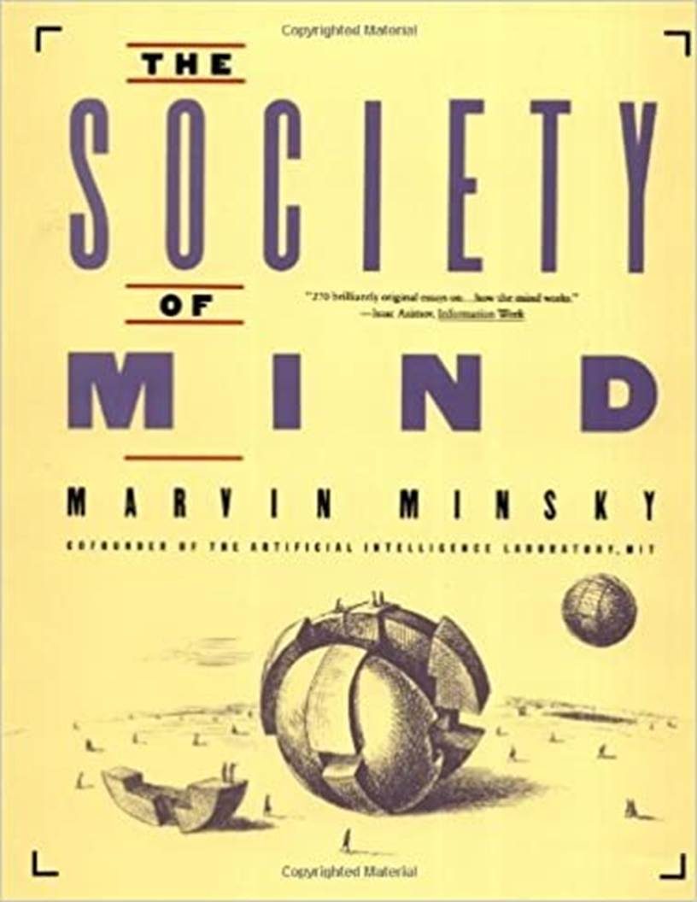
مجتمع العقل
الرسوم التوضيحية من قبل لوليانا لي
حقوق الطبع والنشر � 1985، 1986 لمارفن مينسكي
جميع الحقوق محفوظة بما في ذلك حق النسخ كليًا أو جزئيًا بأي شكل من الأشكال.
تم تصميمه بواسطة Irving Perkins Associates وتم تصنيعه في الولايات المتحدة الأمريكية
3 5 7 9 10 8 6 4 2 7 9 10 8 بك.
فهرسة مكتبة الكونجرس في بيانات النشر
مينسكي، مارفن لي، موعد.
مجتمع العقل.
1. الفكر. 2. معالجة المعلومات البشرية.
3. العلوم والفلسفة. أنا. العنوان. BF431.M553 1986 153 86-20322
ردمك 0-671-60740-5 ردمك 0-671-65713-5 ببك.
يجب أن يكون كل شيء بسيطًا قدر الإمكان، ولكن ليس أبسط.
» ألبرت أينشتاين
يحاول هذا الكتاب شرح كيفية عمل العقول. كيف يمكن أن ينبثق الذكاء من اللاذكاء؟ للإجابة على ذلك، سنبين أنه يمكنك بناء عقل من العديد من الأجزاء الصغيرة، كل منها لا عقل له في حد ذاته.
سأطلق على هذا المخطط "مجتمع العقل" حيث يتكون كل عقل من العديد من العمليات الأصغر. هؤلاء سوف نتصل بهم وكلاء. لا يستطيع كل عامل عقلي بمفرده أن يفعل سوى بعض الأشياء البسيطة التي لا تحتاج إلى عقل أو تفكير على الإطلاق. ومع ذلك، عندما ننضم إلى هؤلاء العملاء في المجتمعات - بطرق معينة خاصة جدًا - فإن هذا يؤدي إلى الذكاء الحقيقي.
لا يوجد شيء تقني للغاية في هذا الكتاب. وهو أيضاً مجتمع يضم العديد من الأفكار الصغيرة. كل واحد في حد ذاته هو المنطق السليم فقط، ولكن عندما ننضم إلى ما يكفي من هم يمكننا أن نفسر أغرب أسرار العقل.
إحدى المشاكل هي أن هذه الأفكار لها الكثير من الروابط المتبادلة. نادرًا ما تسير تفسيراتي في خطوط مستقيمة وأنيقة من البداية إلى النهاية. أتمنى لو كان بإمكاني ترتيبها بحيث يمكنك الصعود مباشرة إلى القمة، عن طريق درجات السلم الذهني، واحدة تلو الأخرى. وبدلاً من ذلك، فهما مقيدين بشبكات متشابكة.
ربما يكون الخطأ في الواقع خطأي، لأنني فشلت في العثور على قاعدة مرتبة من المبادئ المنظمة بدقة. لكنني أميل إلى إلقاء اللوم على طبيعة العقل: يبدو أن الكثير من قوته تنبع من الطرق الفوضوية التي يتواصل بها عملاؤه. إذا كان الأمر كذلك، فلا يمكن معالجة هذا التعقيد؛ هذا فقط ما يجب أن نتوقعه من حيل التطور التي لا تعد ولا تحصى.
ماذا يمكننا أن نفعل عندما يصعب وصف الأشياء؟ نبدأ برسم الأشكال الأكثر خشونة لتكون بمثابة سقالات للباقي؛ لا يهم كثيرًا إذا تبين أن بعض هذه النماذج خاطئة جزئيًا. بعد ذلك، ارسم التفاصيل لإضفاء المزيد من الحيوية على هذه الهياكل العظمية. أخيرًا، في عملية التعبئة النهائية، تخلص من الأفكار الأولى التي لم تعد مناسبة.
وهذا ما نفعله في الحياة الواقعية، مع الألغاز التي تبدو صعبة للغاية. إنه نفس الشيء بالنسبة للأواني المحطمة كما هو الحال بالنسبة لتروس الآلات العظيمة. وإلى أن ترى بعضًا من الباقي، لن تتمكن من فهم أي جزء.
يجب أن تمتد نظريات العقل الجيدة على ثلاثة مستويات زمنية مختلفة على الأقل: بطيئة، لمليار سنة التي تطورت فيها أدمغتنا؛ الصيام للأسابيع والأشهر العابرة من الرضاعة والطفولة؛ وبينهما قرون من نمو أفكارنا عبر التاريخ.
لشرح العقل، علينا أن نبين كيف يتم بناء العقول من أشياء لا معنى لها، من أجزاء أصغر وأبسط بكثير من أي شيء نعتبره ذكيًا. وما لم نتمكن من تفسير العقل في ضوء الأشياء التي ليس لها أفكار أو مشاعر خاصة بها، فسنكون قد تجولنا في دائرة. ولكن ما هي تلك الجسيمات الأبسط التي يمكن أن تكون "العوامل" التي تشكل عقولنا؟ هذا هو موضوع كتابنا، ومعرفة ذلك، دعونا نرى مهمتنا. هناك العديد من الأسئلة للإجابة عليها.
وظيفة: كيف يعمل الوكلاء؟
تجسيد: ما هي مصنوعة من؟
تفاعل: كيف يتواصلون؟
الأصول: من أين يأتي الوكلاء الأوائل؟
الوراثة: هل ولدنا جميعا مع نفس الوكلاء؟
تعلُّم: كيف نصنع عملاء جدد ونغير القدامى؟
شخصية: ما هي أهم أنواع الوكلاء؟
سلطة: ماذا يحدث عندما يختلف الوكلاء؟
نيّة: كيف يمكن لمثل هذه الشبكات أن تريد أو ترغب؟
كفاءة: كيف يمكن لمجموعات من الوكلاء أن تفعل ما لا يستطيع الوكلاء المنفصلون القيام به؟
الذات: ما الذي يمنحهم الوحدة أو الشخصية؟
معنى: كيف يمكنهم أن يفهموا أي شيء؟
حساسية: كيف يمكن أن يكون لديهم مشاعر وأحاسيس؟
وعي: كيف يمكن أن يكونوا واعين أو مدركين لذواتهم؟
كيف يمكن لنظرية العقل أن تفسر الكثير من الأشياء، عندما يبدو أن كل سؤال منفصل يصعب الإجابة عليه بمفرده؟ تبدو هذه الأسئلة كلها صعبة، في الواقع، عندما نقطع اتصالات كل واحد منا مع الآخر. ولكن بمجرد أن نرى العقل كمجتمع من الفاعلين، فإن كل إجابة سوف تنير الباقي.
لم يكن من المفترض أبدا [قال الشاعر إملاك] وأن التفكير متأصل في المادة، أو أن كل جسيم هو كائن مفكر. ومع ذلك، إذا كان أي جزء من المادة خاليًا من الفكر، فما هو الجزء الذي يمكننا أن نفترض أنه يفكر؟ لا يمكن للمادة أن تختلف عن المادة إلا في الشكل، والكتلة، والكثافة، والحركة، واتجاه الحركة: إلى أي منها، مهما كانت متنوعة أو مجتمعة، يمكن ضم الوعي؟ أن تكون مستديرًا أو مربعًا، أن تكون صلبًا أو مائعًا، أن تكون كبيرًا أو صغيرًا، أن تتحرك ببطء أو بسرعة بطريقة أو بأخرى، هي أنماط من الوجود المادي، كلها غريبة بنفس القدر عن طبيعة التفكير. إذا كانت المادة ذات يوم بلا فكر، فلا يمكن جعلها تفكر إلا عن طريق بعض التعديلات الجديدة، ولكن جميع التعديلات التي يمكنها قبولها تكون غير مرتبطة بالقدرات التفكيرية.
� صامويل جونسون
كيف يمكن للأدمغة التي تبدو صلبة أن تدعم أشياء شبحية مثل الأفكار؟ لقد أزعج هذا السؤال العديد من مفكري الماضي. يبدو أن عالم الأفكار وعالم الأشياء متباعدان جدًا بحيث لا يمكن التفاعل بينهما بأي شكل من الأشكال. وطالما بدت الأفكار مختلفة تمامًا عن أي شيء آخر، لم يكن هناك مكان للبدء منه.
وقبل بضعة قرون مضت، بدا من المستحيل بنفس القدر تفسير الحياة، لأن الكائنات الحية بدت مختلفة تمامًا عن أي شيء آخر. يبدو أن النباتات تنمو من لا شيء. يمكن للحيوانات أن تتحرك وتتعلم. يمكن لكل منهما أن يعيد إنتاج نفسه، في حين لا يمكن لأي شيء آخر أن يفعل مثل هذه الأشياء. ولكن بعد ذلك بدأت تلك الفجوة الهائلة في الإغلاق. لقد وجد أن كل كائن حي يتكون من خلايا أصغر، وتبين أن الخلايا تتكون من مواد كيميائية معقدة ولكن مفهومة. وسرعان ما تبين أن النباتات لا تنتج أي مادة على الإطلاق، بل تستخرج ببساطة معظم موادها من الغازات الموجودة في الهواء. وتبين أن القلوب النابضة بشكل غامض ليست أكثر من مجرد مضخات ميكانيكية، مكونة من شبكات من الخلايا العضلية. ولكن لم يظهر جون فون نيومان نظريًا كيف يمكن لآلات الخلية أن تتكاثر إلا في القرن الحالي، بينما اكتشف جيمس واتسون وفرانسيس كريك، بشكل مستقل تقريبًا، كيف تقوم كل خلية فعليًا بعمل نسخ من شيفرتها الوراثية الخاصة. لم يعد على الشخص المتعلم أن يبحث عن أي قوة حيوية خاصة لتحريك كل كائن حي.
وعلى نحو مماثل، قبل قرن من الزمان، لم يكن لدينا أي وسيلة للبدء في شرح كيفية عمل التفكير. ثم أنتج علماء النفس مثل سيغموند فرويد وجان بياجيه نظرياتهم حول نمو الطفل. في وقت لاحق إلى حد ما، على الجانب الميكانيكي، بدأ علماء الرياضيات مثل كيرت جودل وآلان تورينج في الكشف عن النطاق غير المعروف حتى الآن لما يمكن صنع الآلات للقيام به. لم يبدأ هذان التياران الفكريان في الاندماج إلا في أربعينيات القرن العشرين، عندما بدأ وارن ماكولوتش ووالتر بيتس في إظهار كيف يمكن صنع الآلات لكي ترى، وتفكر، وتتذكر. لم تبدأ الأبحاث في مجال الذكاء الاصطناعي الحديث إلا في الخمسينيات من القرن العشرين، وقد حفزها اختراع أجهزة الكمبيوتر الحديثة. وقد ألهم هذا طوفانًا من الأفكار الجديدة حول كيفية قيام الآلات بعمل ما كانت تفعله العقول فقط في السابق.
لا يزال معظم الناس يعتقدون أنه لا يمكن لأي آلة أن تكون واعية، أو تشعر بالطموح، أو الغيرة، أو الفكاهة، أو لديها أي تجربة حياتية عقلية أخرى. من المؤكد أننا ما زلنا بعيدين عن القدرة على إنشاء آلات تقوم بكل الأشياء التي يفعلها الناس. لكن هذا يعني أننا بحاجة إلى نظريات أفضل حول كيفية عمل التفكير. سيوضح هذا الكتاب كيف يمكن للآلات الصغيرة التي نطلق عليها "عوامل العقل" أن تكون "الجسيمات" التي طال انتظارها والتي تحتاجها تلك النظريات.
أنت تعلم أن كل ما تفكر فيه وتفعله هو تفكيرك وفعله بواسطتك. ولكن ما هو "أنت"؟ ما هي أنواع الكيانات الصغيرة التي تتعاون داخل عقلك للقيام بعملك؟ للبدء في رؤية كيف تشبه العقول المجتمعات، جرب هذا:
التقط كوبًا من الشاي!
يريد وكلاء GRASPING الاحتفاظ بالكوب.
يريد وكلاء الموازنة الخاص بك منع تسرب الشاي.
عملاء العطش الخاص بك يريدون منك أن تشرب الشاي.
يريد وكلاء النقل الخاص بك إيصال الكأس إلى شفتيك.
ومع ذلك، لا شيء من هذه الأشياء يستهلك عقلك وأنت تتجول في الغرفة وتتحدث مع أصدقائك. أنت بالكاد تفكر على الإطلاق توازن؛ توازن ليس لديه أي قلق مع يمسك؛ يمسك ليس لديه مصلحة في عطش؛ و عطش لا علاقة له بمشاكلك الاجتماعية. ولم لا؟ لأنهم يستطيعون الاعتماد على بعضهم البعض. إذا قام كل منهم بعمله الصغير، فإن المهمة الكبيرة حقًا سيتم إنجازها جميعًا معًا: شرب الشاي.
كم عدد العمليات الجارية للحفاظ على مستوى فنجان الشاي في متناول يدك؟ يجب أن يكون هناك ما لا يقل عن مائة منهم، فقط لتشكيل معصمك وكفك ويدك. يجب أن تعمل ألف نظام عضلي آخر على إدارة جميع العظام والمفاصل المتحركة التي تجعل جسمك يتجول. وللحفاظ على توازن كل شيء، يجب على كل واحدة من هذه العمليات أن تتواصل مع بعض العمليات الأخرى. ماذا لو تعثرت وبدأت في السقوط؟ ثم تحاول العديد من العمليات الأخرى تصحيح الأمور بسرعة. البعض منهم يهتم بكيفية اتكائك وأين تضع قدميك. والبعض الآخر مشغول بما يجب فعله بشأن الشاي: فأنت لن ترغب في حرق يدك، ولكنك أيضًا لن ترغب في حرق شخص آخر. أنت بحاجة إلى طرق لاتخاذ قرارات سريعة.
كل هذا يحدث أثناء حديثك، ولا يبدو أن أيًا منه يحتاج إلى الكثير من التفكير. ولكن عندما تفكر في الأمر، فإن حديثك نفسه لا ينطبق عليه الأمر أيضًا. ما أنواع الوكلاء الذين يختارون كلماتك حتى تتمكن من التعبير عن الأشياء التي تقصدها؟ كيف يتم ترتيب تلك الكلمات في عبارات وجمل، ترتبط كل منها بالأخرى؟ ما هي الوكالات الموجودة داخل عقلك التي تتتبع كل الأشياء التي قلتها، وأيضًا لمن قلتها؟ كم يمكن أن تشعر بالحماقة عندما تكرر ما لم تكن متأكدًا من أن جمهورك جديد.
نحن نقوم دائمًا بعدة أشياء في وقت واحد، مثل التخطيط والمشي والتحدث، وكل هذا يبدو طبيعيًا جدًا لدرجة أننا نعتبره أمرًا مفروغًا منه. لكن هذه العمليات تتضمن في الواقع آلات أكثر مما يمكن لأي شخص أن يفهمه دفعة واحدة. لذا، في الأقسام القليلة التالية من هذا الكتاب، سنركز على نشاط عادي واحد فقط صنع الأشياء باستخدام مكعبات البناء للأطفال. سنقوم أولاً بتقسيم هذه العملية إلى أجزاء أصغر، وبعد ذلك سنرى مدى ارتباط كل منها بجميع الأجزاء الأخرى.
ومن خلال القيام بذلك، سنحاول تقليد كيف تعلم غاليليو ونيوتن الكثير من خلال دراسة أبسط أنواع البندولات والأوزان والمرايا والمنشورات. دراستنا لكيفية البناء بالمكعبات ستكون مثل تركيز المجهر على أبسط الأشياء التي يمكن أن نجدها، لفتح عالم عظيم وغير متوقع. وهذا هو نفس السبب الذي يجعل الكثير من علماء الأحياء اليوم يكرسون المزيد من الاهتمام للجراثيم والفيروسات الصغيرة أكثر من اهتمامهم بالأسود والنمور الرائعة. بالنسبة لي ولجيل كامل من الطلاب، كان عالم العمل مع مكعبات الأطفال بمثابة المنشور والبندول لدراسة الذكاء.
في العلوم، يمكن للمرء أن يتعلم أكثر من خلال دراسة ما يبدو أقل.
تخيل طفلاً يلعب بالمكعبات، وتخيل أن عقل هذا الطفل يحتوي على مجموعة من العقول الصغيرة. نسميهم عملاء عقليين. الآن، اتصل وكيل منشئ هو في السيطرة. بناة التخصص هو صنع الأبراج من الكتل.
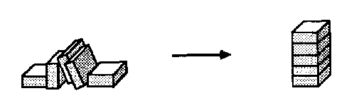
يحب طفلنا مشاهدة البرج ينمو حيث يتم وضع كل كتلة جديدة في الأعلى. لكن بناء برج هو مهمة معقدة للغاية بالنسبة لأي عميل بسيط، لذلك منشئ عليه أن يطلب المساعدة من العديد من الوكلاء الآخرين:
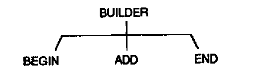
اختر مكانًا لبدء البرج. إضافة كتلة جديدة إلى البرج. تقرر ما إذا كانت عالية بما فيه الكفاية.
في الواقع، حتى العثور على كتلة أخرى ووضعها على قمة البرج يعد أمرًا كبيرًا جدًا بالنسبة لوظيفة أي وكيل منفرد. لذا يضيف، وبدوره، يجب عليه طلب مساعدة الوكلاء الآخرين. قبل أن ننتهي من ذلك، سنحتاج إلى عدد أكبر من العملاء مما قد يتناسب مع أي مخطط.
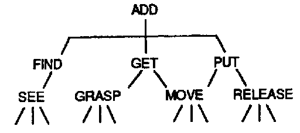
يجب أن تجد الإضافة الأولى كتلة جديدة. ثم يجب أن تحصل اليد على تلك الكتلة وتضعها على قمة البرج.
لماذا كسر الأشياء إلى مثل هذه الأجزاء الصغيرة؟ لأن العقول، مثل الأبراج، مصنوعة بهذه الطريقة، إلا أنها تتكون من عمليات بدلاً من كتل. وإذا كان إنشاء مجموعات من المكعبات يبدو غير مهم، فتذكر أنك لم تكن تشعر دائمًا بهذه الطريقة. عندما وجدت لأول مرة بعض ألعاب البناء في مرحلة الطفولة المبكرة، ربما قضيت أسابيع ممتعة في تعلم ما يجب فعله بها. إذا كانت هذه الألعاب تبدو مملة نسبيا الآن، فعليك أن تسأل نفسك كيف أنت لقد تغيرت. قبل أن تتحول إلى أشياء أكثر طموحًا، كان يبدو غريبًا ورائعًا أن تتمكن من بناء برج أو منزل من الكتل. ومع ذلك، على الرغم من أن جميع الأشخاص البالغين يعرفون كيفية القيام بمثل هذه الأشياء، لا أحد يفهم كيف نتعلم القيام بها! و الذي - التي هو ما سوف يهمنا هنا. تجميع الكتل في أكوام وصفوف: هذه هي المهارات التي تعلمها كل واحد منا منذ فترة طويلة لدرجة أننا لا نستطيع أن نتذكر أننا تعلمناها على الإطلاق. والآن تبدو هذه مجرد حس سليم، وهذا ما يجعل علم النفس صعبًا. هذا النسيان، فقدان ذاكرة الطفولة، يجعلنا نفترض أن كل قدراتنا الرائعة كانت موجودة دائمًا داخل عقولنا، ولا نتوقف أبدًا لنسأل أنفسنا كيف بدأت وتطورت.
لا يمكنك التفكير في التفكير دون التفكير في التفكير في شيء ما.
� سيمور بابيرت
لقد وجدنا طريقة لصنع أداة بناء البرج من الأجزاء. لكن منشئ هو حقا بعيد عن القيام به. لبناء مجموعة بسيطة من المكعبات، يجب على وكلاء أطفالنا إنجاز كل هذه الأشياء الأخرى.
يجب أن تتعرف الرؤية على كتلها، مهما كان لونها وحجمها ومكانها، على الرغم من اختلاف الخلفيات والظلال والأضواء، وحتى عندما تكون محجوبة جزئيًا بأشياء أخرى.
ثم، بمجرد الانتهاء من ذلك، يجب على Move توجيه الذراع واليد عبر مسارات معقدة في الفضاء، ولكن لا تضرب أبدًا قمة البرج أو تضرب وجه الطفل.
وفكر كم سيبدو الأمر غبيًا، إذا يجد كانت لنرى، و يمسك كان عليهم أن يمسكوا، كتلة تدعم قمة البرج!
وعندما ننظر عن كثب إلى هذه المتطلبات، نجد عالمًا محيرًا من الأسئلة المعقدة. على سبيل المثال، كيف يمكن يجد تحديد الكتل التي لا تزال متاحة للاستخدام؟ يجب أن "يفهم" المشهد من حيث ما يحاول القيام به. وهذا يعني أننا سنحتاج إلى نظريات حول ما يعنيه الفهم وكيف يمكن للآلة أن يكون لها هدف. النظر في كل عملي الأحكام التي هي الفعلية منشئ يجب أن تجعل. وسيتعين عليها أن تقرر ما إذا كانت هناك كتل كافية لتحقيق هدفها وما إذا كانت قوية وواسعة بما يكفي لدعم الكتل الأخرى التي سيتم وضعها عليها.
ماذا لو بدأ البرج في التأرجح؟ يجب على البناء الحقيقي أن يخمن السبب. هل لأن بعض المفاصل داخل العمود ليست مربعة بدرجة كافية؟ هل الأساس غير آمن أم أن البرج طويل جدًا بالنسبة لعرضه؟ ربما يكون السبب فقط هو أن الكتلة الأخيرة تم وضعها بشكل قاسٍ جدًا.
يتعلم جميع الأطفال عن مثل هذه الأشياء، لكننا نادرًا ما نفكر فيها في سنواتنا اللاحقة. وبحلول الوقت الذي نصبح فيه بالغين فإننا نعتبر كل هذا مجرد "حس سليم". ولكن هذا الزوج من الكلمات الخادعة يخفي مهارات مختلفة لا تعد ولا تحصى.
الفطرة السليمة ليست شيئا بسيطا. وبدلاً من ذلك، فهو مجتمع هائل من الأفكار العملية التي تم الحصول عليها بشق الأنفس - من العديد من القواعد والاستثناءات المستفادة من الحياة، والتصرفات والميول، والتوازنات والضوابط.
إذا كان الفطرة السليمة متنوعة ومعقدة إلى هذا الحد، فما الذي يجعلها تبدو واضحة وطبيعية إلى هذا الحد؟ يأتي وهم البساطة هذا من فقدان الاتصال بما حدث أثناء مرحلة الطفولة، عندما قمنا بتكوين قدراتنا الأولى. مع نضوج كل مجموعة جديدة من المهارات، فإننا نبني المزيد من الطبقات فوقها. مع مرور الوقت، تصبح الطبقات الموجودة بالأسفل بعيدة بشكل متزايد، حتى عندما نحاول التحدث عنها في وقت لاحق من حياتنا، نجد أنفسنا ليس لدينا سوى القليل لنقوله ‹لا أعلم›
نريد أن نفسر الذكاء على أنه مزيج من أشياء أبسط. وهذا يعني أنه يجب علينا أن نتأكد، في كل خطوة، من أن أياً من وكلائنا ليس ذكياً في حد ذاته. وإلا فإن نظريتنا قد تنتهي إلى التشابه مع "آلة الشطرنج" التي ظهرت في القرن التاسع عشر والتي كشف عنها إدجار آلان بو لإخفاء قزم بشري بداخلها. وبناءً على ذلك، عندما نجد أن على أحد الوكلاء القيام بأي شيء معقد، فسنستبدله بمجموعة فرعية من الوكلاء الذين يقومون بأشياء أكثر بساطة. ولهذا السبب، يجب أن يكون القارئ مستعدًا للشعور بإحساس معين بالخسارة. عندما نقوم بتفكيك الأشياء إلى أصغر أجزائها، سيبدو كل منها جافًا كالغبار في البداية، كما لو أن بعض جوهرها قد فقد.
على سبيل المثال، رأينا كيفية بناء مهارة بناء البرج من خلال الصنع منشئ من أجزاء صغيرة مثل يجد و يحصل. والآن، أين تكمن "معرفة كيفية البناء" في حين أنه من الواضح أنها ليست موجودة في أي جزء، ومع ذلك فإن تلك الأجزاء هي كل ذلك منشئ يكون؟ الجواب: لا يكفي أن نبين فقط ما يفعله كل فاعل على حدة. ويجب علينا أيضًا أن نفهم كيف ترتبط هذه الأجزاء ببعضها البعض، أي كيف المجموعات من الوكلاء يمكنهم إنجاز الأشياء.
وبناءً على ذلك، تستخدم كل خطوة في هذا الكتاب طريقتين مختلفتين للتفكير في الوكلاء. لو كنت لمشاهدة منشئ عندما تعمل من الخارج، وبدون أي فكرة عن كيفية عملها من الداخل، سيكون لديك انطباع بأنها تعرف كيفية بناء الأبراج. ولكن إذا كنت تستطيع أن ترى منشئ ومن الداخل بالتأكيد لن تجد أي معرفة هناك. لن ترى سوى عدد قليل من المفاتيح، مرتبة بطرق مختلفة لتشغيل وإيقاف بعضها البعض. هل يعرف Builder حقًا � كيفية بناء الأبراج؟ الجواب يعتمد على كيفية نظرتك إليه. دعونا نستخدم كلمتين مختلفتين، "الوكيل". و "وكالة،". ليقول لماذا منشئ يبدو أنه يعيش حياة مزدوجة. باعتبارها وكالة، يبدو أنها تعرف وظيفتها. بصفته وكيلًا، لا يمكنه معرفة أي شيء على الإطلاق.
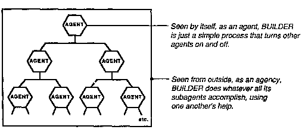
عندما تقود السيارة فإنك تعتبر عجلة القيادة بمثابة أداة يمكنك استخدامها لتغيير اتجاه السيارة. لا يهمك كيف يعمل. ولكن عندما يحدث خطأ ما في التوجيه، وتريد أن تفهم ما يحدث، فمن الأفضل اعتبار عجلة القيادة مجرد عامل واحد في وكالة أكبر: فهي تدير عمودًا يدير ترسًا لسحب قضيب يغير محور العجلة. بالطبع، لا يرغب المرء دائمًا في أخذ هذه النظرة المجهرية؛ إذا وضعت كل هذه التفاصيل في الاعتبار أثناء القيادة، فقد تتعرض لحادث لأن الأمر يستغرق وقتًا طويلاً للغاية لمعرفة الاتجاه الذي يجب أن تدير فيه عجلة القيادة. معرفة كيف ليست مثل معرفة السبب. في هذا الكتاب، سنتنقل دائمًا بين الوكلاء والوكالات، لأنه سيتعين علينا، اعتمادًا على أغراضنا، استخدام وجهات نظر وأنواع مختلفة من الأوصاف.
إن طبيعة العقل هي التي تجعل الأفراد أقرباء، والاختلافات في شكل أو شكل أو طريقة ذرات المادة التي يبنى العقل من علاقاتها المعقدة هي اختلافات تافهة تمامًا.
" إسحاق عظيموف
لقد رأينا ذلك بناة يمكن اختزال المهارة إلى مهارات أبسط يحصل و يضع. ثم رأينا كيف يمكن لهذه بدورها أن تكون مصنوعة من أشياء أبسط. يحصل يحتاج فقط إلى يتحرك اليد ل يمسك الكتلة ذلك يجد وجدت للتو. يضع يجب فقط أن يتحرك اليد بحيث تضع تلك الكتلة على قمة البرج. لذلك قد يبدو أن كل البناء تم "تقليص" الوظائف إلى أشياء يمكن للأجزاء الأبسط القيام بها.
ولكن تم إهمال شيء مهم. منشئ ليست مجرد مجموعة من أجزاء مثل البحث عن، الحصول على، وضع، وكل الباقي. ل منشئ لن يعمل على الإطلاق ما لم يتم ربط هؤلاء الوكلاء بـ واحد أخرى عن طريق شبكة مناسبة من الترابطات.
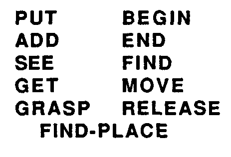
� الوكلاء بأنفسهم
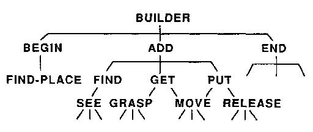
�
�
� وكلاء في البيروقراطية
هل يمكنك التنبؤ بماذا منشئ هل من معرفة تلك القائمة اليسرى فقط؟ بالطبع لا: يجب عليك أيضًا معرفة الوكلاء الذين يعملون لصالحهم. وبالمثل، لا يمكنك التنبؤ بما سيحدث في مجتمع بشري من خلال معرفة ما يمكن أن يفعله كل فرد على حدة فقط؛ ويجب عليك أيضًا أن تعرف كيف يتم تنظيمهم، أي من يتحدث إلى من. وينطبق الشيء نفسه على فهم أي شيء كبير ومعقد. أولا، يجب أن نعرف كيف يعمل كل جزء على حدة. ثانياً، يجب أن نعرف كيف يتفاعل كل جزء مع الأجزاء التي يرتبط بها. وثالثاً، علينا أن نفهم كيف تجتمع كل هذه التفاعلات المحلية لإنجاز ما يريده ذلك النظام يفعل "كما يرى من الخارج."
في حالة الدماغ البشري، سيستغرق حل هذه الأنواع الثلاثة من المشاكل وقتًا طويلاً. أولا علينا أن نفهم كيف تعمل خلايا الدماغ. سيكون هذا صعبًا لأن هناك مئات الأنواع المختلفة من خلايا الدماغ. بعد ذلك، سيتعين علينا أن نفهم كيف تتفاعل الخلايا من كل نوع مع أنواع الخلايا الأخرى التي تتصل بها. يمكن أن يكون هناك الآلاف من هذه الأنواع المختلفة من التفاعلات. ثم، أخيرًا، يأتي الجزء الأصعب: علينا أيضًا أن نفهم كيف يتم تنظيم مليارات خلايا الدماغ لدينا في المجتمعات. وللقيام بذلك، سنحتاج إلى تطوير العديد من النظريات والمفاهيم التنظيمية الجديدة. كلما تمكنا من معرفة كيفية تطور أدمغتنا من أدمغة الحيوانات البسيطة، أصبحت هذه المهمة أسهل.
من الأفضل دائمًا أن يتم تفسير الألغاز من حيث الأشياء التي نعرفها. ولكن عندما نجد صعوبة في القيام بذلك، يجب علينا أن نقرر ما إذا كنا سنستمر في محاولة جعل النظريات القديمة تعمل أو أن نتجاهلها ونجرب نظريات جديدة. أعتقد أن هذه مسألة شخصية جزئيًا. دعونا نطلق على "الاختزاليين" أولئك الأشخاص الذين يفضلون البناء على الأفكار القديمة، و"الروائيين" الذين يحبون الدفاع عن الفرضيات الجديدة. عادةً ما يكون الاختزاليون على حق، على الأقل فيما يتعلق بالعلم الحذر، حيث نادرًا ما تبقى المستجدات لفترة طويلة. لكن خارج هذا المجال، يسود الروائيون، لأن الأفكار القديمة كان لديها المزيد من الوقت لإظهار عيوبها.
إنه لأمر مدهش حقًا كيف تعتمد بعض العلوم على أنواع قليلة جدًا من التفسيرات. يمكن لعلم الفيزياء الآن أن يفسر كل ما نراه تقريبًا، على الأقل من حيث المبدأ، من حيث كيفية تفاعل أنواع قليلة جدًا من الجسيمات ومجالات القوة. على مدى القرون القليلة الماضية، حققت الاختزالية نجاحًا ملحوظًا. ما الذي يجعل من الممكن وصف جزء كبير من العالم من خلال عدد قليل جدًا من القواعد الأساسية؟ لا أحد يعرف.
ينظر العديد من العلماء إلى الكيمياء والفيزياء كنماذج مثالية لما ينبغي أن يكون عليه علم النفس. ففي نهاية المطاف، تخضع الذرات الموجودة في الدماغ لنفس القوانين الفيزيائية الشاملة التي تحكم كل أشكال المادة الأخرى. إذن هل يمكننا أيضًا أن نفسر ما تفعله أدمغتنا فعليًا فيما يتعلق بنفس المبادئ الأساسية؟ الجواب هو لا، لأنه ببساطة حتى لو فهمنا كيف تعمل كل خلية من مليارات خلايا الدماغ بشكل منفصل، فإن هذا لن يخبرنا كيف يعمل الدماغ كوكالة. لا تعتمد "قوانين الفكر" على خصائص خلايا الدماغ هذه فحسب، بل تعتمد أيضًا على كيفية ارتباطها ببعضها البعض. وهذه الروابط لا يتم تحديدها من خلال القوانين "العامة" الأساسية للفيزياء، بل من خلال الترتيبات الخاصة لملايين البتات من المعلومات في جيناتنا الموروثة. من المؤكد أن القوانين "العامة" تنطبق على كل شيء. ولكن لهذا السبب بالذات، نادرًا ما يمكنهم شرح أي شيء على وجه الخصوص.
هل هذا يعني أن علم النفس يجب أن يرفض قوانين الفيزياء ويجد قوانينه الخاصة؟ بالطبع لا. انها ليست مسألة مختلف القوانين ولكن إضافي أنواع النظريات والمبادئ التي تعمل على مستويات أعلى من التنظيم. أفكارنا حول كيفية منشئ إن العمل كوكالة ليس من الضروري، ولا يجب، أن يتعارض مع معرفتنا بكيفية القيام بذلك البناء يعمل وكلاء المستوى الأدنى. يجب على كل مستوى أعلى من الوصف يضيف لمعرفتنا حول المستويات الأدنى، بدلا من استبدالها. وسنعود إلى فكرة "المستوى" في مواضع عديدة من هذا الكتاب.
هل سيشبه علم النفس يومًا أيًا من العلوم التي نجحت في اختزال موضوعاتها إلى عدد قليل جدًا من المبادئ؟ يعتمد ذلك على ما تعنيه بـ "القليل". في الفيزياء، اعتدنا على تفسيرات ربما من خلال عشرات المبادئ الأساسية. بالنسبة لعلم النفس، يجب أن تجمع تفسيراتنا مئات النظريات الأصغر. بالنسبة للفيزيائيين، قد يبدو هذا الرقم كبيرًا جدًا. بالنسبة للإنسانيين، قد يبدو الأمر صغيرًا جدًا.
كثيراً ما يُقال لنا إن بعض الكليات "أكثر من مجرد مجموع أجزائها". ونسمع التعبير عن هذا بكلمات موقرة مثل "شمولي" و"جشطالت"، والتي تشير نغماتها الأكاديمية إلى أنها تشير إلى أفكار واضحة ومحددة. لكنني أظن أن الوظيفة الفعلية لمثل هذه المصطلحات هي تخدير الشعور بالجهل. نقول "جشطالت" عندما تجتمع الأشياء لتتصرف بطرق لا نستطيع تفسيرها، ونقول "شمولي" عندما نتفاجأ بأحداث غير متوقعة وندرك أننا نفهم أقل مما كنا نعتقد. على سبيل المثال، فكر في مجموعتي الأسئلة أدناه، الأولى "ذاتية" والثانية "موضوعية":
ما الذي يجعل الرسم أكثر من مجرد خطوط منفصلة؟
كيف تكون الشخصية أكثر من مجرد مجموعة من السمات؟
بأي طريقة تكون الثقافة أكثر من مجرد مجموعة من العادات؟
ما الذي يجعل البرج أكثر من مجرد كتل منفصلة؟
لماذا السلسلة أكثر من حلقاتها المختلفة؟
كيف يكون الجدار أكثر من مجرد مجموعة من الطوب؟
لماذا تبدو الأسئلة "الموضوعية" أقل غموضا؟ لأن لدينا طرقًا جيدة للإجابة عليها، فيما يتعلق بكيفية تفاعل الأشياء. لشرح كيفية عمل الجدران والأبراج، نشير فقط إلى كيفية تثبيت كل كتلة في مكانها عن طريق جيرانها وعن طريق الجاذبية. لشرح سبب عدم إمكانية تفكك الروابط المتسلسلة، يمكننا أن نوضح كيف يمكن لكل منها أن يعترض طريق جيرانه. تبدو هذه التفسيرات بديهية تقريبًا للبالغين. ومع ذلك، لم تكن هذه الأشياء تبدو بهذه البساطة عندما كنا أطفالًا، واستغرق الأمر من كل واحد منا عدة سنوات لمعرفة كيفية تفاعل الأشياء في العالم الحقيقي - على سبيل المثال، لمنع أي كائنين من التواجد في نفس المكان. نحن نعتبر هذه المعرفة "واضحة" فقط لأننا لا نستطيع أن نتذكر مدى صعوبة التعلم.
لماذا يبدو من الصعب جدًا تفسير ردود أفعالنا تجاه الرسومات والشخصيات والتقاليد الثقافية؟ يفترض الكثير من الناس أن هذا النوع من الأسئلة "الذاتية" من المستحيل الإجابة عليه لأنها تتعلق بعقولنا. لكن هذا لا يعني أنه لا يمكن الرد عليهم. هذا يعني فقط أنه يجب علينا أولاً أن نعرف المزيد عن عقولنا.
تعتمد ردود الفعل "الذاتية" أيضًا على كيفية تفاعل الأشياء. الفرق هو أننا هنا لا نهتم بالأشياء الموجودة في العالم الخارجي، بل بالعمليات الموجودة داخل أدمغتنا.
بمعنى آخر، تلك الأسئلة المتعلقة بالفنون والسمات وأساليب الحياة هي في الواقع أسئلة تقنية تمامًا. يطلبون منا أن نشرح ما يحدث بين الوكلاء في أذهاننا. لكن هذا موضوع لم نتعلم عنه الكثير قط، ولا حتى علومنا. سيتم الرد على مثل هذه الأسئلة في الوقت المناسب. ولكن هذا لن يؤدي إلا إلى إطالة الانتظار إذا واصلنا استخدام كلمات تفسيرية زائفة مثل "شمولي" و"جشطالت". صحيح أن إعطاء أسماء للأشياء في بعض الأحيان قد يساعدنا من خلال دفعنا إلى التركيز على بعض الغموض. ومع ذلك، فمن الضار أن تقود التسمية العقل إلى الاعتقاد بأن الأسماء وحدها تقرب المعنى.
لقد كان إقناع الغالبية العظمى من البشر بهذا الإحساس والفكر [كما يتميز عن المادة] هي، بطبيعتها، أقل عرضة للانقسام والانحلال، وأنه عندما ينحل الجسد إلى عناصره، فإن المبدأ الذي حركه سيبقى أبديًا دون تغيير. ومع ذلك، فمن المحتمل أن ما نسميه الفكر ليس كائنًا فعليًا، ولكنه ليس أكثر من علاقة بين أجزاء معينة من تلك الكتلة المتنوعة بشكل لا نهائي، والتي يتكون منها بقية الكون، والتي تتوقف عن الوجود بمجرد أن تغير تلك الأجزاء موقعها بالنسبة لبعضها البعض.
� بيرسي بيش شيلي
ما هي الحياة؟ يقوم المرء بتشريح الجسد لكنه لا يجد حياة في الداخل. ما هو العقل؟ يشرح المرء الدماغ لكنه لا يجد فيه عقلًا. هل الحياة والعقل أكثر بكثير من مجرد "مجموع أجزائهما" بحيث لا فائدة من البحث عنهما؟ للإجابة على ذلك، فكر في هذه المحاكاة الساخرة لمحادثة بين شمولي ومواطن عادي.
كلي: سأثبت أنه لا يوجد صندوق يمكنه حمل فأرة. يتم صنع الصندوق عن طريق تثبيت ستة ألواح معًا. ولكن من الواضح أنه لا يوجد صندوق يمكنه احتواء الفأرة ما لم يكن به بعض "الاحتواء" أو "الاحتواء". الآن، لا توجد لوحة واحدة تحتوي على أي احتواء، حيث أن الفأر يمكنه الابتعاد عنه ببساطة. وإذا لم يكن هناك احتواء في لوح واحد، فلا يمكن أن يكون هناك احتواء في ستة ألواح. لذلك لا يمكن أن يحتوي الصندوق على ضيق في الماوس على الإطلاق. ومن الناحية النظرية إذن يستطيع الفأر الهروب]».
مواطن: �مذهل. ثم ماذا يفعل احتفظ بالفأرة في الصندوق؟
كلي: "أوه، بسيطة. على الرغم من أنه لا يحتوي على إحكام حقيقي للفأرة، إلا أن الصندوق الجيد يمكنه "محاكاته" بشكل جيد بحيث يتم خداع الفأر ولا يمكنه معرفة كيفية الهروب.
إذن ما الذي يبقي الفأر محصورا؟ وبالطبع، هذه هي الطريقة التي يمنع بها الصندوق الحركة في كل الاتجاهات، لأن كل قضبان لوح تهرب في اتجاه معين. الجانب الأيسر يمنع الماوس من التحرك يسارًا، والجانب الأيمن من الاتجاه يمينًا، والجزء العلوي يمنعه من القفز للخارج، وهكذا. يكمن سر الصندوق ببساطة في كيفية ترتيب الألواح لمنع الحركة داخلها الجميع الاتجاهات! هذا ما تحتوي على وسائل. لذا فمن السخافة أن نتوقع أن تحتوي أي لوحة منفصلة بمفردها على أي منها الاحتواء, على الرغم من أن كل يساهم في الاحتواء. إنها مثل بطاقات التدفق المباشر في لعبة البوكر: فقط اليد الكاملة لها أي قيمة على الإطلاق.
وينطبق الشيء نفسه على كلمات مثل حياة و عقل. ومن الحماقة استخدام هذه الكلمات لوصف أصغر مكونات الكائنات الحية، لأن هذه الكلمات اخترعت لوصف كيفية تفاعل التجمعات الأكبر. يحب الملاكمة, كلمات مثل معيشة و التفكير مفيدة لوصف الظواهر التي تنتج عن مجموعات معينة من العلاقات. السبب صندوق يبدو الأمر غير الغامض هو أن الجميع يفهمون كيف تتفاعل ألواح الصندوق جيد الصنع لمنع الحركة في أي اتجاه. في الواقع الكلمة حياة لقد فقدت بالفعل معظم غموضها، على الأقل بالنسبة لعلماء الأحياء المعاصرين، لأنهم يفهمون الكثير من التفاعلات المهمة بين المواد الكيميائية في الخلايا. لكن عقل لا يزال لغزًا غامضًا، لأننا لا نزال نعرف القليل جدًا عن كيفية تفاعل العوامل العقلية لإنجاز كل الأشياء التي يقومون بها.
في أواخر الستينيات منشئ تم تجسيده في شكل برنامج كمبيوتر في مختبر الذكاء الاصطناعي في معهد ماساتشوستس للتكنولوجيا. لقد أردنا أنا ومعاوني سيمور بابيرت منذ فترة طويلة الجمع بين يد ميكانيكية وعين تلفزيون وجهاز كمبيوتر في روبوت يمكنه البناء باستخدام مكعبات البناء للأطفال. لقد استغرقنا نحن وطلابنا عدة سنوات لتطوير تطبيق Move، انظر، أمسك، ومئات من البرامج الصغيرة الأخرى التي نحتاجها لإنجاز العمل وكالة البناء. أحب أن أعتقد أن هذا المشروع أعطانا لمحات عما يحدث داخل أجزاء معينة من عقول الأطفال عندما يتعلمون "اللعب" بألعاب بسيطة. لقد تركنا المشروع نتساءل عما إذا كان حتى ألف من المهارات الدقيقة ستكون كافية لتمكين الطفل من ملء دلو بالرمل. لقد كانت هذه الخبرات، أكثر من أي شيء تعلمناه عن علم النفس، هي التي قادتنا إلى العديد من الأفكار حول المجتمعات العقلية.
لإجراء تلك التجارب الأولى، كان علينا أن نبني يدًا ميكانيكية، مزودة بأجهزة استشعار للضغط واللمس بأطراف أصابعها. ثم كان علينا أن نربط كاميرا تلفزيونية بجهاز الكمبيوتر الخاص بنا ونكتب برامج يمكن لتلك العين من خلالها تمييز حواف وحدات البناء. وكان عليها أيضًا أن تتعرف على اليد نفسها. عندما لم تعمل تلك البرامج بشكل جيد، أضفنا المزيد من البرامج التي تستخدم حاسة الأصابع للتحقق من أن الأشياء كانت حيث تبدو بصريًا. ومع ذلك، كانت هناك حاجة إلى برامج أخرى لتمكين الكمبيوتر من تحريك اليد من مكان إلى آخر أثناء استخدام العين للتأكد من عدم وجود أي شيء في طريقه. كان علينا أيضًا أن نكتب برامج ذات مستوى أعلى يمكن للروبوت استخدامها لتخطيط ما يجب القيام به، بالإضافة إلى المزيد من البرامج للتأكد من أن تلك الخطط قد تم تنفيذها بالفعل. ولجعل كل هذا يعمل بشكل موثوق، كنا بحاجة إلى برامج للتحقق في كل خطوة (مرة أخرى باستخدام العين واليد) من أن ما تم التخطيط له داخل العقل قد حدث بالفعل في الخارج، أو لتصحيح الأخطاء التي حدثت.
في محاولتنا لجعل الروبوت الخاص بنا يعمل، وجدنا أن العديد من المشكلات اليومية كانت أكثر تعقيدًا بكثير من أنواع المشكلات والألغاز والألعاب التي يعتبرها الكبار صعبة. في كل نقطة، في عالم الكتل هذا، عندما كنا مجبرين على النظر بعناية أكبر من المعتاد، وجدنا عالمًا غير متوقع من التعقيدات. فكر فقط في المشكلة التي تبدو بسيطة، وهي عدم إعادة استخدام الكتل الموجودة بالفعل في البرج. بالنسبة لأي شخص، يبدو هذا منطقيًا بسيطًا: � لا تستخدم شيئًا ما لتحقيق هدف جديد إذا كان هذا الكائن مشتركًا بالفعل في تحقيق هدف سابق ولا أحد يعرف بالضبط كيف تفعل العقول البشرية ذلك. من الواضح أننا نتعلم من التجربة التعرف على المواقف التي من المحتمل أن تحدث فيها صعوبات، وعندما نكبر نتعلم التخطيط مسبقًا لتجنب مثل هذه الصراعات. ولكن بما أننا لا نستطيع التأكد مما قد ينجح، فيتعين علينا أن نتعلم السياسات اللازمة للتعامل مع حالة عدم اليقين. ما هي الاستراتيجيات الأفضل للتجربة، وأيها ستتجنب أسوأ الأخطاء؟ ولابد أن تشارك الآلاف، وربما الملايين من العمليات الصغيرة في الكيفية التي نتوقع بها، ونتخيل، ونخطط، ونتنبأ، ونمنع ــ ومع ذلك فإن كل هذا يتدفق بشكل تلقائي إلى الحد الذي يجعلنا نعتبره "حساً سليماً عادياً". ولكن إذا كان التفكير معقداً إلى هذا الحد، فما الذي يجعله يبدو بهذه البساطة؟ في البداية قد يبدو من غير المعقول أن تتمكن عقولنا من استخدام مثل هذه الآلات المعقدة دون أن تدرك ذلك.
بشكل عام، كنا الأقل وعيًا بما تفعله عقولنا بشكل أفضل.
عندما تبدأ أنظمتنا الأخرى في الفشل، نقوم بإشراك الوكالات الخاصة المعنية بما نسميه "الوعي". وبناءً على ذلك، نكون أكثر وعياً بالعمليات البسيطة التي لا تعمل بشكل جيد من تلك المعقدة التي تعمل بشكل لا تشوبه شائبة. وهذا يعني أننا لا نستطيع أن نثق في أحكامنا المرتجلة بشأن الأشياء التي نقوم بها والتي تعتبر بسيطة، والتي تتطلب آلات معقدة. في أغلب الأحيان، لا يستطيع كل جزء من العقل إلا أن يشعر بمدى هدوء الأجزاء الأخرى في أداء وظائفها.
يشعر الكثير من الناس بالإهانة عندما يتم تشبيه عقولهم ببرامج الكمبيوتر أو الآلات. لقد رأينا كيف يمكن لمهارة بناء البرج البسيطة أن تتكون من أجزاء أصغر. ولكن هل يمكن لشيء يشبه العقل الحقيقي أن يُصنع من أشياء تافهة إلى هذا الحد؟
"سخيفة". يقول معظم الناس. "أنا بالتأكيد لا أشعر بأنني آلة!"
لكن إذا لم تكن آلة، فما الذي يجعلك صاحب سلطة فيما يتعلق بما تشعر به عندما تكون آلة؟ قد يجيب الإنسان، «أنا أفكر، إذن أنا أعرف كيف يعمل العقل». لكن ذلك سيكون مثيراً للريبة مثل القول، "أنا أقود سيارتي، ولذلك أعرف كيف يعمل محركها". إن معرفة كيفية استخدام شيء ما ليست مثل معرفة كيفية عمله.
"لكن الجميع يعلم أن الآلات لا يمكنها التصرف إلا بطرق ميكانيكية هامدة".
يبدو هذا الاعتراض أكثر منطقية: في الواقع، شخص ينبغي أن تشعر بالإهانة عند تشبيهك بأي شخص تافه آلة. ولكن يبدو لي أن كلمة "آلة" أصبحت قديمة. لقرون عديدة، جعلتنا كلمات مثل «ميكانيكي» نفكر في أجهزة بسيطة مثل البكرات، والرافعات، والقاطرات، والآلات الكاتبة. (إن كلمة "مثل الكمبيوتر" ورثت إحساسًا مشابهًا بالتفاهة، وإجراء عمليات حسابية مملة بخطوات صغيرة). ولكن يتعين علينا أن ندرك أننا ما زلنا في عصر مبكر من الآلات، دون أي فكرة تقريبًا عما قد تصبح عليه. ماذا لو جاء زائر من المريخ قبل مليار سنة ليحكم على مصير الحياة على الأرض من خلال مشاهدة كتل من الخلايا التي لم تتعلم حتى الزحف؟ وبنفس الطريقة، لا يمكننا فهم نطاق ما قد تفعله الآلات في المستقبل من رؤية ما هو معروض الآن.
لقد جاء حدسنا الأول بشأن أجهزة الكمبيوتر من تجاربنا مع آلات الأربعينيات من القرن الماضي، والتي كانت تحتوي على آلاف الأجزاء فقط. لكن الدماغ البشري يحتوي على مليارات الخلايا، كل خلية معقدة بذاتها ومتصلة بعدة آلاف من الخلايا الأخرى. تمثل أجهزة الكمبيوتر الحالية درجة متوسطة من التعقيد؛ لديهم الآن ملايين الأجزاء، ويقوم الناس بالفعل ببناء أجهزة كمبيوتر مكونة من مليار جزء للبحث في الذكاء الاصطناعي. ومع ذلك، وعلى الرغم مما يحدث، فإننا نواصل استخدام الكلمات القديمة وكأن لم يحدث أي تغيير على الإطلاق. نحن بحاجة إلى تكييف مواقفنا مع الظواهر التي تعمل على مستويات لم نتصورها من قبل. لم يعد مصطلح "الآلة" يأخذنا بعيدًا بما فيه الكفاية.
لكن الخطابة لن تحسم أي شيء. دعونا نضع هذه الحجج جانبًا ونحاول بدلاً من ذلك أن نفهم ما يمكن أن تفعله الآليات الهائلة وغير المعروفة في الدماغ. عندها سنجد المزيد من احترام الذات عندما نعرف كم نحن من آلات رائعة.
معظم الأطفال لا يحبون البناء فحسب، بل يحبون أيضًا هدم الأشياء. لذلك دعونا نتخيل استدعاء عميل آخر هادم, الذي تخصصه هو هدم. يحب طفلنا سماع الأصوات المعقدة ومشاهدة أشياء كثيرة تتحرك في وقت واحد.
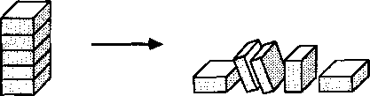
يفترض هادم يُثار، ولكن لا يوجد شيء في الأفق يمكن تحطيمه. ثم هادم سيتعين عليك الحصول على بعض المساعدة عن طريق وضع منشئ للعمل مثلا. ولكن ماذا لو، في وقت لاحق، هادم ويعتبر أن البرج مرتفع بما يكفي لتحطيمه، بينما منشئ يريد أن يجعلها أطول لا يزال؟ ومن يستطيع تسوية هذا النزاع؟
إن أبسط سياسة هي ترك هذا القرار هادم, الذي كان مسؤولا عن التنشيط منشئ في المقام الأول. ولكن في صورة أكثر واقعية لعقل الطفل، فإن مثل هذه الاختيارات ستعتمد على العديد من العوامل الأخرى. على سبيل المثال، لنفترض أن كليهما منشئ و هادم تم تفعيلها في الأصل من قبل عميل ذو مستوى أعلى، اللعب مع الكتل. ثم قد ينشأ صراع إذا منشئ و هادم لا أتفق حول ما إذا كان البرج مرتفعا بما فيه الكفاية.
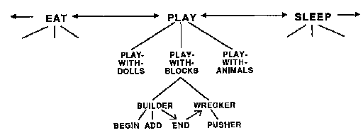
ما أثار اللعب مع الكتل في المقام الأول؟ ربما بعض العملاء من مستوى أعلى، يلعب، كان نشطا أولا. ثم في الداخل يلعب، الوكيل اللعب مع الكتل وتمكن من السيطرة على الرغم من وجود منافسين اثنين اللعب مع الدمى و اللعب مع الحيوانات. ولكن حتى يلعب نفسها، رئيسهم المشترك، يجب أن تتنافس مع وكالات أخرى ذات مستوى أعلى مثل يأكل و ينام. ففي نهاية المطاف، فإن لعب الطفل ليس شيئًا منعزلاً، بل يحدث دائمًا في سياق اهتمامات أخرى في الحياة الواقعية. مهما كان ما نختار القيام به، هناك دائمًا أشياء أخرى نود أيضًا القيام بها.
في عدة أقسام من هذا الكتاب، سأفترض أن الصراعات بين الوكلاء تميل إلى الانتقال صعودًا إلى مستويات أعلى. على سبيل المثال، أي صراع طويل الأمد بين منشئ و هادم سوف يميلون إلى إضعاف رئيسهم المتبادل، اللعب مع الكتل. وهذا بدوره سوف يقلل اللعب مع الكتل القدرة على قمع إنه المنافسين, اللعب مع الدمى و اللعب مع الحيوانات. التالي إذا الذي - التي إذا لم يتم تسوية الصراع قريبا، فإنه سوف يضعف الوكيل يلعب على المستوى الأعلى التالي. ثم يأكل أو ينام قد يسيطر.
ولتسوية الخلافات، تقوم الدول بتطوير الأنظمة القانونية، وتضع الشركات السياسات، وقد يتجادل الأفراد أو يتقاتلون أو يتوصلون إلى تسوية أو يلجأون للحصول على المساعدة من وسطاء يقعون خارج أنفسهم. ماذا يحدث عندما تكون هناك صراعات داخل العقول؟
عندما يتعين على العديد من العملاء التنافس على نفس الموارد، فمن المرجح أن يدخلوا في صراعات. وإذا تُرك هؤلاء الوكلاء لأنفسهم، فقد تستمر الصراعات إلى أجل غير مسمى، وهذا من شأنه أن يترك هؤلاء الوكلاء مشلولين، وغير قادرين على تحقيق أي هدف. ماذا يحدث بعد ذلك؟ سنفترض أن المشرفين على هؤلاء الوكلاء يتعرضون أيضًا لضغوط تنافسية ومن المرجح أن يصبحوا ضعفاء عندما يكون مرؤوسوهم بطيئين في تحقيق أهدافهم، بغض النظر عما إذا كان ذلك بسبب الصراعات بينهم أو بسبب عدم الكفاءة الفردية.
مبدأ عدم التسوية: كلما طال أمد الصراع الداخلي بين مرؤوسي العميل، أصبحت مكانة ذلك العميل أضعف بين منافسيه. إذا لم تتم تسوية مثل هذه المشاكل الداخلية قريبًا، فسيتولى عملاء آخرون زمام الأمور وسيتولى الأمر العملاء المشاركون سابقًا � طرد.
طالما أن اللعب بالمكعبات يسير على ما يرام، يلعب يمكنه الحفاظ على قوته والسيطرة عليه. ومع ذلك، في هذه الأثناء، قد يشعر الطفل أيضًا بالجوع والنعاس، لأن هناك عمليات أخرى تثير العوامل يأكل و ينام. طالما يأكل و ينام لم يتم تفعيلها بقوة بعد، يلعب يمكن أن يوقفهم على حد سواء. ومع ذلك، فإن أي صراع في الداخل يلعب سوف يضعفها ويسهل عليها يأكل أو ينام لتولي المسؤولية. بالطبع، يأكل أو ينام يجب أن ينتصروا في النهاية، لأنه كلما طال انتظارهم، أصبحوا أقوى.
ونحن نرى هذا في تجربتنا الخاصة. نعلم جميعًا مدى سهولة محاربة الانحرافات الصغيرة عندما تسير الأمور على ما يرام. ولكن بمجرد أن تبدأ بعض المشاكل داخل عملنا، فإننا نصبح غير صبورين وسريعي الانفعال بشكل متزايد. في نهاية المطاف، نجد صعوبة كبيرة في التركيز لدرجة أن أقل اضطراب يمكن أن يسمح لمصلحة أخرى مختلفة بالسيطرة. والآن، عندما تفقد أي من وكالاتنا القدرة على التحكم في ما تفعله الأنظمة الأخرى، فهذا لا يعني أنها يجب أن تتوقف عن نشاطها الداخلي. ويمكن للوكالة التي فقدت السيطرة أن تستمر في العمل داخل نفسها، وبالتالي تصبح مستعدة لاغتنام فرصة لاحقة. ومع ذلك، فإننا عادة لا ندرك كل تلك الأنشطة الأخرى التي تجري عميقًا داخل أذهاننا.
أين تتوقف عملية تسليم السيطرة إلى وكالات أخرى؟ هل يجب أن يحتوي كل عقل على أعلى مركز للتحكم؟ ليس بالضرورة. نقوم أحيانًا بتسوية الصراعات من خلال مناشدة رؤسائنا، لكن الصراعات الأخرى لا تنتهي أبدًا ولا تتوقف أبدًا عن إزعاجنا.
في البداية، قد يبدو مبدأ عدم التسوية الذي نتبعه متطرفًا للغاية. ففي نهاية المطاف، يخطط المشرفون البشريون الجيدون مسبقًا لتجنب الصراعات في المقام الأول، وعندما لا يستطيعون ذلك، يحاولون تسوية الخلافات محليًا قبل اللجوء إلى رؤسائهم. لكن لا ينبغي لنا أن نحاول إيجاد تشابه وثيق بين الفاعلين ذوي المستوى المنخفض لعقل واحد وأعضاء المجتمع البشري. إن هؤلاء العناصر العقلية الصغيرة لا يستطيعون ببساطة أن يعرفوا ما يكفي ليتمكنوا من التفاوض مع بعضهم البعض أو إيجاد طرق فعالة للتكيف مع تدخلات بعضهم البعض. فقط الوكالات الأكبر حجماً هي التي يمكن أن تكون لديها الحيلة الكافية للقيام بمثل هذه الأشياء. داخل الطفل الفعلي, الوكالات المسؤولة عن مبنى و تدمير قد تصبح بالفعل متعددة الاستخدامات بما يكفي للتفاوض من خلال تقديم الدعم لأهداف بعضها البعض. ��من فضلك، أيها Wrecker، انتظر لحظة أخرى حتى يضيف Builder كتلة واحدة أخرى فقط: الأمر يستحق كل هذا العناء للحصول على صوت اصطدام أعلى!
بو-ريوكرا-سي ن. إدارة الحكومة من خلال الإدارات والأقسام الفرعية التي تديرها مجموعات من المسؤولين باتباع روتين غير مرن.
"قاموس ويبستر غير المختصر".
كوكيل، منشئ لا يقوم بأي عمل بدني ولكنه يتحول فقط ابدأ، أضف، و نهاية. بصورة مماثلة، يضيف مجرد أوامر البحث عن، وضع، و يحصل للقيام بعملهم. ثم تنقسم هذه إلى وكلاء مثل يتحرك و يمسك. ويبدو أنها لن تتوقف أبدًا عن هذا التقسيم إلى أشياء أصغر. في نهاية المطاف، يجب أن ينتهي الأمر كله بالعوامل التي تقوم بعمل فعلي، ولكن هناك العديد من الخطوات قبل أن نصل إلى جميع العوامل الحركية العضلية الصغيرة التي تحرك الذراعين واليدين ومفاصل الأصابع بالفعل. هكذا منشئ يشبه مديرًا تنفيذيًا رفيع المستوى، بعيدًا عن هؤلاء المرؤوسين الذين ينتجون المنتج النهائي بالفعل.
هل هذا يعني ذلك بناة العمل الإداري غير مهم؟ مُطْلَقاً. يجب السيطرة على هؤلاء الوكلاء ذوي المستوى الأدنى. إنه نفس الشيء تقريبًا في الشؤون الإنسانية. عندما تصبح أي مؤسسة معقدة وكبيرة للغاية بحيث لا يستطيع شخص واحد القيام بها، فإننا نبني منظمات يكون فيها بعض الوكلاء معنيين، ليس بالنتيجة النهائية، ولكن فقط بما يفعله بعض الوكلاء الآخرين. إن تصميم أي مجتمع، سواء كان بشريًا أو ميكانيكيًا، يتضمن قرارات مثل هذه:
من هم الوكلاء الذين يختارون أي من الآخرين للقيام بأية وظائف؟
من سيقرر ما هي الوظائف التي سيتم إجراؤها على الإطلاق؟
من يقرر ما هي الجهود التي يجب إنفاقها؟
كيف سيتم تسوية الصراعات؟
كم من الفكر البشري العادي لديه بناة شخصية؟ ال منشئ وصفنا لا يشبه إلى حد كبير المشرف البشري. وهي لا تقرر أي الوكلاء سيتم تعيينهم لأي وظائف، لأنه تم الترتيب لذلك بالفعل. وهي لا تخطط لعملها المستقبلي، بل تقوم ببساطة بتنفيذ خطوات ثابتة حتى نهاية يقول أن المهمة قد انتهت. كما أنها لا تحتوي على أي ذخيرة من الطرق للتعامل مع الحوادث غير المتوقعة.
نظرًا لأن عواملنا العقلية الصغيرة محدودة للغاية، فلا ينبغي لنا أن نحاول توسيع نطاق التشابه بينها وبين المشرفين والعاملين من البشر. علاوة على ذلك، كما سنرى قريبًا، فإن العلاقات بين العوامل العقلية ليست دائمًا هرمية تمامًا. وعلى أية حال، فإن مثل هذه الأدوار تكون دائمًا نسبية. ل البناء، إضافة هو تابع، ولكن ل البحث، إضافة هو رئيس. أما بالنسبة لك، فكل هذا يتوقف على الطريقة التي تعيش بها. ما هي أنواع الأفكار التي تشغل بالك أكثر من غيرها: الأوامر التي أُجبرت على تنفيذها أم تلك التي أُجبرت على إعطائها؟
إن المجتمع الهرمي يشبه الشجرة، حيث يكون الفاعل في كل فرع مسؤولاً حصرياً عن الفاعلين على الأغصان التي تتفرع منها. يوجد هذا النمط في كل مجال، لأن تقسيم العمل إلى أجزاء كهذه عادة ما يكون أسهل طريقة لبدء حل المشكلة. من السهل بناء وفهم مثل هذه المنظمات لأن كل وكيل ليس لديه سوى وظيفة واحدة للقيام بها: فهو يحتاج فقط إلى "البحث" عن التعليمات من المشرف عليه، ثم "النظر إلى الأسفل" للحصول على المساعدة من مرؤوسيه.
لكن التسلسلات الهرمية لا تعمل دائمًا. ضع في اعتبارك أنه عندما يحتاج عميلان إلى استخدام مهارات بعضهما البعض، فلا يمكن لأي منهما أن يكون "في القمة". لاحظ ما يحدث، على سبيل المثال، عندما تطلب من نظام الرؤية الخاص بك أن يقرر ما إذا كان المشهد الموجود على الجانب الأيسر أدناه يصور ثلاث كتل أم اثنين فقط.
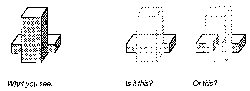
الوكيل يرى يمكن أن يجيب على ذلك إذا كان ذلك ممكنا يتحرك الكتلة الأمامية خارج خط الرؤية. ولكن، أثناء القيام بذلك، يتحرك قد تضطر إلى ذلك يرى إذا كان هناك أي عوائق قد تتداخل مع مسار الذراع. في مثل هذه اللحظة، سيكون التحرك مناسبًا يرى، و يرى ستعمل لصالح Move، كلاهما في نفس الوقت. سيكون هذا مستحيلًا داخل تسلسل هرمي بسيط.
تصور معظم الرسوم البيانية في الأجزاء الأولى من هذا الكتاب تسلسلات هرمية بسيطة. وفي وقت لاحق، سنرى المزيد من الحلقات والحلقات المترابطة، عندما نضطر إلى النظر في الحاجة إلى الذاكرة، والتي ستصبح موضوع اهتمام دائم في هذا الكتاب. غالبًا ما يفكر الناس في الذاكرة من حيث الاحتفاظ بسجلات الماضي، لتذكر الأشياء التي حدثت في أوقات سابقة. لكن الوكالات تحتاج أيضًا إلى أنواع أخرى من الذاكرة أيضًا. يرى، على سبيل المثال، يتطلب نوعًا من الذاكرة المؤقتة لتتبع ما يجب فعله بعد ذلك، عندما يبدأ مهمة واحدة قبل انتهاء مهمته السابقة. إذا كان كل من انظر يمكن للوكلاء أن يفعلوا شيئًا واحدًا فقط في كل مرة، فسرعان ما ستنفد الموارد ولن يتمكنوا من حل المشكلات المعقدة. ولكن إذا كانت لدينا ذاكرة كافية، فيمكننا ترتيب وكلائنا في حلقات دائرية، وبالتالي استخدام نفس العوامل مرارًا وتكرارًا للقيام بأجزاء من عدة وظائف مختلفة في نفس الوقت.
في عقل أي طفل حقيقي، الرغبة في ذلك يلعب يتنافس مع الحوافز الأخرى المتطلبة، مثل يأكل و ينام. ماذا يحدث إذا انتزع وكيل آخر السيطرة منه يلعب، وماذا يحدث للوكلاء يلعب تسيطر عليها؟
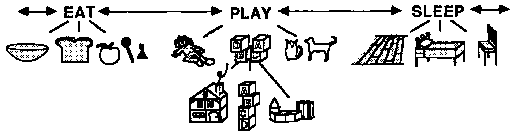
لنفترض أنه تم استدعاء طفلنا بعيدًا، بغض النظر عما إذا كان ذلك من قبل شخص آخر أو بسبب دافع داخلي مثل ينام. ماذا يحدث للعمليات التي تبقى نشطة في العقل؟ قد يظل جزء من الطفل يرغب في اللعب، بينما يرغب جزء آخر في النوم. ربما سيهدم الطفل البرج بركلة انتقامية مفاجئة. ماذا يعني عندما يصنع الأطفال مثل هذه المشاهد؟ هل ينهار الانضباط الداخلي ليسبب تلك الأفعال الوحشية؟ ليس بالضرورة. ربما لا تزال هذه التصرفات "الطفولية" منطقية بطرق أخرى.
التحطيم يستغرق القليل من الوقت لذلك هادم ، تحررت من مسرحيات القيد، الحاجة إلى الاستمرار في ركلة واحدة فقط للحصول على الرضا عن الانهيار النهائي.
على الرغم من أن العنف الطفولي قد يبدو بلا معنى في حد ذاته، إلا أنه يعمل على إيصال الإحباط الناتج عن فقدان الهدف. حتى لو قام الوالد بتوبيخه، فهذا يؤكد فقط مدى جودة إرسال الرسالة واستلامها.
يمكن للأفعال الهدامة أن تخدم أهدافًا بناءة من خلال ترك عدد أقل من المشكلات التي يتعين حلها.
قد تترك هذه الركلة فوضى في الخارج، ولكنها ترتب عقل الطفل.
عندما يحطم الأطفال ألعابهم الثمينة، لا ينبغي لنا أن نطلب ذلك ال السبب - إذ لا يوجد مثل هذا الفعل له سبب واحد. علاوة على ذلك، ليس صحيحًا، في العقل البشري، أنه متى ينام يبدأ إذن يلعب يجب أن يستقيل ويجب أن يتوقف جميع وكلائه. يمكن للطفل الحقيقي أن يذهب إلى السرير، لكنه لا يزال يبني أبراجًا في رأسه.
عندما تشعر بالألم، يكون من الصعب أن تحافظ على اهتمامك بأشياء أخرى. تشعر أنه لا يوجد شيء أكثر أهمية من إيجاد طريقة ما لوقف الألم. ولهذا السبب فإن الألم قوي جدًا: فهو يجعل من الصعب التفكير في أي شيء آخر. الألم يبسط وجهة نظرك.
عندما يمنحك شيء ما المتعة، فمن الصعب أيضًا التفكير في أشياء أخرى. تشعر أنه لا يوجد شيء أكثر أهمية من إيجاد طريقة لجعل هذه المتعة تدوم. ولهذا السبب فإن المتعة قوية جدًا. كما أنه يبسط وجهة نظرك.
إن قدرة الألم على صرف انتباهنا عن أهدافنا الأخرى ليست صدفة؛ هذه هي الطريقة التي تساعدنا على البقاء. تتمتع أجسادنا بأعصاب خاصة تكتشف الإصابات الوشيكة، والإشارات الصادرة من هذه الأعصاب عن الألم تجعلنا نتفاعل بطرق خاصة. فهي بطريقة أو بأخرى تعطل اهتماماتنا بالأهداف طويلة المدى، مما يجبرنا على التركيز على المشاكل المباشرة، ربما عن طريق نقل السيطرة إلى وكالاتنا ذات المستوى الأدنى. وبطبيعة الحال، يمكن أن يضر هذا أكثر مما ينفع، خاصة عندما يتعين على المرء، من أجل إزالة مصدر الألم، وضع خطة معقدة. لسوء الحظ، يتعارض الألم مع وضع الخطط من خلال تقويض الاهتمام بأي شيء غير فوري. الكثير من المعاناة تقلل من قدرتنا عن طريق تقييد التعقيدات التي تشكل أنفسنا. ويجب أن يكون الأمر نفسه بالنسبة للمتعة أيضًا.
نحن نفكر في اللذة والألم باعتبارهما متضادين، لأن اللذة تجعلنا نقرب موضوعها بينما يدفعنا الألم إلى رفض موضوعها. ونحن نعتقد أيضًا أنهما متشابهان، حيث أن كلاهما يجعل الأهداف المتنافسة تبدو صغيرة من خلال تحويلنا عن الاهتمامات الأخرى. كلاهما يصرف الانتباه. لماذا نجد مثل هذا التشابه بين الأشياء المتضادة؟ في بعض الأحيان يكون المتضادان الظاهريان مجرد نقيضين على مقياس واحد، أو يكون أحدهما مجرد غياب الآخر، كما في حالة الصوت والصمت، والنور والظلام، والاهتمام وعدم الاهتمام. ولكن ماذا عن الأضداد المختلفة حقًا، مثل الألم واللذة، والخوف والشجاعة، والكراهية والحب؟
ولكي تظهر بمظهر المتعارض، يجب أن يخدم أمران أهدافًا مترابطة - أو يشتركان في نفس الوكالات.
وبالتالي، فإن المودة والبغض كلاهما يتضمنان مواقفنا تجاه العلاقات؛ وكل من المتعة والألم ينطويان على قيود تبسط مشاهدنا العقلية. وينطبق الشيء نفسه على الشجاعة والجبن: فكل منهما يعمل بشكل أفضل من خلال معرفة كليهما. عندما تقوم بالهجوم، عليك الضغط على أي نقطة ضعف تجدها في استراتيجية خصمك. عندما تكون في حالة دفاع، فالأمر مماثل إلى حد كبير: لا يزال يتعين عليك تخمين خطة الطرف الآخر.
نحن ما نتظاهر به، لذا يجب أن نكون حذرين بشأن ما نتظاهر به.
" كيرت فونيجت
ذاتي ن 1. الهوية أو الشخصية أو الصفات الأساسية لأي شخص أو شيء. 2. هوية وشخصية وفردية وما إلى ذلك لشخص معين؛ شخصه الخاص متميزًا عن الآخرين.
"قاموس ويبستر غير المختصر".
نحن جميعًا نؤمن بأن العقول البشرية تحتوي على تلك الكيانات الخاصة التي نسميها أنفسنا. ولكن لا أحد يتفق على ما هي عليه. لإبقاء الأمور في نصابها الصحيح، سأكتب "الذات" عندما أتحدث بمعنى عام عن شخص بأكمله وأحتفظ بكلمة "الذات" للحديث عن هذا المعنى الأكثر غموضًا للهوية الشخصية. فيما يلي بعض الأشياء التي يقولها الناس عن الذات:
الذات هي ذلك الجزء من العقل الذي يمثلني حقًا، أو بالأحرى، إنه الجزء مني - أي جزء من عقلي - الذي يقوم بالفعل بالتفكير والرغبة واتخاذ القرار والاستمتاع والمعاناة. إنه الجزء الأكثر أهمية بالنسبة لي لأنه هو الذي يبقى كما هو عبر كل التجارب - الهوية التي تربط كل شيء معًا. وسواء كان بإمكانك التعامل معه بطريقة علمية أم لا، فأنا أعلم أنه موجود، لأنه أنا. ربما يكون هذا هو الشيء الذي لا يستطيع العلم تفسيره.
هذا ليس تعريفًا كبيرًا، لكنني لا أعتقد أنها فكرة جيدة أن نحاول العثور على تعريف أفضل. غالبًا ما يكون ضررنا أكبر من نفعنا لفرض تعريفات على الأشياء التي لا نفهمها. علاوة على ذلك، فإن التعريفات في المنطق والرياضيات فقط هي التي تلتقط المفاهيم بشكل مثالي. إن الأشياء التي نتعامل معها في الحياة العملية عادة ما تكون معقدة للغاية بحيث لا يمكن تمثيلها بتعبيرات أنيقة ومدمجة. خاصة عندما يتعلق الأمر بفهم العقول، فإننا لا نزال نعرف القليل جدًا لدرجة أننا لا نستطيع التأكد من أن أفكارنا حول علم النفس موجهة في الاتجاه الصحيح. وعلى أية حال، يجب ألا يخطئ المرء في تعريف الأشياء بمعرفة ماهيتها. يمكنك معرفة ما هو النمر دون تحديده. يمكنك تعريف النمر، لكنك لا تعرف شيئًا عنه إلا نادرًا.
حتى لو كانت أفكارنا القديمة حول العقل خاطئة، يمكننا أن نتعلم الكثير من خلال محاولة فهم سبب تصديقنا لها. بدلاً من السؤال، «ما هي الأنفس؟». يمكننا أن نسأل، بدلا من ذلك، � ما هي أفكارنا عن أنفسنا؟ ��وبعد ذلك يمكننا أن نسأل، «ما هي الوظائف النفسية التي تخدمها تلك الأفكار؟». عندما نفعل هذا، فإنه يظهر لنا أنه ليس لدينا فكرة واحدة من هذا القبيل، ولكن الكثير.
تتضمن أفكارنا حول أنفسنا معتقدات حول ما نحن عليه نكون. وتشمل هذه المعتقدات حول ما نحن قادرون على القيام به وحول ما قد نكون على استعداد للقيام به. نحن نستغل هذه المعتقدات كلما قمنا بحل المشكلات أو وضع الخطط. سأشير إليهم، بشكل غامض إلى حد ما، على أنهم أشخاص الصور الذاتية. بالإضافة إلى صورنا الذاتية، تتضمن أفكارنا عن أنفسنا أيضًا أفكارًا حول ما كنا نفعله يحب أن نكون والأفكار حول ما نحن ينبغي يكون. هذه، والتي سأسميها الشخص المُثُل الذاتية, تؤثر على نمو كل شخص منذ الطفولة، ولكننا عادة ما نجد صعوبة في التعبير عنها لأنها لا يمكن الوصول إليها من خلال الوعي.
تشير إحدى الصور الشائعة للذات إلى أن كل عقل يحتوي على نوع من محرك الدمى المتلصص في الداخل، ليشعر ويريد ويختار لنا الأشياء التي نشعر بها ونريدها ونختارها. ولكن لو كان لدينا أولئك أنواع الذوات، ما الفائدة من امتلاك العقول؟ ومن ناحية أخرى، إذا كانت العقول قادرة على فعل مثل هذه الأشياء بنفسها، فلماذا تمتلك ذوات؟ هل مفهوم الذات هذا له أي فائدة حقيقية على الإطلاق؟ في الواقع، بشرط ألا نفكر فيه ككيان مركزي وقوي للغاية، ولكن كمجتمع من الأفكار التي تشمل صورنا لماهية العقل ومثلنا العليا حول ما يجب أن يكون.
علاوة على ذلك، فإننا في كثير من الأحيان نفكر في أنفسنا. في بعض الأحيان نعتبر أنفسنا كيانات واحدة متماسكة ذاتيًا. وفي أحيان أخرى نشعر باللامركزية أو المشتتين، كما لو كنا مصنوعين من أجزاء مختلفة ذات ميول مختلفة. قارن هذه الآراء:
رؤية ذاتية واحدة. "أنا أفكر، أريد، أشعر. إذا أنا، نفسي، الذي يفكر في أفكاري. إنه ليس حشدًا مجهولًا أو سحابة من الأجزاء غير الأنانية
رؤية ذاتية متعددة. "جزء مني يريد هذا، وجزء آخر يريد ذلك. يجب أن أتمكن من السيطرة على نفسي بشكل أفضل
نحن لسنا راضين تمامًا عن أي من وجهتي النظر. نشعر جميعًا بمشاعر الانقسام والدوافع المتضاربة والإكراهات والتوترات الداخلية والانشقاقات. نحن نواصل المفاوضات في رؤوسنا. نسمع حكايات مخيفة حيث يصبح عقل شخص ما مستعبدًا لإكراهات وأوامر يبدو أنها تأتي من مكان آخر. والأوقات التي نشعر فيها بالوحدة بشكل معقول يمكن أن تكون هي الأوقات التي ينظر إلينا فيها الآخرون على أننا الأكثر ارتباكًا.
ولكن إذا لم تكن هناك ذات مركزية حاكمة واحدة داخل العقل، فما الذي يجعلنا نشعر بالثقة بوجود هذه الذات؟ ما الذي يمنح تلك الأسطورة قوتها وقوتها؟ مفارقة: ربما يكون كذلك لأن لا يوجد أشخاص في رؤوسنا يجبروننا على القيام بالأشياء التي نريدها، ولا حتى أشخاص يجعلوننا نفعل ذلك تريد أن تريد "أننا نبني أسطورة ذلك." كان داخل أنفسنا.
ونشكرك على أن الظلام يذكرنا بالنور.
� تيسي إليوت
المفهوم الشائع للروح هو أن جوهر الذات يكمن في شرارة من الضوء غير المرئي، وهو شيء ينكمش خارج الجسد، بعيدًا عن العقل، وبعيدًا عن الأنظار. ولكن ماذا يمكن أن يعني هذا الرمز؟ إنه يحمل إحساسًا بمعاداة احترام الذات: أنه لا توجد أهمية لإنجازات أي شخص.
يتساءل الناس عما إذا كانت الآلات يمكن أن يكون لها أرواح. وأسأل مرة أخرى ما إذا كان يمكن للنفوس أن تتعلم. لا يبدو الأمر بمثابة تبادل عادل - إذا كان بإمكان النفوس أن تعيش لوقت لا نهاية له ومع ذلك لا تستخدم ذلك الوقت لتعلم استبدال كل التغيير بالثبات. وهذا بالضبط ما نحصل عليه مع النفوس الفطرية التي لا تستطيع النمو: مصير مثل الموت، نهاية في دوام غير قادر على أي تغيير، وبالتالي، مجردة من العقل.
لماذا نحاول تأطير قيمة الذات في مثل هذا الشكل المجمد بشكل فريد؟ إن فن اللوحة العظيمة لا يكمن في فكرة واحدة، ولا في العديد من الحيل المنفصلة لوضع كل تلك البقع الصبغية، بل في شبكة كبيرة من العلاقات بين أجزائها. وبالمثل، فإن العوامل الخام التي تصنع عقولنا هي في حد ذاتها عديمة القيمة مثل بقع الطلاء المتناثرة التي لا هدف لها. ما يهم هو ما نصنعه منهم.
نعلم جميعًا كيف يمكن لقشرة قبيحة أن تخفي هدية غير متوقعة، مثل كنز مدفون في الغبار أو محار عديم الجمال يحمل لؤلؤة. لكن العقول هي عكس ذلك تماما. نحن نبدأ كأجنة صغيرة، ثم تقوم بعد ذلك ببناء ذوات عظيمة وعجيبة، والتي تكمن جدارتها بالكامل في تماسكها الخاص. إن قيمة الذات الإنسانية لا تكمن في جوهر صغير ثمين، بل في قشرتها الواسعة المبنية.
ما هي تلك المعتقدات القديمة والشرسة في الأرواح والأرواح والجواهر؟ إنها كلها تلميحات كانت عاجزة عن تحسين أنفسنا. إن البحث عن فضائلنا في مثل هذه الأفكار يبدو بحثًا خاطئًا تمامًا مثل البحث عن الفن في أقمشة القماش عن طريق كشط أعمال الرسام.
كيف نتحكم بعقولنا؟ من الناحية المثالية، علينا أولاً أن نختار ما نريد القيام به، ثم نجبر أنفسنا على القيام به. ولكن هذا أصعب مما يبدو: فنحن نقضي حياتنا في البحث عن مخططات لضبط النفس. نحن نحتفل عندما ننجح، وعندما نفشل، نغضب من أنفسنا لأننا لم نتصرف كما أردنا، ثم نحاول أن نوبخ أنفسنا أو نخجلها أو نرشوها لتغيير أساليبنا. لكن انتظر! كيف يمكن للنفس أن تغضب من نفسها؟ من سيكون غاضبا من من؟ النظر في مثال من الحياة اليومية.
كنت أحاول التركيز على مشكلة معينة ولكنني كنت أشعر بالملل والنعاس.
ثم تخيلت أن أحد منافسي، البروفيسور تشالنجر، كان على وشك حل نفس المشكلة. الرغبة الغاضبة في إحباط تشالنجر جعلتني أعمل على حل المشكلة لفترة من الوقت. والأمر الغريب هو أن هذه المشكلة لم تكن من النوع الذي أثار اهتمام تشالنجر على الإطلاق.
ما الذي يجعلنا نستخدم مثل هذه الأساليب الملتوية للتأثير على أنفسنا؟ لماذا يكون الأمر غير مباشر إلى هذا الحد، ويخترع التحريفات والأوهام والأكاذيب الصريحة؟ لماذا لا يمكننا ببساطة أن نطلب من أنفسنا أن نفعل الأشياء التي نريد القيام بها؟
لكي نفهم كيف يعمل شيء ما، علينا أن نعرف أغراضه. مرة واحدة، لا أحد يفهم القلب. ولكن بمجرد أن رأينا أن القلوب تحرك الدم، أصبحت الكثير من الأشياء الأخرى منطقية: تلك الأشياء التي تبدو وكأنها أنابيب وصمامات كانت في الواقع أنابيب وصمامات بالفعل - وتم التعرف على القلوب القلقة والخفقان والنبض على أنها مضخات بسيطة. ويمكن بعد ذلك تشكيل تكهنات جديدة: هل كان هذا لإعطاء أنسجتنا شرابًا أو طعامًا؟ هل كان ذلك للحفاظ على أجسادنا دافئة أم باردة؟ لإرسال الرسائل من مكان إلى آخر؟ في الواقع، كانت كل هذه الفرضيات صحيحة، وعندما أدت هذه الطفرة في الأفكار الوظيفية إلى التخمين بأن الدم يمكن أن يحمل الهواء أيضًا، ظهرت المزيد من أجزاء اللغز في مكانها الصحيح.
لكي نفهم ما نسميه الذات، يجب علينا أولاً أن نرى ما هي الذات. إحدى وظائف الذات هي منعنا من التغيير بسرعة كبيرة. يجب على كل شخص أن يضع بعض الخطط طويلة المدى من أجل تحقيق التوازن بين الهدف الفردي ومحاولات القيام بكل شيء في وقت واحد. ولكن لا يكفي مجرد إصدار تعليمات إلى إحدى الوكالات للبدء في تنفيذ خططنا. علينا أيضًا أن نجد بعض الطرق لتقييد التغييرات التي قد نجريها لاحقًا - لمنع أنفسنا من إيقاف عمل وكلاء الخطة مرة أخرى! إذا غيرنا رأينا بشكل متهور، فلن نتمكن أبدًا من معرفة ما قد نريده بعد ذلك. لن ننجز الكثير أبدًا لأننا لا نستطيع الاعتماد على أنفسنا أبدًا.
إن وجهات النظر العادية هذه خاطئة، حيث ترى أن الذات سحرية، وترف منغمس في الذات، وتمكن عقولنا من كسر قيود السبب الطبيعي والقانون. بدلًا من ذلك، تلك الذوات هي ضرورات عملية. إن الأساطير التي تقول بأن الذات تجسد أنواعًا خاصة من الحرية هي مجرد خرافات. جزء من وظيفتها هو إخفاء طبيعة مُثُلنا الذاتية عنا - وهي السلاسل التي نصنعها لمنع أنفسنا من تدمير جميع الخطط التي نصنعها.
دعونا ننظر عن كثب إلى تلك الحلقة من البروفيسور تشالنجر. على ما يبدو، ما حدث هو أن وكالتي عمل مستغل الغضب للتوقف ينام. ولكن لماذا ينبغي عمل استخدام مثل هذه الخدعة المخادعة؟
لكي نفهم لماذا يتعين علينا أن نكون غير مباشرين إلى هذا الحد، فكر في بعض البدائل. لو عمل يمكن ببساطة إيقاف ينام، سنرتدي أجسادنا بسرعة. لو عمل يمكن ببساطة التبديل الغضب على، سنكون نتقاتل طوال الوقت. المباشرة خطيرة للغاية. سوف نموت.
سيكون الانقراض سريعًا بالفعل بالنسبة للأنواع التي يمكنها ببساطة إيقاف الجوع أو الألم. وبدلا من ذلك، يجب أن تكون هناك ضوابط وتوازنات. لن نمضي يومًا كاملاً أبدًا إذا تمكنت أي وكالة من الاستيلاء على الباقي والسيطرة عليه. ويجب أن يكون هذا هو السبب الذي يجعل وكالاتنا، لكي تستغل مهارات بعضها البعض، تكتشف مثل هذه المسارات الملتوية. يجب أن تتم إزالة جميع الروابط المباشرة في سياق تطورنا.
يجب أن يكون هذا أحد الأسباب التي تجعلنا نستخدم الأوهام: لتوفير المسارات المفقودة. قد لا تكون قادرًا على إثارة غضبك بمجرد اتخاذ قرار بالغضب، لكن لا يزال بإمكانك تخيل الأشياء أو المواقف التي قد تفعل ذلك يصنع أنت غاضب. في السيناريو الخاص بالبروفيسور تشالنجر، وكالتي عمل استغلت ذاكرة معينة لإثارة اهتمامي يغضب الميل إلى التصدي ينام. وهذا نموذجي للحيل التي نستخدمها لضبط النفس.
معظم أساليب ضبط النفس لدينا تعمل دون وعي، ولكننا نلجأ أحيانًا إلى مخططات واعية نقدم فيها المكافآت لأنفسنا: "إذا تمكنت من إنجاز هذا المشروع، فسيكون لدي المزيد من الوقت لأشياء أخرى." ومع ذلك، ليس بالأمر السهل أن تكون قادرًا على رشوة نفسك. للقيام بذلك بنجاح، عليك أن تكتشف أي الحوافز العقلية ستعمل بالفعل على نفسك. وهذا يعني أنه يتعين عليكم - أو بالأحرى وكالاتكم - أن تتعلموا شيئًا عن تصرفات بعضكم البعض. وفي هذا الصدد، لا يبدو أن المخططات التي نستخدمها للتأثير على أنفسنا تختلف كثيرًا عن تلك التي نستخدمها لاستغلال الآخرين، وبالمثل، فإنها غالبًا ما تفشل. عندما نحاول حث أنفسنا على العمل من خلال تقديم المكافآت لأنفسنا، فإننا لا نحافظ دائمًا على صفقاتنا؛ ثم نشرع بعد ذلك في رفع السعر أو حتى خداع أنفسنا، مثلما قد يحاول شخص ما إخفاء جانب غير جذاب من الصفقة عن شخص آخر.
إن ضبط النفس البشري ليس مهارة بسيطة، ولكنه عالم متزايد من الخبرة التي تصل إلى كل ما نقوم به. لماذا، في النهاية، القليل جدًا من حيل التحفيز الذاتي لدينا تعمل بشكل جيد؟ لأن المباشرة، كما رأينا، خطيرة للغاية. إذا كان من السهل الحصول على ضبط النفس، فسوف ينتهي بنا الأمر إلى عدم تحقيق أي شيء على الإطلاق.
أولئك الذين يبحثون حقًا عن طريق التنوير يمليون الشروط على أذهانهم. ثم يتقدمون بعزم قوي.
�بوذا
أظهرت حلقة البروفيسور تشالنجر طريقة واحدة فقط يمكننا من خلالها التحكم في أنفسنا: من خلال استغلال النفور العاطفي من أجل تحقيق غرض فكري. فكر في جميع أنواع الحيل الأخرى التي نستخدمها لمحاولة إجبار أنفسنا على العمل عندما نكون متعبين أو مشتتين.
الإرادة: قل لنفسك، "لا تستسلم لذلك"، أو "استمر في المحاولة".
مثل هذه الأوامر الذاتية يمكن أن تنجح في البداية، لكنها في النهاية تفشل دائمًا، كما لو أن وقود بعض المحركات في العقل ينفد. أسلوب آخر لضبط النفس يتضمن المزيد من النشاط البدني:
النشاط: التحرك. يمارس. يستنشق. يصرخ.
تكون بعض الأفعال الجسدية فعالة بشكل خاص، وخاصة تعبيرات الوجه المستخدمة في التواصل الاجتماعي: فهي تؤثر على المرسل بقدر تأثيرها على المتلقي.
التعبير: ضبط الفك. تصلب الشفة العليا. الحاجب ثلم.
نوع آخر من أفعال التحفيز هو الانتقال إلى مكان محفز. وكثيرًا ما نقوم بأفعال تؤدي إلى تغيير البيئة الكيميائية للدماغ بشكل مباشر.
الكيمياء: تناول القهوة أو الأمفيتامينات أو غيرها من الأدوية التي تؤثر على الدماغ.
ثم هناك أفعال في العقل نشكل بها أفكارًا وتخيلات تحرك عواطفنا، وتثير الآمال والمخاوف من خلال العروض الموجهة ذاتيًا، والرشاوى، وحتى التهديدات.
العاطفة: "إذا فزت، سيكون هناك الكثير لأكسبه، ولكن سأخسر المزيد إذا فشلت!"
ولعل الأقوى من ذلك كله هو تلك الأفعال التي تعد بكسب أو خسارة احترام بعض الأشخاص المميزين.
مرفق: تخيل الإعجاب إذا نجحت �أو الرفض إذا فشلت � وخاصة من أولئك الذين ترتبط بهم.
الكثير من المخططات لضبط النفس! كيف نختار أي منها سنستخدمه؟ ليس هناك أي طريقة سهلة. يستغرق الانضباط الذاتي سنوات لتعلمه؛ ينمو بداخلنا مرحلة بعد مرحلة.
في البحث عن الحقيقة هناك أسئلة معينة ليست مهمة. ما هي المادة التي يتكون منها الكون؟ هل الكون أبدي؟ هل هناك حدود أم لا للكون؟ ما هو الشكل المثالي للتنظيم للمجتمع البشري؟ إذا قام رجل بتأجيل بحثه وممارسته عن التنوير حتى يتم حل هذه الأسئلة، فإنه سيموت قبل أن يجد الطريق.
�بوذا
غالبًا ما ننخرط في مشاريع لا يمكننا إكمالها. من السهل حل المشكلات الصغيرة لأنه يمكننا التعامل معها كما لو كانت منفصلة عن جميع أهدافنا الأخرى. لكن الأمر يختلف بالنسبة للمشاريع التي تمتد لأجزاء أكبر من حياتنا، مثل تعلم مهنة، أو تربية طفل، أو تأليف كتاب. لا يمكننا ببساطة أن نقرر أو نختار إنجاز مشروع يتطلب قدراً كبيراً من الوقت، لأنه سوف يتعارض حتماً مع المصالح والطموحات الأخرى. وبعد ذلك سنضطر إلى طرح أسئلة مثل هذه:
ما الذي يجب أن أتخلى عنه من أجل هذا؟
ماذا سأتعلم منه؟
هل سيجلب السلطة والنفوذ؟
هل سأظل مهتما بها؟
هل سيساعدني الآخرون في ذلك؟
هل سيظلون معجبين بي؟
ولعل السؤال الأصعب على الإطلاق هو "كيف". فهل تبني هذا الهدف سيغيرني؟ مجرد الرغبة في امتلاك منزل كبير وباهظ الثمن، على سبيل المثال، يمكن أن يؤدي إلى أفكار معقدة مثل هذه:
"وهذا يعني أنه سيتعين علي الادخار لسنوات وعدم الحصول على أشياء أخرى أرغب فيها. أشك في أنني أستطيع تحمل ذلك. صحيح أنني أستطيع إصلاح نفسي، وأحاول أن أكون أكثر اقتصادًا وتعمدًا. ولكن هذا ليس نوع الشخص الذي أنا عليه الآن
وإلى أن نضع مثل هذه الشكوك جانباً فإن كل الخطط التي نضعها سوف تظل عُرضة لخطر "تغيير رأينا". فكيف إذن قد تنجح أي خطة بعيدة المدى؟ إن أسهل طريق "للتحكم في النفس" هو القيام فقط بما هو مستعد للقيام به بالفعل.
العديد من المخططات التي نستخدمها للتحكم في النفس هي نفس تلك التي نتعلم استخدامها للتأثير على الآخرين. نحن نجبر أنفسنا على التصرف من خلال استغلال مخاوفنا ورغباتنا، أو تقديم المكافآت لأنفسنا، أو التهديد بفقدان ما نحبه. ولكن عندما لا تتمكن الحيل قصيرة المدى من إبقائنا في مشاريعنا لفترة كافية، فقد نحتاج إلى طريقة ما لإجراء تغييرات لن تسمح لنا بتغيير أنفسنا مرة أخرى. أظن أنه من أجل إلزام أنفسنا بخططنا الأكبر والأكثر طموحًا، فإننا نتعلم كيفية استغلال الوكالات التي تعمل على فترات زمنية أطول.
ما هي وكالاتنا الأبطأ تغيرًا على الإطلاق؟ سنرى لاحقًا أن هذه يجب أن تشمل الوكالات الصامتة والخفية التي تشكل ما نسميه شخصية. هذه هي الأنظمة التي لا تهتم فقط بالأشياء التي نملكها يريد، ولكن مع ما نحن نريد لأنفسنا أن نكون "أي المثل العليا التي وضعناها لأنفسنا."
نحن عادة نحتفظ بكلمة "المثل العليا" للإشارة إلى الطريقة التي نعتقد أنه ينبغي لنا أن ندير بها شؤوننا الأخلاقية. لكن 111 نستخدم هذا المصطلح بمعنى أوسع، ليشمل المعايير التي نحافظ عليها – بوعي أو بغير وعي – حول الطريقة التي يجب أن نفكر بها في الأمور العادية.
كنا دائمًا منخرطين في أهداف ذات نطاقات ومقاييس مختلفة. ماذا يحدث عندما يتعارض ميل عابر مع مثال ذاتي طويل المدى؟ ماذا يحدث، في هذا الصدد، عندما تختلف مُثُلنا فيما بينها، كما هو الحال عندما يكون هناك تناقض بين الأشياء التي نريد القيام بها وتلك التي نشعر أنه يتعين علينا القيام بها؟ تؤدي هذه الفوارق إلى الشعور بالانزعاج والذنب والعار. ولتقليل مثل هذه الاضطرابات، يجب علينا إما تغيير الأشياء التي نقوم بها، أو تغيير الطرق التي نشعر بها. ما الذي يجب أن نحاول تعديله: رغباتنا المباشرة أم مُثُلنا العليا؟ يجب تسوية مثل هذه الصراعات من خلال الوكالات متعددة الطبقات التي تتشكل في السنوات الأولى من نمو شخصياتنا.
في مرحلة الطفولة، تكتسب وكالاتنا أنواعًا مختلفة من الأهداف. ثم ننمو في موجات متداخلة، حيث تؤثر وكالاتنا القديمة على صنع الجديد. بهذه الطريقة، يمكن للوكالات الأقدم أن تؤثر على كيفية تصرف وكالاتنا اللاحقة. وخارج الفرد، تجري عمليات مماثلة في كل مجتمع بشري؛ فنجد الأطفال "يتبعون" أشخاصًا غير أنفسهم من خلال استيعاب القيم من آبائهم وأسرهم وأقرانهم، وحتى من أبطال وأشرار الأساطير.
وبدون المُثُل الذاتية الدائمة، ستفتقر حياتنا إلى التماسك. كأفراد، لن نتمكن أبدًا من الثقة في أنفسنا لتنفيذ خططنا الشخصية. في مجموعة اجتماعية، لن يتمكن أي شخص من الوثوق بالآخرين. ويتعين على المجتمع العامل أن يطور آليات تعمل على تثبيت المثل العليا. والعديد من المبادئ الاجتماعية التي يعتبرها كل منا شخصية هي في الحقيقة "ذكريات طويلة الأمد" تخزن فيها ثقافاتنا ما تعلمته عبر القرون.
لكمة وجودي، لجمهورهم
من الصعب رؤية خيوط الدمى لدينا،
لذلك نحن نعتبر أنفسنا أحرارًا،
مقتنعًا بأنه لا يمكن لأي كائن أن يتصرف من حيث الخير والشر.
بالنسبة لك، نحن البشر نبدو أقل من أن نعيش، لأن وعينا هو وعي الدمى، الذين أجبروا على الجلوس في أحضان الآلهة والتعبير عن ذكائهم؛
هل أنتم، آلهتنا المتعالية، تتدلى أيضًا من قضبانكم، وتحتاجون، لإظهار سحر عفوي، إلى ذراع إله أعلى؟
يبدو أننا نشكل مجموعة متداخلة، مع كل دمية من الدمى التالية، والتي، إذا سألته، ستصر على أنها آخر المتكلم من بطنها.
� ثيودور ميلنتشوك
كلما استطعنا، نرغب في شرح الأشياء من حيث السبب والنتيجة البسيطين. لقد شرحنا حالة البروفيسور تشالنجر بافتراض أن رغبتي في العمل جاءت أولاً، ثم استغلال العمل الغضب القدرة على القتال ينام. لكن في الحياة الواقعية، نادرًا ما تكون العلاقات السببية بين المشاعر والأفكار بهذه البساطة. ربما كانت رغبتي في العمل وانزعاجي من تشالنجر متشابكين للغاية، طوال الوقت، لدرجة أنه من غير المناسب أن أسأل أيهما جاء أولاً، الغضب أو العمل. على الأرجح، كلاهما استغلت الوكالات بعضها البعض في وقت واحد، وبالتالي جمعت كليهما في تركيبة شيطانية واحدة حققت هدفين في وقت واحد؛ وهكذا كان على العمل أن يقوم بعمله، وبالتالي أصيب تشالنجر! (في التنافس الأكاديمي، يمكن للإنجاز الفني أن يكون مؤلمًا أكثر من قبضة اليد). يمكن لهدفين أن يدعم كل منهما الآخر.
أ يسبب ب "أراد جون العودة إلى المنزل لأنه شعر بالتعب من العمل".
ب يسبب أ "شعر جون بالتعب من العمل لأنه أراد العودة إلى المنزل".
ليس من الضروري أن يكون هناك "سبب أول" حيث أن جون قد يبدأ حياته بنفور من العمل وميل للعودة إلى المنزل. ثم تنشأ بعد ذلك حلقة من السببية الدائرية، حيث يكتسب كل هدف الدعم من الآخر حتى يصبح دافعهما المشترك لا يقاوم. نحن دائمًا متورطون في حلقات سببية. لنفترض أنك اقترضت مبلغًا يتجاوز إمكانياتك واضطررت لاحقًا إلى اقتراض المزيد من أجل سداد الفائدة على قرضك. إذا سُئلت عن مدى الصعوبة، فلن يكفي أن تقول ببساطة: "لأنني يجب أن أدفع الفائدة". أو أن أقول فقط "لأنني يجب أن أدفع أصل المبلغ." ولا يعد أي منهما هو السبب الفعلي، وعليك أن توضح أنك عالق في حلقة مفرغة.
كثيرًا ما نتحدث عن "تسوية الأمور" عندما نتورط في مواقف تبدو معقدة للغاية. يبدو لي أن هذه الاستعارة تعكس مدى صعوبة العثور على الطريق عبر متاهة تحتوي على حلقات معقدة. في مثل هذه الحالة، نحاول دائمًا إيجاد "مسار" من خلال البحث عن تفسيرات "سببية" تذهب في اتجاه واحد فقط. هناك سبب وجيه للقيام بذلك.
هناك عدد لا يحصى من أنواع الشبكات المختلفة التي تحتوي على حلقات. لكن جميع الشبكات التي لا تحتوي على حلقات هي في الأساس نفسها: كل منها لها شكل سلسلة بسيطة.
ولهذا السبب، يمكننا تطبيق نفس أنواع الاستدلال عليها كل شئ يمكننا تمثيلها من حيث سلاسل الأسباب والنتائج. عندما نحقق ذلك، يمكننا المضي قدمًا من البداية إلى النهاية دون الحاجة إلى تفكير جديد؛ هذا هو ما نعنيه بـ "الاستقامة". ولكن في كثير من الأحيان، لبناء مثل هذا المسار، يتعين علينا أن نتجاهل التفاعلات والتبعيات المهمة التي تسير في اتجاهات أخرى.
وبينما يسعدك أن تبقيني في هذا العالم، حيث يوجد الكثير مما يجب القيام به والقليل من المعرفة، علمني بروحك القدوس أن أصرف ذهني عن الاستفسارات غير المفيدة والخطيرة، وعن الصعوبات الفضولية الباطلة، والشكوك التي يستحيل حلها.
� صامويل جونسون
عندما نفكر في أي شيء لفترة كافية، فمن المحتمل أن ينتهي بنا الأمر إلى ما نسميه أحيانًا الأسئلة "الأساسية" التي لا نرى طريقة للإجابة عنها على الإطلاق. لأنه ليس لدينا طريقة مثالية للإجابة حتى على هذا السؤال:
كيف يمكن للمرء معرفة متى تمت الإجابة على السؤال بشكل صحيح؟
ما سبب الكون ولماذا؟ ما هو الهدف من الحياة؟
كيف يمكنك معرفة أي المعتقدات صحيحة؟ كيف يمكنك معرفة ما هو جيد؟
تبدو هذه الأسئلة مختلفة في الظاهر، لكن جميعها تشترك في صفة واحدة تجعل الإجابة عليها مستحيلة: كلها دائرية! لا يمكنك أبدًا العثور على سبب نهائي، حيث يجب عليك دائمًا طرح سؤال واحد آخر: � ما سبب هذا السبب؟ لن تتمكن أبدًا من العثور على أي هدف نهائي، لأنك مجبر دائمًا على السؤال، "ثم ما هو الغرض الذي يخدمه ذلك؟ عندما تكتشف لماذا يعتبر شيء ما جيدًا - أو صحيحًا - فلا يزال يتعين عليك أن تسأل ما الذي يجعل هذا الشيء جيدًا الذي - التي سبب جيد وصحيح. بغض النظر عما تكتشفه، في كل خطوة، ستظل هذه الأنواع من الأسئلة موجودة دائمًا، لأنه يتعين عليك تحدي كل إجابة باستخدام، "لماذا يجب أن أقبل هذه الإجابة؟" مثل هذه التعميمات لا يمكن إلا أن تضيع وقتنا بإجبارنا على التكرار، مرارًا وتكرارًا، «ما الخير الخير؟». و، » أي إله خلق الله؟
عندما يستمر الأطفال بالسؤال، لماذا؟ نحن الكبار نتعلم كيفية التعامل مع هذا الأمر ببساطة عن طريق القول، "فقط لأنه!" قد يبدو هذا عنيدًا، لكنه أيضًا شكل من أشكال ضبط النفس. ما الذي يمنع البالغين من الخوض في مثل هذه الأسئلة إلى ما لا نهاية؟ الجواب هو أن كل ثقافة تجد طرقاً خاصة للتعامل مع هذه الأسئلة. إحدى الطرق هي وصمهم بالعار والمحرمات؛ هناك طريقة أخرى تتمثل في إخفائهم بالرهبة أو الغموض؛ كلتا الطريقتين تجعل هذه الأسئلة غير قابلة للمناقشة. الإجماع هو أبسط طريقة، كما هو الحال مع تلك الأنماط والاتجاهات الاجتماعية حيث يقبل كل منا أنه صحيح مهما فعل الآخرون. أعتقد أنني سمعت ذات مرة دبليو إتش أودن يقول، "نحن جميعًا هنا على الأرض لمساعدة الآخرين. ما لا أستطيع فهمه هو سبب وجود الآخرين هنا
تطور جميع الثقافات البشرية مؤسسات القانون والدين والفلسفة، وتتبنى هذه المؤسسات إجابات محددة على الأسئلة الدائرية وتضع مخططات السلطة لتلقين الناس تلك المعتقدات. قد يشكو المرء من أن مثل هذه المؤسسات تحل محل العقل والحقيقة العقيدة. ولكن في المقابل، فإنها تنقذ مجتمعات بأكملها من إضاعة الوقت في حلقات العقل غير المثمرة. يمكن للعقول أن تعيش حياة أكثر إنتاجية عند العمل على المشكلات التي يمكن حلها.
ولكن عندما يستمر التفكير في العودة إلى مصدره، فهذا لا يعني دائمًا أن هناك خطأ ما. لأن التفكير الدائري يمكن أن يؤدي إلى النمو عندما يؤدي، عند كل عودة، إلى أفكار أعمق وأقوى. وبعد ذلك، ولأننا قادرون على التواصل، فإن مثل هذه الأنظمة من الأفكار قد تجد الوسائل لعبور حدود الذات الأنانية، وبالتالي تضرب بجذورها في عقول الآخرين. بهذه الطريقة، يمكن للغة أو العلم أو الفلسفة أن تتجاوز حدود موت كل عقل. الآن، لا يمكننا أن نعرف أن أي فرد متجه إلى بعض الجنة. ومع ذلك فإن بعض الأديان على حق بشكل غريب؛ لقد تمكنوا من تحقيق هدفهم المتمثل في تقديم الحياة الآخرة - ولو لأرواحهم الغريبة فقط.
عندما لا يكون لدى الأشخاص إجابات على الأسئلة المهمة، فإنهم غالبًا ما يقدمون بعض الإجابات على أي حال.
ما الذي يتحكم في الدماغ؟ العقل.
ما الذي يتحكم في العقل؟ الذات.
ما الذي يتحكم في النفس؟ نفسها.
لمساعدتنا على التفكير في كيفية ارتباط عقولنا بالعالم الخارجي، تعلمنا ثقافتنا مخططات مثل هذا:
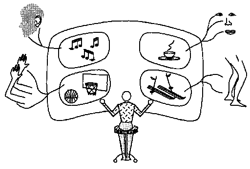
يصور هذا الرسم البياني آليتنا الحسية وهي ترسل المعلومات إلى الدماغ، حيث يتم عرضها على شاشة سينمائية عقلية داخلية. ثم، داخل ذلك المسرح الشبحي، تراقب الذات الكامنة المشهد ثم تفكر في ما يجب فعله. أخيرًا، قد تعمل تلك الذات بطريقة ما على عكس كل هذه الخطوات للتأثير على العالم الحقيقي عن طريق إرسال إشارات مختلفة عبر عائلة أخرى من ملحقات التحكم عن بعد.
هذا المفهوم ببساطة لا يعمل. لا يمكن أن يساعدك أن تعتقد أن بداخلك يوجد شخص آخر يقوم بعملك. إن فكرة "القزم" - أي شخص صغير داخل كل نفس - لا تؤدي إلا إلى مفارقة، إذًا، تحتاج تلك الذات الداخلية إلى شاشة فيلم أخرى بداخلها، لتعرض عليها ما رأته! ومن ثم، لمشاهدة هذا اللعب داخل اللعب، سنحتاج إلى ذات أخرى داخل الذات للقيام بالتفكير حتى النهاية. وبعد ذلك سوف يتكرر كل هذا مرة أخرى، حيث أن كل ذات جديدة تتطلب شخصًا آخر للقيام بعملها!
إن فكرة الذات المركزية الواحدة لا تفسر أي شيء. وذلك لأن الشيء الذي لا يحتوي على أجزاء لا يقدم أي شيء يمكننا استخدامه كأجزاء من الشرح!
إذًا لماذا نتبنى في كثير من الأحيان فكرة غريبة مفادها أن ما نقوم به يقوم به شخص آخر، أي أنفسنا؟ لأن الكثير مما تفعله عقولنا مخفي عن أجزاءنا المرتبطة بالوعي اللفظي.
مهما كانت العاطفة، المعرفة، الشهرة، أو الحوض،
لن يغير أحد جاره بنفسه.
"ألكسندر البابا
لماذا نقبل تلك الصورة المتناقضة للذات المركزية داخل الذات؟ لأنه يخدمنا بشكل جيد في العديد من مجالات الحياة العملية. فيما يلي بعض الأسباب لاعتبار الشخص شيئًا واحدًا.
العالم المادي: تعمل أجسامنا مثل الأشياء الأخرى التي تشغل مساحة. ولهذا السبب يجب أن نبني خططنا وقراراتنا على أن يكون لنا جسد واحد. لا يمكن لشخصين أن يتسعا حيث يوجد مكان لشخص واحد فقط، ولا يمكن لشخص أن يمشي عبر الجدران أو يبقى عاليا دون دعم.
الخصوصية الشخصية: عندما تخبر ماري جاك بشيء ما، عليها أن تتذكر ذلك "من" قيل لها، ويجب ألا تفترض أن كل شخص آخر يعرف ذلك أيضًا. وأيضًا، بدون مفهوم الفرد، لا يمكن أن يكون لدينا أي إحساس بالمسؤولية.
النشاط العقلي: غالبًا ما نجد صعوبة في التفكير في فكرتين مختلفتين في وقت واحد، خاصة عندما تكونا متشابهتين، لأننا نشعر بالارتباك عندما يُطلب من نفس الوكالات القيام بوظائف مختلفة في نفس الوقت.
لماذا تبدو لنا عملياتنا العقلية في كثير من الأحيان وكأنها تتدفق في "تيارات الوعي"؟ ربما لأنه من أجل الحفاظ على السيطرة، يتعين علينا تبسيط كيفية تمثيل ما يحدث. وبعد ذلك، عندما يتم "تسوية" هذا المشهد العقلي المعقد، يبدو كما لو أن خطًا واحدًا من الأفكار كان يتدفق عبر العقل.
هذه كلها أسباب مقنعة تجعلنا نرى أنفسنا منفردين. ومع ذلك، يجب على كل واحد منا أن يتعلم ليس فقط أن الأشخاص المختلفين لديهم هوياتهم الخاصة، بل أن نفس الشخص يمكنه أن يتمتع بمعتقدات وخطط وتصرفات مختلفة في نفس الوقت. للعثور على أفكار جيدة حول علم النفس، أصبحت صورة الوكيل الوحيد عائقًا خطيرًا. إن فهم العقل البشري هو بالتأكيد إحدى أصعب المهام التي يمكن أن يواجهها أي عقل. إن أسطورة الذات الواحدة لا يمكنها إلا أن تصرفنا عن هدف هذا البحث.
إنني لا أتعامل مع النوتات الموسيقية أفضل من العديد من عازفي البيانو. لكن فترات التوقف بين الملاحظات � آه، هذا هو المكان الذي يوجد فيه الفن!
"آرتور شنابل
لماذا نحب الكثير من الأشياء التي يبدو لنا أنها ليس لها أي فائدة دنيوية؟ غالبًا ما نتحدث عن هذا بمزيج من الدفاعية والفخر.
«الفن من أجل الفن».
"أجدها ممتعة من الناحية الجمالية."
"أنا فقط أحب ذلك".
«ليس هناك حساب لذلك».
لماذا نلجأ إلى مثل هذه التصريحات الغامضة والمتحدية؟ "ليس هناك محاسبة لذلك" يبدو وكأنه طفل مذنب قيل له أن يحتفظ بالحسابات. وعبارة "أنا فقط أحب ذلك" تبدو كشخص يخفي أسبابًا لا تستحق الاعتراف بها. ومع ذلك، غالبًا ما يكون لدينا أسباب عملية سليمة لاتخاذ خيارات ليس لها أسباب في حد ذاتها ولكن لها تأثيرات على نطاقات أوسع.
إمكانية التعرف: تعمل أرجل الكرسي بشكل جيد إذا كانت مربعة أو مستديرة. فلماذا نميل إلى اختيار أثاثنا وفقًا للأنماط أو الموضات المنهجية؟ لأن الأنماط المألوفة تسهل علينا التعرف على الأشياء التي نراها وتصنيفها.
التوحيد: إذا كان كل شيء في الغرفة مثيرًا للاهتمام في حد ذاته، فقد يشغل أثاثنا عقولنا كثيرًا. ومن خلال اعتماد أساليب موحدة، نحمي أنفسنا من الانحرافات.
القدرة على التنبؤ: ولا فرق بين أن تسير سيارة واحدة على اليسار أو على اليمين. لكن الأمر يحدث فرقًا كبيرًا عندما يكون هناك العديد من السيارات! تحتاج المجتمعات إلى قواعد لا معنى لها بالنسبة للأفراد.
يمكن أن يوفر الكثير من العمل العقلي إذا قام المرء بكل اختيار تعسفي بالطريقة التي فعلها من قبل. كلما كان القرار أكثر صعوبة، كلما تمكنت هذه السياسة من توفير المزيد. الملاحظة التالية التي أبداها زميلي، إدوارد فريدكين، تبدو مهمة بما يكفي لتستحق اسمًا:
مفارقة فريدكين: كلما بدا البديلان متساويين في الجاذبية، كلما أصبح الاختيار بينهما أكثر صعوبة - بغض النظر عن ذلك، وبنفس الدرجة، فإن الاختيار يمكن أن يكون أقل أهمية.
لا عجب أننا في كثير من الأحيان لا نستطيع تفسير "الذوق" إذا كان يعتمد على قواعد خفية نستخدمها عندما تلغي الأسباب العادية! لا أقصد أن أقول إن الموضة والأسلوب والفن كلها متشابهة، لكني أقصد أنها غالبًا ما تشترك في استراتيجية استخدام الأشكال التي تكمن تحت سطح أفكارنا. متى يجب أن نتوقف عن التفكير ونلجأ إلى قواعد الأسلوب؟ فقط عندما نكون متأكدين تمامًا من أن المزيد من التفكير لن يؤدي إلا إلى إضاعة الوقت. ولعل هذا هو السبب وراء شعورنا في كثير من الأحيان بمثل هذا الشعور بالتحرر من التطبيق العملي عندما نتخذ خيارات "جمالية". قد تبدو مثل هذه القرارات أكثر تقييدًا إذا كنا على علم بكيفية اتخاذها. وماذا عن تلك التلميحات العابرة بالذنب التي نشعر بها أحيانًا بسبب "مجرد إعجابنا" بالفن؟ ربما هذه هي الطريقة التي تذكر بها عقولنا نفسها بعدم التخلي عن الفكر بشكل متهور.
أليس من اللافت للنظر أن الكلمات يمكن أن تصور أفرادًا بشريين؟ قد تفترض أن هذا مستحيل، مع الأخذ في الاعتبار حجم ما يمكن قوله. إذًا ما الذي يسمح للكاتب بتصوير شخصيات تبدو حقيقية؟ ذلك لأننا جميعًا متفقون على أشياء كثيرة لم تُقال. على سبيل المثال، نفترض أن جميع الشخصيات تمتلك ما نسميه بالمعرفة المنطقية، ونتفق أيضًا على العديد من العموميات حول ما نسميه الطبيعة البشرية.
العداء يثير الدفاعية. الإحباط يثير العدوان.
نحن ندرك أيضًا أن الأفراد لديهم صفات وسمات شخصية معينة.
جين مرتبة. مريم خجولة. النعمة ذكية. ,
هذا ليس ما يفعله تشارلز. إنه ليس أسلوبه
لماذا يجب أن توجد مثل هذه السمات؟ يميل الإنسانيون إلى التفاخر بمدى صعوبة فهم مقياس العقل. ولكن دعونا نسأل بدلا من ذلك، ما الذي يجعل الشخصيات كذلك؟ سهل لتصوير؟ لماذا على سبيل المثال، يجب على أي شخص أن يميل نحو صفة عامة تتمثل في كونه أنيقًا، بدلاً من مجرد أن يكون مرتبًا في بعض الأشياء وفوضويًا في أشياء أخرى؟ لماذا يجب أن تظهر شخصياتنا مثل هذا التماسك؟ كيف يمكن وصف نظام تم تجميعه من مليون وكالة بسلاسل قصيرة وبسيطة من الكلمات؟ فيما يلي بعض الأسباب المحتملة.
الانتقائية: علينا أولاً أن نواجه حقيقة أن صورنا لعقول الآخرين غالبًا ما تكون واضحة بشكل خاطئ. نحن نميل إلى التفكير في "شخصية" شخص آخر من حيث ما يمكننا وصفه، ونميل إلى تنحية الباقي جانبًا كما لو أنها ببساطة غير موجودة.
أسلوب: للهروب من جهد اتخاذ القرارات التي نعتبرها غير مهمة، فإننا نميل إلى تطوير سياسات تصبح منهجية للغاية بحيث يمكن تمييزها من الخارج ووصفها بأنها سمات شخصية.
القدرة على التنبؤ: ولأنه من الصعب الحفاظ على الصداقة دون ثقة، فإننا نحاول أن نتوافق مع توقعات أصدقائنا. ثم، إلى الحد الذي نضع فيه صورنا لشركائنا في إطار السمات، نجد أنفسنا نعلم أنفسنا التصرف وفقًا لتلك الأوصاف نفسها.
الاعتماد على الذات: وهكذا، مع مرور الوقت، يمكن للصفات المتخيلة أن تصبح حقيقية! وحتى نتمكن من تنفيذ خططنا الخاصة، يجب أن نكون قادرين على التنبؤ بما من المحتمل أن نفعله بأنفسنا، وسوف يصبح ذلك أسهل كلما قمنا بتبسيط أنفسنا.
من الجميل أن نكون قادرين على الثقة بأصدقائنا، لكن يجب أن نكون قادرين على الثقة بأنفسنا. كيف يمكن أن يكون ذلك ممكنا عندما لا نستطيع التأكد مما يدور في رؤوسنا؟ إحدى الطرق لتحقيق ذلك هي من خلال التفكير في أنفسنا من حيث السمات، ثم البدء في تدريب أنفسنا على التصرف وفقًا لتلك الصور الذاتية. ومع ذلك، فإن الشخصية هي مجرد سطح الشخص. ما نسميه السمات هي فقط الانتظامات التي نتمكن من إدراكها. نحن لا نعرف أنفسنا أبدًا لأن هناك العديد من العمليات والسياسات الأخرى التي لا تظهر نفسها أبدًا بشكل مباشر في سلوكنا ولكنها تعمل خلف الكواليس.
هناك أسباب لجميع المعاناة البشرية، وهناك طريقة يمكن من خلالها إنهاء هذه الأسباب، لأن كل شيء في العالم هو نتيجة لتوافق كبير من الأسباب والشروط، وكل شيء يختفي بتغير هذه الأسباب والظروف وزوالها.
�بوذا
ماذا نعني بكلمات مثل "أنا" و"نفسي" و"أنا"؟ ماذا تعني القصة التي تبدأ بـ "In". لي الطفولة �؟ ما هو ذلك الملك الغريب "أنت" الذي يبقى كما هو طوال حياتك؟ هل أنت نفس الشخص الذي كنت عليه قبل أن تتعلم القراءة؟ بالكاد يمكنك أن تتخيل الآن كيف كانت تبدو الكلمات في ذلك الوقت. فقط حاول أن تنظر إلى هذه الكلمات دون قراءتها:
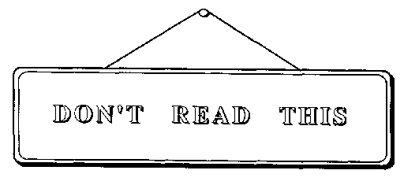
بقدر ما يتعلق الأمر بالوعي، فإننا نجد أنه من المستحيل تقريبًا فصل مظاهر الأشياء عما تعنيه بالنسبة لنا. ولكن إذا كنا لا نستطيع أن نتذكر كيف ظهرت لنا الأشياء قبل أن نتعلم ربط معاني جديدة بتلك الأشياء، فما الذي يجعلنا نعتقد أننا نستطيع أن نتذكر كيف ظهرنا لنا في الأوقات السابقة؟ ماذا تقول لو سأل أحد أسئلة مثل هذه:
"هل أنت الآن نفس الشخص الذي كنت عليه من قبل، قبل أن تتعلم الكلام؟"
‹بالطبع أنا كذلك. لماذا، من يمكن أن أكون؟
"هل تعني أنك لم تتغير على الإطلاق؟"
‹بالطبع لا. أعني فقط أنني نفس الشخص، نفس الشيء في بعض النواحي، ومختلف في طرق أخرى، ولكني لا أزال نفس الشخص
ولكن كيف يمكنك أن تظل نفس الشخص الذي كنت عليه حتى قبل أن تتعلم تذكر الأشياء؟ هل يمكنك حتى أن تتخيل كيف كان ذلك؟"
«ربما لا أستطيع... حتى الآن، لا بد أنه كانت هناك بعض الاستمرارية. حتى لو لم أستطع تذكر ذلك، فأنا بالتأكيد كنت ذلك الشخص أيضًا
نحن جميعًا نختبر هذا الشعور بعدم التغيير على الرغم من التغيير، ليس فقط بالنسبة للماضي ولكن أيضًا للمستقبل أيضًا! فكر في مدى كرمك تجاه نفسك في المستقبل على حساب نفسك في الوقت الحاضر. اليوم، تضع بعض المال في البنك حتى تتمكن في وقت لاحق من إخراجه. متى فعلت تلك الذات المستقبلية أي شيء جيد بالنسبة لك؟ هل "أنت" جسد تلك الذكريات التي لا تتغير معانيها إلا ببطء؟ هل هي الآثار الجانبية التي لا تنتهي من كل تجاربك السابقة؟ أم أن أيًا من عملائك يتغير على الأقل مع مرور الوقت والحياة؟
عقل. أ شكل غامض من المادة يفرزها الدماغ. يتمثل نشاطها الرئيسي في السعي للتأكد من طبيعتها الخاصة، ويعود عقم هذه المحاولة إلى حقيقة أنها ليس لديها ما تعرفه إلا نفسها.
� أمبروز بيرس
واعي أ. 1. وجود شعور أو معرفة (بأحاسيس الفرد ومشاعره وما إلى ذلك، أو بالأشياء الخارجية)؛ المعرفة أو الشعور (أن هناك شيئًا ما يحدث أو موجودًا أو كان يحدث) ؛ ... 3. يدرك نفسه ككائن مفكر؛ معرفة ما يفعله المرء ولماذا.
� قاموس ويبستر غير المختصر
في الحياة الواقعية، غالبًا ما يتعين عليك التعامل مع أشياء لا تفهمها تمامًا. أنت تقود سيارة ولا تعرف كيف يعمل محركها. أنت تركب كراكب في سيارة شخص آخر، ولا تعرف كيف يعمل هذا السائق. والأمر الأكثر غرابة هو أنك تقود جسدك وعقلك، ولا تعرف كيف تعمل نفسك. أليس من المدهش أننا نستطيع أن نفكر، دون أن نعرف معنى التفكير؟ أليس من اللافت للنظر أننا نستطيع الحصول على أفكار، دون أن نفسر ما هي الأفكار؟
يبدو أن هناك بعض العمليات في عقل كل شخص عادي والتي نسميها الوعي. نحن عادة نعتبرها تمكننا من معرفة ما يحدث داخل عقولنا. لكن سمعة الوعي الذاتي هذه ليست مستحقة تمامًا، لأن أفكارنا الواعية تكشف لنا القليل جدًا عما يؤدي إلى ظهورها.
تأمل كيف يوجه السائق الزخم الهائل للسيارة، دون أن يعرف كيف يعمل محركها أو كيف توجهه عجلة القيادة إلى اليسار أو اليمين. ومع ذلك، عندما يفكر المرء في الأمر، فإننا نقود أجسادنا بنفس الطريقة تقريبًا. بقدر ما يتعلق الأمر بالفكر الواعي، فإنك تدير نفسك للسير في اتجاه معين بنفس الطريقة التي تقود بها السيارة؛ أنت لا تدرك سوى بعض النوايا العامة، وكل الباقي يعتني بنفسه. إن تغيير اتجاه حركتك هو في الواقع أمر معقد للغاية. إذا اتخذت ببساطة خطوة أكبر أو أصغر على أحد الجانبين، بنفس الطريقة التي تدير بها قارب التجديف، فسوف تسقط باتجاه الخارج من المنعطف. بدلاً من ذلك، تبدأ في الدوران بجعل نفسك تسقط نحو داخل ثم استخدم قوة الطرد المركزي لتصحيح نفسك في الخطوة التالية. تتضمن هذه العملية المذهلة مجتمعًا ضخمًا من العضلات والعظام والمفاصل، يتم التحكم فيها جميعًا بواسطة مئات البرامج المتفاعلة التي لا يفهمها حتى المتخصصون بعد. ومع ذلك، كل ما تعتقده هو، اتجه بهذه الطريقة، ويتم تحقيق رغبتك تلقائيا.
نحن نطلق اسم "إشارات" على الأفعال التي لا تكون عواقبها متأصلة في شخصيتها الخاصة، بل تم تخصيصها لها فقط. عندما تقوم بتسريع سيارتك بالضغط على دواسة الوقود، فهذا ليس ما يقوم به العمل؛ إنها مجرد إشارة لجعل المحرك يدفع السيارة. وبالمثل، فإن تدوير عجلة القيادة هو مجرد إشارة تجعل آلية التوجيه تدير السيارة. وكان بإمكان مصمم السيارة بسهولة أن يخصص الدواسة لتوجيه السيارة أو أن يجعل عجلة القيادة تتحكم في سرعتها. لكن المصممين العمليين يحاولون استغلال استخدام الإشارات التي اكتسبت بالفعل بعض الأهمية.
تستخدم أفكارنا الواعية الإشارات لتوجيه المحركات في أذهاننا، والتحكم في عدد لا يحصى من العمليات التي لا ندركها كثيرًا. نظرًا لعدم فهمنا لكيفية القيام بذلك، فإننا نتعلم تحقيق غاياتنا عن طريق إرسال إشارات إلى تلك الآلات العظيمة، مثلما استخدم السحرة في العصور القديمة طقوسًا لإلقاء تعويذتهم.
كيف نفهم أي شيء من أي وقت مضى؟ أعتقد أنه يتم دائمًا تقريبًا استخدام نوع أو آخر من القياس، أي تمثيل كل شيء جديد كما لو أنه يشبه شيئًا نعرفه بالفعل. عندما تكون العمليات الداخلية لشيء جديد غريبة أو معقدة للغاية بحيث لا يمكن التعامل معها بشكل مباشر، فإننا نمثل أي جزء من أجزاء ذلك الشيء بقدر ما نستطيع من حيث العلامات الأكثر دراية. 1) طريقته في جعل كل شيء جديد يبدو مشابهًا لشيء أكثر اعتيادية. إنه حقًا اكتشاف عظيم، استخدام الإشارات والرموز والكلمات والأسماء. لقد سمحوا لعقولنا بتحويل الغريب إلى أمر شائع.
لنفترض أن مهندسًا معماريًا فضائيًا قد اخترع طريقة جديدة جذريًا للانتقال من غرفة إلى أخرى. يؤدي هذا الاختراع الوظائف الطبيعية للباب، لكن له شكلًا وآليات خارج نطاق خبرتنا حتى الآن، لدرجة أنه عند رؤيته، لن نتمكن أبدًا من التعرف عليه كباب، ولن نخمن كيفية استخدامه، وكل تفاصيله المادية خاطئة. ليس هذا ما نتوقعه عادةً أن يكون الباب عبارة عن لوح خشبي مفصلي ومتأرجح مثبت في الحائط. لا يهم: فقط قم بتركيب بعض الزخارف أو الرمز أو الأيقونة أو الرمز أو الكلمة أو الإشارة على سطحها الخارجي والتي يمكن أن تذكرنا باستخدامها. ألبسها شكلًا مستطيلًا، أو أضف إليها لوحة دفع مكتوب عليها "خروج" باللونين الأحمر والأبيض، وسيعرف كل زائر من كوكب الأرض، دون تفكير واعي، الغرض من تلك البوابة الزائفة، وسيستخدمها كما لو كانت بابًا. . .
في البداية قد يبدو الأمر مجرد خداع، تعيين رمز الباب لاختراع ليس في الواقع بابًا. لكننا دائما في نفس المأزق. ليس هناك أبواب داخل عقولنا، فقط اتصالات بين علاماتنا. وللمبالغة في هذه الحالة قليلاً، فإن ما نسميه الوعي يتكون من أكثر قليلاً من قوائم القوائم التي تومض، من وقت لآخر، على شاشات العرض الذهنية التي تستخدمها الأنظمة الأخرى. إنه يشبه إلى حد كبير الطريقة التي يستخدم بها لاعبو ألعاب الكمبيوتر الرموز لاستدعاء العمليات داخل آلات الألعاب المعقدة الخاصة بهم دون أدنى فهم لكيفية عملها.
وعندما تفكر في الأمر، فمن غير المرجح أن يكون الأمر غير ذلك! فكر فيما سيحدث إذا تمكنا بالفعل من مواجهة شبكات تريليون سلك في أدمغتنا. لقد ظل العلماء يدققون في أجزاء صغيرة من تلك الهياكل لسنوات عديدة، لكنهم فشلوا في فهم ما يفعلونه. ولحسن الحظ، لأغراض الحياة اليومية، يكفي أن تثير كلماتنا أو إشاراتنا بعض الأحداث المفيدة داخل العقل. من يهتم بكيفية عملهم، طالما أنهم يعملون! تأمل كيف أنك لا تكاد ترى المطرقة إلا كشيء تضرب به، أو ترى الكرة إلا كشيء ترميه وتلتقطه. لماذا نرى الأشياء، أقل كما هي وأكثر من حيث كيفية استخدامها؟ ذلك لأن عقولنا لم تتطور لتكون بمثابة أدوات للعلم أو الفلسفة، بل لحل المشكلات العملية المتعلقة بالتغذية والدفاع والإنجاب وما شابه ذلك. نحن نميل إلى الاعتقاد بأن المعرفة جيدة في حد ذاتها، لكن المعرفة تكون مفيدة فقط عندما نتمكن من استغلالها لمساعدتنا في تحقيق أهدافنا.
كيف تكتشف أشياء عن العالم؟ فقط انظر وانظر! يبدو الأمر بسيطًا - ولكنه ليس كذلك. توظف كل نظرة عابرة مليار خلية دماغية لتمثيل المشهد الحالي وتلخيص اختلافاته عن سجلات التجارب الأخرى. تقوم وكالاتك بصياغة أجزاء صغيرة من النظريات حول ما يحدث في العالم ثم تجعلك تقوم بتجارب صغيرة لتأكيد أو إعادة صياغة تلك التخمينات. يبدو الأمر بسيطًا فقط لأنك غير مدرك لما يحدث.
كيف تكتشف الأشياء التي تتعلق بعقلك؟ أنت تستخدم تقنية مماثلة. أنت تخترع أجزاء صغيرة من النظريات حول طريقة تفكيرك، ثم تختبرها بتجارب صغيرة. المشكلة هي أن التجارب الفكرية لا تؤدي غالبًا إلى ذلك النوع من النتائج الواضحة والواضحة التي يسعى إليها العلماء. اسأل نفسك عما يحدث عندما تحاول تخيل مربع مستدير - أو عندما تحاول أن تكون سعيدًا وحزينًا في نفس الوقت. لماذا يصعب وصف نتائج مثل هذه التجارب أو استخلاص استنتاجات مفيدة منها؟ ذلك لأننا نشعر بالارتباك. إن أفكارنا حول تجاربنا الذهنية هي تجارب ذهنية بحد ذاتها، وبالتالي تتداخل مع بعضها البعض.
التفكير يؤثر على أفكارنا.
يواجه الأشخاص الذين يقومون ببرمجة أجهزة الكمبيوتر مشكلات مماثلة عندما تتعطل البرامج الجديدة بسبب التفاعلات غير المتوقعة بين أجزائها. لمعرفة ما يحدث، قام المبرمجون بتطوير برامج خاصة لتصحيح أخطاء البرامج الأخرى. ولكن كما هو الحال في التجارب الفكرية، هناك خطر من أن يؤدي البرنامج الذي تتم مشاهدته إلى تغيير البرنامج الذي يشاهده. ولمنع ذلك، تم تجهيز جميع أجهزة الكمبيوتر الحديثة بآلات انقطاع خاصة تكتشف محاولة أي برنامج آخر لتغيير برنامج تصحيح الأخطاء؛ عندما يحدث هذا، يتم تجميد الجاني في مساراته حتى يتمكن برنامج تصحيح الأخطاء من فحصه. وللقيام بذلك، يجب تزويد آلية القطع ببنك ذاكرة خاص يمكنه تخزين معلومات كافية لتمكينه لاحقًا من إعادة تشغيل البرنامج المتجمد وكأن شيئًا لم يحدث.
هل العقول مجهزة للقيام بأشياء مماثلة؟ كان من السهل بناء أنظمة الفحص الذاتي في أجهزة الكمبيوتر التي تفعل شيئًا واحدًا فقط في كل مرة، ولكن سيكون من الصعب جدًا القيام بذلك في نظام، مثل الدماغ، يشارك في العديد من العمليات في وقت واحد. المشكلة هي أنه إذا قمت بتجميد عملية واحدة فقط دون إيقاف العمليات الأخرى، فإن ذلك سيغير الوضع الذي تحاول فحصه. ومع ذلك، إذا قمت بإيقاف كل هذه العمليات دفعة واحدة، فلن تتمكن من تجربة كيفية تفاعلها.
لاحقًا، سنرى أن الوعي مرتبط بذكرياتنا المباشرة. وهذا يعني أن هناك حدودًا لما يمكن أن يخبرنا به الوعي عن نفسه، لأنه لا يستطيع إجراء تجارب ذاتية مثالية. وهذا يتطلب الاحتفاظ بسجلات مثالية لما يحدث داخل أجهزة الذاكرة الخاصة بالفرد. لكن أي آلة من هذا القبيل يجب أن تصاب بالارتباك من خلال التجارب الذاتية التي تحاول معرفة كيفية عملها - حيث أن مثل هذه التجارب يجب أن تغير السجلات ذاتها التي يحاولون فحصها! لا يمكننا التعامل مع الانقطاعات بشكل مثالي. هذا لا يعني أنه لا يمكن فهم الوعي من حيث المبدأ. بل يعني فقط أنه لدراستها، سيتعين علينا استخدام الأساليب العلمية الأقل مباشرة، لأننا لا نستطيع ببساطة أن "ننظر ونرى".
هناك يكون إحدى الطرق التي يمكن للعقل أن يراقب بها نفسه ويتابع ما يحدث. قسّم الدماغ إلى قسمين، A وB. قم بتوصيل مدخلات ومخرجات الدماغ A بالعالم الحقيقي حتى يتمكن من استشعار ما يحدث هناك. لكن لا تربط الدماغ B بالعالم الخارجي على الإطلاق؛ بدلاً من ذلك، قم بتوصيله بحيث يكون الدماغ A هو عالم الدماغ B!
�
الآن يستطيع "أ" أن يرى ما يحدث في العالم الخارجي ويتصرف بناءً عليه، بينما يستطيع "ب" أن يرى ما يحدث داخل "أ" ويؤثر عليه. ما هي الاستخدامات التي يمكن أن يكون لها مثل هذا "ب"؟ فيما يلي بعض الأنشطة "أ" التي قد يتعلم "ب" التعرف عليها والتأثير عليها.
|
يبدو مضطربًا ومربكًا. |
منع هذا النشاط |
|
ويبدو أن يعيد نفسه |
توقف. افعل شيئًا آخر |
|
"أ" يفعل شيئًا يعتبره "ب" جيدًا |
جعل تذكر هذا |
|
A مشغول بالكثير من التفاصيل |
جعل "أ" يأخذ وجهة نظر على مستوى أعلى |
|
أ ليست محددة بما فيه الكفاية |
ركز على التفاصيل ذات المستوى الأدنى |
ومن الممكن أن يكون هذا الترتيب المكون من جزأين خطوة نحو إنشاء مجتمع عقلي أكثر "انعكاساً". يمكن للدماغ B إجراء تجارب مع الدماغ A، تمامًا كما يمكن للدماغ A إجراء تجارب على الجسم أو مع الأشياء والأشخاص المحيطين به. وكما يمكن لـ A أن يحاول التنبؤ بما يحدث في العالم الخارجي والتحكم فيه، يمكن لـ B أن يحاول التنبؤ بما سيفعله A والتحكم فيه. على سبيل المثال، يمكن للدماغ B أن يشرف على كيفية تعلم الدماغ A، إما عن طريق إجراء تغييرات في الدماغ A مباشرة أو من خلال التأثير على عمليات التعلم الخاصة بالشخص A.
على الرغم من أن "ب" قد لا يكون لديه مفهوم لما تعنيه أنشطة "أ" فيما يتعلق بالعالم الخارجي، إلا أنه لا يزال من الممكن أن يكون "ب" مفيدًا لـ "أ". وذلك لأن دماغ "ب" يمكن أن يتعلم لعب دور يشبه إلى حد ما دور المستشار، أو عالم النفس، أو المستشار الإداري، الذي يمكنه تقييم الإستراتيجية العقلية للعميل دون الاضطرار إلى فهم كل تفاصيل مهنة العميل. دون أن يكون لديه أي فكرة عن أهداف "أ"، قد يكون "ب" قادرًا على معرفة متى لا يحقق "أ" أهدافه ولكنه يدور فقط في دوائر أو يتجول، مرتبكًا لأن بعض وكلاء "أ" يكررون نفس الأشياء مرارًا وتكرارًا. ثم قد يحاول "ب" تجربة بعض العلاجات البسيطة، مثل قمع بعض تلك العوامل "أ". من المؤكد أن هذا قد يؤدي أيضًا إلى أن تصبح أنشطة B مصدر إزعاج لـ A. على سبيل المثال، إذا كان A يهدف إلى إضافة عمود طويل من الأرقام، فقد يبدأ B في التدخل في هذا لأنه، من وجهة نظر B، يبدو أن A قد أصبح محاصرًا في حلقة متكررة. وهذا قد يجعل الشخص الذي اعتاد على المزيد من التنوع يجد صعوبة في التركيز على مثل هذه المهمة ويشكو من الملل.
وبقدر ما يعرف الدماغ "ب" ما يحدث في "أ"، يمكن اعتبار النظام بأكمله "واعيًا لذاته" جزئيًا. ومع ذلك، إذا قمنا بربط "أ" و "ب" "لمراقبة" بعضهما البعض عن كثب، فقد يحدث أي شيء، وقد يصبح النظام بأكمله غير مستقر. وفي كل الأحوال، لا داعي للتوقف عند مستويين فقط؛ يمكننا توصيل دماغ C لمشاهدة الدماغ B، وهكذا.
الزمن الحاضر والزمن الماضي
وكلاهما ربما حاضر في المستقبل الزمني،
والزمن المستقبل وارد في الزمن الماضي.
TS إليوت
لا يمكن لأي مشرف أن يعرف كل ما يفعله جميع وكلائه. ببساطة، لا يوجد وقت كافٍ أبدًا. ولا يرى كل بيروقراطي سوى جزء صغير مما يحدث تحت مكانه في هرم تدفق المعلومات. أفضل المرؤوسين هم أولئك الذين يعملون بهدوء أكبر. في الواقع، هذا لماذا نحن نبني أهرامات إدارية للوظائف التي لا نعرف كيف نقوم بها أو ليس لدينا الوقت للقيام بها بأنفسنا. ولهذا السبب أيضًا يجب أن يختبئ الكثير من أفكارنا خارج نطاق وعينا.
لا يحاول العلماء الجيدون أبدًا تعلم الكثير في وقت واحد. وبدلاً من ذلك، يختارون جوانب معينة من الموقف، ويراقبون بعناية، ويسجلون السجلات. السجلات التجريبية هي "ظواهر مجمدة". فهي تتيح لنا أن نأخذ كل الوقت الذي نحتاجه لوضع نظرياتنا. ولكن كيف يمكننا أن نفعل الشيء نفسه داخل العقل؟ سنحتاج إلى نوع من الذاكرة لحفظ هذه السجلات بشكل آمن.
سنرى كيف يمكن أن ينجح هذا عندما نأتي إلى الفصول المتعلقة بالذاكرة. سنخمن أن دماغك يحتوي على مجموعة من العوامل تسمى "خطوط K"، والتي يمكنك استخدامها لعمل سجلات لما يفعله بعض عملاء دماغك في لحظة معينة. لاحقًا، عندما تقوم بتنشيط نفس خطوط K، فإن هذا يعيد هؤلاء العملاء إلى حالتهم السابقة. وهذا يجعلك "تتذكر" جزءًا من حالتك العقلية السابقة، وذلك بجعل تلك الأجزاء من عقلك تفعل ما فعلته من قبل. وبعد ذلك، سوف تتفاعل الأجزاء الأخرى من عقلك كما لو أن نفس الأحداث تحدث مرة أخرى! وبطبيعة الحال، ستكون مثل هذه الذكريات دائمًا غير مكتملة، حيث لا يمكن لأي شيء أن يتمتع بالقدرة الكافية لتسجيل كل تفاصيل حالته الخاصة. (وإلا لكان أكبر من نفسه). وبما أننا لا نستطيع أن نتذكر كل شيء، فإن كل عقل فردي يواجه نفس المشكلة التي يواجهها العلماء دائمًا: ليس لديهم طريقة مضمونة لمعرفة، قبل الحقيقة، ما هي أهم الأشياء التي يجب ملاحظتها وتسجيلها.
إن استخدام العقل لفحص نفسه يشبه العلم بطريقة أخرى. وكما لا يستطيع الفيزيائيون رؤية الذرات التي يتحدثون عنها، فإن علماء النفس لا يستطيعون مراقبة العمليات التي يحاولون فحصها. نحن "لا نعرف" مثل هذه الأشياء إلا من خلال آثارها. لكن المشكلة أسوأ عندما يتعلق الأمر بالعقل، حيث يستطيع العلماء قراءة ملاحظات بعضهم البعض، لكن الأجزاء المختلفة من العقل لا تستطيع قراءة ذكريات بعضهم البعض.
لقد رأينا الآن العديد من الأسباب التي تجعلنا لا نستطيع ببساطة مراقبة عقولنا من خلال الجلوس ساكنين والانتظار حتى تتضح رؤيتنا. المسار الوحيد المتبقي لنا هو دراسة العقل بالطريقة التي يفعلها العلماء عندما يكون هناك شيء كبير أو صغير جدًا بحيث لا يمكن رؤيته، وذلك من خلال بناء نظريات مبنية على الأدلة. قم بالتخمين؛ اختبرها بتجربة ذكية؛ اجمع أفكارك وخمن مرة أخرى. عندما يبدو أن الاستبطان ناجح، فهذا ليس لأننا وجدنا طريقة سحرية لرؤية ما بداخلنا. وبدلا من ذلك، فهذا يعني أننا قمنا ببعض التجارب المصممة بشكل جيد.
ما رأيك أنك تفكر الآن؟ قد تجيب: "لماذا، فقط الأفكار التي أفكر فيها الآن!" وهذا منطقي في الحياة العادية، حيث تعني كلمة "الآن" "في هذه اللحظة من الزمن". لكن معنى "الآن" أقل وضوحاً بكثير بالنسبة لفاعل داخل المجتمع.
يستغرق الأمر بعض الوقت حتى تؤثر التغييرات في جزء واحد من العقل على الأجزاء الأخرى.
هناك دائما بعض التأخير.
على سبيل المثال، لنفترض أنك قابلت صديقك جاك. وكالاتك ل أصوات و وجوه قد يتعرف على صوت جاك ووجهه، ويرسل كلاهما رسائل إلى إحدى الوكالات الأسماء، والتي قد تذكر اسم جاك. لكن أصوات قد يرسل أيضًا "رسالة نصية" إلى يقتبس، وكالة تعتمد على اللغة ولديها طريقة لتذكر العبارات التي قالها جاك من قبل وجوه قد يرسل أيضًا رسالة إلى الأماكن، وكالة معنية بالفضاء، والتي قد تتذكر مكانًا سابقًا شوهد فيه وجه جاك.
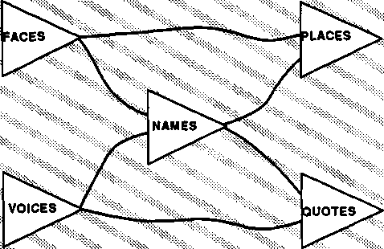
تتلقى PLACES الإشارات أولاً من FACES، لأن الرسائل من VOICES تمر أولاً عبر NAMES.
لذلك، على الرغم من أن الوقت الحقيقي يتقدم من اليسار إلى اليمين، إلى الأماكن، إلا أن لحظات الماضي تشكل خطوطًا مائلة.
لنفترض الآن أنه يمكننا أن نسأل كليهما الأماكن و يقتبس ما الذي حدث أولاً، رؤية جاك أم سماع صوته؟ سنحصل على إجابتين مختلفتين! الأماكن سوف يكتشف الوجه أولاً يقتبس سوف يكتشف الصوت أولاً. ويعتمد الترتيب الظاهري للأحداث على الرسالة التي وصلت إلى كل وكيل أولاً، وبالتالي فإن التسلسل الظاهري للأحداث يختلف من وكيل إلى آخر. سوف يتفاعل كل عامل بطريقته الخاصة، والمختلفة قليلاً، لأنه تأثر بـ "تاريخ سببي" مختلف قليلاً، والذي ينتشر مثل موجة في الماضي.
من المستحيل ببساطة، بشكل عام، لأي وكيل P أن يعرف على وجه اليقين ما يفعله وكيل آخر Q في نفس الوقت بالضبط. أفضل ما يمكن أن يفعله P هو إرسال استعلام مباشرة إلى Q والأمل في أن يتمكن Q من الحصول على رسالة صادقة قبل أن يغير الوكلاء الآخرون حالة Q أو يغيروا رسالتها على طول الطريق. لا يمكن لأي جزء من العقل أن يعرف كل ما يحدث في نفس الوقت في جميع الوكالات الأخرى. ولهذا السبب، يجب أن يكون لدى كل وكالة على الأقل إحساس مختلف قليلاً عما حدث في الماضي - وما يحدث - الآن. يعيش كل وكيل مختلف للعقل في عالم زمني مختلف قليلاً.
لمعرفة أي شيء [قال الشاعر] فيجب علينا أن نعرف آثاره؛ لكي نرى الرجال يجب علينا أن نعرف أعمالهم، حتى نتمكن من معرفة ما يمليه العقل، أو ما يحرض عليه العاطفة، ونكتشف أقوى دوافع الفعل. لكي نحكم على الحاضر بشكل صحيح، يجب علينا أن نعارضه بالماضي؛ لأن كل الأحكام نسبية، ولا يمكن معرفة أي شيء عن المستقبل. الحقيقة هي أنه لا يوجد عقل يستخدم كثيرًا في الحاضر: فالتذكر والترقب يملأان كل لحظاتنا تقريبًا. عواطفنا هي الفرح والحزن، الحب والكراهية، الأمل والخوف؛ فحتى الحب والكراهية يحترمان الماضي، لأن السبب لا بد أن يكون قبل النتيجة.
� صامويل جونسون
إن أفكارنا اليومية حول تطور الزمن العقلي خاطئة: فهي لا تترك مجالًا لحقيقة أن كل عامل لديه تاريخ سببي مختلف. من المؤكد أن تلك الماضيات المختلفة اختلطت على مدى فترات زمنية أطول، وكل فرد يتأثر في نهاية المطاف بما حدث في التاريخ المشترك البعيد لمجتمعه. ولكن هذا ليس ما نعنيه بكلمة "الآن". فالمشكلة تكمن في الارتباط بين الأنشطة التي تقوم بها وكالات منفصلة إلى حد كبير لحظة بلحظة.
عندما يسقط الدبوس، يمكنك القول، "لقد سمعت للتو قطرة دبوس". لكن لا أحد يقول، "أسمع دبوسًا يسقط." تعلم وكالات التحدث لدينا من خلال خبرتها أن نوبة سقوط الدبوس الجسدية ستنتهي حتى قبل أن تتمكن من البدء في التحدث. لكنك ستقول: "أنا". أنا في حالة حب بدلا من "لقد كنت فقط في حالة حب". لأن وكالاتك الناطقة تعلم أن الوكالات المعنية بالارتباطات الشخصية تعمل بوتيرة أبطأ، مع حالات قد تستمر لأشهر أو سنوات. وفي المنتصف، عندما يسأل أحدهم، "ما هي أنواع المشاعر التي لديك الآن؟" غالبًا ما نجد إجاباتنا غير المكتملة خاطئة قبل أن نتمكن من التعبير عنها، حيث تتدخل المشاعر الأخرى. ما يبدو مجرد لحظة بالنسبة لوكالة ما قد يبدو وكأنه حقبة بالنسبة لوكالة أخرى.
ترتبط ذكرياتنا بشكل غير مباشر فقط بالوقت المادي. ليس لدينا أي إحساس مطلق بموعد وقوع حدث لا يُنسى "فعليًا". وفي أحسن الأحوال، لا يمكننا أن نعرف سوى بعض العلاقات الزمنية بينها وبين أحداث معينة أخرى. قد تكون قادرًا على تذكر أن X وY حدثا في أيام مختلفة ولكنك غير قادر على تحديد أي من تلك الأيام جاء سابقًا. ويبدو أن العديد من الذكريات ليست مرتبطة بفترات زمنية على الإطلاق، مثل معرفة أن أربعة تأتي بعد ثلاثة، أو أن "أنا نفسي".
كلما كانت الوكالة تعمل بشكل أبطأ - أي كلما طالت الفترات الفاصلة بين كل تغيير في الحالة - كلما زادت الإشارات الخارجية التي يمكن أن تصل داخل تلك الفواصل الزمنية. فهل يعني هذا أن العالم الخارجي سيبدو وكأنه يتحرك بشكل أسرع نحو وكالة بطيئة مقارنة بوكالة أسرع؟ هل تبدو الحياة سريعة للسلاحف، ولكنها مملة للطيور الطنانة؟
فكما نسير بلا تفكير، نفكر بلا تفكير! نحن لا نعرف كيف تجعلنا عضلاتنا نسير، ولا نعرف الكثير عن الوكالات التي تقوم بعملنا العقلي. عندما تكون لديك مشكلة يصعب حلها، تفكر فيها لبعض الوقت. ثم ربما يبدو أن الإجابة تأتي مرة واحدة، فتقول: "آها، لقد حصلت عليه." سأفعل كذا وكذا. ولكن إذا سألك شخص ما كيف وجدت الحل، نادرًا ما يمكنك أن تقول أكثر من أشياء مثل ما يلي:
"لقد أدركت فجأة ... �
"لقد حصلت للتو على هذه الفكرة ... �
"لقد حدث لي ذلك ... �
إذا تمكنا حقًا من الشعور بطريقة عمل عقولنا، فلن نتصرف كثيرًا وفقًا لدوافع لا نشك فيها. لن يكون لدينا مثل هذه النظريات المتنوعة والمتضاربة في علم النفس. وعندما نسأل كيف يحصل الناس على أفكارهم الجيدة، فإننا لن نكتفي بالاستعارات حول "الاجترار" و"الهضم" و"التصور وولادة المفاهيم كما لو كانت أفكارنا في أي مكان غير الرأس". إذا تمكنا من رؤية ما بداخل عقولنا، فمن المؤكد أنه سيكون لدينا المزيد من الأشياء المفيدة لنقولها.
يبدو أن الكثير من الناس على يقين تام بأنه لا يمكن لأي كمبيوتر أن يكون واعيًا أو واعيًا أو عنيدًا أو "مدركًا" لذاته بأي طريقة أخرى. ولكن ما الذي يجعل الجميع على يقين من أنهم يمتلكون تلك الصفات الرائعة؟ صحيح أنه إذا كنا متأكدين من أي شيء على الإطلاق، فهو ذلك «أنا على علم» إذن أنا على علم ولكن ماذا تعني هذه القناعات في الواقع؟ إذا كان الوعي الذاتي يعني معرفة ما يحدث داخل عقل المرء، فلا يمكن لأي واقعي أن يؤكد لفترة طويلة أن الناس لديهم قدر كبير من البصيرة، بالمعنى الحرفي للرؤية. وفي الواقع، فإن الدليل على أننا ندرك أنفسنا – أي أن لدينا أي قدرة خاصة على اكتشاف ما يحدث داخل أنفسنا – ضعيف جدًا بالفعل. صحيح أن بعض الأشخاص يتمتعون بتميز خاص في تقييم مواقف ودوافع الأشخاص الآخرين (وفي حالات نادرة، أنفسهم). ولكن هذا لا يبرر الاعتقاد بأن الطريقة التي نتعلم بها أشياء عن الناس، بما في ذلك أنفسنا، تختلف جوهريا عن الطريقة التي نتعلم بها عن أشياء أخرى. إن معظم أشكال الفهم التي نطلق عليها "الرؤى" هي مجرد أشكال مختلفة من طرقنا الأخرى "لمعرفة" ما يحدث.
إن ما نسميه بالعقل ليس سوى كومة أو مجموعة من الإدراكات المختلفة، متحدة معًا بعلاقات معينة ويُفترض، كذبًا، أنها تتمتع بالبساطة والهوية المثالية.
» ديفيد هيوم
سنتبنى وجهة النظر القائلة بأنه لا يمكن لأي شيء أن يكون له معنى في حد ذاته، ولكن فقط فيما يتعلق بأي معاني أخرى نعرفها بالفعل. قد يشكو المرء من أن هذا يشبه السؤال القديم: "أيهما جاء أولاً، الدجاجة أم البيضة؟" إذا كان كل شيء يعرفه المرء يعتمد على أشياء أخرى يعرفها، أليس هذا مثل القلاع المبنية على الهواء؟ وما الذي يمنعهم من السقوط إن لم يكن أحد منهم مربوطًا بالأرض الصلبة؟
حسنًا، أولاً، لا يوجد خطأ أساسي في فكرة المجتمع الذي يضفي فيه كل جزء معنى على الأجزاء الأخرى. تشبه بعض مجموعات الأفكار إلى حد كبير الحبال الملتوية أو الأقمشة المنسوجة، حيث تجمع كل خيط منها بعضها البعض معًا أو بعيدًا عن بعضها البعض. فكر في جميع الألحان الموسيقية التي تعرفها. من بينها، يمكنك بالتأكيد العثور على نغمتين تعجبك كل منهما أكثر بسبب مدى تشابهها أو اختلافها عن الأخرى. علاوة على ذلك، لا يوجد عقل بشري يبقى واقفا على قدميه تماما. سنرى لاحقًا كيف يمكن لمفاهيمنا عن المكان والزمان أن تعتمد كليًا على شبكات العلاقات، ومع ذلك يمكنها أن تعكس بنية الواقع.
إذا كان كل عقل يبني أشياء مختلفة إلى حد ما داخل نفسه، فكيف يمكن لأي عقل أن يتواصل مع عقل مختلف؟ في النهاية، من المؤكد أن التواصل هو مسألة درجة، ولكن ليس من المؤسف دائمًا أن لا تفهم العقول المختلفة بعضها البعض بشكل كامل. لذلك، بشرط بعض يبقى التواصل، يمكننا مشاركة ثراء أفكار بعضنا البعض. ما فائدة الآخرين إذا كنا جميعًا متطابقين؟ وعلى أية حال، فإن الوضع هو نفسه داخل عقلك، لأنه حتى أنت نفسك لا تستطيع أبدًا أن تعرف ماذا بالضبط أنت يقصد! كم سيكون أي تفكير عديم الفائدة إذا عاد عقلك بعد ذلك إلى نفس الحالة. لكن هذا لا يحدث أبدًا، لأنه في كل مرة نفكر في شيء معين، تنطلق أفكارنا بطرق مختلفة.
إن سر ما يعنيه أي شيء بالنسبة لنا يعتمد على كيفية ربطه بكل الأشياء الأخرى التي نعرفها. ولهذا السبب، من الخطأ دائمًا البحث عن "المعنى الحقيقي" لأي شيء. إن الشيء الذي له معنى واحد فقط لا يكاد يكون له أي معنى على الإطلاق.
فكرة ذات حاسة واحدة يمكن أن تقودك على مسار واحد فقط. وبعد ذلك، إذا حدث خطأ ما، فسوف يعلق - وهي فكرة تقبع هناك في عقلك وليس هناك مكان تذهب إليه. ولهذا السبب، عندما يتعلم شخص ما شيئا ما عن طريق الحفظ عن ظهر قلب، أي من دون اتصالات معقولة، فإننا نقول إنه "لا يفهم حقا". ومع ذلك، فإن شبكات المعنى الغنية تمنحك العديد من الطرق المختلفة للذهاب: إذا لم تتمكن من حل مشكلة بطريقة واحدة، فيمكنك تجربة طريقة أخرى. صحيح أن الكثير من الاتصالات العشوائية ستحول العقل إلى هريسة. لكن هياكل المعنى المترابطة بشكل جيد تتيح لك قلب الأفكار في عقلك، والتفكير في البدائل وتصور الأشياء من وجهات نظر عديدة حتى تجد المنظور المناسب. وهذا ما نعنيه بالتفكير!
كل هذه الصفات التطورية الجميلة تزدهر تلقائيًا في الحياة الفردية والجماعية. . . حيث يتم العثور على الوعي متماثلًا مع المجال الموحد لجميع قوانين الطبيعة.
� نشرة، جامعة مهاريشي الدولية، 1984
لا يوجد عالم فكري حقيقي متفرد؛ كل عقل يطور عالمه الداخلي الخاص. إن عوالم الفكر التي يبدو أننا نفضلها هي تلك التي تبدو فيها الأهداف والأفعال متشابكة في مناطق كبيرة بالقدر الكافي لنقضي حياتنا فيها، وبالتالي نصبح بوذيين، أو جمهوريين، أو شاعرين، أو طوبولوجيين. تنمو بعض نقاط البداية الذهنية لتشكل قارات عظيمة ومتماسكة. في أجزاء معينة من الرياضيات والعلوم والفلسفة، قد تؤدي بعض الأفكار القليلة نسبيًا ولكن الواضحة إلى عالم لا نهاية له من الهياكل الجديدة المعقدة والمتسقة. ومع ذلك، حتى في الرياضيات، يمكن لحفنة من القواعد التي تبدو بريئة أن تؤدي إلى تعقيدات بعيدة عن متناولنا. وهكذا نشعر أننا نفهم تمامًا قواعد الجمع والضرب، ولكن عندما نخلطهما معًا، نواجه مشكلات حول الأعداد الأولية التي ظلت دون حل لعدة قرون.
تشكل العقول أيضًا عوالم ممتعة من الشؤون العملية، والتي تعمل لأننا نجعلها تعمل، من خلال ترتيب الأمور هناك. في العالم المادي، نحتفظ بكتبنا وملابسنا في أرفف وخزائن نصنعها بأنفسنا، وبالتالي نبني حدودًا مصطنعة لمنع الأشياء من التفاعل كثيرًا. وبالمثل، في المجالات العقلية، نصنع عددًا لا يحصى من المخططات الاصطناعية لإجبار الأشياء على أن تبدو منظمة، من خلال تحديد القواعد القانونية والقواعد النحوية وقوانين المرور. عندما تنشأ في مثل هذا العالم، يبدو كل شيء صحيحًا وطبيعيًا - ولا يتذكر سوى العلماء والمؤرخين الكم الهائل من السوابق والتجارب الفاشلة التي استغرقها الأمر حتى ينجح هذا العالم. هذه العوالم "الطبيعية" هي في الواقع أكثر تعقيدًا من العوالم التقنية للفلسفة. إنها واسعة جدًا بحيث لا يمكن فهمها، إلا عندما نفرض عليها القواعد التي نضعها.
هناك أيضًا طريقة مختلفة وأكثر شرًا لجعل العالم يبدو منظمًا، حيث وجد العقل طريقة لتبسيط نفسه. وهذا ما يجب أن نشك فيه عندما يبدو أن فكرة ما تفسر الكثير. ربما لم يتم حل أي مشكلة على الإطلاق؛ وبدلاً من ذلك، وجد العقل مجرد مسار ثانوي في الدماغ، يمكن من خلاله للمرء أن يزيح آليًا كل شك واختلاف من مكانه الصحيح! وربما يكون هذا ما يحدث في بعض تلك التجارب التي تترك لدى الإنسان إحساساً بالوحي، في حالة لا يبقى فيها شك، أو برؤية ذات وضوح مذهل، لكنه غير قادر على سرد أي تفاصيل. لقد أدت بعض حوادث الإجهاد العقلي إلى قمع القدرة على التساؤل أو الشك أو التحقيق بشكل مؤقت. يتذكر المرء أنه لم يتم طرح أي أسئلة دون إجابة، لكنه ينسى أنه لم يتم طرح أي منها! ولا يمكن للمرء أن يكتسب اليقين إلا ببتر الاستفسار.
عندما يضطر ضحايا هذه الحوادث إلى إلقاء القبض عليهم، تتغير حياتهم وشخصياتهم بشكل دائم في بعض الأحيان. ثم آخرون، عندما يرون الإشراق في عيونهم ويسمعون عن المجد الذي سيجدونه، ينجذبون إلى اتباعهم. لكن تقديم الضيافة للمفارقة يشبه الميل نحو الهاوية. يمكنك معرفة ما هو الأمر من خلال الوقوع فيه، لكن قد لا تتمكن من السقوط مرة أخرى. وبمجرد أن يجد التناقض موطنًا له، فإن القليل من العقول يمكنها أن ترفض القوة المدمرة للمعنى التي تتمتع بها شعارات مثل "الكل هو واحد".
لنفترض أنه أثناء المشي والتحدث، يمكنك مشاهدة الإشارات التي تعبر دماغك. هل سيكون لهم أي معنى بالنسبة لك؟ لقد قام العديد من الأشخاص بتجارب لجعل مثل هذه الإشارات مسموعة ومرئية، وذلك باستخدام أجهزة الارتجاع البيولوجي. وهذا غالبًا ما يساعد الشخص على تعلم التحكم في العضلات والغدد المختلفة التي لا تكون عادةً تحت السيطرة الواعية. لكن هذا لا يؤدي أبدًا إلى فهم كيفية عمل دوائرهم الخفية.
يواجه العلماء مشاكل مماثلة عندما يستخدمون الأدوات الإلكترونية للاستفادة من إشارات الدماغ. وقد أدى هذا إلى قدر كبير من المعرفة حول كيفية عمل الجهاز العصبي، لكن تلك الرؤى والمفاهيم لم تأت أبدًا من الملاحظة في حد ذاتها. لا يمكن للمرء استخدام البيانات دون أن يكون لديه على الأقل بدايات بعض النظريات أو الفرضيات. حتى لو تمكنا من الشعور مباشرة الجميع التفاصيل الداخلية للحياة العقلية، لن تخبرنا كيف نفهمها. وربما يجعل هذا الأمر أكثر صعوبة، من خلال إرهاق قدرتنا على تفسير ما نراه. إن أسباب ووظائف ما نلاحظه ليست في حد ذاتها أشياء يمكننا ملاحظتها.
أين يفعل نحصل على الأفكار التي نحتاجها؟ معظم مفاهيمنا تأتي من المجتمعات التي نشأنا فيها. حتى الأفكار التي "نحصل عليها" لأنفسنا تأتي من المجتمعات، هذه المرة، تلك الموجودة داخل رؤوسنا. لا يقوم الدماغ بتصنيع الأفكار بالطرق المباشرة التي تمارس بها العضلات قواها أو تقوم المبايض بإنتاج هرمون الاستروجين؛ وبدلاً من ذلك، للحصول على فكرة جيدة، يجب على المرء إشراك مجموعات ضخمة من الآلات الصغيرة التي تقوم بمجموعة واسعة من الوظائف. تحتوي كل جمجمة بشرية على مئات الأنواع من أجهزة الكمبيوتر، التي تم تطويرها على مدى مئات الملايين من السنين من التطور، ولكل منها بنية مختلفة إلى حد ما. يجب على كل وكالة متخصصة أن تتعلم كيفية الاستعانة بمتخصصين آخرين يمكنهم خدمة أغراضها. تقوم أقسام معينة من الدماغ بتمييز أصوات الأصوات عن أنواع الأصوات الأخرى؛ وتميز الوكالات المتخصصة الأخرى مناظر الوجوه عن الأنواع الأخرى من الأشياء. لا أحد يعرف عدد هذه الأعضاء المختلفة الموجودة في أدمغتنا. لكن من شبه المؤكد أنهم جميعًا يستخدمون أنواعًا مختلفة نوعًا ما من البرمجة وأشكال التمثيل؛ لا يشتركون في رمز لغة مشترك.
إذا حاول العقل الذي تستخدم أجزاؤه لغات وأساليب تفكير مختلفة النظر داخل نفسه، فلن يتمكن سوى عدد قليل من تلك الوكالات من فهم بعضها البعض. من الصعب بما فيه الكفاية بالنسبة للأشخاص الذين يتحدثون لغات بشرية مختلفة أن يتواصلوا، ومن المؤكد أن الإشارات التي تستخدمها أجزاء مختلفة من العقل أقل تشابهًا. إذا طرح الوكيل P أي سؤال على وكيل غير ذي صلة Q، فكيف يمكن لـ Q الشعور بما تم طرحه، أو فهم P إجابته؟ لا يستطيع معظم أزواج الوكلاء التواصل على الإطلاق.
إذا كان الوكلاء لا يستطيعون التواصل، فكيف يمكن للناس أن يفعلوا ذلك، على الرغم من اختلاف خلفياتهم وأفكارهم وأغراضهم؟ الجواب هو أننا نبالغ في تقدير مقدار تواصلنا الفعلي. وبدلا من ذلك، على الرغم من تلك الاختلافات التي تبدو مهمة، فإن الكثير مما نقوم به يعتمد على المعرفة والخبرة المشتركة. لذلك، على الرغم من أننا بالكاد نستطيع التحدث على الإطلاق عما يحدث في عملياتنا العقلية ذات المستوى الأدنى، إلا أنه يمكننا استغلال تراثهم المشترك. على الرغم من أننا لا نستطيع التعبير عما نعنيه، إلا أنه يمكننا في كثير من الأحيان أن نذكر أمثلة مختلفة للإشارة إلى كيفية ربط الهياكل التي نحن متأكدون من أنها موجودة بالفعل داخل عقل المستمع. باختصار، يمكننا في كثير من الأحيان الإشارة إلى أنواع الأفكار التي يجب التفكير فيها، على الرغم من أننا لا نستطيع التعبير عن كيفية عملها.
إن الكلمات والرموز التي نستخدمها لتلخيص أهدافنا وخططنا ذات المستوى الأعلى ليست هي نفس الإشارات المستخدمة للتحكم في أهدافنا وخططنا ذات المستوى الأدنى. لذلك عندما تحاول وكالاتنا ذات المستوى الأعلى التحقيق في التفاصيل الدقيقة للآلات الصغيرة ذات المستوى الأدنى التي تستغلها، فإنها لا تستطيع فهم ما يحدث. وهذا هو السبب وراء عدم قدرة وكالاتنا اللغوية على التعبير عن أشياء مثل كيفية توازننا على دراجاتنا، أو تمييز الصور عن الأشياء الحقيقية، أو جلب حقائقنا من الذاكرة. نجد صعوبة خاصة في استخدام مهاراتنا اللغوية للحديث عن أجزاء العقل التي تعلمت مهارات مثل التوازن والرؤية والتذكر، قبل أن نبدأ في تعلم التحدث.
"المعنى" في حد ذاته يتعلق بالحجم والمقياس: فمن المنطقي أن نتحدث عن معنى فقط في نظام كبير بما يكفي لاحتواء العديد من المعاني. بالنسبة للأنظمة الأصغر حجمًا، يبدو هذا المفهوم شاغرًا وغير ضروري. على سبيل المثال، بناة لا يحتاج الوكلاء إلى أي إحساس بالمعنى للقيام بعملهم؛ يضيف يجب فقط تشغيله يحصل و يضع. ثم يحصل و يضع لا تحتاج إلى أي فهم دقيق لما تعنيه إشارات التشغيل هذه، لأنها مُجهزة للقيام فقط بما تم توصيلها للقيام به. بشكل عام، كلما كانت الوكالة أصغر، كلما كان من الصعب على الوكالات الأخرى فهم "لغتها" الصغيرة.
كلما كانت اللغتان صغيرتين، زادت صعوبة الترجمة بينهما. وهذا ليس لأن هناك الكثير من المعاني، ولكن لأن هناك القليل جدا. كلما قل عدد الأشياء التي يفعلها الوكيل، قل احتمال أن يتوافق ما يفعله وكيل آخر مع أي من تلك الأشياء. وإذا لم يكن هناك أي شيء مشترك بين الوكيلين، فلا يمكن تصور الترجمة.
في الصعوبة المألوفة للترجمة بين اللغات البشرية، كل كلمة لها العديد من المعاني، والمشكلة الرئيسية هي تضييق نطاقها إلى شيء مشترك. ولكن في حالة التواصل بين وكلاء غير مرتبطين، فإن تضييق نطاق الاتصال لا يمكن أن يساعد إذا لم يكن لدى الوكلاء أي شيء مشترك منذ البداية.
إن "معرفة الذات" بشكل أفضل قد يبدو وعدًا بشيء قوي وجيد. ولكن هناك مغالطات مخفية وراء تلك الفكرة السعيدة. لا شك أن العقل الذي يريد تغيير نفسه يمكن أن يستفيد من معرفة كيفية عمله. لكن مثل هذه المعرفة قد تشجعنا بسهولة على تدمير أنفسنا، إذا كانت لدينا طرق لإدخال أصابعنا العقلية الخرقاء في الدوائر المعقدة لآلات العقل. هل يمكن أن يكون هذا هو السبب الذي يجعل أدمغتنا تجبرنا على ممارسة ألعاب الغميضة الذهنية؟
انظر فقط إلى أي مدى نحن عرضة للمخاطرة بالتجارب التي تغير أنفسنا؛ كم نحن منجذبون إلى المخدرات، والتأمل، والموسيقى، وحتى المحادثة، وكلها إدمانات قوية يمكن أن تغير شخصياتنا. انظر فقط كيف ينبهر الجميع بأي وعد بتجاوز حدود المتعة والمكافأة الطبيعية.
في الحياة العادية، تساعدنا أنظمة المتعة لدينا على التعلم، وبالتالي التصرف، من خلال فرض الضوابط والتوازنات علينا. لماذا، على سبيل المثال، نشعر بالملل عند القيام بنفس الشيء مرارًا وتكرارًا، حتى لو كان هذا النشاط ممتعًا في البداية؟ يبدو أن هذه إحدى خصائص أنظمة المتعة لدينا؛ وبدون التنوع الكافي، فإنهم يميلون إلى الإشباع. يجب أن يكون لدى كل آلة تعلم نظام حماية من هذا القبيل، وإلا فإنها قد تقع في شرك تكرار نفس النشاط إلى ما لا نهاية. ونحن محظوظون لأننا مجهزون بآليات تمنعنا من إهدار الكثير من الوقت، ومن حسن الحظ أيضاً أننا نجد صعوبة في قمع مثل هذه الآليات.
إذا تمكنا من السيطرة عمدًا على أنظمة المتعة لدينا، فيمكننا إعادة إنتاج متعة النجاح دون الحاجة إلى أي إنجاز فعلي. وسيكون ذلك نهاية كل شيء.
ما الذي يمنع مثل هذا التدخل؟ عقولنا مقيدة بالعديد من القيود الذاتية. على سبيل المثال، نجد صعوبة في تحديد ما يحدث داخل العقل. لاحقًا، عندما نتحدث عن نمو الأطفال الرضع، سنرى أنه حتى لو تمكنت أعيننا الداخلية من رؤية ما هو موجود، فسنجد صعوبة بالغة في تغيير العوامل التي قد نرغب بشدة في تغييرها - تلك العوامل التي ساعدت، في طفولتنا، في تشكيل مُثُلنا الذاتية الأطول أمدًا.
يصعب تغيير هذه العوامل بسبب أصلها التطوري الخاص. يعتمد الاستقرار طويل المدى للعديد من العوامل العقلية الأخرى على مدى بطء تغيير صورنا لما يجب أن نكون عليه. قليلون منا سيبقون على قيد الحياة إذا تركت دوافعنا الأكثر ميلاً إلى المغامرة، إذا تُركت للصدفة العشوائية، يمكن أن تعبث بحرية بأساس شخصياتنا. لماذا سيكون هذا أمرا سيئا للقيام به؟ لأن "التغيير الفكري" العادي يمكن عكسه إذا أدى إلى نتيجة سيئة. ولكن عندما تغير مُثُلك الذاتية، فلن يتبقى شيء يردك إلى الوراء.
افترض سيغموند فرويد أن نمو كل شخص تحكمه احتياجات غير واعية لإرضاء أو استرضاء أو معارضة أو إنهاء صورتنا للسلطة الأبوية. ومع ذلك، إذا أدركنا تأثير تلك الصور القديمة، فقد نعتبرها طفولية للغاية أو غير جديرة بالتسامح معها ونسعى إلى استبدالها بشيء أفضل. ولكن ما الذي يمكننا أن نستبدلهم بعد ذلك – بمجرد أن نجرد أنفسنا من كل تلك الروابط مع الغريزة والمجتمع؟ سينتهي الأمر بكل منا كأدوات لأنواع أكثر تقلبًا من الأهداف التي اخترناها ذاتيًا.
عندما تفشل أنظمتنا بشكل رئيسي، يصبح الوعي منخرطًا. على سبيل المثال، نسير ونتحدث دون أن نشعر كثيرًا بكيفية قيامنا بهذه الأشياء فعليًا. لكن الشخص المصاب في ساقه قد يبدأ، لأول مرة، في صياغة نظريات حول كيفية عمل المشي («للتحول إلى اليسار، يجب أن أدفع نفسي في هذا الاتجاه») ومن ثم ربما فكر في العضلات التي يمكنها تحقيق هذا الهدف. عندما ندرك أننا في حيرة من أمرنا، نبدأ في التفكير في كيفية حل عقولنا للمشكلات واستخدام القليل الذي نعرفه عن استراتيجياتنا الفكرية. ثم نجد أنفسنا نقول أشياء مثل هذا:
"الآن يجب أن أكون منظمًا. لماذا لا أستطيع التركيز على الأسئلة المهمة ولا أتشتت بهذه التفاصيل الأخرى غير الضرورية؟
ومن المفارقة أنه من الذكاء أن ندرك أن المرء مشوش، بدلا من أن يكون مرتبكا دون أن يعرف ذلك. لأن ذلك يحفزنا على تطبيق عقولنا لتغيير أو إصلاح العملية المعيبة. ومع ذلك فإننا نكره ونستخف بشعور الارتباك، ولا نقدر جودة هذا الاعتراف.
ومع ذلك، بمجرد أن يجعلك عقلك B تبدأ في سؤال نفسك "ما الذي كنت أحاول فعله حقًا؟" يمكنك استغلال ذلك كفرصة لتغيير أهدافك أو تغيير الطريقة التي تصف بها موقفك. بهذه الطريقة، يمكنك الهروب من محنة الشعور بأنك محاصر لأنه يبدو أنه لا توجد بدائل كافية. يمكن أن تشبه تجربة الارتباك الواعية الألم؛ ربما يكون هذا بسبب كيف يدفعنا كلاهما لاكتشاف طرق للهروب من المأزق. والفرق هو أن الارتباك موجه ضد الحالة الذهنية الفاشلة للشخص، في حين أن الألم يعكس اضطرابات خارجية. وفي كلتا الحالتين، يجب هدم العمليات الداخلية وإعادة بنائها.
كل من الارتباك والألم لهما آثار ضارة عندما يقوداننا إلى التخلي عن الأهداف على نطاق أوسع من المناسب: "الموضوع بأكمله يجعلني أشعر بالمرض. ربما يجب أن أتخلى عن المشروع أو المهنة أو العلاقة بأكملها ولكن حتى مثل هذه الأفكار المثبطة للهمم يمكن أن تكون بمثابة تحقيقات للعثور على وكالات أخرى قد تشارك في المساعدة.
يصر الكثير من الناس على وجود تعريف ما لـ "الذكاء".
الناقد: كيف يمكننا التأكد من أن أشياء مثل النباتات والأحجار، أو العواصف والجداول، ليست ذكية بطرق لم نتصورها بعد؟
لا يبدو من الجيد استخدام نفس الكلمة لأشياء مختلفة، ما لم يكن المرء في ذهنه طرقًا مهمة تكون فيها الأشياء متماثلة. لا تبدو النباتات والجداول جيدة جدًا في حل أنواع المشكلات التي نعتبرها بحاجة إلى الذكاء.
الناقد: ما الذي يميز حل المشكلات؟ ولماذا لا تحددون "الذكاء" بدقة حتى نتمكن من الاتفاق على ما نناقشه؟
هذه ليست فكرة جيدة أيضًا. وظيفة المؤلف هي استخدام الكلمات بالطرق التي يستخدمها الآخرون، وليس إخبار الآخرين بكيفية استخدامها. في المواضع القليلة التي تظهر فيها كلمة "الذكاء" في هذا الكتاب، فهي تعني فقط ما يعنيه الناس عادةً: القدرة على حل المشكلات الصعبة.
الناقد: إذن عليك أن تحدد ما تعنيه بالمشكلة "الصعبة". نحن نعلم أن بناء الأهرامات استغرق الكثير من الذكاء البشري، لكن القليل من حيوانات الشعاب المرجانية تبني هياكل مثيرة للإعجاب على نطاقات أكبر. إذن، ألا يجب عليك اعتبارهم أذكياء؟ أليس من الصعب بناء الشعاب المرجانية العملاقة؟
نعم، ولكن من الوهم أن الحيوانات قادرة على "حل" هذه المشاكل! لا يوجد طائر فردي يكتشف طريقة للطيران. وبدلاً من ذلك، يستغل كل طائر الحل الذي تطور من عدد لا يحصى من سنوات الزواحف من التطور. وبالمثل، على الرغم من أن الشخص قد يجد صعوبة بالغة في تصميم عش الصفارية أو سد القندس، إلا أنه لا يوجد أي صفارية أو قندس يكتشف مثل هذه الأشياء على الإطلاق. تلك الحيوانات لا "تحل" مثل هذه المشاكل بنفسها؛ إنهم يستغلون فقط الإجراءات المتاحة داخل أدمغتهم المعقدة المبنية بالجينات.
الناقد: إذن، ألا تكون مجبرًا على القول إن التطور نفسه يجب أن يكون ذكيًا، لأنه حل مشاكل الطيران وبناء الشعاب المرجانية والأعشاش؟
لا، لأن الناس يستخدمون أيضًا كلمة "الذكاء" للتأكيد على السرعة والكفاءة. إن المعدل الزمني للتطور بطيء للغاية لدرجة أننا لا نراه على أنه ذكي، على الرغم من أنه ينتج في النهاية أشياء رائعة لا يمكننا أن نصنعها بأنفسنا بعد. على أية حال، ليس من الحكمة التعامل مع كلمة قديمة غامضة مثل "الذكاء" كما لو أنها يجب أن تحدد أي شيء محدد. بدلًا من محاولة قول ما "تعنيه" هذه الكلمة، فمن الأفضل أن نحاول ببساطة شرح كيفية استخدامها.
تحتوي عقولنا على عمليات تمكننا من حل المشكلات التي نعتبرها صعبة. "الذكاء" هو الاسم الذي نطلقه على أي من تلك العمليات التي لم نفهمها بعد.
بعض الناس لا يحبون هذا "التعريف" لأن معناه محكوم عليه بالتغير كلما تعلمنا المزيد عن علم النفس. لكن من وجهة نظري، هذا هو بالضبط ما ينبغي أن يكون عليه الأمر، لأن مفهوم الذكاء في حد ذاته يشبه خدعة ساحر على المسرح. مثل مفهوم "المناطق غير المستكشفة في أفريقيا". يختفي بمجرد اكتشافه.
لقد سمعنا جميعًا نكاتًا حول مدى غباء أجهزة الكمبيوتر الحالية. يرسلون لنا فواتير وشيكات بقيمة صفر دولار وصفر سنت. إنهم لا يمانعون في العمل في حلقات لا نهاية لها، وتكرار نفس الشيء مليار مرة. إن افتقارهم التام إلى الحس السليم هو سبب آخر يجعل الناس يعتقدون أنه لا يمكن لأي آلة أن يكون لها عقل.
ومن المثير للاهتمام أن نلاحظ أن بعض برامج الكمبيوتر الأولى تفوقت في ما يعتبره الناس مهارات "الخبراء". حل برنامج عام 1956 المسائل الصعبة في المنطق الرياضي، وحل برنامج عام 1961 مسائل على مستوى الكلية في حساب التفاضل والتكامل. ومع ذلك، لم نتمكن حتى السبعينيات من القرن العشرين من بناء برامج روبوتية يمكنها الرؤية والتحرك بشكل جيد بما يكفي لترتيب وحدات البناء الخاصة بالأطفال في أبراج بسيطة وملاعب. لماذا يمكننا أن نجعل البرامج تقوم بأشياء للكبار قبل أن نتمكن من جعلها تقوم بأشياء طفولية؟ قد تبدو الإجابة متناقضة: فالكثير من تفكير البالغين "الخبير" هو في الواقع أبسط مما يحدث عندما يلعب الأطفال العاديون! لماذا تكون برمجة ما يفعله الخبراء أسهل من برمجة ما يفعله الأطفال؟
إن ما يسميه الناس بشكل غامض الفطرة السليمة هو في الواقع أكثر تعقيدًا من معظم الخبرات الفنية التي نعجب بها. ولم يكن برنامج "الخبير" هذا للمنطق ولا برنامج حساب التفاضل والتكامل يجسدان أكثر من مائة "حقيقة" أو نحو ذلك، وكان معظمها متشابهًا إلى حد ما مع بعضها البعض. ومع ذلك، كانت هذه كافية لحل المشاكل على مستوى الكلية. في المقابل، فكر في كل شيء مختلف أنواع من الأشياء التي يجب أن يعرفها الطفل لمجرد بناء منزل من المكعبات - وهي عملية تتضمن معرفة الأشكال والألوان، والمكان والزمان، والدعم والتوازن، والقدرة على تتبع ما يفعله الشخص.
لكي يعتبر المرء "خبيرًا" يحتاج إلى قدر كبير من المعرفة بعدد قليل نسبيًا من الأصناف. وفي المقابل، يتضمن "الحس السليم" لدى الشخص العادي مجموعة أكبر بكثير من أنواع المعرفة المختلفة، وهذا يتطلب أنظمة إدارة أكثر تعقيدًا.
هناك سبب بسيط يجعل اكتساب المعرفة المتخصصة أسهل من اكتساب المعرفة المنطقية. يحتاج كل نوع من المعرفة إلى شكل من أشكال "التمثيل" ومجموعة من المهارات التي تتكيف مع استخدام هذا النمط من التمثيل. بمجرد القيام بهذا الاستثمار، يكون من السهل نسبيًا على المتخصص تجميع المزيد من المعرفة، بشرط أن تكون الخبرة الإضافية موحدة بما يكفي لتناسب نفس أسلوب التمثيل. يجد المحامي أو الطبيب أو المهندس المعماري أو الملحن الذي تعلم التعامل مع مجموعة من الحالات في مجال معين أنه من السهل نسبيًا اكتساب المزيد من المعرفة ذات الطابع المماثل. فكر في المدة التي سيستغرقها شخص واحد لتعلم كيفية التعامل بكفاءة مع بعض الأمراض و عدة أنواع من القضايا القانونية و مجموعة صغيرة ومتنوعة من المخططات المعمارية و بعض المقطوعات الأوركسترالية. إن التنوع الكبير في التمثيلات سيجعل من الصعب جدًا الحصول على "نفس القدر" من المعرفة. لكل مجال جديد، يجب على مبتدئنا أن يتعلم نوعًا آخر من التمثيل ومهارات جديدة لاستخدامه. سيكون الأمر أشبه بتعلم العديد من اللغات المختلفة، ولكل منها قواعدها ومعجمها وتعابيرها الخاصة. عندما ننظر إلى الأطفال بهذه الطريقة، فإن ما يفعلونه يبدو أكثر روعة، لأن الكثير من أفعالهم تعتمد على اختراعاتهم واكتشافاتهم.
يعتقد الكثير من الناس أن الآلات تفعل فقط ما تمت برمجتها للقيام به، وبالتالي لا يمكن أن تكون إبداعية أو أصلية أبدًا. المشكلة هي أن هذه الحجة تفترض ما تهدف إلى إظهاره: أنه لا يمكنك برمجة الآلة لتكون مبدعة! في الواقع، من السهل جدًا برمجة جهاز كمبيوتر بحيث يشرع في القيام بأشياء مختلفة أكثر مما يمكن لأي مبرمج أن يتخيله مسبقًا. وهذا ممكن بسبب ما نسميه بمبدأ اللغز.
مبدأ اللغز: يمكننا برمجة جهاز كمبيوتر لحل أي مشكلة عن طريق التجربة والخطأ، دون أن نعرف كيفية حلها مسبقًا، بشرط أن يكون لدينا طريقة للتعرف على وقت حل المشكلة.
نعني بـ "التجربة والخطأ" برمجة الآلة بشكل منهجي لتوليد جميع الهياكل الممكنة ضمن عالم من الاحتمالات. على سبيل المثال، لنفترض أنك ترغب في الحصول على آلة روبوت يمكنها بناء جسر عبر النهر. البرنامج الأكثر كفاءة لهذا هو ببساطة تنفيذ إجراء محدد، تم التخطيط له مسبقًا، لوضع بعض الألواح والمسامير بدقة. بالطبع، لا يمكنك كتابة مثل هذا البرنامج إلا إذا كنت تعرف بالفعل كيفية بناء الجسر. لكن فكر في البديل أدناه، والذي يُطلق عليه أحيانًا اسم توليد واختبار طريقة. وهو يتألف من كتابة برنامج من جزأين.
يولد. تنتج العملية الأولى ببساطة، واحدًا تلو الآخر، كل ترتيب ممكن للألواح والمسامير. في البداية، قد تتوقع أن يكون من الصعب كتابة مثل هذا البرنامج. ولكن اتضح أن الأمر سهل بشكل مدهش، بمجرد أن تدرك أنه لا يوجد أي شرط لكل ترتيب ليكون له أي معنى على الإطلاق !
امتحان. يقوم الجزء الثاني من العملية بفحص كل ترتيب لمعرفة ما إذا كان قد تم حل المشكلة. إذا كان الهدف هو بناء سد، فإن الاختبار ببساطة هو ما إذا كان هذا السد يعيق التدفق. إذا كان الهدف هو بناء جسر، فإن الاختبار ببساطة هو ما إذا كان الجسر سيمتد عبر النهر.
هذا الاحتمال يجعلنا نعيد النظر في كل أفكارنا القديمة حول الذكاء والإبداع، لأنه يعني، من حيث المبدأ، على الأقل، أننا نستطيع أن نجعل الآلات تحل أي مشاكل يمكننا التعرف على حلولها. لكن هذا نادراً ما يكون عملياً. ضع في اعتبارك أنه يجب أن يكون هناك ألف طريقة لربط لوحين، ومليون طريقة لربط ثلاث منها، ومليار طريقة لربط أربع ألواح معًا. سوف يستغرق الأمر وقتًا طويلاً بشكل لا يمكن تصوره قبل أن ينتج مبدأ اللغز جسرًا عمليًا. لكنها تساعد، فلسفيًا، في استبدال شعورنا بالغموض حول الإبداع بأسئلة أكثر تحديدًا وملموسة حول كفاءة العمليات. المشكلة الرئيسية في آلة بناء الجسور لدينا هي عدم وجود اتصال بين مولدها واختبارها. وبدون فكرة ما عن التقدم نحو الهدف، فمن الصعب أن نفعل ما هو أفضل من الصدفة الطائشة.
من حيث المبدأ، يمكننا استخدام طريقة "التوليد والاختبار"، أي التجربة والخطأ، لحل أي مشكلة يمكننا التعرف على حلها. لكن من الناحية العملية، قد يستغرق الأمر وقتًا طويلاً حتى بالنسبة لأقوى جهاز كمبيوتر لاختبار ما يكفي من الحلول الممكنة. إن مجرد تجميع منزل بسيط من عشرات القطع الخشبية يتطلب البحث في احتمالات أكثر مما يمكن أن يحاوله طفل في حياته. فيما يلي إحدى الطرق لتحسين البحث الأعمى عن طريق التجربة والخطأ.
مبدأ التقدم: يمكن تقليص أي عملية بحث شامل إلى حد كبير إذا امتلكنا طريقة ما لاكتشاف متى تم إحراز "التقدم". ومن ثم يمكننا أن نرسم طريقا نحو الحل، تماما كما يستطيع الشخص أن يتسلق تلة غير مألوفة في الظلام � من خلال التحسس في كل خطوة للعثور على الاتجاه الأكثر انحدارًا للصعود.
يمكن حل العديد من المشكلات السهلة بهذه الطريقة، ولكن بالنسبة للمشكلة الصعبة، قد يكون من الصعب تقريبًا التعرف على "التقدم" بقدر صعوبة حل المشكلة نفسها. وبدون نظرة عامة أكبر، فإن "متسلق التلال" قد يعلق إلى الأبد في قمة صغيرة ولا يتمكن من العثور على قمة الجبل أبدًا. لا توجد طريقة مضمونة لتجنب هذا.
الأهداف والأهداف الفرعية. إن أقوى طريقة نعرفها لاكتشاف كيفية حل مشكلة صعبة هي إيجاد طريقة تقسمها إلى عدة مسائل أبسط، يمكن حل كل منها على حدة.
لقد اهتمت الكثير من الأبحاث في مجال يسمى الذكاء الاصطناعي بإيجاد الطرق التي يمكن للآلات استخدامها لتقسيم المشكلة إلى مشكلات فرعية أصغر ثم، إذا لزم الأمر، تقسيمها إلى مشكلات أصغر. في الأقسام القليلة القادمة سنرى كيف يمكن القيام بذلك من خلال صياغة مشاكلنا من حيث "الأهداف".
استخدام المعرفة. الطريقة الأكثر فعالية لحل المشكلة هي أن تعرف بالفعل كيفية حلها. ثم يمكن للمرء تجنب البحث تماما.
وبناء على ذلك، سعى فرع آخر من أبحاث الذكاء الاصطناعي إلى إيجاد طرق لتجسيد المعرفة في الآلات. ولكن هذه المشكلة في حد ذاتها تتألف من عدة أجزاء: فيتعين علينا أن نكتشف كيف نكتسب المعرفة التي نحتاج إليها، ويتعين علينا أن نتعلم كيف نمثلها، وأخيراً، يتعين علينا أن نعمل على تطوير العمليات القادرة على استغلال معرفتنا بفعالية. ولتحقيق كل ذلك، يجب أن تمثل ذاكرتنا، بدلاً من الكم الهائل من التفاصيل الصغيرة، فقط تلك العلاقات التي قد تساعدنا في الوصول إلى أهدافنا. وقد أدى هذا البحث إلى العديد من أنظمة حل المشكلات العملية "القائمة على المعرفة". يُطلق على بعض هذه الأنظمة غالبًا اسم "الأنظمة الخبيرة" لأنها تعتمد على تقليد أساليب ممارسين بشريين معينين.
ظهرت ظاهرة غريبة من هذا البحث. غالبًا ما كان من الأسهل برمجة الآلات لحل المشكلات المتخصصة التي يعتبرها المتعلمون صعبة - مثل لعب الشطرنج أو إثبات النظريات حول المنطق أو الهندسة - بدلاً من جعل الآلات تقوم بأشياء يعتبرها معظم الناس سهلة - مثل بناء بيوت الألعاب باستخدام مكعبات الأطفال. ولهذا السبب ركزت على الكثير من المسائل "السهلة" في هذا الكتاب.
هناك فكرة قديمة وشائعة مفادها أننا لا نتعلم إلا ما نكافأ عليه. لقد ادعى بعض علماء النفس أن التعلم البشري يعتمد بالكامل على "التعزيز بالمكافأة": فحتى عندما ندرب أنفسنا دون أي إغراءات خارجية، فإننا لا نزال نتعلم من المكافأة - فقط الآن في شكل إشارات من داخل أنفسنا. ولكننا لا نستطيع أن نثق بحجة تفترض ما تزعم أنها تثبته، وعلى أية حال، عندما نحاول استخدام هذه الفكرة لشرح كيف يتعلم الناس حل المشاكل الصعبة، فإننا نواجه دائرة مميتة.
يجب عليك أولاً أن تكون قادرًا على القيام بشيء ما قبل أن تتم مكافأتك على القيام به!
لم تكن هذه الدائرية مشكلة كبيرة عندما درس إيفان بافلوف ردود الفعل المشروطة منذ ما يقرب من قرن من الزمان، لأنه في تجاربه لم تكن الحيوانات بحاجة أبدًا إلى إنتاج أنواع جديدة من السلوك؛ كان عليهم فقط ربط المحفزات الجديدة بالسلوكيات القديمة. بعد عقود من الزمن، تم توسيع بحث بافلوف من قبل عالم النفس في جامعة هارفارد بي إف سكينر، الذي أدرك أن الحيوانات الأعلى تظهر بالفعل في بعض الأحيان أشكالًا جديدة من السلوك، والتي أطلق عليها اسم العوامل الفاعلة. أكدت تجارب سكينر أنه عندما يتبع عامل معين مكافأة، فمن المرجح أن تظهر مرة أخرى بشكل متكرر في مناسبات لاحقة. واكتشف أيضًا أن هذا النوع من التعلم له تأثيرات أكبر بكثير إذا كان الحيوان لا يستطيع التنبؤ بموعد مكافأته. تحت أسماء مثل "التكييف الفعال" و"تعديل السلوك"، كان لاكتشافات سكينر تأثير واسع في علم النفس والتعليم، لكنها لم تؤد أبدًا إلى شرح كيفية إنتاج الأدمغة لعوامل فعالة جديدة. علاوة على ذلك، فإن القليل من هذه التجارب على الحيوانات تلقي الكثير من الضوء على كيفية تعلم البشر كيفية تشكيل خططهم المعقدة وتنفيذها؛ والمشكلة هي أن الحيوانات الأخرى بالكاد تستطيع تعلم مثل هذه الأشياء على الإطلاق. تلك الأفكار التوأم مكافأة / النجاح و معاقبة/الفشل لا تشرح بما فيه الكفاية كيف يتعلم الناس إنتاج الأفكار الجديدة التي تمكنهم من حل المشكلات الصعبة التي لا يمكن حلها بدون تجارب وأخطاء غير فعالة.
يجب أن تكمن الإجابة في تعلم طرق أفضل للتعلم. من أجل مناقشة هذه الأمور، علينا أن نبدأ باستخدام العديد من الكلمات العادية مثل الهدف، المكافأة، التعلم، التفكير، الاعتراف، الإعجاب، الرغبة، التخيل، و التذكر كلها مبنية على أفكار قديمة وغامضة. حسنًا، ستجد أن معظم هذه الكلمات يجب استبدالها بتمييزات وأفكار جديدة. ومع ذلك، هناك شيء مشترك بينهم جميعًا: من أجل حل أي مشكلة صعبة، يجب علينا استخدام أنواع مختلفة من الذكريات. في كل لحظة، يجب علينا أن نتتبع ما قمنا به للتو، وإلا فقد نكرر نفس الخطوات مرارًا وتكرارًا. وأيضًا، يجب علينا أن نحافظ بطريقة أو بأخرى على أهدافنا، وإلا سينتهي بنا الأمر إلى القيام بأشياء لا معنى لها. أخيرًا، بمجرد حل مشكلتنا، نحتاج إلى الوصول إلى سجلات حول كيفية حل المشكلة، لاستخدامها عند ظهور مشكلات مماثلة في المستقبل.
سيهتم جزء كبير من هذا الكتاب بالذاكرة، أي بسجلات الماضي العقلي. لماذا وكيف ومتى يجب عمل هذه السجلات؟ عندما يقوم العقل البشري بحل مشكلة صعبة، فإن هناك ملايين عديدة من العوامل والعمليات المعنية. من هم الوكلاء الذين قد يتمتعون بالحكمة الكافية لتخمين التغييرات التي ينبغي إجراؤها بعد ذلك؟ لا يمكن للعملاء رفيعي المستوى معرفة مثل هذه الأشياء؛ إنهم بالكاد يعرفون أي العمليات ذات المستوى الأدنى موجودة. ولا يستطيع الوكلاء ذوو المستوى الأدنى معرفة أي من أفعالهم ساعدنا في الوصول إلى أهدافنا عالية المستوى؛ إنهم بالكاد يعرفون أن الأهداف ذات المستوى الأعلى موجودة. إن الوكالات التي تحرك أرجلنا لا تهتم بما إذا كنا نسير نحو المنزل أو نحو العمل، كما أن العوامل المشاركة في مثل هذه الوجهات لا تعرف أي شيء عن التحكم في وحدات العضلات الفردية. أين يتم إصدار الأحكام في العقل حول أي الوكلاء يستحق الثناء أو اللوم؟
لكي يحدث التعلم، يجب أن تسفر كل لعبة في اللعبة عن معلومات أكثر بكثير. يتم تحقيق ذلك عن طريق تقسيم المشكلة إلى مكونات. وحدة النجاح هي الهدف . إذا تم تحقيق هدف ما، يتم تعزيز أهدافه الفرعية؛ إذا لم يكن الأمر كذلك، فإنها تمنع.
� ألين نيويل
هناك شيء واحد مؤكد: أننا نجد دائمًا أنه من الأسهل القيام بالأشياء التي قمنا بها من قبل. ماذا يحدث في أذهاننا لجعل ذلك ممكنا؟ إليك فكرة واحدة: في سياق حل بعض المشكلات، لا بد أن بعض العوامل قد أثارت عوامل معينة أخرى. لذا دعونا نأخذ كلمة "مكافأة" تعني أنه إذا كان العميل "أ" متورطًا في إثارة العميل "ب"، فإن تأثير المكافأة هو، بطريقة أو بأخرى، تسهيل الأمر على "أ" لإثارة "ب" في المستقبل وأيضًا، ربما، جعل من الصعب على "أ" إثارة عملاء آخرين. في وقت ما، كنت منبهرًا جدًا بهذه الفكرة لدرجة أنني صممت آلة تسمى كمين والتي تعلمت وفق هذا المبدأ؛ كانت تتألف من أربعين عميلاً، يرتبط كل منهم بعدة آخرين، بشكل عشوائي تقريبًا، من خلال نظام "المكافأة" الذي، عند تفعيله بعد كل نجاح، يجعل كل عميل أكثر عرضة لإعادة إثارة نفس المتلقين في أوقات لاحقة.
لقد قدمنا لهذه الآلة مشاكل مثل تعلم كيفية العثور على طريق عبر متاهة مع تجنب حيوان مفترس معادي. لقد تعلم سريعًا حل المشكلات السهلة، لكنه لم يتمكن أبدًا من تعلم حل المشكلات الصعبة مثل بناء الأبراج أو لعب الشطرنج. أصبح من الواضح أنه من أجل حل المشاكل المعقدة، يجب أن تكون أي آلة ذات حجم محدود قادرة على إعادة استخدام عواملها بطرق مختلفة في سياقات مختلفة مثل يرى يجب القيام به عند المشاركة في مهمتين متزامنتين. ولكن متى الفخ إذا حاولت أن تتعلم طريقك عبر متاهة معقدة، فقد يقترح الوكيل النموذجي اتجاهًا جيدًا للتحرك فيه في لحظة ما، ثم يقترح اتجاهًا سيئًا في لحظة أخرى. لاحقًا، عندما كافئناه على فعل شيء أحببناه، كلاهما أصبحت تلك القرارات أكثر احتمالا، وكل تلك الخيرات والسيئات تميل إلى إلغاء بعضها البعض!
وهذا يشكل معضلة في تصميم الآلات التي تتعلم من خلال "تعزيز" الروابط بين الوكلاء. في سياق حل مشكلة صعبة، عادةً ما يجرب المرء عدة خطوات سيئة قبل العثور على خطوة جيدة، لأن هذا هو ما نفعله تقريبًا يقصد من خلال وصف المشكلة بأنها "صعبة". ولتجنب تعلم تلك التحركات السيئة، كان بوسعنا أن نصمم آلة لتعزيز ما حدث في اللحظات القليلة الأخيرة قبل النجاح فقط. لكن مثل هذه الآلة لن تكون قادرة على التعلم إلا لحل المشكلات التي تتطلب حلولها بضع خطوات فقط. وبدلاً من ذلك، يمكننا تصميم المكافأة للعمل على مدى فترات زمنية أطول؛ ومع ذلك، فإن ذلك لن يكافئ القرارات السيئة مع القرارات الجيدة فحسب، بل سيمحو أيضًا الأشياء الأخرى التي تعلم القيام بها سابقًا. لا يمكننا أن نتعلم كيفية حل المشاكل الصعبة من خلال تعزيز العملاء أو اتصالاتهم بشكل عشوائي. لماذا من بين جميع الحيوانات، لا يستطيع سوى أقارب الإنسان ذوي العقول الكبيرة أن يتعلموا حل المشكلات التي تتطلب العديد من الخطوات أو تنطوي على استخدام نفس القوى لأغراض مختلفة؟ نحن 11 نبحث عن الإجابة في السياسات التي تستخدمها وكالاتنا لتحقيق الأهداف.
قد تجادل بأن القندس يمر بعدة خطوات لبناء سد، كما تفعل مستعمرة النمل الأبيض عندما تبني عش قلعتها المعقد. ومع ذلك، فإن هذه الحيوانات الرائعة لا تتعلم مثل هذه الإنجازات كأفراد، ولكنها تستخدم الإجراءات التي أصبحت مشفرة في جينات أنواعها على مدى ملايين السنين من التطور. لا يمكنك تدريب القندس على بناء عش النمل الأبيض أو تعليم النمل الأبيض بناء سدود القندس.
لنفترض أن أليس، التي تمتلك متجرًا للبيع بالجملة، تطلب من المدير بيل زيادة المبيعات. يأمر بيل البائع تشارلز ببيع المزيد من أجهزة الراديو. يؤمن تشارلز طلبًا كبيرًا بشروط مربحة. لكن الشركة لا تستطيع فعليًا تسليم أجهزة الراديو هذه، بسبب نقص المعروض منها. على من يقع اللوم؟ سيكون لدى أليس ما يبرر معاقبة بيل، الذي كانت مهمته التحقق من المخزون. السؤال هو هل يجب مكافأة تشارلز؟ ومن وجهة نظر أليس، فإن تصرفات تشارلز لم تؤدي إلا إلى عار الشركة. لكن من وجهة نظر بيل، نجح تشارلز في مهمته بالحصول على المبيعات، ولم يكن الأمر كذلك له خطأ أن هذا فشل في تحقيق هدف مشرفه. ولنتأمل هذا المثال من منظورين، أطلق عليهما "المكافأة المحلية" و"المكافأة العالمية".
يكافئ المخطط المحلي كل وكيل يساعد في تحقيق هدف المشرفين عليه.
لذا فإن بيل يكافئ تشارلز، على الرغم من أن تصرف تشارلز لم يخدم أي هدف أعلى مستوى.
يكافئ المخطط العالمي الوكلاء الذين يساعدون في تحقيق أهداف المستوى الأعلى فقط. لذلك لم يحصل تشارلز على أي مكافأة على الإطلاق.
ومن السهل اختراع آلية لتجسيد سياسات التعلم المحلية، حيث أن كل تخصيص للائتمان يعتمد فقط على العلاقة بين الوكيل والمشرف عليه. من الصعب تنفيذ مخطط تعليمي عالمي لأن هذا يتطلب آلية لمعرفة أي الوكلاء مرتبطون على طول الطريق بالهدف الأصلي من خلال سلاسل متواصلة من الأهداف الفرعية المنجزة. المخطط المحلي كريم نسبيًا بالنسبة لتشارلز من خلال مكافأته كلما أنجز ما يطلب منه. أما المخطط العالمي فهو أكثر بخلاً بكثير. إنه لا يمنح أي فضل على الإطلاق لتشارلز، على الرغم من أنه يفعل ما يطلبه مشرفه، ما لم يساهم عمله أيضًا في المشروع عالي المستوى. في مثل هذا المخطط، غالبًا ما لن يتعلم الوكلاء شيئًا على الإطلاق من تجاربهم. وبناء على ذلك، فإن السياسات العالمية تؤدي إلى التعلم بشكل أبطأ.
كلا المخططين لهما مزايا مختلفة. إن الحذر الذي تتوخاه السياسة العالمية يكون مناسباً عندما تكون الأخطاء بالغة الخطورة أو عندما يكون لدى النظام متسع من الوقت. يمكن أن يؤدي هذا إلى سلوك أكثر "مسؤولية" لأنه قد يجعل تشارلز يتعلم، في الوقت المناسب، التحقق من المخزون بنفسه بدلاً من طاعة بيل. إن السياسة العالمية لا تسمح لأحد بتبرير أي تصرف سيئ بقول "أنا". كان فقط يطيع أوامر رئيسي على الجانب الآخر، يمكن للسياسة المحلية أن تؤدي إلى تعلم العديد من الأشياء المختلفة في وقت واحد، حيث يمكن لكل وكيل تحسين قدرته باستمرار على تحقيق أهدافه المحلية، بغض النظر عن مدى ارتباطها بأهداف الأجزاء الأخرى من العقل. بالتأكيد لدى وكالاتنا العديد من هذه الخيارات. وأي منها قد يستخدمونه قد يعتمد، من لحظة إلى أخرى، على حالة الوكالات الأخرى التي تتمثل مهمتها في التعلم، بنفسها، ما هي استراتيجيات التعلم التي يجب استخدامها، حسب الظروف.
ويتطلب المخطط العالمي طريقة ما للتمييز ليس فقط بين أنشطة الوكلاء التي ساعدت في حل مشكلة ما، بل وأيضاً التمييز بين الوكلاء الذين ساعدوا في حل أي مشاكل فرعية. على سبيل المثال، أثناء بناء برج، قد تجد أنه من المفيد دفع كتلة معينة جانبًا لإفساح المجال لوحدة أخرى. ثم عليك أن تتذكر أن الدفع يمكن أن يساعد في بناء برج، ولكن إذا استنتجت أن الدفع شيء مفيد بشكل عام، فلن تتمكن أبدًا من بناء برج آخر. عندما نحل مشكلة صعبة، لا يكفي عادة أن نقول إن ما فعله وكيل معين كان "جيدًا" أو "سيئًا" للشركة بأكملها؛ ويجب على المرء أن يجعل مثل هذه الأحكام تعتمد، إلى حد ما، على الظروف المحلية - أي على الكيفية التي ساعد بها عمل كل وكيل أو أعاق عمل الوكلاء ذوي الصلة. يجب أن يكون تأثير مكافأة الوكيل هو جعل هذا الوكيل يتفاعل بطرق تساعد على تحقيق بعض الأهداف المحددة - دون تدخل كبير في الأهداف الأخرى الأكثر أهمية. كل هذا هو منطق سليم، ولكن من أجل المضي قدمًا في هذا الأمر، سيتعين علينا توضيح لغتنا. لقد مررنا جميعًا بتجربة السعي لتحقيق الأهداف، لكن التجربة ليست مثل الفهم. ما هو الهدف، وكيف يمكن للآلة أن يكون لها هدف؟
عندما نتحدث عن "هدف" نخلط في كلمة واحدة ألف معنى. ترتبط الأهداف بجميع الوكالات المجهولة التي تشارك كلما حاولنا تغيير أنفسنا أو العالم الخارجي. إذا كان "الهدف" يتضمن أشياء كثيرة، فلماذا ربطها كلها بكلمة واحدة؟ إليك بعض ما نتوقعه عادةً عندما نعتقد أن شخصًا ما لديه هدف:
� هدف يحركه � لا يبدو أن النظام يتفاعل بشكل مباشر مع المحفزات أو المواقف التي يواجهها. وبدلاً من ذلك، فهو يتعامل مع الأشياء التي يجدها كأشياء يجب استغلالها أو تجنبها أو تجاهلها، كما لو كان مهتمًا بشيء آخر غير موجود بعد.
عندما يؤدي أي اضطراب أو عقبة إلى تحويل النظام الموجه نحو الهدف عن مساره، يبدو أن هذا النظام يحاول إزالة التداخل أو الالتفاف حوله أو تحويله إلى بعض المزايا.
ما هو نوع العملية داخل الآلة التي يمكن أن تعطي الانطباع بوجود هدف، ومثابرة، وتوجيه؟ يوجد بالفعل نوع معين من الآلات يبدو أنه يتمتع بهذه الصفات؛ لقد تم بناؤه وفقًا للمبادئ الموضحة أدناه، والتي تمت دراستها لأول مرة في أواخر الخمسينيات من قبل ألين نيويل، وسي جيه شو، وهربرت أ. سيمون. في الأصل، كانت تسمى هذه الأنظمة حلول المشاكل العامة، ولكنني سأتصل بهم بكل بساطة محركات الفرق.
يجب أن يحتوي محرك الاختلاف على وصف للحالة "المرغوبة".
يجب أن يكون لها عوامل فرعية تثيرها اختلافات مختلفة بين الوضع المرغوب والوضع الفعلي.
ويجب على كل وكيل فرعي أن يتصرف بطريقة تميل إلى تقليل الاختلاف الذي أثاره.
�
في البداية، قد يبدو هذا بسيطًا جدًا ومعقدًا للغاية. من الناحية النفسية، قد يبدو محرك الاختلاف بدائيًا للغاية بحيث لا يمثل مجموعة معقدة من الطموحات والإحباطات والرضا وخيبات الأمل التي ينطوي عليها السعي لتحقيق هدف إنساني. لكن هذه ليست في الواقع جوانب من أهدافنا بحد ذاتها، ولكنها تنبثق من التفاعلات بين العديد من الوكالات التي تشارك في السعي لتحقيق تلك الأهداف. على الجانب الآخر، قد يتساءل المرء عما إذا كان مفهوم الهدف يحتاج حقًا إلى إشراك مثل هذه العلاقة الرباعية المعقدة بين الفاعلين، والمواقف، والأوصاف، والاختلافات. سنرى الآن أن هذا في الواقع أبسط مما يبدو، لأن معظم الوكلاء مهتمون بالفعل بالاختلافات.
عندما نشاهد كرة تتدحرج على منحدر، نلاحظ أنها تحاول الالتفاف حول العوائق التي تعترض طريقها. إذا لم نكن نعرف شيئًا عن الجاذبية، فقد نميل إلى الاعتقاد بأن هدف الكرة هو التحرك لأسفل. ولكننا نعلم أن الكرة لا "تحاول" أن تفعل أي شيء؛ فالانطباع بالنية موجود فقط في ذهن المشاهد.
عندما نقوم بالتجربة منشئ نشعر أيضًا أن لها هدفًا. كلما أخذت كتله بعيدًا، فإنه يمد يده ويستعيدها. كلما هدمت برجه، فإنه يعيد بنائه. يبدو أن يريد برج هناك، ويثابر حتى يتم البرج. بالتأكيد منشئ تبدو أكثر ذكاءً من الكرة المتدحرجة لأنها تتغلب على عوائق أكثر تعقيدًا. ولكن بمجرد أن نعرف كيف منشئ عندما تعمل، نرى أنها لا تختلف كثيرًا عن تلك الكرة: كل ما تفعله هو الاستمرار في العثور على الكتل ووضعها فوق الكتل الأخرى. يفعل منشئ هل لديك حقا هدف؟
أحد مكونات وجود هدف هو المثابرة. لن نقول ذلك منشئ يريد برجاً، إذا لم يستمر في محاولات بناءه. لكن المثابرة وحدها لا تكفي، ولا هي كذلك منشئ ولا تلك الكرة المتدحرجة ليس لها أي معنى أين يريدون الذهاب. العنصر الحاسم الآخر للهدف هو الحصول على صورة أو وصف للحالة المرغوبة أو المرغوبة. قبل أن نتفق على ذلك منشئ يريد برجًا، علينا التأكد من أنه يحتوي على شيء مثل صورة أو وصف للبرج. وتجسد فكرة محرك الاختلاف كلا العنصرين: تمثيل لبعض النتائج وآلية لجعلها تستمر حتى يتم تحقيق تلك النتيجة.
هل تريد محركات الاختلاف «حقًا»؟ من غير المجدي طرح هذا النوع من الأسئلة لأنه يسعى إلى تمييز لا وجود له إلا في ذهن بعض المراقبين. يمكننا أن نفكر في الكرة كجسم سلبي تمامًا يتفاعل فقط مع القوى الخارجية. لكن عالم الفيزياء جان لو روند دالمبرت في القرن الثامن عشر أظهر أن المرء يستطيع أيضاً أن يتنبأ بشكل مثالي بسلوك الكرة المتدحرجة من خلال وصفها بأنها محرك فرق هدفه تقليل طاقتها. لا نحتاج إلى إجبار أنفسنا على اتخاذ قرار بشأن أسئلة مثل ما إذا كان يمكن للآلات أن يكون لها أهداف أم لا. يجب أن تكون الكلمات خدمنا، وليس أسيادنا. إن مفهوم الهدف يجعل من السهل وصف جوانب معينة مما يمكن أن يفعله الأشخاص والآلات؛ إنه يوفر لنا الفرصة لاستخدام أوصاف بسيطة فيما يتعلق بالأغراض النشطة بدلاً من استخدام أوصاف مرهقة للآلات.
من المؤكد أن هذا لا يجسد كل ما يعنيه الناس من خلال "وجود أهداف". فنحن البشر لدينا العديد من الطرق لرغبة الأشياء، بحيث لا يستطيع أي مخطط أن يحتضنها جميعاً. ومع ذلك، فقد أدت هذه الفكرة بالفعل إلى العديد من التطورات المهمة في كل من الذكاء الاصطناعي وعلم النفس. يظل مخطط محرك الاختلاف هو المفهوم الأكثر فائدة للهدف أو الغرض أو النية الذي تم اكتشافه حتى الآن.
نحن بطبيعة الحال معجبون بآينشتاين وشكسبير وبيتهوفن، ونتساءل عما إذا كان بإمكان الآلات أن تخلق مثل هذه النظريات والمسرحيات والسيمفونيات الرائعة. يعتقد معظم الناس أن مثل هذه الإنجازات تتطلب "مواهب" أو "هدايا" لا يمكن تفسيرها. إذا كان الأمر كذلك، فهذا يعني أن أجهزة الكمبيوتر لا يمكنها إنشاء مثل هذه الأشياء، حيث أن أي شيء تفعله الآلات يمكن تفسيره. ولكن لماذا نفترض أن ما يفعله أعظم فنانينا يختلف تمامًا عما يفعله الناس العاديون - في حين أننا لا نعرف إلا القليل عما يفعله الناس العاديون! من المؤكد أنه من السابق لأوانه أن نتساءل كيف يكتب الملحنون العظماء سمفونيات عظيمة قبل أن نعرف كيف يفكر الناس العاديون في الألحان العادية. لا أعتقد أن هناك فرقًا كبيرًا بين الفكر العادي والفكر "الإبداعي". في الوقت الحالي، إذا سُئلت عما يبدو أكثر غموضًا، فسأقول النوع العادي.
لا ينبغي لنا أن ندع حسدنا لأساتذة الفنون المتميزين يصرفنا عن التساؤل عن كيفية حصول كل واحد منا على أفكار جديدة. ربما نتمسك بخرافاتنا حول الإبداع لكي نجعل أوجه القصور لدينا تبدو أكثر قابلية للتبرير. لأننا عندما نقول لأنفسنا أن القدرات المتقنة هي ببساطة غير قابلة للتفسير، فإننا نريح أنفسنا أيضًا بالقول إن هؤلاء الأبطال الخارقين قادمون موهوب بكل الصفات التي لا نمتلكها وبالتالي فإن إخفاقاتنا ليست خطأ من جانبنا، ولا هي فضائل هؤلاء الأبطال في رصيدهم أيضًا. إذا لم يتم تعلمها، فلن يتم اكتسابها.
عندما نلتقي فعليًا بالأبطال الذين تعتبرهم ثقافتنا عظماء، فإننا لا نجد أي ميول فردية، بل نجد فقط مجموعات من المكونات المشتركة تمامًا في حد ذاتها. معظم هؤلاء الأبطال لديهم دوافع قوية، ولكن كذلك العديد من الأشخاص الآخرين. إنهم عادة ما يكونون ماهرين جدًا في بعض المجالات، ولكننا في حد ذاتها نسمي ذلك ببساطة "المهارة الحرفية" أو "الخبرة". غالبًا ما يكون لديهم ما يكفي من الثقة بالنفس للوقوف في وجه ازدراء أقرانهم - ولكن في حد ذاته، يمكن أن نطلق على هذا العناد. من المؤكد أنهم يفكرون في الأشياء بطرق جديدة، ولكن هذا ما يفعله الجميع من وقت لآخر. أما بالنسبة لما نسميه "الذكاء"، فإن وجهة نظري هي أن كل شخص يمكنه التحدث بشكل متماسك لديه بالفعل الجزء الأفضل مما يمتلكه أبطالنا. ثم ما الذي يجعل العبقرية يظهر أن نقف منفصلين، إذا كان لدى كل منا معظم ما يلزم؟
أظن أن العبقرية تحتاج إلى شيء آخر: لكي يراكم المرء الصفات المتميزة، يحتاج إلى طرق فعالة بشكل غير عادي للتعلم. لا يكفي أن تتعلم الكثير؛ على المرء أيضًا أن يفعل ذلك يدير ما يتعلمه المرء. يمتلك هؤلاء الأساتذة، تحت سطح إتقانهم، بعض المواهب الخاصة من الخبرة "عالية المستوى"، والتي تساعدهم على تنظيم وتطبيق الأشياء التي يتعلمونها. إن تلك الحيل الخفية للإدارة العقلية هي التي تنتج الأنظمة التي تخلق تلك الأعمال العبقرية. لماذا يتعلم بعض الأشخاص الكثير من المهارات الأفضل؟ يمكن أن تبدأ هذه الاختلافات المهمة بحوادث مبكرة. يبتكر أحد الأطفال طرقًا ذكية لترتيب بعض المكعبات في صفوف وأكوام؛ طفل ثانٍ يلعب بإعادة ترتيب طريقة تفكيره. يمكن للجميع أن يشيدوا بقلاع وأبراج الطفل الأول، لكن لا أحد يستطيع أن يرى ما فعله الطفل الثاني، بل قد يحصل المرء على انطباع خاطئ عن الافتقار إلى الصناعة. ولكن إذا استمر الطفل الثاني في البحث عن طرق أفضل للتعلم، فقد يؤدي ذلك إلى نمو صامت حيث قد تؤدي بعض الطرق الأفضل للتعلم إلى طرق أفضل للتعلم. تعلم لتتعلم. ثم، لاحقًا، سنلاحظ تغيرًا نوعيًا رائعًا، بدون سبب واضح، ونعطيه اسمًا فارغًا مثل الموهبة أو الكفاءة أو الموهبة.
وأخيرا، فكرة فظيعة: ربما يكون ما نسميه العبقرية نادرا لأن تطورنا يعمل دون احترام للأفراد. هل يمكن لأي قبيلة أو ثقافة أن تستمر حيث اكتشف كل فرد طرقًا جديدة للتفكير؟ إذا لم يكن الأمر كذلك، فكم هو محزن، لأن جينات العبقرية قد لا تؤدي بعد ذلك إلى الرعاية، ولكن فقط إلى التخلص المتكرر من الأعشاب الضارة.
لقد قارنت هذه الانطباعات السعيدة المختلفة مع بعضها البعض ووجدت أن هناك شيئًا مشتركًا بينها، وهو أنني شعرت بها كما لو كانت تحدث في وقت واحد في اللحظة الحالية وفي الماضي البعيد، مثل صوت الملعقة على الطبق، أو عدم استواء أحجار البلاط، أو النكهة الغريبة للطبق. مادلين حتى أنني ذهبت إلى حد جعلها تتزامن مع الحاضر، مما جعلني غير متأكد من الفترة التي كنت فيها. في الحقيقة، إن الشخص الذي بداخلي والذي كان يستمتع بهذا الانطباع في هذه اللحظة كان يتمتع فيه بالصفات التي كان يمتلكها والتي كانت مشتركة بين اليوم السابق واللحظة الحالية؛ وهذا الشخص لم يلعب دوره إلا عندما، من خلال عملية تحديد الماضي مع الحاضر، استطاع أن يجد نفسه في البيئة الوحيدة التي يمكن أن يعيش فيها، أي خارج الزمن تمامًا.
� مارسيل بروست
نتحدث في كثير من الأحيان عن الذاكرة كما لو أن الأشياء التي نعرفها تم تخزينها في صناديق العقل، مثل الأشياء التي نحتفظ بها في الخزانات في منازلنا. لكن هذا يثير العديد من الأسئلة.
كلما حاولنا الإجابة على أي من هذه الأسئلة، يبدو أن الأسئلة الأخرى تصبح أكثر تعقيدًا، لأننا لا نستطيع التمييز بوضوح بين ما نعرفه وكيفية استخدامه. تشرح الأقسام القليلة التالية نظرية الذاكرة التي تحاول الإجابة على كل هذه الأسئلة مرة واحدة من خلال اقتراح ذلك نحن نحتفظ بكل شيء نتعلمه بالقرب من العملاء الذين تعلموه في المقام الأول. وبهذه الطريقة، تصبح معرفتنا سهلة الوصول إليها وسهلة الاستخدام. تعتمد النظرية على فكرة وجود نوع من الوكلاء يسمى "خط المعرفة" أو "K-line" للاختصار.
كلما "حصلت على فكرة جيدة"، أو حلت مشكلة، أو حصلت على تجربة لا تنسى، فإنك تقوم بتنشيط خط K "لتمثيلها". الخط K عبارة عن هيكل يشبه السلك يتصل بأي من العوامل العقلية التي تنشط عندما تحل مشكلة أو تكون لديك فكرة جيدة.
عندما تقوم بتنشيط خط K هذا لاحقًا، يتم إثارة العوامل المرتبطة به، مما يضعك في "حالة عقلية" تشبه إلى حد كبير الحالة التي كنت فيها عندما قمت بحل تلك المشكلة أو حصلت على تلك الفكرة. وهذا من شأنه أن يسهل عليك نسبيًا حل المشكلات الجديدة المشابهة!
بمعنى آخر، نحن "نحفظ" ما نفكر فيه من خلال وضع قائمة بأسماء العملاء المشاركين في هذا النشاط. إن إنشاء خط K يشبه إعداد قائمة بالأشخاص الذين حضروا حفلة ناجحة. إليكم صورة أخرى لكيفية عمل خطوط K، اقترحها كينيث هاس، وهو طالب في مختبر الذكاء الاصطناعي بمعهد ماساتشوستس للتكنولوجيا والذي كان له تأثير كبير على هذه النظرية.
� تريد إصلاح دراجة هوائية. قبل أن تبدأ، دهن يديك بالطلاء الأحمر.
ثم كل أداة تحتاج إلى استخدامها ستنتهي بعلامات حمراء عليها. عندما تنتهي، تذكر فقط أن اللون الأحمر يعني "جيد لإصلاح الدراجات". في المرة القادمة التي تقوم فيها بإصلاح دراجة، يمكنك توفير الوقت عن طريق إخراج جميع الأدوات المميزة باللون الأحمر مسبقًا.
إذا كنت تستخدم ألوانًا مختلفة لمهام مختلفة، فسيتم تمييز بعض الأدوات بعدة ألوان. وهذا يعني أن كل وكيل يمكن أن يصبح مرتبطًا بالعديد من خطوط K المختلفة.
لاحقًا، عندما تكون هناك مهمة للقيام بها، ما عليك سوى تنشيط خط K المناسب لهذا النوع من الوظائف، وستصبح جميع الأدوات المستخدمة في الماضي لوظائف مماثلة متاحة تلقائيًا.
هذه هي الفكرة الأساسية لنظرية الخط K. لكن لنفترض أنك حاولت استخدام مفتاح ربط معين، ولم يكن مناسبًا. لن يكون من الجيد الطلاء الذي - التي أداة حمراء. لكي تعمل خطوط K الخاصة بنا بكفاءة، نحتاج إلى سياسات أكثر ذكاءً. ومع ذلك، فإن الفكرة الأساسية بسيطة: لكل نوع مألوف من الوظائف العقلية، يمكن لخطوط K الخاصة بك أن تعيد ملء عقلك بأجزاء من الأفكار التي استخدمتها من قبل في وظائف مماثلة. في مثل هذه اللحظة، تصبح في تلك النواحي أشبه بنسخة سابقة من نفسك.
لنفترض مرة واحدة، منذ فترة طويلة، قمت بحل مشكلة معينة P. كان بعض عملائك نشطين في ذلك الوقت؛ كان الآخرون هادئين. لنفترض الآن أن "عملية تعلم" معينة تسببت في ارتباط العناصر التي كانت نشطة حينها بعامل معين كيلوP, والذي سنسميه خط K. إذا قمت بالتنشيط من أي وقت مضى كيلوP وبعد ذلك، سيتم تشغيل العملاء الذين كانوا نشطين فقط، عندما قمت بحل هذه المشكلة لأول مرة P!
�
اليوم لديك مشكلة مختلفة. عقلك في حالة جديدة، مع إثارة العملاء Q. هناك شيء ما في عقلك يشك في أن Q يشبه P، وينشط كيلوP.
�
الآن تنشط مجموعتان من العوامل في عقلك في الوقت نفسه: العوامل Q لأفكارك الحديثة والعوامل P التي تثيرها تلك الذاكرة القديمة. إذا سارت الأمور على ما يرام، فربما تعمل مجموعتا الوكلاء معًا لحل مشكلة اليوم. وهذا هو أبسط مفهوم لدينا عن ماهية الذكريات وكيف تتشكل.
ماذا يحدث إذا دخل العملاء النشطون الآن في صراعات مع أولئك الذين يحاول K-line تنشيطهم؟ قد تكون إحدى السياسات هي إعطاء الأولوية لوكلاء K-line. لكننا لا نريد لذكرياتنا أن توقظ حالاتنا الذهنية القديمة بقوة بحيث تطغى على أفكارنا الحالية، لأننا عندئذ قد نفقد مسار ما نفكر فيه الآن ونمحو كل العمل الذي قمنا به. نريد فقط بعض التلميحات والاقتراحات والأفكار. هناك سياسة أخرى من شأنها أن تعطي الأولوية للفاعلين النشطين حاليًا على العناصر التي يتم تذكرها، كما أن سياسة أخرى من شأنها قمع كليهما، وفقًا لمبدأ عدم التسوية. يوضح هذا الرسم البياني ما يحدث لكل من هذه السياسات إذا افترضنا أن الوكلاء المجاورين يميلون إلى الدخول في صراعات:
�
من شأن المخطط المثالي أن ينشط بالضبط تلك العناصر التي ستكون مفيدة للغاية في حل المشكلة الحالية. ولكن هذا سيكون أكثر من اللازم لنطلب منه أي استراتيجية بسيطة.
يعتقد العديد من العلماء المعاصرين أنه من الغريب الحديث عن "الحالات العقلية". ويشعرون أن هذه الفكرة "ذاتية" للغاية بحيث لا يمكن اعتبارها علمية، ويفضلون أن يبنوا نظرياتهم في علم النفس على أفكار حول معالجة المعلومات. وقد أنتج هذا العديد من النظريات الجيدة حول حل المشكلات، والتعرف على الأنماط، وغيرها من الجوانب المهمة لعلم النفس، لكنه لم يؤد على العموم إلى طرق مفيدة لوصف طريقة عمل تصرفاتنا، ومواقفنا، ومشاعرنا.
هل هذا لأن مشاعرنا، كما يعتقد الكثيرون، هي بطبيعتها أكثر تعقيدًا من الأشياء التي نصفها بسهولة بالكلمات؟ ليس بالضرورة: يمكن أن تأتي ذكرياتنا عن مواقفنا ومشاعرنا من آليات بسيطة نسبيًا لخط K، ومع ذلك لا تزال غير قابلة للتعبير. وذلك لأن Klines يمكنه بسهولة تسجيل الأنشطة المنتشرة والمنتشرة نسبيًا، ثم إعادة تنشيطها جميعًا مرة واحدة لاحقًا. يساعد هذا في تفسير ظاهرة نفسية مألوفة:
غالبًا ما تكون التجارب التي نجدها أسهل في التذكر هي تلك الأنواع التي يصعب وصفها.
على سبيل المثال، يمكن للمبتدئ أن يتذكر كيف كان شعوره أثناء وجوده في حفل موسيقي. يمكن للهواة الأكثر كفاءة أن يتذكروا المزيد من الموسيقى نفسها - الإيقاعات والتناغمات والألحان. لكن الموسيقيين المهرة فقط هم من يمكنهم تذكر التفاصيل الصغيرة المتعلقة بالجرس والملمس والترتيب. لماذا نجد أنه من الأسهل أن نتذكر مواقفنا ومشاعرنا بدلاً من وصف ما حدث بالفعل؟ هذا بالضبط ما يجب أن نتوقعه من ذكريات من نوع K-line. لنفترض أن مشاعر أو تصرفات معينة تنطوي على أنشطة العديد من الوكلاء المختلفين. سيكون من السهل إنشاء خط K ضخم يمكننا من خلاله، لاحقًا، أن نجعل أنفسنا نعيد تجربة تلك الحالة المعقدة - وذلك ببساطة عن طريق إعادة إثارة نفس الأنشطة. ولكن هذا لن يمكننا من ذلك تلقائيا يصف تلك المشاعر، وهي مسألة أخرى تمامًا، لأنها تتطلب منا تلخيص هذا النشاط الضخم والمشتت في إطار ترتيب أكثر إحكامًا بكثير للتعبيرات اللفظية.
لا يمكننا دائمًا الحكم على مدى تعقيد حالاتنا العقلية من خلال مدى سهولة التعبير عنها بالكلمات. قد تنطوي حالة ذهنية معينة على قدر كبير من المعلومات الهائلة والمتنوعة بحيث لا يمكن التعبير عنها في أي عدد صغير من الكلمات، ولكنها ليست معقدة للغاية بأي معنى مثير للاهتمام. علاوة على ذلك، الأشياء التي نقوم بها يستطيع الكلمات التي يتم التعبير عنها بالكلمات، مقيدة إلى حد كبير بالعملية الاجتماعية التي نتعلم من خلالها استخدام تلك الكلمات. لكي يكون لكلمة ما تأثير يمكن التنبؤ به على الأشخاص الآخرين، يجب علينا أن نحافظ على انضباط عام صارم بشأن كيفية استخدام تلك الكلمة - في حين أن الإشارات الداخلية الخاصة لكل فرد لا تحتاج إلى أن تكون مقيدة إلى هذا الحد. الإشارات التي تأتي من وكلاءنا غير اللفظيين يمكن أن تحتوي على اتصالات K-line التي تتفرع بسرعة كبيرة لإثارة وكلاء آخرين. إذا كان لكل عضو في مثل هذا المجتمع أن يثير مجرد مائة آخرين، ففي ثلاث أو أربع خطوات فقط يمكن لنشاط واحد منهم أن يؤثر على مليون فاعل آخر.
بمجرد أن نفكر في ذكريات K-line، يصبح من السهل أن نتخيل، على الأقل من حيث المبدأ، كيف يمكن لأي شخص أن يتذكر شيئًا ما. الانطباع العام من تجربة سابقة معقدة - ولكن يصبح من الصعب أن نفهم كيف يمكن لأي شخص أن يفهم بسهولة بيان محدد يحب "جون لديه حلوى أكثر من مريم." إذا كانت هذه النظرية صحيحة، فإن وجهة النظر التقليدية يجب أن تنقلب رأسًا على عقب، والتي ترى أنه من السهل فهم كيف يمكن للعقول أن تتعامل مع "الحقائق" و"الافتراضات"، ولكن من الصعب أن نرى كيف يمكن للعقول أن تمتلك ميولًا مشتتة ويصعب التعبير عنها.
نحن نصنع أفكارنا الجديدة من خلال دمج أجزاء من الأفكار القديمة، وهذا يعني أن نضع في ذهننا أكثر من فكرة في وقت واحد. دعونا نبالغ في تبسيط الأمور في الوقت الحالي ونتخيل أن العقل يتكون من العديد من "الأقسام"، كل منها يشارك في نشاط مختلف، مثل الرؤية، والحركة، واللغة، وما إلى ذلك. يتكرر هذا النمط على مقاييس أصغر، بحيث أن فكرة أبسط شيء عادي تتكون من أفكار أصغر في وكالات أصغر. التفكير في كرة مطاطية بيضاء صغيرة يمكن أن ينشط بعض الأقسام مثل هذه:
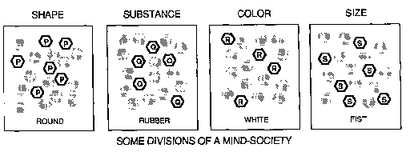
سنحتاج إلى طريقة ما للحديث عن حالات العديد من الوكالات في وقت واحد. لذا سأستخدم في هذا الكتاب تعبير "الحالة العقلية" أو "الحالة العقلية الكاملة" عند الحديث عن حالات الجميع من وكلاء المرء. العبارة الجديدة "الحالة العقلية الجزئية" مخصصة للحديث عن حالات مجموعات أصغر من الفاعلين. الآن لكي نكون واضحين، علينا تبسيط صورتنا للوضع، كما يفعل العلماء. نحن يجب أن نفترض أن كل فرد في مجتمعنا، في كل لحظة، إما أن يكون في "حالة هادئة". � أو "الحالة النشطة". لماذا لا يمكن إثارة العامل جزئيًا، بدلًا من "التشغيل" أو "الإيقاف" فقط؟ يمكنهم ذلك بالفعل، ولكن هناك أسباب فنية تجعل من هذا الأمر لا يحدث أي فرق جوهري في القضايا التي نناقشها هنا. على أية حال، يتيح لنا هذا الافتراض أن نكون دقيقين:
أ � الحالة الإجمالية � العقل عبارة عن قائمة تحدد العملاء النشطين والهادئين في لحظة معينة.
أ "الحالة الجزئية" للعقل تحدد فقط أن بعض العناصر نشطة ولكنها لا تحدد أي العناصر الأخرى هادئة.
لاحظ أنه وفقًا لهذا التعريف، يمكن للعقل أن يكون له حالة كلية واحدة تمامًا في أي لحظة، ولكنه يمكن أن يكون في العديد من الحالات الجزئية في نفس الوقت. لأن الحالات الجزئية هي أوصاف غير كاملة. تُظهر الصورة أعلاه مجتمعًا عقليًا يتكون من عدة أقسام منفصلة، لذلك يمكننا التفكير في حالة كل قسم كحالة جزئية واحدة، وهذا يتيح لنا أن نتخيل أن النظام بأكمله يمكنه "التفكير في عدة أفكار في وقت واحد"، تمامًا كما يفعل حشد من الأشخاص المنفصلين. عندما يكون قسم الكلام الخاص بك مشغولاً بما يقوله صديقك بينما يبحث قسم الرؤية الخاص بك عن باب للخروج منه، فإن عقلك يكون في حالتين جزئيتين في وقت واحد.
يكون الموقف أكثر إثارة للاهتمام عندما يقوم خطان من خطوط K بتنشيط العوامل في نفس الانقسام في نفس الوقت: إن فرض حالتين عقليتين جزئيتين مختلفتين على نفس الوكالة يمكن أن يؤدي إلى صراعات. من السهل التفكير فيه كرة بيضاء صغيرة لأن هذا ينشط خطوط K التي تتصل بمجموعات غير مرتبطة من الوكلاء. ولكن عندما تحاول أن تتخيل مربع دائري، وكلاؤك ل دائري و مربع يضطرون إلى التنافس للسيطرة على نفس مجموعة العوامل التي تصف الشكل. إذا لم تتم تسوية الصراع قريبًا، فإن عدم التسوية قد يقضي على كليهما، ويتركك مع إحساس بشكل غير محدد.
طائرة ورقية � ن. لعبة تتكون من إطار خفيف، عادة ما يكون من الخشب، مع ورق أو مادة خفيفة أخرى ممتدة عليه؛ في الغالب على شكل مثلث متساوي الساقين مع قوس دائري كقاعدة، أو رباعي متماثل حول القطر الأطول؛ تم تشييده (عادةً بذيل من نوع ما لغرض موازنته) ليطير في مهب الريح القوية عن طريق خيط طويل متصل.
�قاموس أكسفورد الإنجليزي
"جاك يطير بطائرته الورقية." ما هي المعرفة التي تحتاجها لفهم هذا؟ من المفيد أن تعرف أنه لا يمكنك الطيران بالطائرات الورقية دون أي رياح. يساعد على معرفة كيفية الطيران بالطائرة الورقية. سوف تفهم الأمر بشكل أفضل إذا كنت تعرف كيفية صنع الطائرات الورقية، أو مكان العثور عليها، أو تكلفة تكلفتها. الفهم لا ينتهي أبدا. من اللافت للنظر مدى ما يمكننا تخيله عن نشاط جاك. لم يسبق لي ولا أنت أن رأينا طائرة جاك الورقية، ولا نعرف لونها أو شكلها أو حجمها، ومع ذلك فإن عقولنا تزودنا بتفاصيل من ذكريات طائرات ورقية أخرى رأيناها من قبل. ربما جعلتك هذه الجملة تفكر في السلسلة، لكن لم يتم ذكر السلسلة. كيف يثير عقلك الكثير من الذكريات بهذه السرعة؟ وكيف يعرف عقلك ألا يستيقظ كثيرة جدًا الذكريات - شيء يمكن أن يؤدي أيضًا إلى مشاكل خطيرة؟ لشرح ذلك، سأقدم ما أسميه مستوى الفرقة نظرية.
الفكرة الأساسية بسيطة: نحن نتعلم من خلال ربط العوامل بخطوط K، لكننا لا نربطها جميعًا بنفس القدر من الثبات. وبدلاً من ذلك، فإننا نقيم روابط قوية عند مستوى معين من التفاصيل، ولكننا نقيم روابط أضعف عند المستويات الأعلى والأدنى. قد يتضمن خط K للطائرة الورقية بعض الخصائص مثل هذه:
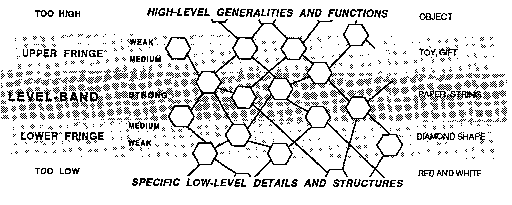
كلما قمنا بتشغيل خط K هذا، فإنه يحاول تنشيط كل هذه العوامل، ولكن أولئك الموجودين بالقرب من الأطراف يتم ربطهم كما لو كانوا بشريط تم استخدامه مرتين ويميلون إلى التراجع عندما يتحداهم عملاء آخرون. إذا كانت معظم الطائرات الورقية التي رأيتها من قبل كانت حمراء وذات شكل ماسي، فعندما تسمع عن طائرة جاك الورقية، فإن تلك الروابط الضعيفة ستقودك إلى افتراض أن طائرة جاك الورقية أيضًا حمراء وذات شكل ماسي. لكن إذا سمعت أن طائرة جاك الورقية خضراء اللون، فسيتم قمع ذكريات عامل اللون الأحمر ضعيف التنشيط بواسطة عوامل اللون الأخضر النشطة بشدة. دعونا نطلق على هذا النوع من الذكريات ضعيفة النشاط الافتراضات افتراضيا. بمجرد إثارة الافتراضات الافتراضية، تظل نشطة فقط في حالة عدم وجود تعارضات. ومن الناحية النفسية، فهي أشياء نفترضها عندما لا يكون لدينا سبب محدد للتفكير بطريقة أخرى. سنرى لاحقًا أن الافتراضات الافتراضية تجسد بعضًا من أهم أنواع المعرفة المنطقية لدينا: معرفة ما هو معتاد أو نموذجي. على سبيل المثال، هذا هو السبب الذي يجعلنا نفترض جميعًا أن جاك لديه يدين وقدمين. إذا تبين أن مثل هذه الافتراضات خاطئة، فإن روابطها الضعيفة تسمح بإزاحتها بسهولة عندما تتبادر إلى الذهن معلومات أفضل.
نفكر أحيانًا في الذاكرة كما لو أنها يمكن أن تعيدنا لسماع أصوات الأزمنة الماضية ورؤية مشاهد الماضي. لكن الذاكرة لا يمكنها حقًا أن تأخذنا إلى أي مكان؛ يمكنه فقط أن يعيد أذهاننا إلى الحالات السابقة، لزيارة ماذا نحن كان ذلك من خلال إعادة ما كان في العقل من قبل. لقد قدمنا نظرية النطاق المستوي لتوفير طريقة للذاكرة لتشمل نطاقًا أو "مستوى" من تفاصيل الأوصاف، كما هو الحال عندما يتم تسجيل جوانب معينة بثبات، عند تذكر تجربة الطائرة الورقية، والبعض الآخر بشكل ضعيف أو لا يتم تسجيلها على الإطلاق.
يمكن تطبيق مفهوم نطاق المستوى ليس فقط على أوصاف الأشياء، ولكن أيضًا على ذكرياتنا عن العمليات والأنشطة التي نستخدمها لتحقيق أهدافنا، أي الحالات العقلية التي نعيد خلقها والتي كانت ذات يوم تحل مشاكل في الماضي. المشاكل التي يتعين علينا حلها تتغير مع مرور الوقت، لذلك يجب علينا تكييف ذكرياتنا القديمة مع أهدافنا الحالية. لنرى كيف يمكن أن تساعد نطاقات المستوى في ذلك، دعنا نعود الآن إلى اللعب مع الكتل ولكن هذه المرة لنفترض أن طفلنا قد بلغ مرحلة النضج ويريد بناء منزل حقيقي. أي وكلاء من مجتمع البناء القديم لا يزال من الممكن تطبيقهم على هذه المشكلة الجديدة؟
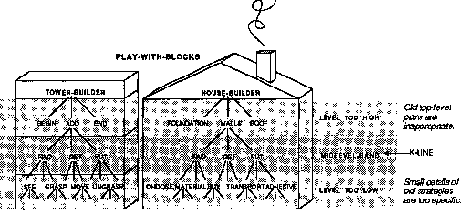
من المؤكد أن وكالة بناء المنازل الجديدة يمكنها استخدام الكثير منها منشئ البرج مهارات. بالتأكيد سوف تحتاج أضف مهارات المستوى الأدنى مثل يجد و يحصل و يضع. لكن باني البيت لن يكون لها الكثير من الفائدة ل بناة البرج على أعلى مستوى وكلاء مثل يبدأ و نهاية "لأنها كانت مخصصة لصنع الأبراج." ولن يكون لها فائدة كبيرة ل بناة أدنى مستوى المهارات، مثل تلك الموجودة في يمسك، لأن التقاط مثل هذه الكتل الصغيرة ليس هو المشكلة. ولكن معظم المهارات المتجسدة في بناة ستظل نطاقات المستوى المتوسط سارية. يبدو أن هذه تجسد نوع المعرفة الأكثر فائدة على نطاق واسع وبشكل عام، في حين أن نطاقات المستوى الأعلى والأدنى من المرجح أن تعتمد على جوانب المشكلة الخاصة بهدف أقدم أو بتفاصيل معينة للمشكلة الأصلية. ولكن إذا تم تصميم آلية الذاكرة لدينا بحيث يمكن فصل محتويات تلك الأطراف البعيدة بسهولة، فإن المعرفة الإضافية المخزنة فيها نادرا ما تسبب ضررا كبيرا ويمكن أن تكون مفيدة في كثير من الأحيان. على سبيل المثال، بناة البرج يمكن للتفاصيل الهامشية أن تخبرنا بما يجب فعله في حالة نمو منزلنا بشكل كبير أو الحاجة إلى مدخنة عالية.
لقد بدأنا باستخدام نطاقات المستوى لـ وصف الأشياء ولكن انتهى بنا الأمر إلى استخدامها من أجلها عمل أشياء! في الأقسام القليلة التالية، سنرى أنه ليس من قبيل الصدفة أن الأفكار المرتبطة بالمستوى تلعب العديد من الأدوار المختلفة في طريقة تفكيرنا.
من الصعب التعرف على شيء ما عندما يتم تقديم الكثير من التفاصيل إليك. لمعرفة أنك ترى طائرة ورقية، من المفيد البحث عن الورق والعصي والخيوط. ولكن إذا كنت ستستخدم المجهر، فإن ما ستلاحظه لن يكون خصائص الطائرات الورقية على الإطلاق، بل مجرد ميزات لقطع معينة من الورق أو العصي أو الخيوط. قد يسمح لك ذلك بالتعرف على طائرة ورقية معينة ولكن لا يسمح لك بالتعرف على أي طائرة ورقية أخرى. بعد مستوى معين من التفاصيل، كلما رأى المرء أكثر، قلّت قدرته على معرفة ما يراه! الأمر نفسه ينطبق على الذكريات؛ يجب عليهم إضعاف مرفقاتهم عند مستويات أقل من التفاصيل.
الفرقة السفلى: وبعيدًا عن مستوى معين من التفاصيل، تزداد صعوبة مطابقة الذكريات الكاملة للمواقف السابقة مع المواقف الجديدة.
لتوضيح سبب حاجة خطوط K إلى هامش من المستوى العلوي، دعنا نعود إلى ذلك المثال الذي تعلم فيه طفلنا في الأصل كيفية بناء برج، ولكنه الآن يرغب في بناء منزل. وهنا يمكن أن نواجه صعوبة من نوع آخر إذا تذكرنا الكثير عن أهدافنا السابقة!
الفرقة العليا: إن الذكريات التي تثير الفاعلين على مستوى عالٍ للغاية قد تميل إلى تزويدنا بأهداف غير مناسبة للوضع الحالي.
لنرى لماذا يجب على ذكرياتنا K-line أن تضعف ارتباطاتها فوق مستوى معين من التفاصيل، فكر في هذا الشكل الأكثر تطرفًا. لنفترض أن بعض الذكريات كانت مكتملة لدرجة أنها جعلتك تسترجع، بكل تفاصيلها، لحظة مثالية من ماضيك. سيؤدي ذلك إلى محو حاضرك "أنت" وستنسى ما طلبت من ذاكرتك أن تفعله!
يعمل كلا التأثيرين التهديبيين على جعل ذكرياتنا أكثر صلة بأغراضنا الحالية. يساعدنا نطاق المستوى المركزي في العثور على أوجه التشابه العامة بين الأحداث التي نتذكرها والظروف الحالية. توفر الحافة السفلية تفاصيل إضافية ولكنها لا تفرضها علينا. نحن نستخدمها فقط "افتراضيًا" عندما لا يتم توفير التفاصيل الفعلية. وبالمثل، فإن الحافة العلوية تستدعي إلى الأذهان بعض ذكريات الأهداف السابقة، ولكن مرة أخرى، لسنا مجبرين على استخدامها إلا بشكل افتراضي، عندما لا تفرض الظروف الحالية أهدافًا أكثر إلحاحًا. بهذه الطريقة، يمكننا أن نفكر في الحافة السفلية باعتبارها معنية بـ الهياكل من الأشياء، ويمكننا أن نفكر في الحافة العلوية على أنها متضمنة في وظائف من الأشياء. تمثل المستويات الدنيا التفاصيل "الموضوعية" للواقع؛ تمثل المستويات العليا اهتماماتنا "الذاتية" بالأهداف والنوايا.
كيف يمكن أن تقع أطراف نفس الخط K في عالمين مختلفين؟ لأنه لكي نفكر، نحتاج إلى روابط وثيقة بين الأشياء والأهداف، بين الهياكل ووظائفها. ما الفائدة من ذلك التفكير على الإطلاق، إلا إذا تمكنا من ربط تفاصيل كل شيء بخططنا ونوايانا؟ فكر في عدد المرات التي تستخدم فيها اللغة الإنجليزية نفس الكلمات للأشياء ولأغراضها. ما هي الأدوات التي ستستخدمها عند بناء منزلك لنشر الخشب وتثبيته ولصقه؟ هذا واضح: ستستخدم ملف رأى و أ المشبك وبعض غراء\ انظر إلى القوة العجيبة لتلك "المعاني": ما إن نسمع الصيغة الاسمية للكلمة حتى يجهد أعواننا في أداء الأفعال التي تتوافق معها كفعل. ظاهرة الاتصال هذه وسائل مع ينتهي لا يقتصر الأمر على اللغة - فسوف نرى العديد من الأمثلة الأخرى عليه في أنواع أخرى من الوكالات - ولكن اللغة قد تسمح بمثل هذا الارتباط بأقل قيود.
بالأمس، شاهدت جاك وهو يطير بطائرته الورقية. كيف تتذكر ذلك اليوم؟ إجابة واحدة ستكون، "تذكره يشبه إلى حد كبير رؤيته مرة أخرى". لكن بالأمس، عندما تعرفت على تلك الطائرة الورقية، لم تراها حقًا كشيء جديد تمامًا. إن حقيقة أنك تعرفت عليها بالأمس على أنها "طائرة ورقية" تعني أنك رأيت تلك الطائرة الورقية بالفعل من حيث الذكريات الأقدم.
يقترح هذا طريقتين لتكوين ذكريات جديدة لما رأيته منذ لحظة. يظهر مخطط واحد على اليسار أدناه: ما عليك سوى توصيل خط K جديد بجميع العملاء الذين كانوا نشطين مؤخرًا في عقلك. الطريقة الأخرى لإنشاء تلك الذاكرة موضحة في الرسم البياني الموجود على اليمين أدناه: بدلاً من ربط خط K الجديد بهذا العدد الكبير من العوامل المنفصلة، قم بتوصيله فقط بأي من خطوط K القديمة التي كانت نشطة مؤخرًا. سيؤدي هذا إلى نتيجة مماثلة، حيث أن تلك الخطوط K كانت متورطة في إثارة العديد من العملاء الذين نشطوا مؤخرًا. وهذا المخطط الثاني له ميزتان: أنه أكثر اقتصادا، ويؤدي إلى تكوين الذكريات كمجتمعات منظمة.
�
�
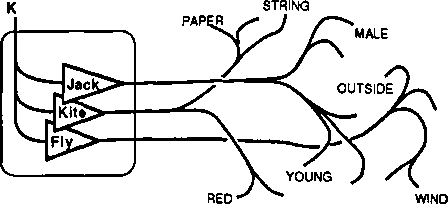
خط K متصل بثلاثة خطوط K.
ضع في اعتبارك أنه عندما أدركت أن جاك كان يطير بطائرة ورقية، لا بد أن هذا قد شمل استخدام خطوط K لـ "جاك" و"يطير" و"طائرة ورقية" التي تشكلت في أوقات سابقة وأثارتها رؤية جاك وهو يطير بطائرته الورقية. عندما تم تنشيط خطوط K الثلاثة هذه، قام كل واحد منهم بدوره بتنشيط مئات أو آلاف العملاء الآخرين. (حالتك الذهنية، عند رؤية هذا المشهد، نتجت عن مجموعات من العوامل التي تثيرها حواسك بشكل مباشر وعوامل تثيرها بشكل غير مباشر عن طريق التعرف عليك.) الآن، سيحتاج نظام الذاكرة اليسرى لدينا إلى عدد هائل من الاتصالات لربط كل هذه العوامل بخط K الجديد. لكن مخططنا الأيمن سيحصل على نفس التأثير تقريبًا من خلال ربط خط K الجديد بثلاثة خطوط Klines القديمة فقط! ومع ذلك، عندما تقوم بإعادة تنشيط خط K هذا في وقت لاحق، فإنه بدوره سيثير نفس خطوط Klines لـ Jack وFly وKite وأي اعترافات أخرى كانت متضمنة. ونتيجة لذلك، سوف تقوم بإعادة تجربة العديد من نفس الاعترافات كما كان من قبل. إلى هذا الحد، ستشعر وتتصرف وكأنك عدت إلى نفس الوضع مرة أخرى.
من المؤكد أن هذين النوعين من الذكريات لن يؤديا إلى نفس النتائج تمامًا. إن حيلتنا المتمثلة في ربط خطوط K الجديدة بالخطوط القديمة لن تستعيد الكثير من التفاصيل الدقيقة والإدراكية للمشهد. وبدلاً من ذلك، فإن أنواع الحالات العقلية التي ينتجها هذا النوع "الهرمي" من الذاكرة سوف تعتمد على الصور النمطية والافتراضات الافتراضية أكثر من اعتمادها على التصورات الفعلية. خاصة، سوف تميل إلى تذكر ما تعرفت عليه في ذلك الوقت فقط. إذن هناك شيء مفقود، لكن هناك مكسب في المقابل. تفقد "أشجار الذاكرة ذات الخط K" هذه أنواعًا معينة من التفاصيل، لكنها تحتفظ بآثار أكثر لأصول أفكارنا. قد لا تعمل أشجار الذاكرة هذه بشكل جيد إذا كانت الظروف الأصلية كذلك بالضبط متكرر. لكن هذا لا يحدث أبدًا، على أي حال، وستكون الذكريات المنظمة أكثر سهولة في التكيف مع المواقف الجديدة.
إذا كان كل خط K يمكنه الاتصال بخطوط K الأخرى، والتي بدورها تتصل بالآخرين، فيمكن لخطوط K تشكيل مجتمعات. ولكن كيف يمكننا التأكد من أن هذا يمكن أن يخدم أغراضنا، بدلا من أن يصبح فوضى كبيرة وغير منظمة؟ ما الذي يمكن أن يرشدهم إلى تمثيل تسلسلات هرمية مفيدة كهذه؟
�
للحفاظ على الأمور منظمة، سنقوم الآن بتطبيق فكرة النطاق المستوي مرة أخرى. تذكر أننا قمنا أولاً باختراع خطوط K لربط العملاء الأقدم معًا؛ ثم اخترعنا نطاقات المستوى لمنع تلك الخطوط من الامتلاء بالكثير من الأشياء غير المفيدة وغير ذات الصلة. الآن لدينا نفس المشكلة مرة أخرى: عند ربط خطوط K الجديدة بالخطوط القديمة، يجب أن نمنعها من تضمين الكثير من التفاصيل غير المناسبة. فلماذا لا تجرب نفس الحل؟ دعونا نطبق فكرة النطاق المستوي على أشجار كلاين نفسها!
عند إنشاء ذاكرة K-line جديدة , لا تقم بتوصيله بجميع خطوط K النشطة في ذلك الوقت ولكن فقط مع تلك الخطوط النشطة ضمن نطاق مستوى معين.
وربما يفترض أن هذه الفكرة سيكون من الصعب تطبيقها ما لم نحدد ما يعنيه "المستوى". ومع ذلك، فإن شيئًا كهذا سيحدث تلقائيًا، وذلك ببساطة لأن مجتمعات K-line الجديدة ستميل إلى وراثة أي تسلسل هرمي موجود بالفعل بين الوكلاء الأصليين الذين أصبحوا مرتبطين بخطوط K تلك. لقد رأينا بالفعل فكرتين مختلفتين حول هذا الموضوع. في لدينا طائرة ورقية على سبيل المثال، تحدثنا عن «مستوى التفصيل» في الوصف، أي أننا اعتبرناه أرقى في الحديث عنه "ورقة ممتدة عبر الإطار". بدلاً من مناقشة الورقة أو العصي نفسها. في لدينا منشئ على سبيل المثال، تحدثنا عن الأهداف ونظرنا في منشئ البرج الوكيل نفسه يكون بمستوى أعلى من الوكلاء الذين يستغلهم لحل مشكلاته الفرعية - مثل الوكلاء يبدأ و يضيف و نهاية.
يجب استخدام سياسة ربط خطوط K الجديدة بالخطوط القديمة باعتدال. خلاف ذلك، لن يتم تضمين أي عملاء جدد في ذاكرتنا على الإطلاق. علاوة على ذلك، لا ينبغي دائمًا إنتاج أشجار هرمية بسيطة ومنظمة؛ على سبيل المثال، في حالة منشئ, وجدنا أن كلاهما يتحرك و يرى سيحتاجون في كثير من الأحيان إلى مساعدة بعضهم البعض. في نهاية المطاف، تصبح جميع هياكل المعرفة لدينا متشابكة مع أنواع مختلفة من الاستثناءات، والاختصارات، والاتصالات المتقاطعة. لا يهم: ستظل فكرة النطاق المستوي قابلة للتطبيق بشكل عام، نظرًا لأن معظم ما نعرفه سيظل هرميًا بشكل أساسي بسبب كيفية نمو معرفتنا.
أليس من المثير للاهتمام عدد المرات التي نجد أنفسنا نستخدم فيها فكرة مستوى؟ نتحدث عن مستويات طموح الشخص أو إنجازه. نتحدث عن مستويات التجريد، ومستويات الإدارة، ومستويات التفاصيل. هل هناك أي شيء مشترك بين جميع الأشياء ذات المستوى الذي يتحدث عنه الناس؟ نعم: يبدو أن كل منها يعكس طريقة ما لتنظيم الأفكار، ويبدو كل منها هرميًا بشكل غامض. عادةً ما نميل إلى الاعتقاد بأن كلًا من هذه التسلسلات الهرمية يوضح نوعًا من النظام الموجود في العالم. لكن في كثير من الأحيان تأتي تلك الأوامر من العقل وفقط يظهر للانتماء إلى العالم. في الواقع، إذا كانت نظريتنا حول أشجار K-line صحيحة، فسيبدو من "الطبيعي" بالنسبة لنا أن نقوم بتصنيف الأشياء إلى مستويات وتسلسلات هرمية - حتى عندما لا ينجح هذا الأمر بشكل مثالي. الرسم البياني أدناه يصور طريقتين لتصنيف الأشياء المادية.
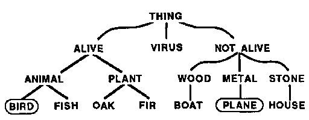 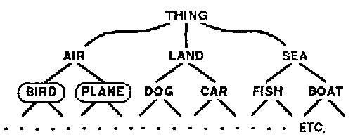
يقوم هذان التسلسلان الهرميان بتقسيم الأشياء بطرق مختلفة. الطيور والطائرات قريبة من بعضها البعض من جانب، ولكنها متباعدة على الجانب الآخر. أي تصنيف هو الصحيح؟ سؤال سخيف! ذلك يعتمد على ما تريد استخدامه من أجله. الذي على اليسار أكثر فائدة لعلماء الأحياء، والذي على اليمين أكثر فائدة للصيادين.
كيف يمكنك تصنيف البطة الخزفية، وهي لعبة مزخرفة جميلة؟ هل هو نوع من الطيور؟ هل هو حيوان؟ أم أنها مجرد قطعة من الطين هامدة؟ ولا معنى للنقاش حول هذا الأمر: «هذا ليس طيرًا!» «أوه، نعم، إنه كذلك، وهو أيضًا فخار». وبدلا من ذلك، كثيرا ما نستخدم تصنيفين أو أكثر في نفس الوقت. على سبيل المثال، يمكن للطفل المفكر أن يلعب مع البطة الخزفية كما لو كانت حيوانًا متخيلًا، ولكن في الوقت نفسه يعاملها بعناية، كما هو مناسب عند التعامل مع جسم صيني دقيق.
عندما نقوم بتطوير مهارة جديدة أو توسيع مهارة قديمة، علينا أن نؤكد على الأهمية النسبية لبعض الجوانب والميزات على غيرها. ولا يمكننا وضع هذه الأمور في مستويات مرتبة إلا عندما نكتشف طرقًا منهجية للقيام بذلك. ومن ثم يمكن أن تشبه تصنيفاتنا مخططات المستويات والتسلسلات الهرمية. لكن التسلسلات الهرمية تنتهي دائمًا بالتشابك والفوضى نظرًا لوجود استثناءات وتفاعلات لكل مخطط تصنيف. عند محاولة القيام بمهمة جديدة، لا نرغب أبدًا في البدء من جديد: فنحن نحاول استخدام ما نجح سابقًا. لذلك نحن نبحث داخل عقولنا عن الأفكار القديمة لاستخدامها. وبعد ذلك، عندما يبدو أن جزءًا من أي تسلسل هرمي يعمل، فإننا نسحب الباقي معه.
وفقًا لمفهومنا للذاكرة، فإن الخطوط K لكل وكالة تنمو لتصبح مجتمعًا جديدًا. لذا، للحفاظ على الأمور في نصابها الصحيح، دعونا نستدعي الوكلاء الأصليين وكلاء S ويطلقون على مجتمعهم اسم S- مجتمع. بالنظر إلى أي مجتمع S، يمكننا أن نتخيل بناء ذكريات له من خلال بناء مجتمع K مماثل له. عندما نبدأ في صنع مجتمع ك, يجب علينا ربط كل خط K مباشرة بوكلاء S، لأنه لا توجد خطوط K أخرى يمكننا ربطهم بها. يمكننا لاحقًا استخدام سياسة أكثر كفاءة تتمثل في ربط خطوط K الجديدة بالخطوط القديمة. لكن هذا سيؤدي إلى مشكلة مختلفة تتعلق بالكفاءة، حيث ستصبح الاتصالات مع وكلاء S الأصليين بعيدة وغير مباشرة بشكل متزايد. ثم سيبدأ كل شيء في التباطؤ - ما لم يستمر المجتمع الكوري في إجراء بعض الروابط الجديدة على الأقل مع المجتمع S الأصلي. وسيكون من السهل ترتيب ذلك، إذا نما المجتمع الكوري في هيئة "طبقة قريبة من مجتمعه S". الرسم البياني أدناه يشير إلى مثل هذا الترتيب.
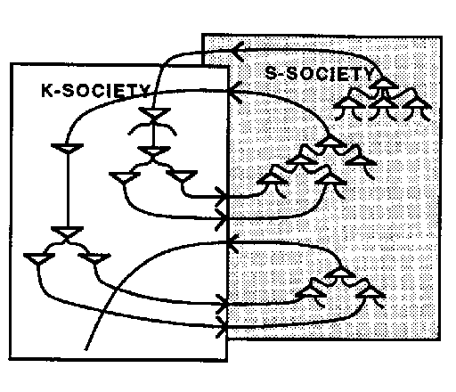
الروابط في المجتمع K تشبه تلك الموجودة في المجتمع S، باستثناء أن الإشارات تميل إلى التدفق في اتجاهين متعاكسين.
إذا تم ترتيبها بهذه الطريقة، يمكن لأزواج الطبقات أن تشكل نوعًا غريبًا من الكمبيوتر. نظرًا لأن وكلاء S يثيرون وكلاء K و والعكس صحيح، سوف يترتب على ذلك نوع من النشاط المتصاعد. مع مرور الوقت، قد يميل موقع هذا النشاط إلى التحرك لأعلى أو لأسفل وقد يميل أيضًا إلى الانتشار؛ ومن دون بعض السيطرة، قد يصبح النظام قريباً فوضوياً. ولكن سيكون من الصعب السيطرة على النظام من الداخل، كما أن ذلك لن يخدم أغراض الوكالات الأخرى. ومع ذلك، يمكننا بسهولة أن نتخيل كيف يمكن لوكالة ثالثة أخرى أن تحصر نشاط نظام KS وتتحكم فيه - من خلال تحديد نطاق المستوى الذي يجب أن يظل نشطًا وقمع كل الباقي. في الواقع، هذا هو بالضبط نوع السيطرة الخشنة التي قد يمارسها الدماغ (ب)، لأنه يستطيع القيام بكل هذا دون الحاجة إلى فهم التفاصيل الدقيقة لما يحدث داخل الدماغ (أ). قد تنظر الوكالة الثالثة ببساطة وتقول بفارغ الصبر، "هذا لن يصل إلى أي مكان: تحرك للأعلى لإلقاء نظرة على مستوى أعلى للوضع". أو قد يقول، "يبدو أن هذا تقدم، لذا انتقل إلى الأسفل واملأ المزيد من التفاصيل."
هل هناك أي فرق جوهري بين مجتمعات K و S؟ ليس حقًا، باستثناء أن المجتمع S جاء أولاً. في الواقع، يمكننا أن نتخيل سلسلة لا نهاية لها من هذه المجتمعات، حيث يتعلم كل جديد كيفية استغلال المجتمع الأخير. سنقترح لاحقًا أن هذه هي الطريقة التي تتطور بها عقولنا في مرحلة الطفولة، كتسلسل لطبقات المجتمعات. تبدأ كل طبقة جديدة كمجموعة من خطوط K، والتي تبدأ من خلال تعلم كيفية استغلال المهارات التي اكتسبتها الطبقة السابقة. كلما اكتسبت طبقة ما بعض المهارات المفيدة والجوهرية، فإنها تميل إلى التوقف عن التعلم والتغيير، وبعد ذلك يمكن لطبقة جديدة أخرى أن تبدأ في تعلم كيفية استغلال قدرات الطبقة الأخيرة. تبدأ كل طبقة جديدة كطالب، وتتعلم طرقًا جديدة لاستخدام ما يمكن أن تفعله الطبقات القديمة بالفعل. ثم يبطئ معدل التعلم ويبدأ في العمل كمادة ومعلم للطبقات التي تتشكل بعد ذلك.
بصرف النظر عن الألم، الذي من الواضح أن وظيفته هي إعلام المراكز العليا في الجهاز العصبي أين هناك شيء خارج عن النظام، هناك العديد من الآليات الفسيولوجية الموجودة لسبب وحيد هو إعلامنا بذلك الذي - التي هناك خطأ ما. نشعر بالمرض دون معرفة السبب. إن حقيقة أن لدينا مصطلحًا واحدًا فقط، "أشعر بالمرض"، لوصف مجموعة من الحالات المستندة إلى أسباب مختلفة، هي حقيقة مميزة للغاية.
كونراد لورينز
الشيء الوحيد الذي أكرهه هو طرح أسئلة مثل هذه:
هل تفضل الفيزياء على الأحياء؟
هل أعجبتك تلك المسرحية؟
هل تحب فاغنر؟
هل استمتعت بعامك بالخارج؟
ما الذي يجعلنا نرغب في ضغط الكثير في ملخصات غير معبرة مثل "أعجبني" و"أفضل" و"استمتع"؟ لماذا نحاول اختزال مثل هذه الأشياء المعقدة إلى قيم بسيطة أو كميات من الجودة الممتعة؟ الجواب هو أن مقاييس المتعة لدينا لها استخدامات عديدة. إنها تساعدنا في إجراء المقارنات والتسويات والخيارات. إنهم متورطون في إشارات الاتصال التي نستخدمها للدلالة على درجات مختلفة من الارتباط والرضا والاتفاق. إنهم لا يظهرون أنفسهم بالكلمات فحسب، بل أيضًا بالإيماءات والتنغيم والابتسامات والعبوس والعديد من العلامات التعبيرية الأخرى. ولكن علينا أن نكون حريصين على عدم قبول هذه العلامات بقيمتها الاسمية. ليست حالة العالم ولا حالة العقل على الإطلاق بهذه البساطة بحيث يمكن التعبير عنها بحكم واحد أحادي البعد. لا يوجد موقف مُرضٍ تمامًا أو غير مقبول تمامًا، وردود أفعالنا من المتعة أو الاشمئزاز ليست سوى ملخصات سطحية لأهرام العمليات الأساسية. "للاستمتاع" بتجربة ما، يجب على بعض وكلائنا تلخيص النجاح، ولكن يجب على الوكلاء الآخرين توجيه اللوم إلى مرؤوسيهم لفشلهم في تحقيق النجاح هُم الأهداف. لذلك يجب أن نكون متشككين عندما نجد أنفسنا نحب شيئًا ما جداً كثيرًا، لأن هذا قد يعني أن بعض وكالاتنا تقمع بقوة الاحتمالات الأخرى.
كلما كنت متأكدًا من أنك تحب ما تفعله، كلما تم قمع طموحاتك الأخرى بشكل كامل.
للاختيار بين البدائل، تتطلب أعلى مستويات العقل أبسط الملخصات. إذا كانت مشاعرك العليا "مختلطة" في كثير من الأحيان، فلن تتمكن إلا نادرًا من اتخاذ قرار بشأن الأطعمة التي ستأكلها، أو الطرق التي ستمشي عليها، أو الأفكار التي يجب أن تفكر فيها. على مستوى الفعل، أنت مجبر على التبسيط وصولا إلى تعبيرات مثل "نعم" و"لا". لكن هذه ليست مفيدة بالقدر الكافي لخدمة المستويات الدنيا من العقل، حيث تجري العديد من العمليات في وقت واحد، ويتعين على كل وكيل أن يحكم على مدى نجاحه في خدمة بعض الأهداف المحلية. في المستويات الدنيا من العقل، يجب أن يكون هناك مجموعة من الإشباعات والمضايقات الأصغر حجمًا.
نحن نتحدث في كثير من الأحيان كما لو كنا ينبغي لنسيطر على ما نريد. في الواقع، نحن بالكاد نميز بين الرغبة في شيء ما وبين إمكانية الحصول على المتعة منه؛ تبدو العلاقة بين هاتين الفكرتين حميمة جدًا لدرجة أنه من الغريب في الواقع ذكرها. يبدو من الطبيعي جدًا أن نرغب في ما نحبه وأن نتجنب ما لا نحبه، لدرجة أننا نشعر أحيانًا بإحساس بالرعب غير الطبيعي عندما يبدو أن شخصًا آخر ينتهك هذه القاعدة؛ ثم نفكر، من المؤكد أنهم لن يفعلوا مثل هذه الأشياء إلا إذا أرادوا ذلك حقًا. يبدو الأمر كما لو أننا نشعر بهذا الناس ينبغي يريدون فقط القيام بالأشياء التي يحبون القيام بها.
لكن العلاقة بين الرغبة والرغبة ليست بسيطة على الإطلاق، لأن تفضيلاتنا هي المنتجات النهائية للعديد من المفاوضات بين وكالاتنا. ولتحقيق أي هدف جوهري، يجب علينا أن نتخلى عن الاحتمالات الأخرى وأن نستخدم الآلات لمنع أنفسنا من الاستسلام للحنين أو الندم. ثم نستخدم كلمات مثل "الإعجاب" للتعبير عن عمل الآليات التي تجبرنا على اختيارنا. الإعجاب المهمة هي إيقاف البدائل؛ يجب علينا أن نفهم دورها، لأنها، دون قيود، تضيق نطاق عالمنا. وهذا يؤدي إلى الإعجاب الوضوح الاصطناعي: لا يعكس ما يعجبك يكون ولكن يظهر فقط ما تروق يفعل.
نعلم جميعًا كيف يمكن للإنجاز أن يجلب الرضا، ونميل إلى افتراض وجود صلة مباشرة بينهما. في الحيوانات البسيطة جدًا، حيث لا يعني "الرضا" أكثر من تلبية احتياجات أساسية بسيطة، يجب أن يكون الرضا والإنجاز متماثلين تقريبًا. ولكن في الدماغ البشري المعقد، هناك عدد كبير من طبقات الوكالات التي تتداخل بين تلك التي تتعامل مع احتياجات الجسم وتلك التي تمثل أو تعترف بإنجازاتنا الفكرية. إذًا، ما هي أهمية تلك المشاعر الممتعة بالإنجاز، وأحاسيس الهزيمة غير السارة، في هذه الأنظمة الأكثر تعقيدًا؟ ويجب أن يشاركوا في كيفية قيام وكالاتنا رفيعة المستوى بإعداد الملخصات.
لنفترض أنه كان عليك ذات مرة إرسال هدية إلى صديق. كان عليك اختيار هدية والعثور على صندوق لتغليفها فيه. وسرعان ما تحولت كل وظيفة إلى عدة مهام أصغر، مثل العثور على الخيوط وربطها. الطريقة الوحيدة لحل المشكلات الصعبة هي تقسيمها إلى مشكلات أصغر، ثم تقسيمها بدورها عندما تكون صعبة للغاية. لذا فإن المشكلات الصعبة تؤدي دائمًا إلى تفرع أشجار من الأهداف الفرعية والمشكلات الفرعية. لتحديد المكان الذي يجب تطبيق الموارد فيه، يحتاج وكلاء حل المشكلات لدينا إلى ملخصات بسيطة لكيفية سير الأمور. لنفترض أن ملخص كل وكيل يعتمد على ملخصات أخرى يحصل عليها من الوكلاء الذين يشرف عليهم. فيما يلي مثال مرضي لما يمكن أن يحدث إذا استند كل هذا الملخص إلى قرار الأغلبية البسيطة:
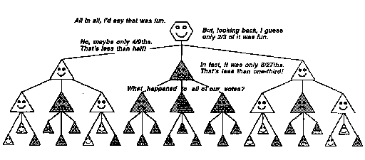
وعندما تنتهي من كل شيء، إذا سألك شخص ما إذا كنت قد استمتعت بالتجربة برمتها، فقد تقول إنها كانت "ممتعة" أو "مروعة". ولكن لا يمكن لمثل هذا الملخص أن يقول الكثير عما تعلمته وكالاتك بالفعل. لقد تعلمت عمليات الربط الخاصة بك الإجراءات التي نجحت وتلك التي فشلت؛ عمليات طي الورق واختيار الهدايا كانت لها إخفاقات وإنجازات أخرى؛ لكن تقييمك الشامل للتجربة لا يمكن أن يعكس كل تلك التفاصيل. إذا تركتك الحلقة بأكملها "غير سعيد"، فقد تكون أقل ميلًا إلى تقديم الهدايا في المستقبل، ولكن لا ينبغي أن يكون لذلك تأثير كبير على ما تعلمته حول طي الورق وربط الخيط. لا يوجد شعور واحد بـ "جيد" أو "سيئ" يمكن أن يعكس الكثير مما حدث داخل جميع وكالاتك؛ يجب إخفاء الكثير من المعلومات. إذًا لماذا يبدو من المرضي جدًا بالنسبة لنا أن نصنف مشاعرنا إلى إيجابية وسلبية ونستنتج ذلك كله وكان التأثير الصافي سيئا أو جيدا؟ صحيح أن المشاعر في بعض الأحيان تكون أكثر اختلاطًا ويبدو كل شيء حلوًا ومرًا، ولكن كما سنرى، هناك العديد من الأسباب التي تجعلنا نبالغ في التبسيط.
لقد تحدثنا حتى الآن في الغالب عن التعلم من النجاح. لكن ضع في اعتبارك أنه عندما تنجح، لا بد أن تكون لديك بالفعل الوسائل اللازمة في متناول يدك. إذا كان الأمر كذلك، فإن إجراء تغييرات في عقلك قد يؤدي إلى تفاقم الأمور! كما يقول الناس في كثير من الأحيان، "لا يجب أن تجادل مع النجاح." لأنه كلما حاولت "تحسين" إجراء يعمل بالفعل، فإنك تخاطر بإتلاف أي مهارات أخرى تعتمد على نفس الآلية.
وبناءً على ذلك، قد يكون من الأهم أن نتعلم من كيفية فشلنا. ماذا يجب أن تفعل إذا فشلت إحدى الطرق الراسخة، التي نسميها "M"، في الوصول إلى هدف معين؟ تتمثل إحدى السياسات في تغيير M، حتى لا يرتكب نفس الخطأ مرة أخرى. ولكن حتى هذا قد يكون خطيرًا لأنه قد يتسبب في فشل M بطرق أخرى. علاوة على ذلك، قد لا نعرف كيف لتغيير M لإزالة الخطأ. الطريقة الأكثر أمانًا للتعامل مع هذا هي تعديل M عن طريق إضافة أجهزة ذاكرة خاصة تسمى "الرقابة" و"القامعات" (سنناقش هذا بالتفصيل لاحقًا)، والتي تتذكر ظروفًا معينة يفشل فيها M ثم تشرع لاحقًا في قمع M عندما تتكرر ظروف مماثلة. لن يخبرك هؤلاء الرقباء بما يجب أن تفعله، بل فقط ما لا ينبغي عليك فعله؛ ومع ذلك، فإنها تمنع إضاعة الوقت من خلال تكرار الأخطاء القديمة.
التعلم له جانبان على الأقل. تتعلم بعض أجزاء عقولنا من النجاح، من خلال تذكر متى تنجح الأساليب. لكن أجزاء أخرى من عقولنا تتعلم بشكل رئيسي عندما نرتكب الأخطاء، من خلال تذكر الظروف التي فشلت فيها الأساليب المختلفة. سنرى لاحقًا كيف يمكن لهذا أن يعلمنا ليس فقط ما لا ينبغي لنا أن نفعله، بل أيضًا ما لا ينبغي لنا أن نفعله يفكر! عندما يحدث ذلك، يمكن أن يتخلل أذهاننا المحظورات والمحظورات التي لا ندركها تمامًا. وبالتالي، فإن التعلم من النجاح يميل إلى استهداف وتركيز طريقة تفكيرنا، في حين أن التعلم من الفشل يؤدي أيضًا إلى أفكار أكثر إنتاجية، ولكن بطريقة أقل توجيهًا.
لن نحتاج إلى التعامل مع الاستثناءات والرقابة إذا كنا نعيش في عالم من القواعد البسيطة والعامة دون أي استثناءات، كما هو الحال في العوالم الرياضية الجميلة للحساب والهندسة والمنطق. لكن المنطق المثالي نادرًا ما ينجح في العوالم الحقيقية للأشخاص والأفكار والأشياء. وذلك لأنه ليس من قبيل الصدفة عدم وجود استثناءات للقواعد في تلك العوالم الرياضية: هناك، نبدأ بالقواعد ونتخيل فقط الأشياء التي تطيعها. لكننا لا نستطيع أن نصنع القواعد للأشياء الموجودة بالفعل عن عمد، لذا فإن مسارنا الوحيد هو أن نبدأ بتخمينات غير كاملة - مجموعات من القواعد التقريبية والجاهزة - ثم ننتقل إلى اكتشاف مكامن الخطأ.
ومن الطبيعي أننا نميل إلى تفضيل التعلم من النجاح وليس من الفشل. ومع ذلك، أعتقد أن حصر أنفسنا في تجارب التعلم "الإيجابية" وحدها يؤدي إلى تحسينات صغيرة نسبيًا فيما يمكننا القيام به بالفعل. ربما لا توجد طريقة لتجنب درجة معينة من الانزعاج على الأقل عندما نجري تغييرات جوهرية في طريقة تفكيرنا.
لا تتعلق بالأشياء التي تحبها، ولا تكره الأشياء التي تكرهها. الحزن والخوف والعبودية تأتي من ما يحبه ويكرهه.
�بوذا
لماذا يستمتع الأطفال بالجولات في المتنزهات وهم يعلمون أنهم سيشعرون بالخوف، بل وحتى المرض؟ لماذا يتحمل المستكشفون المعاناة والألم، وهم يعلمون أن هدفهم ذاته سوف يتبدد بمجرد وصولهم؟ وما الذي يجعل الناس العاديين يعملون لسنوات في وظائف يكرهونها، حتى يتمكنوا في يوم من الأيام من القيام بذلك؟ يبدو أن البعض قد نسي ماذا؟
هناك ما هو أكثر من التحفيز من المكافأة الفورية. عندما ننجح في أي شيء، فإن الكثير يدور داخل العقل. على سبيل المثال، قد نمتلئ بمشاعر الإنجاز والفخر، ونشعر بالدافع لإظهار ما قمنا به وكيف فعلناه للآخرين. ومع ذلك، فإن مصير العقول الأكثر طموحًا هو أن حلاوة النجاح سوف تتلاشى بسرعة مع ظهور مشاكل أخرى في أذهانهم. وهذا أمر جيد لأن معظم المشاكل لا تقف بمفردها، بل هي مجرد أجزاء أصغر من مشاكل أكبر. عادة، بعد أن نحل مشكلة ما، تعود وكالاتنا إلى سبب آخر أعلى مستوى للاستياء، فقط لتفقد نفسها مرة أخرى في مشاكل فرعية أخرى. لن يتم فعل أي شيء إذا استسلمنا للرضا.
ولكن ماذا لو خرج الوضع عن سيطرتنا تماما، ولم يعد يوفر لنا مفرا من المعاناة؟ ثم كل ما يمكننا فعله هو محاولة بناء خطة داخلية لتحمله. إحدى الحيل هي محاولة تغيير هدفنا اللحظي، كما عندما نقول، "إن الوصول إلى هناك هو كل المتعة." هناك طريقة أخرى تتمثل في التطلع إلى بعض الفوائد للذات المستقبلية: "بالتأكيد سأتعلم من هذا." عندما لا ينجح ذلك، لا يزال بإمكاننا اللجوء إلى المزيد من المخططات غير الأنانية: "لعل الآخرين يتعلمون من خطأي".
إن هذا النوع من التعقيدات يجعل من المستحيل اختراع تعريفات جيدة لكلمات عادية مثل "المتعة" و"السعادة". ولا توجد مجموعة صغيرة من المصطلحات تكفي للتعبير عن الأنواع العديدة من الأهداف والرغبات التي تتنافس في أذهاننا في وكالات مختلفة وعلى مقاييس زمنية مختلفة. فلا عجب أن تلك النظريات الشائعة حول المكافأة والعقاب لم تؤد أبدًا إلى تفسير أشكال أعلى من التعلم البشري - مهما كانت مفيدة في تدريب الحيوانات. لأنه في المراحل الأولى من اكتساب أي مهارة جديدة حقًا، يجب على الشخص أن يتبنى على الأقل موقفًا مضادًا للمتعة جزئيًا: ‹جيد، هذه فرصة لتجربة الإحراج واكتشاف أنواع جديدة من الأخطاء!› الأمر نفسه ينطبق على الرياضيات، أو تسلق قمم الجبال المتجمدة، أو العزف على آلة الأرغن بالقدمين: بعض أجزاء العقل تجد الأمر فظيعًا، بينما تستمتع أجزاء أخرى بإجبار تلك الأجزاء الأولى على العمل من أجلها. هم. يبدو أننا لا نملك أسماء لعمليات كهذه، على الرغم من أنها لا بد أن تكون من بين أهم طرق نمونا.
لا شيء من هذا يعني أنه يمكننا التخلص من مفاهيم المتعة والحب عندما نستخدمها في الحياة اليومية. لكن علينا أن نفهم أدوارهم في علم النفس لدينا؛ فهي تمثل الآثار النهائية لطرق معقدة للتبسيط.
المُحاور: والآن يا آدم، استمع إلى ما أقول. أخبرني أيهما أفضل: "الماء" أم "بعض الماء"؟
آدم: اذهب يا ابن عرس.
� روجر براون وأورسولا بيلوجي، -مناقشة مشاكل التجارب على الأطفال الصغار.
كان عالم النفس جان بياجيه من أوائل الذين أدركوا أن مراقبة الأطفال قد تكون وسيلة لمعرفة كيفية نمو المجتمعات العقلية. في إحدى تجاربه الكلاسيكية، أظهر لطفل مجموعتين متطابقتين من البيض والأكواب، وسأل: "هل هناك المزيد من البيض أو المزيد من أكواب البيض؟"
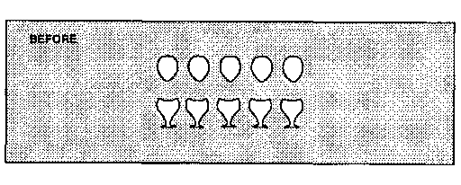
معظم الأطفال، صغارًا وكبارًا، يقولون: "إنهم متماثلون".
ثم قام بتوزيع البيض على حدة - أمام أعين الطفل - وسأل مرة أخرى إذا كان هناك المزيد من البيض أو المزيد من أكواب البيض.
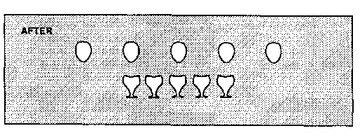
الطفل النموذجي البالغ من العمر 5 سنوات: "المزيد من البيض".
الطفل النموذجي بعمر 7 سنوات: "نفس الشيء، لأنهما نفس البيض."
قد يحاول المرء تفسير ذلك بافتراض أن الأطفال الأكبر سنًا أفضل في العد. ومع ذلك، فإن هذا لا يمكن أن يفسر تجربة أخرى شهيرة لبياجيه، والتي بدأت بعرض ثلاث جرار، اثنتان منها مملوءتان بالماء. اتفق جميع الأطفال على أن الجرتين القصيرتين والعريضتين تحتويان على كميات متساوية من السائل. ثم، أمام أعينهم، سكب كل السائل من إحدى الجرار القصيرة في الجرة الطويلة الرفيعة وسأل أي الجرة تحتوي على المزيد من السوائل الآن.
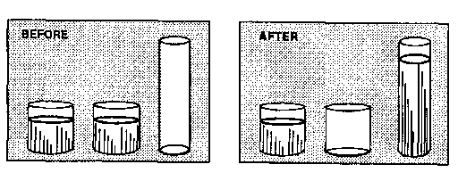
الطفل النموذجي البالغ من العمر 5 سنوات: "المزيد في الجرة الطويلة".
الطفل النموذجي البالغ من العمر 7 سنوات: "نفس الشيء، لأنه نفس الماء."
لقد تكررت هذه التجارب بعدة طرق وفي العديد من البلدان - ودائمًا مع نفس النتائج: كل طفل عادي يكتسب في النهاية رؤية الكبار للكمية - على ما يبدو دون مساعدة الكبار! وقد يختلف العمر الذي يحدث فيه هذا، ولكن العملية في حد ذاتها تبدو عالمية إلى الحد الذي يجعل المرء لا يستطيع إلا أن يشك في أنها تعكس بعض الجوانب الأساسية لتطور العقل. في الأقسام القليلة التالية سوف ندرس فكرة "المزيد" ونبين أنها تخفي طريقة عمل مجتمع كبير ومعقد يستغرق سنوات عديدة لتعلمه.
حفظ ن. مبدأ أن [الشيء] هو كمية ثابتة، قابلة للتحويل بطرق لا حصر لها، ولكنها لا تزيد ولا تنقص.
"قاموس ويبستر غير المختصر".
ماذا تقول تجارب البيض وجرة الماء عن نمونا منذ الطفولة؟ دعونا نفكر في عدة تفسيرات.
الكمية: ربما لم يفهم الأطفال الأصغر سنًا بعد المفهوم الأساسي للكمية: وهو أن كمية السائل تظل كما هي.
في الأقسام القليلة التالية، سأزعم أننا لا نتعلم "مفهومًا واحدًا أساسيًا للكمية". وبدلاً من ذلك، يجب على كل شخص بناء وكالة متعددة المستويات، والتي سنسميها مجتمع أكثر, الذي يجد طرقًا مختلفة للتعامل مع الكميات.
المدى: يبدو أن الأطفال الأصغر سنًا يتأثرون بشكل غير ملائم بالمدى الأكبر للمساحة التي يشغلها البيض المنتشر وعمود الماء الأطول.
لا يمكن أن تكون هذه هي القصة بأكملها، لأن معظم البالغين أيضًا يحكمون على وجود المزيد من الماء في الجرة الأطول، إذا رأوا المشهد الأخير فقط، دون أن يعرفوا من أين تم سكب الماء! فيما يلي بعض النظريات الأخرى حول حكم الطفل الأصغر:
القابلية للعكس: يولي الأطفال الأكبر سنًا مزيدًا من الاهتمام لما يعتقدون أنه سيظل كما هو، بينما يهتم الأطفال الأصغر سنًا أكثر بما تغير.
الحبس: يعرف الطفل الأكبر سنًا أن كمية الماء تبقى كما هي، إذا لم تتم إضافة أو إزالة أي منها أو فقدانها أو انسكابها.
المنطق: ربما لم يتعلم الأطفال الأصغر سنًا بعد تطبيق أنواع الاستدلال التي يحتاجها المرء لفهم مفهوم الكمية.
كل واحد من هذه التفسيرات فيه بعض الحقيقة، ولكن لا شيء منها يصل إلى جوهر القضية. ومن الواضح أن الأطفال الأكبر سنًا يعرفون المزيد عن مثل هذه الأمور ويمكنهم القيام بأنواع أكثر تعقيدًا من التفكير. ولكن هناك أدلة كافية على أن معظم الأطفال الأصغر سنًا يمتلكون أيضًا ما يكفي من القدرات المطلوبة. على سبيل المثال، يمكننا وصف التجربة دون القيام بها فعليًا على الإطلاق أو يمكننا إجراؤها بعيدًا عن نظر الطفل، خلف شاشة من الورق المقوى. وبعد ذلك، عندما نشرح ما يحدث، سيقول عدد غير قليل من الأطفال الصغار، "بالطبع سيكونون هم أنفسهم."
ثم ماذا يكون الصعوبة؟ ومن الواضح أن الأطفال الأصغر سنا يمتلكون الأفكار التي يحتاجون إليها ولكن لا أعرف متى تطبقها! يمكن للمرء أن يقول أنهم يفتقرون إلى ما يكفي المعرفة عن معرفتهم، أو أنهم لم يكتسبوا الضوابط والتوازنات اللازمة لاختيار أو تجاوز جحافلهم من الوكلاء ذوي التصورات والأولويات المختلفة. لا يكفي أن تكون قادرًا على استخدام أنواع عديدة من الاستدلال؛ يجب على المرء أن يعرف أيضًا والتي يجب استخدامها في ظروف مختلفة! التعلم هو أكثر من مجرد تراكم المهارات. مهما كان ما نتعلمه، هناك دائمًا المزيد لنتعلمه - حول كيفية استخدام ما تعلمناه بالفعل.
دعونا نحاول شرح تجربة جرة الماء من حيث كيفية تعامل وكالات الطفل مع المقارنات. لنفترض أن الطفل يبدأ بثلاثة وكلاء فقط:
طويل يقول، "كلما كان أطول، كلما كان أكثر. هناك المزيد داخل الشيء الأطول.
رفيع يقول، "كلما كان أرق، كلما كان أقل." يوجد أقل داخل الشيء الأرق.
محصور يقول، «كذلك، لأنه لم يزد أو يحذف شيء».
كيف نعرف أن الأطفال لديهم عوامل كهذه؟ يمكننا أن نكون على يقين من أن الأطفال الأصغر سنا لديهم وكالات مثل طويل و رفيع لأنهم جميعًا يستطيعون إصدار هذه الأحكام:
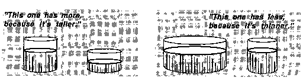
من الصعب معرفة ما إذا كان الأطفال الأصغر سنًا لديهم عوامل مثل محصور، لكن الكثير منهم يمكنهم بالفعل تفسير أن شيئًا ما يظل كما هو عندما يسكب السائل ذهابًا وإيابًا. على أية حال، هناك تعارض لأن العملاء الثلاثة يقدمون ثلاث إجابات مختلفة أكثر، أقل، و نفس ما الذي يمكن عمله لتسوية هذا؟ أبسط نظرية هي أن الأطفال الأصغر سنًا قد وضعوا عملاءهم في "ترتيب من الأولويات". �
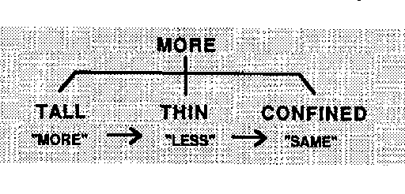
إذا تم إثارة TALL، دعه يقرر. إذا لم يكن الأمر كذلك، وكان THIN قيد التشغيل، فليقرر THIN. في أي حالة أخرى، دع CONFINED يقرر.
يمكن أن يكون مثل هذا المخطط عمليًا للغاية، نظرًا لأن ترتيب جميع الوكلاء حسب الأولوية يجعل من السهل معرفة أي منهم يجب استخدامه. على سبيل المثال، كثيرًا ما نقارن الأشياء بمدى انتشارها، أي بمدى وصولها في الفضاء. ولكن لماذا وضع طويل قبل واسع؟ يبدو أن الناس بالفعل أكثر حساسية تجاه رَأسِيّ نطاقات. نحن لا نعرف ما إذا كان هذا قد تم بناؤه منذ البداية في أدمغتنا، ولكن على أي حال، عادة ما يكون هذا التحيز مبررًا لأنه "مزيد من الارتفاع". وكثيرًا ما يتماشى ذلك مع أنواع أخرى من الضخامة.
من "الأكبر" أنت أم ابن عمك؟ الوقوف إلى الخلف!
من هو الأقوى؟ هؤلاء الكبار يلوحون في الأفق فوق!
كيفية تقسيم السائل إلى أجزاء متساوية؟ تطابق المستويات!
لا يوجد وكيل آخر يبدو جيدًا مثل طويل لإجراء مقارنات يومية. ومع ذلك، لن ينجح أي نظام للأولويات دائمًا. وفي حالة تجربة جرة الماء، محصور يجب أن يأتي أولاً، لكن أولويات الطفل الأصغر تؤدي إلى اتخاذ الحكم الخاطئ. قد يتساءل المرء، بالمناسبة، ما إذا كان طويل و قصير، أو واسع و رفيع، ينبغي اعتبارها عوامل مختلفة. ومن الناحية المنطقية، يكفي واحد فقط من كل زوج. لكنني أشك في أنه سيكون كافيا في الدماغ للتمثيل قصير من خلال مجرد عدم النشاط طويل. بالنسبة للبالغين، هذه "أضداد"، لكن الأطفال لا يعملون بشكل منطقي. أصر أحد الأطفال الذين أعرفهم على ذلك سكين كان عكس ذلك شوكة، لكن هذا شوكة كان عكس ذلك ملعقة. وكان الماء عكس ذلك لبن. وأما العكس عكس، اعتبر ذلك الطفل أن هذا أمر أحمق للغاية بحيث لا يمكن مناقشته.
ماذا ينبغي للمرء أن يفعل عندما لا تتفق أنواع المعرفة المختلفة؟ من المفيد في بعض الأحيان ترتيبها حسب الأولوية، ولكن كما رأينا، لا يزال من الممكن أن يؤدي ذلك إلى حدوث أخطاء. كيف يمكننا أن نجعل نظامنا حساسًا للظروف المختلفة؟ السر هو استخدام مبدأ عدم التسوية والبحث عن المساعدة من الوكالات الأخرى! للمساعدة في مقارنة الكميات، سنحتاج إلى إضافة "وكلاء إداريين" جدد إلى مجتمع المزيد الخاص بنا.
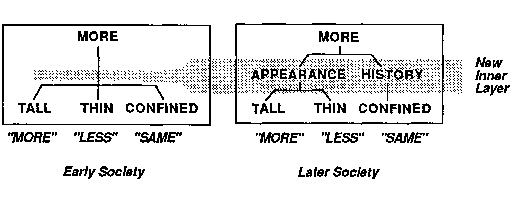
الجديد مظهر تم تصميم المسؤول ليقول "المزيد" عندما يكون الوكيل طويل نشط، ليقول "أقل" عندما يكون الوكيل رفيع نشط، وعدم قول أي شيء على الإطلاق عندما يبدو شيء ما أطول وأنحف. ثم المسؤول الجديد الآخر، تاريخ، يتخذ القرار على أساس ماذا محصور يقول.
تم اقتراح هذا التفسير للفرق بين الأطفال الأكبر سنًا والأطفال الأصغر سنًا لأول مرة بواسطة سيمور بابيرت في الستينيات، عندما بدأنا لأول مرة في استكشاف أفكار مجتمع العقل. حاولت معظم النظريات السابقة شرح تجارب بياجيه من خلال الإشارة إلى أن الأطفال يطورون أنواعًا مختلفة من التفكير مع مرور الوقت. هذا صحيح بالتأكيد، لكن أهمية مفهوم بابرت تكمن في التأكيد ليس فقط على مكونات الاستدلال، بل أيضًا على كيفية تنظيمها: لا يمكن للعقل أن ينمو كثيرًا بمجرد مراكمة المعرفة. ويجب عليها أيضًا تطوير طرق أفضل لاستخدام ما تعرفه بالفعل. وهذا المبدأ يستحق اسما.
مبدأ بابيرت: إن بعض الخطوات الأكثر أهمية في النمو العقلي لا تعتمد فقط على اكتساب مهارات جديدة، بل على اكتساب طرق إدارية جديدة لاستخدام ما يعرفه المرء بالفعل.
يوضح مديرينا الجديدين من المستوى المتوسط هذه الفكرة: مظهر و تاريخ تشكل طبقة متوسطة جديدة تجمع مجموعات معينة من المهارات ذات المستوى الأدنى. إن اختيار الوكلاء لهذه المجموعات أمر بالغ الأهمية. سيعمل النظام بشكل جيد إذا جمعنا طويل و رفيع معا، لذلك محصور يمكنهم السيطرة عندما يتعارضون. ولكن ذلك لن يؤدي إلا إلى تفاقم الأمور إذا اجتمعنا طويل و محصور معاً! إذن ما الذي يقرر أي المجموعات سيتم تشكيلها؟ يشير مبدأ بابرت إلى أن العمليات التي تجمع الوكلاء في مجموعات يجب أن تستغل بطريقة أو بأخرى العلاقات بين مهارات هؤلاء الوكلاء. على سبيل المثال، لأن طويل و رفيع أكثر تشابهًا في الشخصية مع بعضها البعض من محصور، فمن المنطقي تجميعهم معًا بشكل أوثق في التسلسل الهرمي الإداري.
فكر في عدد المعاني التي يجب أن تحملها عبارة "المزيد"! يبدو أننا نستخدم واحدًا مختلفًا لكل نوع من الأشياء التي نعرفها.
� المزيد من اللون الأحمر. أكثر بصوت عال. أكثر سرعة. أكثر قديمة. أكثر طولا. أكثر ليونة. أكثر قسوة. أكثر على قيد الحياة. أكثر سعادة. أكثر ثراء.
كل استخدام له معنى مختلف، ويشمل وكالات مختلفة. فكيف يمكن تجميع كل هذه الطرق لإجراء المقارنات في مجتمع واحد فقط؟ هنا مجتمع أكثر قد يستخدمه الطفل للتعامل مع مشكلة كوب البيض.
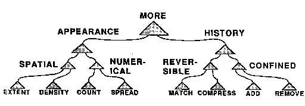
هذا المجتمع لديه قسمين رئيسيين. فيه مظهر تقسيم، أ المكانية يأخذ التقسيم الفرعي في الاعتبار كلاً من المدى المتزايد الذي يشغله البيض المنتشر وكذلك مظهره الرقيق أو انخفاض كثافته. وفي حالة تلك البيضات المنتشرة، يتعارض هؤلاء... وتنسحب الوكالة المكانية. ثم، إذا كان الطفل يستطيع العد، عددي يقرر؛ وإلا فإن تاريخ يطبق القسم بعض العوامل التي تستخدم ذكريات الأحداث الأخيرة. إذا تم دحرجة بعض البيض بعيدًا، محصور سيقولون أن مبلغهم لم يعد هو نفسه؛ إذا تم تحريك البيض فقط، عكسها سيزعمون أن مبلغهم لا يمكن أن يتغير.
لحل مشكلة جرة الماء، ستحتاج جمعية المزيد إلى أنواع أخرى من العوامل ذات المستوى الأدنى:
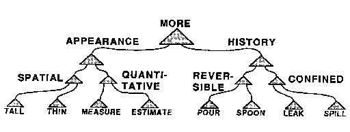
قد تشكو من أنه حتى لو كنا بحاجة إلى هذه الجحافل من الوكالات ذات المستوى الأدنى لإجراء مقارنات، فإن هذا النظام يحتوي على عدد كبير جدًا من المديرين من المستوى المتوسط. لكن هذه الجبال من البيروقراطية تستحق تكلفتها أكثر من ذلك. يجسد كل وكيل ذو مستوى أعلى شكلاً من أشكال المعرفة "العليا" التي تساعدنا على تنظيم أنفسنا من خلال إخبارنا متى وكيف نستخدم الأشياء التي نعرفها. وبدون إدارة متعددة الطبقات، لم نتمكن من استخدام المعرفة الموجودة في وكالاتنا ذات المستوى المنخفض؛ سيستمرون جميعًا في الوقوف في طريق بعضهم البعض.
على الرغم من أن تجارب بياجيه حول حفظ الكمية قد تم تأكيدها بشكل كامل مثل أي تجارب في علم النفس، إلا أنه يمكننا أن ندرك سبب تشكك الكثير من الناس عندما يسمعون لأول مرة عن هذه الاكتشافات. إنها تتناقض مع الافتراض التقليدي بأن الأطفال يشبهون البالغين إلى حد كبير، باستثناء أنهم أكثر جهلاً. كم هو غريب أن هذه الظواهر، طوال قرون التاريخ، ظلت دون أن يلاحظها أحد حتى بياجيه، وكأن أحداً لم يراقب طفلاً بعناية من قبل! لكن الأمر كان دائمًا بهذه الطريقة مع العلم. لماذا استغرق مفكروننا وقتا طويلا لاكتشاف أفكار بسيطة مثل قوانين الحركة لإسحاق نيوتن أو فكرة داروين عن الانتقاء الطبيعي؟ فيما يلي بعض التحديات المتكررة.
الوالد: ألا يمكن أن يكون الأطفال الصغار يستخدمون الكلمات بطرق لا تعني نفس الأشياء للبالغين؟ ربما يفهمون ببساطة أن عبارة "أيهما أكثر؟" تعني "أيهما أعلى؟" أو "أيهما أطول؟"
تظهر التجارب الدقيقة أن هذا لا يمكن أن يكون مجرد مسألة كلمات. يمكننا أن نقدم نفس الاختيارات، بدون كلمات، ومع ذلك سيستمر معظم الأطفال الأصغر سنًا في الوصول إلى أوعية عصير البرتقال الأطول والأرق أو صفوف ممتدة من بيض الحلوى.
الناقد: ماذا يحدث عندما يتعارض المظهر والتاريخ؟ ألن يشل ذلك مجتمعك بأكمله؟
سيكون ذلك بالفعل، إلا إذا أكثر لديها مستويات وبدائل أخرى. والكبار لديهم أنواع أخرى من التفسيرات ــ مثل "السحر"، أو "التبخر"، أو "السرقة". ولكن في الواقع، يجد سحرة المسرح أن إخفاء الأشياء لا يسلي الأطفال الأصغر سنا؛ من المفترض أنهم معتادون جدًا على مواجهة ما لا يمكن تفسيره. ماذا يحدث عندما أكثر لا تستطيع أن تقرر ماذا تفعل؟ يعتمد ذلك على حالة الوكالات الأخرى، بما في ذلك تلك المشاركة في التعامل مع الإحباط والقلق والملل.
عالم نفسي: لقد سمعنا عن أدلة حديثة تشير إلى أنه، على الرغم مما قاله بياجيه، فإن الأطفال الصغار جدًا لديهم مفاهيم الكمية؛ يمكن للكثير منهم حتى عد تلك البيض. ألا يدحض ذلك بعض اكتشافات بياجيه؟
ليس بالضرورة. ضع في اعتبارك أنه لا أحد يشكك في نتائج تجارب الجرة والكأس تلك. ما هي أهمية الدليل إذن على أن الأطفال الصغار يمتلكون أساليب ذلك؟ استطاع يعطون الإجابات الصحيحة ومع ذلك لا يستخدمون تلك القدرات؟ وبقدر ما أستطيع أن أرى، فإن مثل هذه الأدلة لن تؤدي إلا إلى دعم الحاجة إلى تفسيرات مثل تلك التي قدمها بابيرت وبياجيه.
عالم الأحياء: قد تشرح نظريتك كيف يمكن لبعض الأطفال اكتساب تلك المفاهيم حول الكميات، لكنها لا تفسر السبب الجميع ينتهي الأمر بالأطفال بهذه القدرات المماثلة! هل يمكن أن نولد بجينات مدمجة تجعل الدماغ يقوم بذلك تلقائيًا؟
هذا سؤال عميق. من الصعب - ولكن ليس من المستحيل - أن نتصور كيف يمكن للجينات أن تؤثر بشكل مباشر على الأفكار والمفاهيم العليا التي نتعلمها في نهاية المطاف. وسنناقش ذلك في الملحق في نهاية هذا الكتاب.
في تعلم مجتمعات المزيد، يتعلم الأطفال مهارات مختلفة لمقارنة الصفات والكميات المختلفة، مثل العدد والمدى. ومن المغري محاولة تلخيص كل ذلك بالقول إن الأطفال يتعلمون شئ ما؛ يمكننا أن نسميها مفهوم الكمية. ولكن لماذا نشعر بأن علينا أن نفكر فيما نتعلمه؟ أشياء أو المفاهيم ؟ لماذا يجب علينا أن "نحدد" كل شيء؟
ماذا يكون شيء؟ لا أحد يشك في أن اللبنة الأساسية للطفل شيء. ولكن هل حب الطفل لأمه هو أيضاً "شيء"؟ نحن مسجونون بسبب فقرنا في الكلمات، لأنه على الرغم من أن لدينا طرقًا جيدة لوصف الأشياء والأفعال، إلا أننا نفتقر إلى أساليب لوصف التصرفات والعمليات. بالكاد يمكننا أن نتحدث عما تفعله العقول إلا كما لو كانت مملوءة بأشياء يمكن للمرء رؤيتها أو لمسها؛ ولهذا السبب نتشبث بمصطلحات مثل "المفاهيم" و"الأفكار". ولا أقصد أن أقول إن هذا أمر سيئ دائما، لأن "تحديد الأشياء" هو في الواقع أداة عقلية رائعة. ولكن بالنسبة لغرضنا الحالي، فمن الكارثي أن نفترض أن عقولنا تحتوي على "مفهوم واحد للكمية". ففي أوقات مختلفة، كلمة مثل "المزيد" يمكن أن تعني العديد من الأنواع المختلفة من الأشياء. فكر في كل من هذه التعبيرات.
� أكثر ملونة. أكثر بصوت عال. أكثر سرعة. أكثر قيمة. أكثر تعقيدا.
نحن نتحدث كما لو كانت هذه الأمور متشابهة، ولكن كل واحدة منها تتضمن شبكة مختلفة من طرق التفكير التي اكتسبناها بشق الأنفس! قد تبدو عبارة "أعلى صوتًا" للوهلة الأولى مجرد مسألة ذات أهمية. لكن تأمل كيف يبدو صوت الجرس البعيد أعلى من الهمس بالقرب من الأذن، بغض النظر عن أن شدته الفعلية أقل. رد فعلك على ما تسمعه لا يعتمد فقط على شدته الجسدية، ولكن أيضًا على ما تستنتجه وكالاتك حول طبيعة مصدره. وهكذا يمكنك عادةً معرفة ما إذا كان الجرس مرتفعًا ولكن بعيدًا، وليس ناعمًا ولكنه قريب، وذلك من خلال وضع افتراضات دون وعي حول أصل هذا الصوت. وجميع تلك الأنواع الأخرى من "الأكثر" تنطوي على نفس القدر من الخبرة الدقيقة.
فبدلاً من الافتراض أن أطفالنا توصلوا إلى بلورة "مفهوم واحد للكمية"، يجب علينا أن نحاول اكتشاف كيفية تراكم أطفالنا وتصنيف أساليبهم المتعددة لمقارنة الأشياء. كيف يحب الوكلاء طويل، نحيف، قصير، و واسع تتشكل في وكالات فرعية؟ بالنسبة لشخص بالغ، يبدو من الطبيعي ربط كونك أطول وأعرض مع كونك أكبر حجمًا. ولكن ما الذي يمنع الطفل من اختراع "مفاهيم" لا معنى لها مثل أن تكون أخضرًا وطويلًا وقد تم لمسك مؤخرًا � ؟ لا يوجد لدى أي طفل الوقت الكافي لإنشاء واختبار جميع المجموعات الممكنة للعثور على المجموعات المعقولة. الحياة أقصر من أن نقوم بهذا القدر من التجارب السيئة! السر هو : حاول دائمًا الجمع بين الوكلاء ذوي الصلة أولاً. طويل، نحيف، قصير، و واسع وجميعها مرتبطة ارتباطًا وثيقًا، لأنها جميعها تهتم بإجراء المقارنات بين الصفات المكانية. في الواقع، من المحتمل أنها تتضمن وكالات قريبة من بعضها البعض في الدماغ وتشترك في العديد من العوامل المشتركة بحيث تبدو متشابهة بشكل طبيعي.
الوالد: إذا كان هؤلاء الأطفال الصغار يستغرقون وقتًا طويلاً لاكتساب مفاهيم مثل الحفاظ على الكمية، ألا يمكننا المساعدة في تسريع نموهم من خلال تعليم مثل هذه الأشياء في وقت مبكر؟
يبدو أن مثل هذه الدروس لا تعمل بشكل جيد. مع ما يكفي من الشرح والتشجيع، وما يكفي من التدريب والممارسة، يمكننا أن ننجب الأطفال يظهر لكي يفهموا، ومع ذلك، فإنهم في كثير من الأحيان لا يطبقون ما "تعلموه" على مواقف الحياة الواقعية. وهكذا يبدو أنه حتى عندما نقودهم على طول هذه المسارات، فإنهم يظلون غير قادرين على استخدام الكثير مما نظهره لهم حتى يطوروا معالم داخلية خاصة بهم.
هذا هو تخميني حول الخطأ الذي يحدث. من المفترض أن يشعر الطفل أن البيض المتباعد "أكثر" لأنه يمتد على مدى أطول. في نهاية المطاف، نريد أن يتم إلغاء هذا الإحساس بالطول الأكبر من خلال الشعور بوجود مساحة فارغة أكبر بين البيض. في تسلسل بابيرت الأكثر نضجًا، سيحدث هذا تلقائيًا، ولكن في الوقت الحالي، لا يمكن للطفل أن يتعلم هذا إلا كقاعدة خاصة ومعزولة. ويمكن أيضًا حل العديد من المشكلات الأخرى عن طريق وضع قواعد خاصة بها. ولكن "لمحاكاة" ذلك المجتمع متعدد الطبقات، المكتمل بوكلاء من المستوى المتوسط مثل مظهر و تاريخ، سيتضمن الكثير من القواعد الخاصة، والعديد من الاستثناءات لها، بحيث لن يتمكن الطفل الأصغر سنًا من التعامل مع هذا القدر من التعقيد. والنتيجة هي أن البرامج التعليمية التي يُزعم أنها مصممة "وفقاً لبياجيه" غالباً ما تبدو ناجحة من لحظة إلى أخرى، ولكن الهياكل الناتجة عن ذلك هشة ومتخصصة إلى الحد الذي يجعل الأطفال غير قادرين على تطبيقها إلا في سياقات تشبه تماماً تلك التي تعلموا فيها.
كل هذا يذكرني بزيارة صديقي جيلبرت فويات إلى منزلي، الذي كان آنذاك طالبًا في بابيرت وبياجيه وأصبح فيما بعد عالمًا متميزًا في علم نفس الأطفال. عندما التقى بتوأمنا البالغ من العمر خمس سنوات، لمعت عيناه، وسرعان ما ارتجل بعض التجارب في المطبخ. خطب جيلبرت جولي أولاً، وخطط لسؤالها عما إذا كانت حبة البطاطس ستتوازن بشكل أفضل مع عود أسنان واحد، أو اثنين، أو ثلاثة، أو أربعة. أولاً، من أجل تقييم تطورها العام، بدأ بإجراء تجربة جرة الماء. دار الحديث على هذا النحو:
جيلبرت: «هل في هذا الجرة ماء أكثر أم في تلك الجرة؟».
جولي: "يبدو أن هناك المزيد في هذا." لكن عليك أن تسأل أخي هنري.
لديه الحفظ بالفعل
شحب جيلبرت وهرب. لقد تساءلت دائمًا عما كان سيقوله هنري. على أية حال، توضح هذه الحكاية كيف يمكن لطفل صغير أن يمتلك العديد من مكونات الإدراك والمعرفة والقدرة اللازمة لهذا النوع من الحكم، ولكنه لا يزال غير قادر على تنظيم هذه المكونات بشكل مناسب.
الوالد: لماذا يتنافس جميع الوكلاء في مجتمعاتكم إلى هذا الحد؟ إنهم دائمًا يهاجمون بعضهم البعض. بدلا من صنع طويل و رفيع يلغون بعضهم البعض، لماذا لا يستطيعون التعاون؟
وقد أعطى الجزء الأول من هذا الكتاب هذا الانطباع لأنه كان علينا أن نبدأ بآليات بسيطة نسبيا. من السهل إلى حد ما حل النزاعات عن طريق التبديل بين البدائل. ومن الأصعب بكثير تطوير آليات يمكنها استخدام التعاون والتسوية، لأن ذلك يتطلب طرقًا أكثر تعقيدًا لتفاعل الوكالات. وفي أقسام لاحقة من هذا الكتاب، سنرى كيف يمكن للأنظمة ذات المستوى الأعلى إجراء مفاوضات وتسويات أكثر منطقية.
كيف يمكن للدماغ أن يستمر في العمل مع تغيير وإضافة عوامل واتصالات جديدة؟ وتتلخص إحدى الطرق في الإبقاء على كل نظام قديم دون تغيير أثناء بناء نسخة جديدة في هيئة منعطف حوله أو عبره، ولكن مع عدم السماح للنسخة الجديدة بتولي السيطرة إلى أن نتأكد من قدرتها أيضاً على أداء الوظائف الحيوية للنظام القديم. ثم يمكننا قطع بعض الاتصالات القديمة.
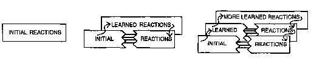
يمكننا استخدام هذه الطريقة لتشكيل مجتمع المزيد الهرمي الخاص بنا:
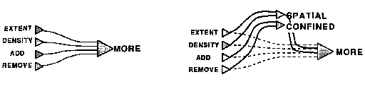
الآن دعونا نرسم هذا في شكل آخر، كما لو أنه لا يوجد مجال لوضع عملاء جدد بين العملاء الأقدم.
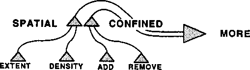
وبينما نجمع المزيد من الوكلاء ذوي المستوى المنخفض والطبقات المتوسطة الإضافية لإدارتهم، ينمو هذا إلى التسلسل الهرمي متعدد المستويات الذي رأيناه من قبل.
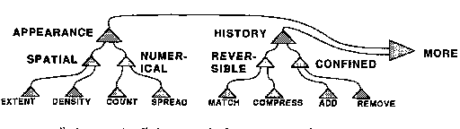
لا يمكن دائمًا للخلايا العصبية الموجودة في دماغ الحيوان أن تتحرك جانبًا لإفساح المجال لخلايا إضافية. لذلك، قد يكون من الضروري بالفعل وضع هذه الطبقات الجديدة في مكان آخر، وموصولة بحزم من أسلاك التوصيل. وفي الواقع، لا يوجد جانب من تشريح الدماغ أكثر إثارة للدهشة من كتلته الضخمة من حزم الوصلات.
�أ يوم السحب البحرية المرقطة. تناغمت العبارة مع اليوم والمشهد في وتر حساس. كلمات. هل كانت ألوانهم؟ لقد سمح لها بالتوهج والتلاشي، لونًا بعد لون؛ لون شروق الشمس الذهبي، واللون الخمري والأخضر لبساتين التفاح، والأمواج اللازوردية، وصوف السحب الرمادي. لا، لم تكن ألوانهم؛ لقد كان اتزان وتوازن الفترة نفسها. فهل أحب إذن الصعود والهبوط الإيقاعي للكلمات أكثر من ارتباطها بالأسطورة واللون؟ أم أنه، لكونه ضعيف البصر وخجول العقل، كان يستمد متعة أقل من انعكاس العالم المعقول المتوهج من خلال منظور لغة كثيرة الألوان وغنية القصص مقارنة بالتأمل في عالم داخلي من المشاعر الفردية التي تنعكس بشكل مثالي في نثر دوري مرن وواضح؟
� جيمس جويس
ما هو النوع المحتمل من الأحداث الدماغية التي يمكن أن تتوافق مع أي شيء مثل معنى كلمة عادية؟ عندما تقول "أحمر"، فإن أحبالك الصوتية تطيع أوامر "عوامل النطق" في دماغك، والتي تجعل عضلات الصدر والحنجرة تتحرك لإنتاج هذا الصوت المميز. ويجب على هؤلاء العملاء بدورهم أن يتلقوا الأوامر من مكان آخر، حيث يستجيب العملاء الآخرون للإشارات الواردة من أماكن أخرى. كل تلك "الأماكن" يجب أن تشتمل على أجزاء من مجتمع ما ذو قوى عقلية.
من السهل تصميم آلة لمعرفة متى يكون هناك شيء أحمر: ابدأ بأجهزة استشعار تستجيب لألوان مختلفة من الضوء، وقم بتوصيل تلك الأكثر حساسية للون الأحمر بـ "عامل أحمر" مركزي، وإجراء تصحيحات للون إضاءة المشهد. يمكننا أن نجعل هذه الآلة تبدو وكأنها "تتكلم" عن طريق ربط كل عامل لون بجهاز ينطق الكلمة المقابلة. وبعد ذلك، يمكن لهذه الآلة تسمية الألوان التي تراها، بل وتمييز المزيد من الأشكال أكثر مما يستطيع الأشخاص العاديون تمييزه. ولكن سيكون من قبيل السخرية أن نطلق على هذا "المشهد"، لأنه ليس سوى كتالوج يسرد الكثير من النقاط الملونة. لن تشارك أي فكرة إنسانية عما تعنيه الألوان بالنسبة لنا، لأنه بدون بعض الإحساس بالملمس والشكل وغير ذلك الكثير، سيكون لديها القليل من صفات صورنا وأفكارنا البشرية.
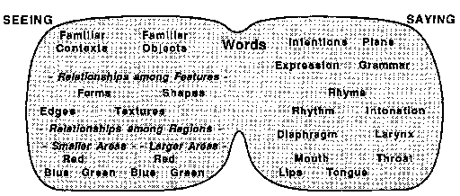
وليس المقصود من هذا تصوير بنية أي مجتمع معين، ولكن فقط اقتراح مجموعة متنوعة من الوكالات المعنية.
بالطبع لا يمكن لأي مخطط صغير أن يلتقط أكثر من جزء من أفكار أي شخص حقيقي حول العالم. لكن لا ينبغي أن يُفهم من هذا أنه لا يمكن لأي آلة أن تمتلك نطاق الحساسيات الذي يمتلكه البشر. إنه يعني فقط أننا لسنا كذلك بسيط الآلات؛ في الواقع، ينبغي لنا أن نفهم أننا عندما نتعلم فهم خصائص الآلات الضخمة، فإننا لا نزال في العصور المظلمة. وعلى أية حال، لا يمكن للرسم البياني إلا أن يوضح مبدأ: لا يمكن أن يكون هناك أي طريقة مدمجة لتمثيل جميع تفاصيل المجتمع العقلي الكامل النمو. للحديث عن مثل هذه الأمور المعقدة، لا يسعنا إلا أن نلجأ إلى الحيل اللغوية التي تجعل عقول مستمعينا تستكشف العوالم الموجودة داخل أنفسهم.
فالدماغ محبوس داخل الجمجمة، وهو مكان صامت ومظلم وساكن؛ كيف يمكن أن يتعلم ما هو عليه في الخارج؟ سطح الدماغ نفسه ليس لديه أدنى حاسة اللمس؛ ليس لديه جلد ليشعر به؛ إنه فقط متصل للبشرة. ولا يستطيع العقل أن يرى لأنه ليس له عيون. إنه كذلك متصل إلى العيون. إن المسارات الوحيدة من العالم إلى الدماغ هي حزم من الأعصاب كتلك التي تأتي من العينين والأذنين والجلد. كيف تؤدي الإشارات التي تأتي عبر تلك الأعصاب إلى إحساسنا "بالوجود" في العالم الخارجي؟ والجواب هو أن هذا المعنى وهم معقد. نحن لا نصنع أي شيء في الواقع مباشر الاتصال مع العالم الخارجي. وبدلاً من ذلك، فإننا نعمل مع نماذج للعالم الذي نبنيه داخل أدمغتنا. تحاول الأقسام القليلة التالية رسم كيفية تحقيق ذلك.
يحتوي سطح الجلد على عدد لا يحصى من عوامل استشعار اللمس، وتحتوي شبكية العين على مليون كاشف صغير للضوء. يعرف العلماء الكثير عن كيفية إرسال هذه المستشعرات إشارات إلى الدماغ. لكننا لا نعرف سوى القليل عن الكيفية التي تؤدي بها هذه الإشارات إلى أحاسيس اللمس والبصر. جرب هذه التجربة البسيطة:
ماذا كان شعورك؟ يبدو من المستحيل الإجابة على ذلك لأنه نادرًا ما يكون هناك ما يمكن قوله. الآن قم بتجربة مختلفة:
أي اللمستين تبدوان أكثر تشابهاً؟ يبدو أن الإجابة على هذا السؤال أسهل بكثير: يمكن للمرء أن يقول إن لمسات الأذن تبدو أكثر تشابهاً. من الواضح أنه نادرًا ما يمكن للمرء أن يقول أي شيء عن "إحساس واحد" في حد ذاته، ولكن يمكننا في كثير من الأحيان أن نقول أكثر من ذلك بكثير عندما نتمكن من إجراء المقارنات.
لنتأمل هنا التشبيه بكيفية تعامل الرياضيات مع "النقطة المثالية". لا ينبغي لنا أن نتحدث عن شكلها؛ إنه ببساطة ليس له شكل! ولكن بما أننا اعتدنا على الأشياء على أنها ذات أشكال، فلا يمكننا إلا أن نفكر في النقاط على أنها مستديرة، مثل "النقاط الصغيرة جدًا". وبالمثل، لم يكن من المفترض أن نتحدث عن حجم النقطة - لأن النقاط الرياضية، بحكم تعريفها، ليس لها حجم. ومع ذلك، لا يسعنا إلا أن نعتقد، على أية حال، "أنهم صغيرون للغاية".
في الواقع، ليس هناك أي شيء على الإطلاق يمكن قوله عن نقطة واحدة، باستثناء كيفية ارتباطها بنقاط أخرى. وهذا ليس لأن مثل هذه الأشياء معقدة للغاية بحيث لا يمكن تفسيرها، ولكن لأنها بسيطة للغاية بحيث لا يمكن تفسيرها. لا يمكن للمرء حتى أن يتحدث عن مكان وجود نقطة ما، في حد ذاته، لأن عبارة "أين" ليس لها معنى إلا فيما يتعلق بنقاط أخرى في الفضاء. ولكن بمجرد أن نعرف بعض أزواج من النقاط، يمكننا ربطها بالخطوط التي تربط بينها، ومن ثم يمكننا تحديد نقاط جديدة ومختلفة حيث قد تتقاطع أزواج مختلفة من الخطوط. تكرار هذا يمكن أن يولد عوالم كاملة من الهندسة. بمجرد أن نفهم الحقيقة المرعبة المتمثلة في أن النقاط ليست شيئًا في حد ذاتها ولكنها موجودة فقط فيما يتعلق بنقاط أخرى، فيمكننا أن نتساءل، كما فعل أينشتاين، ما إذا كان الزمان والمكان أكثر من مجرد مجتمعات واسعة من القرب.
وبنفس الطريقة، ليس هناك الكثير مما يمكن قوله عن أي "لمسة واحدة" أو عما يفعله أي عامل منفرد للكشف عن الحواس. ومع ذلك، هناك الكثير مما يمكن قوله عن العلاقات بين ملامستين أو أكثر للجلد، وذلك لأن كلما اقتربت بقعتان جلديتان من بعضهما، زاد عدد مرات لمسهما في نفس الوقت.
السبب الذي يجعل بشرتنا تشعر به هو أننا مبنيون على عدد لا يحصى من الأعصاب التي تمتد من كل بقعة جلدية إلى الدماغ. بشكل عام، يتم توصيل كل زوج من الأماكن القريبة على الجلد بأماكن قريبة في الدماغ. وذلك لأن تلك الأعصاب تميل إلى العمل في حزم من الألياف المتوازية، بشكل أو بآخر على النحو التالي:
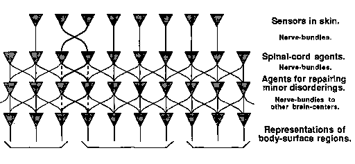
تتضمن كل تجربة حسية نشاط العديد من أجهزة الاستشعار المختلفة. بشكل عام، كلما زاد المدى الذي يثير فيه منبهان نفس أجهزة الاستشعار، كلما زاد تشابه الحالات العقلية الجزئية التي تنتجها تلك المنبهات - وكلما "بدت" تلك المنبهات أكثر تشابهًا، وذلك ببساطة لأنها تميل إلى أن تؤدي إلى عواقب عقلية مماثلة.
وفي حالة تساوي الأمور الأخرى، فإن التشابه الواضح بين اثنين من المحفزات سيعتمد على المدى الذي تؤدي به إلى أنشطة مماثلة في وكالات أخرى.
حقيقة أن الأعصاب من الجلد إلى الدماغ تميل إلى العمل في حزم متوازية تعني أن تحفيز البقع القريبة من الجلد سيؤدي عادة إلى أنشطة مماثلة إلى حد ما داخل الدماغ. في القسم التالي سنرى كيف يمكن لهذا أن يمكّن وكالة داخل الدماغ من اكتشاف التخطيط المكاني للجلد. على سبيل المثال، عندما تحرك إصبعك على جلدك، يتم تحفيز نهايات عصبية جديدة، ومن الآمن افتراض أن الوافدين الجدد يمثلون بقعًا من الجلد على طول الحافة المتقدمة لإصبعك.
ومع توفر ما يكفي من هذه المعلومات، يمكن لوكالة مصممة بشكل مناسب أن تجمع ما يشبه الخريطة لتمثيل البقع القريبة من بعضها البعض على الجلد. ولأن هناك العديد من الشذوذات في مسارات الحزيمة العصبية من الجلد إلى الدماغ، فإن الهيئات التي تنشئ هذه الخرائط لابد أن تكون قادرة على "ترتيب الأمور". على سبيل المثال، يتعين على الهيئات المسؤولة عن رسم الخرائط أن تتعلم كيفية تصحيح نوع التقاطع الموضح في الرسم البياني. ولكن هذه ليست سوى بداية المهمة. للطفل، التعلم عن العالم المكاني وَرَاءَ الجلد رحلة تمتد على مدى سنوات عديدة.
لقد رأينا أن لمس البقع القريبة من الجلد عادة ما يؤدي إلى أحاسيس مماثلة: وذلك لأن الأعصاب المقابلة تعمل في مسارات متوازية وبالتالي تسبب أنشطة مماثلة داخل الدماغ. والعكس عادة ما يكون صحيحاً: فكلما كان الإحساسان أكثر تشابهاً، كلما كانت أصولهما أقرب إلى الجلد. وهذا له نتيجة مهمة:
يمكن للمسارات العصبية التي تحافظ على علاقات القرب الجسدي لمستشعرات الجلد لدينا أن تسهل على الوكالات الداخلية اكتشاف القرب المقابل حول العالم الخارجي للفضاء.
إن تحريك يدك على كائن ما يخبرك بشيء عن شكل هذا الكائن. تخيل ما يجب أن يحدث عندما يحرك طفل صغير يده على جسم ما: كل حركة متواصلة تنتج سلسلة من الإشارات التي يستشعرها الجلد. وبمرور الوقت، يمكن لوكلاء رسم الخرائط المختلفين استخدام هذه المعلومات أولاً ليتعلموا ببساطة أي بقع الجلد هي الأقرب لبعضها البعض. وفي وقت لاحق، يمكن لطبقات أخرى من عوامل رسم الخرائط أن تتعرف على البقع الجلدية التي تكمن فيها بين الذي غيره؛ ويجب أن يكون هذا سهلاً أيضًا، لأن معظم الحركات صغيرة الحجم تميل إلى السير في خطوط مستقيمة تقريبًا. ولكن بما أن الفضاء نفسه هو مجرد مجتمع من علاقات القرب بين الأماكن، فهذه هي كل المعلومات التي نحتاجها "لإعادة بناء" البنية المكانية للجلد. كل هذا يتوافق مع المبدأ الأساسي للرياضيات:
لنفترض أنك ضائع في مكان مجهول، ولم يكن بإمكانك سوى معرفة أزواج النقاط القريبة من بعضها البعض. سيكون ذلك كافيًا بالنسبة لك لمعرفة الكثير عن الفضاء. ومن هذا وحده، يمكنك استنتاج ما إذا كنت في عالم ذي بعدين أو ثلاثة أبعاد. يمكنك معرفة أين توجد العوائق والحدود والثقوب والأنفاق والجسور وما إلى ذلك. يمكنك معرفة التخطيط العالمي لهذا العالم من خلال تلك الأجزاء المحلية من المعلومات حول القرب.
إنها لحقيقة رائعة أنه من حيث المبدأ، يمكن للمرء أن يستنتج الجغرافيا العالمية للفضاء من لا شيء أكثر من تلميحات حول أزواج النقاط التي تقع بالقرب من بعضها البعض! لكن إنشاء مثل هذه الخرائط أمر آخر، ولا أحد يعرف حتى الآن كيف يقوم الدماغ بذلك. لتصميم آلة لإنجاز مثل هذه المهام، يمكن للمرء أن يبدأ بطبقة من "عوامل الارتباط"، واحدة لكل رقعة صغيرة من الجلد، كل منها مصمم لاكتشاف البقع الجلدية الأخرى التي غالبًا ما يتم إثارةها في نفس الأوقات تقريبًا؛ سيتم بعد ذلك تعيينها على أنها الأقرب. يمكن لطبقة ثانية من العوامل المماثلة أن تبدأ بعد ذلك في رسم خرائط لمناطق أكبر، وستقوم العديد من هذه الطبقات في النهاية بتجميع سلسلة من الخرائط بمقاييس مختلفة، لتمثيل عدة مستويات من التفاصيل.
إذا قام العقول بشيء من هذا القبيل، فقد يسلط الضوء على مشكلة أزعجت بعض الفلاسفة: "لماذا نتفق جميعًا على شكل العالم الخارجي للفضاء؟" لماذا لا يفسر الأشخاص المختلفون الفضاء بطرق مختلفة وغريبة؟ من حيث المبدأ، من الممكن رياضيًا لكل شخص أن يستنتج، على سبيل المثال، أن العالم ثلاثي الأبعاد - وليس ثنائي أو رباعي الأبعاد - فقط من خلال الخبرة الكافية مع أزواج النقاط القريبة. ومع ذلك، إذا تم خلط الأسلاك من الجلد إلى الدماغ وخلطها كثيرًا، فمن المحتمل أننا لن نتمكن من تقويمها أبدًا لأن الحسابات الفعلية للقيام بمثل هذه الأشياء ستكون خارج قدراتنا.
هذه الصعوبة [وضع التعاريف] ومما يزيده ضرورة شرح الكلمات باللغة نفسها، إذ غالباً ما تكون هناك كلمة واحدة فقط لفكرة واحدة؛ وعلى الرغم من أنه قد يكون من السهل ترجمة كلمات مثل مشرق؛ الحلو، المالح، المر، إلى لغة أخرى، ليس من السهل شرحها.
� صامويل جونسون
تعتمد طرق تفكيرنا جزئيًا على الطريقة التي نشأنا بها. لكن في البداية، يعتمد الكثير على التوصيلات الموجودة في أدمغتنا. كيف تعمل هذه الميزات المجهرية على التأثير على ما يحدث في عوالمنا العقلية؟ الجواب هو تتشكل أفكارنا إلى حد كبير من خلال الأشياء التي تبدو أكثر تشابهًا. ما هي الألوان التي تبدو أكثر تشابهاً؟ ما هي الأشكال والأشكال، ما هي الروائح والأذواق، ما هي الأخشاب، النغمات، الآلام والأوجاع، ما هي المشاعر والأحاسيس التي تبدو أكثر تشابهاً؟ مثل هذه الأحكام لها تأثير كبير في كل مرحلة من مراحل النمو العقلي ما نتعلمه يعتمد على كيفية تصنيفنا.
على سبيل المثال، الطفل الذي صنف كل حريق حسب لون ضوءه فقط قد يتعلم الخوف من كل شيء ذو لون برتقالي. ثم نشكو من أن الطفل قد عمم أكثر من اللازم. ولكن إذا قام ذلك الطفل بتصنيف كل لهب، بدلًا من ذلك، من خلال ميزات لم تكن متماثلة أبدًا، فغالبًا ما سيحترق هذا الطفل - وسوف نشكو من أن هذا لم يتم تعميمه بما فيه الكفاية.
تزود جيناتنا أجسامنا بأنواع عديدة من أجهزة الاستشعار، وهي عوامل خارجية للكشف عن الأحداث، يرسل كل منها إشارات إلى الجهاز العصبي عندما يكتشف حالات فيزيائية معينة. لدينا عوامل حسية في أعيننا وآذاننا وأنفنا وفمنا تميز الضوء والصوت والروائح والأذواق. لدينا عوامل في الجلد تستشعر الضغط واللمس والاهتزاز والحرارة والبرودة؛ ولدينا عوامل داخلية تستشعر التوترات في عضلاتنا وأوتارنا وأربطةنا؛ ولدينا العديد من أجهزة الاستشعار الأخرى التي عادة لا ندركها، مثل تلك التي تكتشف اتجاه الجاذبية وتستشعر كميات المواد الكيميائية المختلفة في أجزاء مختلفة من الجسم.
العوامل التي تستشعر ألوان الضوء في عيون الإنسان أكثر تعقيدًا بكثير من "عوامل الاحمرار" في آلة الألعاب لدينا. لكن هذا ليس هو السبب وراء عدم قدرة الآلة البسيطة على فهم ما هو احمرار يعني بالنسبة لنا، إذ لا تستطيع أجهزة الكشف عن الحواس في أعيننا البشرية. فكما أنه ليس هناك ما يمكن قوله عن نقطة واحدة، فليس هناك ما يمكن قوله عن إشارة حسية معزولة. عندما لدينا احمرار, لمس, أو وجع الأسنان يرسل الوكلاء إشاراتهم إلى أدمغتنا، ولا يستطيع كل منهم بمفرده إلا أن يقول: "Fm هنا". أما بقية ما "تعنيه" هذه الإشارات بالنسبة لنا فيعتمد على مدى ارتباطها بجميع وكالاتنا الأخرى.
وبعبارة أخرى، فإن «صفات» الإشارات المرسلة إلى الأدمغة تعتمد فقط على العلاقات، كما هو الحال مع نقاط الفضاء التي ليس لها شكل. هذه هي المشكلة التي واجهها الدكتور جونسون عند إنشاء تعريفات لقاموسه: كل كلمة منفصلة مثل محاولات "مر" أو "مشرق" أو "ملح" أو "حلو" للتحدث عن نوعية إشارة حسية. لكن كل ما يمكن لإشارة منفصلة أن تفعله هو الإعلان عن نشاطها الخاص، ربما مع بعض التعبير عن الشدة. لك سن لا يمكن أن يتألم (يمكنه إرسال الإشارات فقط)؛ فقط أنت يمكن أن تتألم، بمجرد أن تفسر وكالاتك ذات المستوى الأعلى تلك الإشارات. وبعيدًا عن التميز الخام لكل حافز منفصل، فإن جميع الجوانب الأخرى لشخصيته أو جودته - سواء كانت اللمس أو الذوق أو الصوت أو الضوء - تعتمد كليًا على علاقاته مع العوامل الأخرى لعقلك.
كيف نتعلم عن العالم الحقيقي ثلاثي الأبعاد؟ لقد رأينا كيف يمكن لبعض الوكالات أن تحدد مخطط الجلد. ولكن كيف يمكننا أن نتقدم من ذلك لنتعرف على عالم الفضاء وراء الجلد؟ قد يتساءل المرء لماذا لا يستطيع الأطفال ببساطة "النظر حولهم" لمعرفة ما يحدث بالفعل. ولكن من المؤسف أن العبارة السهلة "انظر ببساطة" تخفي العديد من المشاكل الصعبة. عندما تنظر إلى جسم ما، يضيء بعض الضوء منه إلى عينك ويحفز بعض أجهزة الاستشعار هناك. ومع ذلك، فإن كل حركة لجسمك أو رأسك أو عينك تؤدي إلى تغييرات جذرية في الصورة في عينك. كيف يمكننا استخراج أي معلومات مفيدة عندما يتغير كل شيء بهذه السرعة؟ ورغم أنه من الممكن، من حيث المبدأ، تصميم آلة يمكنها في نهاية المطاف أن تتعلم ربط تلك الحركات بالتغيرات الناتجة في الصور، فإن هذا سيستغرق بالتأكيد وقتا طويلا، ويبدو أن أدمغتنا تطورت بآليات خاصة تساعدنا على التعويض عن حركات الجسم والرأس والعين. وهذا يسهل على الوكالات الأخرى تعلم كيفية استخدام المعلومات المرئية. سنناقش لاحقًا بعض مجالات التفكير الأخرى التي نستخدم فيها القياسات والاستعارات لتغيير "وجهات نظرنا". ربما تطورت تلك القدرات الرائعة بطرق مماثلة، لأن إدراك أن الشيء هو نفسه عندما يُرى من وجهات نظر مختلفة لا يختلف كثيرًا عن القدرة على "تخيل" أشياء ليست في متناول اليد على الإطلاق.
على أي حال، نحن حقا لا نفهم كيف يتعلم الطفل فهم الفضاء. ربما نبدأ بإجراء العديد من التجارب الصغيرة التي تؤدي إلى رسم خرائطنا الأولية الأولى للجلد. بعد ذلك، قد نبدأ في ربط ذلك بحركات أعيننا وأطرافنا؛ من المرجح أن حدثين مختلفين يؤديان إلى أحاسيس مماثلة قد مرا عبر نفس المواقع في الفضاء. ستكون الخطوة الحاسمة هي تطوير بعض العوامل التي "تمثل" بضعة "أماكن" خارج الجلد. بمجرد إنشاء تلك الأماكن (قد تكون الأماكن الأولى بالقرب من وجه الرضيع)، يمكن للمرء أن ينتقل إلى مرحلة أخرى: تجميع قوة تمثل شبكة من العلاقات، والمسارات، والاتجاهات بين تلك الأماكن. وبمجرد إنجاز ذلك، يمكن أن تستمر الشبكة في التوسع لتشمل أماكن وعلاقات جديدة.
ومع ذلك، فإن هذه ستكون البداية فقط. منذ زمن طويل، لاحظ علماء النفس مثل فرويد وبياجي أن الأطفال يبدو أنهم يلخصون تاريخ علم الفلك: في البداية يتخيلون العالم وكأنه يتمحور حول أنفسهم، وفقط في وقت لاحق يبدأون في النظر إلى أنفسهم وكأنهم يتحركون داخل عالم ثابت، حيث يكون الجسم مثل أي جسم آخر. ويستغرق الوصول إلى تلك المرحلة عدة سنوات، وحتى في سنوات مراهقتهم، لا يزال الأطفال يقومون بتحسين قدراتهم على تصور كيف تظهر الأشياء من وجهات نظر أخرى.
وسيكون من الرائع لو تمكنا من تصنيف جميع السلوكيات إلى نوعين: � مدمج � و "تعلمت." ولكن ببساطة لا توجد حدود واضحة بين الوراثة والبيئة. لاحقًا، سأصف الوكالة التي من المؤكد أنها ستتعلم شيئًا واحدًا محددًا: للتعرف على البشر. ولكن إذا كان مقدراً لمثل هذه الوكالة أن تنتهي إلى سلوك معين معين، فهل من المعقول أن نقول إنها تتعلم؟ وبما أن هذا النوع من النشاط يبدو أنه ليس له اسم شائع، فسوف نسميه "التعلم المقدر مسبقًا". �
يتعلم كل طفل في النهاية كيفية الوصول إلى الطعام. من المؤكد أن كل طفل مختلف يعيش عبر تاريخ مختلف من تجارب "الوصول إلى الفعل". ومع ذلك، وفقًا لنظريتنا حول "نماذج القرب من الفضاء"، فإن كل هؤلاء الأطفال سينتهي بهم الأمر إلى نتائج مماثلة بشكل عام لأن هذه النتيجة مقيدة بعلاقات القرب من الفضاء في العالم الحقيقي. لماذا نجعل الدماغ يستخدم عملية تعلم مملة عندما تبدو النتيجة النهائية واضحة جدًا؟ لماذا لا نبني الجواب وراثيا؟ قد يكون أحد الأسباب هو أن التعلم أكثر اقتصادا. وسوف يتطلب الأمر مخزناً هائلاً من المعلومات الجينية لإجبار كل خلية عصبية منفصلة على إجراء التوصيلات الصحيحة على وجه التحديد، في حين سيتطلب الأمر قدراً أقل بكثير من المعلومات لتحديد بناء آلة تعلم مصممة لتفكيك أي خلل قد ينتج عن تصميم أقل تقييداً.
ولهذا ليس من المعقول أن نسأل «هل مفهوم الطفل للمكان مكتسب أم موروث؟». إننا نكتسب مفاهيمنا عن الفضاء باستخدام الوكالات التي تتعلم وفقًا للعمليات التي تحددها الوراثة. تشرع هذه الوكالات في التعلم من الخبرة، لكن نتائج عمليات التعلم الخاصة بها يتم تحديدها فعليًا من خلال الهندسة المكانية لأجزاء الجسم. هذا النوع من الخليط من التكيف والأقدار شائع جدًا في علم الأحياء، ليس فقط في نمو الدماغ، بل في نمو بقية الجسم أيضًا. كيف، على سبيل المثال، تتحكم جيناتنا في أشكال وأحجام عظامنا؟ وقد تبدأ ببعض المواصفات الدقيقة نسبيًا لأنواع ومواقع بعض الخلايا المبكرة. ولكن هذا وحده لن يكون كافيا للحيوانات التي يتعين عليها أن تتكيف مع الظروف المختلفة؛ ولذلك يجب برمجة تلك الخلايا المبكرة نفسها للتكيف مع التأثيرات الكيميائية والميكانيكية المختلفة التي قد تُفرض عليها لاحقًا. تعتبر هذه الأنظمة ضرورية لتطورنا، حيث يجب أن تصبح أعضائنا قادرة على أداء العديد من الأنشطة المقيدة بشدة، وفي الوقت نفسه تكون قادرة على التكيف مع الظروف المتغيرة.
ولعل نمو مجتمع المزيد هو مثال آخر على التعلم المقدر، لأنه يبدو أنه يتطور في كل طفل عادي دون الكثير من المساعدة الخارجية. ويبدو من الواضح أن هذه الوكالة المعقدة لا يتم بناؤها مباشرة عن طريق الجينات الفطرية؛ وبدلاً من ذلك، يكتشف كل منا طرقه الخاصة لتمثيل المقارنات، ومع ذلك نصل جميعًا إلى نفس النتيجة النهائية تقريبًا. ومن المفترض أن تساعد التلميحات الجينية في تحقيق ذلك من خلال توفير طبقات جديدة من العوامل في الأوقات والأماكن المناسبة تقريبًا.
لنقم بتجربة أخرى: المس أذنًا واحدة ثم المس أنفك. إنهم لا يشعرون بالتشابه الشديد. الآن المس أذن واحدة ثم الأخرى. تبدو هذه اللمسات أكثر تشابهًا، على الرغم من أنها متباعدة بمقدار الضعف. قد يكون هذا جزئيًا لأنهم ممثلون في الوكالات ذات الصلة. في الواقع، تحتوي أدمغتنا على العديد من أزواج الوكالات، مرتبة مثل صور المرآة، مع وجود حزم ضخمة من الأعصاب التي تعمل فيما بينها.
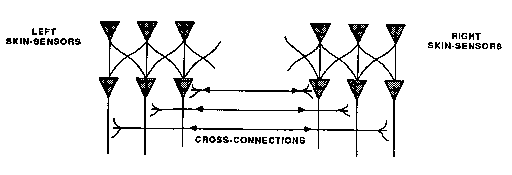
يبدو نصفا الدماغ متشابهين إلى درجة أنه كان من المفترض منذ فترة طويلة أنهما متطابقان. ثم وجد أنه بعد تدمير تلك الروابط، عادةً ما يتمكن الدماغ الأيسر فقط من التعرف على الكلمات أو التحدث بها، بينما يستطيع الدماغ الأيمن فقط رسم الصور. وفي الآونة الأخيرة، عندما وجدت الأساليب الحديثة اختلافات أخرى بين تلك الجوانب، يبدو لي أن بعض علماء النفس أصيبوا بالجنون وحاولوا مطابقة هذه الاختلافات مع كل نظرية عقلية ذات جزأين تم تصورها على الإطلاق. وسرعان ما أصبحت ثقافتنا مفتونة بهذا الإحياء لفكرة قديمة في مظهر حديث: وهي أن عقولنا تلتقي مع أزواج من المبادئ المتناقضة. على جانب واحد يقف المنطقي، على الجانب الآخر من التناظري. الدماغ الأيسر عقلاني. الجانب الأيمن عاطفي. لا عجب أن الكثيرين استغلوا هذا المخطط العلمي الزائف: فهو أعطى حياة جديدة لكل فكرة ميتة تقريبًا عن كيفية تقسيم العالم العقلي إلى نصفين بشكل جيد مثل الخوخة.
الخطأ في هذا هو أن كل دماغ لديه كثير أجزاء، وليس اثنين فقط. وعلى الرغم من وجود العديد من الاختلافات، يجب علينا أيضًا أن نتساءل عن سبب التشابه الكبير بين نصفي الدماغ الأيسر والأيمن. ما هي الوظائف التي يمكن أن يخدمها هذا؟ لسبب واحد، نحن نعلم أنه عندما تتضرر منطقة رئيسية في الدماغ لدى شاب، يمكن لمنطقة المرآة في بعض الأحيان أن تتولى وظيفتها. ربما حتى في حالة عدم وجود إصابة، يمكن للوكالة التي استهلكت كل المساحة المتاحة في حيها أن تتوسع إلى منطقة المرآة عبر الطريق. نظرية أخرى: يمكن أن يكون زوج من الوكالات المعكوسة مفيدًا لإجراء المقارنات والتعرف على الاختلافات، لأنه إذا تمكن أحد الجانبين من عمل نسخة من حالته على الجانب الآخر، فيمكنه، بعد القيام ببعض العمل، مقارنة تلك الحالات الأولية والنهائية لمعرفة التقدم الذي تم إحرازه.
نظريتي الخاصة عما يحدث عندما يتم تدمير الروابط المتقاطعة بين نصفي الدماغ هي أننا، في بداية الحياة، نبدأ بقوى متشابهة في الغالب على كلا الجانبين. لاحقًا، عندما نصبح أكثر تعقيدًا، تؤدي مجموعة من التأثيرات الجينية والظرفية إلى سيطرة أحد الزوجين على كليهما. وإلا فقد نصاب بالشلل بسبب الصراعات، لأن العديد من العملاء سيضطرون إلى خدمة سيدين. وفي نهاية المطاف، فإن المديرين البالغين للعديد من المهارات يميلون إلى التطور على جانب الدماغ الأكثر اهتمامًا باللغة، لأن تلك الوكالات تتصل بعدد كبير بشكل غير عادي من الوكالات الأخرى. وسوف يستمر الجانب الأقل سيطرة من الدماغ في التطور، ولكن مع وظائف إدارية أقل، وينتهي به الأمر بالمزيد من مهاراتنا ذات المستوى الأدنى، ولكن مع مشاركة أقل في الخطط والأهداف الأعلى مستوى التي تشرك العديد من الوكالات في وقت واحد. ثم إذا ما ترك ذلك النصف من الدماغ، بالصدفة، لنفسه، فإنه سيبدو أكثر صبيانية وأقل نضجا لأنه متخلف كثيرا في النمو الإداري.
هذا الانبهار بالنصفين الأيسر والأيمن، من جانب عامة الناس والعلماء، ليس بالأمر الجديد حقًا. إنه أحد أعراض كيفية اكتسابنا لأزواج مختلفة من الكلمات التي يقسم كل منها جانبًا ما من العالم إلى أقطاب متعارضة.
�
هذه الانقسامات كلها بها عيوب، ولكنها غالبًا ما تمنحنا طرقًا مفيدة للتفكير. يعد تقسيم الأشياء إلى قسمين طريقة جيدة للبدء، ولكن يجب على المرء دائمًا أن يحاول العثور على بديل ثالث على الأقل. إذا لم يتمكن المرء من ذلك، فينبغي عليه أن يشك في أنه قد لا تكون هناك فكرتان على الإطلاق، بل فكرة واحدة فقط، مع شكل من أشكال التناقض. المشكلة الخطيرة في هذه الأشكال المكونة من جزأين هي أن الكثير منها متشابه تمامًا، مما يقودنا إلى إجراء تشبيهات خاطئة. فكر في كيفية قيام الأزواج أدناه، والتي تنقسم فيها كل نفس إلى قسمين، بالجميع إلى الاعتقاد بأنهم يشتركون في وحدة مشتركة.
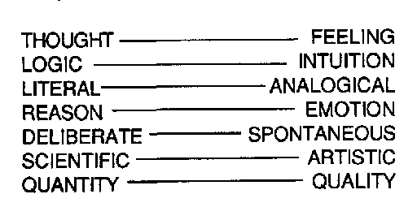
يُنظر إلى العناصر الموجودة على اليسار على أنها موضوعية وميكانيكية محايدة ولا توجد إلا داخل الرأس. نحن نعتقد أن الفكر ورفاقه دقيقون، لكنهم جامدون وغير حساسين. يُنظر إلى العناصر الموجودة على اليمين على أنها أمور تتعلق بالقلب، فهي حيوية ودافئة وفردية؛ نحب أن نعتقد أن الشعور هو الحكم الأفضل على الأشياء التي يجب أن تكون ذات أهمية أكبر. العقل الهادئ، في حد ذاته، يبدو غير شخصي للغاية، وبعيدًا جدًا عن الجسد؛ تقع العاطفة بالقرب من القلب، لكنها أيضًا يمكن أن تكون غادرة عندما تنمو بقوة لدرجة أن العقل يطغى تمامًا.
ما أروع هذه الاستعارة! كيف يمكن أن تعمل بشكل جيد، ما لم يكن لديها بعض الحقيقة الأساسية؟ لكن مهلا: عندما تظهر أي فكرة بسيطة تشرح أشياء كثيرة، يجب أن نشك في وجود خدعة. قبل أن ننجرف إلى مخططات الدمبل، نحن مدينون لأنفسنا بمحاولة فهم جاذبيتها الغريبة، حتى لا ننخدع، كما قال وردزورث،
. .
. بعض القوة الثانوية الزائفة، والتي من خلالها،
في الضعف، نصنع التمييز
اعتبر أن حدودنا الهزيلة هي أشياء
الذي ندركه، وليس الذي صنعناه.
كم مرة في حياتي شعرت بخيبة الأمل من الواقع، لأنني في ذلك الوقت كنت كان عند ملاحظته، فإن مخيلتي، العضو الوحيد الذي يمكنني من خلاله الاستمتاع بالجمال، لم تكن قادرة على العمل، بموجب القانون الذي لا يرحم والذي يقضي بأنه لا يمكن تخيل إلا ما هو غائب.
� مارسيل بروست
طفلنا، الذي يلعب ببعض المكعبات وسيارة لعبة، يبني هذا الهيكل. دعونا نسميها أ كتلة القوس.
�
كتلتان واقفتان وكتلة مستلقية.
كتلة القوس يبدو أنه يسبب ظاهرة جديدة غريبة: عندما تدفع السيارة من خلالها، تنحصر ذراعك! ومن ثم، لإكمال هذا الإجراء، يجب عليك تحرير السيارة والوصول إلى الجانب الآخر من القوس، ربما عن طريق تغيير اليدين. يصبح الطفل مهتمًا بهذا "تغيير اليد". ظاهرة وعجائب كيف كتلة القوس يسبب ذلك. وسرعان ما يجد الطفل بنية أخرى تبدو مشابهة، باستثناء ذلك تغيير اليد يختفي لأنك لا تستطيع حتى دفع السيارة من خلاله. ومع ذلك فإن كلا الهيكلين يتناسبان مع نفس الوصف!
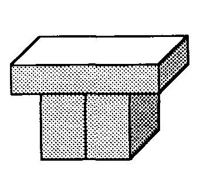
كتلتان واقفتان وكتلة مستلقية.
ولكن إذا كتلة القوس الأسباب تغيير اليد، إذًا لا يمكن أن يكون هذا بمثابة قوس كتلة. لذلك يجب على الطفل أن يجد طريقة ما لتغيير الوصف العقلي له كتلة القوس لذلك لن ينطبق على هذا. ما هو الفرق بينهما؟ وربما يرجع السبب في ذلك إلى أن تلك الكتل الواقفة تتلامس الآن مع بعضها البعض، في حين أنها لم تتلامس من قبل. يمكننا التكيف مع هذا عن طريق تغيير وصفنا لـ Block-Arch: يجب أن يكون هناك كتلتان قائمتان وكتلة مستلقية. يجب ألا تلمس الكتل الدائمة ولكن حتى هذا لا يكفي، لأن الطفل سرعان ما يجد بنية أخرى تطابق هذا الوصف. وهنا أيضاً، تغيير اليد اختفت الظاهرة؛ الآن أنت يستطيع ادفع السيارة من خلالها دون أن تتركها!
�
كتلتين قائمتين وكتلة ربط.
يجب ألا تلمس الكتل الدائمة.
يجب أن يدعموا كتلة الربط.
مرة أخرى، يجب علينا تغيير وصفنا لمنع اعتبار هذا أمرًا كتلة القوس. وأخيراً يكتشف الطفل شكلاً آخر يفعل ينتج تغيير اليد:
�
كتلتين قائمتين وشيء آخر.
يجب ألا تلمس الكتل الدائمة.
يجب عليهم دعم الشيء الآخر.
والشيء الآخر قد يكون إسفين أو كتلة.
لقد بنى طفلنا لنفسه مفهومًا مفيدًا للقوس، يعتمد كليًا على تجربته الخاصة.
ما هو التعلم على أي حال؟ من المؤكد أن هذه الكلمة يصعب تعريفها. الطفل فينا كتلة القوس لقد وجد السيناريو طريقة واحدة للتعرف على معنى واحد لما يعنيه بعض البالغين بـ "القوس". ولكن لا يمكننا أن نفترض أن نفس الأنواع من العمليات تكون متضمنة عندما نتعلم قراءة قصيدة، واستخدام الملعقة، وربط الحذاء. ماذا يحدث عندما يتعلم الشخص القراءة، أو يتعلم جمع الأرقام، أو يتعلم لغة جديدة، أو يتعلم توقع تصرفات صديق، أو يتعلم بناء برج من شأنه أن يقف؟ إذا حاولنا العثور على تعريف واحد لـ "التعلم" يشمل العديد من أنواع العمليات، فسوف ينتهي بنا الأمر إلى عبارة معينة واسعة جدًا بحيث لا يمكن استخدامها كثيرًا مثل هذا:
"التعلم" هو إحداث تغييرات مفيدة في طريقة عمل عقولنا.
والمشكلة هي أننا نستخدم كلمة واحدة "التعلم" لتغطية مجتمع شديد التنوع من الأفكار. مثل هذه الكلمة يمكن أن تكون مفيدة في عنوان كتاب، أو في اسم مؤسسة. ولكن عندما يتعلق الأمر بدراسة الموضوع نفسه، نحتاج إلى مصطلحات أكثر تميزًا لطرق التعلم المهمة والمختلفة. حتى هذا واحد كتلة القوس يكشف المشهد عن أربع طرق مختلفة على الأقل للتعلم. وسنعطيهم هذه الأسماء الجديدة:
� توحيد الإطار الجمع بين عدة أوصاف في وصف واحد، على سبيل المثال، من خلال ملاحظة أن جميع الأقواس لها أجزاء مشتركة معينة
� تراكم جمع الأوصاف غير المتوافقة، على سبيل المثال، من خلال تشكيل عبارة "كتلة أو إسفين".
� إعادة صياغة تعديل طابع الوصف، على سبيل المثال، من خلال وصف الكتل المنفصلة بدلاً من الشكل العام
� تحويل التأطير الربط بين الهياكل والوظائف أو الإجراءات، على سبيل المثال، من خلال ربط مفهوم القوس بفعل تغيير الأيدي
وسيتم شرح هذه الكلمات في الأقسام التالية. يبدو لي أن الكلمات القديمة المستخدمة في علم النفس مثل التعميم، الممارسة، التكييف، الحفظ، أو ربط "إما غامضة جدًا بحيث لا تكون مفيدة أو أصبحت مرتبطة بنظريات ليست سليمة ببساطة". وفي هذه الأثناء، أدت ثورات علوم الكمبيوتر والذكاء الاصطناعي إلى أفكار جديدة حول كيفية عمل أنواع مختلفة من التعلم، وتستحق هذه الأفكار الجديدة أسماء جديدة.
ملكنا كتلة القوس يعتمد السيناريو على برنامج كمبيوتر طوره باتريك وينستون في عام 1970. ويتطلب برنامج وينستون مدرسًا خارجيًا لتقديم الأمثلة وتحديد أي منها يمثل أقواسًا وأيها ليس كذلك. في نسختي غير المبرمجة من هذا، تم استبدال المعلم باهتمام بعض الفاعلية داخل الطفل لحساب ظهور ذلك الغامض تغيير اليد الظاهرة: لماذا تجبرك هياكل معينة على ترك السيارة اللعبة، بينما لا تفعل ذلك هياكل أخرى؟ ومن ثم فإننا نفترض أن الطفل يقوده إلى التعلم بنفسه من أجل تفسير الأحداث الغريبة. قد يشكو المرء من أن هذا يجعل التعلم أكثر صعوبة في الشرح، ويجعله يعتمد على فضول الطفل. ولكن إذا أردنا حقًا أن نفهم كيف تنمو عقولنا، فيجب علينا أولاً أن نواجه الواقع: فالناس لا يتعلمون جيدًا إلا إذا كانوا مهتمين أو مهتمين. النظريات القديمة للتعلم والتذكر لم تصل إلى أبعد من ذلك لأنها في محاولتها المبالغة في التبسيط، فقدت جوانب أساسية من السياق. لن يكون من المفيد أن يكون لدينا نظرية يتم فيها تخزين المعرفة بطريقة أو بأخرى، دون نظرية مقابلة حول كيفية إعادة هذه المعرفة إلى العمل لاحقًا.
الطفل فينا كتلة القوس فحص المشهد العديد من الترتيبات المختلفة للكتل، لكنه انتهى إلى وصفها بأنها متشابهة! كان الإنجاز العظيم هو اكتشاف كيفية وصف جميع الأمثلة المختلفة للقوس باستخدام نفس العبارة، «قمة مدعومة بكتلتين قائمتين لا تتلامسان». سأستخدم الكلمة الجديدة "uniframe" لهذا الوصف الذي تم تصميمه ليتم تطبيقه على عدة أشياء مختلفة في وقت واحد. كيف يمكن للإنسان أن يصنع إطارًا موحدًا؟
طفلنا كتلة القوس تم بناء الإطار الموحد في عدة خطوات - وكل خطوة تستخدم مخططًا تعليميًا مختلفًا! تقوم الخطوة الأولى بتشريح المشهد إلى كتل ذات خصائص وعلاقات محددة؛ وكان بعضهم "يرقد" أو "واقفاً"، وكان البعض يلمسون الآخرين أو يدعمونهم. بعد ذلك، طلبنا من إطارنا الموحد أن يصر على أن يكون الجزء العلوي مقوسًا يجب تكون مدعومة بالكتل الدائمة: دعنا نسمي هذا الإنفاذ. بعد ذلك، طلبنا من إطارنا الموحد أن يرفض الهياكل التي تتلامس فيها الكتلتان القائمتان مع بعضهما البعض؛ يمكننا أن نسمي هذا وقاية: طريقة لتجنب قبول موقف غير مرغوب فيه. أخيرًا، طلبنا من إطارنا الموحد أن يكون محايدًا فيما يتعلق بشكل القمة المقوسة حتى نتجنب إجراء تمييزات لا نعتبرها ذات صلة. دعونا نسمي ذلك تسامح.
كيف يعرف الشخص كيفية اختيار الميزات والعلاقات فرض، منع، أو يسامح ؟ عندما قارنا الهيكلين أدناه، فرضنا العلاقة التي مفادها أن A مدعوم من B وC. لكن فكر في جميع الاختلافات الأخرى التي كان من الممكن التأكيد عليها بدلاً من ذلك.
عموم>
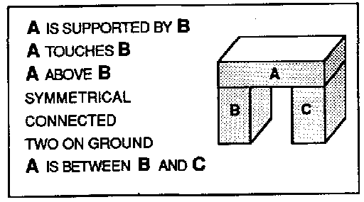 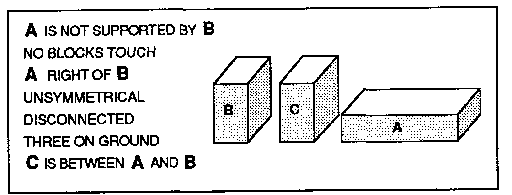
هل كان من الإسراف استخدام واحدة فقط من هذه الحقائق عندما كان بإمكاننا استخدامها جميعًا؟ هل يجب أن نتعلم كيفية استغلال كل المعلومات التي يمكننا الحصول عليها؟ لا! هناك أسباب وجيهة لعدم ملاحظة الكثير، لأن كل حقيقة تبدو أساسية يمكن أن تولد عالمًا من الحقائق عديمة الفائدة، والعرضية، وحتى المضللة.
معظم الاختلافات زائدة عن الحاجة. معظم الباقي عبارة عن حوادث.
على سبيل المثال، لنفترض أننا نعلم بالفعل أن A مدعوم من B. ليست هناك حاجة لتذكر أن A يلمس B أو أن A أعلى من B، لأن هذه أشياء يمكننا اكتشافها. للحصول على نوع مختلف من الأمثلة، لنفترض أننا نعرف أن A كان لا يبدو من غير الضروري إذن أن نتذكر أن "أ كان على يمين ب". فالحس السليم يمكن أن يخبرنا أنه إذا لم يكن أ على ب، فلا بد أنه يقع في مكان آخر. ومع ذلك، على الأقل في السياق الحالي، لا يهم ما إذا كان ذلك "مكان آخر" يقع على اليمين؛ وفي مرة أخرى من المحتمل أن يقع على اليسار. إذا قمنا بتخزين مثل هذه التفاصيل بشكل متهور، فسوف تتشوش عقولنا بالحقائق عديمة الفائدة.
ولكن كيف يمكننا الحكم على الحقائق المفيدة؟ على أي أساس يمكننا أن نقرر ما هي السمات الأساسية وأيها مجرد حوادث؟ مثل هذه الأسئلة لا يمكن الإجابة عليها في وضعها الحالي. ليس لها أي معنى بصرف النظر عن الطريقة التي نريد بها استخدام إجاباتهم. لا يوجد سر واحد أو خدعة سحرية للتعلم؛ علينا ببساطة أن نتعلم لمجتمع كبير طرقًا مختلفة للتعلم!
عندما تصطدم العين أو الخيال بأي عمل غير عادي، فإن الانتقال التالي للعقل النشط هو إلى الوسائل التي تم إنجازه بها.
� صامويل جونسون
لنفترض أن أحد البالغين شاهد طفلنا وقال: "أرى أنك قمت ببناء قوس". ماذا قد يعتقد الطفل أن هذا يعني؟ لتعلم كلمات جديدة أو أفكار جديدة، يجب على المرء إجراء اتصالات مع الهياكل الأخرى في العقل. "أرى أنك قمت ببناء قوس" يجب أن تجعل الطفل يربط كلمة "قوس" بالوكالات التي تجسد أوصاف كل من كتلة القوس و تغيير اليد الظواهر، لأن تلك هي ما يدور في ذهن الطفل.
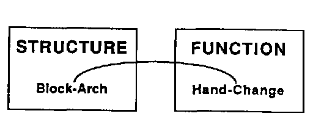
لكن لا يمكن للمرء أن يتعلم ما يعنيه شيء ما بمجرد ربط الأشياء بأسماء. يجب أيضًا استثمار كل فكرة كلمة مع بعض الأسباب والأفعال والأغراض والتفسيرات. فكر في كل الأشياء التي يجب أن تعنيها كلمة مثل "قوس" لأي طفل حقيقي يفهم كيفية عمل الأقواس وكيفية صنعها، وجميع الطرق التي يمكن للمرء استخدامها! لا بد أن الطفل الحقيقي قد لاحظ أيضًا أن الأقواس تشبه أشكالًا مختلفة للعديد من الأشياء الأخرى التي شهدناها من قبل، مثل "جسر بلا طريق"، أو "جدار بباب"، أو "مثل الطاولة"، أو "على شكل حرف U مقلوب". يمكننا استخدام أوجه التشابه هذه للمساعدة في العثور على أشياء أخرى لخدمة أغراضنا: التفكير في القوس كممر، أو ثقب، أو نفق يمكن أن يساعد شخصًا مهتمًا بمشكلة النقل؛ إن وصف القوس بأنه "قمة مرفوعة من الجانبين" يمكن أن يساعد الشخص في الوصول إلى شيء بعيد المنال. أي نوع من الوصف يخدمنا بشكل أفضل؟ ذلك يعتمد على أغراضنا.
من بين أقوى طرق التفكير لدينا هي تلك التي تتيح لنا جمع الأشياء التي تعلمناها في سياقات مختلفة. ولكن كيف يمكن للمرء أن يفكر بطريقتين مختلفتين في وقت واحد؟ عن طريق بناء، في مكان ما داخل العقل، بعض الأقواس من نوع مختلف:
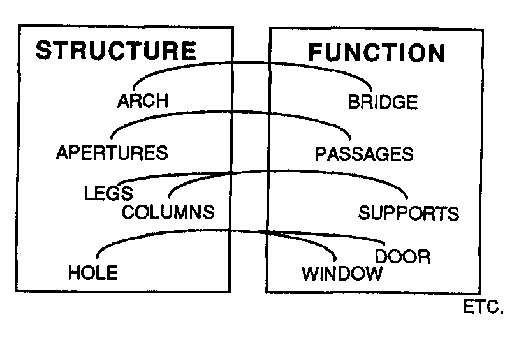
هل هذه استعارة حمقاء للحديث عن بناء الجسور بين الأماكن في العقل؟ أنا متأكد من أنه ليس من قبيل الصدفة أننا في كثير من الأحيان نؤطر أفكارنا من حيث الأشكال المكانية المألوفة. يعتمد الكثير من طريقة تفكيرنا في الحياة اللاحقة على ما نتعلمه في الحياة المبكرة عن عالم الفضاء.
العديد من الأشياء التي نعتبرها جسدية هي في الواقع نفسية. لكي نفهم السبب وراء ذلك، دعونا نحاول أن نقول ما نعنيه بـ "الكرسي". في البداية يبدو كافياً أن نقول:
�أ الكرسي هو شيء له أرجل وظهر ومقعد
ولكن عندما ننظر بعناية أكبر إلى ما نعتبره كراسي، نجد أن العديد منها لا ينطبق عليها هذا الوصف لأنها لا تنقسم إلى تلك الأجزاء المنفصلة. عندما يتم كل شيء، لا يوجد سوى القليل من الأشياء المشتركة بين جميع الكراسي - باستثناء الاستخدام المقصود منها.
�أ الكرسي هو الشيء الذي يمكنك الجلوس عليه
ولكن هذا أيضا يبدو غير كاف: فهو يجعل الأمر يبدو كما لو أن الكرسي لا أهمية له مثل الرغبة. الحل هو أننا بحاجة إلى الجمع بين نوعين مختلفين على الأقل من الأوصاف. من ناحية، نحتاج إلى أوصاف هيكلية للتعرف على الكراسي عندما نراها. وعلى الجانب الآخر نحتاج إلى أوصاف وظيفية لكي نعرف ما نستطيع يفعل مع الكراسي. يمكننا التقاط المزيد مما نعنيه من خلال تشابك الفكرتين. ولكن لا يكفي مجرد اقتراح ارتباط غامض، لأنه لكي يكون له بعض الفائدة، نحتاج إلى تفاصيل أكثر حميمية حول كيف تساعد أجزاء الكرسي هذه الشخص في الواقع على الجلوس. لفهم المعنى الصحيح، نحتاج إلى روابط بين أجزاء هيكل الكرسي ومتطلبات الجسم البشري التي من المفترض أن تخدمها تلك الأجزاء. تحتاج شبكتنا إلى تفاصيل مثل هذه:
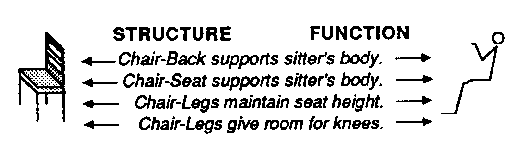
وبدون هذه المعرفة، قد نزحف تحت الكرسي أو نحاول ارتدائه على رؤوسنا. ولكن بهذه المعرفة يمكننا أن نفعل أشياء مذهلة، مثل تطبيق مفهوم الكرسي لنرى كيف يمكننا الجلوس على صندوق، على الرغم من أنه ليس له أرجل أو ظهر!
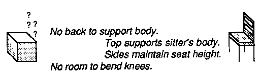
يمكن أن تكون الإطارات الموحدة التي تتضمن هياكل مثل هذه قوية. على سبيل المثال، يمكن استخدام مثل هذه المعرفة حول العلاقات بين البنية والراحة والوضعية لفهم متى يمكن استخدام الصندوق ككرسي: أي فقط عندما يكون ارتفاعه مناسبًا لشخص لا يحتاج إلى مسند ظهر أو مساحة لثني الركبتين. من المؤكد أن مثل هذا الاستدلال الذكي يتطلب مهارات عقلية خاصة يمكن من خلالها إعادة وصف أو "إعادة صياغة" أوصاف كل من الصندوق والكرسي بحيث "يتطابقان" على الرغم من اختلافاتهما. وإلى أن نتعلم كيف نجعل الأوصاف القديمة تتناسب مع الظروف الجديدة، فإن معرفتنا القديمة لا يمكن تطبيقها إلا على الظروف التي تعلمناها فيها. وهذا نادرًا ما ينجح، لأن الظروف لا تتكرر أبدًا بشكل كامل.
لا يعمل Uniframeing دائمًا. نحاول في كثير من الأحيان أن نجعل فكرة كل يوم دقيقة، ولكننا لا نستطيع العثور على الكثير من الوحدة. ومن ثم، يمكننا فقط تجميع مجموعات من الأمثلة.
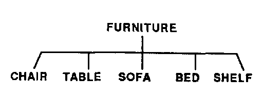 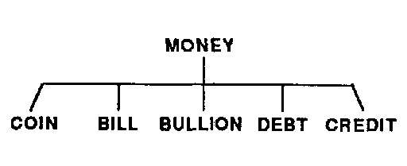
من المؤكد أنه من الصعب العثور على أي خصائص تشترك فيها كل هذه الأشياء. العملات المعدنية صلبة ومستديرة ومسطحة. الفواتير رقيقة ومرنة. تتمتع السبائك بوزن غير عادي، كما أن الاعتمادات ليست مادية حتى. نحن ندرك أنها جميعها وسائل للتجارة، لكن هذا لن يساعدنا في التعرف على الأشياء نفسها. الوضع هو نفسه بالنسبة للأثاث. ليس من الصعب أن نقول ما هو الأثاث ل "الأشياء التي تجهز غرفة للعيش فيها". ولكن عندما يتعلق الأمر بالأشياء نفسها، فمن الصعب العثور على إطار موحد لـ "الكرسي". مرة أخرى، يبدو دوره الوظيفي واضحًا - شيء يمكن للمرء الجلوس عليه. المشكلة هي أنه يمكن للمرء الجلوس على أي شيء تقريبًا - مقعد، أو أرضية، أو سطح طاولة، أو حصان، أو كومة من الطوب، أو صخرة. حتى تحديد قوس لديه مشاكل، نظرًا لأن العديد من الأشياء التي نتعرف عليها على أنها أقواس لا تتطابق مع ما لدينا كتلة القوس الإطار الموحد:
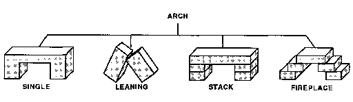
كل هذه الأشكال يمكن وصفها بأنها "شكل مع ثقب". أو "الكتل التي الجسر عبر الفجوة". لكن هذه الأوصاف ستعترف أيضًا بأشياء كثيرة لا نريد اعتبارها أقواسًا. إن أبسط طريقة للتعلم، عندما لا يتمكن المرء من العثور على إطار موحد، هي تجميع أوصاف التجارب.
في البداية، قد يبدو تجميع الأمثلة أسهل من إيجاد طرق موحدة لتمثيلها. ولكن لاحقًا سيكون هناك ثمن يجب دفعه مقابل ذلك: عندما نحاول ذلك السبب في الأشياء، يمكن أن تكون التراكمات مصدر إزعاج، لأننا سنضطر بعد ذلك إلى العثور على حجة أو تفسير مختلف لتبرير كل مثال منفصل. على الأرجح، تطورت أجزاء مختلفة من أدمغتنا لاستخدام كلا النوعين من الاستراتيجيات. لا تحتاج التراكمات إلى أن تستغرق وقتا أطول للتلاعب بها إذا كان من الممكن التعامل مع جميع الأمثلة في نفس الوقت، من خلال عوامل منفصلة لا تتداخل مع بعضها البعض. ولكن بمجرد أن تبدأ هذه العمليات في الحاجة إلى مساعدة بعضها البعض، فإن كفاءة المجتمع بأكمله سوف تنحدر بسرعة. وربما يكون هذا التباطؤ في حد ذاته هو الحافز الذي يجعلنا نبدأ في محاولة توحيد العمليات التي نستخدمها بشكل متكرر.
النظرية الأبسط حول الوقت الذي نبدأ فيه إطارات موحدة جديدة هي أنه يوجد في الدماغ قيد معماري على عدد خطوط K التي يمكن الوصول إليها مباشرة من قبل أنواع مختلفة من العوامل. على سبيل المثال، قد يتمكن الوكلاء في وكالة معينة من تجميع ما لا يزيد عن سبعة فروع تقريبًا لكل تصنيف في تسلسل هرمي معين. وعندما يتراكم أكثر من ذلك، ستضطر الوكالة إما إلى دمج بعض الأمثلة في إطارات موحدة أو طلب المساعدة من مكان آخر.
دعونا نجعل نظرية الدمبل لشخصيات بعض الناس.
يونيفراميرز � تجاهل التناقضات لصالح الانتظام المتخيل. إنهم يميلون إلى الكمال ولكنهم يميلون أيضًا إلى التفكير من حيث الصور النمطية. يؤدي هذا أحيانًا إلى التهور لأنه يتعين عليهم رفض بعض الأدلة من أجل صنع هياكلهم الموحدة.
المراكم � هي أقل تطرفا. إنهم يستمرون في جمع الأدلة، وبالتالي فهم أقل عرضة لارتكاب الأخطاء. لكنهم أيضًا أبطأ في تحقيق الاكتشافات.
بالطبع هذه الشخصيات الخيالية ليست سوى صور كاريكاتورية، والجميع يمزج بين النقيضين. يجد معظم الناس بعض الحلول الوسط المعقولة، على الرغم من أن القليل منا يميل أكثر في اتجاه واحد أكثر من الآخر. أنا متأكد من أننا جميعًا نستخدم مزيجًا من استراتيجيات التعلم المختلفة، مثل تراكم الأوصاف، أو خطوط K، أو الإطارات الموحدة، أو أي شيء آخر. ظاهريًا، قد يبدو إنشاء التراكمات أسهل من إنشاء إطارات موحدة لكن اختيار ما يجب تجميعه قد يتطلب رؤية أعمق. على أية حال، عندما يصبح التراكم كبيرًا جدًا وغير متقن، نحاول استبدال بعض مجموعات أعضائه بإطار موحد. ولكن حتى عندما ننجح في العثور على إطار موحد مدمج بشكل مناسب، يمكننا أن نتوقع منه أيضًا أن يتراكم الاستثناءات في نهاية المطاف، نظرًا لأن الأوصاف الأولى نادرًا ما تنجح في جميع أغراضنا اللاحقة.
على سبيل المثال، عندما يواجه الطفل الكلاب لأول مرة، قد تتم محاولة لإنشاء إطار موحد يصنف أجزاء تلك الحيوانات - العيون، والأذنين، والأسنان، والرأس، والجسم، والذيل، والساقين، وما إلى ذلك. لكن سيتعين على الطفل في النهاية أن يتعلم أنه حتى هنا توجد استثناءات.
علاوة على ذلك، لن يساعد هذا الإطار الموحد في الإجابة على أسئلة الطفل الأكثر إلحاحًا حول أي كلب على وجه الخصوص: هل هو ودود؟ هل لديها لحاء بصوت عال؟ هل هو من النوع الذي يميل إلى العض؟ قد يتطلب كل اهتمام من هذا النوع بناء نوع مختلف من شجرة التسلسل الهرمي.
وهذا يؤدي إلى صعوبة لا مفر منها. من المرجح أن تتطلب دوافعنا واهتماماتنا المختلفة طرقًا غير متوافقة لتصنيف الأشياء. لا يمكنك التنبؤ بعضة الكلب من لحاءه. يجب أن يجسد كل تصنيف من التصنيفات التي نبنيها أنواعًا مختلفة من المعرفة، ونادرا ما يمكننا استخدام أكثر من عدد قليل منها في وقت واحد. عندما يكون لدينا هدف بسيط وواضح، قد نتمكن من اختيار نوع معين من الوصف الذي يجعل المشكلة سهلة الحل. ولكن عندما تتعارض الأهداف من عدة أنواع، يكون من الصعب معرفة ما يجب فعله بالضبط.
متى يجب أن تتراكم، ومتى يجب أن تصنع إطارات موحدة؟ الاختيار يعتمد على أغراضك. في بعض الأحيان يكون من المفيد اعتبار الأشياء متشابهة لأن لها أشكالًا متشابهة، ولكن في بعض الأحيان يكون من المنطقي أكثر تجميع الأشياء المتشابهة معًا الاستخدامات. في لحظة ما قد ترغب في التأكيد على التشابه؛ في اللحظة التالية، قد ترغب في التأكيد على التمييز. في كثير من الأحيان، يتعين علينا استخدام كل من الإطارات الموحدة والتراكمات معًا. في كتلة القوس على سبيل المثال، وجدنا أنه يمكن أن يكون هناك نوعان مختلفان من القمم المقوسة: الكتلة والإسفين. وبناء على ذلك، عندما استخدمنا عبارة "كتلة أو إسفين"، قمنا في الواقع بإدخال "تراكم فرعي" في إطارنا الموحد.
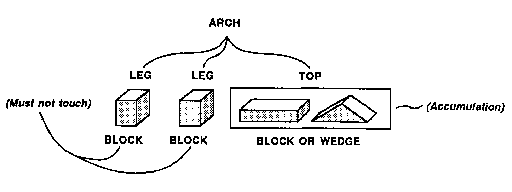
نادرا ما تبدو التراكمات مرضية تماما لأننا نشعر أن الأفكار يجب أن تكون أكثر وحدة. لن يكون لدينا كلمة تشير إلى كرسي أو قوس أو عملة إذا كانت لا تعني أكثر من مجرد قوائم من الأشياء غير ذات الصلة. إذا لم تتضمن كل واحدة منها فكرة موحدة، فلن نفكر أبدًا في إنشاء تلك القوائم في المقام الأول! لماذا يصعب وصف جوهرها؟ وفي الأقسام القليلة القادمة سنكتشف عددًا من الأسباب لذلك. وهنا واحد منهم:
العديد من الأفكار الجيدة هي في الحقيقة فكرتان في فكرة واحدة، والتي تشكل جسرًا بين عالمين من الفكر أو وجهات نظر مختلفة.
عندما نقوم ببناء جسر بين البنية والوظيفة، قد يمثل أحد طرفي هذا الجسر هدفًا أو استخدامًا، بينما يصف الطرف الآخر ما قد نستخدمه لتحقيق تلك الغايات. ولكن من النادر أن تتوافق هذه الهياكل بدقة مع تلك الوظائف. المشكلة هي أننا عادة نجد العديد من الطرق المختلفة لتحقيق أي هدف. وهذا يعني أننا سنجد تراكمًا على الجانب الهيكلي للجسر. على سبيل المثال، إذا كنت تريد الوصول إلى شيء مرتفع، يمكنك الوقوف على كرسي، أو الوصول بالعصا، أو أن تطلب من شخص أطول منك أن يحضره لك. وبالمثل، يمكن العثور على تراكم الوظائف أو الأهداف لأي هيكل. كتب زميلي أوليفر سيلفريدج ذات مرة كتابًا كاملاً بعنوان أشياء يمكن القيام بها بالعصا.
عوالمنا المختلفة من الغايات والوسائل لا تتطابق عادة بشكل جيد. لذلك عندما نجد إطارًا موحدًا مفيدًا ومدمجًا في أحد هذه العوالم، فغالبًا ما يتوافق ذلك مع تراكم في عوالمنا الأخرى.
واجهنا هذه المشكلة في وقت سابق. عندما قمنا بتصنيف الطيور على أنها الحيوانات أثناء تصنيف الطائرات على أنها آلات, وبذلك فرضنا الانقسام على فئة الأشياء التي تطير. لاحقًا، عندما نأتي إلى نظريات حول الاستعارات، سنرى أن مثل هذه المشكلات تكاد تكون حتمية لأننا لا نعرف سوى عدد قليل جدًا - وبالتالي، مخططات ثمينة جدًا - التي تتجاوز قواها الموحدة العديد من العوالم.
ماذا يجب أن يفعل المرء بقانون أو قاعدة لا تعمل دائمًا؟ لقد رأينا طريقة واحدة عندما قمنا بتطوير إطارنا الموحد لـ كتلة القوس. لقد واصلنا ببساطة تغييره ليناسب كل مثال جديد. ولكن ماذا لو، بعد كل هذا العمل، لا تزال هناك استثناءات غير مناسبة؟
مبدأ الاستثناء: نادرًا ما يكون من المفيد التلاعب بقاعدة تعمل دائمًا تقريبًا. من الأفضل استكماله بتراكم الاستثناءات المحددة.
يتعلم جميع الأطفال أن الطيور يمكنها الطيران وأن الحيوانات التي تسبح هي أسماك. فماذا يجب عليهم أن يفعلوا عندما يقال لهم إن طيور البطريق والنعام طيور لا تطير، أو أن الحيتان وخنازير البحر حيوانات تسبح وليست أسماكا؟ ماذا يجب أن يفعل الأطفال بالإطارات الموحدة التي لم تعد تعمل بشكل جيد؟ يقول مبدأ الاستثناء: لا تغيرها على عجل. لا ينبغي لنا أبدًا أن نتوقع أن تكون القواعد مثالية، بل يجب أن نقول فقط ما هو نموذجي. وإذا حاولنا تعديل كل قاعدة، لأخذ كل استثناء بعين الاعتبار، فسوف تصبح أوصافنا مرهقة للغاية بحيث لا يمكن استخدامها. ليس سيئًا جدًا أن تبدأ بعبارة "الطيور يمكنها الطيران" ثم تغيرها لاحقًا إلى "الطيور يمكنها الطيران". «يمكن للطيور أن تطير، إلا إذا كانت طيور البطريق أو النعام . � ولكن إذا واصلت السعي إلى الكمال، فسوف تتحول قواعدك إلى وحشية:
يمكن للطيور أن تطير، إلا إذا كانت طيور البطريق والنعام، أو إذا ماتت، أو كانت أجنحتها مكسورة، أو كانت محبوسة في أقفاص، أو كانت أقدامها عالقة في الأسمنت، أو مرت بتجارب مروعة لدرجة تجعلها غير قادرة نفسياً على الطيران.
وما لم نتعامل مع الاستثناءات بشكل منفصل، فإنها ستدمر كل التعميمات التي قد نحاول القيام بها. فكر في سبب الفكرة المنطقية لـ سمكة مفيد جدا. إنها تراكم لمعلومات عامة عن فئة من الأشياء التي تشترك في الكثير: الحيوانات التي تعيش في الماء، ولها شكل معين من الأشكال الانسيابية، وتتحرك عن طريق التلوّي بأجسامها وتهوية الماء بزوائد مختلفة تشبه الزعانف. ومع ذلك، فإن فكرة عالم الأحياء عن سمكة الأمر مختلف تمامًا، كونه أكثر انخراطًا في الأصول والآليات الداخلية لتلك الحيوانات. يؤدي هذا إلى التأكيد على جوانب أقل وضوحًا للعين: إذا كانت الحيتان تمتلك رئتين بينما يمتلك سمك السلمون المرقط خياشيم، فيجب أن تكون موحدة بطرق مختلفة. ينزعج الأطفال عندما يسمعون أن الحيتان ليست أسماكًا لأنهم عادةً ما يهتمون بالاستخدامات والمظاهر أكثر من اهتمامهم بالأصول والآليات. من الأرجح أنهم يريدون تصنيفات مثل هذه:
ماذا تفعل تلك الحيوانات؟ أين يعيشون؟ هل من السهل الإمساك بهم؟ هل هم خطرون؟ هل هي مفيدة؟ ماذا يأكلون؟ كيف طعمهم؟
إن قوة الكلمات العادية مثل "السمك" تأتي من الطريقة التي نجعلها تغطي بها العديد من عوالم المعاني في وقت واحد. ومع ذلك، من أجل القيام بذلك، علينا أن نكون قادرين على تحمل العديد من الاستثناءات. لا نجد أبدًا قواعد ليس لها استثناءات، إلا في عوالم مصطنعة خاصة معينة نصنعها بأنفسنا من خلال وضع قواعدها وأنظمتها في البداية. لقد تم بناء العوالم الاصطناعية مثل الرياضيات واللاهوت منذ البداية لتكون خالية من التناقض المثير للاهتمام. ولكن يجب علينا أن نكون حريصين على عدم الخلط بين اختراعاتنا والظواهر الطبيعية التي اكتشفناها. إن الإصرار على قوانين مثالية في الحياة الواقعية يعني المخاطرة بعدم العثور على أي قوانين على الإطلاق. فقط في العلوم، حيث يجب تفسير كل استثناء، يكون من المنطقي دفع هذا الثمن.
لماذا يمكن للمرء أن يبني برجا أو قوسا من الحجر أو الطوب، ولكن ليس من الماء أو الهواء أو الرمل؟ والإجابة على ذلك بمثابة التساؤل، «كيف تعمل الأبراج؟». لكن السؤال يبدو منحرفًا تمامًا، لأن الإجابة تبدو واضحة جدًا: "كل كتلة تحمل الكتلة التالية، وهذا كل ما في الأمر!" وكما قلنا من قبل:
ان سوف تبدو الفكرة بديهية بمجرد أن تنسى تعلمها!
غالبًا ما نستخدم كلمات مثل "البصيرة" أو "الحدس" للحديث عن الفهم الذي يبدو فوريًا بشكل خاص. ولكن من سوء علم النفس أن نفترض أن ما يبدو "واضحًا" هو إذن بسيط أو بديهي. العديد من هذه الأشياء يتم القيام بها لنا من خلال أنظمة ضخمة وصامتة في أذهاننا، تم بناؤها على مدى سنوات طويلة منسية من الطفولة. نادرًا ما نفكر في المحركات العملاقة التي طورناها لفهم الفضاء، والتي تعمل بهدوء شديد بحيث لا تترك أي أثر في وعينا. إن آلية عمل الأبراج هي أمر يعرفه الجميع منذ زمن طويل، ومن الغريب أن نذكره:
أ ارتفاع البرج يعتمد فقط على ارتفاع أجزائه! لا يهم أي من الخصائص الأخرى للكتل - لا تكلفتها، ولا مكان وجودها، ولا رأيك فيها. التهم الرفع فقط "هكذا يمكننا بناء برج من خلال التفكير فقط في الإجراءات التي تزيد من ارتفاعه.
وهذا يجعل عملية بناء البرج أمرًا سهلاً، وذلك من خلال السماح لنا بفصل مخطط البناء الأساسي عن كافة التفاصيل الصغيرة. ل قم ببناء برج بارتفاع معين، ما عليك سوى العثور على ما يكفي من "القطع ذات الارتفاع" وقم بتكديسها عن طريق حركات الرفع. لكن الأبراج يجب أن تظل مرتفعة أيضًا. لذا فإن المشكلة التالية هي إيجاد الإجراءات التي يمكننا اتخاذها لجعل برجنا مستقرًا. وهنا يمكننا استخدام مبدأ ثانٍ ورائع:
أ يكون البرج مستقرًا إذا تم تمركز كل كتلة بشكل صحيح على الكتلة الأخيرة. ولهذا السبب، يمكننا بناء برج عن طريق رفع كل كتلة رأسيًا أولًا ثم تعديلها أفقيًا.
لاحظ أن هذا النوع الثاني من الحركة، وهو التكيف من أجل الاستقرار، يتطلب حركات أفقية فقط، والتي لا تؤثر على ارتفاع البرج على الإطلاق. وهذا ما يفسر سهولة بناء الأبراج. لزيادة ارتفاع البرج، تحتاج فقط إلى إجراءات الرفع الرأسي. الهدف الثاني، الاستقرار، يتطلب فقط حركات انزلاق أفقية، والتي لا تتفاعل مع الارتفاع على الإطلاق - بشرط أن تكون الكتل ذات أسطح أفقية. وهذا يتيح لنا تحقيق هدف بناء البرج ببساطة عن طريق القيام "بالأشياء الأولى أولاً".
بالنسبة للبالغين، ليس سرا أن الطول والعرض مستقلان عن بعضهما البعض. لكن هذا ليس واضحًا جدًا في مرحلة الطفولة: لفهم عالم المكان والزمان، يجب على كل طفل أن يقوم بالعديد من هذه الاكتشافات. ومع ذلك، فإن التقسيم إلى الرفع والانزلاق له أهمية خاصة؛ هناك عدد لا حصر له من الطرق للتنقل داخل العالم: كيف يمكن لأي شخص أن يتعلمها جميعًا؟ الجواب: لا نحتاج أن نتعلمها كلها، لأننا نستطيع أن نتعلم كيفية التعامل مع كل بُعد على حدة. وللرفع أهمية خاصة لأنه يعزل البعد الرأسي عن غيره ويربطه بأفكار التوازن. يمكن بعد ذلك تقسيم العمليات التكميلية للانزلاق إلى بعدين متبقيين: إما الدفع والسحب أو التحرك من جانب إلى آخر. طريقة واحدة للرفع وطريقتان للانزلاق تكون ثلاثة، وهذا يكفي للتحرك في عالم ثلاثي الأبعاد!
إنه لأمر رائع أن نتمكن من معرفة سبب شيء ما. البرج مرتفع لأن كل كتلة من كتله المنفصلة تساهم في الارتفاع؛ إنه يقف لأن تلك الكتل ثابتة وواسعة بشكل كافٍ. الطفل يبكي لأنه يريد الطعام. يسقط الحجر لأنه سحبته الجاذبية. لماذا يمكننا تفسير أشياء كثيرة من حيث الأسباب والنتائج؟ هل لأن هناك سببًا لكل شيء، أم أننا نتعلم فقط أن نسأل فقط عن أنواع الأحداث التي لها أسباب؟ هل الأسباب غير موجودة على الإطلاق بل هي من اختراع عقولنا؟ الجواب هو كل ما سبق. إن الأسباب تصنعها العقول بالفعل، ولكنها تعمل فقط في أجزاء معينة من عوالم معينة.
ما هي الأسباب على أي حال؟ يتضمن مفهوم السبب في حد ذاته عنصرًا معينًا من الأسلوب: يجب أن يكون التفسير السببي موجزًا. ما لم يكن التفسير مضغوطًا، فلا يمكننا استخدامه كتنبؤ. قد نتفق على أن X يسبب Y، إذا رأينا أن Y يعتمد على X أكثر من معظم الأشياء الأخرى. لكننا لن نطلق على X سببًا لـ Y إذا كان وصف X يتضمن خطابًا لا نهاية له يذكر تقريبًا كل شيء آخر في العالم.
لا يمكن أن يكون هناك أي "أسباب" في عالم يعتمد فيه كل ما يحدث بشكل متساوٍ إلى حد ما على كل ما يحدث آخر.
في الواقع، لن يكون من المنطقي الحديث عن "شيء" في مثل هذا العالم. إن مفهومنا عن "الشيء" يفترض مجموعة من الخصائص التي تبقى كما هي (أو تتغير بطرق يمكننا التنبؤ بها) عندما تتغير أشياء أخرى من حولها. متى منشئ عند تحريك كتلة، سيتغير موقع تلك الكتلة - ولكن لن يتغير لونها أو وزنها أو مادتها أو حجمها أو شكلها. كم هو مريح أن عالمنا يتيح لنا تغيير موقع شيء ما مع ترك العديد من الخصائص الأخرى دون تغيير! وهذا يتيح لنا التنبؤ بتأثير الحركات بشكل جيد بحيث يمكننا ربطها بمجموعات لم تتم تجربتها من قبل، ومع ذلك نتنبأ بتأثيراتها الرئيسية. علاوة على ذلك، نظرًا لأن كوننا له ثلاثة "أبعاد"، فيمكننا بسهولة التنبؤ بتأثير الجمع بين عدة أفعال من خلال معرفة تأثيراتها فقط في كل من هذه الأبعاد الثلاثة.
لماذا يفعل تحتفظ الكتلة بحجمها وشكلها عند تحريكها؟ ذلك لأننا محظوظون بما فيه الكفاية للعيش في عالم تتمركز فيه التأثيرات. لا يمكن لجسم صلب ذو شكل مستقر أن يوجد إلا لأن ذراته "تلتصق ببعضها البعض" بقوة بحيث أنه عندما تحرك بعضها، يتم سحب بعضها الآخر. لكن هذا لا يمكن أن يحدث إلا في الكون الذي تعمل قوانين قوته بشكل وثيق مع "قرب" الزمان والمكان. وبعبارة أخرى، الكون الذي يكون فيه للكيانات المتباعدة تأثير أقل بكثير على بعضها البعض من تلك القريبة من بعضها البعض. في عوالم خالية من مثل هذه القيود، لا يمكن أن تكون هناك "أشياء" أو "أسباب" لنعرفها.
إن معرفة سبب ظاهرة ما يعني، على الأقل من حيث المبدأ، معرفة كيفية تغيير أو التحكم في بعض جوانب بعض الكيانات دون التأثير على الباقي.
إن أكثر أنواع الأسباب المفيدة التي يمكن لعقولنا تمييزها هي العلاقات التي يمكن التنبؤ بها بين الإجراءات التي يمكننا اتخاذها والتغييرات التي يمكننا الشعور بها. ولهذا السبب تميل الحيوانات إلى تطوير أجهزة استشعار تكتشف المحفزات التي يمكن أن تتأثر بأفعال تلك الحيوانات.
معنى ن. 1. ما يوجد في العقل أو النظرة أو التأمل كهدف أو غرض محدد؛ ما هو المقصود أو المقصود القيام به؛ نية؛ غاية؛ هدف؛ هدف. 2. ما هو المقصود، أو في الواقع، أن يتم نقله أو الإشارة إليه أو الإشارة إليه أو فهمه بالأفعال أو اللغة؛ معنى الكلمات أو معناها أو استيرادها؛ دلالة؛ قوة.
"قاموس ويبستر غير المختصر".
ما هو المعنى؟ أحيانًا يُقال لنا تعريف لكلمة ما، وفجأة نعرف طريقة لاستخدام تلك الكلمة. لكن التعريفات لا تعمل في كثير من الأحيان بشكل جيد. لنفترض أنه كان عليك أن تشرح معنى "اللعبة". يمكنك البدء بهذه الطريقة:
لعبة: ان نشاط يتنافس فيه فريقان لجعل الكرة تفعل شيئًا يؤدي إلى نتيجة الفوز.
يناسب هذا نطاقًا معينًا من الألعاب، ولكن ماذا عن الألعاب التي تستخدم الكلمات فقط، أو لا تسجل أي نتائج، أو تفتقر إلى عنصر المنافسة؟ يمكننا التعرف على طبيعة المزيد من أنواع الألعاب باستخدام تعريفات أخرى، ولكن يبدو أنه لا يوجد شيء يمكنه فهمها جميعًا. نحن ببساطة لا نستطيع أن نجد الكثير من القواسم المشتركة بين كل ما نسميه لعبة. ومع ذلك، لا يزال المرء يشعر بوجود وحدة معينة تكمن وراء فكرة اللعبة. على سبيل المثال، نشعر أنه بإمكاننا التعرف على ألعاب جديدة، وأن هذه "اللعبة" هي أكثر من مجرد تراكم اعتباطي.
ولكن الآن دعونا نحول انتباهنا بعيدًا عن الجوانب المادية للألعاب ونركز على الأغراض النفسية تلك الألعاب يمكن أن تخدم. ومن ثم يصبح من الأسهل العثور على بعض الصفات المشتركة في معظم ألعاب البالغين:
لعبة: ان النشاط الذي يجذب ويصرف الانتباه , منفصلة عمدا عن الحياة الحقيقية.
هذا النوع الثاني من التعريف يتعامل مع اللعبة، ليس كنوع من الأشياء، ولكن كعملية في العقل. في البداية قد يبدو هذا غريبًا إلى حد ما، لكنه في الحقيقة ليس جديدًا - فحتى تعريفنا الأول يحتوي بالفعل على عناصر نفسية، مخبأة في كلمتي "المنافسة" و"الفوز". عندما ننظر إليها بهذه الطريقة، تبدو الأنواع المختلفة من الألعاب أكثر تشابهًا. وذلك لأنهم جميعًا يخدمون أغراضًا مشتركة، على الرغم من التنوع الكبير في مظاهرهم الجسدية. بعد كل شيء، لا يوجد عمليًا حد لمجموعة متنوعة من الأشياء أو الهياكل المادية التي يمكن استخدامها لتحقيق نفس الغرض النفسي - في هذه الحالة، لجعل النشاط يصرف الانتباه (مهما كان ذلك يعني). بطبيعة الحال، سيكون من الصعب تحديد نطاق جميع الأشكال المادية الممكنة للألعاب.
بطبيعة الحال، ليس من المستغرب أن نجد أن "اللعبة" تتمتع بطابع نفسي أكثر من "الطوب"، الذي يمكننا تعريفه من الناحية المادية دون الإشارة إلى أهدافنا. لكن معظم الأفكار تقع بينهما. وقد رأينا ذلك في حالة "الكرسي" الذي لا نستطيع وصفه دون الإشارة إلى البنية الجسدية والوظيفة النفسية.
أخيرًا، اقتربنا من التقاط معاني أشياء مثل الكراسي والألعاب. لقد وجدنا أن الأوصاف الهيكلية مفيدة، لكنها تبدو دائمًا محددة للغاية. معظم الكراسي لها أرجل، ومعظم الألعاب لها نتائج، ولكن هناك دائمًا استثناءات. لقد وجدنا أيضًا أن الأوصاف الهادفة مفيدة، لكنها لم تبدو محددة بدرجة كافية. "الشيء الذي يمكنك الجلوس عليه." � عامة جدًا بحيث لا يمكن تحديد كرسي، حيث يمكنك الجلوس على أي شيء تقريبًا. «تحويل النشاط». إنها لعبة واسعة جدًا، نظرًا لوجود العديد من الطرق الأخرى لتحويل عقولنا عن الأمور الجادة. بشكل عام، نادرًا ما ينجح تعريف واحد.
وهي تشمل أشياء كثيرة لا نقصدها.
إنهم يرفضون أشياء كثيرة نريد تضمينها.
ولكن يمكننا في كثير من الأحيان التقاط فكرة من خلال الضغط عليها من عدة جوانب في وقت واحد، للحصول على ما نحتاج إليه بالضبط باستخدام نوعين مختلفين أو أكثر من الأوصاف في نفس الوقت.
غالبًا ما تكون أفضل أفكارنا هي تلك التي تربط بين عالمين مختلفين!
أنا لا أصر على أن كل تعريف يجمع فقط هذه المكونات المحددة للبنية والغرض. لكن هذا المزيج المحدد له فضيلة خاصة: فهو يساعدنا على سد الفجوة بين "الغايات" التي نسعى إليها و"الوسائل" التي نملكها. أي أنها تساعدنا على ربط الأشياء التي يمكننا التعرف عليها (أو صنعها، أو العثور عليها، أو القيام بها، أو التفكير فيها) بالمشكلات التي نريد حلها. لن يكون من المفيد معرفة أن X "موجود" دون وجود طريقة ما للعثور عليه واستخدامه.
عندما ناقشنا التراكم، رأينا أن مفهومي "الأثاث" و"المال" لهما تعريفات وظيفية مدمجة إلى حد معقول، لكنهما يجمعان العديد من الأوصاف الهيكلية. وعلى العكس من ذلك، فإن مفاهيم "المربع" أو "الدائرة" لها تعريفات هيكلية مدمجة ولكنها تتراكم مجموعات لا حصر لها من الاستخدامات المحتملة.
لكي تتعلم كيفية استخدام كلمة جديدة أو غير مألوفة، عليك أن تبدأ باعتبارها علامة على وجود بنية يمكنك استخدامها داخل عقل شخص آخر. ولكن بغض النظر عن مدى دقة شرح ذلك، لا يزال يتعين عليك إعادة بناء هذا الفكر بنفسك، من المواد الموجودة بالفعل في عقلك. من المفيد أن تحصل على تعريف جيد، ولكن لا يزال يتعين عليك صياغة وتشكيل كل فكرة جديدة لتناسب مهاراتك الحالية - على أمل أن تجعلها تعمل لصالحك بالطريقة التي تبدو أنها تعمل مع أولئك الذين تتعلم منهم.
إن ما يسميه الناس "معاني" لا يتوافق عادة مع هياكل معينة ومحددة، بل يتوافق مع الروابط بين وعبر أجزاء من الشبكات المتشابكة الكبيرة من الروابط والقيود بين وكالاتنا. ونظرًا لأن هذه الشبكات تنمو وتتغير باستمرار، نادرًا ما تكون المعاني حادة، ولا يمكننا دائمًا أن نتوقع أن نكون قادرين على "تعريفها" من حيث التسلسل المدمج للكلمات. التفسيرات اللفظية تخدم فقط كتلميحات جزئية؛ علينا أيضًا أن نتعلم من المشاهدة والعمل واللعب والتفكير.
قال سيزان: «إن العالم رغم أنه يبدو معقدًا، إلا أنه مكون من مكعبات وكريات، بالإضافة إلى الأسطوانات والأقماع:
أربعة أساسيات، كالعظام في اللحم، تدعم ما يحجب أشكالها من تنوع
قال فرويد: «إنها أساسية بشكل مضاعف». � هذه أكثر من مجرد أشكال هندسية:
إن موادك الصلبة البسيطة ترمز إلى الأعضاء التي تجذب أعيننا؛
الموضوع الوحيد للفنون هو الأعضاء التناسلية للرجال والنساء
يمكن للجسد أيضًا أن يعبر عن حزننا وسعادتنا، وحتى رقص الجنس الطائش يصور حالة الروح من التذبذب ذهابًا وإيابًا بين نعم ولا الكونيين.
قال فان جوخ: "العالم هو الوجه الذي أرى فيه تكشيرة روحي".
لكن هل أصبح الواقع مجرد وسيلة للعاطفة؟
يا عالم الأشكال أسأل هل أنت مرآة أم قناع؟
� ثيودور ميلنتشوك
تخيل كل أنواع الأقواس التي يمكن للمرء أن يبنيها.
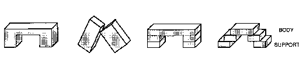
كيف يمكننا التقاط ما هو مشترك بين أشياء كثيرة بإطار موحد واحد فقط؟ هذا مستحيل إذا اضطررنا إلى التفكير فيها من حيث الكتل وكيفية وضعها. ولا ينطبق أي من التعبيرات التي استخدمناها من قبل على كل هذه الأقواس: لا "ثلاث كتل"، ولا "كتلان قائمان"، ولا "يجب ألا تتلامس الدعامات". فكيف يمكننا أن نجعل عقولنا ترى أن كل هذه الأقواس متماثلة؟ إحدى الطرق هي رسم هذا الخط الوهمي:
�
والآن، فجأة، أصبحت كل تلك الأقواس المختلفة تناسب إطارًا واحدًا لجسم واحد مزود بدعامتين. هناك فكرتان مختلفتان هنا. الأول هو فكرة تقسيم وصف الشيء إلى جزء “أساسي” وهو “الجسم” وبعض الأجزاء المساعدة التي تتوافق مع السند. سنرى لاحقًا أن هذه فكرة قوية في حد ذاتها. أما الفكرة الثانية فهي أكثر قوة وعمومية: بعد الفشل في العثور على وصف موحد لجميع تلك الأقواس، تخلينا عن الطريقة التي كنا نستخدمها، واعتمدنا بدلاً من ذلك أسلوبًا مختلفًا تمامًا في الوصف. في كلمة واحدة، نحن إعادة صياغة المشكلة بعبارات جديدة. لقد بدأنا باستخدام لغة تعتمد على التعبير عن الأشكال الدقيقة للمكعبات الفردية. لقد استبدلنا ذلك بلغة أخرى يمكننا من خلالها التحدث عن الأشكال والخطوط العريضة التي لا تقتصر على تلك الخاصة بالكتل نفسها.
من الواضح أن إعادة الصياغة أمر قوي للغاية، ولكن كيف يمكن للمرء أن يفعل ذلك؟ كيف يجد الناس أساليب جديدة للوصف تجعل مشاكلهم تبدو أسهل؟ هل يعتمد هذا على نوع غامض من البصيرة أم على موهبة إبداعية سحرية أم أننا ببساطة نصادفها بالصدفة؟ وكما قلت عند مناقشة الإبداع، تبدو هذه الأمور بالنسبة لي مجرد مسائل تتعلق بالدرجة، حيث أن الناس يقومون دائمًا بإعادة صياغة من مختلف الأنواع. حتى عندما نتأمل تلك الأفكار الجديدة الأكثر ندرة والأكثر ثورية والتي تأتي مثل الوحي، فجأة لتسليط ضوء جديد على مجالات فكرية بأكملها - مثل التطور، أو الجاذبية، أو النسبية - فإننا عادة ما نرى بعد فوات الأوان أن هذه كانت أشكالًا مختلفة من الأشياء التي عرفها الناس قبل ذلك الوقت. ثم يتعين علينا أن نتساءل، بدلاً من ذلك، عن الأسباب التي أدت إلى تأجيل تلك التعديلات لفترة طويلة.
وفي السماء لا فرق بين شرق وغرب؛ يخلق الناس فروقًا من عقولهم ثم يصدقونها على أنها حقيقية.
�بوذا
ما هو الإبداع؟ كيف يحصل الناس على أفكار جديدة؟ يتفق أغلب المفكرين على أن بعض السر يكمن في إيجاد "طرق جديدة للنظر إلى الأشياء". لقد رأينا للتو كيفية استخدام مفهوم دعم الجسم لإعادة صياغة أوصاف بعض الأشكال المكانية، وقريباً سنرى بعض الطرق الأخرى لإعادة الصياغة من حيث القوة، والاحتواء، والسبب، والسلسلة. لكن دعونا أولاً ننظر بعناية أكبر إلى الطريقة التي جعلنا بها تلك الأقواس الأربعة المختلفة تبدو متشابهة، وذلك بجعل كل منها يبدو متطابقًا "الشيء الذي تدعمه رجلان." في حالة قوس واحد، لقد فعلنا ذلك من خلال تخيل بعض الحدود التي لم تكن موجودة بالفعل: وقد أدى هذا إلى تقسيم كائن واحد إلى ثلاثة.
�
ومع ذلك، فقد تعاملنا مع Tower-Arch من خلال القيام بالعكس تمامًا: لقد تعاملنا مع بعض الحدود الحقيقية كما لو أنها غير موجودة:
�
يا لها من طريقة متعجرفة في التعامل مع العالم، والنظر إلى ثلاثة أشياء مختلفة على أنها شيء واحد، وتصوير الشيء الواحد على أنه ثلاثة! نحن دائماً تغيير الحدود! أين يبدأ الكوع أو ينتهي؟ متى يصبح الشاب بالغاً؟ أين يتحول المحيط إلى بحر؟ لماذا يجب على عقولنا أن تستمر في رسم الخطوط لهيكلة واقعنا؟ الجواب هو أنه ما لم نضع تلك الحدود التي بناها العقل، فلن نرى أي "شيء" على الإطلاق! هذا لأننا نادرًا ما نرى أي شيء متماثلًا تمامًا. في كل مرة نكاد نكون متأكدين من أننا ننظر من وجهة نظر مختلفة إلى حد ما، ربما من أقرب أو أبعد، من أعلى أو أقل، بلون مختلف أو ظل ضوء مختلف، أو على خلفية مختلفة. على سبيل المثال، ضع في اعتبارك هذين المظهرين لنفس الجدول.
�
هذه مختلفة تمامًا عند وصفها من حيث الخطوط والأسطح الفعلية. ولكن عندما يتم وصفها من حيث الجسم والدعم، فإن الصورتين متماثلتان!
وما لم يتمكن العقل من تجاهل جوانب كل مشهد التي ليست ضرورية لأغراضه الحالية، فلن نتمكن أبدًا من تعلم أي شيء. وإلا فإن ذكرياتنا نادراً ما تتطابق مع المظاهر. عندها لا شيء يمكن أن يكون له أي معنى، لأنه لا شيء يبدو دائمًا.
�
طُلب من الطفل أن يرسم شخصًا.
أين الجثة؟ لماذا ترتبط الذراعين والساقين بالرأس؟
عند سؤالهم، العديد من الأطفال الصغار يفضلون هذه الرسومات على الرسومات التي يحبها معظم البالغين.
نحن نفترض عادةً أن الأطفال يرون نفس ما نراه، ويفتقرون فقط إلى مهاراتنا العضلية الصعبة. لكن هذا لا يفسر لماذا ينتج الكثير من الأطفال هذا النوع من الرسم، ولا لماذا يبدون راضين جدًا عنها. على أية حال، فإن هذه الظاهرة تجعل من غير المرجح أن يكون لدى الطفل "صورة" واقعية في ذهنه.
الآن دعونا نفكر في فكرة مختلفة. سنفترض أن الطفل ليس لديه أي شيء يشبه الصورة في ذهنه، ولكن فقط بعض شبكة العلاقات التي يجب أن تلبيها "الملامح" المختلفة. على سبيل المثال، قد تتكون شبكة ميزات "رسم الشخص" الخاصة بالطفل من الميزات والعلاقات التالية:
رأس شخصية مغلقة كبيرة.
عيون دائرتان عاليتان في الرأس.
فم كائن متمركز تحت العينين.
جسم شخصية مغلقة كبيرة.
الأسلحة خطين متصلين عالياً على الجسم.
الساقين خطين متصلين بالجزء السفلي من الجسم.
لتحويل هذا الوصف إلى رسم حقيقي، يجب على الطفل أن يستخدم نوعًا من "إجراءات الرسم". وإليك إجراء حيث تسير العملية ببساطة في طريقها إلى أسفل قائمة الميزات، مثل برنامج كمبيوتر صغير:
1. فكر في الميزة التالية في القائمة.
2. إذا كانت هذه الميزة مرسومة بالفعل، فانتقل إلى الخطوة 3. وإلا ارسمها.
3. إذا انتهت القائمة، توقف. بخلاف ذلك، ارجع إلى الخطوة 1.
عندما يبدأ الطفل في الرسم، فإن العنصر الأول في القائمة هو "شكل كبير مغلق". وبما أنه لا يوجد شيء من هذا القبيل بعد، فإن الطفل يرسم واحدًا: وهو الرأس. بعد ذلك يتم رسم العيون والفم. ولكن بعد ذلك، عندما يتعلق الأمر برسم ميزة الجسم، فإن الخطوة 2 من الإجراء تجد أن "شكلًا مغلقًا كبيرًا" قد تم رسمه بالفعل. وبناء على ذلك، ليس هناك حاجة إلى أي شيء جديد، ويتقدم الإجراء ببساطة إلى الخطوة 3. ونتيجة لذلك، يستمر الطفل في ربط الذراعين والساقين بالميزة التي تم تخصيصها لكل من الجسم والرأس.
لن يرتكب شخص بالغ مثل هذا "الخطأ" أبدًا، لأنه بمجرد تعيين ميزة ما لتمثيل الرأس، فإن هذه الميزة تعتبر بعد ذلك "مستعملة" أو "مشغولة" ولا يمكن أن تمثل أي شيء آخر. لكن الطفل لديه قدرة أو ميل أقل إلى "التتبع". وبناء على ذلك، بما أن هذا "الجسم المغلق الكبير" يلبي متطلبات الوصف لكل من الرأس والجسم - وإن كان ذلك في لحظات مختلفة من الزمن - فلا يوجد سبب للاستياء. لقد استوفى الفنان الصغير جميع الشروط التي يتطلبها وصفه!
يبدو رسم الجسم والرأس خاطئًا جدًا بالنسبة لمعظم البالغين، ومع ذلك يبدو أنه يُرضي الكثير من الأطفال. هل يبدو حقا كشخص لهؤلاء الأطفال؟ يبدو هذا سؤالًا بسيطًا، ولكنه ليس كذلك، إذ يجب أن نتذكر أن الطفل ليس فاعلًا واحدًا وأن العديد من العوامل الأخرى داخل عقل الطفل قد لا تكون مُرضية على الإطلاق. في الوقت الحالي، تلك الوكالات الأخرى ليست هي المسيطرة وليس لها تأثير يذكر. ومع ذلك، إذا ظهر مخلوق ما في مكان الحادث وكان يبدو هكذا بالفعل، فإن معظم الأطفال سيصابون بالرعب. ليس من المنطقي أن نتحدث عما يراه الشخص "في الواقع"، لأن لدينا العديد من الوكالات المختلفة.
�
ماذا حدث في السنوات الفاصلة حتى جعل الأطفال الأكبر سنا يرسمون الجسد بشكل منفصل؟ يمكن أن يحدث هذا دون إجراء أي تغيير في قائمة الميزات والعلاقات التي استخدمناها في القسم السابق. لن يتطلب الأمر سوى تغيير بسيط في الخطوة 2 من إجراءات الرسم لدينا:
1. فكر في الميزة التالية في القائمة.
2. ارسم مثل هذه الميزة، حتى لو تم رسم ميزة مماثلة بالفعل.
3. إذا انتهت القائمة، توقف. بخلاف ذلك، ارجع إلى الخطوة 1.
وهذا يضمن أن كل ميزة مذكورة في القائمة سيتم تمثيلها مرة واحدة فقط في الرسم، حتى لو كانت اثنتين من هذه الميزات متشابهتين. وبطبيعة الحال، يتطلب هذا بعض القدرة على حساب كل ميزة مرة واحدة فقط، وليس مرتين أبدًا. كم هو مثير للاهتمام أنه من أجل رسم رسومات ناضجة وواقعية، يمكن للطفل أن يستغل نفس النوع من القدرة التي يجب أن يكتسبها ليعد الأشياء بشكل صحيح!
ومن المؤكد أنه يمكننا تفسير تقدم الطفل بطرق أخرى. يمكن لهذه الصورة الجديدة و"الأكثر واقعية" أن تأتي من إضافة رقبة إلى قائمة الميزات، لذلك كان المطالبة بجسم ورأس منفصلين. وقد يكفي ببساطة فرض قيد أو علاقة إضافية: أن يكون الرأس فوق الجسد. قد يجادل المرء بأن الطفل الأصغر لم يكن لديه أبدًا مفهوم واضح عن سمة الجسم المنفصلة والمتميزة في المقام الأول؛ ففي نهاية المطاف، هناك العديد من الأشياء التي يمكنك القيام بها بذراعيك وساقيك أو برأسك، لكن جسمك لا يعيق ذلك.
على أية حال، بعد إتقان فن صنع رسومات الجسم والرأس، يبدو أن العديد من الأطفال يتقدمون ببطء إلى حد ما في فن رسم الصور الشخصية، وغالبًا ما تستمر هذه الأنواع من الرسومات "الطفولية" لعدة سنوات. أظن أنه بعد أن يتعلم الأطفال كيفية تكوين شخصيات يمكن التعرف عليها، فإنهم عادةً ما ينتقلون إلى مواجهة مشاكل تمثيل مشاهد أكثر تعقيدًا. وبينما يفعلون ذلك، يجب علينا أن نستمر في تقدير مدى نجاح الأطفال في التعامل مع المشكلات التي يطرحونها لأنفسهم. قد لا يلبيون توقعاتنا البالغة، لكنهم غالبًا ما يحلون نسختهم الخاصة من المشكلات التي نطرحها.
ان الخبير هو الذي لا يحتاج إلى التفكير. هو يعلم.
� فرانك لويد رايت
ما الذي سيحاول طفلنا رسمه بعد ذلك؟ يستمر بعض الأطفال في العمل على تحسين صورهم الشخصية. لكن معظمهم يستمرون في استخدام مهاراتهم الجديدة للعمل على رسم مشاهد أكثر طموحًا يتفاعل فيها شخصان أو أكثر في الصورة. وهذا ينطوي على مشاكل رائعة حول كيفية تصوير التفاعلات والعلاقات الاجتماعية - وهذه المشاريع الأكثر طموحا تدفع الطفل بعيدا عن الاهتمام بجعل صور الفرد أكثر تفصيلا وواقعية. عندما يحدث هذا، قد يشعر الوالد بخيبة الأمل إزاء ما يبدو أنه عدم إحراز تقدم. ولكن ينبغي لنا أن نحاول تقدير الطبيعة المتغيرة لطموحات أطفالنا وأن ندرك أن مشاكلهم الجديدة قد تكون أكثر صعوبة.
هذا لا يعني أن تعلم الرسم يتوقف. حتى عندما يتوقف هؤلاء الأطفال عن جعل صورهم الشخصية أكثر تفصيلاً، فإن السرعة التي يرسمونها بها تستمر في التزايد، وبجهد أقل على ما يبدو. كيف ولماذا يحدث هذا؟ في الحياة اليومية، نحن نعتبر أن "الممارسة تؤدي إلى الكمال"، وأن تكرار المهارة والتدرب عليها سيؤدي تلقائيًا بطريقة أو بأخرى إلى أن تصبح أسرع وأكثر موثوقية. ولكن عندما تفكر في الأمر، فإن هذا أمر مثير للفضول حقًا. قد تتوقع، بدلاً من ذلك، أنه كلما تعلمت أكثر، كلما أبطأ سوف تحصل على المزيد من المعرفة التي يمكنك الاختيار من بينها! كيف يمكن للممارسة تسريع الأمور؟
ربما، عندما نمارس مهارات يمكننا أداؤها بالفعل، فإننا ننخرط في نوع خاص من التعلم، يتم من خلاله استبدال عملية الأداء الأصلية أو "جسرها" بعمليات جديدة وأبسط. يُظهر "البرنامج" الموجود على اليسار أدناه الخطوات العديدة التي كان على درج الصور المبتدئ لدينا اتخاذها لرسم كل وجه طفولي. يُظهر "النص" الموجود على اليمين فقط تلك الخطوات التي تنتج خطوط الرسم فعليًا؛ يحتوي هذا البرنامج النصي على نصف عدد الخطوات فقط.
�
يبدو أن الأشخاص الذين نسميهم "خبراء" يمارسون مهاراتهم الخاصة دون أي تفكير على الإطلاق، كما لو كانوا ببساطة يقرؤون نصوصًا مجمعة مسبقًا. ربما عندما "نتدرب" لتحسين مهاراتنا، فإننا نبني بشكل أساسي نصوصًا أبسط لا تشرك الكثير من الوكالات. يتيح لنا هذا القيام بالأشياء القديمة بـ "تفكير" أقل بكثير ويمنحنا مزيدًا من الوقت للتفكير في أشياء أخرى. كلما قل تفكير الطفل في مكان وضع كل ذراع وساق، زاد الوقت المتبقي لتمثيل ما يفعله هذا الشخص في الصورة بالفعل.
يمكننا الحصول على مزيد من المعلومات حول الأطفال من تجربة أخرى لبياجيه. يُعرض على الطفل قالب قصير يستقر على قالب أطول ويطلب منه رسم المشهد. بعد ذلك، يُطلب من الطفل أن يرسم رسمًا تخطيطيًا لما يمكن أن يحدث إذا دفعنا الكتلة العلوية قليلاً إلى اليمين. في البداية، تكون النتيجة هي ما كنا نتوقعه تقريبًا.
�
لكن عندما نطلب من الطفل أن يفعل الشيء نفسه مرارا وتكرارا نرى نتيجة غريبة. الكتلة العلوية تصبح فجأة أقصر عندما تلتقي بحافة الكتلة الطويلة!
�
لكي تفهم ما حدث، فقط ضع نفسك مكان الطفل. لقد بدأت برسم الحافة العلوية للصندوق القصير، لكن كيف تقرر أين تتوقف؟
�
لا يمتلك الأطفال الأصغر سنًا حتى الآن قدرة كبيرة على رسم الخطوط بنسبة جيدة. وبدلاً من ذلك، فإنهم يميلون إلى استخدام الإجراءات التي تحدد موقع كل ميزة جديدة في علاقة يمكن التعرف عليها مع ميزات أخرى ممثلة بالفعل في الرسم - أي إلى "أماكن يسهل وصفها" تم تصويرها مسبقًا. وبما أنه لا توجد مثل هذه الميزات بالقرب من منتصف الكتلة الطويلة، فإن الطفل سوف يستخدم نفس الطريقة، مهما كانت، للرسومات القليلة الأولى. ولكن من السهل وصف موقع نهاية الكتلة الطويلة، ولهذا السبب يميل الأطفال الأصغر سنًا إلى التوقف عند هذا المكان، بمجرد اقترابهم من هذا الحي. أطلق بياجيه على هذا اسم "التأثير الحدودي"، وهو الميل إلى وضع ميزات جديدة في مواقع وصفت بسهولة العلاقات مع ميزات أخرى ممثلة بالفعل.
لماذا لا يستطيع الأطفال ببساطة تقليد ما يرونه؟ نحن البالغين لا نقدر مدى تعقيد عملية النسخ، لأننا لا نستطيع أن نتذكر كيف كان الأمر قبل أن نتعلم القيام بذلك. ولعمل نسخة جيدة، يجب على الطفل أن يرسم كل سطر بمقياس واتجاه يتوافق مع جميع الخطوط الأخرى. لكن هؤلاء الأطفال الصغار بالكاد يستطيعون رسم الخطوط العريضة لجسم ما بإصبعهم؛ من المؤكد أنهم لا يستطيعون نقل شكل كامل عقليًا من مكان إلى آخر. لذا فمن الأسهل في الواقع على الطفل أن يفعل ما قد يعتبره الكبار أكثر "تجريدًا": أولًا إنشاء وصف عقلي للعلاقات التي يتضمنها المشهد، ثم تصميم مخطط رسم لتمثيل تلك العلاقات. قد يتطلب الأمر مهارة أكبر لإنتاج ما نعتبره نسخة بسيطة أو تقليدًا أكثر من إنتاج ما نعتبره نسخة � خلاصة � التمثيل!
في بعض الأحيان عندما نشاهد مشهدًا ما، فإن الكل الذي نراه "يضاف" تمامًا إلى مجموع أجزائه المنفصلة. لكن في أحيان أخرى، لا نمانع إذا تم حساب أشياء معينة مرتين. في الشكل الأول أدناه، نقوم بتقسيم القوس إلى جسم ودعامة دون القلق من أن كلا الجزأين لهما نفس الحدود تمامًا. في الشكل الثاني، يبدو أننا نرى قوسين كاملين، على الرغم من عدم وجود عدد كافٍ من الأرجل لتكوين قوسين متفرق أقواس.
�
في بعض الأحيان يكون من الضروري المتابعة، لحساب كل شيء مرة واحدة بالضبط. ولكن في حالات أخرى، لن يكون هناك أي ضرر من العد مرتين. من المفيد استخدام نفس الكتلة مرتين عند إنشاء جسور لطرق السيارات. لكن إذا حاولنا استخدام نفس الكتل الخمس لبناء جسرين منفصلين، فسوف ينتهي بنا الأمر إلى الفشل. تتطلب الأنواع المختلفة من الأهداف أنماطًا مختلفة من الوصف. عندما ناقشنا مفهوم أكثر، لقد رأينا كيف يجب على كل طفل أن يتعلم متى يصف الأشياء من حيث المظهر ومتى يفكر من حيث الخبرة السابقة. توفر مشكلة القوس المزدوج أيضًا إمكانية اختيار أنماط الوصف. إذا كنت تخطط لبناء عدة أشياء منفصلة، فمن الأفضل أن تستمر في العد بعناية أو تخاطر بنفاد الأجزاء. ولكن إذا قمت بذلك الجميع بمرور الوقت، سوف تفوت فرصتك في جعل شيء واحد يخدم غرضين في وقت واحد.
يمكننا أيضًا صياغة ذلك كاختيار بين الأوصاف الهيكلية والوظيفية. لنفترض أننا حاولنا إجراء تطابق بين العناصر الهيكلية للقوس المزدوج وتلك الخاصة بقوسين منفصلين. وللقيام بذلك، سنخصص أولًا ثلاث كتل لكل قوس، ثم نتحقق من أن كل قوس يتكون من قمة مدعومة بكتلتين غير متلامستين. وبعد ذلك، بالطبع، لن نجد سوى قوسًا واحدًا مكونًا من ثلاثة كتل. لا يوجد أي قوس ثانٍ، حيث لم يتبق سوى كتلتين.
من ناحية أخرى، يمكننا أن نبني وصفنا لمشهد القوس المزدوج على أسلوب الوصف الأكثر وظيفية لدعم الجسم. ووفقاً لهذا النهج، يتعين علينا أن نركز أولاً على الأجزاء "الأكثر أهمية". الجزء الأكثر أهمية في القوس هو الكتلة العلوية، وقد وجدنا بالفعل كتلتين يمكن أن تكونا بمثابة الكتل العلوية. ثم نحتاج فقط إلى التحقق من أن كل واحد منهم مدعوم بكتلتين لا تتلامسان - وهذا هو الحال بالفعل. في النهج الموجه نحو الوظيفة، يبدو من الطبيعي حساب العناصر الأكثر أهمية بعناية، ولكن فقط للتحقق من أن وظائف العناصر المساعدة سيتم تقديمها بطريقة أو بأخرى. يعد النوع الوظيفي من الوصف أسهل في التكيف مع أغراض الوكالات ذات المستوى الأعلى. هذا لا يعني أن الأوصاف الوظيفية أفضل بالضرورة. فهي يمكن أن تجعل من الصعب تتبع القيود الحقيقية؛ ومن ثم فإن لديهم ميلًا معينًا للقيادة نحو التفاؤل المفرط والتفكير بالتمني.
حتى ذلك النموذج المدرسي [نظرية "الدافع" في العصور الوسطى] تم اختراعه، ولم يكن هناك بندول، بل فقط أحجار متأرجحة، ليراها العلماء. . . . ومع ذلك، هل نحتاج حقًا إلى وصف ما يفصل جاليليو عن أرسطو، أو لافوازييه عن بريستلي، باعتباره تحولًا في الرؤية؟ هل رأى هؤلاء الرجال حقًا أشياء مختلفة عند النظر إلى نفس النوع من الأشياء؟ . . .
إنني أدرك تمامًا الصعوبات الناجمة عن القول إنه عندما نظر أرسطو وجاليليو إلى الحجارة المتأرجحة، رأى الأول سقوطًا مقيدًا، والثاني بندولًا. ومع ذلك، فأنا مقتنع بأنه يجب علينا أن نتعلم كيف نفهم الجمل التي تشبه هذه الجمل على الأقل.
� توماس كون
ماذا يمكننا أن نفعل عندما لا نستطيع حل مشكلة ما؟ يمكننا أن نحاول إيجاد طريقة جديدة للنظر إلى الأمر، ووصفه بمصطلحات مختلفة. إن إعادة الصياغة هي أقوى وسيلة لمحاولة الهروب مما يبدو أنه وضع ميؤوس منه. وهكذا، عندما لم نتمكن من العثور على أي شيء مشترك بين جميع هذه الأنواع المختلفة من الأقواس، قمنا بتغيير طريقتنا في النظر إليها. لقد انتقلنا من عالم أوصاف الكتل الهندسية الجامدة إلى مجال أقل تقييدًا من أوصاف دعم الجسم، وهناك وجدنا طريقة لصنع إطار موحد لكل هذه الأوصاف: امتداد مدعوم بزوج من الأرجل. لكن فكر في كل الطرق الأخرى التي قد يصف بها الشخص القوس.
الجمالية: أ ارضاء، شكل رشيق.
ديناميكي: سوف يسقط الجزء العلوي إذا تمت إزالة أي من الساقين.
طوبولوجية: يحيط القوس بفتحة في الفضاء.
هندسي: تشكل الكتل الثلاث شكل "U" مقلوب.
المعمارية: يمكن أن يكون الجزء العلوي من القوس قاعدة لشيء آخر.
إنشائية: ضع كتلتين، ثم ضع كتلة أخرى على قمتهما.
التحايل: يمكن استخدامه كطريق التفافي للالتفاف حول العوائق.
النقل: يمكن استخدامه كجسر للانتقال من مكان إلى آخر.
يتضمن كل واحد من هذه "عالمًا" فكريًا مختلفًا وله أسلوبه الخاص في وصف الأشياء. ويمكن لكل مجال فكري مختلف أن يجلب أنواعًا جديدة من المهارات للتعامل مع المشكلة. يتعلم كل منا طرقًا مختلفة للتفكير بشأن المسارات والعقبات؛ ويتعلم كل منا طرق التعامل مع الدعم الرأسي؛ مع الأبواب والنوافذ. بالصناديق والجسور والأنفاق؛ مع الأكوام والصفوف والسلالم والسلالم.
بالنسبة لشخص غريب، قد يبدو أن المخترع المبدع (أو المصمم أو المفكر) يجب أن يمتلك مصدرًا لا نهاية له من الطرق الجديدة للتعامل مع الأشياء. ومع ذلك، في داخل عقل المخترع، قد ينبع كل ذلك من الاختلافات في موضوعات أقل بكثير. في الواقع، من وجهة نظر ذلك المخترع، قد تبدو أنماط التفكير هذه واضحة جدًا (وجميع الاختراعات متشابهة جدًا) مما يجعل السؤال يتحول في الاتجاه الآخر: لماذا لا يستطيع الغرباء فهم كيفية التفكير في هذه الأنواع البسيطة من المشاكل؟ وعلى المدى الطويل، فإن أكثر أنواع التفكير إنتاجية ليست الأساليب التي نحل بها مشاكل معينة، بل تلك التي تقودنا إلى صياغة أنواع جديدة مفيدة من الأوصاف.
كيف نعيد الصياغة؟ من المفترض أن تبدأ كل تقنية جديدة باستغلال الأساليب التي تم تعلمها بالفعل في وكالات أخرى أقدم. لذا فإن الأفكار الجديدة غالبًا ما تكون لها جذور في الأفكار القديمة، ويتم تكييفها لأغراض جديدة. في القسم التالي، سنرى كيف أن فكرة دعم الجسم هذه لها نظيرات في كل مجال من مجالات الفكر تقريبًا. وفي نهاية هذا الكتاب، سنتكهن بكيفية تطور تلك العوالم المختلفة داخل العقل.
لقد تمكنا من توحيد العديد من أنواع الأقواس من خلال تقسيم كل منها إلى جسم ودعامة. تعرف على مدى نجاح هذه التقنية في العديد من الأشياء الأخرى.
�
ما الذي يجعل مثل هذه التخفيضات البسيطة تبدو ذات معنى؟ وذلك لأننا نستطيع أن نتخيل الأغراض لكل منها. في الحياة اليومية، هناك أهمية خاصة لتقسيم الطاولة إلى "سطح" و"أرجل". وذلك لأن سطح الطاولة يخدم الاستخدام الرئيسي للطاولة، كما "شيء لوضع الأشياء عليه." أرجل الطاولة تخدم أغراضًا ثانوية فقط: فبدون تلك الأرجل سيسقط الجزء العلوي منها، ولكن بدون قمتها، لا فائدة للطاولة على الإطلاق. وليس من المنطقي أن نتصور تقسيم هذا الجدول إلى نصفين، رأسيًا، لنرى ذلك قطعتان ملتصقتان معًا على شكل حرف L.
ويجب أن يكون هذا أحد الأسباب التي تجعل فكرة دعم الجسم تبدو عالمية جدًا. إنها ليست مجرد مسألة دعم مادي: الفكرة الأكثر عمقا هي بناء جسر عقلي بين الشيء والهدف. وهذا هو السبب في أن تعريفات الجسر مفيدة جدًا: فهي تساعدنا على ربط الأوصاف البنيوية بالأهداف النفسية. لكن النقطة المهمة هي أنه لا يكفي مجرد ربط الأوصاف من عالمين مختلفين "القمة مدعومة بالساقين". و "شيء لوضع الأشياء عليه." لا يكفي أن نعرف ببساطة أن الطاولات تبقي الأشياء بعيدة عن الأرض. لكي نستخدم تلك المعرفة، علينا أن نعرف أيضًا كيف لقد تم ذلك: يجب وضع الأشياء على الطاولة، بدلاً من وضعها، على سبيل المثال، بين أرجل الطاولة.
هذا هو المكان الذي يساعدنا فيه تمثيل دعم الجسم على تصنيف معرفتنا. يمثل "الجسد" تلك الأجزاء من الهيكل التي تعمل كأداة مباشرة للوصول إلى الأهداف ويمثل "الدعم" جميع الميزات الأخرى التي تخدم تلك الأداة فقط. بمجرد أن نتمكن من تصنيف سطح الطاولة على أنه "جسم" الطاولة، فسنميل إلى التفكير فقط في استخدام سطح الطاولة لإبعاد الأشياء عن الأرض. وبطبيعة الحال، سوف نكتسب المزيد من القوة من خلال الفهم كيف تلك الدعامات تساعد هدف الجسم؛ وذلك من خلال فهم أن أرجل الطاولة مخصصة لإبقاء سطح الطاولة بعيدًا عن الأرض. طريقة جيدة للفهم الذي - التي هو أن يكون هناك تمثيل لما يمكن أن يحدث إذا فشلت إحدى أرجل الطاولة في أداء وظيفتها.
�
لفهم كيفية عمل شيء ما، من المفيد معرفة كيف يمكن أن يفشل.
كيف نربط الأشياء التي لدينا بالأهداف التي نريد تحقيقها؟ الجواب: لدينا طرق عديدة! قد يقترح كل استخدام أو غرض طريقة مقابلة لتقسيم الأشياء - وفي كل وجهة نظر من هذا القبيل يبدو أن هناك بعض الأجزاء "الأكثر أهمية". وهؤلاء هم الذين، في مثل هذا الرأي، يبدو أنهم يخدمون الهدف مباشرة؛ سيبدو الباقي وكأنه أجزاء ثانوية تدعم فقط دور الأجزاء الرئيسية. نحن لا نفعل ذلك في العالم المادي فحسب، بل في العديد من المجالات الأخرى أيضًا.
�
كل من هذه الفروق الدمبلية لها أسلوبها الخاص في التمييز بين الأجزاء الأساسية والأجزاء الداعمة. وحتى في عالم الأشياء المادية، يمكننا تطبيق هذه وجهات النظر العقلية المختلفة بطرق مختلفة. على سبيل المثال، هناك العديد من الطرق لوصف فعل الوقوف على الطاولة لكي تتمكن من الوصول إلى أعلى.
يدعم الجداول تحمل الأشياء بعيدا عن الأرض.
وظيفة الجداول لدعم الأشياء.
خاتمة إذا وضعت شيئا على الطاولة، فإن ارتفاعه يزداد.
السبب والنتيجة يمكنني الوصول إلى أعلى لأنني أبدأ أعلى.
الوسائل والغايات إذا أردت الوصول إلى مستوى أعلى، يمكنني الوقوف على الطاولة.
حتى عندما نضع شيئًا ما على الطاولة، فمن المحتمل أن نستخدم العديد من هذه الأوصاف في نفس الوقت، ربما في أقسام مختلفة من العقل. تعتمد جودة فهمنا على مدى تنقلنا بين تلك العوالم المختلفة. ومن أجل الترجمة بسهولة من واحد منهم إلى آخر، يجب علينا اكتشاف المراسلات المنهجية عبر العوالم. ومع ذلك، العثور على هذه أمر نادر الحدوث. عادةً ما يكون الوضع مثل ذلك الذي وجدناه بالنسبة للكراسي والألعاب: كل عنصر وصف في عالم واحد يتوافق مع تراكم يصعب وصفه من الهياكل في العالم الآخر. ما يلفت النظر في مفهوم دعم الجسم هو عدد المرات التي يؤدي فيها إلى مراسلات منهجية عبر العوالم. على سبيل المثال، يمكننا استخدامه للترجمة "بدعم من". في المجال المعماري، إلى سطح أفقي تحته � في المجال الهندسي. ومن المؤكد أن هذه المراسلات تفشل في تمثيل إمكانية دعم كائن ما عن طريق تعليقه من الأعلى. لكن بعض الاستثناءات لا مفر منها.
إن ترجماتنا المنهجية العابرة للعوالم هي جذور الاستعارات المثمرة؛ إنها تمكننا من فهم الأشياء التي لم نرها من قبل. عندما يبدو شيء ما جديدًا تمامًا في أحد عوالم الوصف لدينا، فقد يتبين أنه عند ترجمته إلى عالم آخر يشبه شيئًا نعرفه بالفعل.
الآن، قبل أن تنتقل إلى الصفحة التالية، حاول حل هذا اللغز.
�
يجد معظم الأشخاص صعوبة في حل مسألة النقاط التسع لأنهم يفترضون أن النقاط تشكل مربعًا يحد مساحة العمل. والحقيقة أن المشكلة غير قابلة للحل ما لم يمتد الرسم إلى خارج تلك المنطقة. وبالتالي فإن المشكلة تكون أسهل إذا لم ينظر المرء إلى تلك النقاط على أنها تشكل مربعًا. نحن في كثير من الأحيان نفرض على أنفسنا افتراضات تجعل مشاكلنا أكثر صعوبة، ولا يمكننا الهروب من هذا إلا من خلال إعادة صياغة تلك المشاكل بطرق تمنحنا مساحة أكبر.
�
في الواقع، لم يكن هناك أي مربع في المقام الأول - أي بالمعنى الحرفي "مستطيل ذي أضلاع متساوية". ما الذي يجعلنا نرى العديد من الأنواع المختلفة من الأشياء كما لو كانت مربعات؟
�
بعض هذه المربعات ليس له زوايا، والبعض الآخر ليس له حواف، وبعضها ليس له زوايا ولا حواف! ما الذي يجعلنا نراهم جميعًا كمربعات؟ لقد تساءل علماء النفس منذ فترة طويلة عن كيفية التعرف على أوجه التشابه هذه، لكنهم غالبًا ما نسوا أن يسألوا كيف يمكننا التعرف على أبسط أشكال المربعات في المقام الأول. أيهما يأتي أولاً في الاعتراف، السمات المحددة أم الأشكال العالمية؟ يجب أن يعتمد على الحالة الذهنية للفرد. إن الطريقة التي ندرك بها العالم، من لحظة إلى أخرى، تعتمد جزئيًا فقط على ما يأتي من أعيننا: أما بقية ما نعتقد أننا نراه يأتي من داخل دماغنا؛ فنحن لا نستجيب فقط للميزات المرئية، ولكن أيضًا لتذكرنا للأشياء التي رأيناها من قبل ولتوقعاتنا لما يجب أن نراه.
من المغري أن نفترض أن عملياتنا البصرية تعمل فقط في اتجاه واحد، حيث تجلب المعلومات من العالم إلى العقل:
لكن هذا لا يفسر كيف يتأثر ما نراه بما نتوقع رؤيته. يجب على الرؤية البشرية أن تجمع بطريقة أو بأخرى المعلومات التي تأتي من العالم الخارجي مع الهياكل الموجودة في ذاكرتنا. يجب أن يكون الوضع أكثر من هذا القبيل:
بمجرد وضع هذه المسألة ذات النقاط التسع في إطار أكبر، يمكنك حلها بطريقة روتينية، مع القليل من التفكير فقط. ما الذي يتيح لك إعادة صياغة مثل هذه المشاهد المعقدة بسهولة - بمجرد أن تفكر في القيام بذلك؟ لا بد أن عقلك يقوم باستمرار بإعداد طرق للقيام بمثل هذه الأشياء من خلال بناء روابط بين أنواع مختلفة من الأوصاف. بعد ذلك، عندما تغير وجهة نظرك أخيرًا لتجد طريقة أخرى للنظر إلى الأشياء، يمكنك تطبيق تجربة العمر بنفس سهولة تشغيل المفتاح.
يعيدنا هذا إلى مسألة متى يجب أن نحاول أن نكون اختزاليين أو روائيين. كيف تقرر متى تتوقف عن التدخين بعد استثمار قدر كبير من الجهد في القيام بشيء ما بطريقة معينة؟ سيكون من السيئ تجاهل كل هذا العمل قبل أن تتمكن من العثور على الإجابة، ولكن لا توجد طريقة للتأكد من متى سيحدث ذلك. هل يجب على الناس دائمًا أن يحاولوا كسر روابطهم العقلية الراسخة التي صنعوها بأنفسهم ومحاولة التفكير بطرق أقل تقييدًا؟ بالطبع لا. وعادة ما تضر أكثر مما تنفع.
ومع ذلك، عندما تكون عالقًا حقًا، يمكنك أيضًا تجربة طرق أكثر جموحًا للعثور على بعض الأفكار الجديدة. قد تفكر أيضًا في استخدام أحد التخصصات العلاجية المنهجية التي تندرج تحت أسماء مثل العصف الذهني، التفكير الجانبي، التأمل، وهكذا دواليك. يمكن أن تساعد هذه الأمور، عندما يتعثر الناس بشدة، من خلال تشجيع البحث عن تركيبات جديدة. ومع ذلك، عندما تتحول إلى وجهات نظر غير مألوفة للأشياء، قد تحصل على أفكار جديدة، ولكنك أيضًا تضع نفسك في موقف المبتدئ؛ تصبح أقل قدرة على الحكم على الأفكار الجديدة التي من المرجح أن تكون متوافقة مع أي من مهاراتك القديمة.
وعلى أية حال، يجب ألا تتسرع في التفكير، كم كان من الغباء عدم رؤية ذلك على الفور! تذكر مبدأ الاستثناءات: قد يكون من التسرع أن تغير نفسك أكثر من اللازم لمجرد استيعاب تجربة واحدة غريبة. إن أخذ كل استثناء على محمل الجد يعني المخاطرة بفقدان القواعد العامة التي أثبتت التجارب السابقة نجاحها في أغلب الأحيان. يجب عليك أيضًا أن تكون حذرًا بشكل خاص من الأساليب التي يمكنك القيام بها دائماً يستخدم:
توقف عما تفعله.
ابحث عن مشكلة أسهل.
خذ قسطا من الراحة. سوف تشعر بتحسن بعد ذلك.
ببساطة انتظر. في نهاية المطاف سوف يتغير الوضع.
ابدأ من جديد. قد تسير الأمور بشكل أفضل في المرة القادمة.
مثل هذه الأساليب هي أيضاً عام؛ إنها أشياء يمكن للمرء دائمًا القيام بها، لكنها لا تنطبق بشكل جيد على أي مشكلة معينة. في بعض الأحيان يمكن أن تساعدنا على التحرر من التعثر، ولكن يجب منعها من التفكير المعتاد، أو على الأقل إعطاؤها أولوية منخفضة. ليس من قبيل الصدفة أن الأشياء التي يمكننا القيام بها "دائمًا" هي فقط الأشياء التي نادرًا ما ينبغي لنا القيام بها.
من له فسيعطى المزيد. ومن ليس له فالقليل الذي عنده يؤخذ منه.
� القديس متى
تكتسب بعض الأفكار تأثيرًا لا داعي له. إن بروز فكرة دعم الجسم أمر مستحق؛ لا يوجد مخطط آخر يضاهي قدرته على مساعدتنا في ربط الأشياء بسلاسل مسببة. ولكن هناك طرقًا أخرى غير مشرفة للأفكار لحشد النفوذ.
مبدأ الاستثمار: تتمتع أفكارنا الأقدم بمزايا غير عادلة مقارنة بتلك التي تأتي لاحقًا. كلما تعلمنا مهارة ما في وقت مبكر، كلما تمكنا من اكتساب المزيد من الأساليب لاستخدامها. ويجب على كل فكرة جديدة أن تتنافس مع الكتلة الأكبر من المهارات التي تراكمت لدى الأفكار القديمة.
وهذا هو السبب في أنه من الأسهل بكثير القيام بأشياء جديدة بطرق قديمة. كل فكرة جديدة، مهما كانت جيدة من حيث المبدأ، تبدو غريبة حتى نتقنها. لذا فإن الأفكار القديمة تستمر في اكتساب القوة، بينما نادرًا ما تتمكن الأفكار الجديدة من اللحاق بالركب. علاوة على ذلك، فإن مهاراتنا الأقدم والأفضل تطورًا ستكون أول من ينتشر إلى مجالات فكرية أخرى، حيث ستبدأ مرة أخرى بعيدًا بما يكفي لمنع أي أفكار جديدة من الترسخ.
على المدى القصير، عادةً ما يكون أداءك أفضل باستخدام فكرة قديمة بدلاً من البدء من جديد. إذا كنت تستطيع بالفعل العزف على البيانو بشكل جيد، فمن السهل أن تبدأ العزف على الأرغن بنفس الطريقة. ستجعل أوجه التشابه السطحية العديدة من الصعب عليك معرفة أي جوانب مهاراتك القديمة غير مناسبة، وأسهل مسار هو الاستمرار في تطبيق أسلوبك القديم، ومحاولة تصحيح كل عيب حتى لا يظهر أي عيب. على المدى الطويل، من المحتمل أن يكون أداءك أفضل من خلال البدء من جديد بتقنية جديدة، ثم استعارة ما تستطيع من مهاراتك القديمة. المشكلة هي أن نحن منغمسون دائمًا تقريبًا في "المدى القصير". لذا فإن مبدأي الاستثمار والاستثناء يجعلاننا مترددين في التلاعب بمهاراتنا وأطرنا الراسخة خشية أن نعرض كل ما بنيناه على تلك الأسس القديمة للخطر. لا أقصد أن أقول أنه من حيث المبدأ، هناك خطأ ما في استخدام ما تشعر بالراحة معه وتعرفه بالفعل. ولكن من الخطورة بمكان أن تدعم أفكارك القديمة بمجرد مراكمة الطرق لتفادي أوجه القصور فيها. وهذا يزيد فقط من قوة أفكارك القديمة للتغلب على الأفكار الجديدة ويمكن أن يقود أسلوب تفكيرك إلى الاعتماد على نفسه أكثر فأكثر مع مرور الوقت.
يوضح التطور كيف يمكن أن تصبح العمليات مستعبدة لمبدأ الاستثمار. لماذا تحتوي الكثير من الحيوانات على أدمغة داخل رؤوسها، كما هو الحال مع الأسماك والبرمائيات والزواحف والطيور والخفافيش؟ لقد تم توريث هذا الترتيب قبل فترة طويلة من زحف أسلافنا المائيين على الأرض منذ ثلاثمائة مليون سنة. بالنسبة للعديد من تلك الحيوانات، نقار الخشب، على سبيل المثال، قد يكون ترتيب آخر مفيدًا على الأقل. ولكن بمجرد إنشاء نمط مركزة العديد من الوظائف في الرأس، فإنه حمل معه شبكات كبيرة من التبعيات التي تنطوي على العديد من جوانب التشريح. ولهذا السبب، فإن أي طفرة تغير أي جزء من هذا الترتيب من شأنها أن تعطل أجزاء أخرى كثيرة وتؤدي إلى معوقات مروعة، على الأقل في المدى القصير من التطور. ولأن التطور قصير النظر بطبيعته، فلن يكون من المفيد أن تؤدي مثل هذه التغييرات على مدى فترات زمنية أطول إلى فوائد. ولعل أفضل مثال على ذلك يمكن رؤيته في حقيقة أن كل تفاصيل كل نبات وحيوان على وجه الأرض تقريبًا مكتوبة وفقًا للشفرة الجينية التي نادرًا ما تتغير ولو جزء واحد منها خلال مليار سنة. لا يبدو أنها شفرة فعالة أو موثوقة بشكل خاص، ومع ذلك فقد استندت إليها العديد من الهياكل لدرجة أن جميع الكائنات الحية عالقة بها! إن تغيير تفصيل واحد من هذا الرمز من شأنه أن يتسبب في تشابك الكثير من البروتينات بحيث لا يمكن لخلية واحدة أن تعيش.
وكمثال على إعادة الصياغة، سنمثل مفهوم الصندوق على شكل آلة لها هدف. يمكننا استخدام هذا لفهم تغيير اليد ظاهرة. ما الذي يجعل أ كتلة القوس هل تحبس ذراع الشخص بحيث لا يكون هناك طريقة للهروب إلا الانسحاب؟ إحدى الطرق لتفسير ذلك هي أن نتخيل القوس مكونًا من أربع عوائق محتملة، أي إذا أضفنا الأرضية.
�
العائق هو جسم يتعارض مع هدف التحرك في اتجاه معين. الوقوع في فخ هو عدم القدرة على التحرك في أي اتجاه مقبول. لماذا يشكل قوس الكتلة فخًا؟ أبسط تفسير هو أن كل جانب من جوانبها الأربعة يشكل عائقًا منفصلاً يمنعنا من الهروب في اتجاه معين. (لأغراضنا الحالية، سنعتبر تحريك اليد للأمام أو للخلف أمرًا غير مقبول.) لذلك نحن محاصرون، حيث لا يوجد سوى أربعة اتجاهات مقبولة - لأعلى، أو لأسفل، أو لليسار، أو لليمين - وكل منها مسدود بشكل منفصل. لكن من الناحية النفسية، هناك شيء مفقود في هذا التفسير: فهو لا يصف تمامًا إحساسنا بأننا محاصرون. عندما تكون محبوسًا داخل صندوق، تشعر كما لو أن شيئًا ما يحاول إبقائك هناك. يبدو الصندوق أكثر من مجرد جوانب منفصلة؛ لا تشعر أنك محاصر من قبل أي جانب معين. يبدو الأمر أشبه بمؤامرة يتم فيها جعل كل عقبة أكثر فعالية بسبب كيفية عمل جميع العقبات الأخرى معًا لمنعك من الالتفاف حولها. في القسم التالي، سنقوم بتجميع وكالة تمثل هذا الشعور النشط بالإحباط من خلال إظهار كيفية تعاون هذه العقبات لإبقائك في الداخل.
من أجل تمثيل مفهوم المصيدة أو السياج، سنحتاج أولاً إلى طريقة لتمثيل فكرة الحاوية. لتبسيط الأمور، بدلًا من محاولة التعامل مع حاوية حقيقية ذات ستة جوانب وثلاثية الأبعاد تشبه الصندوق، سننظر فقط في مستطيل ثنائي الأبعاد وأربعة جوانب. وهذا سوف يتيح لنا الاستمرار في استخدام لدينا كتلة القوس إطار موحد، مع هذا الجانب الإضافي لتمثيل الأرضية.
�
لماذا التركيز بشكل حاد على مفهوم الحاوية؟ لأنه بدون هذا المفهوم، بالكاد يمكننا فهم بنية العالم المكاني. في الواقع، يقضي كل طفل طبيعي قدرًا كبيرًا من الوقت في تعلم الأشكال المحيطة بالمكان، كأدوات مادية لاحتواء الأشياء أو حمايتها أو حبسها. لكن الفكرة نفسها مهمة أيضًا ليس فقط من الناحية الجسدية، بل أيضًا من الناحية النفسية، كأداة عقلية لتصور وفهم الهياكل الأخرى الأكثر تعقيدًا. وذلك لأن فكرة مجموعة "كل الاتجاهات الممكنة" هي واحدة من المراسلات العظيمة والمتماسكة والعابرة للعوالم التي يمكن استخدامها في العديد من مجالات الفكر المختلفة.
عندما تحاصرنا الحياة، فإن ذكاءنا يقطع ثغرة، لأنه على الرغم من عدم وجود علاج للحب غير المتبادل، يمكن للمرء أن يفوز بالتحرر من المعاناة، حتى لو فقط من خلال الاستفادة من الدروس التي يجب أن يعلمها. الذكاء لا يتعرف في الحياة على أي مواقف مغلقة دون منفذ.
� مارسيل بروست
كيف تحافظ الصناديق على الأشياء؟ الهندسة أداة جيدة لفهم الأشكال، لكنها وحدها لا تستطيع تفسير الأشكال تغيير اليد أُحجِيَّة. ولهذا عليك أيضًا أن تعرف كيف تتحرك يعمل! لنفترض أنك دفعت سيارة من خلال ذلك كتلة القوس. سيتم سجن ذراعك حتى تقوم بإخراجها. كيف يمكنك فهم سبب ذلك؟ يصور الرسم البياني أدناه وكالة تمثل الطرق المتعددة التي يمكن أن يتحرك بها الذراع داخل المستطيل. وكيل المستوى الأعلى يتحرك لديه أربعة وكلاء فرعيين: تحريك لليسار، تحريك لليمين، تحريك لأعلى، و تحريك للأسفل. (كما كان من قبل، سنتجاهل إمكانية التحرك للداخل والخارج، في ثلاثة أبعاد.) إذا قمنا بربط كل من هذه العوامل الفرعية بالجانب المقابل من إطار الصندوق رباعي الجوانب، فسيكون كل وكيل قادرًا على اختبار ما إذا كان الذراع يمكنه التحرك في الاتجاه المقابل (من خلال معرفة ما إذا كان هناك عائق هناك). وبعد ذلك، إذا تم حظر كل اتجاه، فلن تتمكن الذراع من التحرك على الإطلاق، وهذا ما نعنيه بكوننا "محصورين".
�
يشير الرمز "o" إلى أن كل وكيل إطار صندوقي متصل به تمنع الوكيل الفرعي المقابل لـ يتحرك. عقبة أمام اليسار يضع نقل لليسار إلى حالة عدم القدرة على التحرك. إذا كانت العوائق الأربعة موجودة، فسيتم تنشيط جميع عوامل الإطار الصندوقي الأربعة؛ وهذا سوف يمنع كل من تحرك الوكلاء الذين سوف يغادرون يتحرك نفسه في حالة عدم القدرة على التحرك - ونعلم جيدًا أن الفخ قد اكتمل. ومع ذلك، إذا رأينا أ عاريات القوس، ثم تحريك لأعلى لن يتم منع الوكيل، و يتحرك لن تكون مشلولة! يشير هذا إلى طريقة مثيرة للاهتمام للعثور على مهرب من أ عاريات القوس. أولا أنت يتصور أن تكون محاصرًا داخل إطار صندوقي، تعلم أنه لا يوجد مفر منه. بعد ذلك، نظرًا لأن الكتلة العلوية مفقودة بالفعل، فعندما يبحث نظام الرؤية لديك عن عوائق فعلية، لن تكون هناك إشارة لمنع ذلك تحريك لأعلى عامل. وفقاً لذلك، يتحرك يمكنك تنشيط هذا العامل، وسوف يتحرك ذراعك للأعلى تلقائيًا للهروب!
هذه الطريقة لها نوعية متناقضة. يبدأ الأمر بافتراض أن الهروب مستحيل. ثم هذا الفعل العقلي المتشائم - تخيل أن ذراعك محاصرة - يؤدي مباشرة إلى إيجاد مخرج. نتوقع عادة أن نحل مشاكلنا بطرق أكثر إيجابية وموجهة نحو الأهداف، من خلال مقارنة ما لدينا بما نرغب فيه، ومن ثم إزالة الاختلافات. لكننا هنا فعلنا العكس. لقد قارنا محنتنا، ليس بما نريده، بل بوضع أسوأ من ذلك، أي بالهدف المضاد غير المرغوب فيه. ومع ذلك، فحتى هذا يمكن أن يساعد في الواقع، من خلال إظهار كيف يفشل الوضع الحالي في مجاراة تلك الحالة اليائسة. ما هي الإستراتيجية الأفضل للاستخدام؟ وكلاهما يعتمد على التعرف على الاختلافات وعلى معرفة الإجراءات التي تؤثر على تلك الاختلافات. إن الاستراتيجية المتفائلة تصبح منطقية عندما يرى المرء عدة طرق يجب قطعها، وما عليه إلا أن يختار الأفضل. وينبغي الاحتفاظ بالاستراتيجية المتشائمة عندما لا يرى المرء أي طريق على الإطلاق، عندما تبدو الأمور يائسة حقا.
ما الذي يميز التحرك يسارًا أو يمينًا أو لأعلى أو لأسفل؟ في البداية قد يفترض المرء أن هذه الأفكار تنطبق فقط على الحركات في الفضاء ثنائي الأبعاد. ولكن يمكننا أيضًا استخدام هذا الإطار المربع للعديد من مجالات التفكير الأخرى، لتمثيل كيفية تفاعل أزواج الأسباب. ما هو التفاعل على أي حال؟ نقول: إن الأسباب تتفاعل إذا اجتمعت أدت إلى نتائج لا يمكن لأي منها أن يحدثها منفردة. على سبيل المثال، من خلال الجمع بين الحركات الأفقية والرأسية، يمكننا الانتقال إلى أماكن لا يمكن الوصول إليها بأي نوع من الحركة بمفردها. يمكننا تمثيل تأثيرات مثل هذه المجموعات باستخدام رسم تخطيطي بتسميات مثل تلك الموجودة على البوصلة.
�
يمكن للعديد من مفاصل الجسم أن تتحرك في اتجاهين مستقلين في وقت واحد - ليس الركبة، ولكن بالتأكيد الرسغ والكتف والورك والكاحل والإبهام والعين. كيف نتعلم السيطرة على مثل هذه المفاصل المعقدة؟ فرضيتي هي أننا نفعل ذلك من خلال تدريب وكالات مربعة صغيرة للتفاعل، والتي تبدأ بتعلم شيء ما عن كل مجموعة من مجموعات الحركة التسع الممكنة. أظن أننا أيضًا نبني العديد من مهاراتنا غير المادية على مصفوفات مربعة التفاعل لأن هذه هي أبسط طريقة لتمثيل ما يحدث عندما يتفاعل سببان. (حتى أن هناك بعض الأدلة على أن العديد من أقسام الدماغ تتكون من مصفوفات مربعة من وكالات أصغر).
اعتبر أن المكانية الوكالة في مجتمعنا لا تشارك حقًا في الفضاء على الإطلاق، ولكن في التفاعلات بين العملاء مثل T الجميع و رفيع. إذا قيل لك أن أحد الأجسام A أطول وأعرض من كائن آخر B، فيمكنك التأكد من أن هناك "المزيد" من A. ولكن إذا قيل لك أن A أطول وأنحف من B، فلن تتمكن من التأكد من أيهما "أكثر". توفر المصفوفة المربعة التفاعلية طريقة مناسبة لتمثيل جميع المجموعات الممكنة:
�
إذا كانت المصفوفات المربعة يمكن أن تمثل كيف أزواج من الأسباب تتفاعل، هل يمكن استخدام مخططات مماثلة مع ثلاثة أسباب أو أكثر؟ قد يحتاج ذلك إلى الكثير من "التوجيهات" ليكون عمليًا. سنحتاج إلى سبعة وعشرين اتجاهًا لتمثيل ثلاثة أسباب متفاعلة بهذه الطريقة، وواحد وثمانين اتجاهًا لتمثيل أربعة. ويبدو أن نادرًا ما يتعامل الناس مع أكثر من سببين في الوقت نفسه؛ وبدلاً من ذلك، إما أن نجد طرقًا لإعادة صياغة مثل هذه المواقف أو نتراكم مجتمعات غير منظمة من مربعات التفاعل المملوءة جزئيًا والتي تغطي فقط المجموعات الأكثر شيوعًا.
لكن إذا كان هذا صحيحًا، أفلسنا نقود إلى ما يسميه الفلاسفة التراجع اللانهائي، أي تفسير شيء واحد من خلال ما سبق والذي يحتاج مرة أخرى إلى نفس النوع من التفسير؟
إذا كان كونستابل قد رأى المشهد الإنجليزي من خلال لوحات غينزبرة، فماذا عن غينزبرة نفسه؟ نحن يمكن الإجابة على هذا. رأى غينزبوره مشهد الأراضي المنخفضة في إيست أنجليا من خلال اللوحات الهولندية التي درسها ونسخها بجهد. . . . ومن أين حصل الهولنديون على مفرداتهم؟ الجواب على هذا النوع من الأسئلة هو بالضبط ما يعرف باسم "تاريخ الفن".
� إي إتش جومبريتش
نحن نفترض عادة أن الوعي هو معرفة ما يحدث في أذهاننا في الوقت الحاضر. في الأقسام القليلة التالية، سأجادل بأن الوعي لا يتعلق بالحاضر، بل بالماضي: فهو يتعلق بكيفية تفكيرنا في سجلات أفكارنا الحديثة. ولكن كيف يمكن أن يكون التفكير في الأفكار ممكنًا على الإطلاق؟
هناك شيء غريب في وصف الوعي: أيًا كان ما يقصده الناس قوله، يبدو أنهم لا يستطيعون توضيحه. إنه ليس مثل الشعور بالارتباك أو الجهل.
وبدلاً من ذلك، نشعر أننا نعرف ما يحدث ولكن لا يمكننا وصفه بشكل صحيح. كيف يمكن لأي شيء أن يبدو قريبًا جدًا، لكنه يظل دائمًا بعيدًا عن متناولنا؟
هناك شعور بسيط بأن التفكير في فكرة ما لا يختلف كثيرًا عن التفكير في شيء عادي. نحن نعلم أن بعض الوكالات يجب أن تتعلم كيفية التعرف على الشعور بلمس اليد أو الأذن وحتى تسميتها. وبالمثل، يجب أن تكون هناك وكالات أخرى تتعلم كيفية التعرف على الأحداث داخل الدماغ، على سبيل المثال، أنشطة الوكالات التي تدير الذكريات. وأزعم أن هذه هي أسس الوعي الذي ندركه كوعي.
لا يوجد شيء غريب في فكرة استشعار الأحداث داخل الدماغ. الوكلاء هم وكلاء - ومن السهل أيضًا أن يتم توصيل الوكيل لاكتشاف أ حدث دماغي يسببه الدماغ, كما للكشف عن أ حدث دماغي سببه العالم. في الواقع، هناك أقلية صغيرة فقط من وكلائنا متصلون مباشرة بأجهزة الاستشعار في العالم الخارجي، مثل تلك التي ترسل إشارات من العين أو الجلد؛ تكتشف معظم العوامل الموجودة في الدماغ الأحداث التي تحدث داخل الدماغ. لكننا هنا مهتمون بشكل خاص بالعملاء الذين يشاركون في استخدام أحدث ذكرياتنا وتغييرها. هذه تكمن في جذور الوعي.
لماذا، على سبيل المثال، نصبح أقل وعيًا ببعض الأشياء عندما نصبح أكثر وعيًا بأشياء أخرى؟ من المؤكد أن هذا يرجع إلى أن بعض الموارد تقترب من بعض القيود، وسأقول إن قدرتنا المحدودة على الاحتفاظ بسجلات جيدة لأفكارنا الأخيرة. لماذا، على سبيل المثال، تبدو الأفكار في كثير من الأحيان وكأنها تتدفق في تيارات متسلسلة؟ لأنه كلما نفدت المساحة، فإن سجلات أفكارنا الحديثة يجب أن تحل محل أفكارنا القديمة. ولماذا لا ندرك كيف نحصل على أفكارنا الجديدة؟ لأنه عندما نحل مشاكل صعبة، تصبح ذاكرتنا قصيرة المدى منخرطة جدًا في العمل الذي - التي أنه ليس لديهم الوقت ولا المساحة للاحتفاظ بسجلات مفصلة لما فعلوه بأنفسهم.
ماذا يحدث عندما نحاول التفكير في أحدث أفكارنا؟ نحن نفحص ذكرياتنا الأخيرة. لكن هؤلاء كانوا منخرطين بالفعل في ما كنا "نفكر فيه". وأي مسبار يقوم بالفحص الذاتي يكون عرضة لتغيير ما ينظر إليه فقط. ثم من المرجح أن ينهار النظام. من الصعب وصف شيء ذو شكل ثابت؛ ومن الأصعب وصف شيء يتغير شكله أمام أعيننا؛ ومن المستحيل تقريبًا التحدث عن أشكال الأشياء التي تتحول إلى شيء آخر في كل مرة نحاول فيها التفكير فيها. وهذا ما يحدث عندما نحاول التفكير في أفكارنا الحالية، حيث أن كل فكرة من هذا القبيل يجب أن تغير حالتنا العقلية! ألن تصبح أي عملية مشوشة وتغير ما تنظر إليه؟ في مثل هذا الحل، كيف يمكن للمرء أن يأمل في أن يكون واضحا؟
ماذا نعني بكلمات مثل "الشعور" أو "الوعي" أو "الوعي الذاتي"؟ ويبدو أن جميعها تشير إلى الإحساس بالشعور بعقل المرء أثناء العمل. ولكن أبعد من ذلك، من الصعب القول ما إذا كانت هناك أي اختلافات في ما تعنيه. على سبيل المثال، لنفترض أنك ابتسمت للتو، وسألك شخص ما إذا كنت على علم بذلك. لا يهم كيف تم طرح هذا السؤال:
"هل ابتسمت للتو؟"
"هل تدرك أنك ابتسمت للتو؟"
"هل تتذكر أنك ابتسمت؟"
"هل كنت على علم بذلك؟"
"هل كنت على علم بذلك؟"
كل سؤال من هذه الأسئلة يسألك حقًا عما يمكنك قوله عن ماضيك العقلي الحديث. لكي تجيب بصدق: نعم، أعلم أنني ابتسمت يجب أن تستخدم وكالاتك الناطقة بعض السجلات حول النشاط الأخير لبعض الوكلاء. ولكن ماذا عن جميع الأنشطة الأخرى المرتبطة بكل ما تقوله وتفعله؟ إذا كنت واعيًا بذاتك حقًا، ألن تعرف كل تلك الأشياء الأخرى أيضًا؟ هناك أسطورة شائعة مفادها أن ما نعتبره وعيًا هو عميق وقوي بشكل لا يمكن قياسه، ولكن في الواقع، نحن بالكاد نعرف شيئًا عما يحدث في أجهزة الكمبيوتر العظيمة في أدمغتنا. كيف يمكننا أن نفكر، ونحن لا نعرف ما هو التفكير؟ كيف يمكننا الحصول على مثل هذه الأفكار الجيدة، ولكننا لا نكون قادرين على تحديد ماهية الأفكار أو كيف يتم صنعها؟
لماذا يصعب الحديث عن حالتنا الذهنية الحالية؟ لقد رأينا بالفعل عدة أسباب لذلك. الأول هو أن التأخير الزمني بين الأجزاء المختلفة للعقل يعني أن مفهوم "الحالة الراهنة" ليس سليمًا من الناحية النفسية. سبب آخر هو أن كل محاولة للتأمل في حالتنا العقلية ستغير تلك الحالة، وهذا يعني أن محاولة معرفة حالتنا تشبه تصوير شيء يتحرك بسرعة كبيرة: مثل هذه الصور ستكون دائمًا غير واضحة. على أية حال، نحن لسنا مهتمين كثيرًا في المقام الأول بتعلم كيفية وصف حالاتنا العقلية؛ وبدلاً من ذلك، فإننا ننخرط أكثر في الأمور العملية، مثل وضع الخطط وتنفيذها.
ما مقدار البصيرة الذاتية الحقيقية الممكنة بالنسبة لنا؟ أنا متأكد من أن آلات الذاكرة لدينا توفر بعض الأدلة المفيدة، إذا تمكنا فقط من تعلم كيفية تفسيرها. ولكن من غير المرجح أن يتمكن أي جزء من العقل من الحصول على أوصاف كاملة لما يحدث في الأجزاء الأخرى، لأنه يبدو أن أنظمة التحكم في الذاكرة لدينا لديها ذاكرة مؤقتة قليلة للغاية حتى لتمثيل ذاكرتها. ملك الأنشطة بتفصيل كبير.
لكي يفكر العقل، عليه أن يتلاعب بأجزاء من حالاته العقلية. لنفترض أنك تريد إعادة ترتيب الأثاث داخل غرفة تعرفها. يستمر انتباهك في التحول، أولاً إلى زاوية واحدة ثم إلى أخرى، بجوار مركز الغرفة، وبعد ذلك، ربما، إلى كيفية سقوط الضوء على شيء ما على الرف. الأفكار والصور المختلفة تقاطع بعضها البعض. في لحظة ما، يبدو كما لو أن عقلك بأكمله كان يركز على تفصيل واحد صغير؛ وفي لحظة أخرى قد تفكر في سبب تفكيرك في تلك الغرفة في المقام الأول؛ ثم قد تجد نفسك تقارن أو تتناقض بين إعادة ترتيب مختلفة لهذا المشهد: "لو كانت تلك الأريكة هنا، لكان هناك مجال للضيوف للدردشة، ولكن لا، فهذا من شأنه أن يسد الطريق ولن يتمكنوا من الدخول".
كيف تقوم وكالاتنا المختلفة بتتبع التغييرات الخيالية في المشاهد؟ أين تذهب الإصدارات المختلفة عندما تخرج من البال، وكيف نستعيدها مرة أخرى؟ يجب أن يتم تخزينها كذكريات. ولكن ماذا نعني به الذي - التي ؟ قد يتفاجأ بعض القراء عندما يعلمون أن علماء الأحياء لا يزالون لا يملكون نظرية راسخة حول ما يحدث في أدمغتنا عندما تتشكل الذكريات. ومع ذلك، يتفق علماء النفس على أنه يجب أن يكون هناك آليتان مختلفتان على الأقل. يبدو أن لدينا "ذكريات طويلة المدى"، والتي يمكن أن تستمر لأيام أو سنوات أو طوال حياة المرء. لدينا أيضًا "ذكريات قصيرة المدى"، والتي تدوم لثواني أو دقائق فقط. في الأقسام القليلة القادمة سنتحدث في الغالب عن استخدامات هذه الآثار العابرة لأفكارنا الحديثة. على سبيل المثال، عندما نتعثر في حل مشكلة ما، نحتاج إلى أن نكون قادرين على التراجع، وتعديل استراتيجيتنا، والمحاولة مرة أخرى. للقيام بذلك، نحتاج إلى تلك الذكريات قصيرة المدى، حتى لو لم نكرر نفس الخطأ.
كم نتذكر؟ في بعض الأحيان نفاجئ أنفسنا بتذكر أشياء لم نكن نعرف أننا نعرفها. هل يمكن أن يعني هذا أننا نتذكر كل شئ؟ افترضت بعض النظريات القديمة في علم النفس أن هذا صحيح، وهناك العديد من الأساطير حول أشخاص يتمتعون بقدرات رائعة. على سبيل المثال، كثيرًا ما نسمع عن أشخاص لديهم "ذاكرة فوتوغرافية" تمكنهم من حفظ جميع التفاصيل الدقيقة لصورة معقدة أو صفحة نصية بسرعة في ثوانٍ معدودة. بقدر ما أستطيع أن أقول، كل هذه الحكايات هي أساطير لا أساس لها من الصحة، ولا يمكن إلا للسحرة المحترفين أو المشعوذين تقديم مثل هذه الإثباتات.
على أية حال، أظن أننا لا نتذكر أبدًا الكثير عن تجربة معينة. وبدلا من ذلك، تقرر وكالاتنا المختلفة بشكل انتقائي، دون وعي، نقل حالات معينة فقط إلى ذاكرتها طويلة المدى - ربما لأنها تم تصنيفها على أنها مفيدة، أو خطيرة، أو غير عادية، أو مهمة في جوانب أخرى. لن يكون من المفيد بالنسبة لنا أن نحتفظ ببساطة بمخزونات هائلة من الذكريات غير المصنفة، إذا كان علينا، في كل مرة نحتاج فيها إلى واحدة، البحث فيها جميعًا. ولن يكون من المفيد لهم جميعًا أن يتدفقوا مرة واحدة على وكالاتنا. وبدلاً من ذلك، يجب على كل واحد منا أن يطور طرقًا مثمرة وفعالة لتنظيم ذاكرتنا، ولكن كيفية القيام بذلك لا يمكن للوعي الوصول إليها. ما هي العوائق التي تمنعنا من معرفة مثل هذه الأشياء؟ تلخص الأقسام القليلة التالية بعض النظريات، سواء حول كيفية عمل أنظمة الذاكرة لدينا أو لماذا لا يمكننا اكتشاف ذلك مباشرة من خلال فحص أفكارنا.
اسأل أي شخص عن ذكريات من الطفولة، وسوف ينتج الجميع بسهولة مجموعة من القصص مثل هذه:
توفي والد جيراني عندما كنت في الرابعة من عمري. أتذكر الجلوس مع صديقي أمام منزلهم، ومشاهدة الناس يأتون ويذهبون. كان غريبا. لم يقل أحد أي شيء.
من الصعب التمييز بين الذكريات وذكريات الذكريات. في الواقع، هناك القليل من الأدلة على ذلك أي من ذكرياتنا البالغة تعود حقًا إلى مرحلة الطفولة؛ ما يبدو وكأنه ذكريات مبكرة قد لا يكون أكثر من مجرد إعادة بناء لأفكارنا القديمة. لسبب واحد، تبدو ذكريات سنواتنا الخمس الأولى معزولة بشكل غريب؛ إذا سألنا عما حدث في وقت سابق من ذلك اليوم، فإن الإجابة دائمًا تقريبًا هي، "لا أستطيع أن أتذكر ذلك". علاوة على ذلك، فإن العديد من تلك الذكريات المبكرة تتضمن أحداثًا مهمة جدًا لدرجة أنها ربما شغلت عقل الطفل بشكل متكرر على مدار فترة من السنوات. الأمر الأكثر إثارة للريبة هو حقيقة أن مثل هذه الذكريات توصف في كثير من الأحيان كما تُرى من خلال عيون أخرى أكبر سناً - مع تصوير الراوي داخل المشهد، بالقرب من وسط المسرح. وبما أننا لا نرى أنفسنا أبدًا في الواقع، فهذه يجب يمكن إعادة بناء الذكريات والتدرب عليها وإعادة صياغتها منذ الطفولة.
أظن أن "فقدان ذاكرة الطفولة" هذا ليس مجرد تأثير للانحلال بمرور الوقت، بل هو نتيجة حتمية للنمو بعد مرحلة الطفولة. الذاكرة ليست كيانًا منفصلاً، بصرف النظر عن كيفية عملها على العقل. لكي تتذكر تجربة مبكرة، يجب أن تكون قادرًا ليس فقط على "استرجاع" بعض السجلات القديمة، بل يجب أن تكون قادرًا على إعادة بناء كيفية تفاعل عقلك السابق معها، وللقيام بذلك، عليك أن تصبح رضيعًا مرة أخرى. لتتجاوز مرحلة الطفولة، عليك أن تضحي بذكرياتك لأنها مكتوبة بخط قديم لم تعد أنفسكم قادرة على قراءته.
نحن نعيد بناء ذكرياتنا الحديثة أيضًا، لأنها تصور ما رأيناه أقل من ما عرفناه. من كل لحظة إلى أخرى، تتشكل حالتك العقلية ليس فقط من خلال إشارات من العالم الخارجي، ولكن من خلال عوامل يتم تنشيطها بواسطة الذكريات التي تثيرها. على سبيل المثال، عندما ترى كرسيًا، ما الذي يجعله يبدو لك كرسيًا وليس مجموعة متنوعة من العصي والألواح؟ يجب أن يثير بعض الذكريات. جزء فقط من انطباعك يأتي من عوامل يتم تنشيطها مباشرة من خلال رؤيتك؛ معظم ما تختبره وكالاتك ذات المستوى الأعلى يأتي من الذكريات التي ينشطها وكلاء الرؤية. عادة، ليس لدينا أي إحساس واعي بحدوث ذلك، ولا نستخدم أبدًا كلمات مثل "الذاكرة" أو "التذكر" عندما تتم العملية بسرعة وهدوء؛ وبدلا من ذلك، نتحدث عن "الرؤية" أو "الاعتراف" أو "المعرفة". وذلك لأن مثل هذه العمليات تترك آثارا قليلة للغاية بحيث لا يستطيع بقية العقل التفكير فيها؛ وبناء على ذلك، فإن مثل هذه العمليات تكون غير واعية، لأن الوعي يتطلب ذاكرة قصيرة المدى. فقط عندما يتطلب الاعتراف قدرًا كبيرًا من الوقت والجهد، فإننا نتحدث عن "التذكر".
إذن ماذا نعني بـ "الذاكرة"؟ تستخدم أدمغتنا العديد من الطرق المختلفة لتخزين آثار ماضينا. لا يمكن لكلمة واحدة أن تصف الكثير، إلا إذا تم استخدامها فقط بالمعنى العام وغير الرسمي.
الذكريات هي عمليات تجعل بعض عملائنا يتصرفون بنفس الطرق التي كانوا يتصرفون بها في أوقات مختلفة في الماضي.
سيسلم الجميع بسهولة أن هناك فرقًا كبيرًا بين إدراكات العقل، عندما يشعر الإنسان بألم الحرارة المفرطة، أو لذة الدفء المعتدل، وعندما يتذكر بعد ذلك هذا الإحساس إلى ذاكرته، أو يستبقه بخياله. قد تحاكي هذه القدرات أو تنسخ تصورات الحواس؛ لكنهم لا يستطيعون أبدًا الوصول تمامًا إلى قوة وحيوية المشاعر الأصلية. . . . إن الفكر الأكثر حيوية لا يزال أدنى من الإحساس الأكثر بلادة.
» ديفيد هيوم
نحب أن نفكر في الذكريات كما لو أنها يمكن أن تعيد لنا أشياء عرفناها في الماضي. لكن الذكريات لا يمكنها حقًا إعادة الأشياء؛ إنهم يعيدون إنتاج بعض أجزاء من حالاتنا الذهنية السابقة فقط، عندما تؤثر علينا المشاهد والأصوات واللمسات والروائح والأذواق المختلفة. إذًا ما الذي يجعل بعض الذكريات تبدو حقيقية جدًا؟ السر هو أن التجربة في الوقت الفعلي هي تجربة غير مباشرة أيضًا! أقرب ما يمكن أن نصل إليه لإلقاء القبض على العالم، على أي حال، هو من خلال الأوصاف التي يقدمها عملاؤنا. في الواقع، إذا تساءلنا بدلاً من ذلك عن السبب الذي يجعل الأشياء الحقيقية تبدو حقيقية، فسنرى أن هذا يعتمد أيضًا على ذكريات الأشياء التي عرفناها بالفعل.
على سبيل المثال، عندما ترى هاتفًا، فإن لديك إحساسًا ليس فقط بالجوانب التي يمكنك رؤيتها - لونه وملمسه وحجمه وشكله - ولكن أيضًا بما تشعر به عندما تضع الجهاز على أذنك. يبدو أيضًا أنك تعرف على الفور ما هي الهواتف ل: التي تتحدث فيها هنا واستمع هناك؛ أنه عندما يرن تجيب عليه؛ أنه عندما تريد الاتصال، يمكنك الاتصال به. لديك إحساس بوزنه، وما إذا كان ناعمًا أم صلبًا، وكيف يبدو جانبه الآخر - على الرغم من أنك لم تلمسه بعد. هذه المخاوف تأتي من الذكريات.
وهم اللزوم: عندما تتمكن من الإجابة على سؤال دون تأخير ملحوظ، يبدو كما لو أن هذه الإجابة كانت نشطة بالفعل في عقلك.
وهذا جزء من سبب شعورنا بأن ما نراه "حاضر" هنا والآن. ولكن ليس صحيحًا أنه عندما يظهر جسم حقيقي أمام أعيننا، فإن وصفه الكامل يصبح متاحًا على الفور. إن إحساسنا بالوقت العقلي اللحظي معيب؛ تبدأ وكالات رؤيتنا في إثارة الذكريات قبل يتم عملهم بالكامل. على سبيل المثال، عندما ترى حصانًا، فإن التعرف الأولي على شكله العام قد يدفع بعض أدوات الرؤية إلى البدء في استحضار ذكريات عن الخيول قبل أن تتمكن أدوات الرؤية الأخرى من تمييز رأسه أو ذيله. يمكن أن تثير التصورات ذكرياتنا بسرعة كبيرة لدرجة أننا لا نستطيع التمييز بين ما رأيناه وما دفعنا إلى تذكره.
وهذا ما يفسر بعض الاختلاف الشخصي بين الرؤية والتذكر. إذا كنت أولا يتصور هاتف أسود، ربما لن تجد صعوبة في إعادة تصوره باللون الأحمر. ولكن عندما يرى هاتفًا أسود اللون ثم تحاول اعتباره أحمر اللون، فإن نظام الرؤية لديك يغيره بسرعة مرة أخرى! لذا فإن تجربة رؤية الأشياء لها طابع جامد نسبيًا، على عكس تجربة تخيل الأشياء. كل تغيير يحاول بقية عقلك فرضه على وكالات رؤيتك يتم مقاومته وعادةً ما يتم عكسه. ربما تكون هذه الجمود الوصفي هي التي نحددها بـ "الحيوية" أو "الموضوعية". ولا أقصد أن أشير إلى أن هذا عادة ما يكون وهماً، لأنه غالباً ما يعكس حقاً ثبات ودوام الأشياء المادية الفعلية. ومع ذلك، في بعض الأحيان، يمكن أن ينعكس إحساسنا بالموضوعية، كما هو الحال عندما يصبح الموقف أو الذاكرة أكثر استقرارًا وثباتًا مما يمثله. على سبيل المثال، غالبًا ما تكون مواقفنا تجاه الأشياء التي نحبها أو نكرهها أقل قابلية للتغيير من تلك الأشياء نفسها، خاصة في حالة شخصيات الآخرين. في مثل هذه الحالات، يمكن أن تكون ذكرياتنا الخاصة أكثر جمودًا من الواقع.
كثيرًا ما نتحدث عن "الذاكرة" كما لو أنها شيء واحد محدد. ولكن كل شخص لديه أنواع كثيرة من الذكريات. تبدو بعض الأشياء التي نعرفها منفصلة تمامًا عن الزمن، مثل حقائق مثل أن اثنتي عشرة بوصة تشكل قدمًا أو أن الثور له قرون خطيرة. تبدو الأشياء الأخرى التي نعرفها مرتبطة بفترات زمنية أو مكانية محددة، مثل ذكريات الأماكن التي عشنا فيها. لا تزال هناك ذكريات أخرى تبدو وكأنها تذكارات من حلقات يمكننا تجربتها مرة أخرى: "ذات مرة، أثناء زيارتي لأجدادي، تسلقت شجرة تفاح قديمة".
لا يحتوي الدماغ على نظام ذاكرة مشترك واحد. وبدلاً من ذلك، يحتوي كل جزء من الدماغ على عدة أنواع من وكالات الذاكرة التي تعمل بطرق مختلفة إلى حد ما، لتناسب أغراضًا معينة.
لماذا لدينا أنواع كثيرة من الذاكرة؟ إذا كانت الذكريات عبارة عن سجلات لحالاتنا العقلية في أوقات سابقة، فكيف يتم تخزين تلك السجلات والاحتفاظ بها؟ من الصور الشائعة للذكريات أنها تشبه الأشياء التي نخزنها بعيدًا في "أماكن" مختلفة في الدماغ. ولكن بعد ذلك ما هي تلك الأماكن مثل؟ وكيف تدخل إليهم الذكريات وتخرج من جديد؟ وماذا يحدث داخل الخزائن التي يتم تخزينها فيها؟ هل بنوك الذاكرة مثل صناديق التجميد حيث يتوقف الزمن، أم أن محتوياتها تتفاعل؟ إلى متى يمكن أن تبقى ذكرياتنا القديمة؛ هل بعضهم يكبر ويموت، هل يضعف ويتلاشى أم يضيع ولا يُعثر عليه أبدًا؟
لدينا انطباع بأنه حتى ذكرياتنا طويلة المدى تصبح أكثر صعوبة في استرجاعها مع مرور الوقت، وهذا قد يقودنا إلى افتراض أن لديها ميلًا متأصلًا إلى التلاشي. ولكن حتى هذا غير مؤكد. قد يكون السبب ببساطة هو أن العديد من الذكريات الأخرى بدأت تتداخل معها. على الأرجح، تحتفظ بعض أنواع آليات الذاكرة بسجلات الأحاسيس لمدة ثوان فقط؛ نستعين بالآخرين في تبني عادات وأهداف وأساليب لا نتمسك بها إلا لأيام أو أسابيع؛ ونقيم ارتباطات شخصية تدوم لعدة أشهر أو سنوات. ولكن فجأة، من وقت لآخر، سنقوم بتعديل بعض الذكريات التي بدت حتى ذلك الحين دائمة تمامًا.
المزيد من الأدلة على وجود أنواع عديدة من الذاكرة جاءت من الإصابات العرضية للأدمغة. إصابة واحدة قد تسبب فقدان القدرة على التعامل مع الأسماء؛ إصابة أخرى يمكن أن تفقدك بعض القدرة على التعرف على الوجوه أو تذكر الألحان الموسيقية؛ لا تزال هناك أنواع أخرى من الإصابات يمكن أن تترك ما تعلمته في أوقات سابقة دون تغيير، ولكنها تمنعك من تعلم أي شيء أكثر في مجال معين. هناك أدلة على أن الذكريات طويلة المدى لا يمكن أن تتشكل على الإطلاق ما لم يُسمح لسوابقها قصيرة المدى بالاستمرار لفترات معينة؛ ويمكن أيضًا إعاقة هذه العملية بواسطة أدوية وإصابات مختلفة، ولهذا السبب لا يستطيع بعض الأشخاص أبدًا تذكر ما حدث في الدقائق التي سبقت حدوث ارتجاج في المخ.
أخيرًا، يبدو أن هناك قيودًا قوية على مدى سرعة بناء ذكرياتنا طويلة المدى. على الرغم من كل الأساطير حول المعجزات، يبدو أنه لا يوجد دليل من أي تجارب جيدة التصميم على أن أي إنسان يمكنه الاستمرار في بناء ذكريات طويلة الأمد، خلال أي فترة زمنية كبيرة، أسرع مرتين أو ثلاث مرات من الشخص العادي.
دعونا نعود إلى نقل الأثاث العقلي. ما الذي نحتاجه لنتخيل تحريك الأشياء في جميع أنحاء الغرفة؟ أولًا، سنحتاج إلى طريقة ما لتمثيل كيفية ترتيب الأشياء في الفضاء. في لدينا كتلة القوس السيناريو، تم تمثيل المشهد من حيث أشكال الأشياء والعلاقات بينها. في حالة مشهد الغرفة، يمكنك أيضًا ربط كل كائن بجدران الغرفة وزواياها؛ قد تلاحظ أن الأريكة تقع في منتصف المسافة تقريبًا بين الطاولة والكرسي، وأن الأريكة الثلاثة مصطفة بالقرب من جدار معين.
بمجرد أن يكون لدينا طريقة لتمثيل الغرف، نحتاج أيضًا إلى تقنيات لمعالجة هذه التمثيلات. كيف يمكننا تصور نتيجة تبادل تلك الأريكة والكرسي؟ دعونا نبالغ في التبسيط، ونفترض أن هذا يمكن القيام به ببساطة عن طريق تبادل حالات وكالتين: الوكالة أ، التي تمثل الأريكة، والوكالة الأخرى ب، التي تمثل الكرسي. لتبادل هذه الحالات، لنفترض أن كلا الوكالتين لديهما إمكانية الوصول إلى "وحدتي ذاكرة قصيرة المدى"، يُطلق عليهما Ml وM-2، واللتان يمكنهما تسجيل حالات الوكالات. ومن ثم يمكننا تبادل حالتي A وB، أولاً عن طريق تخزين الحالتين A وB، ثم استعادتهما بترتيب عكسي. بمعنى آخر، يمكننا استخدام البرنامج النصي البسيط التالي المكون من أربع خطوات:
1. تخزين حالة A في Ml.
2. قم بتخزين حالة B في M-2.
3. استخدم M-2 لتحديد حالة A.
4. استخدم Ml لتحديد حالة B.
"برنامج التحكم في الذاكرة" مثل هذا لا يمكن أن يعمل إلا إذا كان لدينا وحدات ذاكرة صغيرة بما يكفي لانتقاء أجزاء بحجم الأريكة من المشهد الأكبر. لن يقوم Ml وM-2 بالمهمة إذا كان بإمكانهما تخزين أوصاف الغرف بأكملها فقط. بمعنى آخر، يجب أن نكون قادرين على ربط ذكرياتنا قصيرة المدى فقط بالجوانب المناسبة لمشاكلنا الحالية. إن تعلم مثل هذه القدرات ليس بالأمر السهل، وربما تكون مهارة لا يتقنها بعض الأشخاص أبدًا. ماذا لو أردنا إعادة ترتيب ثلاثة أشياء أو أكثر؟ في واقع الأمر، فمن الممكن أن تنتج أي إعادة الترتيب على الإطلاق، وذلك باستخدام العمليات التي تقوم بتبادل كائنين في وقت واحد فقط! عندما تواجه مشكلة من نوع غير مألوف، فمن الأفضل أن تبدأ بإجراء تغيير واحد أو تغييرين فقط في كل مرة. ثم، أثناء تحولك إلى خبير، تكتشف مخططات تقوم بإجراء العديد من التغييرات المفيدة في الذاكرة في وقت واحد.
يحتاج نص التبادل الزوجي الخاص بنا إلى المزيد من الآلات. ولأن كل وحدة ذاكرة يجب أن تنتظر حتى تنتهي الخطوة السابقة، فإن توقيت كل خطوة من خطوات البرنامج النصي قد يعتمد على "أجهزة استشعار الحالة" المختلفة. وسرعان ما سنرى أنه حتى هذا لا يكفي لحل المشكلات الصعبة: فعمليات التحكم في الذاكرة لدينا تحتاج أيضًا إلى طرق ل يقاطع أنفسهم بينما يطلبون المساعدة من الوكالات أو الذكريات الأخرى. وفي الواقع، فإن المشكلات التي يجب علينا حلها عند إدارة ذاكرتنا تشبه بشكل مدهش تلك التي نواجهها عند التعامل مع الأشياء في العالم الخارجي.
ما الذي يتحكم في عمل العقل من لحظة إلى أخرى؟ كيف نحافظ على مكانتنا عند القيام بمهام معقدة، حتى أنه عندما يقاطعنا الخارج أو بفكرة أخرى من الداخل، يمكننا "العودة" إلى حيث كنا، بدلاً من الاضطرار إلى البدء من جديد؟ كيف نضع في اعتبارنا الأشياء التي جربناها وما تعلمناه على طول الطريق، حتى لا ندور وندور في حلقات؟
لا أحد يعرف حتى الآن كيف تتحكم الذكريات في نفسها داخل دماغنا؛ وربما يكون لدى كل وكالة رئيسية عمليات مختلفة إلى حد ما، وكل منها يناسب أنواع الوظائف الخاصة التي تقوم بها. يوضح الرسم البياني أدناه بعض أنواع آلات الذاكرة التي نتوقع العثور عليها داخل وكالة كبيرة نموذجية.
�
سنفترض أن كل وكالة كبيرة لديها عدة "وحدات ذاكرة صغيرة"، كل واحدة منها عبارة عن نوع من خط K المؤقت الذي يمكنه تخزين أو استعادة حالة العديد من العملاء في تلك الوكالة بسرعة. تمتلك كل وكالة أيضًا عدة «وحدات ذاكرة قصيرة المدى»، والتي يمكنها بدورها تخزين أو استعادة حالات الذاكرة الصغيرة نفسها. عند إعادة استخدام أي من وحدات الذاكرة المؤقتة هذه، يتم مسح المعلومات التي تم تخزينها فيها، ما لم يتم "نقلها" بطريقة أو بأخرى إلى أنظمة ذاكرة أكثر "دائمة" أو "طويلة المدى". هناك أدلة جيدة على أن العمليات التي تنقل المعلومات إلى الذاكرة طويلة المدى في أدمغة الإنسان تكون بطيئة للغاية، وتتطلب فترات زمنية تتراوح من دقائق إلى ساعات. وبناء على ذلك، يتم فقدان معظم الذكريات المؤقتة إلى الأبد.
يكتسب الطفل المتنامي العديد من الطرق للتحكم في كل هذه الآليات. وبناءً على ذلك، يتضمن مخططنا تدفق المعلومات بين الوكالات الأخرى. وبما أن وكالة التحكم في الذاكرة هذه يجب أن تتعلم وتتذكر أيضًا، فإن مخططنا يتضمن نظام ذاكرة لها أيضًا.
تخيل أنك تخطط للقيام برحلة. تبدأ في التفكير في كيفية حزم حقيبة السفر الخاصة بك والبدء في إنشاء وكالة لحل المشكلات المكانية - سمها ما شئت باكر لترى كيفية وضع العناصر الأكبر حجمًا فيها. ثم تقاطع نفسك للتفكير في الأشياء الصغيرة، ربما في كيفية تعبئة مجوهراتك في صندوق أصغر. الآن باكر يجب أن يعيد تطبيق نفسه على مشكلة تعبئة الصناديق الجديدة والمختلفة. إن مشكلة تتبع ما يحدث تكون صعبة بما فيه الكفاية عندما تطلب إحدى الوكالات المساعدة من وكالة أخرى. وإلى أن تنتهي مهمة الآخر، يتعين على الوكالة الأولى أن تحتفظ ببعض السجلات المؤقتة لما كانت تفعله. في باكرز إذا كانت المشكلة أسوأ من ذلك لأنها تقاطع نفسها لتعبئة الصندوق الأصغر. وهنا النقطة المهمة: عندما ننتهي من مهمة التعبئة الثانية ونعود إلى الأولى، يجب ألا نعود إلى البداية، وإلا سنعلق في حلقة دائرية. وبدلا من ذلك، يجب أن نعود إلى النقطة التي كنا فيها عندما قاطعنا أنفسنا مما يعني أن النظام يحتاج إلى بعض الذاكرة لتتبع ما كان يفعله من قبل. هذه هي بالضبط نفس المشكلة التي ذكرناها منذ فترة طويلة عندما يجد و يرى كان لديه عدة وظائف مختلفة للقيام بها في نفس الوقت.
لماذا نشعر بالارتباك في كثير من الأحيان عندما تتم مقاطعتنا؟ لأنه بعد ذلك يتعين علينا الحفاظ على مكاننا في عدة عمليات في وقت واحد. لإبقاء الأمور في نصابها الصحيح، تحتاج آلية التحكم في الذاكرة لدينا إلى مهارات معقدة. ومع ذلك، من الناحية النفسية، نحن غير مدركين أن التفكير العادي معقد للغاية. إذا سأل شخص ما، "ماذا كان عقلك يفعل؟" قد تقول شيئًا كهذا:
"كنت أفكر في تعبئة تلك الحقيبة، وبدأت أتساءل عما إذا كانت المظلة مناسبة أم لا. تذكرت أنه في رحلة سابقة، تمكنت من وضع حامل الكاميرا ثلاثي القوائم في نفس الحالة، وحاولت مقارنة المظلة والحامل ثلاثي القوائم في ذهني، لمعرفة أيهما أطول.
الآن، قد يكون هذا وصفًا حقيقيًا لبعض الأشياء التي كنت تفكر فيها. لكنها لا تقول سوى القليل عن كيفية إنجاز العمل العقلي فعليًا. لفهم كيفية عمل التفكير، نحتاج حقًا إلى وصف العمليات نفسها:
� منذ لحظات قليلة، قمت بتنشيط وحدتي ذاكرة صغيرة داخل Packer، إحدى وكالاتي لترتيب الفضاء، بينما قمت أيضًا بتنشيط إحدى نصوص Packer للتحكم في الذاكرة. شرع هذا البرنامج النصي في استخدام المعلومات الموجودة داخل هاتين الوحدتين من وحدات الذاكرة الصغيرة كإشارات لجلب حالات جزئية معينة من نظام الذاكرة طويلة المدى المرتبط بـ Packer. بعد ذلك، طلب البرنامج النصي الذي يتحكم في نظام ذاكرة Packer من وكالة تخطيط معينة رفيعة المستوى لتسجيل معظم حالة Packer الحالية. ثم قامت بتبادل محتويات وحدتي الذاكرة الصغيرة النشطة، ثم استخدمت إشارات أخرى لجلب نص ثانٍ آخر من الذاكرة طويلة المدى، وبالتالي مسحت النسخة الحالية من نفسها. تسببت الخطوة الأخيرة من هذا البرنامج النصي الثاني في قيام وحدة ذاكرة صغيرة أخرى بإعادة Packer إلى حالته السابقة، حتى يتمكن البرنامج النصي الأصلي من الاستمرار في مساره المتقطع. ثم ... �
ولكن لا أحد يقول مثل هذه الأشياء من أي وقت مضى. العمليات بعيدة جدًا عن تلك التي نستخدمها لمعالجة الذكريات قصيرة المدى المرتبطة باللغة والوعي. لا يمكننا أن نعتقد ذلك إذا أردنا ذلك، دون معرفة المزيد عن تشريح آلة الذاكرة لدينا. حتى لو كانت لدينا طرق لتمثيل تلك العمليات على مستويات أعلى، فمن المحتمل أن تكون ضوابط الذاكرة لدينا مثقلة بمحاولة حل مشكلة صعبة وتذكر كل ما تم القيام به أثناء حلها، في نفس الوقت.
عندما نقوم بحل مشاكل معقدة، نصل إلى مواقف حيث يجب على وكالاتنا أن تأخذ في الاعتبار العديد من العمليات في وقت واحد. في برامج الكمبيوتر، غالبًا ما تبدو "الوظائف الفرعية" العديدة وكأنها تتراكم مثل كتل البرج. في الواقع، غالبًا ما يستخدم مبرمجو الكمبيوتر كلمة "مكدس" لوصف مثل هذه المواقف. لكنني أشك في أن العقول البشرية غير المدربة تستخدم أي شيء بهذه المنهجية؛ في الواقع، نحن ببساطة لسنا جيدين في التعامل مع المواقف التي تحتاج إلى مثل هذه المجموعات من الذاكرة. قد يكون هذا هو السبب الذي يجعلنا نشعر بالارتباك عند سماع جمل مثل هذه:
هذا هو الشعير الذي أكله الفأر الذي قتله القط الذي كان الكلب قلقًا عليه.
يمكن إعادة ترتيب الكلمات نفسها لتكوين جملة مكافئة يمكن لأي شخص أن يفهمها:
هذا هو الكلب الذي أقلق القطة التي قتلت الفأر الذي أكل الشعير.
من الصعب فهم الجملة الأولى لأن العديد من عمليات الفعل تقاطع بعضها البعض، بحيث عندما تأتي نهاية الجملة، تظل ثلاث عمليات مماثلة نشطة، لكنها فقدت مسار الأدوار التي ينبغي تخصيصها لجميع الأسماء المتبقية، وهي: الجرذ، والقط، والشعير. لماذا نادراً ما تواجه العمليات البصرية صعوبات مماثلة؟ أحد الأسباب هو أن أنظمتنا البصرية يمكن أن تدعم عمليات تشغيل متزامنة أكثر مما تستطيع أنظمتنا اللغوية، وهذا يقلل من الحاجة إلى أن تقوم أي عملية بمقاطعة عملية أخرى. والسبب الثاني هو أن وكالات الرؤية يمكنها أن تختار لنفسها التسلسل الذي تهتم به بالتفاصيل، في حين يتم التحكم في وكالات اللغة من قبل الشخص الذي يتحدث.
يستغرق كل شخص سنوات عديدة ليتعلم كيفية استخدام أنظمة الذاكرة هذه بشكل جيد. من المؤكد أن الأطفال الأصغر سنًا لا يمكنهم متابعة المسار مثل البالغين. ليس من المفيد بشكل عام أن نطلب من طفلين يبلغان من العمر عامين اللعب معًا أو التناوب في استخدام لعبة ما. نحن نعتبرهم أنانيين للغاية وغير صبورين لذلك. من المؤكد أن الكثير من اندفاعهم غير المنضبط يأتي من رغبات أقل تنظيمًا من رغباتنا. لكن نفاد الصبر هذا يمكن أن ينبع أيضًا من عدم الأمان بشأن الذاكرة: وقد يخشى الطفل أن ينزلق ما يريده من ذهنه بينما تشغله أفكار أخرى. بمعنى آخر، قد يخشى الطفل الذي يُطلب منه "تناوب الأدوار" أنه بحلول الوقت الذي يأتي فيه دوره، قد لا يريد الشيء بعد الآن.
عندما يتساءل الناس: "هل يمكن للآلة أن تكون واعية في يوم من الأيام؟"، كثيرا ما أميل إلى أن أسأل مرة أخرى: "هل يمكن لأي شخص أن يكون واعيا؟"، أعني هذا كإجابة جدية، لأننا نبدو غير مجهزين لفهم أنفسنا. قبل وقت طويل من اهتمامنا بفهم كيفية عملنا، كان تطورنا قد قيد بالفعل بنية أدمغتنا. ومع ذلك، يمكننا تصميم آلاتنا الجديدة كما نرغب، وتزويدها بطرق أفضل للاحتفاظ بسجلات لأنشطتها وفحصها - وهذا يعني أن الآلات من المحتمل أن تكون قادرة على تحقيق وعي أكبر بكثير مما نحن عليه. من المؤكد أن مجرد تزويد الآلات بمثل هذه المعلومات لن يمكنها تلقائيا من استخدامها لتعزيز تطورها، وإلى أن نتمكن من تصميم آلات أكثر عقلانية، فإن مثل هذه المعرفة قد تساعدها فقط في العثور على المزيد من السبل للفشل: فكلما كان تغيير أنفسهم أسهل، كلما أصبح تدمير أنفسهم أسهل - إلى أن يتعلموا تدريب أنفسهم. ولحسن الحظ، يمكننا أن نترك هذه المشكلة لمصممي المستقبل، الذين بالتأكيد لن يقوموا ببناء مثل هذه الأشياء إلا إذا وجدوا أسبابًا وجيهة لذلك.
دعونا نفكر للمرة الأخيرة كيف يمكن للعقل أن يتلاعب بأثاث غير موجود داخل غرفة خيالية. لمقارنة الترتيبات المختلفة، يجب علينا بطريقة أو بأخرى أن نحتفظ على الأقل بوصفين مختلفين في العقل في وقت واحد. هل يمكننا تخزينها في وكالات مختلفة، كلاهما نشط في نفس الوقت؟ وهذا يعني تقسيم وكالتنا لترتيب الفضاء إلى جزأين أصغر حجمًا، يعمل كل منهما على أحد هذه الأوصاف. على السطح، لا يوجد شيء خاطئ بشكل واضح في ذلك. ومع ذلك، إذا انخرطت تلك الوكالات الأصغر في وظائف مماثلة، فسيتعين عليها بدورها أن تنقسم إلى قسمين. ومن ثم يتعين علينا القيام بكل من هذه الوظائف بربع عقل فقط. إذا اضطررنا إلى تقسيم الوكالات إلى أجزاء أصغر وأصغر، فإن كل وظيفة ستنتهي بلا عقل على الإطلاق!
في البداية قد يبدو هذا موقفا غير عادي. لكنها في الحقيقة شائعة جدًا. أفضل طريقة لحل مشكلة صعبة هي تقسيمها إلى عدة مسائل أبسط، ثم تقسيمها إلى مسائل أبسط. ثم نواجه نفس مشكلة التفتت العقلي. ولحسن الحظ، هناك طريقة أخرى. يمكننا العمل على الأجزاء المختلفة من المشكلة بترتيب تسلسلي، واحدًا تلو الآخر، باستخدام نفس الوكالة مرارًا وتكرارًا. وبطبيعة الحال، فإن ذلك يستغرق المزيد من الوقت. ولكن لديها ميزة أساسية واحدة تمامًا: يمكن لكل وكالة استخدام سلطتها الكاملة على كل مشكلة فرعية!
مبدأ التكرار: عندما تنقسم المشكلة إلى أجزاء أصغر، فما لم يتمكن المرء من تطبيق قوة العقل الكاملة على كل وظيفة فرعية، فسوف يتشتت ذكاء الفرد ويترك قدرًا أقل من الذكاء لكل مهمة جديدة.
في الواقع، عقولنا لا تتحطم عادة إلى شظايا عاجزة عندما تنقسم المشاكل إلى أجزاء. نحن يستطيع تخيل كيف تحزم صندوق المجوهرات دون أن تنسى مكانه في حقيبة السفر. يشير هذا إلى أنه يمكننا تطبيق مواردنا الكاملة لترتيب المساحة على كل مشكلة على حدة. ولكن كيف إذن نعود إلى المشكلة الأولى، بعد أن فكرنا في المشكلات الأخرى، دون الحاجة إلى البدء من جديد؟ بالنسبة للفطرة السليمة تبدو الإجابة واضحة: نحن ببساطة "تذكر أين كنا." لكن هذا يعني أنه يجب أن يكون لدينا طريقة ما لتخزين البيانات ثم إعادة إنشائها لاحقًا دول وكالات متقطعة. خلف مشاهد, نحن بحاجة إلى آلات لتتبع جميع الإنجازات غير المكتملة، وتذكر ما تم تعلمه على طول الطريق، ومقارنة النتائج المختلفة، وقياس التقدم من أجل تحديد ما يجب القيام به بعد ذلك. ويجب أن يتم كل هذا وفقًا لخطط أكبر ومتغيرة أحيانًا.
إن الحاجة إلى تذكر حالاتنا الأخيرة هي السبب وراء "ذكرياتنا قصيرة المدى". نكون ذكريات قصيرة المدى! من أجل القيام بوظائفها المعقدة بهذه السرعة والفعالية، يجب أن يكون كل جهاز ذاكرة ميكروية عبارة عن نظام كبير من الآلات، مع العديد من الوصلات المعقدة والمتخصصة. إذا كان الأمر كذلك، فإن أدمغتنا لا تستطيع تحمل تكاليف إنتاج عدد كبير جدًا من النسخ المكررة من تلك الآلة، لذا يجب علينا إعادة استخدام ما لدينا في وظائف مختلفة. في كل مرة نعيد فيها استخدام جهاز ذاكرة ميكروية، يجب مسح المعلومات المخزنة بداخله أو نقلها إلى مكان آخر أقل تكلفة. لكن ذلك قد يستغرق أيضًا بعض الوقت ويقطع تدفق الأفكار. يجب أن تعمل ذكرياتنا قصيرة المدى بسرعة كبيرة بحيث لا يكون لدينا أي وقت للوعي.
كل عاطفة لها وجهة نظرها الخاصة للعالم.
الحب يشمل ويدمج ويغذي
الفرح نور ويرقص حتى بالعينين
الحزن ثقيل، ميؤوس منه، والرئتان فارغتان، كما هو القلب والكراهية تريد التدمير، والقتل،
هذه هي طبيعتها
وبشكل لا إرادي تقريبًا، في واقع الأمر،
يقول جزء آخر مني
�"الأمر غير معروف هنا."
� مانفريد كلاينز
لماذا يعتقد الكثير من الناس أن تفسير العاطفة أصعب من تفسير العقل؟ إنهم دائمًا يقولون أشياء مثل هذا:
"أفهم، من حيث المبدأ، كيف يمكن للكمبيوتر أن يحل المشكلات عن طريق التفكير. لكن لا أستطيع أن أتخيل كيف يمكن للكمبيوتر أن يكون لديه مشاعر أو يفهمها. ولا يبدو أن هذا على الإطلاق هو الشيء الذي يمكن للآلات أن تفعله على الإطلاق
كثيرا ما نفكر في الغضب على أنه غير عقلاني. ولكن في سيناريو تشالنجر لدينا، بهذه الطريقة عمل يوظف الغضب لإخضاع ينام لا يبدو الأمر أقل عقلانية من استخدام العصا للوصول إلى شيء أبعد من متناول المرء. الغضب هو مجرد تنفيذ ذلك عمل يمكن استخدامها لحل إحدى مشاكلها. التعقيد الوحيد هو ذلك عمل لا يمكن أن يثير الغضب مباشرة؛ ومع ذلك، فإنه يكتشف طريقة للقيام بذلك بشكل غير مباشر، من خلال تشغيل خيال البروفيسور تشالنجر. لا يهم أن هذا يؤدي إلى حالات ذهنية يسميها الناس عاطفية. ل عمل إنها مجرد طريقة أخرى للقيام بما تم تكليفه به. نحن نستخدم دائمًا الصور والتخيلات في الفكر العادي. نحن نستخدم "الخيال" لحل مسألة هندسية، أو التخطيط للنزهة إلى مكان مألوف، أو اختيار ما نأكله على العشاء: وفي كل منها، يجب علينا أن نتصور أشياء ليست موجودة في الواقع. إن استخدام التخيلات، سواء كانت عاطفية أم لا، أمر لا غنى عنه كل عملية حل المشكلات المعقدة. علينا دائمًا أن نتعامل مع مشاهد غير موجودة، لأنه فقط عندما يتمكن العقل من تغيير طرق الأشياء يبدو أن هل يمكن حقًا البدء في التفكير في كيفية تغيير طرق الأشياء نكون.
على أية حال، تعلمنا ثقافتنا خطأً أن الأفكار والمشاعر تكمن في عوالم منفصلة تقريبًا. في الواقع، إنهما متشابكان دائمًا. في الأقسام القليلة التالية، سنقترح اعتبار العواطف ليست منفصلة عن الأفكار بشكل عام، ولكن كأنواع أو أنواع من الأفكار، يعتمد كل منها على آلة دماغية مختلفة تتخصص في مجال معين من التفكير. في مرحلة الطفولة، لا علاقة لهؤلاء "المتخصصين البدائيين" ببعضهم البعض، لكنهم ينمون معًا لاحقًا عندما يتعلمون استغلال بعضهم البعض، وإن كان ذلك دون فهم بعضهم البعض، بالطريقة التي يمكن بها استغلال بعضهم البعض. عمل يستغل الغضب للتوقف ينام.
السبب الآخر الذي يجعلنا نعتبر العاطفة أكثر غموضًا وقوة من العقل هو أننا ننسبها بشكل خاطئ إلى العديد من الأشياء التي يفعلها العقل. نحن جميعًا غير حساسين لتعقيد التفكير العادي لدرجة أننا نعتبر عجائب الفطرة السليمة لدينا أمرًا مفروغًا منه. ثم، عندما يقوم أي شخص بشيء رائع، فبدلاً من محاولة فهم عملية التفكير التي أدت إلى العمل الحقيقي، فإننا نعزو تلك الفضيلة إلى أي علامات عاطفية سطحية يمكننا تمييزها بسهولة، مثل الدافع، أو العاطفة، أو الإلهام، أو الحساسية.
على أية حال، مهما بدا الهدف محايدًا وعقلانيًا، فإنه في النهاية سوف يتعارض مع أهداف أخرى إذا استمر لفترة كافية. لا يمكن تنفيذ أي مشروع طويل الأمد دون بعض الدفاع ضد المصالح المتنافسة، ومن المرجح أن يؤدي هذا إلى ما نسميه ردود فعل عاطفية على الصراعات التي تنشأ بين أهدافنا الأكثر إلحاحا. السؤال ليس ما إذا كانت الآلات الذكية يمكن أن يكون لديها أي عواطف، ولكن ما إذا كانت الآلات يمكن أن تكون ذكية دون أي عواطف. أظن أنه بمجرد أن نمنح الآلات القدرة على تغيير قدراتها، سيتعين علينا أن نوفر لها جميع أنواع الضوابط والتوازنات المعقدة. ربما ليس من قبيل الصدفة أن مصطلح "الآلة" أصبح يحمل دلالتين متعارضتين. الأول يعني عدم الاهتمام تمامًا، وعدم الشعور، والعاطفة، وخاليًا من أي اهتمام. أما الآخر فيعني الالتزام الصارم بقضية واحدة. وبالتالي فإن كل منها لا يوحي بعدم الإنسانية فحسب، بل يشير أيضًا إلى بعض الغباء. الكثير من الالتزام يؤدي إلى القيام بشيء واحد فقط؛ القليل من الاهتمام يؤدي إلى تجول بلا هدف.
كان يُعتقد في العصور القديمة أن العقل الوليد يبدأ تمامًا مثل العقل المكتمل، باستثناء أنه لم يمتلئ بعد بالأفكار. وهكذا كان يُنظر إلى الأطفال على أنهم بالغون جاهلون، متصورون بكل قدراتهم المستقبلية. اليوم هناك العديد من وجهات النظر المختلفة. ترى بعض النظريات الحديثة أن عقل الطفل يبدأ بنفس واحدة تتمثل مشكلتها في تعلم كيفية تمييز نفسها عن بقية العالم. ويرى آخرون أن عقل الرضيع مكان يحتوي على حشد من شظايا العقل، المختلطة معًا في ارتباك منفصل وغير متماسك، حيث يجب على كل فرد أن يتعلم التفاعل والتعاون مع الآخرين حتى يتمكنوا من النمو معًا لتشكيل كل أكثر تماسكًا. وهناك صورة أخرى ترى أن عقل الطفل ينمو من خلال سلسلة من مراحل البناء الشبيهة بالطبقات، والتي تعتمد فيها مستويات جديدة من الآلات على المستويات القديمة.
كيف يفعل تشكل عقولنا؟ هل كل إنسان يولد بعقل خفي داخلي ينتظر أن يكشف عن نفسه؟ أم يجب أن تنمو العقول من الفراغ بخطوات صغيرة؟ ستجمع نظريات الأقسام القليلة القادمة بين مكونات هذين المفهومين. سنبدأ بتصور دماغ بسيط يتكون من "متخصصين أوليين" منفصلين، يهتم كل منهم ببعض المتطلبات أو الأهداف أو الغريزة المهمة، مثل الطعام أو الشراب أو المأوى أو الراحة أو الدفاع. ولكن هناك أسباب تدعو إلى ضرورة دمج هذه الأنظمة. فمن ناحية، نحتاج إلى وكالات إدارية لحل النزاعات بين المتخصصين المنفصلين. وعلى الجانب الآخر، يجب أن يكون كل متخصص قادرًا على استغلال أي معرفة يكتسبها الآخرون.
بالنسبة لحيوان بسيط نسبيًا، فإن اتحادًا متماسكًا من وكالات منفصلة تقريبًا ذات أهداف مدمجة قد يكون كافيًا للبقاء على قيد الحياة في بيئة مناسبة. لكن العقول البشرية لا تتعلم طرقًا جديدة للوصول إلى الأهداف القديمة فحسب؛ يمكننا أيضًا أن نتعلم أنواعًا جديدة من الأهداف. وهذا يمكننا من العيش ضمن نطاق أوسع من البيئات الممكنة، ولكن هذا التنوع يأتي بمخاطره الخاصة. إذا تمكنا من تعلم أهداف جديدة دون قيود، فسرعان ما نقع فريسة للحوادث - سواء في العالم أو داخل عقولنا. في أبسط المستويات، علينا أن نكون محميين ضد حوادث مثل تعلم عدم التنفس. في المستويات العليا، نحتاج إلى الحماية ضد تحقيق أهداف قاتلة مثل تعلم قمع أهدافنا الأخرى تمامًا، كما يفعل بعض القديسين والصوفيين. ما هي أنواع القيود الذاتية المضمنة التي يمكن أن توجه العقل نحو الأهداف التي لن تجعله يدمر نفسه؟
لا يمكن لأي وراثة محتملة للجينات المدمجة أن تخبرنا بما هو جيد بالنسبة لنا. لأننا، على عكس جميع الحيوانات الأخرى، نحن البشر نسبب لأنفسنا معظم المشاكل التي نواجهها. وبناء على ذلك، يجب على كل فرد إنساني أن يتعلم أهدافا جديدة مما نسميه تقاليد وتراث أقراننا وأسلافنا. وبالتالي، يجب على جيناتنا أن تبني نوعًا من "الآلات ذات الأغراض العامة" التي يمكن للأفراد من خلالها اكتساب ونقل الأهداف والقيم من جيل إلى آخر. كيف يمكن لآلات الدماغ نقل أشياء مثل القيم والأهداف؟ تشير الأقسام القليلة التالية إلى أن هذا يتم عن طريق استغلال أنواع العلاقات الشخصية التي نسميها عاطفية، مثل الخوف والمودة، أو الارتباط والتبعية، أو الكراهية والحب.
لنفترض أنه كان عليك بناء حيوان اصطناعي. عليك أولاً أن تقوم بإعداد قائمة بكل ما تريد أن يفعله حيوانك. ثم تطلب من مهندسيك إيجاد طريقة لتلبية كل احتياجاتك.
�
يصور هذا الرسم البياني وكالة منفصلة لكل من "الاحتياجات الأساسية" العديدة. دعنا نسميهم "المتخصصين البدائيين". كل منهم لديه عقل صغير منفصل للقيام بعمله وهو مجهز بأجهزة استشعار خاصة ومؤثرات مصممة لتناسب احتياجاته المحددة. على سبيل المثال، المتخصص البدائي لـ عطش قد تحتوي على مجموعة من الأجزاء مثل هذه:
�
لن يكون من العملي عادةً صنع حيوان بهذه الطريقة. مع كل هؤلاء المتخصصين المنفصلين، سينتهي بنا الأمر مع عشرات المجموعات المختلفة من الرؤوس والأيدي والأقدام. ولن يقتصر الأمر على أن حمل وإطعام كل تلك الأعضاء سيكون مكلفًا للغاية؛ سوف يعيقون طريق بعضهم البعض أيضًا! وعلى الرغم من هذا الإزعاج، هناك بالفعل بعض الحيوانات التي تعمل بهذه الطريقة وبالتالي يمكنها القيام بأشياء كثيرة في وقت واحد. من الناحية الوراثية، فإن أسراب النمل الاجتماعي والنحل هي في الحقيقة أفراد متعددو الأجسام وتتحرك أعضائهم المختلفة بحرية. لكن معظم الحيوانات تقتصد في الاقتصاد من خلال جعل جميع المتخصصين في البدائيات لديهم يتشاركون في مجموعات مشتركة من الأعضاء اللازمة لتفاعلاتهم مع العالم الخارجي.
�
نوع آخر من الاقتصاد يأتي من السماح للمتخصصين في البدايات بمشاركة ما يتعلمونه. سواء كنت تبحث عن الدفء، أو الأمان، أو التغذية، أو الرفقة، فسوف يتعين عليك في النهاية أن تكون قادرًا على التعرف والتصرف من أجل الحصول على الأشياء التي تحتاجها. لذلك، على الرغم من أن أهدافهم الأولية مختلفة تمامًا، فإن كل هؤلاء المتخصصين المختلفين سيحتاجون في نهاية المطاف إلى حل نفس النوع من "المشكلات الفرعية" مثل إيجاد طرق للتغلب على العقبات وتحديد كيفية الحفاظ على الموارد المحدودة. كلما حاولنا حل مشاكل متزايدة التعقيد، مهما كانت التقنيات المحددة التي نعرفها بالفعل، تصبح في المقابل أقل ملاءمة، ويصبح من المهم أن نكون قادرين على اكتسابها. جديد أنواع المعرفة والمهارات. وفي النهاية، فإن معظم الآليات التي نحتاجها لتحقيق أي هدف طموح للغاية يمكن تقاسمها مع معظم أهدافنا الأخرى.
عندما يركض الكلب فإنه يحرك ساقيه.
عندما يركض قنفذ البحر فإنه يتحرك بواسطة ساقيه.
� جاكوب فون أوكسكول
لا يستطيع الحيوان العادي ذو الجسم الواحد أن يتحرك إلا في اتجاه واحد في كل مرة، وهذا يميل إلى تقييده على العمل نحو هدف واحد فقط في كل مرة. على سبيل المثال، عندما يحتاج مثل هذا الحيوان إلى الماء بشكل عاجل، يتولى اختصاصي "العطش" زمام الأمور؛ ومع ذلك، إذا كان البرد أمرًا بالغ الأهمية، فإن العثور على الدفء له الأولوية. ولكن إذا حدثت عدة احتياجات عاجلة في وقت واحد، فلا بد من وجود طريقة لاختيار واحد منها. قد يستخدم أحد المخططات لهذا الغرض نوعًا ما من السوق المركزية، حيث تتنافس المتطلبات الملحة للأهداف المختلفة ويسيطر أعلى مزايد. ومع ذلك، فإن هذه الاستراتيجية عرضة للوقوع في حالة من التردد المضحك والمميت. لرؤية المشكلة، تخيل أن حيواننا جائع جدًا وعطشان جدًا في نفس الوقت.
لنفترض أن جوع حيواننا، في البداية، كان أكثر إلحاحًا بقليل من عطشه. لذلك، انطلقت في رحلة نحو السهل الشمالي، حيث يوجد الطعام عادة. وعندما يصل ويتناول لقمة من الطعام، فإن عطشه يتقدم على الفور على حاجته إلى الطعام!
الآن بعد أن أصبح العطش أولوية قصوى، ينطلق حيواننا في رحلة طويلة نحو البحيرة الجنوبية. ولكن بمجرد وصوله وتناول رشفة واحدة مرضية، يعود الرصيد على الفور إلى الطعام! إن حيواننا محكوم عليه بالسفر ذهابًا وإيابًا، ليصبح أكثر جوعًا وعطشًا. كل إجراء يعادل فقط الحالات الملحة المتزايدة باستمرار.
لن يكون هذا مشكلة على مائدة العشاء، حيث يكون الطعام والشراب في متناول اليد. ولكن في ظل الظروف الطبيعية، لا يمكن لأي حيوان أن ينجو من هدر الطاقة، عندما يتسبب كل تقلب بسيط في تغيير كبير في الإستراتيجية. إحدى الطرق لإدارة ذلك هي استخدام هذا "السوق" بشكل غير متكرر، ولكن هذا من شأنه أن يجعل حيواننا أقل قدرة على التعامل مع حالات الطوارئ. هناك طريقة أخرى وهي استخدام ترتيب يسمى الاستبعاد المتبادل, والذي يظهر في أجزاء كثيرة من الدماغ. في مثل هذا النظام، يتم ربط كل عضو في مجموعة من الوكلاء بإرسال إشارات "مثبطة" إلى جميع الوكلاء الآخرين في تلك المجموعة. وهذا يجعلهم منافسين. عندما يتم إثارة أي عامل من هذه المجموعة، فإن إشاراته تميل إلى تثبيط الآخرين. يؤدي هذا إلى تأثير الانهيار الجليدي - فكلما أصبح كل منافس أضعف، تضعف أيضًا قدرته على تثبيط منافسيه. والنتيجة هي أنه حتى لو كان الفارق الأولي بين المنافسين صغيرًا، فإن الوكيل الأكثر نشاطًا سوف "يستبعد" جميع الآخرين بسرعة.
�
وفي كل حالة، يقوم نشاط العامل المظلل بقمع نشاط منافسيه، من خلال الاتصالات المثبطة.
ومن الممكن أن توفر ترتيبات الاستبعاد المتبادل أساسًا لمبدأ "عدم التسوية" في مناطق الدماغ حيث تتواجد العوامل العقلية التنافسية بالقرب من بعضها البعض. يمكن أيضًا استخدام مجموعات الاستبعاد المتقاطع لبناء وحدات ذاكرة قصيرة المدى. كلما أجبرنا أحد عناصر هذه المجموعة على النشاط، ولو للحظة واحدة، فإنه سيظل نشطًا (وسيظل الآخرون مكبوتين) حتى يتغير الوضع بواسطة تأثير خارجي قوي آخر. ولن يكون للإشارات الخارجية الأضعف أي تأثير على الإطلاق بسبب المقاومة من الداخل. لماذا نسمي هذا أ على المدى القصير الذاكرة إذا كان يمكن أن تستمر إلى أجل غير مسمى؟ لأنه عندما يفعل يتغير، فلن يبقى أي أثر لحالته السابقة.
القليل من المخططات التي ناقشناها قد تنجح بالفعل إذا تم تصميمها تمامًا كما تم وصفها. سوف ينهار معظمهم قريبًا لأن جميع عملائهم تقريبًا سينخرطون في نشاط غير مقيد. لنفترض أن كل عامل نموذجي يميل إلى إثارة عدة عوامل أخرى. ثم ينقلب كل واحد منهم على عدة آخرين، وكل واحد منهم ينقلب على غيره؛ سينتشر النشاط بشكل أسرع من حريق الغابة. لكن كل هذا النشاط لن يحقق شيئًا، لأن كل هؤلاء العملاء سيتداخلون مع بعضهم البعض ولن يتمكن أي منهم من السيطرة على الموارد التي يحتاجون إليها. في الواقع، هذا ما يحدث بشكل أو بآخر خلال نوبة الصرع.
تنشأ مشاكل مماثلة في كل نظام بيولوجي. يجب التحكم في كل مبدأ أو آلية بسيطة حتى تعمل ضمن نطاق محدود. وحتى المجموعات الصغيرة من الجينات تتجسد في مخططات لتنظيم كميات البروتينات التي تتسبب في تصنيعها داخل كل خلية. نجد نفس النمط يتكرر على كل مقياس. يتم تنظيم كل نسيج وعضو وجهاز بيولوجي من خلال عدة أنواع من آليات التحكم، وحيثما تفشل هذه الآليات نجد المرض. ما الذي يحمي أدمغتنا عادة من مثل هذه الانهيارات من النشاط؟ ربما يكون نظام الاستبعاد المتبادل هو الطريقة الأكثر شيوعًا لتنظيم مستويات الأنشطة داخل وكالاتنا. ولكن هناك أيضًا العديد من المخططات الأخرى التي يتم مواجهتها بشكل متكرر لمنع الانفجارات.
حفظ: إجبار جميع الأنشطة على الاعتماد على مادة ما أو أي نوع آخر من الكمية التي لا يتوفر منها سوى كمية معينة. على سبيل المثال، نحن نسيطر على لدينا كمين الآلة عن طريق وضع حد لإجمالي التيار الكهربائي المتاح لجميع الوكلاء؛ هذا سمح لعدد قليل منهم فقط بالنشاط في أي لحظة معينة.
ردود فعل سلبية: تقديم "ملخص". � جهاز يقوم بتقدير النشاط الإجمالي في الوكالة ومن ثم يبث إلى تلك الوكالة "المثبط". � الإشارة التي تتناسب قوتها مع هذا المجموع. هذا سوف يميل إلى تثبيط الانهيارات الجليدية الأولية.
الرقيب والقامع: "الحفظ". � و"ردود الفعل". � تميل المخططات إلى أن تكون عشوائية. سنناقش لاحقًا الأساليب الأكثر حساسية وتنوعًا في تعلم التعرف على أنماط معينة من النشاط التي أدت إلى مشاكل في الماضي ثم تجنبها.
هذه الأساليب بسيطة بما يكفي لتطبيقها داخل المجتمعات الصغيرة، ولكنها ليست متعددة الاستخدامات بما يكفي لحل جميع الصعوبات الإدارية التي يمكن أن تنشأ في المجتمعات الأكثر تعقيدًا التي نحتاجها لتعلم حل المشكلات الأصعب. ولحسن الحظ، فإن الأنظمة المبنية على نطاقات أكبر قد تكون قادرة على تطبيق قدراتها المعززة لإدارة نفسها، من خلال صياغة وحل مشاكل التنظيم الذاتي الخاصة بها. وفي الأقسام القليلة التالية سنرى كيف يمكن لهذه القدرات أن تنمو خلال مراحل عديدة من التطوير. لا تحدث كل هذه الحاجة بشكل مستقل داخل عقل كل طفل على حدة، لأن أسرة ذلك الطفل والمجتمع الثقافي يمكن أن يطورا مخططات للتنظيم الذاتي شديدة التعقيد. يبدو أن جميع المجتمعات البشرية تضع سياسات حول الكيفية التي يجب أن يفكر بها أعضاؤها، في أشكال يُنظر إليها على أنها منطق سليم أو قانون أو دين أو فلسفة.
تخيل أن طفلاً عطشانًا تعلم كيفية الوصول إلى كوب قريب. ما الذي يمنع هذا الطفل بعد ذلك من تناول الكأس في كل الظروف الأخرى، مثلاً عندما يكون وحيداً أو عندما يكون الجو بارداً؟ كيف نفصل ما نتعلمه لتحقيق أهداف مختلفة؟ إحدى الطرق هي الاحتفاظ ببنك ذاكرة منفصل لكل هدف محدد.
�
بنوك معرفة منفصلة لكل متخصص في البدايات
لإنجاز هذا العمل، يجب علينا تقييد كل متخصص على التعلم فقط عندما يكون هدفه نشطًا. يمكننا تحقيق ذلك من خلال دمجها في نظام الاستبعاد الشامل، بحيث، على سبيل المثال، الجوع الذكريات لا يمكن أن تتشكل إلا عندما الجوع نشط. لن يرتبك مثل هذا النظام أبدًا بشأن الذكريات التي يجب استخدامها. عندما يجوع فإنه لن يفعل إلا ما تعلمه في الأوقات السابقة عندما كان جائعًا؛ فهو لا يأكل عندما يعطش، ولا يشرب عندما يجوع. ولكن سيكون من المبالغة للغاية أن نضطر إلى الاحتفاظ بذكريات مختلفة تمامًا لكل هدف، حيث إن معظم أهداف العالم الحقيقي، كما قلنا، تنطوي على نفس أنواع المعرفة حول العالم. ألن يكون من الأفضل أن يتمكن كل هؤلاء المتخصصين من مشاركة ذاكرة مشتركة ذات أغراض عامة؟
�
قواعد المعرفة تنمو في بعضها البعض
وهذا من شأنه أن يؤدي إلى مشاكل أيضا. كلما حاول أي متخصص إعادة ترتيب بعض الذكريات لمصلحته الخاصة، فقد يؤدي ذلك إلى إتلاف الهياكل التي أصبح الآخرون يعتمدون عليها. سيكون هناك الكثير من التفاعلات غير المتوقعة. كيف يمكن للمتخصصين التعاون ومشاركة ما تعلموه؟ ولو كانوا مثل البشر، لأمكنهم التواصل والتفاوض والتنظيم. ولكن نظرًا لأن كل متخصص منفصل صغير جدًا ومتخصص بحيث لا يستطيع فهم كيفية عمل الآخرين، فإن أفضل ما يمكن لكل منهم فعله هو تعلم كيفية استغلال ما يمكن للآخرين القيام به، دون فهم كيفية قيامهم بذلك.
فكيف يمكن لأي متخصص أن يتعاون وهو لا يفهم كيف يعمل الآخرون؟ نحن نتمكن من القيام بعملنا الدنيوي على الرغم من نفس المأزق؛ نحن نتعامل مع الناس والآلات دون أن نعرف كيف هُم الدواخل تعمل. إنه نفس الشيء داخل الرأس. كل جزء من العقل يستغل الباقي، ولا يعرف كيف تعمل الأجزاء الأخرى ولكن فقط ما يبدو أنه يفعله.
يفترض عطش يعرف أنه يمكن العثور على الماء في الأكواب، لكنه لا يعرف كيفية العثور على الكوب أو الوصول إليه؛ هذه أشياء فقط يجد و يحصل يمكن القيام به. ثم عطش يجب أن يكون لديه طريقة ما لاستغلال قدرات هؤلاء العملاء الآخرين. منشئ, أيضًا، لديها مشكلة مماثلة لأن معظم وكلائها الفرعيين لا يستطيعون التواصل مباشرة مع بعضهم البعض. سيكون من السهل على عطش أو منشئ ببساطة لتشغيل وكلاء آخرين مثل يجد و يحصل. ولكن كيف سيعرف هؤلاء المرؤوسون ماذا للعثور أو الحصول على؟ يجب عطش نقل إلى يجد صورة كوب ؟ يجب منشئ ارسال صورة من الطوب؟ والمشكلة هي أن لا هذا ولا ذاك منشئ ولا عطش هو نوع الوكيل الذي يحتوي على نوع المعرفة التي يتطلبها يجد «أي المظاهر البصرية للأشياء. هذا النوع من المعرفة يكمن داخل آلة الذاكرة يرى. لكن، عطش يمكن أن يحقق هدف الشرب عن طريق التنشيط اثنين الاتصالات: واحدة للتسبب يرى "للهلوسة" كوب واتصال آخر للتنشيط يجد. يجد يمكن تفعيلها في حد ذاتها يحصل لاحقاً. وهذا ينبغي أن يكون كافيا ل عطش لتحديد موقع الكأس والحصول عليه - إذا كان هناك كوب في الأفق.
أذكر "شكل الكأس" موقع "It"
�
قد يكون هذا المخطط غير موثوق به. لو يرى أصبحت مهتمة بجسم آخر في تلك اللحظة، يحصل سوف يكتسب الكائن الخطأ. غالبًا ما يخيب الأطفال أنفسهم بهذه الطريقة. ومع ذلك، فإن هذا المخطط يتمتع بنوع من البساطة التي يحتاجها المرء عند البدء في بناء أي مهارة أكبر: يحتاج المرء إلى عملية أحيانا يعمل قبل أن يتمكن المرء من المضي قدما في تحسينه.
هذا مجرد رسم تخطيطي لكيفية بناء "آلة الحصول" الأوتوماتيكية. وسوف نعود إلى هذه الفكرة في وقت لاحق، عندما نناقش اللغة، لأن ما عطش و منشئ ما يجب عليك فعله يشبه ما يفعله الأشخاص عند استخدام الكلمات. عندما تقول لشخص آخر، "من فضلك قم بتمرير الكأس." "، أنت لا ترسل صورة لكوب، بل ترسل فقط إشارة تستغل ذاكرة الشخص الآخر.
إن تحقيق هدف ما من خلال استغلال قدرات الوكالات الأخرى قد يبدو بديلاً رثًا لمعرفة كيفية القيام بالعمل بنفسه. ومع ذلك فإن هذا هو مصدر قوة المجتمعات. لا يمكن لأي وكالة ذات مستوى أعلى أن تحقق هدفًا معقدًا إذا كان عليها أن تهتم بكل التفاصيل الصغيرة لما يفعله كل عصب وعضلة. وما لم يتم تنفيذ معظم أعمالها من قبل وكالات أخرى، فلن يتمكن أي جزء من المجتمع من القيام بأي شيء مهم.
لقد رأينا للتو كيف يمكن لوكالة ما أن تستغل وكالة أخرى من خلال تركيز انتباهها على شيء ما في العالم الخارجي. هكذا عطش يمكن أن تجعل يحصل يمكنك الوصول إلى الكوب، بشرط أن يكون هناك كوب في الأفق. ولكن ماذا عن ذلك الخيال حول البروفيسور تشالنجر، والذي لم يكن هناك شرير حقيقي في المشهد، بل مجرد ذكرى؟ من الواضح أن إحدى الوكالات يمكنها تنشيط أخرى بمجرد تخيل الحافز! إحدى الطرق للقيام بذلك ستكون من أجل الغضب لبناء صورة مصطنعة بطريقة أو بأخرى تحبها الوكالات الأخرى يرى كان بإمكانهم "الرؤية". إذا تم ذلك بتفاصيل كافية، فلن يتمكن العملاء الآخرون من معرفة أن الصورة ليست حقيقية. ومع ذلك، لبناء هذا النوع من الصور التي نراها على شاشات التلفزيون، سيتعين علينا تنشيط مليون عصب حسي مختلف، الأمر الذي يتطلب كمية هائلة من الآلات. علاوة على ذلك، يمكننا أن نفعل المزيد بموارد أقل:
أ لا يحتاج الخيال إلى إعادة إنتاج التفاصيل الدقيقة للمشهد الفعلي. إنها تحتاج فقط إلى إعادة إنتاج تأثير هذا المشهد على الوكالات الأخرى.
عادة ما "تصور" التخيلات أحداثًا لم نرها من قبل. إنهم لا يحتاجون إلى صور مفصلة وواقعية، لأن المستويات العليا من العقل لا "ترى" الأشياء حقًا على أي حال! وبدلا من ذلك، فإنها تتعامل مع ملخصات الإشارات التي تأتي من التجربة الحسية والتي يتم تكثيفها على عدة مستويات على طول الطريق. في خيال البروفيسور تشالنجر، لم تكن هناك حاجة لرؤية أي من السمات الفعلية تشالنجر نفسه؛ كان ذلك كافيًا لإعادة إنتاج بعض الإحساس بكيفية تأثير وجوده علينا ذات يوم.
ما نوع العملية التي يمكن أن تعيد إنتاج تأثير الوجود الخيالي؟ على الرغم من أن العلماء لا يعرفون حتى الآن التفاصيل الدقيقة لكيفية عمل أنظمة الرؤية لدينا، إلا أنه يمكننا الافتراض أنها تنطوي على عدد من المستويات، ربما على النحو التالي:
وبناء على ذلك، سيكون من الممكن إنتاج الأوهام من خلال العمل في أي من هذه المستويات. والأصعب من ذلك كله هو بناء "صورة مصورة" عن طريق إثارة مليون من أجهزة الاستشعار ذات المستوى الأدنى المشاركة في رؤية العالم الحقيقي من داخل الدماغ. ربما تكون أبسط طريقة على الإطلاق هي إجبار عملاء الرؤية ذوي المستوى الأعلى فقط على أي حالة قد تنتج عن رؤية مشهد معين: وهذا لن يتطلب سوى بعض خطوط K المناسبة. دعونا نسمي هذا أ محاكاة استنساخ فقط للتأثيرات ذات المستوى الأعلى للتحفيز. يمكن للمحاكاة على أعلى المستويات أن تقود الشخص إلى عدم تذكر أي تفاصيل تقريبًا حول كائن أو حدث متذكر، ومع ذلك يكون قادرًا على فهم وتأمل أهم هياكله وعلاقاته أثناء تجربة الإحساس بوجوده. قد يكون للمحاكاة العديد من المزايا مقارنة بالصورة. لا يقتصر الأمر على أنه يمكنه العمل بسرعة أكبر مع استخدام آلات أقل، ولكن يمكننا أيضًا الجمع بين أجزاء العديد من المحاكاة لتخيل أشياء لم نرها من قبل من قبل - وحتى لتخيل أشياء لا يمكن أن توجد.
أطفل مهجور ، يستيقظ فجأة ،
الذي يخشى نظرته على كل شيء حوله يتجول،
ويرى فقط أنه لا يستطيع أن يرى
لقاء عيون الحب .
� جورج إليوت
قد يشعر بعض القراء بالرعب من تصوير عقل الطفل على أنه يتكون من وكالات منفصلة تقريبًا. لكننا لن نفهم أبدًا كيف تنمو الطبيعة البشرية دون بعض النظريات حول كيفية بدايتها. أحد الأدلة على الانفصال هو كيف يتحول الأطفال فجأة من ابتسامات الرضا إلى صرخات الغضب والجوع. وعلى النقيض من الخلطات المعقدة من التعبيرات التي يظهرها البالغون، يبدو أن الأطفال الصغار عادة ما يكونون في حالة أو أخرى من حالات النشاط المحددة جيدًا: الرضا، أو الجوع، أو النعاس، أو اللعب، أو المودة، أو أي شيء آخر. يظهر الأطفال الأكبر سنًا تغيرات مزاجية أقل فجائية، وتشير تعبيراتهم إلى حدوث المزيد من الأشياء المختلفة في وقت واحد. وبالتالي قد تنشأ عقولنا كمجموعات من آلات الحاجة المنفصلة والبسيطة نسبيًا. ولكن سرعان ما يصبح كل منهم متورطًا في بقية أجهزتنا المتنامية.
كيف ينبغي لنا أن نفسر النزعة الفردية الواضحة لدى الطفل؟ أحد التفسيرات لهذه التحولات المدهشة في المواقف هو أن إحدى الوكالات تتولى السيطرة وتقمع الباقي بالقوة. وهناك وجهة نظر أخرى تقول بأن العديد من العمليات تستمر في وقت واحد، ولكن يمكن التعبير عن عملية واحدة فقط في كل مرة. سيكون من الأكثر كفاءة الحفاظ على مجموعة كاملة من المتخصصين البدائيين في العمل. وبعد ذلك سيكون كل منهم أكثر استعدادًا لتولي السيطرة في حالة الطوارئ.
ما هي الفائدة من الآلية التي تجعل الطفل يخفي هذا المزيج من المشاعر، ويعبر عن واحدة منها فقط في كل مرة؟ ربما يؤدي هذا الشحذ الاصطناعي إلى تعزيز رفاهية الطفل من خلال تسهيل استجابة الوالدين لأي مشكلة أكثر إلحاحًا. من الصعب معرفة ما يريده الأطفال الرضع، ولكن فكر في مدى صعوبة الأمر إذا واجهونا بتعبيرات معقدة عن المشاعر المختلطة! إن حياة هؤلاء الأطفال ذاتها، وبالتالي حياتنا، تعتمد على تعبيرهم عن أنفسهم بوضوح. ولتحقيق هذا الوضوح، يجب أن تكون وكالاتهم مجهزة بأدوات قوية للاستبعاد الشامل لتضخيم الاختلافات الصغيرة التي توضح أي الاحتياجات تأتي أولا. ويؤدي هذا إلى "ملخصات" بسيطة تظهر على شكل تغييرات جذرية في المظهر والصوت والحالة المزاجية يمكن للآخرين تفسيرها بسهولة. ولهذا السبب، في ظل الظروف التي يكون فيها البالغون عبوسين فقط، يميل الأطفال إلى الصراخ.
وبما أن تلك الإشارات واضحة، فما الذي يجبرنا على الرد عليها؟ لمساعدة نسلها على النمو، تطور معظم الحيوانات مخططين متطابقين: التواصل هو طريق ذو اتجاهين. فمن ناحية، يكون الأطفال مجهزين بصرخات يمكن أن تثير صرخات الآباء بعيدًا، أو بعيدًا عن الأنظار، أو يبدون نائمين - فبالإضافة إلى زيادة حدة هذه العلامات، يؤدي الاستبعاد المتبادل أيضًا إلى تضخيم شدتها. وعلى الجانب الآخر، يجب على البالغين العثور على تلك الإشارات لا يقاوم: يجب أن تكون هناك أنظمة خاصة في أدمغتنا تعطي مثل هذه الرسائل أولوية عالية. ما الذي قد يكون مرتبطًا بوكلاء مراقبة الأطفال هؤلاء؟ أعتقد أنهم مرتبطون ببقايا نفس المتخصصين البدائيين الذين، عند إثارةهم، جعلونا نبكي كأطفال في المقام الأول. وهذا يقود البالغين إلى الاستجابة لبكاء الأطفال من خلال إسنادهم نفس درجات الإلحاح التي يجب أن نشعر بها نحن أنفسنا لتجعلنا نصرخ بنفس الشدة. وهذا يدفع القائمين على رعاية الأطفال إلى الاستجابة لاحتياجاتهم بتعاطف عاجل.
وبما أن العواطف قليلة والأسباب كثيرة (كما قال الروبوت جيسكارد)، فيمكن التنبؤ بسلوك الجمهور بسهولة أكبر من توقع سلوك شخص واحد.
� إسحاق عظيموف
ما هي العواطف، على أي حال؟ ترى ثقافتنا أن هذا السؤال لغز عميق وقديم. كيف يمكن لفكرة مجتمع العقل أن تساهم في ما قاله أسلافنا؟ ولم يتوصل علم النفس السليم حتى إلى توافق في الآراء بشأنه أيّ العواطف موجودة.
|
الأرق |
يخاف |
السعادة |
الغيرة |
حزن |
|
فضول |
يكره |
حماس |
طموح |
عطش |
|
الافتتان |
الغضب |
الإعجاب |
الكسل |
الاشمئزاز |
|
نفاد الصبر |
حب |
ملل |
ازدراء |
الجوع |
|
الإثارة |
جشع |
تقديس |
قلق |
شهوة |
إذا كان هناك غضب، فما هو الغضب؟ كيف يرتبط الخوف بالخوف والرعب والفزع والفزع وكل الأشياء الفظيعة الأخرى؟ كيف يرتبط الحب بالتبجيل أو بالارتباط أو الافتتان؟ هل هذه مجرد درجات مختلفة من الشدة والاتجاه، أم أنها كيانات مختلفة حقًا تصادف أنها متجاورة في عالم مجهول من العواطف؟ هل الكراهية والحب أمران منفصلان تمامًا، أو بالمثل، الشجاعة والجبن؟ أم أنهما مجرد أزواج من النقيضين، كل منهما مجرد غياب نظيره؟ ما هي العواطف، على أي حال، وما هي كل الأشياء الأخرى التي نسميها الحالة المزاجية، أو المشاعر، أو العواطف، أو الاحتياجات، أو الحساسيات؟ نجد صعوبة في الاتفاق على معاني كلمات كهذه، ربما لأن القليل منها يتوافق فعليًا مع عمليات عقلية متميزة بوضوح. بدلًا من ذلك، عندما نتعلم مثل هذه الكلمات، يعلق كل منا عليها تراكمات مختلفة وشخصية مختلفة من المفاهيم في أذهاننا.
تشير العلامات العاطفية المبكرة لدى الرضع بوضوح إلى احتياجاتهم. نتعلم لاحقًا كيفية استخدام مثل هذه الإشارات بطرق أكثر استغلالية. وهكذا يمكنك أن تتعلم كيفية استخدام المودة أو الغضب كعملة اجتماعية في التجارة بوسائل الراحة المختلفة؛ على سبيل المثال، يمكن للمرء أن يتظاهر بالغضب أو السرور، أو حتى العرض "أي التهديد أو الوعد". لتصبح غاضب أو حنون في ظروف معينة. ثقافتنا متناقضة بشأن مثل هذه الأمور. فمن ناحية، تعلمنا أن العواطف يجب أن تكون طبيعية وعفوية؛ وعلى الجانب الآخر يقال لنا أنه يجب علينا أن نتعلم كيف ننظمها. نحن ندرك بالأفعال (ولكن ليس بالكلمات) أن المشاعر قد تكون أسهل في الفهم والتعديل من أجزاء أخرى من العقل. نحن نلوم أولئك الذين يفشلون في تعلم السيطرة على عواطفهم ولكننا نشفق فقط على أولئك الذين تكون قدراتهم على حل المشكلات ضعيفة؛ فنحن نلوم "الافتقار إلى ضبط النفس"، ولكن ليس "ضعف الذكاء".
إن عواطفنا المبكرة هي عمليات مدمجة يتحكم فيها المتخصصون الفطريون في ما يحدث في أدمغتنا. وسرعان ما نتعلم التغلب على هذه المخططات، حيث يعلمنا محيطنا ما نحن عليه ينبغي ليشعر. يفرض علينا الآباء، والمعلمون، والأصدقاء، وأخيراً مُثُلنا الذاتية قواعد جديدة لكيفية استخدام بقايا تلك الحالات المبكرة: فهم يعلموننا كيف ومتى نشعر ونظهر كل نوع من الإشارات العاطفية. وبحلول الوقت الذي نصبح فيه بالغين، تصبح هذه الأنظمة معقدة للغاية بحيث لا يمكن فهمها. وبحلول الوقت الذي مررنا فيه بكل تلك المراحل من التطور، كان قد تم إعادة بناء عقولنا البالغة مرات عديدة بحيث لا يمكننا أن نتذكر أو نفهم الكثير عن شعورنا عندما كنا أطفالًا.
توفر الطبيعة للطفل وسائل مختلفة لتصحيح أي أخطاء قد يرتكبها فيما يتعلق بالصفات المفيدة أو المؤذية للأشياء المحيطة به. وفي كل مناسبة يتم تصحيح أحكامه بالتجربة؛ العوز والألم هما العواقب الحتمية الناشئة عن الحكم الخاطئ؛ يتم إنتاج الإشباع والمتعة من خلال الحكم الصحيح.
في ظل هؤلاء الأساتذة، لا يسعنا إلا أن نصبح مطلعين جيدًا؛ وسرعان ما نتعلم التفكير بشكل عادل، عندما يكون العوز والألم نتيجة حتمية لسلوك مخالف.
أما في دراسة العلوم وممارستها فالأمر مختلف تمامًا؛ الأحكام الخاطئة التي نشكلها لا تؤثر على وجودنا ولا على رفاهيتنا؛ ونحن لسنا مجبرين بأي ضرورة جسدية على تصحيحها. على العكس من ذلك، فإن الخيال، الذي يتجول دائمًا خارج حدود الحقيقة، والمرتبط بحب الذات وتلك الثقة بالنفس التي نميل إلى الانغماس فيها، يدفعنا إلى استخلاص استنتاجات لا يتم استخلاصها مباشرة من الحقائق. . . .
� أ. لافوازييه
حتى هذه اللحظة، قمنا بتصوير العقل على أنه مصنوع من أجزاء متناثرة من الآلات. لكننا نحن الكبار نادراً ما نرى أنفسنا بهذه الطريقة؛ لدينا المزيد من الشعور بالوحدة. في الأقسام القليلة التالية، سنتكهن بأن هذا التماسك يتم اكتسابه عبر العديد من "مراحل التطور". � كل مرحلة جديدة تعمل أولا بتوجيه من المراحل السابقة لاكتساب بعض المعارف والقيم والأهداف. ثم يشرع في تغيير دوره ويصبح المعلم للمراحل اللاحقة.
�
كيف يمكن لمرحلة مبكرة أن تعلم أي شيء لمرحلة لاحقة وهي تعرف أقل مما يعرفه تلميذها؟ وكما يعلم كل معلم، فإن الأمر ليس بالصعوبة التي قد يبدو عليها. لسبب واحد، عادة ما يكون من الأسهل القيام بذلك يتعرف على حل للمشكلة بدلاً من اكتشاف الحل؛ هذا هو ما نسميه "مبدأ اللغز". لا يحتاج المعلم إلى معرفة كيفية حل المشكلة حتى يتمكن من مكافأة الطالب على قيامه بذلك أو لمساعدة الطالب في البحث عن حلول من خلال نقل طرق لاستشعار متى تم إحراز تقدم. والأفضل من ذلك هو أن ينقل المعلم أهدافًا جديدة إلى الطالب.
كيف يمكن لمرحلة مبكرة من التطور أن تؤثر على أهداف مرحلة لاحقة؟ إحدى الطرق البسيطة هي منح كل مرحلة لاحقة بعض الوصول إلى أهداف المراحل السابقة؛ ومع ذلك، فإن تلك الأهداف المبكرة ستظل طفولية. كيف يمكن للمراحل اللاحقة تطوير أهداف أكثر تقدمًا؟ سنرى قريباً إجابة مذهلة: ليس من الضروري صياغة أهداف أكثر تقدماً على "مستويات أعلى" من التنظيم لأنها من المرجح أن تتطور بشكل عفوي، كأهداف فرعية لأهداف بسيطة نسبياً.
وفي كل الأحوال، لن يكون من الآمن إرسال الطالب إلى العالم مزودًا بأنظمة لم يتم تجربتها واختبارها بعد. ستكون الإستراتيجية الأكثر أمانًا هي إبقاء كل مرحلة جديدة مكبوتة - أي: - عدم القدرة على التحكم في سلوك الطفل الفعلي حتى يجتاز الاختبارات للتأكد من أنه على الأقل بنفس كفاءة سابقه. وهذا يمكن أن يفسر بعض تلك "الطفرات" المفاجئة في نمو أطفالنا، على سبيل المثال، في فترات النمو السريع للمهارات اللغوية. يمكن أن تكون هذه السرعة الظاهرة وهمية إذا كانت مجرد نتيجة نهائية لمشاريع مخفية أطول يتم تنفيذها بصمت داخل العقل.
وبالعودة إلى إحساسنا بالذات، كيف يمكن أن يؤدي هذا العدد الكبير من الخطوات والمراحل إلى أي شعور بالوحدة؟ لماذا لا تقودنا، بدلاً من ذلك، إلى الشعور بالتشرذم والتشتت بشكل متزايد؟ أظن أن السر هو أنه بعد الانتهاء من عمل كل مرحلة قديمة، يظل هيكلها متاحًا لمزيد من الاستخدام. هذه البقايا من ذواتنا السابقة تزودنا بمصدر قوي: عندما يرتبك عقل المرء الحاضر، يمكنه استغلال ما كانت تستخدمه العقول السابقة من قبل. وعلى الرغم من أننا لم نكن أذكياء في ذلك الوقت كما نحن الآن، إلا أنه يمكننا التأكد من أن كل مرحلة كان لها بدورها بعض الطرق العملية لإدارة الأمور.
لا يمكن لشخصية الفرد الحالية أن تشارك العديد من أفكار الشخصيات القديمة لديه، ومع ذلك فإن لديها بعض الإحساس بوجودها. وهذا هو أحد الأسباب التي تجعلنا نشعر بأننا نمتلك ذاتًا داخلية - نوع من الصديق الشخصي الدائم الحضور، داخل العقل، والذي يمكننا دائمًا أن نطلب منه المساعدة.
لنفترض أن طفلاً كان يلعب بطريقة معينة، فظهر شخص غريب وبدأ في التوبيخ والانتقاد. فيشعر الطفل بالخوف والانزعاج ويحاول الهرب. أما لو وصل والد الطفل في نفس الموقف وبدأ في التوبيخ والانتقاد، فستكون النتيجة مختلفة. فبدلاً من الخوف، يشعر الطفل بالذنب والخجل، وبدلاً من محاولة الهروب، يحاول الطفل تغيير ما يفعله، في محاولة للحصول على الطمأنينة والموافقة.
أظن أن هذين السيناريوهين يتضمنان آليات تعلم مختلفة. في اللقاء مع الزائر الممنوع، قد يتعلم الطفل "أنا". لا ينبغي أن أحاول تحقيق هدفي الحالي في هذا النوع من المواقف ولكن عندما يوبخه شخص "مرتبط به" الطفل، فقد يتعلم الطفل "لا ينبغي لي أن أرغب في تحقيق هذا الهدف على الإطلاق!" في الحالة الأولى، يتعلق الأمر بالتعلم أيّ الهدف الذي يجب السعي لتحقيقه وفي أي ظرف من الظروف؛ وفي الحالة الثانية، يتعلق الأمر بالسؤال عن الأهداف التي يجب أن تكون لدى المرء. إذا كانت نظريتي صحيحة، فإن وجود الشخص المرتبط يؤدي في الواقع إلى تحويل تأثير التعلم إلى مجموعات مختلفة من العوامل. لمعرفة الفرق، دعونا نجري إعادة صياغة صغيرة لمفهوم محرك الاختلاف لتمثيل ثلاثة أنواع مختلفة من التعلم التي قد يستخدمها الرضيع.
�
الشكل الرئيسي. 17-2، من ص. 159
وفي حالة الأشكال العادية من إشارات الفشل أو النجاح، يقوم المتعلم بالتعديل الأساليب المستخدمة للوصول إلى الهدف.
وفي حالة الاضطرابات المثيرة للخوف، يمكن للمتعلم أن يعدل وصف الوضع نفسه.
في حالة الفشل المرتبط بالتعلق أو إشارات المكافأة، يقوم المتعلم بالتعديل ما هي الأهداف التي تعتبر جديرة بالسعي.
على حد علمي، هذه نظرية جديدة حول التعلق. ويؤكد أن هناك أنواعًا معينة من التعلم لا يمكن أن تستمر إلا في حضور الأفراد المعينين الذين أصبح الشخص مرتبطًا بهم.
لا يوجد أي شكل من أشكال السلوك يصاحبه شعور أقوى من سلوك التعلق. الشخصيات التي يتم توجيهها نحوها محبوبة ويتم التعامل مع قدومها بفرح. وطالما أن الطفل في حضور شخصية التعلق الرئيسية دون منازع، أو في متناول اليد، فإنه يشعر بالأمان. التهديد بالخسارة يخلق القلق، والخسارة الفعلية تثير الحزن؛ علاوة على ذلك، من المرجح أن يثير كلاهما الغضب.
� جون بولبي
لقد طورت معظم الحيوانات العليا آليات "ترابط" غريزية تجعل صغارها قريبين من والديهم. الأطفال الرضع أيضًا يولدون ولديهم ميول لتكوين ارتباطات خاصة؛ جميع الآباء يعرفون آثارها القوية. في وقت مبكر من الحياة، يصبح معظم الأطفال مرتبطين بواحد أو عدد قليل من أفراد الأسرة أو القائمين على رعايتهم، وأحيانًا بقوة شديدة لدرجة أن هؤلاء الأطفال قد لا يبتعدون أبدًا لأكثر من بضعة أمتار عن شخصية التعلق. خلال تلك السنوات، قد يتبع الانفصال المطول للطفل عن هؤلاء الأشخاص المعينين اكتئاب أو اضطراب دائم، لا تتطور خلاله شخصية الطفل بشكل طبيعي.
ما هي وظيفة التعلق في مرحلة الطفولة؟ أبسط تفسير هو أنها تطورت لإبقاء الأطفال في نطاق آمن من الرعاية والحماية. ولكن وفقًا لنظريتنا، فإن آلية الروابط البشرية لدينا لها وظيفة إضافية تتمثل في إجبار الأطفال على اكتساب القيم والأهداف والمثل العليا من أفراد معينين أكبر سنًا. لماذا هذا مهم جدا؟ لأنه على الرغم من وجود العديد من الطرق التي يمكن للطفل أن يتعلم بها عن الأسباب والنتائج العادية، لا توجد طريقة يستطيع الطفل من خلالها بناء نظام متماسك من القيم إلا من خلال تأسيسه على نموذج موجود بالفعل. إن مهمة بناء "الشخصية المتحضرة" يجب أن تكون أبعد بكثير من القدرة الإبداعية لأي فرد. علاوة على ذلك، إذا توفرت مجموعة واسعة جدًا من نماذج البالغين، فسيكون من الصعب جدًا بناء شخصية متماسكة خاصة بالفرد، لأنه سيتعين على المرء انتقاء واختيار أجزاء من كل تلك الشخصيات المختلفة - وقد يؤدي هذا إلى العديد من الصراعات والتناقضات التي قد يلغي العديد منها بعضها البعض. سيكون من السهل تبسيط مهمة الطفل إذا قصرت آلية التعلق الانتباه على عدد قليل فقط من القدوة.
كيف تطورت روابط الارتباط لدينا؟ في العديد من أنواع الحيوانات، يحدث الارتباط بسرعة وثبات حتى أن العلماء الذين يدرسون سلوك الحيوان يطلقون عليه اسم "البصمة". ومن المفترض أن الآلية التي تجعلنا نتعلم أهداف آبائنا تنحدر من آليات أسلافنا من الحيوانات. من المفترض أن روابط الارتباط الطفولي لدينا تتشكل بمجرد أن تتعلم الأنظمة الفطرية المختلفة التمييز بين الخصائص الفردية للوالدين - أولاً عن طريق حواس اللمس، والتذوق، والشم؛ ثم بالصوت، وأخيرًا برؤية الوجه.
بمجرد أن تتشكل روابط التعلق هذه، لن يتفاعل الطفل بنفس الطريقة مع وجوه وأصوات الغرباء وأولياء الأمور، لأن لها تأثيرات مختلفة على كيفية تعلمنا. إن تأثير المودة أو الرفض لدى الشخص المرتبط ليس مثل تأثير مكافآت الأهداف "النجاح والفشل" العادية التي تعلمنا فقط ما يجب القيام به من أجل تحقيق أهدافنا. يبدو أن الإشارات المرتبطة بالتعلق تعمل بشكل مباشر على تلك الأهداف نفسها، وبالتالي يمكنها تعديل شخصياتنا. إن التعلق يعلمنا الغايات، وليس الوسائل، وبالتالي يفرض علينا أحلام آبائنا.
لقد تحدثنا عن بعض الطرق لتعلم الأهداف من الآخرين. ولكن كيف نصل إلى تحقيق الأهداف لأنفسنا؟ يبدو من السهل دائمًا الانتقال من هدف إلى هدف فرعي، ولكن كيف يمكن للمرء أن يسير في الاتجاه الآخر، ويتحرك نحو الخارج للعثور على أنواع جديدة من الأهداف؟ قد تبدو إجابتنا غريبة في البداية: فمن حيث أننا لا نحتاج حقاً إلى ابتكار "أهداف عالية المستوى" جديدة على الإطلاق. وذلك لأنه، من حيث المبدأ، على الأقل، يكفي الاستمرار في اختراع أهداف فرعية ذات مستوى أدنى للمشكلات التي يتعين علينا حلها! ولهذا السبب لا ينبغي أن يحد هذا من طموحاتنا:
الاستقلالية الوظيفية. في سياق متابعة أي مشكلة معقدة بما فيه الكفاية، يمكن أن تصبح الأهداف الفرعية التي تجذب انتباهنا أكثر طموحًا وانفصالًا متزايدًا عن المشكلة الأصلية.
لنفترض أن الهدف الأولي للطفل هو الوصول إلى كوب معين. يمكن أن يؤدي هذا إلى هدف فرعي يتمثل في تعلم كيفية تحريك الذراع واليد بكفاءة، والذي بدوره يمكن أن يؤدي إلى أهداف فرعية تتمثل في تعلم كيفية التحرك حول العقبات. ويمكن أن يستمر هذا في النمو إلى أهداف عامة ومجردة بشكل متزايد لتعلم كيفية فهم وإدارة العالم المادي للمكان والزمان. وهكذا يمكن للمرء أن يبدأ بهدف متواضع، ولكن ينتهي به الأمر ببعض الأهداف الفرعية التي تقود عقولنا إلى المشاريع الأكثر طموحًا التي يمكن أن نتصورها.
ويمكن أن يحدث هذا أيضًا في المجال الاجتماعي. يمكن للطفل نفسه، بدلاً من ذلك، أن يشكل هدفًا فرعيًا يتمثل في إشراك شخص آخر في إحضار كوب الشرب إليه. وهذا يمكن أن يؤدي إلى محاولة إيجاد طرق أكثر فعالية للتأثير على هذا الشخص الآخر - وبالتالي يمكن أن يصبح الطفل مهتمًا بتمثيل دوافع وميول الآخرين والتنبؤ بها. مرة أخرى، يمكن أن يؤدي هدف الشرب المتواضع نسبيًا إلى كفاءة أكبر - هذه المرة في مجال فهم التفاعلات الاجتماعية. يتحول الاهتمام البسيط في البداية بالراحة الشخصية إلى مشروع أكثر طموحًا وأقل أنانية.
عمليًا، سيكون حل أي مشكلة أسهل كلما تعلم المرء أكثر عن السياق العالمي الذي تحدث فيه هذه المشكلة. بغض النظر عن مشكلة المرء، بشرط أن تكون صعبة بما فيه الكفاية، فإنه يستفيد دائمًا من تعلم طرق أفضل للتعلم.
يحب الكثير منا أن يعتقد أن مشاريعنا الفكرية تقع على مستويات أعلى من أنشطتنا اليومية. ولكن الآن يمكننا أن نحول نظام القيمة الأكاديمية هذا رأساً على عقب. عندما نتعمق في الأمر، يمكن النظر إلى تحقيقاتنا الأكثر تجريدًا على أنها ترجع أصولها إلى إيجاد وسائل لتحقيق غايات عادية. وتتحول هذه إلى ما نعتبره صفات نبيلة عندما تكتسب ما يكفي من الاستقلال الوظيفي لوضع جذورها جانبًا. وفي النهاية، فإن أهدافنا الأولية لا تهم على الإطلاق، لأنه بغض النظر عن أهدافنا الأصلية، يمكننا أن نكسب المزيد من خلال أن نصبح أكثر قدرة على التنبؤ بعالمنا والتحكم فيه. وقد لا يهم حتى ما إذا كان الرضيع يميل في البداية إلى محاكاة أحد الوالدين أو معارضته، أو أنه تم تحريكه في المقام الأول بسبب الخوف أو المودة. أدوات الإنجاز هي نفسها إلى حد كبير في كلتا الحالتين. المعرفة هي القوة. مهما كانت أهداف المرء، سيكون تحقيقها أسهل إذا تمكن من أن يصبح حكيما، وثريا، وقويا. ويمكن الحصول على هذه الأمور بدورها على أفضل وجه من خلال فهم كيفية عمل الأشياء.
ظاهريًا، قد تبدو نظريات جان بياجيه وسيغموند فرويد وكأنها تكمن في أكوان علمية مختلفة. ويبدو أن بياجيه يهتم بشكل كامل تقريبًا بالأمور الفكرية، بينما يدرس فرويد الآليات العاطفية. ومع ذلك فإن الاختلافات ليست واضحة حقا. من المفهوم على نطاق واسع أن السلوك العاطفي يعتمد على آلية غير واعية، لكننا لا ندرك في كثير من الأحيان أن التفكير "الفكري" العادي يعتمد أيضًا على آليات مخفية بنفس القدر عن الاستبطان.
على أية حال، وعلى الرغم من اختلافاتهم، فقد أكد كلا علماء النفس العظماء أن كل طفل يمر عبر "مراحل" من النمو العقلي. ومن المؤكد أن كل والد يلاحظ كيف يبدو الأطفال في بعض الأحيان وكأنهم يظلون على حالهم ولكن في أحيان أخرى يبدو أنهم يتغيرون بسرعة أكبر. بدلاً من مراجعة نظريات معينة حول كيفية تقدم الأطفال عبر المراحل، دعونا ننظر إلى مفهوم "المرحلة" نفسه.
لماذا لا نستطيع أن ننمو بالتطور المطرد والسلس؟
سأزعم أنه لا يوجد شيء معقد مثل العقل البشري يمكن أن ينمو، إلا في خطوات منفصلة. أحد الأسباب هو أنه من الخطورة دائمًا تغيير نظام يعمل بالفعل. لنفترض أنك اكتشفت فكرة أو طريقة جديدة للتفكير تبدو مفيدة بدرجة كافية لتبرير بناء المزيد من المهارات التي تعتمد عليها. ماذا يحدث إذا تبين لاحقًا أن هذه الفكرة بها عيب خطير؟ كيف يمكنك استعادة قدراتك السابقة؟ قد تكون إحدى الطرق هي الاحتفاظ بسجلات كاملة بحيث يمكنك "التراجع" عن جميع التغييرات التي تم إجراؤها، لكن هذا لن ينجح إذا كانت تلك التغييرات قد جعلت نوعية تفكيرك سيئة للغاية لدرجة أنك لا تستطيع التعرف على مدى سوءها. الطريقة الأكثر أمانًا هي الحفاظ على بعض الإصدارات القديمة من عقلك السابق سليمة أثناء إنشاء كل إصدار جديد. ومن ثم يمكنك "الرجوع" إلى مرحلة سابقة في حالة فشل المرحلة الجديدة، ويمكنك أيضًا استخدامها لتقييم أداء المرحلة الجديدة.
وهناك استراتيجية محافظة أخرى تتمثل في عدم السماح لمرحلة جديدة بالسيطرة على السلوك الفعلي حتى يكون هناك دليل على أنها يمكن أن تتفوق في الأداء على سابقتها. ماذا سيرى المراقب الخارجي إذا استخدم الطفل هذه الإستراتيجية؟ وقد يلاحظ المرء فقط "حالة الاستقرار" التي تشهد خلالها تغيرات قليلة في السلوك، تليها "طفرات النمو" التي تظهر فيها قدرات جديدة فجأة. ومع ذلك، فإن هذا المظهر سيكون وهميًا، لأن الأوقات الفعلية للتطور ستحدث خلال تلك الفترات الصامتة. يتمتع هذا المخطط بميزة عظيمة تتمثل في السماح للطفل بمواصلة العمل أثناء النمو العقلي، وبالتالي الحفاظ على "العمل أثناء التجديدات". ويمكن لكل نسخة عاملة أن تظل ثابتة بينما تتحرك الإصدارات الجديدة للأمام بأمان.
وينطبق هذا على كل منظمة كبيرة، وليس فقط على المنظمات المعنية بتنمية الطفل. نظرًا لمجتمع يعمل بالفعل، فمن الخطورة دائمًا إجراء أكثر من بضعة تغييرات في وقت واحد. كل تغيير من شأنه أن يكون له بعض الآثار الجانبية الضارة على الأنظمة الأخرى التي تعتمد عليه. بعض هذه الآثار الجانبية قد لا تصبح واضحة حتى يتراكم الكثير منها بحيث يتدهور النظام بعد أي نقطة عودة إلى الوراء. وعليه فمن الأفضل التوقف من وقت لآخر لإجراء الفحوصات والإصلاحات. وينطبق الشيء نفسه على تعلم أي مهارة معقدة؛ ما لم يتم الحفاظ على هدفك دون تغيير لفترة كافية، فلن يكون لديك الوقت الكافي لتعلم المهارات المطلوبة لتحقيقه. ببساطة، ليس من العملي أن نجعل العقول تنمو من خلال التطور المستمر والسلس.
ما الذي يتحكم في وتيرة النمو العقلي؟ على الرغم من أن بعض جوانب التنمية تعتمد على الظروف الخارجية والبعض الآخر يبدو أنه يحدث فقط عن طريق الصدفة، إلا أن بعض جوانب نمونا تبدو وكأنها تتقدم بلا هوادة من مرحلة إلى أخرى، كما لو أن تلك المراحل كانت محددة سلفا. وهذا يعيدنا إلى التساؤل لماذا تتم التنمية على مراحل أصلا؟
أحد الأسباب التي قد تؤدي إلى نمو المهارة على مراحل هو أنها تحتاج إلى "متطلبات مسبقة". لا يمكنك البدء في بناء منزل بوضع سقفه في الأعلى؛ أولا عليك بناء بعض الجدران. هذه ليست قاعدة تعسفية. إنها متأصلة في المؤسسة. الأمر نفسه بالنسبة للمهارات العقلية؛ لا يمكن تعلم بعض العمليات حتى تتوفر بعض العمليات الأخرى. استندت العديد من نظريات بياجيه إلى شكوكه في أن بعض المفاهيم لها متطلبات مسبقة. على سبيل المثال، قال إن الطفل يجب أن يمتلك أفكارًا حول العمليات التي تتم عكسها قبل أن يتمكن هذا الطفل من تنمية مفاهيم جيدة حول كيفية حفظ الكميات. مثل هذه الفرضيات قادت بياجيه إلى إجراء تجاربه العظيمة. لكن فكر في مدى سهولة إجراء هذه التجارب قبل ألف عام؛ كانت المعدات الوحيدة التي يحتاجونها هي الأطفال والماء والجرار المختلفة. فهل كانت أفكار بياجيه شرطا أساسيا لتصور تلك التجارب؟
لبناء مجتمع جيد من المزيد، ببساطة لن يكون من العملي للطفل أن يقدم هؤلاء العملاء من المستوى المتوسط مظهر و تاريخ حتى بعض وكلاء المستوى الأدنى مثل طويل القامة، نحيف، لا خسارة، و عكسها قد أصبح متاحا. قبل تلك المرحلة، لن يكون هناك ما يفعله هؤلاء المديرون! من المؤكد أن هذا ليس صحيحًا تمامًا، تمامًا كما هو الحال استطاع البدء ببناء منزل بسقف، وذلك باستخدام السقالات المؤقتة ومن ثم بناء جوانب المنزل. لا يمكننا أن نكون على الإطلاق بالتأكيد ما يجب أن تكون عليه المتطلبات الأساسية للمهارة - وهذا سيؤدي دائمًا إلى تعقيد علم النفس.;
السبب وراء معرفتنا بالقليل جدًا عن كيفية نمو عقول الأطفال هو أننا لا نستطيع ملاحظة العمليات المسؤولة. قد يستغرق الأمر عدة سنوات لتحسين قوة جديدة، وخلال تلك الفترة، ستهيمن على سلوك الطفل عمليات أخرى في وكالات أخرى، والتي تنمو هي نفسها من خلال مراحل نموها المتداخلة. هناك مشكلة خطيرة بالنسبة لطبيب النفس لا يمكن أبدًا ملاحظة أنواع معينة من النمو العقلي بشكل مباشر على الإطلاق. وينطبق هذا، على وجه الخصوص، على عمليات "الدماغ B" البالغة الأهمية والتي من خلالها نتعلم طرقًا جديدة للتعلم. فقط المنتجات غير المباشرة لهذا تظهر في سلوك الطفل الفعلي، وحتى هذه المنتجات قد لا تصبح علنية إلا بعد فترة طويلة من حدوث ذلك المستوى الأعلى من النمو. ولعل الأمر الأكثر صعوبة هو اكتشاف تطور أدوات القمع والرقابة. انظر 27.2. من الصعب بما فيه الكفاية تحليل ما يفعله الناس، ولكن يكاد يكون من المستحيل التعرف على الأشياء التي يفعلونها أبداً يفعل.
ومما يزيد الطين بلة أن العديد من "مراحل التطور" التي نلاحظها في الواقع غير موجودة بالفعل. من وقت لآخر، يتوهم كل من الوالدين أن الطفل قد تغير فجأة، عندما يكون هذا مجرد نتيجة لعدم ملاحظة العديد من التغييرات الحقيقية الأصغر في الماضي. وفي مثل هذه الحالة، إذا كانت هناك "مرحلة نمو" فهي داخل عقل الوالدين، وليست في الطفل على الإطلاق!
عندما قدمنا لأول مرة مبدأ بابيرت - أي فكرة النمو عن طريق إدخال مستويات جديدة من الإدارة في الوكالات القديمة - لم نطرح السؤال التالي: متى ينبغي بناء طبقات جديدة. فإذا تم تعيين المديرين في وقت مبكر للغاية، في حين أن العاملين لديهم ما زالوا غير ناضجين، فلن يتم إنجاز الكثير. وإذا جاء هؤلاء المديرون متأخرين جدًا، فإن ذلك أيضًا من شأنه أن يؤخر النمو العقلي. ما الذي يمكن أن يضمن عدم مشاركة المديرين في وقت متأخر جدًا أو مبكرًا جدًا؟ نعلم جميعًا أطفالًا يبدو أنهم ينضجون بسرعة كبيرة جدًا أو ببطء شديد، في جوانب مختلفة، بحيث لا يتناسبون مع مجالات نموهم الأخرى. في النظام المثالي، سيتم التحكم في كل وكالة نامية من قبل وكالة أخرى مجهزة لتقديم عملاء جدد فقط عند الحاجة إليهم، أي عندما يتم تعلم ما يكفي لتبرير بدء مرحلة أخرى. وفي كل الأحوال، فمن المؤكد أنه سيكون أمراً كارثياً إذا أصبحت كل قدرتنا المحتملة على التعلم متاحة في وقت مبكر جداً. إذا استطاع كل عميل أن يتعلم منذ ولادته، فسوف تطغى عليه الأفكار الطفولية.
إحدى الطرق لتنظيم مثل هذه الأمور هي تفعيل وكالات جديدة في أوقات محددة وراثيا. في مراحل مختلفة من "النضج" البيولوجي، سيتم تمكين فئات معينة من العوامل من إنشاء روابط جديدة، في حين سيضطر آخرون إلى إبطاء نموهم من خلال إقامة روابط دائمة كانت حتى ذلك الحين قابلة للعكس. هل يمكن ضمان نجاح أي مخطط تصوري مثل هذا؟ ضع في اعتبارك حقيقة أن معظم أطفالنا يكتسبون عوامل مثل عكسها و محصور قبل أن يبلغوا الخامسة من العمر. ل أولئك على الأقل، سيكون كافيًا تنشيط عملاء جدد من المستوى المتوسط في هذا العمر، حتى يتمكن هؤلاء الأطفال من البدء في بناء عملاء مثل مظهر و تاريخ. ومع ذلك، فإن الأطفال الذين لم يكونوا مستعدين بعد سيكونون معوقين قليلاً من خلال إجبارهم على بناء مجتمعات أقل فعالية من المعتاد. كما أن مخطط النضج الصارم هذا لن يخدم بشكل جيد هؤلاء الأطفال الذين انتقلوا بالفعل قبل الموعد المحدد. ومن الأفضل أن تكون هناك أنظمة يعتمد فيها توقيت كل مرحلة على ما حدث بالفعل في وقت سابق.
إحدى الطرق التي يمكن أن تبدأ بها مرحلة مثل الحلقة يمكن أن تنبع مما أطلقنا عليه مبدأ الاستثمار: بمجرد أن تتفوق مهارة معينة على جميع منافسيها المقربين، يصبح من المرجح بشكل متزايد أن يتم توظيفها - وبالتالي تزيد من فرص تطويرها بشكل أكبر. يمكن أن يؤدي هذا التأثير المعزز ذاتيًا إلى حدوث طفرة في التقدم السريع حيث تهيمن مهارة معينة بسرعة على المشهد. إحدى الطرق التي قد تنتهي بها مرحلة مثل الحلقة يمكن أن تنبع مما أطلقنا عليه مبدأ الاستثناء. ولرؤية كيف يمكن أن يحدث ذلك، لنفترض أن وكالة معينة طورت طريقة مفيدة جدًا للقيام ببعض المهام، لدرجة أن العديد من الوكالات الأخرى سرعان ما تتعلم كيفية استغلال هذه القدرة. كلما زادت اعتماد تلك الوكالات الأخرى على تلك المهارة، زاد الاضطراب الناتج عن كل تحسين إضافي فيها - حيث أن لديها الآن المزيد من العملاء لإرضاءهم! وحتى زيادة سرعة إحدى العمليات قد يؤدي إلى الإضرار بالوكالات الأخرى التي تعتمد على المدة التي يستغرقها العمل. وبالتالي، بمجرد استمرار المخطط لفترة كافية، يصبح من الصعب للغاية تغييره ليس بسبب القيود المتأصلة في نفسها أو في الوكالة التي طورتها، ولكن بسبب كيفية اعتماد بقية المجتمع على شكله الحالي.
بمجرد أن يصبح من الصعب جدًا تغيير وكالة قديمة، فقد حان الوقت لبناء وكالة أخرى؛ قد يتطلب تحقيق المزيد من التقدم ثورة وليس تطورًا. وهذا سبب آخر لضرورة تطوير نظام معقد في سلسلة من الخطوات المنفصلة.
الشعور بالذنب هو الهدية التي تستمر في العطاء.
‹المثل اليهودي
يتحدث جميع الناس عن الأهداف والأحلام، وعن الأولويات الشخصية، وعن الخير والشر، والصواب والخطأ، والفضائل والانحرافات. ما الذي يجعل أخلاقنا ومثلنا العليا تتطور في أذهان أطفالنا؟
في إحدى نظريات سيغموند فرويد، يصبح الرضيع مفتونًا بأحد الوالدين أو كليهما، وهذا يقود الطفل بطريقة ما إلى استيعاب أو، كما قال فرويد، "إدخال" أهداف وقيم تلك الأشياء المحببة. ومنذ ذلك الحين، طوال الحياة اللاحقة، تستمر صور الوالدين داخل عقل الطفل البالغ، للتأثير على أي أفكار وأهداف تعتبر جديرة بالسعي وراءها. نحن لسنا مجبرين على الموافقة على كل ما طرحه فرويد، ولكن علينا أن نوضح لماذا يطور الأطفال نماذج لقيم آبائهم على الإطلاق. وبقدر ما يتعلق الأمر بسلامة الطفل، يكفي التعلق لإبقاء الطفل في الجوار الجسدي للوالدين. ما هي الوظائف البيولوجية والنفسية لتطوير المُثُل الذاتية المعقدة؟
الجواب يبدو واضحا تماما بالنسبة لي. ضع في اعتبارك أن نماذجنا لأنفسنا معقدة للغاية لدرجة أنه حتى البالغين لا يستطيعون تفسيرها. كيف يمكن لعقل رضيع مشتت أن يعرف ما يكفي لبناء مثل هذا الشيء المعقد - دون نموذج ما يمكن أن يبني عليه؟ نحن لم نولد بذوات مدمجة فينا، ولكن معظمنا محظوظون بما فيه الكفاية ليولدوا مع من يعتني بهم من البشر. ومن ثم، فإن آليات التعلق لدينا تجبرنا على التركيز على طرق آبائنا، وهذا يقودنا إلى بناء صور خام لما يشبه هؤلاء الآباء أنفسهم. وبهذه الطريقة، تنتقل قيم وأهداف الثقافة من جيل إلى جيل. ولا يتم تعلمهم بالطريقة التي يتم بها تعلم المهارات. نحن نتعلم في أقرب وقت ممكن قيم تحت تأثير الإشارات المرتبطة بالتعلق التي لا تمثل نجاحنا أو فشلنا، بل حب آبائنا أو رفضهم. عندما نحافظ على معاييرنا، نشعر بأننا فاضلون وليس مجرد نجاح. وعندما ننتهك هذه المعايير، نشعر بالعار والذنب وليس مجرد خيبة الأمل. هذه ليست مجرد مسألة كلمات: تلك الأشياء ليست هي نفسها؛ فهو مثل الفرق بين الغايات والوسائل.
كيف يمكن فرض التماسك على عدد كبير من الوكالات الطائشة؟ وربما كان فرويد أول من رأى أن هذا يمكن أن ينشأ من تأثيرات تعلق الأطفال. لقد مرت عدة عقود أخرى قبل أن يدرك علماء النفس أن فصل الأطفال عن ارتباطاتهم يمكن أن يكون له آثار مدمرة على نمو شخصياتهم. لاحظ فرويد أيضًا أن الأطفال كثيرًا ما يرفضون أحد الوالدين لصالح الآخر، في عملية تشير إلى الاستبعاد المتبادل للغيرة الجنسية؛ أطلق على هذا اسم عقدة أوديب. يبدو من المعقول أن شيئًا من هذا النوع يجب أن يحدث بغض النظر عن أي علاقة بين الارتباط والجنس. إذا كانت الهوية النامية مبنية على هوية شخص آخر، فلابد أن يصبح من المربك الارتباط بنموذجين بالغين مختلفين. وقد يدفع هذا الطفل إلى محاولة تبسيط الموقف من خلال رفض أو إزالة أحدهما من المشهد.
كثير من الناس يكرهون فكرة الخضوع لصورة رغبة أحد الوالدين من الداخل. ومع ذلك، في المقابل، فإن تلك العبودية هي بالضبط ما يجعلنا أحرارًا نسبيًا (مقارنة بالحيوانات الأخرى) من الاضطرار إلى طاعة العديد من الأنواع الأخرى من الأهداف الغريزية غير المكتسبة.
يمكن لأي شخص أن يتغلب على الحزن إلا من يملكه.
� وليم شكسبير
تأمل في محنة الأم التي لديها رضيع جديد. سوف يطلب طفلها وقتها لسنوات عديدة. في بعض الأحيان يجب عليها أن تتساءل، «كيف يبرر هذا الطفل مثل هذه التضحية؟». تتبادر إلى ذهني إجابات مختلفة: "لأنني أحبها." "لأنها ستهتم بي يومًا ما." "لأنها هنا لمواصلة خطنا." لكن المنطق نادرا ما يقدم إجابات على مثل هذه الأسئلة. عادة، تتلاشى هذه الأسئلة ببساطة مع استمرار الآباء في تربية أطفالهم كما لو كانوا أجزاء من أجسادهم. ولكن في بعض الأحيان قد تطغى الضغوط على الآليات التي تحمي كل طفل من الأذى، مما يؤدي إلى مآسي.
يجب أن تعتمد هذه الروابط المعقدة بين الوالدين والطفل ومن الطفل إلى الوالدين على أنواع معينة من الذاكرة. بعض الذكريات أقل قابلية للتغيير من غيرها، وأظن أن روابط الارتباط تتضمن سجلات ذاكرة من النوع الذي يمكن أن يتشكل بسرعة ولكنه بعد ذلك يصبح بطيئًا بشكل خاص في التغيير. ومن ناحية الطفل، ربما تنحدر هذه الروابط من أشكال التعلم التي تسمى "البصمة"، والتي من خلالها تتعلم العديد من أنواع الحيوانات الصغيرة بسرعة التعرف على والديها. من ناحية الوالدين، فإن الحيوانات البالغة من العديد من الأنواع سوف ترفض الأطفال غير المشاركين في الترابط بعد وقت قصير من الولادة؛ ومن ثم تصبح الأبوة الحاضنة مستحيلة. لماذا يجب أن يكون من الصعب تغيير ذكريات الترابط؟ في الحيوانات، عادة ما تكون هناك عيوب تطورية لتربية ذرية أفراد لا تربطهم صلة قرابة. يجب أن يتطور الأطفال الرضع تحت القيود الإضافية المتمثلة في طلب نماذج البالغين الثابتة كأساس لشخصياتهم. يمكن للروابط المماثلة التي تؤثر على الهدف أن تفسر القوة التي لا تُقاوم غالبًا لـ "ضغط الأقران" في وقت لاحق من الحياة. وربما تستغل كل هذه الروابط المرفقة نفس الآلية.
تشكل العديد من الحيوانات أيضًا أنواعًا أخرى من الروابط الاجتماعية، مثل تلك التي يختار فيها الفرد رفيقًا ثم يظل مرتبطًا به مدى الحياة. كثير من الناس يفعلون ذلك أيضًا، وعدد من الأشخاص الذين لم تتم ملاحظتهم يختارون بدلاً من ذلك من بين البدائل التي تبدو متشابهة في المظهر أو الشخصية، كما لو أن هؤلاء الأشخاص مرتبطون، إن لم يكن بأفراد، بنماذج أولية ثابتة معينة. كثيرًا ما يجد أشخاص آخرون أنفسهم مستعبدين للافتتان الذي تجده بعض أجزاء عقولهم غير مرحب به ولكن لا يمكنهم منعه أو التغلب عليه؛ بمجرد تشكيلها، سوف تتلاشى روابط الذاكرة هذه ببطء. لقد تطورت الفترات الزمنية لأنواع ذكرياتنا المختلفة لتناسب، ليس احتياجاتنا الخاصة، بل احتياجات أسلافنا.
نعلم جميعًا فترة الحداد التي تبدو لا هوادة فيها، والتي غالبًا ما يستغرق فيها قبول فقدان من نحبهم وقتًا طويلاً. وربما يعكس هذا أيضًا بطء تغيير التعلق، على الرغم من أنه عامل واحد فقط. وقد يكون هذا أيضًا مسؤولاً جزئيًا عن الإعاقة النفسية الطويلة الأمد التي يمكن أن تتبع تجربة الاعتداء الجسدي أو العاطفي أو الجنسي على الشخص. قد يتساءل المرء، نظرًا لوجود العديد من الجوانب المدمرة الأخرى لمثل هذه التجربة، لماذا يجب أن تتضمن أي اتصال بذاكرة التعلق. أظن أن أي شكل من أشكال العلاقة الحميمة، مهما كان غير مرحب به، له تأثيرات على الآلية المشتركة بين الارتباط والجنس، ومن شأنه أن يزعج أو يعطل الآلية التي نقيم بها العلاقات في الحياة العادية. ومهما كانت تلك الحادثة العنيفة قصيرة، فإنها قد تؤدي إلى اختلالات طويلة في علاقاتنا المعتادة، ويرجع ذلك جزئيًا إلى بطء تلك الوكالات في التغيير. لن يساعد الضحية كثيرًا أن يحاول رؤية الموقف بشكل محايد، لأن بقية العقل لا يمكنه التحكم في تلك الوكالات؛ الوقت وحده هو الذي يمكنه إعادة بناء وظائفهم الطبيعية. إنها إصابة أفظع من فقدان البصر أو أحد الأطراف، أن تفقد الاستخدام الطبيعي للوسائل التي يبني بها المرء هويته الخاصة.
كان أحد مفاهيم فرويد هو أن نمو العديد من الأفراد يتشكل من خلال مخاوف غير متوقعة كامنة في عقولنا اللاواعية. وتشمل هذه المخاوف القوية الخوف من العقاب أو الإصابة أو العجز، أو الأسوأ من ذلك كله، فقدان احترام أولئك الذين نتعلق بهم. وسواء كان هذا صحيحًا أم لا، فإن معظم علماء النفس الذين يتبنون هذا الرأي يطبقونه فقط على المجال الاجتماعي، مفترضين أن عالم الفكر واضح جدًا وغير شخصي بحيث لا يمكن أن يشارك في مثل هذه المشاعر. لكن التطور الفكري يمكن أن يعتمد بنفس القدر على الارتباطات بأشخاص آخرين ويمكن أن يرتبط بالمثل بالمخاوف والفزعات الدفينة.
لاحقًا، عندما نناقش طبيعة الفكاهة والنكات، سنرى أن العديد من عواقب الفشل الاجتماعي والفكري متشابهة إلى حد ما. والفرق الرئيسي هو أنه في العالم الاجتماعي، لا يمكن إلا للأشخاص الآخرين أن يخبرونا عن انتهاكاتنا للمحرمات - بينما في عالم الفكر، يمكننا غالبًا اكتشاف أوجه القصور لدينا. إن الطفل الذي يبني البرج لا يحتاج إلى معلم للشكوى عندما تفسد كتلة في غير مكانها العمل بأكمله. كما أن عقل الطفل المفكر لا يحتاج إلى من يخبره عندما تجتاحه بعض المفارقات ويحوله إلى إعصار مخيف. في حد ذاته، فإن الفشل في تحقيق الهدف يمكن أن يسبب القلق. على سبيل المثال، من المؤكد أن كل طفل كان يفكر ذات مرة على هذا المنوال:
أمم. عشرة هي ما يقرب من أحد عشر. وأحد عشر يساوي اثني عشر تقريبًا. إذن، عشرة يساوي اثني عشر تقريبًا.
وهكذا. إذا واصلت التفكير بهذه الطريقة، فلا بد أن العشرة تساوي مائة تقريبًا!
بالنسبة لشخص بالغ، هذه مجرد مزحة غبية. لكن في وقت مبكر من الحياة، كان من الممكن أن يؤدي مثل هذا الحادث إلى أزمة ثقة بالنفس وعجز. وبعبارة أكثر نضجًا، قد يفكر الطفل، لا أستطيع أن أرى أي خطأ في تفكيري، ومع ذلك فقد أدى إلى نتائج سيئة. لقد استخدمت فقط الحقيقة الواضحة وهي أنه إذا كان A بالقرب من B، وكان B بالقرب من C، فلا بد أن يكون A بالقرب من C. ولا أرى أي طريقة يمكن أن تكون خاطئة، لذلك لا بد أن يكون هناك خطأ ما في ذهني. وسواء كنا قادرين على تذكر ذلك أم لا، فلا بد أننا شعرنا ذات يوم ببعض الضيق عندما أجبرنا على رسم الحدود غير الموجودة بين المحيطات والبحار. كيف كان الأمر عندما تفكر أولاً "من جاء أولاً الدجاجة أم البيضة؟" ما جاء قبل بدء الزمان؛ ما الذي يكمن وراء حافة الفضاء؟ وما هي الجمل مثل «هذا الكلام باطل». والتي يمكن أن ترمي العقل في الدوران؟ ولا أعرف أحداً يتذكر مثل هذه الأحداث على أنها مخيفة. ولكن بعد ذلك، كما قد يقول فرويد، هذه الحقيقة بالذات يمكن أن تكون إشارة إلى أن المنطقة تخضع للرقابة.
إذا كان الناس يتحملون ندوب الأفكار المخيفة، فلماذا لا تؤدي هذه، كما يفترض أن تفعل الصدمات العاطفية لدينا، إلى الرهاب، والدوافع القهرية، وما شابه ذلك؟ أظن أن الإجابة هي أنها تفعل ذلك، ولكنها متنكرة في أشكال لا نعتبرها مرضية. يعرف كل معلم ويكره كيف يبتعد بعض الأطفال عن تعلم الأشياء التي يعتقدون أنهم لا يستطيعون تعلمها: "أنا ببساطة لا أستطيع." أنا فقط لا أجيد ذلك في بعض الأحيان قد يمثل هذا مجرد طريقة متعلمة لتجنب العار والضغط الناتج عن اللوم الاجتماعي للفشل في الماضي. ولكن قد يمثل أيضًا رد فعل على غير اجتماعي التوتر الذي جاء من عدم القدرة على التعامل مع أفكار معينة بأنفسهم. اليوم، نحن نعتبر عمومًا عدم الكفاءة العاطفية مرضًا يجب علاجه. ومع ذلك، فإننا نقبل عمومًا عدم كفاءة الفكر باعتباره نقصًا طبيعيًا، وإن كان مؤسفًا، في "المواهب" و"القدرات" و"المواهب". وبناءً على ذلك، نقول أشياء مثل "هذا الطفل ليس ذكيًا جدًا". كما لو أن فقر فكر هذا الشخص كان جزءًا من قدر مقدر، وبالتالي، ليس خطأ أي شخص.
لو كان العقل شخصية أنوية، لأمكنه أن يفعل هذا وذاك كما يشاء، لكن العقل غالبًا ما يبتعد عما يعرف أنه صواب ويطارد الشر على مضض. ومع ذلك، يبدو أن لا شيء يحدث تمامًا كما تشتهيه الأنا. إنه ببساطة العقل الذي تحجبه الرغبات النجسة، ومنيع عن الحكمة، الذي يصر بعناد على التفكير في "أنا" و"لي".
�بوذا
كيف نتعامل مع الأفكار التي تؤدي إلى نتائج مخيفة؟ ما الذي ينبغي للمرء أن يفكر فيه بشأن المفارقة "تقريبا" التي تهدد بالإيحاء بأن كل الأشياء، الكبيرة والصغيرة، قد تكون بنفس الحجم؟ تتمثل إحدى الاستراتيجيات في تقييد هذا النوع من التفكير، من خلال تعلم عدم ربط أكثر من اثنين أو ثلاثة من هذا القبيل أبدًا القرب الروابط. وبعد ذلك، ربما يمكن للمرء أن يشرع في تعميم تلك الاستراتيجية، خوفًا من أنه من غير الآمن ربط العديد من الأمثلة معًا. أي شكل من أشكال الاستدلال.
ولكن ماذا يمكن لهذه العبارة "كثيرة جدًا". يقصد؟ لا توجد إجابة عالمية. تماما كما في حالة أكثر، علينا أن نتعلم هذا بشكل منفصل في كل مجال فكري مهم: ما هي حدود كل نوع وأسلوب من التفكير؟ لا يعتمد الفكر الإنساني على أي نوع واحد وموحد من "المنطق"، بل على عدد لا يحصى من العمليات والنصوص والصور النمطية والنقاد والرقابة والقياسات والاستعارات. يتم اكتساب بعضها من خلال عمل جيناتنا، والبعض الآخر يتم تعلمه من بيئاتنا، والبعض الآخر نبنيه لأنفسنا. ولكن حتى داخل العقل، لا أحد يتعلم بمفرده، لأن كل خطوة تستخدم أشياء كثيرة تعلمناها من قبل، من اللغة، والأسرة، والأصدقاء، وكذلك من ذواتنا السابقة. وبدون كل مرحلة لتعليم المرحلة التالية، لا يمكن لأحد أن يبني أي شيء معقد مثل العقل.
هناك طريقة أخرى لا يختلف بها نمونا الفكري كثيرًا عن تطورنا العاطفي: وهي أننا نستطيع أن نصنعها مفكر المرفقات أيضا، وتريد يفكر بالطريقة التي يفعلها بعض الأشخاص الآخرين. قد تنبع هذه المُثُل الفكرية من الآباء والمعلمين والأصدقاء؛ ومن أشخاص لم يلتق بهم أحد قط، مثل الكتّاب؛ حتى من الأبطال الأسطوريين الذين لم يكن لهم وجود. أظن أننا نعتمد على الصور التي توضح كيف يجب أن نفكر بقدر ما نعتمد على الصور التي توضح كيف يجب أن نشعر. بعض ذكرياتنا الأكثر ثباتًا تتعلق بمعلمين معينين، ولكن ليس بما تم تدريسه. (في اللحظة التي أكتب فيها هذا، أشعر كما لو أن بطلي وارن ماكولوتش كان يراقب باستنكار؛ فهو لم يكن ليحب هذه الأفكار الفرويدية الجديدة). وبغض النظر عن مدى الحياد العاطفي الذي قد تبدو عليه المؤسسة، فليس هناك شيء اسمه "عقلانية بحتة". ويجب على المرء دائمًا أن يتعامل مع كل موقف من خلال بعض الأسلوب الشخصي والتصرف. حتى العلماء عليهم أن يتخذوا خيارات أسلوبية:
هل هناك أدلة كافية حتى الآن، أم يجب أن أبحث عن المزيد؟
هل حان الوقت لإنشاء إطار موحد أم يجب علي تجميع المزيد من الأمثلة؟
هل يمكنني الاعتماد على النظريات القديمة هنا، أم يجب أن أثق بتخميني الأخير؟
هل يجب أن أحاول أن أكون اختزاليًا أم روائيًا؟
في كل خطوة، تعتمد الخيارات التي نتخذها على ما أصبحنا عليه. إن علومنا وفنوننا ومهاراتنا الأخلاقية لا تنبع من مُثُل منفصلة عن الحقيقة أو الجمال أو الفضيلة ولكنها تنبع جزئيًا من مساعينا لتهدئة أو إرضاء الصور التي تم إنشاؤها في السنوات السابقة. وهكذا فإن شخصياتنا البالغة تتطور من دوافع طفولية للغاية لدرجة أننا سنلومها بالتأكيد، إذا لم تكن قد تحولت الآن، أو متنكرة، أو "متسامية" كما قال فرويد.
الآلات - بمنطقها الذي لا يمكن دحضه، ودقتها الباردة في الأرقام، وملاحظاتها الدقيقة التي لا تعرف الكلل، ومعرفتها المطلقة بالرياضيات - يمكنها تطوير أي فكرة، مهما كانت بدايتها بسيطة، والوصول إلى النتيجة. تتمتع الآلات بخيال من النوع المثالي، أي القدرة على بناء مستقبل ضروري من حقيقة حالية. لكن كان للإنسان خيال من نوع مختلف؛ والخيال اللامع غير المنطقي الذي يرى النتيجة المستقبلية غامضة، دون أن يعرف السبب ولا كيف؛ خيال يفوق الآلة في دقتها. قد يصل الإنسان إلى النتيجة بسرعة أكبر، لكن الآلة تصل إليها دائمًا في النهاية، ودائمًا ما تصل إلى النتيجة الصحيحة. لقد تقدم الإنسان على قدم وساق. وبخطوات ثابتة لا تقاوم، سارت الآلة إلى الأمام.
� جون دبليو كامبل الابن.
ما الخطأ في الحجج القديمة التي تقودنا إلى الاعتقاد بأنه إذا كان بإمكان الآلات أن تفكر على الإطلاق، فسيتعين عليها أن تفكر بمنطق مثالي؟ لقد قيل لنا أن جميع الآلات، بحكم طبيعتها، يجب أن تعمل وفقًا للقواعد. لقد قيل لنا أيضًا أنهم لا يستطيعون فعل سوى ما يُطلب منهم فعله بالضبط. بالإضافة إلى ذلك، نسمع أيضًا أن الآلات لا يمكنها التعامل إلا مع الكميات، وبالتالي لا يمكنها التعامل مع الصفات أو أي شيء مثل القياس.
وتستند معظم هذه الحجج إلى خطأ يشبه الخلط بين الوكيل والوكالة. عندما نقوم بتصميم وبناء آلة، فإننا نعرف الكثير عن كيفية عملها. عندما يعتمد تصميمنا على مبادئ منطقية أنيقة، فمن المرجح أن نرتكب خطأ توقع أن تقوم الآلة بذلك تتصرف بطريقة أنيقة ومنطقية بالمثل. لكن هذا يخلط بين ما تفعله الآلة داخل نفسها - أي كيف "تعمل" - وتوقعاتنا حول الكيفية التي ستتصرف بها في العالم الخارجي. إن القدرة على التوضيح بطريقة منطقية لكيفية عمل أجزاء الآلة لا تمكننا تلقائيًا من شرح ما يليها أنشطة بعبارات بسيطة ومنطقية. ذات يوم، زعم إدغار آلان بو أن "آلة" لعب الشطرنج لا بد أن تكون احتيالية لأنها لا تفوز دائما. وقال إنه إذا كانت آلة حقًا، فسيكون ذلك منطقيًا تمامًا، وبالتالي لا يمكن أن ترتكب أي أخطاء أبدًا! ما هي المغالطة في هذا؟ ببساطة، لا يوجد ما يمنعنا من استخدام اللغة المنطقية لوصف الاستدلال غير المنطقي. إلى حد ما، من الصحيح أن الآلات لا يمكنها أن تفعل إلا ما صممت من أجله. لكن هذا لا يمنعنا، عندما نعرف كيف يعمل التفكير، من تصميم آلات تفكر.
متى نستخدم المنطق فعليًا في الحياة الواقعية؟ نستخدمها لتبسيط وتلخيص أفكارنا. نستخدمها لشرح الحجج للآخرين ولإقناعهم بصحة تلك الحجج. نحن نستخدمها لإعادة صياغة أفكارنا. لكنني أشك في أننا غالبًا ما نستخدم المنطق لحل المشكلات أو "للحصول" على أفكار جديدة. وبدلا من ذلك، نقوم بصياغة حججنا واستنتاجاتنا بعبارات منطقية بعد لقد بنيناها أو اكتشفناها بطرق أخرى؛ عندها فقط نستخدم التفكير اللفظي وغيره من أنواع التفكير الرسمي "لتنظيف الأشياء"، لفصل الأجزاء الأساسية عن السباغيتي مثل تشابك الأفكار والآراء التي حدثت فيها لأول مرة.
لمعرفة لماذا يجب أن يأتي المنطق بعد ذلك، تذكر فكرة حل المشكلات باستخدام طريقة التوليد والاختبار. في أي عملية من هذا القبيل، يمكن للمنطق أن يكون مجرد جزء صغير من المنطق؛ يمكن أن يكون بمثابة اختبار لمنعنا من التوصل إلى استنتاجات غير صحيحة، لكنه لا يستطيع أن يخبرنا ما هي الأفكار التي يجب توليدها، أو ما هي العمليات والذكريات التي يجب استخدامها. لم يعد المنطق يشرح كيف نفكر كما لم يعد النحو يشرح كيف نتحدث؛ كلاهما يمكن أن يخبرنا ما إذا كانت جملنا قد تم تشكيلها بشكل صحيح، لكن لا يمكن أن يخبرونا أي الجمل يجب أن نبنيها. وبدون وجود صلة وثيقة بين معرفتنا ونوايانا، فإن المنطق يؤدي إلى الجنون، وليس الذكاء. إن النظام المنطقي بدون هدف لن يؤدي إلا إلى توليد مجموعة لا نهاية لها من الحقائق التي لا معنى لها مثل هذه:
أيعني أ.
ف أم لا ف.
A تعني A أو A أو A.
إذا كان 4 5، ثم يمكن للخنازير أن تطير.
إليك قاعدة تمثل جزءًا من الفطرة السليمة: إذا كان أ يعتمد على ب، و ب يعتمد على ج، ثم "بشكل واضح" أ يعتمد على ج. ولكن ماذا تعني هذه التعبيرات؟ ولماذا نتوصل إلى نفس أنواع الاستدلالات ليس فقط فيما يتعلق بالتبعية، بل أيضًا بالنسبة للتضمين والسببية؟
إذا أ يعتمد على ب، وأيضا ب يعتمد على ج، ثم أ يعتمد على ج.
إذا أ ضمنا ب، وأيضا ب ضمنا ج، ثم أ ضمنا ج.
إذا أ الأسباب ب، وأيضا ب الأسباب ج، ثم أ الأسباب ج.
ما هو القاسم المشترك بين كل هذه الأفكار المختلفة؟ كلها قابلة للربط في سلسلة مثل الخيوط. كلما اكتشفنا مثل هذه التسلسلات - مهما كانت طويلة - فإننا نعتبر أنه من الطبيعي تمامًا ضغطها في روابط واحدة، عن طريق حذف الكل ما عدا البداية والنهاية. وهذا يتيح لنا أن "نستنتج"، على سبيل المثال، أن أ يعتمد على، يعني، أو الأسباب ج- نقوم بذلك حتى من خلال المسارات الخيالية عبر الزمان والمكان.
أرضية يحمل طاولة يحمل صحن يحمل كوب يحمل شاي
عجلة المنعطفات رمح المنعطفات جير المنعطفات رمح المنعطفات جير
في بعض الأحيان نقوم بربط أنواع مختلفة من الروابط معًا:
منزل المشي ل المرآب القيادة إلى مطار يطير الى مطار
البوم نكون الطيور، والطيور يستطيع سافر. لذلك، البوم يستطيع سافر.
قد يبدو أن السلسلة التي تحتوي على "المشي" و"القيادة" و"الطيران" تستخدم عدة أنواع مختلفة من الروابط. ولكن على الرغم من اختلافهم في ذلك المركبات, تشير جميعها إلى مسارات عبر الفضاء. وفي مثال Owl-Bird، تبدو كلمتا "are" و"can" أكثر اختلافًا في البداية، ولكن يمكننا ترجمتهما إلى لغة أكثر اتساقًا عن طريق تغيير "Owls" نكون الطيور في "البومة". يكون طائر نموذجي و طيور يستطيع سافر إلى "طائر نموذجي". هو أ الشيء الذي يمكن أن يطير. كلا الجملتين تشتركان في نفس النوع هو أ الارتباط، وهذا يسمح لنا بربطها معًا بسهولة أكبر.
على مدى أجيال، حاول العلماء والفلاسفة تفسير الاستدلال العادي من خلال المبادئ المنطقية، ولكن دون نجاح تقريبًا. أظن أن هذا المشروع فشل لأنه كان يبحث في الاتجاه الخاطئ: فالحس السليم يعمل بشكل جيد ليس لأنه تقريب للمنطق؛ المنطق ليس سوى جزء صغير من تراكمنا الكبير للطرق المختلفة والمفيدة لربط الأشياء ببعضها البعض. لقد افترض العديد من المفكرين ذلك ضرورة منطقية يكمن في قلب منطقنا. ولكن لأغراض علم النفس، من الأفضل أن ننحي جانبًا المثل الأعلى المشكوك فيه المتمثل في الاستنتاج الذي لا عيب فيه، ونحاول بدلاً من ذلك أن نفهم كيف يتعامل الناس فعليًا مع ما هو موجود. المعتاد أو عادي. للقيام بذلك، غالبًا ما نفكر في الأسباب وأوجه التشابه والتبعيات. ما الذي تشترك فيه كل أشكال التفكير هذه؟ جميعهم يستخدمون طرقًا مختلفة لصنع السلاسل.
لماذا يعتبر التسلسل مهمًا جدًا؟ لأنه، كما رأينا للتو، يبدو أنه يعمل في العديد من المجالات المختلفة. والأكثر من ذلك، يمكنه أيضًا العمل بعدة طرق في وقت واحد، داخل نفس العالم. تأمل كيف يمكننا أولًا، دون أي إجهاد عقلي واضح على الإطلاق، أن نتخيل نفس النوع من الأقواس ليكون جسرًا، أو نفقًا، أو طاولة، ومن ثم يمكننا أن نتخيل سلاسل من هذه، وفقًا لوجهات نظر مختلفة تمامًا:
�
يبدو أن التسلسل لا يتخلل طريقة تفكيرنا فحسب، بل طريقة تفكيرنا في الهياكل في المكان والزمان. نجد أنفسنا متورطين في السلاسل كلما تخيلنا أو شرحنا. لماذا تساعدنا القدرة على بناء سلاسل عقلية في حل العديد من أنواع المشاكل المختلفة؟ ربما لأن جميع أنواع السلاسل تشترك في خصائص مشتركة مثل هذه:
عندما يتم الضغط على السلاسل، تنكسر الحلقات الأضعف أولاً.
لإصلاح سلسلة مكسورة، يحتاج المرء إلى إصلاح حلقاتها المكسورة فقط.
لا يمكن إزالة أي جزء من السلسلة إذا بقي طرفيها ثابتين.
إذا كان سحب A يجعل B يتحرك، فيجب أن تكون هناك سلسلة تربط A وB.
تبدو كل قاعدة منفصلة منطقية، على الأقل عندما نطبقها على شيء صلب مثل الجسر أو السياج أو السلسلة المادية. ولكن لماذا تنطبق السلاسل بشكل جيد على "خطوط فكرية" غير جوهرية؟ ذلك لأن هناك تشبيهًا جيدًا بين كيف يمكن كسر القيود وكيف يمكن أن يفشل التفكير.
"المنطق" هي الكلمة التي نستخدمها لطرق معينة لتسلسل الأفكار. لكنني أشك في أن المنطق الاستنتاجي الخالص يلعب دورًا كبيرًا في التفكير العادي. فيما يلي إحدى الطرق للمقارنة بين التفكير المنطقي والتفكير العادي. كلاهما يبني سلسلة مثل الروابط بين الأفكار. الفرق هو أنه إما هناك أم لا. ولهذا السبب، لا يمكن أن تحتوي الحجة المنطقية على أي "حلقة أضعف".
�
يتطلب المنطق دعمًا واحدًا فقط لكل رابط، وخصمًا واحدًا لا تشوبه شائبة. ويتساءل الفطرة السليمة، في كل خطوة، عما إذا كان كل ما اكتشفناه حتى الآن يتوافق مع تجربتنا اليومية. لا يوجد شخص عاقل يثق أبدًا بسلسلة طويلة ورفيعة من التفكير. في الحياة الواقعية، عندما نستمع إلى حجة ما، فإننا لا نتحقق فقط من كل خطوة منفصلة؛ ونحن نتطلع لمعرفة ما إذا كان ما تم وصفه حتى الآن يبدو معقولاً. نحن نبحث عن أدلة أخرى تتجاوز الأسباب في تلك الحجة. فكر في عدد المرات التي نتحدث فيها عن الاستدلال من حيث التعبيرات الهيكلية أو المعمارية، كما لو كانت حججنا مثل الأبراج منشئ يبني:
"حجتك هي قائم على على ضعيف شهادة . �
� يجب عليك أن يدعم ذلك بمزيد من الأدلة . �
هذه الحجة هي هش . فإنه سوف ينهار . �
وبهذه الطريقة، يختلف التفكير المنطقي عن التفكير "المنطقي". عندما تبدو الحجة العادية ضعيفة، فقد نتمكن من دعمها بمزيد من الأدلة. ولكن لا توجد طريقة لرابط داخل سلسلة منطقية لاستخدام دعم إضافي؛ إذا لم يكن الأمر صحيحًا تمامًا، فهو خطأ تمامًا. في الواقع، هذا الضعف هو في الواقع مصدر القوة الخاصة للمنطق، لأنه كلما قللت قاعدة استنتاجاتنا على أساسها، قلت احتمالات وجود نقاط ضعف في حججنا! تخدم هذه الإستراتيجية الرياضيات جيدًا، لكنها لا تساعدنا كثيرًا في التعامل مع حالات عدم اليقين. لا يمكننا أن نخاطر بحياتنا في سلاسل تنهار بهذه السهولة.
لا أقصد أن أقول إن هناك خطأ في المنطق؛ أنا أعترض فقط على الافتراض القائل بأن المنطق العادي يعتمد إلى حد كبير عليه. ماذا إذن، نكون وظائف المنطق؟ نادراً ما يساعدنا ذلك في الحصول على فكرة جديدة، لكنه غالباً ما يساعدنا على اكتشاف نقاط الضعف في الأفكار القديمة. وفي بعض الأحيان يساعدنا أيضًا في توضيح أفكارنا من خلال تحويل الشبكات الفوضوية إلى سلاسل أبسط. وبالتالي، بمجرد أن نجد طريقة لحل مشكلة معينة، يمكن أن يساعدنا التحليل المنطقي في العثور على الخطوات الأكثر أهمية. ومن ثم يصبح من الأسهل شرح ما اكتشفناه للآخرين، كما أننا غالبًا ما نستفيد من شرح أفكارنا لأنفسنا. وذلك لأنه في أغلب الأحيان، بدلًا من شرح ما فعلناه بالفعل، نتوصل إلى صيغة جديدة. ومن المفارقة أن اللحظات التي نعتقد أننا فيها منطقيون ومنهجيون يمكن أن تكون هي الأوقات التي نكون فيها أكثر إبداعًا وأصالة.
عندما يختلف الناس، كثيرا ما نقول إن موقف أحد الطرفين يبدو "أقوى" من الطرف الآخر. ولكن ما علاقة "القوة" بالاستدلال؟ في المنطق، الحجج ببساطة إما أن تكون صحيحة أو خاطئة، لأنه لا يوجد أدنى مجال للمسائل المتعلقة بالدرجة. لكن في الحياة الواقعية، هناك عدد قليل من الحجج المؤكدة تمامًا، لذلك علينا ببساطة أن نتعلم كيف من المحتمل أن تسوء أشكال التفكير المختلفة. ومن ثم يمكننا استخدام أساليب مختلفة لجعل سلاسل تفكيرنا أكثر صعوبة. تتمثل إحدى الطرق في استخدام عدة حجج مختلفة لإثبات نفس النقطة، أي وضعها "على التوازي". وعلى سبيل القياس، عندما تركن سيارتك على تلة شديدة الانحدار، فليس من الآمن الاعتماد على الفرامل وحدها. لا يمكن لأي فرامل أن تعمل ما لم تعمل جميع أجزائها، ومن المؤسف أن كل هذه الأجزاء تشكل سلسلة طويلة ورفيعة لا أقوى من أضعف حلقاتها.
�يضغط قدم السائق على دواسة الفرامل.
�� دواسة الفرامل تجبر المكبس على الاسطوانة الرئيسية.
��� هذا يجبر سائل الفرامل على التدفق من الاسطوانة.
���� يتدفق سائل الفرامل عبر الأنابيب إلى الفرامل على العجلات.
�����تطبق المكابس الموجودة في أسطوانات الفرامل القوة على أحذية الفرامل.
���������تضغط أحذية الفرامل على أسطوانات العجلات، مما يؤدي إلى إيقاف العجلات.
يقوم سائق خبير أيضًا بترك السيارة في حالة تروس ويدير العجلات إلى الرصيف. وبعد ذلك، على الرغم من عدم وجود أي من هذه الحيل آمنة تمامًا، إلا أن الجمع لا يمكن أن يفشل إلا إذا حدثت ثلاثة أشياء خاطئة في وقت واحد. وهذا الكل أقوى من أي جزء منه.
�
يمكن أن تنكسر السلسلة بأي إصابة واحدة، لكن الحزمة الموازية لا يمكن أن تفشل إلا إذا انكسرت كل حلقة من حلقاتها. لا يمكن لسيارتنا أن تتحرك بعيدًا ما لم تتعطل جميع الفرامل والعجلة ومعدات ركن السيارة في وقت واحد. الحزم المتوازية والسلاسل التسلسلية ليست سوى أبسط الطرق لربط الأجزاء المختلفة معًا. وهنا بعض الآخرين.
��
كل اتصال تسلسلي يجعل البنية أضعف، في حين أن كل اتصال متوازي يجعلها أقوى.
نحب أن نفكر في التفكير باعتباره عقلانيًا، ولكننا غالبًا ما نمثل حججنا على أنها معارك بين خصوم متمركزين لتحديد أي منهم يمكنه استخدام القوة أو القوة الأكبر. لماذا نستخدم مثل هذه الصور النشطة والعدوانية للضعف والقوة والهزيمة والنصر والملاكمة وكسر دفاع العدو؟ لماذا لا نستخدم المنطق الهادئ والواضح والخالي من الأخطاء لإثبات أننا على حق؟ الجواب هو أننا نادرًا ما نحتاج إلى معرفة أن أي شيء خطأ أو صواب تمامًا؛ وبدلاً من ذلك، نريد فقط اختيار الأفضل من بين بعض البدائل.
فيما يلي استراتيجيتان مختلفتان لتحديد ما إذا كان ينبغي اعتبار مجموعة واحدة من الأسباب "أقوى من الأخرى". تحاول الاستراتيجية الأولى مقارنة الحجج المتعارضة من حيث الحجم، عن طريق القياس على كيفية تفاعل قوتين فيزيائيتين:
القوة من الضخامة: عندما تعمل قوتان معًا، فإنهما يجتمعان لتكوين قوة واحدة أكبر. ولكن عندما تتعارض قوتان مع بعضهما البعض بشكل مباشر، فإن قوتهما تتضاءل.
استراتيجيتنا الثانية هي ببساطة عدد كم عدد الأسباب المختلفة التي يمكنك العثور عليها لاختيار كل بديل:
القوة من التعدد: كلما زادت الأسباب التي يمكن أن نجدها لصالح قرار معين، زادت ثقتنا به. وذلك لأنه إذا تبين أن بعض هذه الأسباب خاطئة، فقد تظل هناك أسباب أخرى.
وأيًا كانت الإستراتيجية التي نستخدمها، فإننا نميل إلى الحديث عن الحجة الفائزة باعتبارها الحجة "الأقوى". ولكن لماذا نستخدم نفس الكلمة "قوي" للإشارة إلى استراتيجيتين مختلفتين؟ وذلك لأننا نستخدمهما لنفس الغرض: لتقليل احتمالية الفشل. والنتيجة هي نفسها في النهاية، سواء بنينا قرارنا على حجة "قوية" واحدة، أي من غير المرجح أن تكون خاطئة - أو على عدة حجج أضعف، على أمل أنها لن تفشل كلها مرة واحدة.
ما الذي يجعلنا عرضة لصياغة تفكيرنا في ضوء الخصوم المتنازعين؟ ويجب أن يكون جزئيًا ثقافيًا، ولكن يمكن أيضًا أن يعتمد جزء منه على الميراث. عندما نستخدم الاستعارات المعمارية التي تتحدث عن الحجج على أنها غير مدعومة بشكل صحيح، فمن الممكن أن نستغل الهياكل التي تطورت داخل وكالاتنا المكانية. وبالمثل، عندما نمثل تفكيرنا فيما يتعلق بمحاربة الخصوم، فقد نستغل استخدام الوكالات التي تطورت لأول مرة للدفاع الجسدي.
لماذا نجد صعوبة في تفسير معاني الأشياء؟ لأن ما "يعنيه" شيء ما يعتمد على الحالة الذهنية لكل شخص مختلف. إذا كان الأمر كذلك، فقد تشك في أن لا شيء يعني نفس الشيء تمامًا لأي شخصين مختلفين. ولكن إذا كان الأمر كذلك، فمن أين يمكنك أن تبدأ؟ إذا كان كل معنى في ذهن الإنسان يعتمد على كل المعاني الأخرى هناك، ألن يسير كل شيء في دوائر؟ وإذا لم تتمكن من اقتحام تلك الدوائر، ألن يصبح الأمر برمته ذاتيًا للغاية بحيث لا يمكن اعتباره علمًا جيدًا؟ لا، لا حرج في الظواهر التي تعتمد فيها أشياء كثيرة على بعضها البعض. وليس عليك أن تكون كذلك في تلك الدوائر من أجل فهمها؛ عليك ببساطة أن تضع نظريات جيدة عنها. إنه حلم جميل أن نتخيل الأشياء محددة بشكل مثالي بحيث يمكن لأشخاص مختلفين فهم الأشياء بنفس الطرق تمامًا. ولكن هذا المثل الأعلى لا يمكن تحقيقه، لأنه لكي يتفق العقلان تماما، في كل مستوى من التفاصيل، يجب أن تكون متطابقة.
إن أقرب ما يمكن أن نتوصل إليه من اتفاق على المعاني هو في الرياضيات، عندما نتحدث عن أشياء مثل "ثلاثة" و"خمسة". ولكن حتى شيء غير شخصي مثل "خمسة" لا يقف أبداً معزولاً في ذهن الشخص بل يصبح جزءاً من شبكة ضخمة. على سبيل المثال، نفكر أحيانًا في "خمسة" لعد الأشياء، كما هو الحال عندما نقرأ "واحد، اثنان، ثلاثة، أربعة، خمسة" مع الحرص على: 1) لمس كل شيء مرة واحدة فقط، و2) عدم لمس أي شيء أكثر من مرة. طريقة واحدة للتأكد الذي - التي هو التقاط كل شيء كما هو محسوب وإزالته. هناك طريقة أخرى وهي مطابقة مجموعة من الأشياء بمجموعة قياسية معينة من خمسة - مثل أصابع يدك - أو مع ذلك التدفق الصامت من المقاطع المنطوقة في العقل. إذا تمت مطابقة الأشياء واحدًا تلو الآخر ولم يتم ترك أي شيء خلفها، فسيكون هناك خمسة. هناك طريقة أخرى للتفكير في الرقم خمسة وهي تخيل شكل مألوف، مثل شكل خماسي، أو X أو V أو W، أو نجم، أو حتى طائرة:
�
وبهذه الطريقة، قد يتمكن الطفل من فهم رقم أكبر قبل الرقم الأصغر. في الواقع كنت أعرف طفلة بدا أنها تعرف الرقم ستة قبل أن تعرف الرقم خمسة، لأنها كانت تلعب كثيرًا بمجموعات من المثلثات والأشكال السداسية.
كل معنى رقم يعمل في عوالم مشكلة مختلفة. إن التساؤل عن المعنى الصحيح «للعد، أو المطابقة، أو التصنيف» هو أمر من الحماقة: فكل طريقة تساعد الأخرى، وكلها معًا تشكل كتلة من المهارات التي تنمو في القوة والكفاءة. إن "المعاني" المفيدة حقًا ليست سلاسل التعريفات المنطقية الواهية، بل شبكات الطرق التي يصعب التعبير عنها لتذكر الأشياء ومقارنتها وتغييرها. يمكن أن تنكسر السلسلة المنطقية بسهولة، لكنك تتعثر كثيرًا عندما تستخدم شبكة معنى مترابطة؛ ومن ثم، عندما يفشل أي إحساس بالمعنى، فإنك ببساطة تنتقل إلى معنى آخر. فكر، على سبيل المثال، في عدد الثنائيات المختلفة التي يعرفها الطفل: يدين، وقدمين، وحذاءين، وجوربين، وكل الأشياء القابلة للتبادل. أما بالنسبة للثلاثيات، فتذكروا حكاية الأطفال الشهيرة عن الدببة الثلاثة. عادةً ما يُنظر إلى الدببة نفسها على أنها اثنان وواحد - Momma و Poppa Bear، بالإضافة إلى Baby Bear. لكن يُنظر إلى أوعية العصيدة المحظورة على أنها نوع آخر تمامًا من الثلاثة: ساخنة جدًا، وباردة جدًا، ثم صحيحة تمامًا؛ تسوية بين النقيضين.
تلك النظرية لا قيمة لها. إنه ليس خطأ حتى!
� وولفجانج باولي
يبحث العلماء والفلاسفة دائمًا عن البساطة. إنهم يكونون أكثر سعادة عندما يمكن تعريف كل شيء جديد من حيث الأشياء التي تم تعريفها بالفعل. إذا تمكنا من الاستمرار في القيام بذلك، فيمكن تعريف كل شيء في طبقات ومستويات متتالية. هذه هي الطريقة التي يحدد بها علماء الرياضيات عادة الأرقام. يبدأون بتعريف الصفر، أو بالأحرى يفترضون أن الصفر لا يحتاج إلى تعريف. ثم يعرّفون الواحد على أنه "خليفة" الصفر، والثاني على أنه خليفة الواحد، وهكذا. ولكن لماذا تفضل هذه السلاسل النحيلة؟ لماذا لا نفضل أن يكون كل شيء متصلاً بأكبر عدد ممكن من الأشياء الأخرى؟ الجواب هو نوع من المفارقة.
كعلماء، نحب أن نجعل نظرياتنا حساسة وهشة قدر الإمكان. نحن نحب أن نرتب الأشياء بحيث أنه إذا حدث خطأ بسيط، فسوف ينهار كل شيء دفعة واحدة!
لماذا يستخدم العلماء مثل هذه الاستراتيجيات المهتزة؟ لذلك عندما يحدث أي خطأ، سيكونون أول من يلاحظ ذلك. يعشق العلماء هذا الضعف لأنه يساعدهم في العثور على البراهين الثمينة التي يحبونها، حيث تتوافق كل خطوة تالية مع كل خطوة سابقة. وحتى عندما تفشل العملية، فهذا يعني أننا حققنا اكتشافًا جديدًا! خاصة في عالم الرياضيات، من السيء أن تكون على صواب تقريبًا بقدر ما يكون مخطئًا تمامًا. بمعنى ما، هذا هو بالضبط ما الرياضيات يكون -السعي إلى الاتساق المطلق.
لكن هذا ليس علم نفس جيد. في الحياة الواقعية، يجب على عقولنا دائمًا أن تتسامح مع المعتقدات التي يتبين فيما بعد أنها خاطئة. ومن السيئ أيضًا الطريقة التي نسمح بها للمعلمين بتشكيل رياضيات أطفالنا في سلاسل أبراج رفيعة ومهتزة بدلاً من شبكات قوية ومترابطة. السلسلة يمكن أن تنكسر عند أي رابط، والبرج يمكن أن يسقط عند أدنى دفعة. وهذا ما يحدث في حصة الرياضيات لعقل الطفل الذي يتحول انتباهه للحظة فقط ليشاهد سحابة جميلة.
يحاول المعلمون إقناع طلابهم بأن المعادلات والصيغ أكثر تعبيرًا من الكلمات العادية. لكن الأمر يستغرق سنوات حتى تصبح بارعًا في استخدام لغة الرياضيات، وحتى ذلك الحين، تظل الصيغ والمعادلات في معظم النواحي أقل جدارة بالثقة من المنطق المنطقي. وبناءً على ذلك، فإن مبدأ الاستثمار يعمل ضد معلم الرياضيات، لأنه على الرغم من أن الفائدة المحتملة للرياضيات الرسمية كبيرة، إلا أنها أيضًا بعيدة جدًا لدرجة أن معظم الأطفال سيستمرون في استخدام أساليبهم المعتادة فقط في الحياة العادية، خارج المدرسة. ولا يكفي أن نقول لهم "يومًا ما ستجد هذا مفيدًا". أو حتى، "تعلم هذا وسوف أحبك." وما لم تصبح الأفكار الجديدة مرتبطة ببقية عالم الطفل، فلن يمكن تطبيق هذه المعرفة.
إن الأهداف العادية للمواطنين العاديين ليست هي نفس أهداف علماء الرياضيات والفلاسفة المحترفين الذين يحبون وضع الأشياء في أشكال مع أقل عدد ممكن من الروابط. لأن الأطفال يعلمون من تجاربهم اليومية أنه كلما كانت أفكارهم المنطقية أكثر ترابطًا، كلما زاد احتمال أن تكون مفيدة. لماذا يتعلم الكثير من أطفال المدارس الخوف من الرياضيات؟ ربما يرجع ذلك جزئيًا إلى أننا نحاول تعليم الأطفال تلك التعريفات الرسمية، والتي تم تصميمها لتؤدي إلى شبكات معنى متناثرة ورقيقة قدر الإمكان. لا ينبغي لنا أن نفترض أن وضع تعريفات دقيقة وضيقة سيساعد الأطفال دائمًا على "تصحيح الأمور". كما يمكن أن يسهل عليهم ترتيب الأمور. وبدلا من ذلك، يتعين علينا أن نساعدهم على بناء شبكات أكثر قوة في رؤوسهم.
تتوقف معظم الآلات التي يصنعها الناس عن العمل عندما تتعطل أجزائها. أليس من المدهش أن عقولنا يمكن أن تستمر في العمل بينما تقوم بإجراء تغييرات في نفسها؟ في الواقع، يجب أن يحدث ذلك، لأن العقول لا يمكنها ببساطة إيقاف العمل عندما تكون "مغلقة للتجديدات". ولكن كيف يمكننا أن نستمر في أداء وظائفنا بينما يتم تعديل الأجزاء الحيوية أو حتى فقدانها؟ إنها لحقيقة أن أدمغتنا يمكنها الاستمرار في العمل بشكل جيد على الرغم من الإصابات التي يتم فيها قتل أعداد كبيرة من الخلايا. كيف يمكن لأي شيء أن يكون بهذه القوة؟ فيما يلي بعض الاحتمالات:
الازدواجية . من الممكن تصميم آلة بحيث تتجسد كل وظيفة من وظائفها في عدة عوامل مكررة، في أماكن مختلفة. وبعد ذلك، إذا تم تعطيل أي وكيل، فيمكن جعل إحدى نسخه المكررة "تتولى المهمة". ومن الممكن أن تكون الآلة المبنية على نظام النسخ هذا قوية بشكل مدهش. على سبيل المثال، لنفترض أن كل وظيفة تم تكرارها في عشرة وكلاء. إذا أدى حادث ما إلى تدمير نصف عملاء تلك الآلة، فإن احتمال فقدان أي وظيفة معينة تمامًا هو نفس احتمال ظهور عشر عملات معدنية مقذفة كلها - أي أقل من فرصة واحدة في الألف. والعديد من مناطق الدماغ البشري لديها بالفعل عدة نسخ مكررة.
إصلاح ذاتي . العديد من أعضاء الجسم يمكن أن تتجدد، أي أنها يمكن أن تحل محل الأجزاء المفقودة بسبب الإصابة أو المرض. ومع ذلك، فإن خلايا الدماغ لا تشترك عادة في هذه القدرة. وبالتالي، فإن الشفاء لا يمكن أن يكون أساس الكثير من قوة الدماغ. وهذا يجعل المرء يتساءل لماذا تطور عضو حيوي مثل الدماغ ليصبح أقل قدرة من الأعضاء الأخرى على إصلاح أو استبدال أجزائه المكسورة. من المفترض أن السبب في ذلك هو أنه ببساطة لن يساعد في استبدال عوامل الدماغ الفردية - ما لم تتمكن عملية الشفاء نفسها أيضًا من استعادة جميع الروابط المكتسبة بين هؤلاء العوامل. وبما أن تلك الشبكات هي التي تجسد ما تعلمناه، فإن مجرد استبدال أجزائها المنفصلة لن يؤدي إلى استعادة الوظائف التي فقدت.
العمليات الموزعة . من الممكن بناء آلات لا توجد فيها وظيفة في مكان محدد. وبدلاً من ذلك، يتم "توزيع" كل وظيفة على مجموعة من المواقع، بحيث يساهم نشاط كل جزء قليلاً في كل وظيفة من الوظائف العديدة المختلفة. ومن ثم فإن تدمير أي جزء صغير لن يؤدي إلى تدمير أي وظيفة بالكامل، ولكنه لن يؤدي إلا إلى إضعاف بسيط للعديد من الوظائف المختلفة.
تراكم . أنا متأكد من أن جميع الأساليب المذكورة أعلاه تستخدم في أدمغتنا. ولكن لدينا أيضًا مصدرًا آخر للقوة يوفر المزيد من المزايا. فكر في أي مخطط تعليمي يبدأ باستخدام طريقة تراكم "حيث يميل كل وكيل إلى تجميع عائلة من الوكلاء الفرعيين الذين يمكنهم تحقيق أهداف ذلك الوكيل بعدة طرق. وفي وقت لاحق، إذا أصبح أي من هؤلاء الوكلاء الفرعيين ضعيفًا، فسيظل مشرفهم قادرًا على الإنجاز إنه الوظيفة، لأن وكلاءها الفرعيين الآخرين سيبقون للقيام بهذه المهمة، ولو بطرق مختلفة. لذا فإن التراكم، وهو أبسط أنواع التعلم، يوفر القوة والتنوع. يمكن لأنظمتنا التعليمية أن تبني مراكز للتنوع حيث يتم تجهيز كل وكيل ببدائل مختلفة. عندما يتضرر مثل هذا المركز، نادرًا ما تبدأ التأثيرات في الظهور حتى يتم استنفاد احتياطيات النظام تقريبًا.
لم أضيع بعد في المعجم لدرجة أن أنسى أن الكلمات هي بنات الأرض، وأن الأشياء هي أبناء السماء. اللغة هي مجرد أداة للعلم، والكلمات ليست سوى علامات للأفكار: لكنني أتمنى أن تكون الأداة أقل عرضة للانحلال، وأن تكون العلامات دائمة، مثل الأشياء التي تشير إليها.
� صامويل جونسون
الريح تهب حيث تشاء، وتسمع صوتها، لكنك لا تعلم من أين تأتي ولا إلى أين تذهب. هكذا هو الحال مع كل من ولد من الروح.
� القديس يوحنا
اللغة تبني الأشياء في أذهاننا. ومع ذلك، فإن الكلمات نفسها لا يمكن أن تكون جوهر أفكارنا. ليس لها معاني في حد ذاتها؛ إنها مجرد أنواع خاصة من العلامات أو الأصوات. إذا أردنا أن نفهم كيف تعمل اللغة، يجب علينا أن نتخلى عن وجهة النظر المعتادة التي تقول بأن الكلمات دل، أو يمثل، أو المعين؛ بدلا من ذلك، وظيفتهم يتحكم: كل كلمة تجعل الوكلاء المختلفين يغيرون ما يفعله الوكلاء الآخرون. إذا أردنا أن نفهم كيف تعمل اللغة، فيجب ألا ننسى أبدًا أن تفكيرنا بالكلمات لا يكشف إلا عن جزء من نشاط العقل.
غالبًا ما يبدو أننا نفكر بالكلمات. ومع ذلك، فإننا نفعل ذلك دون أي إحساس واعي بمكان وسبب ظهور تلك الكلمات أو كيف تستمر بعد ذلك في التأثير على أفكارنا المستقبلية وما نفعله لاحقًا. تستمر مونولوجاتنا وحواراتنا الداخلية دون أي جهد أو مداولات أو إحساس بكيفية إنجازها. الآن قد تجادل بأنك يفعل تعرف على ما يجلب هذه الكلمات إلى ذهنك، بمعنى أنها تمثل الطريقة التي "تعبر بها" عن نواياك وأفكارك. لكن هذا يرقى إلى نفس الشيء، لأن نواياك أيضًا تظهر أنها تأتي وتذهب بطرق لا تفهمها. لنفترض، على سبيل المثال، أنه في لحظة معينة وجدت أنك ترغب في مغادرة الغرفة. ومن ثم، بطبيعة الحال، سوف تبحث عن الباب. وفي هذا سران:
ما الذي دفعك لمغادرة الغرفة؟ هل كان الأمر ببساطة أنك سئمت من البقاء في تلك الغرفة؟ هل كان ذلك لأنك تذكرت شيئًا آخر كان عليك القيام به؟ مهما كانت الأسباب التي تتبادر إلى ذهنك، لا يزال يتعين عليك أن تسأل ما الذي أدى إلى ذلك هم. كلما تتبعت أفكارك إلى الوراء، بدت تلك السلاسل السببية أكثر غموضًا.
والجانب الآخر من اللغز هو أننا نجهل بنفس القدر كيف نفعل يرد لنوايانا الخاصة. في ظل رغبتك في مغادرة الغرفة، ما الذي دفعك إلى فكرة "الباب"؟ أنت تعرف فقط أنك فكرت أولاً، "حان وقت الرحيل". ومن ثم فكرت، "أين الباب؟"
لقد اعتدنا جميعًا على ذلك لدرجة أننا نعتبره أمرًا طبيعيًا تمامًا. ومع ذلك، فإننا بالكاد نملك أي فكرة عن سبب اتباع كل فكرة للأخرى. ما الذي يربط فكرة مغادرة مع فكرة باب؟ هل ينجم هذا عن بعض الارتباط المباشر بين حالتين ذهنيتين جزئيتين؟ مغادرة ومن باب؟ هل ينطوي الأمر على نوع من الارتباط الأقل مباشرة، ليس بين تلك الدول نفسها، ولكن بين بعضها فقط؟ إشارات ذلك بطريقة أو بأخرى يمثل تلك الدول؟ أم أنها نتاج آليات أكثر تعقيدا؟
إن قدراتنا الاستبطانية أضعف من أن تجيب على مثل هذه الأسئلة. يبدو أن الكلمات التي نفكر بها تحوم في واجهة غير جوهرية حيث لا نفهم أصول الرموز والإشارات التي يبدو أنها تعبر عن رغباتنا ولا الوجهات التي تؤدي فيها إلى الأفعال والإنجازات. ولهذا السبب تبدو الكلمات والصور سحرية للغاية: فهي تعمل دون أن نعرف كيف أو لماذا. في لحظة ما، قد تبدو الكلمة ذات معنى كبير؛ وفي اللحظة التالية لا يبدو الأمر أكثر من مجرد سلسلة من الأصوات. وهذا كما ينبغي أن يكون. إن الفراغ الكامن للكلمات هو الذي يمنحها تنوعها المحتمل. كلما قلت كمية الكنز الموجودة في صندوق الكنز، زادت قدرتك على وضعه فيه.
ولا يقتصر استخدام اللغة على كونها الوسيلة التي نتواصل من خلالها الأفكار مع بعضنا البعض. . . . الكلمات هي الأداة التي نشكل بها جميع تجريداتنا، والتي من خلالها نشكل أفكارنا ونجسدها، والتي من خلالها نتمكن من الانزلاق عبر سلسلة من المقدمات والاستنتاجات بسرعة كبيرة جدًا بحيث لا نترك في الذاكرة أي أثر للخطوات المتعاقبة لهذه العملية؛ ونظل غير واعين لمقدار ما ندين به لهذا الأمر.
"جون ل. روجيت
نحن عادة غير مدركين تمامًا للكيفية التي تمكننا بها آلات الدماغ لدينا من الرؤية أو المشي أو تذكر ما نريد. ونحن أيضًا لا ندرك كيف نتحدث أو كيف نفهم الكلمات التي نسمعها. وبقدر ما يستطيع الوعي أن يقوله، ما إن نسمع عبارة حتى تتبادر إلى أذهاننا كل معانيها، ومع ذلك ليس لدينا أي إحساس واعي بكيفية إنتاج هذه الكلمات لتأثيراتها. ضع في اعتبارك أن جميع الأطفال يتعلمون التحدث والفهم، لكن القليل من البالغين سيدركون انتظام قواعدهم النحوية. على سبيل المثال، يتعلم جميع المتحدثين باللغة الإنجليزية هذا القول "كلب بني كبير." � صحيح، في حين "كلب كبير بني". هو خطأ إلى حد ما. كيف نتعلم أي العبارات مقبولة؟ لا يوجد أي عالم لغة يعرف حتى ما إذا كان على الدماغ أن يتعلم هذا مرة أو مرتين: أولاً، لمعرفة ما يجب قوله، وثانيًا، لمعرفة ما يجب سماعه. هل نعيد استخدام نفس الآلات لكليهما؟ عقولنا الواعية لا تستطيع أن تخبرنا، لأن الوعي لا يكشف عن كيفية عمل اللغة.
ومع ذلك، على الجانب الآخر، يبدو أن اللغة تلعب دورًا في الكثير مما يفعله وعينا. أظن أن السبب في ذلك هو أن وكالتنا اللغوية تلعب أدوارًا خاصة في طريقة تفكيرنا، من خلال امتلاك قدر كبير من السيطرة على أنظمة الذاكرة في الوكالات الأخرى، وبالتالي على التراكمات الهائلة من المعرفة التي تحتوي عليها. لكن اللغة ليست سوى جزء من الفكر. يبدو أننا أحيانًا نفكر بالكلمات، وأحيانًا لا. ما الذي "نفكر فيه" عندما لا نستخدم الكلمات؟ وكيف يتواصل الوكلاء الذين يعملون بالكلمات مع أولئك الذين لا يفعلون ذلك؟ وبما أنه لا أحد يعرف، سيتعين علينا وضع نظرية. سنبدأ بتخيل أن النظام اللغوي مقسم إلى ثلاث مناطق.
�
تحتوي المنطقة العليا على عوامل تهتم بشكل خاص بالكلمات. والمنطقة السفلى تشمل جميع الوكالات التي تتأثر بالكلمات. وفي المركز تكمن الوكالات المعنية بكيفية تفاعل الكلمات مع ذكرياتنا وتوقعاتنا وأنواع أخرى من العمليات العقلية. هناك أيضًا خصوصية واحدة: يبدو أن وكالة اللغة لديها قدرة غير عادية على التحكم في ذكرياتها. يشير مخططنا إلى أن هذا قد يكون بسبب أن الفاعلية اللغوية يمكنها استغلال نفسها كما لو كانت مجرد فاعلة أخرى.
كيف يمكن لكلمة واهية مثل "تفاحة" أن تقودك إلى التفكير في شيء حقيقي، شيء بحجم معين يكون أحمر، مستدير، حلو، وله جلد لامع ورقيق؟ كيف يمكن لصوت صوتي عادي أن ينتج مثل هذه الحالات الذهنية المعقدة، التي تتضمن كل تلك الصفات من اللون، والمادة، والذوق، والشكل؟ ومن المفترض أن كل نوعية مختلفة تنطوي على وكالة مختلفة. ولكن بعد ذلك، في ضوء كل ما قلناه حول سبب عدم قدرة الوكلاء المختلفين على التواصل، كيف يمكن لهؤلاء المستلمين المختلفين أن "يفهموا" الرسائل نفسها؟ هل يتمتع وكلاء اللغة بقدرات غير عادية على التواصل مع أنواع مختلفة من الوكالات؟
لقد حاول الكثير من الناس تفسير اللغة كما لو أنها منفصلة عن بقية علم النفس. في الواقع، غالبًا ما كانت دراسة اللغة نفسها مقسمة إلى مواضيع أصغر، تسمى بأسماء تقليدية مثل النحو, و دلالات. ولكن نظرًا لعدم وجود نظرية تفكير أكبر وأكثر تماسكًا لربط تلك الأجزاء بها، فقد مالت إلى فقدان الاتصال مع بعضها البعض ومع الواقع. بمجرد أن نفترض أن اللغة والفكر شيئان مختلفان، فإننا نضيع في محاولة تجميع ما لم يكن منفصلاً أبدًا في المقام الأول. ولهذا السبب، في الصفحات التالية، سأضع معظم نظريات اللغة القديمة جانبًا وأعود إلى الأسئلة التي أدت إليها:
كيف ترتبط الكلمات بالعمليات العقلية؟
كيف تمكن اللغة الناس من التواصل؟
في الأقسام القليلة التالية، سنقدم نوعين من العوامل التي تساهم في قوة الكلمات. النوع الأول، المسمى "بولينيمز"، له علاقة بذكرياتنا طويلة الأمد. متعدد النيم هو نوع من الخط K؛ فهو يرسل نفس الإشارة البسيطة إلى العديد من الوكالات المختلفة: ويجب على كل من هذه الوكالات أن تتعلم بنفسها ما يجب فعله عندما تتلقى تلك الإشارة. عندما تسمع كلمة "تفاحة"، يتم إثارة بولينيم معين، وسوف تضع الإشارة الصادرة من هذا بولينيم الخاص بك لون الوكالة إلى حالة تمثل الاحمرار. سيتم تعيين نفس الإشارة الخاصة بك شكل الوكالة إلى حالة تمثل الاستدارة، وما إلى ذلك. وبالتالي، فإن polyneme لـ "apple" بسيط جدًا حقًا؛ فهو لا يعرف شيئًا عن التفاح أو الألوان أو الأشكال أو أي شيء آخر. إنه مجرد مفتاح يقوم بتشغيل العمليات في الوكالات الأخرى، والتي تعلمت كل منها الاستجابة بطريقتها الخاصة.
سنناقش لاحقًا نوعًا آخر من عوامل اللغة التي سنسميها "إيسونوم". يتحكم كل إيزونوم في ذاكرة قصيرة المدى في كل من الوكالات العديدة. على سبيل المثال، لنفترض أننا كنا نتحدث للتو عن تفاحة معينة، ثم قلت: من فضلك ضعه في هذا السطل . � في هذه الحالة، يمكنك أن تفترض أن كلمة "هي" تشير إلى التفاحة. ومع ذلك، إذا كنا نناقش حذائك الأيسر، فسوف تفترض أنه يشير إلى ذلك الحذاء. تثير كلمة مثل "it" إصنامًا ليس لإشارته أهمية خاصة في حد ذاتها، ولكنها تتحكم في ما تفعله الوكالات المختلفة مع بعض الذكريات الحديثة.
ماذا تعني كلمة مثل "تفاحة"؟ هذا هو حقا العديد من الأسئلة في واحد.
كيف لسماع كلمة تفاحة أن يجعلك تتخيل � تفاحة؟
كيف يمكن لرؤية تفاحة تنشيط وكيل الكلمات لـ "apple"؟
كيف يمكن للتفكير في تفاحة أن يجعل المرء يفكر في كلمة تفاحة؟
كيف يمكن لرؤية تفاحة أن تجعل المرء يتذكر نكهة التفاحة دون أن يتكلم؟
عادةً ما يكون من المستحيل "تعريف" كلمة ما بشكل مثالي لأنك لا تستطيع التقاط كل ما تعنيه في عبارة واحدة فقط؛ التفاحة تعني ألف شيء. ومع ذلك، يمكنك عادة أن تقول بعض ما تعنيه بإعداد قوائم ملكيات. على سبيل المثال، يمكنك القول أن "التفاحة" هي شيء مستدير وأحمر اللون وصالح للأكل. ولكن ما هي "الملكية" بالضبط؟ مرة أخرى، من الصعب تحديد هذه الفكرة، ولكن هناك العديد من الأشياء التي يمكن قولها حول الخصائص التي نحب أن تمتلكها عقاراتنا.
نحن نحب أنواع الخصائص التي لا تتغير بشكل متقلب.
سيظل لون سيارتك كما هو من يوم لآخر، وباستثناء الحوادث، سيظل حجمها وشكلها الأساسي، وكذلك المواد التي صنعت منها، كما هي. الآن، لنفترض أنك ستطلي تلك السيارة بلون جديد: سيظل شكلها وحجمها كما هو. يشير هذا إلى شيء آخر نود أن نجده في ممتلكاتنا:
الأكثر فائدة مجموعات من الخصائص هي تلك التي لا يتفاعل أعضاؤها كثيرًا.
وهذا ما يفسر الشعبية العالمية لهذا المزيج المعين من الخصائص: الحجم، اللون، الشكل، و مادة. ونظرًا لأن هذه السمات نادرًا ما تتفاعل مع بعضها البعض على الإطلاق، فيمكنك تجميعها معًا في أي مجموعة على الإطلاق، لصنع شيء إما كبير أو صغير، أحمر أو أخضر، خشبي أو زجاجي، وله شكل كرة أو مكعب. ونحن نستمد قوة رائعة من تمثيل الأشياء بخصائص لا تتفاعل: وهذا يجعل الخيال عمليًا. فهو يتيح لنا توقع ما سيحدث عندما نخترع مجموعات وأشكال جديدة لم نرها من قبل. على سبيل المثال، لنفترض أن كائنًا معينًا يصلح تقريبًا لوظيفة معينة، باستثناء كونه صغيرًا جدًا؛ ثم يمكنك أن تتخيل استخدام واحدة "أكبر". وكذلك لك أن تتخيل تغير لون الفستان أو حجمه أو شكله أو القماش الذي صنع منه، دون تغيير أي من خصائصه الأخرى.
لماذا من السهل أن نتصور آثار مثل هذه التغييرات؟ أولا، تعكس هذه الخصائص طبيعة الواقع؛ عندما نغير لون أو شكل جسم ما، فإن خصائصه الأخرى عادةً ما تظل دون تغيير. ومع ذلك، هذا لا يفسر لماذا لا تتفاعل هذه التغييرات داخل العقل. لماذا من السهل جدًا تخيل مكعب خشبي بني صغير أو تنورة طويلة من الحرير الأحمر؟ أبسط تفسير هو أننا نمثل كل خصائص المادة واللون والحجم والشكل في وكالات منفصلة. ومن ثم يمكن لهذه الخصائص أن تثير في الوقت نفسه حالات عقلية جزئية منفصلة في وقت واحد، في عدة أقسام للعقل. بهذه الطريقة، يمكن لكلمة واحدة أن تنشط العديد من أنواع الأفكار المختلفة في وقت واحد! وبالتالي فإن كلمة "تفاحة" يمكن أن تحدد حالتك لون الوكالة في حالة "الاحمرار"، ضع شعرك شكل وكالة في حالة "الاستدارة" أو، في الحقيقة، في تمثيل كرة ذات مسافة بادئة مع ساق - وتتسبب في ذوق و مقاس تتفاعل الوكالات وفقًا لذكريات التجارب السابقة مع التفاح. كيف تفعل اللغة مثل هذه الأشياء؟
ماذا يحدث عندما يرسل وكيل واحد رسائل إلى عدة وكالات مختلفة؟ في كثير من الحالات، سيكون لمثل هذه الرسالة تأثير مختلف على كل من تلك الوكالات الأخرى. وكما ذكرت سابقًا، سأطلق على هذا العامل اسم "متعدد النيم". على سبيل المثال، يجب أن يكون وكيل الكلمة الخاص بك لكلمة "تفاحة" متعدد النيم لأنه يحدد وكالاتك من حيث اللون والشكل والحجم إلى حالات غير مرتبطة تمثل الخصائص المستقلة لكونك أحمر، ومستديرًا، و"بحجم تفاحة".
�
لكن كيف استطاع هل أصبح للرسالة نفسها تأثيرات متنوعة على العديد من الوكالات، حيث يتناسب كل تأثير على وجه التحديد مع فكرة "التفاحة"؟ هناك تفسير واحد فقط: يجب أن يكون لدى كل من تلك الوكالات الأخرى بالفعل تعلمت استجابتها لنفس الإشارة. ونظرًا لأن متعددات النوايا، مثل السياسيين، تعني أشياء مختلفة لمستمعين مختلفين، فيجب على كل مستمع أن يتعلم طريقته الخاصة والمختلفة للرد على تلك الرسالة. (البادئة بولي- هو اقتراح التنوع، واللاحقة -نيمي هو الإشارة إلى كيفية اعتماد ذلك على الذاكرة.)
لفهم متعدد النواحي، يجب على كل وكالة أن تتعلم استجابتها المحددة والمناسبة. يجب أن يكون لدى كل وكالة قاموسها الخاص أو بنك الذاكرة الخاص بها لإخبارها بكيفية الرد على كل متعدد الأشكال.
كيف يمكن لجميع تلك الوكالات أن تتعلم كيفية الاستجابة لكل بولينيم؟ إذا كان كل متعدد النيم متصلاً بخط K في كل وكالة، فإن كل خط من خطوط K هذه سيحتاج فقط إلى معرفة الحالة الجزئية التي يجب استثارتها داخل وكالته. يشير الرسم أدناه إلى أن خطوط K هذه يمكن أن تشكل "حافظات" صغيرة بجوار الوكالات التي تؤثر عليها. وهكذا تتشكل الذكريات وتخزن بالقرب من الأماكن التي تستخدم فيها.
�
هل يمكن لأي مخطط بسيط مثل هذا أن يؤدي إلى ثراء معنى كلمة لغة حقيقية؟ الجواب هو ذلك الجميع ستبدو الأفكار حول المعنى غير كافية في حد ذاتها، حيث لا شيء يمكن أن يعني أي شيء إلا ضمن سياق أكبر للأفكار.
عندما نرى تفاحة، كيف نعرفها على أنها تفاحة؟ تفاحة ؟ كيف نتعرف على صديق أو حتى نعرف عندما نرى شخصا ما؟ كيف نتعرف على الأشياء؟ إن أبسط طريقة للتعرف على شيء ما هي التحقق من أن له خصائص معينة. للتعرف على تفاحة، في كثير من الحالات، قد يكفي البحث عن شيء أحمر ومستدير وبحجم التفاحة. وللقيام بذلك، نحتاج إلى نوع من العامل الذي يكتشف متى تحدث الحالات الثلاثة جميعها في وقت واحد. إن أبسط أشكال ذلك هو الوكيل الذي يصبح نشطًا عندما تكون مدخلاته الثلاثة نشطة.
�
يمكننا استخدام وكلاء AND للقيام بالعديد من أنواع التعرف، لكن الفكرة لها أيضًا قيود خطيرة. إذا حاولت التعرف على كرسي بهذه الطريقة، فعادةً ما ستفشل، إذا أصررت على العثور عليه «أربعة أرجل ومقعد وظهر». نادرًا ما ترى أربع أرجل للكرسي في نفس الوقت، نظرًا لأن ساقًا واحدة على الأقل تكون عادةً خارج نطاق الرؤية. علاوة على ذلك، إذا كان شخص ما يجلس على الكرسي، فغالبًا ما لا تتمكن من رؤية المقعد على الإطلاق. في الحياة الواقعية، لن ينجح أي مخطط للاعتراف دائمًا إذا كان مبنيًا على أدلة مثالية تمامًا. إن المخطط الأكثر حكمة لن يتطلب رؤية كل سمة من سمات الكرسي؛ وبدلاً من ذلك، فإنه لن يؤدي إلا إلى "وزن الأدلة" على وجود الكرسي. على سبيل المثال، يمكننا إنشاء وكيل كرسي يصبح نشطًا عند ظهور خمسة أو أكثر من ميزات الكراسي الستة لدينا:
�
وهذا المخطط أيضا سوف يرتكب أخطاء. سوف يفتقد الكرسي إذا كانت العديد من الميزات بعيدة عن الأنظار. سوف يخطئ في اعتبار الأشياء الأخرى كراسي إذا كانت هذه الميزات موجودة ولكن في ترتيب خاطئ - على سبيل المثال، إذا كانت جميع الأرجل الأربع متصلة بنفس الجانب من "المقعد". في الواقع، لن يكفي عادةً مجرد التحقق من وجود جميع الأجزاء المطلوبة - بل يتعين على المرء أيضًا التحقق من أبعادها وعلاقاتها؛ وإلا فإن أداة التعرف لدينا لن تميز الكرسي عن الأريكة أو حتى عن مجموعة من الألواح والعصي. الفشل في التحقق من العلاقات هو أساس نوع معين من النكتة الهراء:
ما هو الشيء الذي له ثمانية أرجل ويطير؟
� رباعية وترية في جولة خارجية.
هناك اختلافات مهمة حول موضوع "وزن الأدلة". كانت فكرتنا الأولى هي مجرد حساب أجزاء الأدلة لصالح كون الشيء كرسيًا. ولكن ليست كل أجزاء الأدلة ذات قيمة متساوية، لذا يمكننا تحسين مخططنا من خلال إعطاء "أوزان" مختلفة لأنواع مختلفة من الأدلة.
�
كيف يمكننا منع أداة التعرف على الكرسي هذه من قبول ملف طاولة التي يبدو أنها مكونة من أربعة أرجل ومقعد؟ قد يكون أحد الأساليب هو محاولة إعادة ترتيب الأوزان لتجنب ذلك. ولكن إذا كان لدينا بالفعل أداة التعرف على الجداول، فيمكننا استخدام نتائجها كدليل ضد هناك كرسي عن طريق إضافته مع سلبي وزن! كيف ينبغي للمرء أن يقرر عدد الأوزان التي سيتم تخصيصها لكل ميزة؟ في عام 1959، اخترع فرانك روزنبلات آلة بارعة لوزن الأدلة أطلق عليها اسم "بيرسبترون". وكانت هذه الآلة مجهزة بإجراء يتعلم تلقائياً أي الأوزان ينبغي استخدامه عندما يخبره المعلم عن أي من التمييزات التي قامت بها غير مقبولة.
تعاني جميع آلات وزن الميزات من قيود خطيرة، لأنه على الرغم من قدرتها على قياس وجود أو عدم وجود ميزات مختلفة، إلا أنها لا تستطيع أن تأخذ في الاعتبار ما يكفي من العلاقات بين تلك الميزات. على سبيل المثال، في الكتاب الإدراك الحسي, لقد أثبتنا أنا وسيمور بابيرت رياضيًا أنه لا توجد آلة وزن مميزة يمكنها التمييز بين نوعين من الأنماط المرسومة أدناه، بغض النظر عن مدى ذكاءنا في اختيار الأوزان.
�
كلا الرسمين على اليسار يصوران الأنماط متصل أي أنه يمكن رسمه بخط واحد. الأنماط الموجودة على اليمين منفصلة بمعنى الحاجة إلى سطرين منفصلين. إليك طريقة لإثبات أنه لا يوجد جهاز وزن مميز يمكنه التعرف على هذا النوع من التمييز. لنفترض أنك قمت بتقطيع كل صورة إلى كومة من القطع الصغيرة. سيكون من المستحيل تحديد أي الأكوام جاءت من رسومات متصلة وأيها جاءت من رسومات منفصلة - وذلك ببساطة لأن كل كومة ستحتوي على تشكيلات متطابقة من أجزاء الصورة! ستحتوي كل كومة بالضبط على أربع صور لانعطافات الزاوية القائمة، و"نهايتي خطين"، ونفس الأطوال الإجمالية لمقاطع الخطوط الأفقية والعمودية. ولذلك فمن المستحيل التمييز بين كومة وأخرى عن طريق "جمع الأدلة"، لأن جميع المعلومات المتعلقة بالكومة العلاقات بين أجزاء من الأدلة قد فقدت.
نحن نتعلم دائمًا من التجربة من خلال رؤية بعض الأمثلة ثم تطبيقها على مواقف لم نشهدها من قبل. قد يؤدي هدير أو نباح مخيف إلى خوف الطفل من جميع الكلاب ذات الحجم المماثل، أو حتى الحيوانات من كل الأنواع. كيف يمكننا إصدار تعميمات من أجزاء مجزأة من الأدلة؟ صدمت سيارة كلبي ذات مرة، ولم ينزل في نفس الشارع مرة أخرى، لكنه لم يتوقف أبدًا عن مطاردة السيارات في الشوارع الأخرى.
لقد حاول الفلاسفة في كل فترة التعميم حول كيفية تعلمنا الكثير من تجاربنا. وقد اقترحوا العديد من النظريات حول هذا الأمر، باستخدام أسماء مثل "التجريد"، و"الاستقراء"، و"الاختطاف"، وما إلى ذلك. ولكن لم يتمكن أحد من التوصل إلى طريقة لإصدار تعميمات صحيحة على نحو متسق ــ ربما لأنه لا يوجد مثل هذا المخطط المضمون، وأي شيء "نتعلمه" قد يتبين أنه خاطئ. على أية حال، نحن البشر لا نتعلم وفقًا لأي مجموعة مبادئ ثابتة وثابتة؛ وبدلاً من ذلك، فإننا نجمع مجتمعات ذات مخططات تعلم تختلف في الجودة والنوع.
لقد رأينا بالفعل عدة طرق للتعميم. إحدى الطرق هي بناء إطارات موحدة من خلال صياغة الأوصاف التي تحجب التفاصيل التي نعتبرها غير ذات أهمية. وهناك فكرة ذات صلة مدمجة في مفهومنا "لنطاق المستوى". وهناك مخطط آخر ضمني في مفهوم متعدد النيم، الذي يحاول تخمين طبيعة الأشياء من خلال الجمع بين التوقعات القائمة على بعض الخصائص المستقلة. على أية حال، هناك علاقة وثيقة بين كيفية "تمثيل" ما نعرفه بالفعل والتعميمات التي ستبدو أكثر قبولا. على سبيل المثال، عندما اقترحنا لأول مرة "أداة التعرف" للكرسي، قمنا بتأليفها من العديد من الأفكار المألوفة بالفعل، وهي المقاعد والأرجل والظهر. لقد أعطينا هذه الميزات أوزانًا معينة.
إذا قمنا بتغيير قيم أوزان الأدلة تلك، فسيؤدي ذلك إلى إنتاج عوامل التعرف الجديدة. على سبيل المثال، مع أ سلبي الوزن مقابل "الظهر"، سيرفض الوكيل الجديد الكراسي ولكنه سيقبل المقاعد أو المقاعد أو الطاولات. إذا تمت زيادة جميع الأوزان (ولكن تم الاحتفاظ بالإجمالي المطلوب كما هو)، فإن أداة التعرف الجديدة ستقبل فئة أوسع من الأثاث أو الأثاث مع المزيد من الأجزاء المخفية عن العرض - بالإضافة إلى الكائنات الأخرى التي لم تكن أثاثًا على الإطلاق.
لماذا يكون هناك أي احتمال كبير بأن مثل هذه الاختلافات ستنتج أدوات التعرف المفيدة؟ سيكون هذا غير مرجح بالفعل، إذا قمنا بتجميع أدوات التعرف الجديدة من خلال الجمع بين أدوات التعرف القديمة التي تم اختيارها عشوائيًا. ولكن هناك فرصة أفضل بكثير لتحقيق الفائدة إذا تم إنشاء كل أداة تعرف جديدة من خلال الجمع بين الإشارات الواردة من العوامل التي أثبتت بالفعل فائدتها في السياقات ذات الصلة. كما أوضح دوجلاس هوفستادتر:
إن إجراء تغييرات على موضوع ما هو جوهر الإبداع. ولكنها ليست عملية سحرية وغامضة تحدث عندما يتصادم مفهومان غير قابلين للتجزئة؛ إنه نتيجة لتقسيم المفاهيم إلى عناصر مفاهيمية فرعية مهمة بالفعل.
كيف نتعرف على أفكارنا؟ في البداية، يجب أن يبدو هذا سؤالا غريبا. لكن فكر في حالتين مختلفتين. في الحالة الأولى، أحمل تفاحة وأسأل، «ما هذا؟». لقد رأينا بالفعل كيف يمكن لمثل هذا المشهد أن يؤدي إلى تنشيط الكلمات المتعددة الكلمات مثل "تفاحة" أو "فاكهة". وفي الحالة الثانية، لا توجد تفاحة في المشهد، وأنا أسأل بدلاً من ذلك، «ماذا نسمي تلك الثمار المستديرة الحمراء ذات القشرة الرقيقة؟». ومع ذلك، هذه المرة أيضًا، سينتهي بك الأمر بفكرة تفاحة. أليس من اللافت للنظر أن المرء يستطيع "التعرف" على شيء ما بمجرد سماع الكلمات؟ ما هو القاسم المشترك بين إدراكنا للأشياء بطريقتين مختلفتين؟ الجواب هو أن هذه المواقف داخل الدماغ ليست مختلفة تمامًا. وفي كلتا الحالتين لا توجد تفاحة حقيقية في الدماغ. في كلتا الحالتين، يجب على جزء من العقل أن يتعرف على ما يحدث في أجزاء معينة أخرى من العقل.
دعونا نتبع هذا المثال ونتخيل أن هذه الكلمات تسببت في تنشيط ثلاث حالات جزئية بين وكالاتك. لك ذوق الوكالة في حالة المقابلة ل طعم التفاح, لك البنية الجسدية الوكالة تمثل رقيقة مقشرة، و الخاص بك مادة الوكالة في الدولة التي تتوافق مع الفاكهة. وبالتالي، على الرغم من عدم وجود تفاحة في الأفق، فمن المحتمل أن يؤدي هذا المزيج إلى تنشيط أحد بولينيمات "التفاحة" لديك. دعونا نسميها "تفاحة النمس" للاختصار. كيف يمكننا أن نجعل آلة تفعل ذلك؟ سنقوم ببساطة بإرفاق أداة التعرف الأخرى إلى apple-neme، وهي أداة التعرف التي تأتي مدخلاتها من الذكريات بدلاً من العالم الحسي.
�
بمعنى محدود، يمكن القول أن مثل هذا العامل يتعرف على حالة ذهنية معينة أو -إذا تجرأنا على استخدام العبارة- مجموعة معينة من الأفكار. في وبهذا المعنى، يمكن لكل من الأشياء الجسدية والعقلية أن تشارك في تمثيلات وعمليات مماثلة. وبينما نقوم بتجميع أدوات التعرف هذه، ستحتاج كل وكالة إلى نوع ثانٍ من الذاكرة، وهو نوع من قاموس التعرف على أدوات التعرف للتعرف على حالاتها المختلفة.
�
يمكن لهذا المخطط البسيط أن يفسر القليل فقط عن كيفية تمثيلنا للأفكار، حيث يمكن وصف أشياء معينة فقط من خلال قوائم الخصائص البسيطة هذه. نحتاج عادةً إلى معلومات إضافية حول القيود والعلاقات بين أجزاء الأشياء، على سبيل المثال، لتمثيل المعرفة التي مفادها أن عجلات السيارة يجب أن تكون مثبتة تحت جسدها. إن اكتشاف كيفية تمثيل مثل هذه الأشياء أصبح مصدر قلق كبير للأبحاث الحديثة في كل من علم النفس والذكاء الاصطناعي.
الآن دعونا نعيد رسم المخطط الخاص بوكالة اللغة، ولكن نملأ المزيد من التفاصيل من الأقسام القليلة الماضية.
�
شيء مذهل يحدث عندما تدور في حلقة كهذه! لنفترض أنك تتخيل ثلاث خصائص للتفاحة: جوهرها، وطعمها، وبنيتها الرقيقة. بعد ذلك، حتى لو لم تكن هناك تفاحة في المشهد، وحتى لو لم تكن قد فكرت بعد في كلمة «تفاحة»، فسوف يتم إثارة عامل التعرف على اليسار بما يكفي لإثارة بولينيم «التفاحة» الخاص بك. (وهذا لأنني استخدمت الرقم ثلاثة للمجموع المطلوب في أداة التعرف على بولينيم التفاحة بدلاً من المطالبة بوجود الخصائص الخمس جميعها.) يمكن لهذا العامل بعد ذلك إثارة خطوط K في وكالات أخرى، مثل تلك الخاصة باللون والشكل - وبالتالي استحضار ذكرياتك عن خصائص التفاح الأخرى! بمعنى آخر، إذا بدأت بما يكفي من الأدلة لإثارة أحد نيمات التفاح الخاصة بك، فسوف يثير ذلك تلقائيًا ذكريات عن خصائص التفاح وصفاته الأخرى ويخلق انطباعًا أكثر اكتمالًا أو "محاكاة" أو هلوسة لتجربة رؤية التفاحة والشعور بها وحتى تناولها. بهذه الطريقة، يمكن لآلة حلقة بسيطة أن تعيد بناء كل أكبر من الأدلة حول أجزاء معينة فقط منه!
لقد افترض العديد من المفكرين أن مثل هذه القدرات تقع خارج نطاق متناول جميع الآلات. ومع ذلك، فإننا نرى هنا أن استرجاع الكل من عدد قليل من أجزائه لا يتطلب قفزة سحرية تتجاوز المنطق والضرورة، بل يتطلب فقط مجتمعات بسيطة من الفاعلين الذين "يدركون" متى يتم استيفاء متطلبات معينة. إذا كان هناك شيء أحمر ومستدير وله الحجم والشكل المناسبين للتفاحة - ولا يبدو أي شيء آخر خاطئًا - فمن المحتمل أن يفكر المرء في "التفاحة".
إن هذه الطريقة لإثارة ذكريات كاملة من أدلة غير كاملة، والتي يمكن أن نسميها "التذكير"، هي طريقة قوية ولكنها غير كاملة. ربما لم يكن في ذهن المتحدث تفاحة، بل بعض الفاكهة المستديرة الأخرى ذات اللون الأحمر، مثل الطماطم أو الرمان. إن أي عملية من هذا القبيل لا تؤدي إلا إلى التخمينات، وكثيرًا ما تكون هذه التخمينات خاطئة. ومع ذلك، لكي نفكر بشكل فعال، يتعين علينا في كثير من الأحيان أن نبتعد عن اليقين لنغتنم بعض الفرصة للخطأ. أنظمة الذاكرة لدينا قوية لأن إنهم ليسوا مقيدين بأن يكونوا مثاليين!
إن أي محاولة لترتيب فلسفي ضمن فئات كلمات لغتنا يجب أن تكشف حقيقة أنه من المستحيل فصل المجموعات المتعددة وتقييدها بحدود متميزة تمامًا. ولو فككنا ارتباطها بتشعباتها المتشابكة، وسعينا إلى حصر كل كلمة في معناها الرئيسي أو الأصلي، لوجدنا أن بعض المعاني الثانوية قد أصبحت مرتبطة بقوة بالعديد من الكلمات والعبارات، لدرجة أن قطع التحالف سيكون بمثابة حرمان لغتنا من الثراء بسبب ما لا نهاية من التكيفات الطبيعية.
� جون ل. ممزق
غالبًا ما نجد صعوبة في "التعبير عن أفكارنا" أو تلخيص حالاتنا العقلية أو صياغة أفكارنا في كلمات. ومن المغري إلقاء اللوم في ذلك على غموض الكلمات، لكن المشكلة أعمق من ذلك.
الأفكار نفسها غامضة!
في البداية قد يشكو المرء من أن هذا مستحيل. "أنا أفكر بالضبط فيما أفكر فيه ; لا توجد طريقة يمكن أن يكون خلاف ذلك. وهذا ليس له علاقة بما إذا كان بإمكاني التعبير عنه بدقة لكن "ما تفكر فيه الآن". هو في حد ذاته غامض بطبيعته. إذا قمنا بتفسيرها على أنها تعني دول الجميع وكالاتك، والتي قد تتضمن الكثير مما لا يمكن التعبير عنه ببساطة لأنه لا يمكن لوكالة اللغة الخاصة بك الوصول إليه. تفسير أكثر تواضعا ل "ما تفكر فيه الآن". سيكون مؤشرًا جزئيًا للوضع الحالي لبعض وكالاتك ذات المستوى الأعلى. لكن أهمية حالة أي وكالة تعتمد على مدى احتمالية تأثيرها على حالات الوكالات الأخرى. وهذا يعني أنه من أجل التعبير عن حالتك الذهنية الحالية، عليك أن تتوقع جزئيًا ما ستفعله بعض وكالاتك. حتمًا، بحلول الوقت الذي تتمكن فيه من التعبير عن نفسك، لم تعد في الحالة التي كنت عليها من قبل، وكانت أفكارك غامضة في البداية، ولم تعد أبدًا فعل ينجحون في التعبير عنها ولكنهم يكتفون باستبدالها بأفكار أخرى.
هذه ليست مجرد مسألة كلمات. المشكلة هي أن حالاتنا الذهنية عادة ما تكون عرضة للتغيير. تميل خصائص الأشياء المادية إلى الاستمرار عندما تتغير سياقاتها، لكن «أهمية» فكرة أو فكرة أو حالة ذهنية جزئية تعتمد على الأفكار الأخرى النشطة في ذلك الوقت وعلى ما ينشأ في النهاية من الصراعات والمفاوضات بين وكالات الفرد. ومن الوهم افتراض وجود تمييز واضح ومطلق بين "التعبير" و"التفكير"، لأن التعبير هو في حد ذاته عملية نشطة تنطوي على تبسيط وإعادة تشكيل الحالة العقلية عن طريق فصلها عن الأجزاء الأكثر انتشارا وتغيرا في سياقها.
ويجب على المستمع أيضًا أن يتعامل مع الغموض. أنت تفهم "لقد كتبت ملاحظة لأختي، على الرغم من أن كلمة "ملاحظة" قد تعني رسالة قصيرة أو تعليقًا، أو ورقة نقدية، أو صوتًا موسيقيًا، أو ملاحظة، أو تمييزًا، أو شهرة. إذا كانت كل كلماتنا المنفصلة غامضة في حد ذاتها، فلماذا تكون الجمل مفهومة بشكل واضح؟ لأن سياق كل كلمة منفصلة يتم شحذه من خلال الكلمات الأخرى، وكذلك من خلال سياق الماضي القريب للمستمع. يمكننا أن نتسامح مع غموض الكلمات لأننا بالفعل أكفاء في التعامل مع غموض الأفكار.
العديد من الكلمات الشائعة غامضة بدرجة كافية بحيث يمكن فهم الجمل البسيطة بعدة طرق.
تزوج الفلكي النجم.
من المحتمل أنه كان نجمًا سينمائيًا، على الرغم من أن المستمع قد يكون قد مر بلحظة من الارتباك. المشكلة هي أن كلمة "نجم" مرتبطة بأسماء متعددة لجرم سماوي، أو أحد مشاهير المسرح، أو شيء له شكل معين. ويأتي الارتباك اللحظي لأن كلمة "عالم فلكي" تعطينا انحيازًا أوليًا نحو المعنى السماوي لـ "النجم". لكن هذا المعنى غير الإنساني يسبب صراعًا في حياتنا. وكيل زواج, وسرعان ما يؤدي هذا إلى تفسير آخر أكثر اتساقًا. وتكون المشكلة أصعب عندما تحتوي الجملة على كلمتين غامضتين أو أكثر.
أطلق جون دولارين.
وحدها كلمة "طلقة" يمكن أن تشير إما إلى إطلاق النار من مسدس، أو في اللغة العامية الأمريكية، إلى الرهان. في حد ذاتها، كلمة "باك" يمكن أن تعني إما دولار أو غزال ذكر. هذه البدائل تسمح على الأقل أربعة تفسيرات يمكن تصورها. اثنان منهم غير قابلين للتصديق على الإطلاق، لأن الناس نادرًا ما يطلقون الرصاص على الدولارات أو يراهنون على الغزلان. لكن الاثنين الآخرين ممكنان، لأنه، لسوء الحظ، الناس يفعل الرهان بالدولار واطلاق النار على الغزلان. وبدون المزيد من الأدلة، ليس لدينا طريقة للاختيار بين هذه التفسيرات. ومع ذلك، لن يكون لدينا أدنى شك في أن كلمة "باك" تعني الدولار إذا كان السياق السابق يعطي إشارة إلى أن المال أو المقامرة متورطان - وليس الصيد أو الغابات أو الحياة في الهواء الطلق.
فكيف تعمل "السياقات" على توضيح مثل هذه الأمور الغامضة؟ نشاط ع في الهواء الطلق سيبدأ بولينيم بإنتاج انحياز صغير للإثارة عزيزي بدلا من دولار و بندقية بدلاً من رهان. ومن ثم فإن تأثير "إغلاق الحلقة" سيجعل هذا التفضيل حادًا بسرعة. polynemes أخرى مثل تلك ل الصيد و قتل سيتم إشراكها قريبًا وسيتم دمجها لتنشيط أدوات التعرف على polynemes الأخرى ذات الصلة مثل تلك الخاصة بـ غابة و حيوان. وسرعان ما سينتج عن ذلك مجموعة من البولينيمات الداعمة لبعضها البعض والتي تؤسس لتفسير واحد متسق.
وقد يخشى المرء أن يؤدي ذلك، بدلاً من ذلك، إلى انهيار جليدي الجميع وكلاء العقل. سيكون هذا أقل احتمالا إذا تم جعل المعاني المختلفة المحتملة لكل كلمة تتنافس، من خلال تجميعها الاستبعاد المتبادل المجموعات. ثم، كما polynemes ل عزيزي و بندقية اكتساب القوة، فإنها سوف تضعف وتقمع النمس المتنافسة عليها مال ومن أجل الرهان وهذا من شأنه أن يضعف بدوره العوامل المتعددة الأطراف الأخرى التي تدعم السياق البديل للمراهنات. سيكون التأثير النهائي لهذا فوريًا تقريبًا. في دورات قليلة فقط من حلقة المعنى، ترتبط العوامل بـ عزيزي و بندقية سوف قمع منافسيهم تماما.
عادة ما نفكر في "الغموض" باعتباره جانبًا من جوانب اللغة، لكن الغموض شائع أيضًا في الرؤية. ما هذا الهيكل الموضح أدناه؟ ويمكن اعتباره تسع كتل منفصلة، أو كقوس مدعوم بقوسين آخرين، أو كقوس واحد معقد مكون من تسعة كتل!
�
ما هي العملية التي تجعلنا قادرين على رؤية هذا القوس الفائق يتكون من ثلاثة أقواس صغيرة بدلاً من تسعة كتل منفصلة؟ فكيف يمكننا التعرف على تلك الكتل في المقام الأول، بدلاً من رؤية الخطوط والزوايا فقط؟ عادة ما يتم حل هذه "الأمور الغامضة" بسرعة وبهدوء بحيث لا يكون لدى وكالاتنا ذات المستوى الأعلى أي شعور بالصراع على الإطلاق. من المؤكد أننا نشعر أحيانًا بإدراك نفس البنية بعدة طرق في وقت واحد، على سبيل المثال، كقوس معقد واحد وثلاثة أقواس أبسط منفصلة. ولكننا عادة ما نركز على تفسير واحد محدد.
في بعض الأحيان لا يمكن لأي معلومات ذات مستوى أدنى أن تحل الغموض، كما في حالة هذا المثال لأوليفر سيلفريدج.
�
هنا، لا يوجد فرق بين H وA، ومع ذلك فإننا نراهم يمتلكون هويات متميزة في سياقاتهم المختلفة. من الواضح أن «المحاكاة التي ينتجها الحس البصري تتأثر بشدة بحالة بعض الفاعليات المرتبطة باللغة. علاوة على ذلك، مثلما يمكننا وصف نفس الشكل بطرق مختلفة، يمكننا في كثير من الأحيان وصف أشكال مختلفة بنفس الطريقة. وهكذا، فإننا ندرك أن جميع هذه الأرقام متشابهة، على الرغم من أنه لا يوجد اثنان منها متماثلان في الواقع:
�
إذا وصفنا كلًا منها من حيث أطوال خطوطها واتجاهاتها ومواقعها، فستبدو جميعها مختلفة تمامًا. ولكن يمكننا أن نجعلها تبدو متشابهة إلى حد كبير من خلال وصف كل منها بنفس الطريقة، ربما على النحو التالي: - مثلث ذو خطين ممتدين من أحد رؤوسه .. النقطة المهمة هي أن ما "نراه" لا يعتمد فقط على ما يصل إلى أعيننا من العالم الخارجي. تعتمد الطريقة التي نفسر بها تلك المحفزات إلى حد كبير على ما يحدث بالفعل داخل وكالاتنا.
ترتبط معظم الكلمات اللغوية بالعديد من polynemes المختلفة، والتي تتوافق مع المعاني العديدة لكل كلمة. إن إثارة العديد من البولينيمات في وقت واحد غالبًا ما يؤدي إلى صراعات حيث يحاول كل منها وضع وكالاته في حالات مختلفة في نفس الوقت. إذا لم تكن هناك أدلة سياقية أخرى، فسيتم حل بعض هذه التعارضات وفقًا لنقاط قوة الاتصال الخاصة بها. على سبيل المثال، عند الاستماع «تزوج الفلكي النجمة». يميل الكاتب المسرحي إلى إعطاء الأولوية للمعنى المسرحي لـ "النجم"، في حين أن عالم الفلك يفكر أولاً في الشمس البعيدة، أشياء أخرى متساوية.
لكن الأشياء الأخرى ليست متساوية عادة. في كل لحظة، يكون عقل الشخص منخرطًا بالفعل في "سياق" ما يتم فيه إثارة العديد من العوامل بشكل فعال. ولهذا السبب، حيث أن كل كلمة جديدة تثير بولينيمات مختلفة، فإنها سوف تتنافس لتغيير حالات هؤلاء الوكلاء. سوف تحظى بعض هذه التغييرات بالدعم حيث تعزز مجموعات معينة من العوامل بعضها البعض. أما الآخرون الذين يفقدون الدعم ويتركون لوحدهم فسوف يميلون إلى الضعف، وبالتالي سيتم التخلص من أغلب الغموض. في بضع دورات، سوف "يثبت" النظام بأكمله بقوة على معنى واحد لكل كلمة ويقمع الباقي بقوة.
تم تطوير برنامج كمبيوتر يعمل بهذه الطريقة بالفعل بواسطة جوردان بولاك وديفيد والتز. وعندما تطبق على الجملة "أطلق جون دولارين". وإذا تم تزويد البرنامج بأضعف دليل للسياق، فإنه عادة ما يستقر في تفسير واحد متسق. بمعنى آخر، بعد بضع دورات، انتهى الأمر بالفاعلين إلى نمط من الأنشطة الداعمة لبعضها البعض، حيث بقي معنى واحد فقط من كل كلمة نشطًا بقوة بينما تم قمع جميع حواس المعنى الأخرى. بعد ذلك، سواء كان هذا «التحالف» بين حواس الكلمات مرتبطًا بالصيد أو بالمقامرة، فقد أصبح معتمدًا على نفسه لدرجة أنه يستطيع مقاومة أي إشارة صغيرة لاحقة من الخارج. وفي الواقع، وجد النظام تفسيراً ثابتاً لا لبس فيه للجملة.
فماذا يمكن فعله إذا استقر مثل هذا النظام على تفسير خاطئ؟ لنفترض، على سبيل المثال، أن دليل "الخارج" قد جعل النظام يقرر أن جون كان يصطاد، ولكن تم إخباره لاحقًا أن جون كان يقامر في الغابة. وبما أن دليل سياقي واحد جديد قد لا يكون قادرًا على التغلب على تحالف قائم من حواس المعنى، فقد يكون من الضروري لبعض الوكالات ذات المستوى الأعلى أن تبدأ النظام من جديد. ماذا لو كانت النتيجة النهائية للحجز غير مقبولة بالنسبة للوكالات الأخرى؟ إن مجرد تكرار العملية لن يؤدي إلا إلى ارتكاب نفس الخطأ مرة أخرى. إحدى الطرق لمنع ذلك هي تسجيل حواس المعنى التي تم تبنيها في الدورة السابقة وقمعها مؤقتًا في بداية الدورة التالية. وربما يؤدي هذا إلى تفسير جديد.
ليس هناك ما يضمن أن هذه الطريقة ستجد دائمًا تفسيرًا يعطي معنى يتوافق مع جميع كلمات الجملة. ومن ثم، إذا فشلت عملية القفل، فسيشعر المستمع بالارتباك. هناك طرق أخرى يمكن للمرء تجربتها، على سبيل المثال، تخيل سياق جديد ثم إعادة تشغيل عملية إغلاق الحلقة. لكن لن تنجح أي طريقة واحدة دائمًا. لاستخدام قوة اللغة، يجب على المرء أن يكتسب العديد من الطرق المختلفة للفهم.
إن الفكرة القديمة المتمثلة في تصنيف الأشياء حسب الخصائص ليست مرضية تماما، لأن العديد من أنواع الصفات تتفاعل بطرق معقدة. كل موقف أو حالة نمر بها تتأثر أو، إذا جاز التعبير، يتم تلوينها بآلاف من الظلال والأشكال السياقية، تمامًا كما أن النظر من خلال زجاج ملون له تأثيرات باهتة على كل ما نراه. .
مادة: حية، غير حية؛ طبيعي، اصطناعي. مثالي، فعلي الإدراك الحسي: اللون، الملمس، الطعم، الصوت، درجة الحرارة
صلابة:الصلابة، الكثافة، المرونة، القوة
شكل:الزاوية، الانحناء، التماثل، العمودي
الدوام:الندرة والعمر والهشاشة وقابلية الاستبدال
موقع:مكتب، منزل، مركبة، مسرح، مدينة، غابة، مزرعة
بيئة:في الداخل، في الهواء الطلق. العامة والخاصة
نشاط:الصيد والقمار والعمل والترفيه
علاقة:التعاون والصراع. التفاوض، المواجهة
حماية: السلامة والخطر. اللجوء والتعرض. الهروب، الهزيمة
وقد يكون بعض هذه الأحوال والعلاقات مطابقًا لألفاظ اللغة، ولكن عند معظمها ليس لدينا كلمات، كما ليس لدينا تعبيرات عن معظم النكهات والروائح، والإيماءات والتنغيم، والمواقف والتصرفات. سأطلق عليها اسم "الميكرونيمات" - تلك القرائن المتعلقة بالسياق العقلي الداخلي التي تلقي بظلالها على عقولنا - وأنشطة بطرق نادرًا ما نستطيع التعبير عنها. هناك بنية مجهرية مختلفة إلى حد ما لأفكار كل شخص؛ في الواقع، يعكس عدم القدرة على التعبير فرديتنا. ومع ذلك، يمكننا توضيح صورتنا للعقل من خلال تصور هذه التأثيرات المجهولة كما تتجسد في أشكال عوامل معينة. وبناءً على ذلك، في الأقسام القليلة التالية، سنتصور الميكرونيمات الخاصة بنا على أنها خطوط K تصل إلى العديد من الوكالات ذات تأثيرات واسعة النطاق على إثارة وقمع العوامل الأخرى - بما في ذلك الميكرونيمات الأخرى. تشارك هذه الميكرونيمات في جميع عمليات "الحجز والإزالة"، بحيث يساهم نشاط الميكرونيم الخاص بك في الهواء الطلق، على سبيل المثال، بشكل بسيط في إثارة ميكرونيم "الصيد" الخاص بك. في حين أن كل تأثير من هذا القبيل قد يكون صغيرًا نسبيًا، فإن تأثيرات تنشيط العديد من الميكرونيمات عادةً ما تتحد لتكوين سياق يتم من خلاله فهم معظم الكلمات بشكل لا لبس فيه.
على سبيل المثال، في أحد السياقات، قد تستحضر كلمة "بوسطن" إلى الأذهان بعض الأفكار حول الثورة الأمريكية. وفي بيئة مختلفة، قد تؤدي الكلمة نفسها إلى التفكير بدلاً من التفكير في موقع جغرافي. قد تطرح سياقات أخرى أفكارًا حول الجامعات الشهيرة، أو الفرق الرياضية، أو أنماط الحياة، أو لهجات الكلام، أو الوجبات التقليدية. يجب أن يتم تمثيل كل من هذه المفاهيم من خلال شبكة معينة من الوكلاء المرتبطين، بشكل مباشر أو غير مباشر، بوكيل الكلمات في بوسطن. لكن سماع تلك الكلمة أو التفكير فيها في حد ذاتها لا يكفي لتحديد أي من شبكات الإحساس بالكلمات التي سيتم تنشيطها؛ ويجب أن يعتمد هذا أيضًا على جوانب أخرى من السياق الحالي. فرضيتنا هي أن هذا يحدث بشكل أساسي من خلال تعلم كل وكيل بمعنى الكلمة التعرف على تنشيط مجموعات معينة من الميكرونيمات.
حتى العائلات المتواضعة من الميكرونيمات يمكن أن تمتد إلى نطاقات واسعة من السياقات. مجرد أربعين مستقل يمكن أن تحدد الميكرونيمات تريليون سياق مختلف، ومن المؤكد أن لدينا الآلاف، وربما الملايين من الميكرونيمات المختلفة.
تنمو بولينيمنا وميكرونيمنا لتصبح شبكات متفرعة كبيرة تصل إلى كل مستوى في كل وكالة. وهي تقارب الشكل العام للتسلسل الهرمي، ولكنه مليء بالاختصارات والاتصالات المتبادلة والاستثناءات. لا يمكن لأحد أن يفهم كل تفاصيل الروابط التي تتطور داخل الفرد البشري الواحد؛ وهذا من شأنه أن يرقى إلى فهم كيفية تفاعل كل أفكار ذلك الشخص وميوله. وفي أحسن الأحوال، لا يمكننا إلا أن نتصور الخطوط العريضة الأوسع لهذه الهياكل:
�
في المناطق القريبة من وكالات الكلام، قد تشير بعض عناصر هذه الشبكة إلى أو تمثل أفكارًا وأفكارًا يمكننا التعبير عنها بسهولة بالكلمات. ولكن بما أن التحدث هو فعل اجتماعي، فإننا أقل قدرة بكثير على التعبير عن أهمية النمس المرتبطة بالوكالات التي لا تهتم بشكل مباشر بالاتصال. وذلك لأن تلك الوكالات أقل تقييدًا بانضباط اللغة العامة؛ وبناء على ذلك، فإن النمس داخل تلك الوكالات يمكن أن يختلف أكثر من شخص إلى آخر.
على أية حال، فإن وكالاتنا ذات المستوى الأعلى لا تكون عمومًا على دراية بما يفعله وكلاؤنا ذوو المستوى الأدنى؛ إنهم يشرفون وينظمون - ولكنهم بالكاد يفهمون على الإطلاق - ما يحدث بين مرؤوسيهم. على سبيل المثال، قد تجد وكالة رفيعة المستوى أن وكالة فرعية معينة غير منتجة، لأنها تستجيب لعدد كبير جدًا من الميكرونيمات - أو لعدد قليل جدًا - وتضبط حساسيتها وفقًا لذلك. مثل الدماغ B، يمكن للوكالة المسيطرة إصدار مثل هذه الأحكام دون فهم المعاني المحلية لتلك الميكرونيمات. ويمكن أن يوفر هذا أيضًا أساسًا للتحكم في المستويات لأنشطة تلك الوكالات الأخرى - تمامًا كما اقترحنا عندما ناقشنا فكرة الحساب "الحلزوني" داخل الوكالة وأشجارها K-line. عندما يبدو أن العمل يسير على ما يرام، يمكن للمشرف توجيه العمليات ذات المستوى الأدنى إلى "الانحدار نحو التفاصيل الصغيرة". ولكن عندما يبدو أن هناك الكثير من العقبات، فإن مستوى النشاط "يتصاعد" بدلاً من ذلك، إلى مستويات قادرة على تشخيص وتغيير خطة غير فعالة.
للتحدث وفهم اللغة بشكل جيد، يجب على الشخص العادي أن يتعلم آلاف الكلمات. لتعلم الاستخدام الصحيح لكلمة واحدة يجب أن يتضمن عددًا كبيرًا من الروابط بين وكلاء تلك الكلمة والوكلاء الآخرين. ما الذي يمكن أن يؤدي إلى إنشاء مثل هذه الروابط، وما هو تجسيدها المادي؟
يجب أن تتضمن أي نظرية شاملة للعقل بعض الأفكار حول طبيعة الروابط بين الفاعلين. ضع في اعتبارك أن الشخص يمكن أن يتعلم "الربط" فعليًا بأي مجموعة من الأفكار أو الكلمات. هل يتطلب هذا منا أن نفترض أنه من الممكن أن يصبح وكيل K-hne مرتبطًا بشكل مباشر بأي من آلاف أو ملايين الوكلاء الآخرين؟ يبدو هذا غير وارد، في ضوء ما نعرفه عن الاتصالات في الدماغ البشري. تحتوي العديد من خلايا الدماغ على ألياف تتفرع بما يكفي للاقتراب من عدة آلاف من الخلايا الأخرى، ولكن القليل منها يتفرع بما يكفي للوصول الملايين من الخلايا الأخرى، وعلى حد علمنا، لا تستطيع خلية الدماغ الناضجة سوى إجراء اتصالات جديدة مع الخلايا الأخرى التي تقع بالفعل بالقرب من الألياف التي تتفرع منها أو تخرج منها. علاوة على ذلك، لا يبدو أننا ننمو العديد من خلايا الدماغ الجديدة بعد الولادة؛ بل على العكس من ذلك، فإن عددهم يتناقص بالفعل. من المؤكد أن خلايا الدماغ تستمر في «النضج» لعدة سنوات، وربما تنمو أليافها على نطاق واسع. لكن لا أحد يعرف حتى الآن ما إذا كان هذا يحدث نتيجة لتعلم اتصالات جديدة أو ما إذا كان يجب أن يحدث أولاً، لجعل من الممكن لتلك الخلايا أن تتعلم اتصالات جديدة.
حتى ترتيبات الاتصالات بعيدة المدى بين خلايانا البرعمية لا تسمح بذلك مباشر الاتصال بين أزواج عشوائية من العوامل، لأن تلك الاتصالات الطويلة يتم ترتيبها عمومًا في حزم منظمة نسبيًا، أقل انتظامًا ولكنها تشبه المسارات المتوازية من الجلد إلى الدماغ. ولحسن الحظ، فإن الاتصالات المباشرة ليست ضرورية حقًا، لنفس الأسباب التي تجعل كل هاتف في العالم يمكن توصيله بسهولة بأي هاتف آخر دون الحاجة إلى توصيل مليار سلك منفصل بكل منزل. وبدلا من ذلك، تقوم أنظمة الهاتف بإجراء اتصالاتها بشكل غير مباشر، وذلك باستخدام وكالات تسمى البدالات التي تتطلب أعدادا معتدلة فقط من الأسلاك. لا أقصد أن أقترح أن تستخدم الأدمغة أنواع مخططات التبديل الموجودة في أنظمة الهاتف، ولكن فقط أقول إنه ليس من الضروري لكل وكيل K-line أن يتصل مباشرة بكل وكيل قد يصبح مرتبطًا به في النهاية.
هناك العديد من العوامل التي تقلل من حجم مشكلة الربط البيني. أولاً، من أجل إعادة إنتاج السمات الرئيسية للحالة الذهنية الجزئية المتذكرة، يجب أن يكفي تنشيط عينة تمثيلية فقط من عواملها. ثانيًا، وفقًا لنظريتنا حول أشجار المعرفة، فإن معظم اتصالات خطوط K تكون غير مباشرة في البداية، لأنها تتصل فقط بأشجار K-line القريبة الأخرى. يجب أن يكون متعدد النيم أيضًا متصلاً فقط بوكيل memonzer واحد بالقرب من كل وكالة. ولا يحتاج أي خط K إلى اتصالات محتملة به الجميع الوكلاء في أي وكالة، لأنه يكفي إجراء اتصالات فقط في نطاق مستوى معين.
أوفي الليل، أتخيل بعض الخوف،
كم من السهل أن يفترض أن الشجيرة دب.
� وليم شكسبير
يصور الرسم البياني أدناه نظام اتصال يسمح للعديد من الوكلاء بالتواصل مع بعضهم البعض، ولكنه يستخدم عددًا قليلاً من أسلاك الاتصال بشكل مدهش. تم اختراعه بواسطة كالفين إي مويرز في عام 1946، قبل العصر الحديث لأجهزة الكمبيوتر. وإليك كيف يمكننا استخدام عشرة أسلاك فقط لتمكين أي من عدة مئات من "وكلاء الإرسال" من تنشيط أي عدد مماثل من وكلاء الاستقبال. وتتمثل الحيلة في جعل كل عامل إرسال لا يثير واحدًا، بل خمسة من تلك الأسلاك، ويتم اختيارها عشوائيًا من بين العشرة المتاحة. ثم يتم تزويد كل وكيل استقبال بعامل AND متصل للتعرف على نفس مجموعة الأسلاك الخمسة.
�
في هذا المثال، يتم إثارة كل وكيل استقبال بواسطة وكيل إرسال واحد على وجه التحديد. إذا أردنا أن يستجيب كل وكيل استقبال للعديد من وكلاء الإرسال، فيمكننا ضم العديد من أدوات التعرف المنفصلة معًا بحيث تبدو مدخلات وكيل الاستقبال مثل شجرة بها أداة التعرف عند طرف كل فرع. كيف يمكن لهؤلاء المستقبلين معرفة أنماط الإدخال التي يجب التعرف عليها؟ إحدى الطرق هي استخدام نوع آلية وزن الأدلة التي وصفناها سابقًا. في الواقع، قد يبدو هذا معقولًا بالنسبة لخلايا الدماغ، نظرًا لأن خلية الدماغ النموذجية لديها في الواقع شبكة تشبه الشجرة لجمع إشارات الإدخال الخاصة بها. لا أحد يعرف تمامًا ما الذي تفعله هذه الشبكات، لكنني لن أتفاجأ إذا تبين أن العديد منها عبارة عن آلات تعلم بسيطة تشبه البيرسبترون.
تعاني الشبكة الموضحة في الرسم البياني أعلاه من نقص خطير: حيث يمكنها إرسال إشارة واحدة فقط في المرة الواحدة. تكمن المشكلة في أنه إذا تم إثارة العديد من عوامل الإرسال في وقت واحد، فسيتم تنشيط جميع أسلاك التوصيل العشرة تقريبًا، مما قد يؤدي بعد ذلك إلى تنشيط الجميع وكلاء الاستقبال ويسببون انهيارًا جليديًا. ومع ذلك، يمكننا أن نجعل هذه المشكلة تختفي من خلال تزويد النظام بأسلاك توصيل إضافية كافية. على سبيل المثال، لنفترض أن هناك عشرة آلاف سلك توصيل بدلاً من عشرة، وأن كل عامل إرسال أصبح مرتبطًا بحوالي خمسين منها. وبعد ذلك، حتى لو أرسل مائة عميل إشاراتهم دفعة واحدة، فسيكون هناك أقل من فرصة واحدة في تريليون أن يؤدي هذا عن طريق الخطأ إلى تنشيط أي وكيل استقبال معين!
دعونا نعيد رسم مخطط خط الاتصال الخاص بنا على شكل ثلاث طبقات من الوكلاء.
�
يمكن أن تكون عوامل الإرسال ببساطة عبارة عن خطوط K أو أدوات حفظ، حيث يرسل كل منهم إشارات إلى مجموعة متنوعة من العوامل الأخرى. يمكن أن تكون عوامل الاستقبال عبارة عن أدوات التعرف البسيطة، حيث يتم إثارة كل منها فقط من خلال مجموعات معينة من عوامل التوصيل. ومع ذلك، نظرًا لأن العامل النموذجي يجب أن يثير عوامل أخرى وأن يتم استثارته بواسطة عوامل أخرى، فإنه يجب أن يميل إلى التفرع عند مدخلاته ومخرجاته. لذلك يمكن رسم شبكتنا لتبدو كما يلي:
�
عندما نمثل الوكلاء بهذه الطريقة، نرى أنهم جميعًا يمكن أن يكونوا وكلاء بسيطين لوزن الأدلة، فقط بقيم "عتبة" مختلفة. يمكن لكل أداة التعرف أن تبدأ باتصالات بالعديد من وكلاء الموصلات، وبعد ذلك، بطريقة ما، يتعلم للتعرف على إشارات معينة عن طريق تغيير أوزان الاتصال الخاصة بها. هل سيكون من العملي بناء آلات التعلم وفقًا لهذا المخطط البسيط؟ كان هذا حلم العديد من العلماء في الخمسينيات، لكن لم تنجح أي من تجاربهم بشكل جيد بما يكفي لتحفيز المزيد من العمل. في الآونة الأخيرة، أظهر نوع جديد من أجهزة الشبكات وعدًا أكبر: ما يسمى بآلة بولتزمان تشبه البيرسبترون في وجود إجراء تلقائي لتعلم أوزان الاتصال الجديدة، ولكنها تتمتع أيضًا ببعض القدرة على حل نقاط الغموض باستخدام مجموعة متنوعة من عمليات "إغلاق الحلقة". وينبغي أن تخبرنا السنوات القليلة المقبلة بالمزيد عن هذه الآلات. ربما يمكنهم توفير أساس لأنظمة الذاكرة التي تعمل بنفس الطريقة التي تعمل بها خطوط K، لإعادة إنتاج الحالات الذهنية الجزئية القديمة.
في تصميم هذه الطرق الذكية لتقليل عدد الأسلاك الموصلة، اقترح معظم الباحثين توصيل التوصيلات بشكل عشوائي، بحيث لا يكون لأي إشارة على أي سلك معين أي أهمية في حد ذاتها، ولكنها لا تمثل سوى جزء من كل من الأنشطة العديدة غير ذات الصلة. وهذا له ميزة رياضية تتمثل في إنتاج عدد قليل جدًا من التفاعلات العرضية. ومع ذلك، يبدو لي أن هذه فكرة سيئة: فمن شأنه أن يجعل من الصعب جدًا على وكالة الإرسال أن تتعلم كيفية استغلال قدرات الوكالة المتلقية. وأظن أننا عندما نفهم الدماغ، فإننا نكتشف أن مجموعات صغيرة من خطوط الاتصال لها بالفعل أهمية محلية، لأنها سوف تتحول إلى أهم العوامل في المستويات القريبة. خطوط الاتصال نفسها سوف تشكل ميكرونيمز لدينا!
غالبًا ما نقول ما نريد قوله بكلمات أقل مما قد يبدو ممكنًا.
"هل ترى الطاولة هناك؟" "نعم".
«هل ترى الكتلة الحمراء عليها؟» «نعم».
�جيد. من فضلك أحضرها لي
هذا أولاً "يحفظ" المتحدث من الاضطرار إلى القول " تلك الطاولة مرة أخرى. والثاني "هو" يفعل نفس الشيء بالنسبة "الكتلة الحمراء". وبناءً على ذلك، يعتبر الكثير من الناس ضميرًا مثل "it" بمثابة اختصار أو بديل لعبارة أخرى تم استخدامها مؤخرًا. ولكن عندما ننظر إلى هذا بعناية أكبر، نرى أن الضمير لا يحتاج إلى الإشارة إلى أي عبارة على الإطلاق. على سبيل المثال الكلمة "هذا". في الجملة السابقة لم يكن اختصارًا لأي عبارة معينة. بدلاً من ذلك، كان بمثابة إشارة لك، أيها القارئ، لكي تفحص بعناية أكبر حالة ذهنية جزئية معينة - في هذه الحالة، نظرية معينة حول الضمائر - والتي افترضت أنها أثارتها الجمل التي سبقتها. بمعنى آخر، الضمائر لا تدل على أشياء أو كلمات؛ وبدلا من ذلك، فهي تمثل المفاهيم أو الأفكار أو الأنشطة التي يفترض المتحدث أنها تجري داخل عقل المستمع. ولكن كيف يمكن للمستمع أن يعرف أي من الأنشطة يدل عليه عندما تكون هناك عدة احتمالات؟
"هل تتذكر الخاتم الذي أعجبت به جين؟" "نعم".
�جيد. من فضلك اشتريه واعطيه لها
كيف نعرف أن "هي" تعني جين وأنها تعني الخاتم وليس العكس؟ يمكننا أن نقول أن "هي" ليست الخاتم لأن قواعد اللغة الإنجليزية عادة ما تقيد الضمير "هي" بحيث ينطبق فقط على الشخص الأنثوي، على الرغم من أنه قد يعني أيضًا حيوانًا أو بلدًا أو سفينة. لكنك ستعرف أن "هذا" يعني "الخاتم" على أي حال، لأنك يشتري لن تقبل الوكالة فكرة شراء جين، ولن تقبل وكالتك أيضًا فكرة شراء جين يعطي تقبل فكرة تقديم الهدايا للخواتم. إذا قال أحدهم: "اشتري جين وأعطها لهذا الخاتم"، كلاهما يشتري و يعطي سيكون هناك صراعات قوية لدرجة أن المشكلة ستصعد إلى وكالات المستمع ذات المستوى الأعلى، والتي قد تتفاعل بعدم التصديق.
غالبًا ما تستخدم لغتنا كلمات تشبه الضمير للإشارة إلى الأنشطة العقلية، لكننا لا نفعل ذلك باللغة فقط: فهو يحدث في جميع الوظائف الأخرى ذات المستوى الأعلى لعقولنا. لاحقا سنرى كيف يجد سوف تجد كتلة - بدلاً من لعبة الزرافة، على الرغم من ذلك منشئ وقد قال فقط العثور على الحيلة هي ذلك يجد سيستخدم أي وصف يكون متاحًا في سياقه الحالي. لأنه يعمل بالفعل ل منشئ, سوف يفترض وكلاؤه الفرعيون أنه يجب عليه العثور على لبنة البناء.
عندما نتحدث أو نفكر، فإننا نستخدم أدوات مثل الضمير لاستغلال أي أنشطة عقلية قد تم إثارتها بالفعل، لربط الأفكار النشطة بالفعل في العقل. ومع ذلك، للقيام بذلك، نحتاج إلى آلية يمكننا استخدامها "كمقابض" مؤقتة للسيطرة على تلك الأجزاء النشطة من الحالات العقلية والتحرك حولها. للتأكيد على التشابه مع ضمائر لغاتنا، سأسمي هذه المقابض بـ الضمائر . � الأقسام القليلة التالية تتكهن بكيفية عمل الضمائر.
لماذا الجمل سهلة الفهم؟ كيف نضغط أفكارنا في سلاسل من الكلمات، ثم نخرجها مرة أخرى لاحقًا؟ عادةً ما يتم بناء الجملة الإنجليزية حول فعل يمثل نوعًا من الفعل أو الحدث أو التغيير:
قاد جاك سيارته من بوسطن إلى نيويورك على الطريق الرئيسي مع ماري.
بمجرد أن تسمع شيئًا كهذا، تنشغل أجزاء من عقلك بهذه الأنواع من المخاوف المتعلقة بالقيادة:
�
تبدو هذه الاهتمامات والأدوار مهمة للغاية لدرجة أن كل لغة طورت أشكال كلمات خاصة أو تركيبات نحوية لها. كيف نعرف من قاد السيارة؟ نحن نعلم أنه جاك لأنه ممثل يأتي قبل الفعل كيف نعرف أن السيارة كانت متورطة؟ لأن هذا هو الافتراضي عربة من أجل "القيادة". متى حدث كل هذا؟ في الماضي "لأن الفعل". يقود لديه النموذج قاد. أين بدأت الرحلة وأين انتهت؟ نحن نعلم أن تلك الأماكن هي بوسطن ونيويورك، على التوالي، لأن حروف الجر في اللغة الإنجليزية من و ل تسبق أصل و وجهة. لكننا غالبًا ما نستخدم حروف الجر نفسها لأنواع مختلفة من الاهتمامات. في الجملة المتعلقة بالقيادة، تشير "من" و"إلى" إلى أماكن في الفضاء. لكن في الجملة أدناه يشيرون إلى فترات زمنية:
لقد حول السائل من الماء إلى النبيذ.
لقد تغير السائل في تركيبته عما كان عليه في وقت سابق. في اللغة الإنجليزية نستخدم حروف الجر مثل "من" و"إلى" و"at" للإشارة إلى الأماكن في المكان واللحظات في الزمن. وهذا ليس حادثا، منذ ذلك الحين إن تمثيل المكان والزمان بطرق مماثلة يتيح لنا تطبيق مهارات التفكير المنطقية نفسها على كليهما. وبالتالي، فإن العديد من "قواعد" قواعد اللغة لدينا تجسد أو تعكس بعض المراسلات المنهجية، وهذه من بين أقوى طرق تفكيرنا. لقد تطورت العديد من أشكال اللغة الأخرى بشكل مشابه لتسهل علينا صياغة اهتماماتنا الأكثر أهمية وإيصالها. تناقش الأقسام القليلة التالية كيف يمكن أن تشارك "الضمائر" التي ذكرناها سابقًا في العمليات التي نستخدمها لإنشاء "سلاسل التفكير" اللفظية وغير اللفظية.
عندما نفكر في إجراء ما، مثل الانتقال من مكان إلى آخر، تكون لدينا دائمًا مخاوف معينة مثل هذه:
أين يبدأ العمل؟ أين تنتهي؟
ما هي الأداة المستخدمة؟ ما هو غرضها أو هدفها؟
ما هي آثاره؟ ما الفرق الذي سيحدثه؟
يمكننا تمثيل العديد من هذه الأسئلة برسم تخطيطي بسيط، والذي سنسميه الإطار العابر.
�
في أوائل سبعينيات القرن العشرين، طور روجر شانك طرقًا لتمثيل العديد من المواقف من خلال عدد قليل نسبيًا من أنواع العلاقات التي أطلق عليها اسم "التبعيات المفاهيمية". ف ترانس, يمثل حركة جسدية من مكان إلى آخر. آخر، دعا إم ترانس, يمثل نوع النقل العقلي الذي يحدث عندما يخبر جون ماري برقم هاتفه؛ "تنتقل" بعض المعلومات من ذاكرة يوحنا إلى ذاكرة مريم. وهناك نوع ثالث من التبعية المفاهيمية، يسمى أ-ترانس, يمثل ما يحدث عندما تشتري ماري منزل جون. المنزل نفسه لا يتحرك على الإطلاق، ولكن "ملكيته" تنتقل من ملكية جون إلى ملكية ماري.
ولكن لماذا نريد أن نمثل، بنفس الطريقة، ثلاث أفكار مختلفة: مواصلات في الفضاء، الانتقال من الأفكار، و تحويل الملكية؟ أظن أنه لنفس السبب تستخدم لغتنا نفس جزء الكلمة عبر بالنسبة لهم جميعًا: هذه واحدة من تلك المراسلات الشاملة والمنهجية عبر العوالم التي تمكننا من تطبيق نفس المهارات العقلية أو مهارات مماثلة على العديد من مجالات الفكر المختلفة. على سبيل المثال، لنفترض أنك ستقود سيارتك أولاً من بوسطن إلى نيويورك، ثم من نيويورك إلى واشنطن. من الواضح أن التأثير الإجمالي سيكون معادلاً للقيادة من بوسطن إلى واشنطن، لكن هذا لن يكون "واضحًا" إلا إذا استخدمت نوعًا معينًا من مهارة التسلسل العقلي. وبالمثل، إذا أخبرك جون برقم هاتفه، ثم أخبرته بعد ذلك لماري، فسينتهي الأمر كما لو أن جون أخبر ماري مباشرة. وإذا اشتريت منزل جون أولاً ثم بعته إلى مريم، ستكون النتيجة الصافية مرة أخرى كما لو أن مريم اشترته مباشرة من جون. يمكن استخدام جميع أشكال Transframes الثلاثة في السلاسل! هذا يعني أنه بمجرد أن تتعلم مهارات التعامل مع السلسلة بكفاءة، يمكنك تطبيقها على العديد من المواقف والأفعال المختلفة. بمجرد أن تعرف كيفية القيام بذلك، فإن بناء السلاسل العقلية يبدو سهلاً مثل ربط الخرز. كل ما عليك فعله هو استبدال كل إطار Trans-frame وجهة مع القادم أصل.
�
إذا كان لدى العملاء عقول ضخمة مثل عقولنا، فيمكنهم التحدث بالطريقة التي يتحدث بها الناس يضيف يمكن أن أقول، من فضلك، احصل على تفاحة وضعها في السطل ربما تستطيع وكالاتنا الكبرى التعامل مع مثل هذه الرسائل، لكن الوكالات الأصغر حجمًا يمكنها التعامل مع مثل هذه الرسائل يحصل لا يمكنهم تفسير مثل هذه التعبيرات لأنهم متخصصون جدًا بحيث لا يمكنهم فهم الرغبات والاحتياجات المعقدة. ثم كيف يمكن يحصل يعرف ماذا للحصول على تفاحة بدلاً من قطعة أو شوكة أو دمية ورقية؟ لفحص هذه المشكلة، علينا أن نضع بعض الافتراضات حول ما يحدث في ذهن المستمع. في الوقت الحالي، لنفترض ببساطة أن النتيجة هي تنشيط ملف مثل البناء المجتمع بهذه المكونات:
�
للوهلة الأولى، يبدو كما لو أن كل هؤلاء العملاء متورطون في التفاحة والسطل. لكن نظرة فاحصة تظهر فقط العملاء ذوي المستوى المنخفض بحث و يمسك يهتمون فعليًا بالجوانب المادية للأشياء الفعلية؛ وكل الآخرين هم مجرد "مديرين من المستوى المتوسط". على سبيل المثال، الوكيل يحصل لا يحصل في الواقع على أي شيء؛ يتم تشغيله فقط يجد و يمسك في الوقت المناسب. للتأكد، بحث سوف تحتاج إلى بعض المعلومات حول ما يجب البحث عنه، أي حول مظهر التفاحة، و يتحرك سوف تحتاج إلى معلومات حول الموقع الفعلي للتفاحة. ومع ذلك، سنرى أن هذه المعلومات يمكن أن تصبح متاحة لهؤلاء الوكلاء دون الحاجة إلى رسائل منهم يحصل. لمعرفة كيف يمكن للوكلاء العمل بدون رسائل صريحة، دعونا نقارن بين وصفين باللغة العادية لكيفية وضع تفاحة في سطل. يذكر نصنا الأول كل كائن بشكل واضح في كل سطر، بالطريقة التي قد يتحدث بها المرء مع مبتدئ.
ابحث عن تفاحة. حرك الذراع واليد إلى التفاح موقع.
تحضير اليد للإمساك بجسم على شكل تفاحة. فهم تفاحة.
الآن ابحث عن سطل. حرك الذراع واليد إلى سطل موقع.
حرر قبضة اليد على تفاحة.
الآن دعونا نعيد كتابة هذا الوصف بأسلوب أكثر نموذجية للكلام العادي.
ابحث عن تفاحة. حرك الذراع واليد إلى مكانها.
إعداد اليد لفهم كائن من هذا الشكل. أمسكها.
الآن ابحث عن سطل. حرك الذراع واليد إلى مكانها.
حرر قبضة اليد.
يستخدم هذا النص الثاني الكلمات "تفاحة" و"سطل" مرة واحدة فقط. هذه هي الطريقة التي نتحدث بها عادة؛ بمجرد ذكر شيء ما، فإننا عادة لا نستخدم اسمه مرة أخرى. وبدلاً من ذلك، كلما أمكن ذلك، نستبدل الاسم بكلمة ضمير. في الأقسام القليلة التالية سأجادل بأننا لا نستبدل الأشياء بضمائر مثل الرموز في اللغة فقط؛ ونحن نفعل ذلك أيضًا في العديد من أشكال التفكير الأخرى. ومن الصعب أن يكون الأمر خلاف ذلك، لأنه لكي تكون جملنا منطقية بالنسبة لنا، يجب أن تعكس الهياكل والأساليب التي نستخدمها لإدارة ذكرياتنا.
كيف تخبر الوكالات ذات المستوى الأعلى الوكلاء ذوي المستوى الأدنى بما يجب عليهم فعله؟ ربما نتوقع أن تكون هذه المشكلة أكثر صعوبة بالنسبة للوكالات الأصغر حجمًا، لأنها لا تستطيع فهم الكثير. ومع ذلك، فإن الوكالات الأصغر لديها أيضًا مخاوف أقل، وبالتالي تحتاج إلى تعليمات أقل. في الواقع، قد لا تحتاج أصغر الوكالات إلى أي رسائل على الإطلاق. على سبيل المثال، ليست هناك حاجة للقول احصل على، ضع، أو يجد ما الذي يجب "الحصول عليه" أو "وضعه" أو "العثور عليه" نظرًا لأن كل منهما يمكنه استغلال نتائج البحث بحث نشاط الوكالة . ولكن كيف يمكن بحث تعرف ما الذي تبحث عنه؟ سنرى الجواب في خدعة تجعل المشكلة تختفي. في الحياة العادية، يُشار إلى هذه الخدعة بأسماء مثل "التوقع" أو "السياق". �
عندما يقول شخص ما كلمة مثل "تفاحة"، تجد نفسك ميالاً بشكل خاص إلى "ملاحظة" أي تفاحة في المشهد الحالي. تميل عيناك إلى الالتفاف في اتجاه تلك التفاحة، وسوف تعد ذراعك نفسها للوصول إلى هذا الاتجاه، وستكون يدك مستعدة لتشكيل شكل الإمساك المناسب. وذلك لأن العديد من وكالاتكم أصبحت منغمسة في "السياق" الذي أنتجه الوكلاء المشاركون بشكل مباشر في أي موضوع تم ذكره مؤخرًا. وهكذا، فإن المعنى المتعدد لكلمة "تفاحة" سوف يثير حالات معينة من القوى التي تمثل لون الجسم وشكله وحجمه، وهذه سوف تؤثر تلقائيا على بحث الوكالة ببساطة لأن يجب أن تكون هذه الوكالة قد تم تشكيلها في المقام الأول لتعتمد على حالات وكالات وصف الأشياء لدينا. وبناء على ذلك يمكننا أن نفترض ذلك بحث هو جزء من مجتمع أكبر يتضمن اتصالات مثل هذه:
�
يصور هذا الرسم البياني "آلة العثور" أوتوماتيكية. سواء تمت رؤية تفاحة بالفعل، أو تخيلها، أو تم اقتراحها من خلال تسميتها، فإن وكلاء البحث اللون والشكل, و مقاس سيتم تعيينها إلى حالات تتوافق مع "اللون الأحمر، والدائري، وحجم التفاحة". وبناءً على ذلك، متى بحث عندما يصبح نشطًا، لا يمكنه إلا أن يبحث عن كائن بهذه الخصائص. وبعد ذلك، وفقًا لمخططنا، بمجرد العثور على شيء من هذا القبيل، فإنه موقع سيتم تمثيلها تلقائيًا بواسطة حالة وكالة تسمى مكان مرة أخرى، لأن هذه هي البيئة التي يوجد فيها بحث نما. ويجب أن ينطبق الشيء نفسه على الوكالة تحريك الذراع إلى، والتي يجب أن تكون قد نمت أيضًا في سياق بعض الوكالات التي تمثل الموقع مثل مكان. فمتى تحريك الذراع إلى عند استثارته، فإنه يميل تلقائيًا إلى تحريك ذراعه ويده نحو ذلك الموقع دون الحاجة إلى إخباره. وبالتالي، فإن مثل هذا الترتيب من الوكالات يمكن أن ينفذ نص تحريك التفاحة بالكامل دون أي اتصال "للأغراض العامة" على الإطلاق.
قد يكون هذا أحد التفسيرات لما نسميه "تركيز الاهتمام العقلي". لأن الوكالة التي تمثل المواقع لديها قدرة محدودة، كلما شوهد أو سمع بعض الأشياء "أو مجرد تخيلها" من المرجح أن تضطر وكالات أخرى تشترك في نفس تمثيل الموقع إلى التعامل مع نفس الشيء. ثم يصبح هذا هو "الأمر" اللحظي الذي يثير الاهتمام المباشر للفرد.
تم ربط مخطط Trans-frame الأول الخاص بنا بأربعة ضمائر فقط الأصل، الوجهة، الفرق، و مسار. هذه فقط كافية لربط سلسلة بسيطة من التفكير. ولكن ماذا عن جميع الأدوار الأخرى التي يمكن أن تلعبها الأشياء؟ الممثلون، المتلقون، المركبات، الأهداف، العوائق، و الآلات ؟ ومن أجل متابعة هذه الأمور، نحتاج بالتأكيد إلى بعض الضمائر الأخرى أيضًا. لذا، يجب علينا الآن أن نتخيل نوعًا أكبر من مخطط الإطار العابر الذي يشرك، مرة واحدة، كوكبة أكبر بكثير من أدوار الضمائر المختلفة.
�
لماذا يقترح هذا الهيكل بالذات بدلا من بعض الترتيبات الأخرى؟ لأنني أظن أن الهياكل المشابهة للمتحولين جنسياً لها أهمية خاصة في طريقة تفكيرنا. أحد الأسباب هو أن نوعًا ما من المخططات الشبيهة بالجسور يبدو لا غنى عنه لإنشاء تلك الروابط المهمة بين الهياكل والوظائف. وبدون مسار الجسر هذا، قد يكون من الصعب ربط ما نتعلمه عن الأشياء بما نتعلمه عن استخدامها. أيضًا، من أجل استخدام مهارات التفكير المشابهة للسلسلة، نحتاج إلى أن نكون قادرين على تمثيل ما نعرفه بطرق توفر نقاط اتصال لأدوار مثل الأصول والوجهات, و الاختلافات. كل هذه المتطلبات تقترح استخدام إطارات تشبه الجسر.
قد يتساءل المرء عما إذا كنا بحاجة إلى استخدام أي "تمثيلات قياسية" على الإطلاق. والإجابة هي أننا نفعل ذلك، ولو كان ذلك بسبب مبدأ الاستثمار فقط. بغض النظر عن نوع التمثيلات التي نعتمدها، لا يمكننا فعل أي شيء بها حتى نتعلم أيضًا المهارات الفعالة ونصوص الذاكرة التي تعمل معها. وبما أن مثل هذه المهارات المعقدة تستغرق وقتًا لتنمو، فلن يكون لدينا الوقت الكافي لتعلم مجموعات جديدة من التمثيلات لكل فكرة جديدة مختلفة. لن تظهر أي مهارات قوية بدونها بعض مخططات موحدة بشكل معقول لتمثيل المعرفة.
لقد كانت مخططات التمثيل المتحولة مفيدة جدًا في مشاريع أبحاث الذكاء الاصطناعي. لقد كانت مفيدة، من بين أمور أخرى، في وضع نظريات حل المشكلات، وفي صنع برامج كمبيوتر ذكية لمحاكاة "الخبرة في مختلف التخصصات، وفي صنع برامج تفهم اللغة مثل التعبيرات بدرجات محدودة". وفي الأقسام القليلة التالية، سنرى كيفية استخدامها لإنشاء عدة أنواع مختلفة من "سلاسل الاستدلال".
من كل لحظة إلى أخرى، تتأثر الحالة الذهنية للشخص بأشياء وموضوعات وأهداف ونصوص مختلفة. عندما تسمع كلمات الجملة ص ضع التفاحة في السطل يؤدي هذا بطريقة ما إلى "إشغال عقلك" بمواضيع مثل "تفاحة" و"سطل" و"وضع". وسنتكهن لاحقًا حول كيفية تعيين هذه الأدوار للأدوار المناسبة. هنا، لجعل القصة قصيرة، دعونا نفترض أنه عند نقطة معينة تفسر الفاعلية اللغوية الفعل "وضع" لتفعيل معنى معين. عبر- الإطار وتعيين apple-neme إلى هدف لفظ ذلك الإطار العابر. تقوم "آلة البحث" الأوتوماتيكية الموصوفة سابقًا بتعيين موقع التفاحة إلى أصل ضمير. وبالمثل، يتم تعيين موقع الدلو إلى وجهة ضمير. (أما بالنسبة ل أداة يتم تعيين هذا إلى يد المستمع بشكل افتراضي.) الآن يتم تمثيل كل كيان "في ذهن المستمع" من خلال تعيين ضمير أو آخر. لقد أوشكنا على الانتهاء، إلا أنه من أجل تنفيذ الإجراء المتخيل فعليًا، نحتاج إلى نوع من عملية التحكم لتنشيط الوكالات المناسبة بالتسلسل المناسب!
فعل أبل نيم, و يتحرك.
ثم تفعيل يمسك.
فعل بحث عن, و يتحرك.
ثم تفعيل غير مفهوم.
وهذا يقترح طريقة لتعلم مهارة ما. في المرات القليلة الأولى التي تحاول فيها القيام بشيء جديد، يجب عليك التجربة للعثور على الوكلاء الذين سيتم تنشيطهم، وفي أي وقت، وإلى متى. لاحقًا، يمكنك إعداد برنامج نصي من شأنه أن يقوم بالمهمة بسرعة وسهولة أكبر من خلال تجميع الذكريات الخاصة بتنشيطات الوكيل التي كانت ناجحة، جنبًا إلى جنب مع ذكريات polynemes التي تم تعيينها لمختلف الضمائر في تلك اللحظات. على سبيل المثال، إذا كنت تريد "تشغيل" "النص النصي" الموضح أعلاه، فسوف تجد ذراعك تفاحة ثانية وتضعها في ذلك السطل - دون استدعاء أي وكالات ذات مستوى أعلى على الإطلاق! ومع ذلك، فإن هذا البرنامج النصي به قيود رهيبة: فهو لن ينجح إلا في وضع التفاح في الدلاء. ماذا لو أردت لاحقًا وضع قالب في صندوق أو ملعقة في وعاء؟ يمكننا القيام بذلك عن طريق تقسيم العملية إلى نصين: "نص تعيين النطق" و"نص الإجراء".
نص المهمة:
قم بتعيين apple-neme إلى أصل ضمير.
تعيين سطل نيم إلى وجهة ضمير.
سيناريو العمل:
فعل أصل. ثم قم بتشغيل بحث، تحرك، و يمسك.
فعل وجهة. ثم قم بتشغيل بحث، تحرك، و غير مفهوم.
لاحظ الآن أن نص الإجراء لا يذكر التفاحة أو السطل مطلقًا، ولكنه يشير فقط إلى الضمائر التي تمثلهما. وبالتالي فإن نفس نص الإجراء سيكون بمثابة وضع كتلة في صندوق كما هو الحال في وضع تفاحة في سطل!
عندما تتحرك عدة كائنات في وقت واحد، يكون من الصعب تتبعها جميعًا. ويبدو أن هذا هو الحال أيضًا في كل مجالات الفكر الأخرى؛ كلما زاد عدد الأشياء التي نفكر فيها، أصبح من الصعب الاهتمام بها جميعًا. نحن مجبرون على التركيز على القليل منها بينما نفقد الباقي. ما الذي يسبب هذه الظواهر؟ سأزعم أنها جوانب من العمليات التي نستخدمها للتحكم في ذاكرتنا قصيرة المدى. تتطور هذه المهارات مع مرور الوقت؛ يمكن للشخص البالغ أن يفعل أشياء بذكريات لا يستطيع الأطفال فعلها على الإطلاق، مثل تذكر تفاصيل غرض الفعل ومساره، وكيف تم التغلب على العقبات المختلفة. ومع ذلك، فإن الرضيع بالكاد يستطيع تتبع ما يحمله بيد واحدة، ومن المرجح أن ينسى ما يحمله بيده الأخرى.
كيف يبدأ التحكم في الذاكرة؟ ولعل أطفالنا يكتسبون أولاً السيطرة على ضمير واحد، وهو ما يمنحهم القدرة على تذكر "متعدد النميات المؤقتة". وهذا يعني القدرة على الحفاظ على "موضوع واحد فقط" من الاهتمام؛ دعونا نسميها تكنولوجيا المعلومات. والآن، حتى القدرة على تتبع تقنية معلومات واحدة تتطلب تطوير مهارات معينة للتحكم في الذاكرة، حيث يستغرق الرضيع العادي عدة أشهر حتى يصبح قادرًا على تحمل حتى انقطاع بسيط دون أن يفقد تركيز اهتمامه السابق.
أحد أنواع المقاطعة يأتي، على سبيل المثال، عند مشاهدة كرة تتدحرج خلف الصندوق. بالنسبة لطفل صغير جدًا، سوف تختفي تكنولوجيا المعلومات من ذهنه بكل بساطة. سيتذكر الطفل الأكبر سنًا ذلك ويتوقع ظهور الكرة مرة أخرى قريبًا؛ يمكننا أن نرى ذلك من خلال الطريقة التي تنظر بها عيون الرضيع الأكبر سنًا نحو الجانب البعيد من الصندوق. إذا لم تظهر الكرة مرة أخرى قريبًا، فسيقوم الطفل الأكبر بالالتفاف حول الصندوق للحصول عليها، مما يدل على أن الطفل قد حافظ على نوع ما من تمثيل تكنولوجيا المعلومات. مجموعة متنوعة أخرى من المقاطعات يمكن أن تأتي من داخل عقل الطفل، من إعادة التركيز على نفس الشيء، ولكن على مستوى مختلف من التفاصيل. على سبيل المثال، عندما يركز طفل صغير على حذاء دمية، فإنه قد ينسى اهتمامه الأصلي بالدمية نفسها. وفي وقت لاحق، قد يتم استبدال هذا القلق بشأن الحذاء، عندما يصبح الطفل مشغولاً بنهاية رباط الحذاء.
ولكن ما هي تكنولوجيا المعلومات؟ يمكن أن تبدأ القدرة على تركيز الانتباه ببعض الآلات لتتبع بولينيمات بسيطة للأشياء. في مراحل لاحقة، يمكن أن يمثل قسم تكنولوجيا المعلومات عمليات أو نصوص برمجية أكثر تعقيدًا يمكنها تتبع المسار بالكامل عبر -الأفعال بضمائرها المختلفة الأشياء، الأصول، الوجهات، العوائق، المسارات، و الأغراض. وفي نهاية المطاف، تتطور تكنولوجيا المعلومات لدينا إلى أنظمة معقدة من الآلات التي تمثل الأشياء التي "تدور في ذهن المرء" في الوقت الحالي. في وقت لاحق من الحياة، نصبح أكثر قدرة على الحفاظ على العديد من تكنولوجيا المعلومات في وقت واحد. وهذا يمكننا من بناء المقارنات والتنبؤات والخطط التخيلية، والبدء في بناء التفسيرات من حيث سلاسل الأسباب والأسباب.
توصل هنري أخيرًا إلى استنتاج مفاده أن نجاح الكتاب يرجع ببساطة إلى سوء الفهم. اعتقد لامبرت أنه كان يقصد تمجيد الفردية من خلال العمل الجماعي، ويعتقد ليشوم، من ناحية أخرى، أنه كان يبشر بتضحية الفرد من أجل الجماعية. وأكد الجميع على الطابع الأخلاقي للكتاب. وحتى الآن هنري. . . لقد فكرت في رجل وفي موقف ما، في علاقة معينة بين حياة هذا الرجل الماضية والأزمة التي كان يمر بها، وفي أشياء أخرى كثيرة لم يذكرها أي من النقاد. هل كان خطأه أم خطأ القراء؟ اضطر هنري إلى الاستنتاج أن الجمهور أحب كتابًا مختلفًا تمامًا عن الكتاب الذي كان يعتقد أنه يقدمه لهم.
� سيمون دي بوفوار
لتمثيل العمل "ضع التفاحة في السطل" ال أصل يجب أن يتم تعيين ضمير إلى تفاحة نيم، و وجهة ضمير إلى polyneme للسطل. ومع ذلك، في وقت آخر، قد تحتاج عملية أخرى إلى أصل لتمثيل كتلة و وجهة لتمثيل قمة البرج. يجب تعيين كل ضمير لأشياء مختلفة في أوقات مختلفة، ولمدة كافية فقط لإكمال مهمة اللحظة. بعبارة أخرى، الضمائر هي نوع من الذاكرة قصيرة المدى.
يقترح هذا طريقة بسيطة لتجسيد فكرة الضمائر: كل ضمير هو ببساطة خط K مؤقت. الفرق الأساسي إذن بين الضمير وخط K هو أن اتصالات الضمير مؤقتة وليست دائمة. يمكننا "تعيين" ضمير عن طريق ربطه مؤقتًا بأي من الوكلاء النشطين حاليًا الذي يصل إليه. وبعد ذلك، عندما نقوم بتنشيط هذا الضمير مرة أخرى، سيتم إثارة نفس تلك العوامل. لجعل أصل الضمائر تمثل تفاحة، قم أولاً بتنشيط apple-neme؛ هذا سوف يثير عوامل معينة. بعد ذلك، قم بسرعة بتعيين أصل ضمير. سيتم بعد ذلك ربط هؤلاء الوكلاء بهذا الضمير ومن المفترض أن يظلوا مرتبطين حتى يتم إعادة تعيين الضمير.
إذا قارنا الضمائر ومتعددات النيمات من وجهة النظر هذه، فإننا نرى أنهما مرتبطان ارتباطًا وثيقًا.
Polynemes هي خطوط K دائمة. إنها ذكريات طويلة الأمد.
الضمائر هي خطوط K مؤقتة. إنها ذكريات قصيرة المدى.
ومن غير المعروف حتى الآن كيف تشكل الأدمغة ذكريات طويلة المدى. إحدى الفرضيات هي أننا لا نملك حقًا خطوط K مؤقتة على الإطلاق، ولكن بعد استخدام خط K، يصبح دائمًا، ويتم توصيل آلية الضمائر بخط K آخر غير مستخدم سابقًا. ومهما كانت الطريقة التي ينجح بها هذا الأمر، فإننا لا نعرف سوى القليل عنه باستثناء أنه يتطلب قدرًا كبيرًا من الوقت لتكوين ذاكرة دائمة - وقت في حدود نصف ساعة. إذا كان هناك أي اضطراب خطير في تلك الفترة، فلن يتم تشكيل أي ذاكرة. هناك أيضًا بعض الأدلة على أنه يمكننا تكوين ذكريات جديدة طويلة المدى بمعدلات لا تزيد ربما عن واحدة كل بضع ثوانٍ، لكن هذا غير دقيق للغاية لأنه ليس لدينا تعريف جيد لما نعنيه بالذكريات المنفصلة. على أية حال، يبدو أن هذا يشير إلى أنه قد يكون لدينا عدة مئات من هذه العمليات الجارية في وقت واحد.
لماذا تستغرق العملية وقتا طويلا؟ ربما لأنه ببساطة يستغرق كل هذا الوقت لتركيب المواد الكيميائية المستخدمة في صنع جسور اتصال دائمة بين العوامل. وربما يتم استهلاك معظم هذا الوقت البحث لوكيل K-line غير المستخدم، خاصة بالنسبة للوكيل الذي لديه بالفعل الاتصالات المحتملة المطلوبة. أو ربما يمكن أن تنشأ الاتصالات المطلوبة من "الذكريات الموزعة" مثل تلك التي ذكرناها بإيجاز في القسم 20.9.
لقد قدمنا مفهوم متعدد النيم لشرح كيف يمكن للوكيل التواصل مع العديد من أنواع الوكالات الأخرى. لكي يعمل متعدد النيم، يجب على كل من متلقيه أن يتعلم طريقته الخاصة في التفاعل. لقد رأينا الآن طريقة ثانية، لأن الضمائر هي أيضًا وكيل يمكنه التفاعل مع العديد من الوكالات الأخرى. الفرق هو أن الضمائر لها في الأساس نفس التأثير على كل من متلقيها - أي تنشيط أو تخصيص وحدة ذاكرة معينة قصيرة المدى. سأقدم كلمة جديدة "isonome" لأي وكيل لديه هذا النوع من التأثير الموحد على العديد من الوكالات.
لماذا يجب أن توجد الأيزونومات على الإطلاق؟ ولأن وكالاتنا لها أصول وراثية مشتركة، فإنها تميل أيضًا إلى أن تكون متشابهة من الناحية المعمارية. لذا فهي تميل إلى الكذب في تشكيلات متوازية تقريبًا مثل صفحات الكتاب، وتعمل بطرق متشابهة بشكل عام، ولها عمليات مماثلة للتحكم في الذاكرة. ثم أي وكيل تميل اتصالاته إلى العمل بشكل مستقيم خلال تميل صفحات هذا الكتاب من الغلاف إلى الغلاف إلى إحداث تأثيرات مماثلة عليها جميعًا.
كل من الأيزونومات ومتعددات النيمات لها علاقة بالذكريات، لكن متعددات النيمات هي في الأساس الذكريات نفسها، في حين أن الأيزونومات يتحكم كيف يتم استخدام الذكريات. الضمائر هي نوع معين من الأيزونوم. يجب أن يكون هناك أيضًا "إيسونومات المقاطعة" التي تعمل بشكل مشابه ولكنها تدير الذكريات على نطاقات أكبر، على سبيل المثال، لتخزين العديد من ذكريات الضمائر لإطار Trans-frame بأكمله مرة واحدة. (سنرى كيف يجب القيام بشيء كهذا عندما نواجه كلمة نحوية مثل "من" أو "التي".) ومع ذلك، يجب أن تشارك أنواع أخرى من الأيزونومات عندما يتم استخدام عامل للتحكم في نطاق مستوى النشاط في وكالة أخرى دون الاهتمام بجميع التفاصيل الدقيقة لما يحدث داخل تلك الوكالة. لذا فإن قوة بولينيمات تنبع من كيفية تعلمها إثارة العديد من العمليات المختلفة في وقت واحد، في حين أن إيسونومات تستمد قوتها من استغلال القدرات المشتركة بالفعل بين العديد من الوكالات.
بعد وقت قصير من تعلم كيفية وضع تفاحة في دلو، سيكتشف الطفل أنه يمكنه الآن وضع التفاحة في صندوق أو وضع البصلة في الدلو. ما هي الخدع السحرية التي تسمح لنا بإلغاء التخصص في أي مهارات نتعلمها؟ لقد رأينا بالفعل طريقة واحدة للقيام بذلك ببساطة عن طريق استبدال بولينيمات معينة بإيزومونات أقل تحديدًا. على سبيل المثال، كان إجراءنا الأول لوضع التفاح في الدلاء متخصصًا للغاية لدرجة أنه لا يمكن استخدامه إلا لوضع التفاح في الدلاء، لأنه يعتمد على استخدام بولينيمات محددة لتلك الأشياء. ومع ذلك، فإن النص الثاني يضع البصل في الدلاء أو المظلات في حقائب السفر بنفس السهولة، لأنه لا يستخدم أي متعددات على الإطلاق، ولكن فقط أصل و وجهة الضمائر. يعد هذا البرنامج النصي أكثر تنوعًا لأنه يمكن تخصيص تلك الضمائر له أي شئ ! يجب أن يكون تعلم التفكير من حيث الأيزونومات خطوة حاسمة في العديد من أنواع النمو العقلي.
لن يكون لأي من حيل التسلسل العديدة لدينا فائدة كبيرة إذا تم ربط كل منها بشكل دائم بمتعددة نيم محددة مثل "البومة" أو "السيارة" أو "الكوب" أو "الترس". ومع ذلك، بمجرد أن نتعلم بناء نصوص العمليات الخاصة بنا باستخدام الأيزونومات، يمكن تطبيق كل منها على أنواع عديدة من الاستدلال - للمنطق، والسبب، والتبعية، وكل ما تبقى. لكن تغيير polynemes إلى isonomes لن ينجح دائمًا. ما الذي يمكن أن يمنع الطفل من محاولة تطبيق البرنامج النصي الذي يعمل عليه "ضع التفاحة في الكتلة". إلى � ضع المحيط في الكأس؟ لمنع مثل هذه السخافات، يجب أن يضع نصنا أيضًا قيودًا مناسبة على أصل و وجهة على سبيل المثال، للتأكد من أن وجهة يجب أن يمثل أ حاوية كبيرة بما يكفي لعقد أصل الشيء، وأن تكون الحاوية مفتوحة نحو الأعلى. إذا كان كل هذا يبدو واضحًا للغاية، فما عليك سوى مشاهدة المحاولات الأولى للطفل لوضع شيء ما في دلو أو التقاط الطعام بالملعقة أو الشوكة. يستغرق الأمر عدة أسابيع أو أشهر من العمل للوصول بهذه المهارات إلى نقطة الفائدة. إذا قمنا بالتعميم بتهور عن طريق تغيير جميع متعددات النيم لدينا إلى إيسونومات، فلن ينجح سوى عدد قليل من تعميماتنا.
ما نسميه "التعميم" ليس أي عملية أو مفهوم واحد، بل هو وظيفية مصطلح يشير إلى المجتمعات الضخمة ذات الأساليب المختلفة التي نستخدمها لتوسيع قدرات مهاراتنا. لن تنجح أي سياسة واحدة في جميع مجالات الفكر، وكل تحسين للتقنية سيؤثر على جودة التعميمات التي نقوم بها. قد يكون تحويل بولينيمات إلى إيسونومات مهارة قوية محتملة، ولكن يجب أن تتكيف مع عوالم مختلفة. بمجرد أن نجمع ما يكفي من الأمثلة حول كيفية فشل البرنامج النصي الجديد ونجاحه في عدة مواقف، يمكننا محاولة بناء إطار موحد لتجسيد القيود الجيدة. ولكن بغض النظر عن السياسة التي نتبناها، يتعين علينا أن نتوقع دائما بعض الاستثناءات. لا يمكنك حمل الطيور في الدلاء، بغض النظر عن مدى ملاءمتها للداخل. إن التعميمات السابقة لأوانها يمكن أن تؤدي إلى تراكمات كبيرة من القيود والرقابة والاستثناءات، مما يجعل من الأفضل الاحتفاظ بالمتعددات الأصلية.
ينشأ أحد الإحباطات التي يعرفها كل معلم عندما يتعلم الطفل مادة ما بشكل جيد بما يكفي لاجتياز الاختبار، لكنه لا يستخدم هذه المهارة أبدًا في حل المشكلات التي يواجهها في "الحياة الواقعية". لا يساعد التوبيخ غالبًا، ولكنه يساعد أحيانًا في شرح كيفية تطبيق المفهوم على سياقات أخرى، من خلال الأمثلة. لماذا يبدو أن بعض الأطفال يفعلون ذلك بأنفسهم، بشكل تلقائي وعفوي، بينما يبدو أن آخرين يتعلمون نفس الشيء مرارًا وتكرارًا في مجالات مختلفة؟ لماذا يكون بعض الأطفال أفضل من غيرهم في "نقل التعلم" من مجال إلى آخر؟ ولا يفسر أي شيء أن نقول إن هؤلاء الأطفال "أكثر ذكاءً" أو "أكثر ذكاءً" أو "أكثر ذكاءً". وتختلف هذه القدرات المحددة بشكل غامض بشكل كبير حتى بين الأجزاء المختلفة من نفس العقل.
تعتمد قوة ما نتعلمه على كيفية تمثيله في أذهاننا. لقد رأينا كيف يمكن لنفس التجربة أن تؤدي إلى تعلم نصوص حركة مختلفة عن طريق استبدال بعض بولينيمات معينة بإيزونومات. بعض هذه الإصدارات سوف تنطبق فقط على مواقف محددة، والبعض الآخر سوف ينطبق على العديد من المواقف الأخرى، ومع ذلك فإن البعض الآخر سيكون عامًا وغامضًا لدرجة أنه لا يؤدي إلا إلى الارتباك. يتعلم بعض الأطفال تمثيل المعرفة بطرق متعددة؛ وينتهي الأمر بآخرين إلى تراكم الإجراءات غير المرنة ذات الغرض الواحد أو عموميات عديمة الفائدة تقريبًا. كيف يكتسب الأطفال "مهارات التمثيل" في المقام الأول؟ يمكن للبيئة التعليمية أن تقود الطفل إلى بناء عمليات كبيرة ومعقدة من عمليات أصغر من خلال وضع تسلسل من الخطوات. يعرف المعلمون الجيدون حجم كل خطوة ويمكنهم في كثير من الأحيان اقتراح تشبيهات لمساعدة عقل الطفل على استخدام ما يعرفه بالفعل لبناء نصوص وعمليات أكبر. من خلال جعل كل خطوة صغيرة بما فيه الكفاية، يمكننا أن نحافظ على الطفل من الضياع في عوالم غير مألوفة من البدائل التي لا معنى لها؛ عندها سيظل الطفل قادرًا على استخدام المهارات السابقة لاختبار وتعديل الهياكل الجديدة المتنامية. ولكن عندما يشكل جزء جديد من المعرفة أو العملية قطيعة مفاجئة للغاية مع الماضي، فلن ينطبق عليها أي من أدوات التعرف على الطفل ونصوص العمل القديمة؛ سوف يتعثر الطفل ولن يحدث "نقل التعلم". لماذا يكون بعض الأطفال أفضل من غيرهم في "تعليم أنفسهم" لإجراء تغييرات داخل عقولهم؟
يتعلم كل طفل، من وقت لآخر، أشياء مختلفة طرق أفضل للتعلم ولكن لا أحد يفهم كيف يتم ذلك. نحن نميل إلى الحديث عن "الذكاء" لأننا نجد أنه من المستحيل تقريبًا فهم كيفية القيام بذلك من خلال مشاهدة ما يفعله الطفل فقط. يفعل. المشكلة هي أنه لا يمكن للمرء ملاحظة استراتيجيات الطفل في "تعلم كيفية التعلم" لأن هذه الاستراتيجيات تتم إزالتها مرتين مما يمكننا رؤيته. من الصعب بما فيه الكفاية تخمين طبيعة أنظمة الدماغ A التي تسبب تلك الأفعال بشكل مباشر. فكر في مدى صعوبة تخيل المراقب لهياكل المعلم والمتعلم متعددة الطبقات التي لا بد أنها عملت داخل الطفل لتدريب وكالات الدماغ الأول! وليس لدى هذا المراقب أي وسيلة على الإطلاق لتخمين ما هي "الصدف المحظوظة" الحاسمة التي ربما قادت تلك الأدمغة المخفية إلى مخاوف مستمرة بشأن إيجاد طرق أفضل للتعلم. ربما ينبغي لأبحاثنا التعليمية أن تكون أقل اهتمامًا بتعليم الأطفال اكتساب مهارات معينة وأكثر اهتمامًا بكيفية تعلمنا للتعلم.
يعد ربط الهياكل معًا في سلاسل أحد أكثر أنواع الاستدلال فائدة لدينا. لنفترض أنك تعلمت ذلك أعطى جون الطائرة الورقية لمريم � وبعد ذلك � أعطت ماري الطائرة الورقية لجاك. � يمكنك بعد ذلك استنتاج أن الطائرة الورقية انتقلت من جون إلى جاك. كيف نستخلص مثل هذه الاستنتاجات؟ يعتقد بعض الناس أننا نستخدم "المنطق" لهذا الغرض. النظرية الأبسط هي أننا نفعل ذلك من خلال التوافق معًا تحويل الإطارات في السلاسل. لنفترض أنك ترى إطارين مثل هذا:
جميع A هي B وكل B هي C s.
ثم فقط قم بدمج الأول أصل مع الثاني وجهة لإنشاء "إطار الخصم" الجديد هذا:
جميع A هي C.
للقيام بهذا النوع من "الاستدلال"، علينا استخدام الأيزومونات الخاصة بنا لإعادة ترتيب ذكرياتنا قصيرة المدى. ولكن هذا يتطلب أكثر من مجرد تسلسل بسيط. على سبيل المثال، يمكن لجميع الأطفال الأكبر سنًا أن يستنتجوا أن تويتي يمكنه الطيران من T ويتي هو طائر � و � كل الطيور تستطيع الطيران. ولكن للقيام بهذا، يتعين على المرء أن يتعامل مع التفاوت: فالحرف "ب" الأول هو "طائر" في حين أن الحرف "ب" الثاني هو "كل الطيور". إن القدرة على إنشاء مثل هذه السلاسل ستكون عديمة الفائدة تقريبًا إذا لم نتمكن من القيام بذلك إلا عندما تكون تخصيصات الضم متطابقة تمامًا. على مر السنين، يقوم الأطفال بتحسين قدراتهم على تحديد ما إذا كان هناك هيكلان مختلفان متشابهان بدرجة كافية لتبرير إنشاء روابط متسلسلة. وهذا يتطلب منا في كثير من الأحيان أن نتذكر ونطبق أنواعًا أخرى من المعرفة على مستويات تفصيلية مناسبة.
يستغرق الأطفال سنوات عديدة لتعلم طرق فعالة لاستخدام الضمائر والأيسنومات الخاصة بهم. لا يستطيع الصغار إعادة ترتيب تمثيلاتهم للمشاهد المادية ولا القيام بأنواع الاستدلال التي نناقشها هنا. لكي نفكر مثل البالغين، يجب علينا أن نطور ونتعلم كيفية استخدام عمليات التحكم في الذاكرة التي تتلاعب بمجموعات متعددة من قيم الضمائر في نفس الوقت. لقد تم إخفاء هذه العملية في البرنامج النصي البسيط الخاص بنا لـ "Put". التفاحة في السطل "والتي تبدو للوهلة الأولى وكأنها مجرد مسألة إسناد كلمة "تفاحة" إلى " أصل و "سطل" إلى وجهة. لكن لا يمكنك ذلك يضع شيئا حتى لك يحصل ذلك، لذلك يجب أن يشمل هذا في الواقع اثنين من Transframe العمليات. الأول هو لتحريك يدك إلى التفاحة، والثاني هو لتحريك التفاحة إلى السطل. أثناء عملية النقل، يجب على الضمائر الخاصة بك تغيير أدوارها نظرًا لأن موقع التفاحة هو وجهة من الأول عبر ، ولكن بعد ذلك يصبح أصل من الثانية عبر. لا يهم أن هذا يبدو واضحًا جدًا بحيث لا يمكن ذكره؛ بعض يجب على العملية العقلية أن تغير دور هذا الضمائر.
ومن خلال تعلم كيفية التعامل مع الأيزومونات الخاصة بنا، نصبح قادرين على دمج التمثيلات العقلية في هياكل تشبه الجسور والسلاسل والأبراج. تتعلم وكالاتنا اللغوية التعبير عن ذلك في شكل جمل مركبة، باستخدام كلمات نحوية موصولة مثل و"لأن". أو "أو". لكن اللغة ليست المجال الوحيد الذي نتعلم فيه "التصور"، أي التعامل مع عملياتنا العقلية كما لو كانت أشياء موضوعية. بعد أن تحل مشكلة صعبة، قد تجد نفسك تمثل الخطوات التي اتخذتها كما لو كانت أجزاء من هيكل مادي. إن القيام بذلك يمكن أن يمكّنك من إعادة تجميعها في أشكال أخرى تحقق نفس النتائج بسرعة أكبر بكثير وتفكير أقل بكثير.
تتيح لنا اللغة التعامل مع أفكارنا كما لو كانت تشبه إلى حد كبير الأشياء العادية. لنفترض أنك قابلت شخصًا يحاول حل مشكلة ما. أنت تسأل ماذا يحدث. «أنا تفكير، قيل لك. � أنا يمكن أن نرى ذلك». أنت تقول، "ولكن فيم تفكر؟" "حسنًا، كنت أبحث عن طريقة لحل هذه المشكلة، وأعتقد أنني وجدت واحدة للتو". نحن نتحدث كما لو أن الأفكار تشبه لبنات البناء التي يمكن للمرء العثور عليها وفهمها!
لماذا نقوم بـ "تجسيد" أفكارنا؟ أحد الأسباب هو أن هذا يمكّننا من إعادة استخدام الآلات الرائعة التي تحتويها أدمغتنا لفهم الأشياء الدنيوية. والشيء الآخر الذي يفعله هو مساعدتنا في تنظيم رحلاتنا الاستكشافية في العالم العقلي، تمامًا كما نجد طرقنا عبر الفضاء. فكر في كيفية تشابه الاستراتيجيات التي نستخدمها "للعثور" على الأفكار مع الاستراتيجيات التي نستخدمها للعثور على أشياء حقيقية: ابحث في الأماكن التي اعتادوا تواجدها فيها أو حيث يتم العثور عليهم عادةً، ولكن لا تستمر في البحث مرارًا وتكرارًا في نفس المكان. في الواقع، لقرون عديدة، هيمنت تقنيتان على فنون تدريب الذاكرة لدينا. أحدهما يعتمد على تشابه الأصوات، مستغلًا قدرات وكالاتنا اللغوية لإنشاء روابط بين الكلمات. وتعتمد الطريقة الأخرى على تخيل العناصر التي نريد أن نتذكرها وكأنها موضوعة في مكان مألوف، مثل الطريق أو الغرفة التي نعرفها جيدًا. بهذه الطريقة، يمكننا تطبيق مهاراتنا في تحديد موقع الأشياء لتتبع أفكارنا.
إن قدرتنا على التعامل مع الأفكار كما لو كانت أشياء تتوافق مع قدرتنا على إعادة استخدام آلات الدماغ لدينا مرارًا وتكرارًا. عندما تصبح الوكالة مثقلة بالأعباء من خلال هيكل كبير ومعقد، فقد نكون قادرين على التعامل مع هذا الهيكل كوحدة بسيطة واحدة من خلال تصنيف الأشياء - أو كما نقول عادة، تصور ��it. بعد ذلك، بمجرد استبدال هيكل أكبر من خلال تمثيله بعلامة رمزية مدمجة، قد تتمكن تلك الوكالة المثقلة بالأعباء من مواصلة عملها. بهذه الطريقة، يمكننا بناء هياكل كبيرة من الأفكار، مثلما يمكننا بناء أبراج عظيمة من أجزاء أصغر.
وأشك في ذلك، كما هي ممثلة في العقل، هناك فرق بسيط بين الشيء المادي والفكرة. الأشياء الدنيوية مفيدة لنا لأنها «جوهرية»، أي لأن خصائصها دائمة نسبيًا. الآن نحن لا نفكر عادة في الأفكار على أنها جوهرية، لأنها لا تمتلك الخصائص المعتادة للأشياء الدنيوية، مثل اللون والشكل والوزن. ومع ذلك، يجب أن تتمتع «الأفكار الجيدة» أيضًا بالأهمية، وإن كان من نوع مختلف:
لا يمكن لأي مفهوم أو فكرة أن تكون لها فائدة كبيرة ما لم تظل دون تغيير � والبقاء في "مكان" عقلي ما لفترة كافية حتى نتمكن من العثور عليه عندما نحتاج إليه. ولا يمكننا أن نحقق أي هدف ما لم يستمر لفترة كافية. باختصار، لا يمكن لأي عقل أن يعمل بدون بعض الحالات أو الذكريات المستقرة.
قد يبدو هذا كما لو أنني أتحدث بشكل مجازي، لأن "المكان" العقلي ليس تمامًا مثل المكان الدنيوي. ولكن بعد ذلك، عندما يفكر في مكان تعرفه، هذا الفكر في حد ذاته ليس مكانًا دنيويًا، ولكنه مجرد رابط للذكريات والعمليات داخل عقلك. هذه القدرة الرائعة – على التفكير في الأفكار كما لو كانت أشياء – هي أيضًا ما يمكننا من التأمل في منتجات أفكارنا. وبدون هذه القدرة على التفكير، لن يكون لدينا ذكاء عام - مهما كان حجم مخزوننا من المهارات ذات الأغراض الخاصة قد ينمو. بالطبع هذه القدرة نفسها تمكننا من التفكير في مثل هذه الأفكار الفارغة «هذا البيان عن نفسه». وهو صحيح ولكنه عديم الفائدة، أو «هذا البيان لا يدور حول نفسه». وهو كاذب وغير مجدي، أو «هذا الكلام باطل». وهو متناقض تمامًا. ومع ذلك، فإن فائدة القدرة على وضع تصور يستحق بالتأكيد المخاطرة بأننا قد نكون في بعض الأحيان غير منطقيين.
في مقابل كل تغيير نراه تقريبًا، فإننا نميل إلى البحث عن سبب ما. وعندما لا نجد أي سبب في المشهد، سنفترض وجوده، على الرغم من أننا قد نكون مخطئين. نحن نفعل ذلك باستمرار لدرجة أنني لن أتفاجأ عندما أجد أن الأدمغة لديها ميول فطرية لمحاولة تمثيل جميع المواقف بطرق خاصة معينة:
أشياء. أيًا كان ما قد نراه أو نلمسه، فإننا نمثل المشهد من حيث أشياء-أشياء منفصلة. نحن نفعل الشيء نفسه لتمثيل العمليات والحالات العقلية. في اللغات، تميل رموز الكائنات هذه إلى التوافق مع الأسماء.
الاختلافات. عندما نلاحظ تغييرًا أو نقارن بين شيئين مختلفين، فإننا نمثل ذلك على أنه شيء مختلف. في اللغات، غالبًا ما تتوافق هذه مع الأفعال.
الأسباب. عندما نتصور إجراءً ما، أو تغييرًا، أو اختلافًا، فإننا نحاول تعيين سبب له - أي شخص آخر، أو عملية، أو شيء آخر يمكننا أن نعتبره مسؤولاً عنه. في اللغات، غالبًا ما تأخذ الأسباب أشكال الأشياء.
البنود. � مهما كانت الهياكل التي نتصورها، يتم التعامل معها مثل الأشياء الفردية. في اللغات، يتوافق هذا مع التعامل مع العبارة بأكملها كما لو كانت كلمة واحدة.
في اللغة الإنجليزية، يتطلب كل شكل جملة تقريبًا نوعًا ما ممثل وأعتقد أن هذا يعكس الحاجة إلى إيجاد دافع أو سبب. فكر في كيفية وضع ذلك هو - هي في قريبا سيبدأ المطر بالهطول نحن دائمًا نقوم بتقطيع المواقف المعقدة إلى أجزاء واضحة بشكل مصطنع والتي نعتبرها أشياء منفصلة. ومن ثم نلاحظ اختلافات وعلاقات مختلفة بين تلك الأجزاء وننسبها إلى أجزاء الكلام المختلفة. نحن نربط كلماتنا في جمل وجملنا في سلاسل، وغالبًا ما نقاطع إحداها عن طريق إدخال أجزاء أخرى بداخلها، ومع ذلك نواصل العمل كما لو لم تكن هناك مقاطعات على الإطلاق. لقد زُعم أن بناء مثل هذه الهياكل هو أمر فريد بالنسبة لآلات قواعد اللغة، لكنني أظن أن اللغات تطورت تلك الأشكال بسبب آليات أعمق في جوهر طريقة تفكيرنا. على سبيل المثال، عندما تحدثنا عن الغموض البصري، رأينا أن أنظمة الرؤية لدينا تتمتع بكفاءة عالية في تمثيل الهياكل التي تقاطع بعضها البعض. يشير هذا إلى أن قدراتنا البصرية واللغوية للتعامل مع "الانقطاعات" يمكن أن تعتمد على أساليب مماثلة "لإدارة" ما يتم تمثيله في ذاكرتنا قصيرة المدى.
على أية حال، يبدو أن أدمغتنا تجعلنا نسعى لتمثيل التبعيات. مهما حدث، وأين ومتى، فإننا نميل إلى التساؤل من المسؤول أو ما هو المسؤول. وهذا يقودنا إلى اكتشاف تفسيرات قد لا نتخيلها بطريقة أخرى، وهذا يساعدنا على التنبؤ والسيطرة ليس فقط على ما يحدث في العالم، ولكن أيضًا على ما يحدث في أذهاننا. ولكن ماذا لو كانت تلك الميول ذاتها تقودنا إلى تصور أشياء وأسباب غير موجودة؟ عندها سنخترع آلهة وخرافات كاذبة ونرى أيديهم في كل صدفة. في الواقع، ربما كانت تلك الكلمة الغريبة "أنا" المستخدمة في "لقد كانت لدي فكرة جيدة �� يعكس نفس الاتجاه. إذا كنت مجبرًا على العثور على سبب ما يسبب كل ما تفعله، فلماذا، إذن، يحتاج هذا الشيء إلى اسم. أنت تسميها "أنا." أنا أسميها "أنت."
ما الذي يمكننا من احتمال الانقطاع ومن ثم العودة إلى أفكارنا السابقة؟ وهذا يجب أن يشمل العوامل التي تتحكم في ذاكرتنا قصيرة المدى. ومن المهم أيضًا أن ندرك أن العديد من الانقطاعات لا تأتي من الخارج فحسب، بل أيضًا من داخل العقل. على سبيل المثال، جميع الخطابات، باستثناء أبسطها، تؤدي إلى انقطاع قطارات الأفكار التي تبدأها. تأمل هذه الجملة:
اللص الذي أخذ القمر نقله إلى باريس.
يمكننا أن نعتبر هذا بمثابة تعبير عن فكرة قاطعتها فكرة أخرى. الهدف الرئيسي للمتكلم هو التعبير عن هذا الإطار المترجم:
قام اللص بنقل القمر (من؟) إلى باريس.
الوجهة الأصلية للكائن عبر الممثل
يدرك المتحدث أن المستمع قد لا يعرف من هو اللص، فيقاطع الجملة الرئيسية بـ "جملة نسبية". الذي أخذ القمر �� لمزيد من وصف ذلك ممثل لص. كما يحدث، فإن جملة المقاطعة هذه لها أيضًا شكل أ عبر- الإطار... لذلك يجب على وكالة اللغة الآن أن تتعامل مع إطارين من هذا القبيل في وقت واحد.
تميل اللغة الإنجليزية إلى استخدام بعض هل كلمات، مثل "الذي" و"من"، لمقاطعة الفاعلية اللغوية للمستمع وتتسبب في أن تقوم ذاكرته قصيرة المدى بتخزين بعض مهام ضميره الحالية بشكل مؤقت. وهذا يوفر للوكالة اللغوية قدرة أكبر على فهم العبارة المقاطعة. وفي حالة الجملة القمرية، فإن كلمة "من" تأمر المستمع بالاستعداد لتوضيح الوصف ممثل لص. وبمجرد الانتهاء من ذلك، يمكن للوكالة اللغوية "إعادة تذكر" حالتها السابقة في عملية فهم الجملة الرئيسية. يمكننا في كثير من الأحيان معرفة متى نستخدم عملية المقاطعة على الرغم من أنها أولية هل الكلمة مفقودة؛ ومع ذلك، لا يعمل هذا دائمًا بشكل جيد:
الملابس القطنية المصنوعة منها تزرع في الجنوب.
هذه الجملة محيرة لأن القارئ يميل إلى التعامل مع كلمة "القطن" في الملابس القطنية ... كصفة تعدل "الملابس" عندما قصدها الكاتب كاسم. من السهل فهم الجملة نفسها عند وضعها في سياق أكبر:
أين يزرع الناس القطن الذي يستخدم في صناعة الملابس؟
� الملابس القطنية المصنوعة منها تزرع في الجنوب.
الجملة الأولى تنشط المعنى الاسمي لـ "القطن" وتسأل أ سؤال حول هذا الموضوع. الآن السؤال هو في الواقع نوع من الأمر: فهو يجعل القارئ يركز انتباهه على موضوع معين. هنا، يقوم بإعداد القارئ لإضافة المزيد من البنية لتمثيل اسم القطن، لذلك تكون هناك حاجة أقل لإشارة انقطاع صريحة. ومع ذلك، فمن الغريب جدًا مدى ندرة اهتمامنا باستخدام أي إشارة على الإطلاق لوضع علامات على نهاية من جملة المقاطعة. نحن لا نقول أبدًا كلمة تعني "un-who". ومن الواضح أننا عادة ما نكون مستعدين لافتراض أن العبارة التي تقاطعنا قد اكتملت.
نفكر أحيانًا في كلمات مثل "من". أو "إنه". مثل "الضمائر" أي الإشارات التي تمثل أو تحل محل الأسماء أو العبارات الأخرى. ولكن كما رأينا فإن الضمائر لا تشير إلى الكلمات بقدر ما تشير إلى حالات جزئية تنشط في ذهن المستمع. ومن أجل "الإشارة" إلى مثل هذا النشاط، يجب على المستمع أن يسنده إلى وحدة ذاكرة قصيرة المدى، أي إلى ضمير ما. ومع ذلك، سيفشل الاتصال ما لم يتمكن المستمع من تخمين الضمائر التي يرغب المتحدث في تخصيصها لهذا النشاط بشكل صحيح. يمكن أن يكون هذا مشكلة عندما يكون هناك أكثر من خيار متاح. على سبيل المثال، النظر في الضمير "إنه". في الجملة التالية:
اللص الذي أخذ القمر نقله إلى باريس.
فكيف يفهم المستمع ذلك هو - هي يجب أن يعني القمر؟ قواعد اللغة الإنجليزية تقيد الاختيار: هو - هي لا يمكن إسنادها إلى اللص لأن هو - هي لا يمكن الرجوع إلى شخص على الإطلاق. (نعتذر لجميع الأطفال الصغار الذين سميناهم "هذا" في هذا الكتاب.) لكن القواعد النحوية وحدها لا يمكنها تحديد الاختيار، لأن "إنه". يمكن أن تعني أيضًا الشمس، كما هو الحال في هذا الحوار القصير:
حزن جيد؛ ماذا حدث للشمس؟
أوه، اللص الذي أخذ القمر نقله إلى باريس.
الطريق "إنه". الأعمال ليست نحوية بقدر ما هي نفسية. التعبير "نقلته". يجعل الوكالات اللغوية للمستمع تبحث عن ضمير يمثل شيئًا كان من الممكن نقله. يمكن أن يكون هذا إما الشمس أو القمر. لكن السؤال السابق، د حدثت القبعة للشمس ؟ لقد أعد بالفعل المستمع ليتوقع أن يسمع عن الإجراء الذي هدف فالضمير يمثل الشمس، كما أن سؤالنا السابق عن القطن جعل السامع يتوقع إجابة في هذا الموضوع. علاوة على ذلك، فإن العبارة الجديدة، » اللص. . . نقلته،». يلبي هذا التوقع من خلال تفعيل Trans-frame الذي ممثل و فعل الضمائر لديها بالفعل مهام؛ يتطلب هذا الإطار فقط هدف لتكون كاملة. هكذا الكلمة "إنه". مناسب تمامًا لملء دور "الشمس". في ذلك غير المعينة هدف فتحة.
ماذا يعني "التوقع"؟ في كل نقطة من الحوار، يكون كلا الطرفين منخرطين بالفعل في اهتمامات ورغبات مختلفة. تعمل هذه على إنشاء سياقات يتم فيها دمج كل كلمة أو وصف أو تمثيل جديد، مهما كان غامضًا، مع أي ذاكرة قصيرة المدى تتطابق معها بشكل أفضل. لماذا نقوم بمثل هذه المهام بهذه السرعة، بدلا من الانتظار حتى يتم حل كل الغموض؟ وهذه مسألة عملية. يجب على وكالاتنا اللغوية التخلص من كل عبارة في أسرع وقت ممكن، حتى تتمكن من استخدام كامل قدراتها للتعامل مع ما يأتي بعد ذلك. إذا كان هناك شيء ما في المحادثة لا يتطابق مع أي شيء جاء من قبل، فيجب على المستمع تنشيط وحدة ذاكرة جديدة. وهذا يؤدي إلى إبطاء العملية، لأنه يستهلك مخزوننا المحدود من الذاكرة قصيرة المدى ويجعل المطابقة اللاحقة أكثر صعوبة. إذا لم يتمكن المستمع من أداء المهام المناسبة بالسرعة الكافية، فستبدو المحادثة غير متماسكة وسيتعطل التواصل.
يتجنب المتحدثون البليغون ذلك من خلال تصميم كل تعبير جديد ليتم ربطه بسهولة بالهياكل النشطة بالفعل في المستمع؛ وإلا يحق للمستمع الشكوى من عدم وضوح اللغة. يمكن للمتحدث أيضًا الإشارة إلى الموضوعات التي لها لا تم ذكره بعد، لتجنيب المستمع صعوبة في خلق تطابق غير موجود؛ نستخدم تعبيرات مثل "بالمناسبة". ليقول للمستمع لا لإرفاق ما يأتي بجانب أي ضمير نشط حاليًا. وللقيام بمثل هذه الأمور، يجب على المتحدث أن يتوقع بعض ما يحدث داخل ذهن المستمع. ويصف القسم التالي طريقة للقيام بذلك، وذلك باستخدام عقل المتحدث كنموذج وافتراض أن المستمع سيكون مشابهًا.
مدى سهولة التواصل بين الناس. نحن نستمع ونتحدث دون أدنى إحساس بما ينطوي عليه الأمر! أحدنا يعبر عن فكرة، والآخر يفهمها، ولا يعتقد أي منهما أن شيئًا معقدًا قد حدث؛ يبدو من الطبيعي التحدث كما هو المشي. ومع ذلك فإن كلا البساطتين مجرد أوهام. لكي تتمكن من المشي، يجب عليك إشراك مجموعة واسعة من الوكالات لتحريك جسدك في الشارع. لكي تتحدث، يجب عليك إشراك مجموعة واسعة من الوكالات لبناء هياكل جديدة في عقل شخص آخر. لكن كيف هل تعرف بالضبط ما يجب قوله للتأثير على وكالات ذلك الشخص الآخر؟
لنفترض أن ماري تريد أن تخبر جاك بشيء ما. وهذا يعني أن هناك بنية معينة في مكان ما داخل شبكة وكالات ماري، وأن وكالة ماري اللغوية يجب أن تبني بنية مماثلة داخل عقل جاك. للقيام بذلك، ستحتاج ماري إلى نطق الكلمات التي من شأنها تنشيط الأنشطة المناسبة داخل وكالات جاك، ثم ربطها معًا بشكل صحيح. كيف يمكنها أن تفعل ذلك؟ وإليكم ما سنسميه نظرية "إعادة التكرار" لكيفية صياغة ما نقوله:
تشرع ماري، خطوة بخطوة، في إنشاء نسخة جديدة من ص نسميها ف داخل عقلها. ومن خلال القيام بذلك، ستقوم بتطبيق العديد من عمليات التحكم في الذاكرة لتنشيط بعض الأيزونومات ومتعددات النيمات.
بينما تقوم ماري بكل عملية داخلية، تختار وكالة النطق الخاصة بها بعض التعبيرات اللفظية المقابلة - وهذا يتسبب في حدوث عمليات مماثلة داخل جاك. نتيجة لذلك، قام جاك ببناء هيكل مشابه لـ q.
لكي تتمكن من القيام بذلك، يجب أن تكون ماري قد تعلمت أسلوبًا تعبيريًا واحدًا على الأقل يتوافق مع كل عملية عقلية مستخدمة بشكل متكرر. ولا بد أن جاك قد تعلم كيفية التعرف على تلك التقنيات التعبيرية التي سنسميها التكتيكات النحوية واستخدامها لتنشيط بعض الأيزونومات ومتعددات النيمات المقابلة.
لبناء نسختها الجديدة من p، يمكن لماري أن تستخدم مخططًا لتحقيق الهدف: فهي تستمر في مقارنة p مع الإصدار الأحدث من q، وكلما شعرت بفارق كبير، تطبق بعض العمليات على q التي تزيل الفرق أو تقلله. على سبيل المثال، إذا لاحظت مريم أن p لديه أصل النطق حيث تفتقر q إلى واحد، فإن نظام التحكم في الذاكرة الخاص بها سوف يركز على p s أصل. في هذه الحالة، إذا كانت p نفسها إطارًا متحركًا، فإن تكتيك الكلام المعتاد هو استخدام كلمة "من". بعد ذلك، يجب عليها وصف البنية التحتية المرتبطة بـ p أصل ضمير. إذا كانت هذه عبارة متعددة الكلمات بسيطة مثل "بوسطن"، فيمكن لوكالة ماري للكلام أن تنطق الكلمة المقابلة ببساطة. ولكن إذا تم تخصيص هذا الضمير لبنية أكثر تعقيدًا، مثل إطار كامل، فيجب على وكالة اللغة لدى ماري أن تقاطع نفسها لتنسخ الذي - التي. ويتم التعبير عن هذا، كما رأينا، باستخدام كلمات مثل "من" أو "الذي". على أية حال، تستمر ماري في عملية تكرار الاختلاف هذه حتى لا تشعر بأي تناقضات كبيرة بين q وp. وبطبيعة الحال، فإن ما تجده ماري مهمًا يعتمد على ما "تريد قوله". �
تصف نظرية "إعادة التكرار" للكلام فقط المراحل الأولى لكيفية استخدامنا للغة. في مراحل لاحقة، العمليات العقلية التي نستخدمها لبناء q لا يتم تطبيقها دائمًا على الفور على نطق الكلمات. بدلًا من ذلك، نتعلم تقنيات تخزين تسلسلات التكتيكات النحوية مؤقتًا؛ وهذا يجعل من الممكن تعديل وإعادة ترتيب كلماتنا وجملنا قبل أن نقولها. يستغرق تعلم هذه الفنون وقتًا طويلاً: يحتاج معظم الأطفال إلى عقد من الزمن أو أكثر لإكمال أنظمتهم اللغوية، ويستمر الكثير منهم في التعلم، طوال حياتهم، ليشعروا بأنواع جديدة من التناقضات ويكتشفوا طرقًا للتعبير عنها.
هناك قدرة رائعة تأتي مع القدرة على "التعبير" عن الأفكار. مهما كنا نريد أن نقول، ربما لن نقول بالضبط الذي - التي. ولكن في المقابل، هناك فرصة لقول شيء آخر جيد وجديد في نفس الوقت! بعد كل شيء، فإن "الشيء الذي نريد أن نقوله" البنية التي نحاول وصفها ليس دائمًا بنية محددة وثابتة يمكن لوكلاء اللغة لدينا قراءتها ونسخها بسهولة. إذا كانت P موجودة على الإطلاق، فمن المحتمل أن تكون شبكة سريعة التغير تضم عدة وكالات. إذا كان الأمر كذلك، فقد لا تكون الوكالة اللغوية قادرة إلا على تقديم التخمينات والفرضيات حول P ومحاولة تأكيدها أو دحضها عن طريق إجراء التجارب. حتى لو تم تعريف p جيدًا في المقام الأول، فإن هذه العملية نفسها عرضة لتغييره، بحيث لن تكون النسخة النهائية q هي نفس البنية الأصلية p. أحيانًا نسمي هذه العملية "التفكير بالكلمات".
بمعنى آخر، سواء كان ما "تقصد" قوله موجودًا بالفعل قبل أن تتحدث أم لا، فمن المرجح أن تقوم وكالات اللغة الخاصة بك إما بذلك إعادة صياغة ما الذي كان موجودًا أو خلق شيئًا جديدًا ومختلفًا عن أي شيء كان لديك من قبل. كلما حاولت التعبير بالكلمات عن أي حالة عقلية معقدة، فأنت مجبر على المبالغة في التبسيط، وهذا يمكن أن يسبب الخسارة والمكاسب. على الجانب الخاسر، لا يمكن أن يكون وصف الكلمة للحالة العقلية كاملاً على الإطلاق؛ يتم دائمًا فقدان بعض الفروق الدقيقة. ولكن في المقابل، عندما تضطر إلى فصل الجوهر عن الحوادث، فإنك تكتسب الفرصة لإجراء إعادة صياغة. على سبيل المثال، عندما تواجه مشكلة ما، قد "تقول لنفسك" أشياء مثل "الآن، دعونا نرى ما الذي كنت أحاول تحقيقه حقًا إذن، بما أن وكالتك اللغوية تعرف القليل جدًا عن الوضع الفعلي لتلك الوكالات الأخرى، فيجب عليها الإجابة على مثل هذه الأسئلة من خلال وضع نظريات حولها، وقد يتركك هذا في حالة أبسط وأكثر وضوحًا وأكثر ملاءمة لحل مشكلتك.
عندما نحاول شرح ما نعتقد أننا نعرفه، فمن المرجح أن ينتهي بنا الأمر إلى شيء جديد. يعرف جميع المعلمين عدد المرات التي نفهم فيها شيئًا ما لأول مرة فقط بعد محاولة شرحه لشخص آخر. إن قدرتنا على تقديم الأوصاف اللغوية يمكن أن تشغل جميع قدراتنا الأخرى على التفكير وحل المشكلات. إذا كان الكلام يتضمن التفكير، فيجب على المرء أن يسأل: "كيف". الكثير من التفكير العادي يتضمن استخدام الكلمات؟ من المؤكد أن العديد من أساليب التفكير الأكثر فعالية لدينا نادرًا ما تشرك وكالاتنا اللغوية على الإطلاق. وربما لا نلجأ إلى الكلمات إلا عندما تفشل الطرق الأخرى. لكن استخدام اللغة يمكن أن يفتح عوالم فكرية جديدة تمامًا. هذا لأنه بمجرد أن نتمكن من تمثيل الأشياء في سلاسل من الكلمات، يصبح من الممكن استخدامها بطرق متنوعة لا حدود لها لتغيير وإعادة ترتيب ما يحدث في وكالاتنا الأخرى. بالطبع، نحن لا ندرك أبدًا أننا نفعل هذا؛ وبدلاً من ذلك نشير إلى مثل هذه الأنشطة بأسماء مثل إعادة صياغة أو تغيير التركيز، كما لو أننا لم نغير ما نحاول وصفه. الشيء الحاسم هو أنه خلال اللحظات التي يتم فيها فصل سلاسل الكلمات عن "معانيها"، فإنها لم تعد خاضعة لقيود وقيود الوكالات الأخرى، ويمكن للأنظمة اللغوية أن تفعل بها ما تريد. ومن ثم يمكننا أن ننقل من دماغ شخص إلى آخرسلاسل من الكلمات تنتجها تكتيكاتنا النحوية، ويمكن لكل فرد الوصول إلى الصيغ الأكثر نجاحًا التي يمكن للآخرين نطقها. وهذا ما نسميه الثقافة، أي الكنوز المفاهيمية التي تراكمت في مجتمعاتنا عبر التاريخ.
ما هي، في الواقع، شروط بناء الفكر الشكلي؟ يجب على الطفل ألا يطبق العمليات على الأشياء فحسب - وبعبارة أخرى، أن ينفذ الإجراءات المحتملة عليها عقليًا - بل يجب عليه أيضًا أن "يعكس" تلك العمليات في غياب الأشياء التي يتم استبدالها بمقترحات خالصة. وهكذا فإن "الانعكاس" مرفوع إلى القوة الثانية. التفكير الملموس هو تمثيل لفعل محتمل، والتفكير الرسمي هو تمثيل لفعل محتمل. ... ليس من المستغرب إذن أن يكتمل نظام العمليات الملموسة خلال السنوات الأخيرة من الطفولة قبل أن "ينعكس" من خلال العمليات الرسمية. ولا تختلف العمليات الشكلية من حيث وظيفتها عن العمليات الملموسة إلا في أنها تنطبق على فرضيات أو قضايا [منطقها] ترجمة مجردة لنظام "الاستدلال" الذي يحكم العمليات الملموسة.
� جان بياجيه
يعتمد الكثير من التفكير العادي على التعرف على الاختلافات. وذلك لأنه من غير المجدي عمومًا القيام بأي شيء ليس له تأثير ملحوظ. إن التساؤل عما إذا كان هناك شيء مهم هو في الواقع سؤال، "ما الفرق الذي يحدثه؟" في الواقع، عندما نتحدث عن "السبب والنتيجة" فإننا نشير إلى روابط خيالية تربط بين الاختلافات التي نشعر بها. ما هي في الواقع الأهداف نفسها، ولكن الطرق التي نمثل بها أنواع التغييرات التي قد نرغب في القيام بها؟
ومن المثير للاهتمام عدد الأنشطة العقلية المألوفة التي يمكن تمثيلها من حيث الاختلافات بين المواقف. لنفترض أن لديك حالتين A وZ، وأن D هو وصفك للفرق بينهما. لنفترض أيضًا أنك تفكر في تطبيق إجراء معين ص بالنسبة للموقف الأول، أ. هناك عدة أنواع من التفكير التي يمكنك القيام بها.
�
التنبؤ. ل وبقدر ما يمكنك التنبؤ بكيفية تأثير Ps المختلفة على A، يمكنك تجنب نفقات ومخاطر تنفيذ تلك الإجراءات فعليًا.
توقع. إذا كنت تتوقع أن ينتج P Z لكنه ينتج Y بالفعل، فيمكنك محاولة شرح الخطأ الذي حدث من حيث الفرق بين Y وZ.
شرح. إذا كانت إجراءات مثل P تؤدي عادةً إلى اختلافات من النوع D، فعند ملاحظة مثل هذا D، يمكنك الشك في أنه كان سببه شيء مثل P.
الرغبة. إذا كنت في الموقف أ، ولكنك ترغب في أن تكون في موقف أشبه بـ Z، فقد يكون من المفيد أن تتذكر طرقًا لإزالة الاختلافات أو تقليلها مثل D.
الهروب والهجوم والدفاع. إذا تسبب P في نوع مزعج من الاختلاف D، فيمكننا محاولة تحسين الأمور من خلال إيجاد بعض الإجراءات التي تتعارض مع P أو تعارضه.
التجريد. في العديد من أشكال التفكير، تصبح الاختلافات التي نلاحظها بين الأشياء في كل مستوى "أشياء" لأفكارنا ذات المستوى الأعلى.
ليست الاختلافات مهمة في حد ذاتها فحسب؛ في كثير من الأحيان أكثر مما ندرك، نفكر الاختلافات بين الاختلافات. على سبيل المثال، "ارتفاع" جسم مادي هو في الحقيقة فرق بين موقع قمته وأسفله. وهذا يعني أن الوكلاء ذوي المستوى الأعلى في مجتمعاتنا ذات المزيد يجب أن يتعاملوا معهم فعليًا الاختلافات بين الاختلافات. على سبيل المثال الوكيل أطول يجب أن يتفاعل مع الفرق بين ارتفاعين، ولكن كما رأينا للتو، الارتفاع هو بالفعل فرق بين موقعين!
تعد القدرة على مراعاة الاختلافات بين الاختلافات أمرًا مهمًا لأنها تقع في صميم قدراتنا على حل المشكلات الجديدة. وذلك لأن هذه "الاختلافات من الدرجة الثانية" هي ما نستخدمه لتذكير أنفسنا بمشاكل أخرى نعرف بالفعل كيفية حلها. يُسمى هذا أحيانًا "الاستدلال بالقياس" ويعتبر طريقة غريبة أو غير عادية لحل المشكلات. لكن من وجهة نظري، هذه هي طريقتنا الأكثر اعتيادية في فعل الأشياء.
من المهم بالنسبة لنا أن نكون قادرين على ملاحظة الاختلافات. لكن هذا المطلب الذي يبدو بريئًا يطرح مشكلة لم يتم الاعتراف بأهميتها مطلقًا في علم النفس. لمعرفة مدى الصعوبة، دعونا نعود إلى موضوع إعادة الترتيب العقلي. لنفترض أولاً أن المشكلة تكمن في مقارنة وصفين لترتيب الغرف ممثلين في وكالتين مختلفتين: الوكالة أ تمثل غرفة تحتوي على أريكة وكرسي؛ تمثل الوكالة Z نفس الغرفة، ولكن مع تبادل الأريكة والكرسي.
�
الآن إذا كانت كلتا الوكالتين ستمثلان ترتيبات الأثاث بطرق يمكن للوكالة الثالثة (د) مقارنتها، فيجب أن تتلقى وكالة "كشف الاختلاف" (د) مجموعتين من المدخلات التي تتطابق تمامًا تقريبًا. وإلا فإن كل اختلاف آخر غير ذي صلة بين مخرجات A وZ سيبدو لـ D على أنه اختلافات في تلك الغرف - وسوف يرى D الكثير من الاختلافات الزائفة بحيث يتعذر تمييز الاختلافات الحقيقية!
مشكلة الازدواجية. لا يمكن مقارنة حالتي وكالتين مختلفتين إلا إذا كانت هاتان الوكالتان متطابقتان تقريبًا.
لكن هذا ليس سوى قمة جبل الجليد، لأنه لا يكفي أن تظهر الأوصاف المراد مقارنتها من وكالتين متطابقتين تقريبًا. ويجب على تلك الوكالات بدورها أن تتلقى مدخلات ذات طابع متطابق تقريبًا. ومن أجل الذي - التي ولتحقيق ذلك، يجب على كل وكالة من وكالاتها الفرعية أيضًا أن تفي بنفس القيد. والطريقة الوحيدة لتلبية كل هذه الشروط هي في كلتا الوكالتين وجميع الوكالات الفرعية التي تعتمد عليها "أن تكون متطابقة. ما لم نجد طريقة أخرى، فسنحتاج إلى مجموعة لا نهاية لها من العقول المكررة!
مشكلة الازدواجية هذه تأتي في كل وقت. ماذا يحدث عندما تسمع ذلك اشترت ماري منزل جون؟ يجب أن يكون لديك وكالات منفصلة للحفاظ على كليهما ماري و جون في عقلك مرة واحدة؟ وحتى هذا لن يكون كافيًا، لأنه ما لم يكن لدى كلا الوكالتين الممثلتين للأشخاص روابط مماثلة لجميع وكالاتك الأخرى، فإن تمثيلي "الأشخاص" هذين لن يكون لهما آثار مماثلة. لا بد أن ينشأ نفس النوع من المشاكل عندما تقارن وضعك الحالي ببعض الذكريات أو التجارب، أي عندما تقارن كيفية تفاعلك مع الحالتين الذهنيتين الجزئيتين المختلفتين. لكن لمقارنة هذين التفاعلين، ما نوع الآلية المتزامنة التي ستكون ضرورية للحفاظ على الشخصيتين اللحظيتين؟ كيف يمكن لعقل واحد أن يتسع لشخصين: شخص قديم والآخر جديد؟
ولحسن الحظ، هناك طريقة للتغلب على مشكلة النسخ تمامًا. دعونا نأخذ إشارة من كيف يترك العطر انطباعًا قويًا في البداية، ثم يبدو بعد ذلك وكأنه يتلاشى، أو كيف أنه عندما تضع يدك في ماء ساخن جدًا أو بارد جدًا، يكون الإحساس قويًا في البداية ولكن سرعان ما يختفي تمامًا تقريبًا. وكما نقول، نحن "نعتاد" على هذه الأحاسيس. لماذا؟ لأن تتفاعل حواسنا بشكل أساسي مع كيفية تغير الأشياء مع مرور الوقت. وينطبق هذا حتى على أجهزة الاستشعار الموجودة في أعيننا، على الرغم من أننا عادة لا ندرك ذلك لأن أعيننا تتحرك دائمًا بشكل غير محسوس. معظم العوامل الحسية التي تخبر أدمغتنا عن العالم حساسة فقط لأنواع مختلفة من التغيرات الزمنية، وهذا بالتأكيد ينطبق أيضًا على معظم الفاعلين داخل الدماغ.
يمكن أيضًا استخدام أي وكيل حساس للتغيرات في الوقت المناسب لاكتشاف الاختلافات. لأنه كلما كشفنا مثل هذا العامل، أولاً إلى الوضع (أ) ثم إلى الوضع (ب). , أي مخرج من هذا الوكيل سيشير إلى بعض الاختلاف بين A وB.
وهذا يقترح طريقة لحل مشكلة الازدواجية. وبما أن معظم الوكلاء يمكن جعلهم بمثابة وكلاء فرق، يمكننا مقارنة وصفين ببساطة عن طريق تقديمهما إلى نفس الوكالة في أوقات مختلفة. يمكن القيام بذلك بسهولة إذا كانت تلك الوكالة مجهزة بزوج من ذاكرات K-line المؤقتة عالية السرعة. ثم نحتاج فقط إلى تحميل الوصفين في تلك الذكريات ومقارنتهما عن طريق تفعيل الأول ثم الآخر.
قم بتخزين الوصف الأول في pronom p.
قم بتخزين الوصف الثاني في pronome q.
تنشيط p و q في تتابع سريع.
إذن أي تغييرات في مخرجات الوكلاء تمثل اختلافات بين A وB!
يمكننا استخدام هذه الخدعة لتنفيذ المخطط الذي وصفناه للهروب من قوس عاريات. لنفترض أن ص يصف الوضع الحالي و س يصف صندوقًا لا يسمح بالهروب. كل يتحرك تم تصميم الوكيل للكشف عن مظهر الجدار. إذا "رمضنا" ببساطة من الوضع الحالي إلى إطار الصندوق، فسيعلن أحد هؤلاء العملاء عن ظهور أي جدار صندوقي لم يكن ظاهرًا بالفعل في الوضع الحالي. وبالتالي، سيجد هذا المخطط تلقائيًا جميع الاتجاهات غير المغلقة. إذا كانت مخرجات يتحرك تم ربط عملاء ليجعلوك تتحرك في الاتجاه المقابل، وهذه الوكالة ستقودك إلى الهروب!
يمكن أيضًا استخدام طريقة وميض الوقت لتبسيط مخطط محرك الاختلاف الخاص بنا لتكوين التعبيرات اللفظية، حيث يستطيع المتحدث الآن الحفاظ على كل من p وq داخل نفس القوة. لولا ذلك، لاحتاج كل متحدث إلى ما يمكن أن يرقى إلى مجتمع ذهني مكرر من أجل محاكاة حالة المستمع. على الرغم من أن طريقة وميض الوقت قوية وفعالة، إلا أن لها بعض القيود؛ على سبيل المثال، لا يمكنه التعرف بشكل مباشر على العلاقات بين أكثر من شيئين في نفس الوقت. أظن أن الناس يشتركون في هذا القيد أيضًا - وربما يكون هذا هو السبب وراء وجود عدد قليل نسبيًا من الأشكال اللغوية، مثل "بين" و"وسط"، للتعبير عن المقارنات والعلاقات الثلاثية.
دعونا نعود مرة أخرى إلى كل الأشياء التي يمكن أن يعنيها المزيد. كل استخدام له معنى مختلف أكثر قوة؛ أكثر معنى ويجب تعلم كل معنى من هذا القبيل. وبعبارة أخرى، كل استخدام أكثر ينطوي على اتصال مع وكيل لبعض الصفات. لكن أكثر يجب أيضًا أن تتضمن بعض الاستخدام المنهجي للأيزونومات، نظرًا لأن جميع المعاني المختلفة تشترك في سمة مشتركة معينة.
عندما نسمع كلمة "المزيد" نصبح ميالين لإجراء المقارنات.
وهذا يوحي بذلك أكثر يتضمن تراكمًا من المعاني المختلفة وأيضًا بعض التأثيرات المنهجية المتماثلة. بالفعل، أكثر يمكن استغلال آلية وميض الوقت لدينا، والتي تستخدم بالفعل الأيزونومات لإجراء المقارنات. للقيام بذلك، أكثر سيتعين عليها تنشيط عملية التحكم في الذاكرة التي "تومض" مهما كانت الضمائر المخصصة للأشياء المراد مقارنتها. ثم سيتم حساب اختلافاتهم تلقائيا.
أكثر يحتاج إلى مكونين إضافيين. لن نسأل أبدًا، من تلقاء نفسه، � أيهما أكثر التفاحة أم الكمثرى؟ لأن نص المقارنة للأغراض العامة الخاص بنا من شأنه أن يولد أوصافًا مختلفة في عدد كبير جدًا من الوكالات. نحن أيضا بحاجة إلى معرفة أي عطوف الاختلاف هو مصدر القلق في الوقت الراهن. لذلك نادرًا ما نقول "المزيد" في حد ذاته ولكننا عادةً ما نرفق بعض التعديلات المزيد من اللون الأحمر، قل، أو أكثر تكلفة. بالطبع، إذا كان تركيز اهتمامنا واضحًا بالفعل من السياق - على سبيل المثال، إذا كان من الواضح أننا نريد أن نعرف ما إذا كان التفاح أم الكمثرى أكثر تكلفة " إذن لا نحتاج إلى التعبير عن هذا صراحة.
وأخيرا، إن العثور على فارق هو أمر، ولكن معرفة ما إذا كان ينبغي لنا أن نسميه "أكثر" أو "أقل". قد يبدو من الواضح أن أطول يتوافق مع "المزيد" و أرق يتوافق مع "أقل" - ولكن هذا شيء كان علينا أن نتعلمه ذات يوم. وهذا هو العنصر الآخر من أكثر: نحن بحاجة إلى متعدد النواحي آخر لنقول ما هي أنواع الاختلافات التي ينبغي اعتبارها إيجابية. في اللغة الإنجليزية، نقوم أحيانًا بتشفير مثل هذه التفضيلات مثل الاختيار بين أزواج من الصفات مثل "كبير" و"صغير"، ولكن ليس لدينا أزواج من الكلمات لمفاهيم مثل "مثلث" أو "أحمر"، ربما لأننا لا نعتقد أن لها متضادات "طبيعية". الإضافيةوبعد ذلك، يمكننا استخدام أزواج الكلمات مثل "أحمر أكثر" و"أقل مثلثية". ويمكننا أيضًا تعديل الكلمات نفسها؛ غالبًا ما نقول "أكثر احمرارًا" أو "مستديرًا" ولكن لسبب ما لا نقول أبدًا "مثلث". كيف يمكن للمرء أن يجيب على سؤال مثل » أيهما أكبر، الفأر الكبير أم الفيل الصغير؟ لا يمكننا المقارنة بين وصفين حتى نحصل على ما يكفي من المعرفة لبناء تمثيل مناسب لهما. إحدى طرق المقارنة بين الفأر والفيل هي تصور كيان آخر متوسط الحجم. ستكون الحقيبة مناسبة لهذا الغرض، لأنها يمكن أن تحتوي على أكبر فأر ولكن ليس أصغر فيل. كيف تجد مثل هذه المعايير للمقارنة؟ يمكن أن يستغرق ذلك وقتًا طويلاً، حيث يتعين عليك البحث في ذكرياتك عن الهياكل التي يمكن أن تكون بمثابة روابط لسلاسل أطول من المقارنات. مع استمرار الحياة، مفهوم كل شخص أكثر ينمو أكثر وأكثر تفصيلا. عندما يتعلق الأمر بمفاهيم مثل أكثر تشابهاً، وأكثر إثارة للاهتمام، أو "أكثر صعوبة". يبدو أنه لا يوجد حد لتعقيد ما يمكن أن تمثله كلمة مثل "المزيد".
ليس من غير المعتاد أن يتعلم شخص بالغ لغة ثانية مع إتقان تام تقريبًا لقواعد اللغة والمفردات. ولكن بمجرد تجاوز مرحلة المراهقة، لا يتمكن معظم الناس أبدًا من تقليد اللغات الجديدة نطق بشكل مثالي، بغض النظر عن المدة والجهد الذي يعملون فيه. وبعبارة أخرى، فإنهم يتحدثون "بلهجات أجنبية". حتى عندما يحاول متحدث آخر المساعدة بقول "قل". هكذا وليس ذاك/ لا يستطيع المتعلم معرفة التغييرات التي يجب إجراؤها. معظم الأشخاص الذين يغيرون بلدانهم في سن المراهقة المتأخرة أبداً تعلم التحدث بالطريقة التي يفعلها السكان الأصليون.
لماذا يجد البالغون صعوبة كبيرة في تعلم كيفية نطق أصوات الكلمات الجديدة؟ ويحب البعض أن يقول إن هذا يعكس تراجعا عاما في قدرات التعلم لدى كبار السن، ولكن يبدو أن هذا مجرد أسطورة. بدلًا من ذلك، أظن أن سبب هذا العجز تحديدًا، بشكل مباشر إلى حد ما، هو آلية مبرمجة وراثيًا تعمل على تعطيل قدرتنا على تعلم إنشاء اتصالات جديدة داخل أو بين العناصر التي نستخدمها لتمثيل أصوات الكلام. هناك أدلة على أن أدمغتنا تستخدم آليات مختلفة للتعرف على أصوات اللغة مقارنة بالتعرف على الأنواع الأخرى من الأصوات، وخاصة بالنسبة لوحدات الكلام والصوت الصغيرة التي يطلق عليها علماء اللغة اسم "الفونيمات". وتستخدم معظم اللغات البشرية أقل من مائة صوت.
لماذا يجب أن نكون قادرين على تعلم العديد من أصوات الكلام المختلفة قبل سن البلوغ ولكننا نجد صعوبة كبيرة في تعلم أصوات جديدة بعد ذلك؟ أظن أن هذا الارتباط بالبلوغ ليس من قبيل الصدفة. وبدلاً من ذلك، تعمل واحدة أو أكثر من الآليات التي يتم التحكم فيها وراثيًا والتي تؤدي إلى النضج الجنسي أيضًا على تقليل قدرات هذه الوكالات المعينة على تعلم كيفية التعرف على الأصوات الجديدة وإصدارها! ولكن لماذا تطورت هذه الإعاقة الغريبة؟ ما هي ميزة البقاء التطورية التي تفضل الأفراد الذين تكون جيناتهم؟ يقلل، بعد هذا العمر، هذه القدرة بالذات على التعلم؟ خذ بعين الاعتبار هذه الفرضية:
بداية سن الإنجاب هي اللحظة البيولوجية التي يتغير فيها الدور الاجتماعي للشخص من متعلم إلى معلم. ال إن "الغرض التطوري" المتمثل في قمع تعلم الكلام والصوت قد يؤدي ببساطة إلى منع الوالدين من تعلم كلام الطفل، مما يجعل الطفل يتعلم كلام الكبار بدلاً من ذلك!
لن الآباء يريد لتعليم الأطفال لغتهم على أي حال؟ ليس بالضرورة. على المدى القصير، عادةً ما يهتم أحد الوالدين بالتواصل أكثر من اهتمامه بالتدريس. وعليه، لو وجدنا أنه من الأسهل تقليد أصوات أطفالنا، لفعلنا ذلك. ولكن إذا كان الآباء ميالين وقادرين على تعلم التحدث بالطريقة التي يتحدث بها أطفالهم، فإن هؤلاء الأطفال سيفقدون الحافز والفرصة لتعلم التحدث مثل البالغين، و"إذا اكتسب كل طفل مجموعة مختلفة من الأصوات اللغوية" فلن تكون اللغة العامة قد تطورت في المقام الأول! إذا كان هذا صحيحًا، فإن الجينات المرتبطة بالبلوغ والمخصصة لقمع تعلم الكلام والصوت ربما تكون قد تشكلت في وقت مبكر إلى حد ما في تطور اللغات البشرية. لا أحد يعرف متى حدث ذلك، ولكن إذا تمكن علماء الأحياء من العثور على الجينات المسؤولة عن ذلك وتاريخها، فيمكننا الحصول على دليل حول وقت أصل اللغة غير المعروف، ربما خلال النصف مليون سنة الأخيرة.
مبرر بيان نابليون � وإذا كان قد زعم بالفعل أن أولئك الذين يشكلون صورة لكل شيء غير مؤهلين للقيادة، فهو موجود في أول هذه العيوب. القائد الذي يقترب من المعركة وأمامه صورة كيف دارت معركة كذا وكذا في مناسبة كذا، سيجد بعد دقيقتين من انضمام القوات أن شيئًا ما قد انحرف. ثم تم تدمير صورته. ليس لديه أي احتياطي سوى صورة فردية أخرى، وهذا أيضا لن يخدمه طويلا. أو ربما عندما يتبين أن توقعاته المصورة الأولى غير قابلة للتطبيق، فإنه يكون لديه مجموعة متنوعة ومضغوطة من الصور لدرجة أنه في نفس الوقت في حيرة من أمر التعديل العملي الذي يجب إجراؤه. إن الفردية الكبيرة جدًا للمرجع الماضي قد تكون محرجة جدًا مثل عدم وجود فردية للمرجع الماضي على الإطلاق. لكي نخدم بشكل مناسب متطلبات البيئة المتغيرة باستمرار، لا يتعين علينا فقط اختيار العناصر من إطارها العام، ولكن يجب أن نعرف أي أجزاء منها قد تتدفق وتتغير دون الإخلال بأهميتها ووظائفها العامة.
� إف سي بارتليت
لأنه توجد هوة كبيرة بين أولئك، من ناحية، الذين يربطون كل شيء برؤية مركزية واحدة، ونظام واحد أكثر أو أقل تماسكًا أو وضوحًا، من خلاله يفهمون ويفكرون ويشعرون - وهو مبدأ منظم عالمي واحد، من خلاله وحده يكون لكل ما هم عليه ويقولونه أهمية. � وعلى الجانب الآخر، أولئك الذين يسعون إلى تحقيق غايات عديدة، غالبًا ما تكون غير مرتبطة بل ومتناقضة، ومتصلة، إن وجدت، فقط في بعض الأشياء. بحكم الأمر الواقع لسبب نفسي أو فسيولوجي، لا علاقة له بأي مبدأ أخلاقي أو جمالي. . . .
� إشعياء برلين
عندما ندخل الغرفة، يبدو أننا نرى المشهد بأكمله في لمحة. ولكن، في الواقع، يستغرق الأمر بعض الوقت لرؤية وفهم كل التفاصيل ومعرفة ما إذا كانت تؤكد توقعاتنا ومعتقداتنا. غالبًا ما يتعين علينا مراجعة انطباعاتنا الأولى. ومع ذلك، يتساءل المرء كيف يمكن لهذا العدد الكبير من أنواع الإشارات البصرية أن تؤدي بهذه السرعة إلى وجهات نظر متسقة. ما الذي يمكن أن يفسر سرعة البصر المسببة للعمى؟
السر هو أن البصر يتشابك مع الذاكرة. عندما تكون وجهًا لوجه مع شخص التقيت به للتو، يبدو أنك تتفاعل على الفور تقريبًا ولكن ليس بقدر ما تراه بقدر ما يتعلق بهذا المنظر "يذكر." � أنت من في اللحظة التي تشعر فيها بوجود أ شخص، يتم إثارة عالم كامل من الافتراضات التي عادة ما تكون صحيحة بالنسبة للناس بشكل عام. وفي الوقت نفسه، تذكرك بعض الإشارات السطحية بأشخاص معينين قابلتهم بالفعل. إذن، دون وعي، سوف تفترض أن هذا الغريب لا بد أن يكون مشابهًا أيضًا هم، ليس فقط في المظهر بل في سمات أخرى أيضًا. لا يمكن لأي قدر من الانضباط الذاتي أن يمنع تلك التشابهات السطحية من إثارة الافتراضات التي قد تؤثر بعد ذلك على أحكامك وقراراتك. وعندما لا نوافق على ذلك، فإننا نشكو من الصور النمطية، وعندما نتعاطف معها، فإننا نتحدث عن الحساسية والتعاطف.
إنه نفس الشيء مع اللغة أيضًا. إذا قال أحدهم، ‹إنها تمطر ضفادع، � سوف يمتلئ عقلك بسرعة بالأفكار حول أصول تلك الضفادع، وحول ما يحدث لها عندما تصطدم بالأرض، وحول ما يمكن أن يكون سببًا في هذا الطاعون الغريب، وحول ما إذا كان المذيع قد أصيب بالجنون أم لا. ومع ذلك، فإن الحافز وراء كل هذا لا يتجاوز ثلاث كلمات. كيف يمكن لعقولنا أن تتصور مثل هذه المشاهد المعقدة من مثل هذه الإشارات المتناثرة؟ التفاصيل الإضافية يجب أن تأتي من الذكريات والتفكير.
لم تتمكن معظم النظريات القديمة في علم النفس من تفسير كيف يمكن للعقل أن يفعل مثل هذه الأشياء، لأنني أعتقد أن تلك النظريات كانت مبنية على أفكار حول «أجزاء» من الذاكرة كانت إما صغيرة جدًا أو كبيرة جدًا. حاولت بعض هذه النظريات تفسير المظاهر فقط من حيث "الإشارات" ذات المستوى المنخفض، بينما حاولت نظريات أخرى التعامل مع مشاهد بأكملها في وقت واحد. لم تصل أي من هذه النظريات إلى حد بعيد. تصف الأقسام القليلة التالية ما يبدو أنه حل وسط مفيد؛ على الأقل أدى ذلك إلى بعض النتائج الأفضل في بعض المشاريع المعنية بالذكاء الاصطناعي. فكرتنا هي أن كل تجربة إدراكية تنشط بعض الهياكل التي سنسميها إطارات "الهياكل التي اكتسبناها في سياق الخبرة السابقة." نتذكر جميعًا ملايين الإطارات، كل منها يمثل بعض المواقف النمطية مثل مقابلة نوع معين من الأشخاص، أو التواجد في نوع معين من الغرف، أو حضور نوع معين من الحفلات.
أ إطار هو نوع من الهيكل العظمي، يشبه إلى حد ما نموذج الطلب الذي يحتوي على العديد من الفراغات أو الفتحات التي يجب ملؤها. سوف نسمي هذه الفراغات المحطات. نستخدمها كنقاط اتصال يمكننا إرفاق أنواع أخرى من المعلومات بها. على سبيل المثال، قد يحتوي الإطار الذي يمثل "كرسي" على بعض الأطراف لتمثيل المقعد والظهر والساقين، في حين أن الإطار الذي يمثل شخصًا قد يحتوي على بعض الأطراف الطرفية للجسم والرأس والذراعين والساقين. لتمثيل " خاص كرسي أو شخص، فنحن ببساطة نملأ أطراف الإطار المقابل بهياكل تمثل، بمزيد من التفصيل، السمات المحددة للظهر والمقعد والساقين لذلك الشخص أو الكرسي المعين. كما سنرى، يمكن ربط أي نوع من الوكيل تقريبًا بطرف الإطار. يمكن أن يكون خطًا K، أو متعدد النيم، أو isonome، أو نصًا برمجيًا للتحكم في الذاكرة، أو الأفضل من ذلك كله، إطارًا آخر.
من حيث المبدأ، يمكننا استخدام الإطارات دون ربط أطرافها بأي شيء. ومع ذلك، عادةً ما تأتي الأجهزة الطرفية مع عوامل أخرى متصلة بالفعل - وهذه هي ما أطلقنا عليه "المهام الافتراضية" عندما تحدثنا لأول مرة عن نطاقات المستوى. إذا كان أحد إطارات الأشخاص لديك نشطًا، ورأيت بالفعل بعض الأذرع والأرجل، فسيتم تعيين أوصافها إلى المحطات الطرفية المناسبة. ومع ذلك، إذا تعذر رؤية أجزاء معينة، ربما لأنها خارج نطاق الرؤية، فسيتم ملء المعلومات المفقودة بشكل افتراضي. نحن نستخدم الافتراضات الافتراضية طوال الوقت: بهذه الطريقة، عندما ترى شخصًا يرتدي حذاءًا، فإنك "تعرف" أن هناك أقدامًا فيه. ومن أين تأتي تلك الافتراضات؟ سأجادل في ذلك
تملأ الافتراضات الافتراضية إطاراتنا لتمثيل ما هو نموذجي.
بمجرد أن تسمع كلمة مثل "شخص"، أو "ضفدع"، أو "كرسي"، فإنك تفترض تفاصيل نوع "نموذجي" من الأشخاص، أو الضفدع، أو الكرسي. ولا يمكنك فعل ذلك باللغة فحسب، بل بالرؤية أيضًا. على سبيل المثال، عندما يجلس شخص ما أمامك على الطاولة، قد لا تتمكن من رؤية أي جزء من كرسي ذلك الشخص. ومع ذلك، من المحتمل أن يؤدي هذا الوضع إلى تنشيط إطار الجلوس. ولكن من المؤكد أن إطار الجلوس سيكون له محطة لما يجب الجلوس عليه، وسيتم تخصيص ذلك، افتراضيًا، لبعض الكراسي النمطية. بعد ذلك، على الرغم من عدم وجود كرسي في الأفق، سيتم توفير إطار الكرسي بشكل افتراضي.
تعتبر المهام الافتراضية ذات أهمية كبيرة لأنها تساعدنا في تمثيل تجربتنا السابقة. نحن نستخدمها للتفكير، والاعتراف، والتعميم، والتنبؤ بما قد يحدث بعد ذلك، ومعرفة ما يجب علينا تجربته عندما لا يتم تلبية التوقعات. تؤثر إطاراتنا على كل أفكارنا وكل ما نقوم به.
يتم استخلاص الإطارات من التجارب السابقة ونادرًا ما تناسب المواقف الجديدة بشكل مثالي. لذلك يتعين علينا أن نتعلم كيفية تكييف إطاراتنا مع كل تجربة معينة. ماذا لو كان موقف معين يتطابق بشكل وثيق مع عدة إطارات مختلفة في وقت واحد؟ ومن الممكن حل بعض هذه الصراعات من خلال مفاوضات "الحجز" التي وصفناها سابقاً؛ عندها فقط الأطر التي تنجح في قمع منافسيها هي التي يمكنها التأثير على الوكالات الأخرى. لكن الإطارات الأخرى يمكن أن تكمن خارج الكواليس، في انتظار فرص التدخل.
لكي نكون أكثر واقعية، دعونا نصنع نظرية صغيرة حول كيفية عمل الإطار فعليًا. لنتأمل على سبيل المثال أ عبر- الإطار الذي تم ملؤه لتمثيل هذه الجملة:
قاد جاك سيارته من بوسطن إلى نيويورك على الطريق الرئيسي مع ماري.
عندما يكون هذا الإطار بالتحديد نشطًا، إذا كنت تتساءل عن وجهة بعد تلك الرحلة، ستفكر على الفور تقريبًا في نيويورك. يشير هذا إلى أن متعددة النيمات الخاصة بنيويورك يجب أن تنشأ من خلال تزامن حدثين عقليين، وهما إثارة إطار السفر المحدد هذا وإثارة الضمير الخاص بنيويورك. وجهة. الآن كيف يمكن لعامل الدماغ أن يتعرف على مثل هذه الصدفة؟ بسيط: نحتاج فقط إلى افتراض أن متعدد النيم الخاص بنيويورك مرتبط بعامل AND بمدخلين؛ أحدهما يمثل إثارة إطار السفر نفسه، والآخر يمثل إثارة الإطار وجهة ضمير. وبناءً على ذلك، يمكن أن تكون كل محطة في إطارنا ببساطة عامل AND بمدخلين.
�
وفقًا لهذا المخطط البسيط، يمكن أن يتكون الإطار مما يزيد قليلاً عن مجموعة من وكلاء AND، واحد لكل طرف من نهايات الإطار! بعد ذلك سيبدو الإطار الكامل لرحلة نيويورك كما يلي:
�
عندما يتم تنشيط وكيل الإطار - إما عن طريق الرؤية أو السمع أو تخيل شيء ما - فإن هذا يزود كل من هؤلاء الوكلاء بواحد من هذين المدخلين. يتم توفير الإدخال الثاني بواسطة بعض الضمائر التي يمكنها بالتالي تنشيط أي وكيل أو إطار تم تعيينه حاليًا لتلك المحطة. إذا كانت عدة ضمائر نشطة في نفس الوقت، فسيتم تنشيط جميع العوامل المقابلة أيضًا. عندما يكون الإطار أعلاه نشطًا، فإن الضمائر لـ أصل سيتم تفعيل المضمنة لبوسطن، والضمير ل عربة سيتم تفعيل خط K للسيارة.
كيف يمكن صنع مثل هذا الإطار يتعلم ما هي polynemes التي يجب أن تملأ أطرافها؟ يمكننا أن نبدأ بكل محطة متصلة في البداية بخط K البكر؛ عندها ستمثل كل محطة كل ما يتعلمه خط K المقابل. لاحظ أنه لبناء الإطارات بهذه الطريقة، نحتاج فقط إلى توصيل عوامل AND بخطوط K التي يمكن بدورها أن يتم إنشاؤها من أكثر من مجرد عوامل بسيطة من نوع AND. كانت إحدى المفاجآت العظيمة لعلوم الكمبيوتر الحديثة هي اكتشاف أنه يمكن فعل الكثير باستخدام أنواع قليلة جدًا من المكونات.
فقط بالفن يمكننا أن نخرج من أنفسنا؛ بدلاً من رؤية عالم واحد فقط , منطقتنا , نراها بأشكال متعددة , والعديد من الفنانين الأصليين , فقط الكثير من العوالم تحت تصرفنا.
� مارسيل بروست
عندما يقول شخص ما، "لقد ألقى جون كرة"، فمن المحتمل أنك تفترض دون وعي مجموعة معينة من ميزات الكرة وصفاتها، مثل اللون والحجم والوزن. هذه هي افتراضاتك بشكل افتراضي، وهو النوع الذي تحدثنا عنه عندما قدمنا لأول مرة فكرة نطاقات المستوى. قد تكون افتراضاتك حول تلك الكرة مستمدة من كرة كنت تمتلكها منذ فترة طويلة، أو ربما من أحدث كرة لديك. إن نظريتنا هي أن مثل هذه التفاصيل الاختيارية عادة ما يتم ربطها بشكل أضعف من أن تصمد أمام الإصرار الحاد للواقع، بحيث تجد المحفزات الأخرى أنه من السهل فصلها أو التكيف معها. وهذا هو السبب وراء كون الافتراضات الافتراضية صورًا ضعيفة، ولهذا السبب لا نندهش كثيرًا عندما يتبين أنها خاطئة. ليس من المستغرب أن تشترك الإطارات في العديد من خصائص Klines، نظرًا لأن أطراف الإطارات نفسها ستقع في نطاقات المستوى بالقرب من خطوط K التي تمثل أطرافها توقعاتنا وافتراضاتنا الافتراضية.
ولكن لماذا نستخدم الافتراضات الافتراضية على الإطلاق، بدلاً من مجرد رؤية ما هو موجود بالفعل؟ لأنه ما لم نضع افتراضات , العالم ببساطة لن يكون له أي معنى. سيكون من غير المجدي إدراك كيف تبدو الأشياء "في الواقع" كما هو الحال مع مشاهدة النقاط العشوائية على شاشات التلفزيون غير المضبوطة. ما يهم حقًا هو القدرة على رؤية الأشياء تبدو وكأنها. ولهذا السبب تحتاج أدمغتنا إلى آلية خاصة لتمثيل ما نراه في إطار "أشياء" متميزة. إن فكرة الشيء في حد ذاتها تجسد وضع العديد من الافتراضات "غنية عن القول" على سبيل المثال، أنه يمتلك مادة وحدود، وأنه كان موجوداً قبل أن نراه، وأنه سيبقى بعد ذلك، باختصار، أنه سوف يتصرف مثل أشياء نموذجية أخرى. وهكذا، على الرغم من أننا لا نرى أبدًا كل جانب من جوانب الجسم في وقت واحد، إلا أننا نفترض دائمًا أن جوانبه غير المرئية موجودة. أظن أن الجزء الأكبر مما نعرفه - أو نعتقد أننا نعرفه - يتمثل في افتراضات افتراضية، لأن هناك القليل جدًا مما نعرفه بيقين تام.
نحن نستخدم الافتراضات الافتراضية في العلاقات الشخصية أيضًا. لماذا يولي الكثير من الناس مثل هذه المصداقية لعلم التنجيم، ويصنفون الأصدقاء حسب أشهر ميلادهم؟ ربما يبدو تصنيف جميع الأشخاص إلى اثني عشر نوعًا فقط خطوة إلى الأمام، بالنسبة لأولئك الذين افترضوا ذات مرة أن هناك عددًا أقل. وكيف تستحضر حرفة الكاتب مثل هذه الشخصيات النابضة بالحياة؟ من السخف الاعتقاد بأنه يمكن تصوير الأشخاص بشكل جيد في كلمات قليلة جدًا. وبدلاً من ذلك، يستخدم كتاب قصتنا عبارات تنشط شبكات كبيرة من الافتراضات الموجودة بالفعل في أذهان قرائهم. يتطلب الأمر مهارة كبيرة لخلق تلك الأوهام - لتنشيط العمليات غير المعروفة في عقول القراء المجهولين وتشكيلها لتحقيق أغراض الفرد. في الواقع، من خلال القيام بذلك، يمكن للكاتب أن يجعل الأمور أكثر وضوحًا من الواقع. لأنه على الرغم من أن الكلمات هي مجرد محفزات لبدء العمليات العقلية، فهي أيضًا أشياء حقيقية: لا يمكننا أن نشعر بما هي عليه حقًا، فقط ما تذكرنا به. كما ذهب بروست ليقول:
كل قارئ يقرأ فقط ما هو موجود بداخله. الكتاب ما هو إلا نوع من الأدوات البصرية التي يقدمها الكاتب ليسمح للقارئ أن يكتشف في نفسه ما لم يكن ليجده لولا مساعدة الكتاب.
حتى عندما كنت صغيرًا جدًا، إذا أخبرك شخص ما أن معظم البوجوم لونها أخضر - وأيضًا أن كل بوجوم هو سنارك - لكان بإمكانك استنتاج أن معظم البوجوم لونها أخضر. ما الذي يمكن أن يقودك إلى هذا الاستنتاج؟ من المفترض أنك تجيب على الأسئلة المتعلقة بخصائص Boojums عن طريق ربط polyneme الخاص بك لـ Snark بأي وحدة من وحدات الذاكرة لديك تمثل Boojum حاليًا. وبناء على ذلك، فإنك تفترض أن خاصية اللون للبوجوم هي اللون الأخضر باستخدام طريقتك المعتادة في تذكر خصائص الأشياء التي تعرفها. وتنشيط بولينيماتها لتعيين وكالاتك المختلفة في الحالات المقابلة. بمعنى آخر، نحن نقوم بهذا النوع من التفكير من خلال التلاعب بذكرياتنا لاستبدال أشياء معينة بأشياء نموذجية. أذكر كل هذا لأنه غالبًا ما يُفترض أن البالغين أفضل من الأطفال فيما يُطلق عليه غالبًا خلاصة أو منطقي المنطق. هذه الفكرة غير عادلة لكل من البالغين والأطفال لأن التفكير المنطقي أبسط بكثير - وأقل فعالية - من التفكير المنطقي. في الواقع، ما يبدو أنه مسألة "منطق" عادة ما يكون غير منطقي على الإطلاق، وكثيرًا ما يتبين أنه خاطئ. في الحالة المذكورة أعلاه، قد تكون مخطئًا لأن Boojums هي سناركس ألبينو.
يختلف الوضع عندما تعرف المزيد عن مثال معين. على سبيل المثال، لنفترض أنك تعلمت أولاً أن طيور البطريق لا يمكنها الطيران، ثم تعلمت بعد ذلك أن طيور البطريق هي نوع من الطيور. عندما تكتشف ذلك، هل يجب عليك استبدال جميع خصائص البطريق لديك بتلك الخاصة بطائرك "الأصيل"؟ من الواضح لا، فمنذ ذلك الحين ستفقد حقائق البطريق التي اكتسبتها بشق الأنفس. وللتعامل مع هذا الأمر بفعالية، يجب على الأطفال تطوير مهارات معقدة، ليس فقط لاستبدال تمثيل بآخر، ولكن لمقارنة تمثيلين ثم التحرك داخلهما، وإجراء تغييرات مختلفة على مستويات مختلفة. تتضمن هذه المهارات المعقدة استخدام الأيزونومات التي تتحكم في نطاق مستوى الأنشطة داخل وكالاتنا.
على أية حال، لكي نفكر جيدًا، يجب على وكالات التحكم في الذاكرة لدينا أن تتعلم "تحريك" ذكرياتنا كما لو كانت تلك الذكريات عبارة عن لبنات بناء. من المتصور أن تلك الوكالات يجب أن تتعلم مثل هذه المهارات قبل أن نتمكن من تعلم البناء باستخدام الكتل في العالم الخارجي للأشياء. ولسوء الحظ، فإننا لا نعرف سوى القليل جدًا عن كيفية عمل مثل هذه العمليات. في الواقع، نحن غير مدركين فعليًا لوجودها، لأن هذا النوع من الاستدلالات والافتراضات "المنطقية" يتبادر إلى الذهن دون أدنى جهد أو نشاط واعي. ولعل عدم الوعي هذا هو نتيجة للسرعة التي تستخدم بها تلك المهارات نفس وحدات الذاكرة قصيرة المدى التي يمكن استخدامها لتسجيل الأنشطة الأخيرة لهؤلاء العملاء.
عندما تفكر في كائن في معين مكان، العديد من العمليات المختلفة تجري داخل عقلك. تعرف بعض وكالاتك الاتجاه البصري الذي يقع فيه هذا الجسم، ويمكن للآخرين توجيه يدك للوصول إليه، ومع ذلك تتوقع وكالات أخرى كيف ستشعر إذا لمست بشرتك. إن معرفة أن المكعب له جوانب مسطحة وزوايا قائمة هو شيء آخر، وأن تكون قادرًا على التعرف على المكعب عن طريق البصر، وشيء آخر هو أن تكون قادرًا على تشكيل يدك لفهم هذا الشكل أو التعرف عليه من خلال الشعور به في قبضتك. كيف تتواصل العديد من الوكالات المختلفة حول الأماكن والأشكال؟
ولا أحد يعرف حتى الآن كيفية تمثيل الأشكال والأماكن في الدماغ. لقد تطورت الوكالات التي تقوم بمثل هذه الأشياء منذ أن بدأت الحيوانات في التحرك لأول مرة. بعض هذه الوكالات يجب أن تشارك في وضعيات الذراع واليد، والبعض الآخر يجب أن يمثل ما نكتشفه من الصور الموجودة داخل أعيننا، ومع ذلك يجب أن يمثل البعض الآخر العلاقات بين أجسادنا والأشياء التي تحيط بنا.
كيف يمكننا استخدام العديد من أنواع المعلومات المختلفة في وقت واحد؟ في الأقسام التالية 111 يقترح فرضية جديدة للتعامل مع هذا: أن العديد من الوكالات داخل أدمغتنا تستخدم إطارات يتم التحكم في أطرافها بواسطة صفائف مربع التفاعل. الآن فقط سنستخدم هذه المصفوفات المربعة ليس لتمثيل التفاعلات بين الأسباب المختلفة، ولكن لوصف العلاقات بين المواقع المرتبطة ارتباطًا وثيقًا. على سبيل المثال، قد يتضمن التفكير في مظهر مكان أو كائن معين إثارة مجموعة من الإطارات مربعة الشكل، يمثل كل منها بدوره عرضًا تفصيليًا للجزء المقابل من ذلك المشهد. وإذا استخدمنا مثل هذه العمليات بالفعل، فقد يفسر ذلك بعض الظواهر النفسية.
إذا كنت تسير عبر أنبوب دائري، فمن الصعب أن تمنعك من التفكير فيما يتعلق بالقاع والأعلى والجوانب، مهما كانت حدودها غامضة. وبدون طريقة لتمثيل المشهد من حيث الأجزاء المألوفة، لن تكون لديك مهارات تفكير راسخة لتطبيقها عليه.
�
المقصود من الرسم البياني هو الإشارة إلى أننا نمثل الاتجاهات والأماكن من خلال ربطها بمجموعة خاصة من العوامل الشبيهة بالضمائر والتي سنسميها "الاتجاهات". لاحقًا سنرى كيف يمكن أن تكون هذه العوامل منخرطة في العديد من مجالات الفكر بشكل مدهش.
عندما نرى شيئًا جديدًا تمامًا بحيث لا يشبه أي شيء رأيناه من قبل، فهذا يعني أن أيًا من الإطارات التي تعلمناها مسبقًا لن يناسبه بشكل جيد. ولكن هذا نادرا ما يحدث للبالغين. على سبيل المثال، قام كل منا بتجميع ما يكفي من إطارات الغرف لتمثيل معظم الغرف التي من المحتمل أن نراها، مثل المطابخ وغرف النوم والمكاتب والمصانع وقاعات الحفلات الموسيقية؛ عادةً ما يتطابق أحد هذه العناصر مع أي مكان نتواجد فيه. علاوة على ذلك، يمكننا دائمًا استخدام إطار أقل تحديدًا يناسب معظم الغرف على الإطلاق - إطار به أطراف لا تتوافق مع أي شيء أكثر من السقف والأرضية والجدران. ومن ثم يمكن تمثيل كل من هذه الأسطح الستة، بدورها، من خلال إطار فرعي يحتوي على أطراف لعدة مناطق محددة بشكل غامض. لكي نكون محددين، دعونا نستخدم فكرة الاتجاه ونقسم كل سطح - للسقف والأرضية وكل جدار - إلى مناطق تتوافق مع المناطق التسع لمربع التفاعل. يمكن بعد ذلك تمثيل الجدار النموذجي بهذه الطريقة:
�
على الرغم من بساطته، يمكننا تمثيل الكثير من المعلومات بهذا المخطط. إنه يوفر بنية كافية للتذكير لاحقًا بذلك كانت هناك نافذة باتجاه اليسار , بعض الرفوف مرتفعة على الجانب الأيمن من الجدار، وطاولة على اليمين إذا لم يكن هذا يبدو دقيقا بما فيه الكفاية، فالحقيقة هي أننا عادة لا نتذكر الأشياء بالضبط، إلا عندما تجذب انتباها خاصا؛ عادةً ما يكون من الكافي معرفة مكان وجود هذا التلفزيون بشكل تقريبي فقط، ويمكننا أن نفترض افتراضيًا أنه مدعوم من سطح الطاولة. من المثير للدهشة أن الأمر لا يتطلب سوى القليل من هذه الملاحظات حتى نتمكن من معرفة ما إذا كان الكثير قد تغير أم لا.
مع مزيد من الوقت، يمكن للمرء أن يستمر في ملاحظة المزيد من التفاصيل وإدراجها عن طريق إرفاق إطارات فرعية إضافية. وهذا من شأنه أن يتغلب على القيود المفروضة على البدء بعدد قليل جدًا من المحطات الطرفية. على سبيل المثال، قد يلاحظ المرء أن النافذة أقرب إلى الرف منها إلى جهاز التلفزيون، وأقرب إلى خط السقف من الرف أو جهاز التلفزيون. وإذا كان مخطط المكتب وجهاز التلفزيون يذكرك بحيوان يشبه الماعز، فإن تمثيلك يمكن أن يتضمن هذه الحقيقة.
لنفترض أنك افترضت في البداية أن هذه غرفة معيشة ولكنك تعرفت لاحقًا على أن الطاولة عبارة عن غرفة معيشة مطبخ طاولة؟ هل يجب عليك التراجع عن كل العمل الذي قمت به، لتنشيط إطار مطبخ مختلف والبدء من جديد؟ لا، لأننا سنرى لاحقًا طريقة مناسبة للانتقال إلى إطار آخر، مع الاحتفاظ بما تعلمناه حتى الآن. ستكون الحيلة هي صنع جميع الإطارات لغرف مختلفة مشاركة نفس المحطات، بحيث عندما نتبادل تلك الإطارات، تبقى المعلومات المخزنة فيها.
الآن بعد أن رأينا كيف يمكن لـ "إطارات الصور" أن تمثل ذكريات الترتيبات المكانية، دعونا نتساءل كيف نبني مثل هذه الإطارات فعليًا. سنستخدم نفس التقنية التي استخدمناها في البناء عبر- الإطارات، باستثناء تغيير واحد صغير. لإنشاء إطار صورة، سنقوم ببساطة باستبدال الضمائر الخاصة بنا عبر- مخطط الإطار من خلال مجموعة من تسعة اتجاهات! يتضمن الرسم البياني أدناه أيضًا وكيلًا يعمل على تشغيل الإطار نفسه.
�
لتطبيق فكرة إطار الصورة على كيفية عمل أنظمة الرؤية لدينا، تخيل أنك تنظر إلى مشهد ما من العالم الحقيقي. تتحرك عيناك في اتجاهات مختلفة، ويتم التحكم فيها بطريقة ما عن طريق الاتجاه. لنفترض الآن أنه في كل مرة تقوم فيها بتحريك عينيك، تقوم نفس اتجاهات الاتجاه أيضًا بتنشيط خطوط K المرتبطة بالأطراف المقابلة لإطار رؤية معين. لنفترض أيضًا أن خطوط K هذه جاهزة لتكوين ذكريات جديدة. ثم في كل مرة تنظر فيها في اتجاه مختلف، سيصف نظام رؤيتك ما تراه، وسيسجل كلاين المقابل ما تراه عندما تنظر في هذا الاتجاه!
لنفترض الآن أنه تم تنشيط نفس الإطار في تاريخ لاحق، ولكن هذه المرة عن طريق الذاكرة وليس من خلال النظر إلى مشهد ما. بعد ذلك، كما تتصور أي من وكالاتك النظر في اتجاه معين، فإن الفكر نفسه سوف يتضمن تنشيط الاتجاه المقابل؛ بعد ذلك، قبل أن تتاح لك الفرصة للتفكير في أي شيء آخر، سيتم إثارة خط K المقابل. وهذا يخلق تأثيرًا رائعًا:
وأيًا كانت الطريقة التي تبدو بها "عين عقلك"، فسوف يبدو أنك ترى الجانب المقابل من المشهد. سوف تواجه "محاكاة" مثالية تقريبًا لوجودك هناك!
إلى أي حد يمكن أن تبدو مثل هذه الذكرى "حقيقية"؟ من حيث المبدأ، قد يبدو الأمر حقيقيًا مثل الرؤية نفسها، لأنه قد يجعلك تشعر ليس فقط بكيفية ظهور الشيء، ولكن أيضًا بطعمه وملمسه. وسنرى قريبًا كيف يمكن لهذا أن لا يؤدي إلى مجرد الإحساس بالرؤية مشهد، ولكن أيضًا الشعور بالقدرة على التحرك بداخله.
كيف يتم تفعيل الإطارات؟ وهذا يرقى إلى التساؤل عن كيفية التعرف على المواقف أو الأشياء المألوفة. ليس هناك حد لمدى التعقيد الذي يمكن أن يصبح عليه مثل هذا السؤال، حيث لا توجد خطوط حدود طبيعية بين التعرف والتذكر وكل ما تبقى من طريقة تفكيرنا. بالنسبة لأسئلة كهذه، ليس لها مكان للبدء، علينا أن نبني بعض الخطوط الحدودية من مخيلتنا.
سنفترض ببساطة أن كل إطار يتم تنشيطه بواسطة مجموعة معينة من أدوات التعرف. يمكننا أن نعتبر أداة التعرف نوعًا من الفاعل الذي، بمعنى ما، هو عكس خط K - لأنه بدلاً من إثارة حالة ذهنية معينة، يجب عليه التعرف على وقت حدوث حالة ذهنية معينة. وبناءً على ذلك، فإن أدوات التعرف على الإطار تشبه إلى حد كبير أطراف الإطار، فيما عدا أن التوصيلات إلى الأطراف تكون معكوسة.
�
يشير هذا إلى أنه ليس فقط الإطارات، بل الوكالات بشكل عام، قد يتم تنظيمها في شكل عوامل محصورة بين أدوات التعرف والحافظين.
�
هذا المخطط لكيفية تنظيم وكالاتنا مبالغ فيه. يجب أن يكون لدى كل وكيل، سواء كان إطارًا أو خطًا K أو أي شيء آخر، بعض الآلات للتعلم عندما يجب أن يصبح نشطًا. وقد يتطلب ذلك أكثر من مجرد التعرف على وجود ميزات معينة. على سبيل المثال، للتعرف على شيء ما على أنه سيارة، لا يكفي أن يتضمن مجموعة متنوعة من الأجزاء مثل الجسم والعجلات ولوحة الترخيص؛ ويجب أن يدرك الإطار أيضًا أن تلك الأجزاء في علاقات مناسبة - بحيث تكون العجلات متصلة بشكل صحيح بالجسم، على سبيل المثال. لقد جرب العاملون في مجال الذكاء الاصطناعي مجموعة متنوعة من الطرق لإنشاء أدوات التعرف على الإطارات، لكن هذا المجال لا يزال في مراحله الأولى. قد يتعين على أدوات التعرف على وكالاتنا ذات المستوى الأعلى تضمين آليات معقدة مثل محركات الاختلاف من أجل مطابقة أوصافها العلائقية مع المواقف الفعلية.
يحتوي جهاز الصور على العديد من العيوب التي هي ثمن امتيازاته الفريدة. ولعل اثنين منها هما الأكثر أهمية: الصورة، وخاصة الصورة المرئية، قادرة على الذهاب أبعد في اتجاه إضفاء الطابع الفردي على المواقف أكثر مما هو مفيد بيولوجيا؛ ومبادئ مجموعة الصور لها خصائصها الخاصة وتؤدي إلى إنشاءات جامحة ومتشنجة وغير منتظمة نسبيًا، مقارنة بالتفكيك المباشر للعادة، أو بمسيرة الفكر المنظمة إلى حد ما.
� إف سي بارتليت
يمكن رؤية كل من الرسومات أدناه بطريقتين مختلفتين على الأقل.
��
قد يمثل الرسم الموجود على اليسار إما شمعدانًا واحدًا أو شخصين يواجهان بعضهما البعض. الرسم على اليمين يبدو مثل المكعب، لكنه في البداية يبدو مثل المكعب كما يظهر من الأعلى، ثم فجأة يبدو مثل المكعب كما يظهر من الأسفل. لماذا يبدو أن كل رسم يغير طابعه من وقت لآخر؟ لماذا لا نستطيع أن نرى كلا الشكلين في وقت واحد؟ لأنه يبدو أن وكالاتنا يمكنها أن تتسامح مع تفسير واحد فقط في كل مرة.
�
�
وعلينا أن نطرح أسئلة معينة هنا. أولاً، ما الذي يمكننا من رؤية تلك الصور باعتبارها مكونة من الميزات التي نطلق عليها أسماء مثل الحواف والخطوط والزوايا والمساحات؟ تبدو أنظمة الرؤية لدينا مضطرة فعليًا إلى تجميع مخرجات أجهزة الاستشعار لدينا في كيانات مثل هذه. التالي، ما الذي يمكننا من رؤية تلك الميزات مجمعة معًا لتكوين كائنات أكبر؟ على ما يبدو، فإن أنظمة الرؤية لدينا مرة أخرى مضطرة فعليًا إلى تمثيل كل من هذه الميزات، سواء كانت زاوية أو حافة أو منطقة، باعتبارها تنتمي إلى كائن واحد أكبر فقط في كل مرة. ولن أناقش هذه الأسئلة في هذا الكتاب إلا لأقترح فرضية عامة:
تولد أنظمتنا البصرية مجهزة، على كل مستوى من المستويات المختلفة، بنوع من آلية "القفل" التي تسمح في كل لحظة لكل "جزء" في كل مستوى، بتخصيص "كل" واحد فقط في المستوى التالي.
وعلينا أن نسأل أيضاً، كيف يمكننا التعرف على تلك الأشياء كأمثلة لأشياء مألوفة مثل الوجوه أو المكعبات أو الشمعدانات؟ ومرة أخرى سنطرح فرضية مماثلة مفادها أن آلية إطار الذاكرة لدينا تستخدم أيضًا آلية "القفل" التي تسمح لكل "جسم" بالارتباط بإطار واحد فقط في كل مرة. والنتيجة النهائية هي أنه في كل منطقة من الصورة، يجب أن تتنافس الإطارات مع بعضها البعض لمراعاة كل ميزة.
عندما ناقشنا لأول مرة كيف منشئ يعمل، افترضنا أنه يستخدم وكيل الرؤية، يرى، لتحديد الكتل المختلفة التي يحتاجها. ومع ذلك، لم نناقش كيف يرى نفسها قد تعمل. الشخص ببساطة يعلق ويرى 5 ولكن هذا أكثر تعقيدًا مما يبدو. على سبيل المثال، حتى المكعب البسيط يبدو مختلفًا من كل وجهة نظر، لأنه أثناء تحركك، تتغير الصور التي يصنعها داخل عينك من حيث الشكل والحجم.
�
كم ستكون الحركة غريبة وخطيرة إذا كانت كل خطوة تجعل كل شيء يبدو جديدًا تمامًا! ولكن هذا ليس ما يبدو لنا. عندما ننتقل إلى اليمين، بحيث يصبح A غير مرئي، نتذكر ما تعلمناه عندما رأيناه، ولا يزال يبدو جزءًا مما نراه الآن. كيف يمكن أن يكون هذا؟ فيما يلي نظرية عن سبب بقاء الأشياء على حالها، حتى عندما يتغير ما نراه منها أثناء تحركنا.
مصفوفات الإطار. عندما نتحرك، تنتقل أنظمة الرؤية لدينا بين مجموعة من الإطارات المختلفة التي تستخدم جميعها نفس الأطراف.
�
سأستخدم مصطلح "مصفوفات الإطارات" لهذه المجموعات من الإطارات التي تشترك في نفس المحطات الطرفية. عندما تمثل تفاصيل شيء ما باستخدام مصفوفة إطارات، يمكنك الاستمرار في التحرك ولكن "ضع في اعتبارك" كل ما لاحظته من وجهات النظر المختلفة هذه، على الرغم من أنك لم تراها جميعًا مرة واحدة. يمنحنا هذا قدرة رائعة على تصور جميع وجهات النظر المختلفة للشيء باعتبارها جوانب لشيء واحد.
لا أقصد أن أقترح أنه في كل مرة ترى فيها كائنًا جديدًا، فإنك تقوم ببناء مصفوفة إطارات جديدة تمامًا له. أولاً، تحاول مطابقة ما تراه مع مصفوفات الإطارات في الذكريات التي تراكمت لديك وقمت بتحسينها على مدار فترات طويلة من السنوات. كيف تنشأ صفائف الإطار؟ أفترض أن هذا النمط الأساسي - عائلات الإطارات التي تشترك جميعها في أطراف مشتركة - مدمج في بنيات الأقسام الرئيسية من الدماغ. ولكن على الرغم من أن هذا النمط "مبني"، فإن تطوير المهارات اللازمة لاستخدامه يشمل كل طفل في أكثر من عقد من التعلم المحدد مسبقًا.
ما الذي يجعل الأشياء تبدو ثابتة في مكانها بغض النظر عن كيفية تحرك المشاهد؟ بالنسبة للحس السليم، هذا ليس لغزا: إنه ببساطة أننا نشاهد طوال الوقت ونبقى على اتصال مع العالم. ومع ذلك، أظن أنه إذا كان علينا أن نبدأ في رؤية كل شيء مرة أخرى من كل لحظة إلى أخرى، فسنكون بالكاد قادرين على الرؤية على الإطلاق. وذلك لأن عملاءنا ذوي المستوى الأعلى لا "يرون" مخرجات أجهزة الاستشعار الموجودة في أعيننا على الإطلاق. وبدلاً من ذلك، فإنهم "يراقبون" الدول من خلال وكالات متوسطة المستوى لا تغير حالتها بشكل متكرر. ما الذي يمنع تلك "النماذج الداخلية" للعالم من التغير طوال الوقت؟ هذه هي وظيفة مصفوفات الإطارات لدينا: تخزين ما نتعلمه عن العالم في محطات تبقى دون تغيير عندما نحرك رؤوسنا وأجسادنا. وهذا ما يفسر مفارقة زائفة رائعة: يبدو أن الأشياء في العالم تتغير فقط عندما تظهر الصور في أعيننا لا التغيير، أي لا تتغير وفقًا لتوقعاتنا. على سبيل المثال، عندما تمر بالقرب من طبق دائري، تتوقع مصفوفات الإطارات الخاصة بك أن تتحول تلك الدائرة إلى شكل بيضاوي. وعندما يحدث ذلك فعليًا، يستمر الشكل في "الشكل" الدائري. ومع ذلك، إذا فشل هذا التغيير المتوقع في الحدوث، فسيبدو الشكل وكأنه يتغير من تلقاء نفسه.
فكيف يمكننا إذن التعويض تلقائيًا عن التغييرات في وجهات النظر؟ يمكن أن يعمل النظام تمامًا كما وصفنا في القسم 24.8: باستخدام نفس الاتجاه للتحكم في حركاتنا واختيار الإطارات من مصفوفات الإطارات لدينا. على سبيل المثال، يمكنك استخدام عدة إطارات لتمثيل صورة مكعب، مرتبة في شبكة مثل هذا:
�
عندما تقوم بتنشيط اتجاه "التحرك شرقًا" من أجل جعل جسمك يتحرك في هذا الاتجاه، فإن نفس الإشارة ستجعل أيضًا مصفوفة الإطارات هذه تستبدل الإطار الأوسط بالإطار الموجود على يساره. سيعوض هذا تغير وجهة نظرك ويحدد ما "تتوقع" رؤيته وسيبدو المشهد ثابتًا! اقترح مايكل كرايتون أنه عندما تتحرك داخل مثل هذا الفضاء، يجب أن تسجل دون وعي تشوهات الشكل والجدران المتحركة والزوايا. أنت فقط لا تفسر هذه التغييرات على أنها تغييرات في الغرفة نفسها، بل تستخدمها كإشارات أكثر دقة لتوجيه نفسك في الفضاء.
يمكنك تجاوز هذا النظام بأكمله عن طريق الضغط بلطف على جانب عينك بإصبعك؛ عندها سيبدو العالم وكأنه يتحرك بالفعل، لأن مصفوفات الإطارات الخاصة بك لا تتلقى إشارات الاتجاه المقابلة!
وأي شيء يُنزع من أعيننا، مع أن الأثر الذي تركه فينا يبقى؛ ومع ذلك، هناك أشياء أخرى أكثر حضورًا تنجح وتؤثر علينا، مما يجعل خيال الماضي محجوبًا وضعيفًا؛ كصوت الرجل في ضجيج النهار. ومن هنا ينتج أنه كلما طالت المدة بعد البصر أو الإحساس بأي شيء كان الخيال أضعف. لأن التغيير المستمر لجسد الإنسان يدمر الأجزاء التي كانت تتحرك بالمعنى؛ لذا إن المسافة الزمنية والمكانية لهما نفس التأثير فينا.
� هوبز
تخيل ما يمكن أن تفعله مصفوفات الإطارات هذه! فهي تتيح لنا "تصور" مشاهد خيالية، مثل ما قد يحدث عندما نتحرك، لأن الإطارات التي نتوقع رؤيتها يتم ملؤها تلقائيًا. ليس هذا فحسب، بل باستخدام عمليات أخرى لملء كل تلك المحطات الطرفية، يمكننا "تخيل" مشاهد ووجهات نظر لأشياء لم نرها من قبل. ومع ذلك، يجد الكثير من الناس صعوبة في التفكير في فكرة أن الصور الذهنية يمكن أن تعتمد على أي شيء بسيط مثل مصفوفات الإطارات. يبدو عالم تجربتنا مستمرًا تمامًا. هل يمكن لمثل هذه الأفكار السلسة أن تنشأ من القفزات المفاجئة من إطار إلى إطار؟ إذا ظل العقل يتنقل من إطار إلى آخر، ألن يبدو ما نختبره مفاجئًا بنفس القدر؟ ومع ذلك، نادرًا ما نشعر بأن أذهاننا تتغير إطاراتها، مثلما ندرك مشهدًا بصريًا مكونًا من بقع ضوئية منفصلة. لماذا يفعل هل لدينا الإحساس بأن الأمور تسير بطرق سلسة ومستمرة؟ هل لأن عقولنا، كما يعتقد بعض الصوفيين، جزء من تيار متدفق؟ أعتقد أن الأمر على العكس تمامًا: إن إحساسنا بالتغيير المستمر والمطرد ينبثق من أجزاء العقل التي تتمكن من عزل نفسها ضد التدفق المستمر للوقت!
وبعبارة أخرى، فإن إحساسنا بالتقدم السلس من حالة عقلية إلى أخرى لا ينشأ من طبيعة ذلك التقدم نفسه، ولكن من الأوصاف التي نستخدمها لتمثيله. لا شيء يمكن يبدو متشنج إلا ما هو ممثلة متشنج. ومن المفارقات أن إحساسنا بالاستمرارية يأتي من روعتنا عدم الحساسية لمعظم أنواع التغييرات وليس من أي إدراك حقيقي. يبدو الوجود مستمرًا بالنسبة لنا ليس لأننا نختبر باستمرار ما يحدث في الحاضر، ولكن لأننا نتمسك بذكرياتنا حول كيف كانت الأمور في الماضي القريب. وبدون تلك الذكريات قصيرة المدى، سيبدو كل شيء جديدًا تمامًا في كل لحظة، ولن يكون لدينا أي إحساس على الإطلاق بالاستمرارية، أو بالوجود.
قد يفترض المرء أنه سيكون من الرائع أن نمتلك القدرة على "الوعي المستمر". ولكن مثل هذا البلاء قد يكون أسوأ من كونه عديم الفائدة، لأنه كلما كثرت وكالاتنا ذات المستوى الأعلى في تغيير تمثيلاتها للواقع، كلما أصبح من الصعب عليها أن تجد أهمية في ما تشعر به. إن قوة الوعي لا تأتي من التغيير المستمر للحالة، بل من وجود ما يكفي من الاستقرار لتمييز التغييرات المهمة في محيطنا. إن "ملاحظة" التغيير تتطلب القدرة على مقاومته. ومن أجل استشعار ما يستمر عبر الزمن، يجب على المرء أن يكون قادرا على فحص ومقارنة الأوصاف من الماضي القريب. نحن نلاحظ التغيير بالرغم من التغيير وليس بسببه.
إن إحساسنا بالاتصال المستمر مع العالم ليس تجربة حقيقية؛ بدلا من ذلك، فهو شكل من أشكال الوهم المحايث . لدينا إحساس بالواقع عندما يتم الرد على كل سؤال يتم طرحه على أنظمتنا البصرية بسرعة كبيرة بحيث يبدو كما لو أن تلك الإجابات كانت موجودة بالفعل. وهذا ما توفره لنا مصفوفات الإطارات: بمجرد أن يملأ أي إطار أطرافه، فإن أطراف الإطارات الأخرى في مصفوفته تمتلئ أيضًا. عندما يشتبك كل تغيير في العرض مع الإطارات التي تكون أطرافها مملوءة بالفعل، ولو بشكل افتراضي فقط، فإن البصر يبدو لحظيًا.
ولكن بالطريقة الشائعة في إلقاء نظرة على أي جسم معتم، فإن ذلك الجزء من سطحه، الذي يواجه العين، يكون عرضة لشغل العقل وحده، والعكس، بل وحتى كل جزء آخر منه، يظل غير مفكر فيه في ذلك الوقت: وأقل حركة نقوم بها لاستكشاف أي جانب آخر من الجسم، تربك فكرتنا الأولى، بسبب عدم وجود صلة بين الفكرتين.
" وليام هوغارث
تخيل أنك استدرت وواجهت فجأة مشهدًا غير متوقع على الإطلاق. ستشعر بالصدمة كما لو أن العالم قد تغير أمام عينيك لأن الكثير من توقعاتك لم تتحقق. عندما ننظر إلى مكان مألوف، فإننا نعرف تقريبًا ما يمكن توقعه. ولكن ماذا يفعل يتوقع يقصد؟
عندما نتعرف على بيئة معينة مثل مكتب أو منزل أو مكان خارجي، فإننا نمثلها بمصفوفة إطارات تم ملء أطرافها بالفعل. ومن ثم، لكل اتجاه حركة داخل تلك البيئة، تقوم أنظمة الرؤية لدينا بتنشيط الإطارات المقابلة لذلك المصفوفة. نقوم أيضًا بتنشيط الإطارات المقابلة حتى عندما نقوم بذلك فقط يعتبر أو تخيل حركة معينة للجسم، وهذا يرقى إلى مستوى "معرفة ما يمكن توقعه". بشكل عام، يتم التحكم في كل إطار من مصفوفة الإطارات المكانية بواسطة بعض الاتجاهات. ومع ذلك، في البيئات المحيطة المألوفة بشكل خاص أو التي لا نفهم علاقاتها، قد نتعلم استخدام محفزات أكثر تحديدًا بدلاً من استخدام نمس الاتجاه لتبديل الإطارات. على سبيل المثال، عندما تقترب من باب مألوف، قد يتم تنشيط إطار الغرفة الذي تتوقع العثور عليه خلف هذا الباب، ليس من خلال اتجاه حركتك، ولكن من خلال التعرف على هذا الباب المحدد. وهذا يمكن أن يفسر كيف يمكن لشخص أن يقيم في نفس المنزل لعقود من الزمن، دون أن يعرف أبدًا أي من غرفه تشترك في جدران مشتركة.
على أية حال، كل هذا مبالغ فيه. يجب أن تتطلب العديد من مصفوفات الإطارات لدينا أكثر من تسعة طرق عرض اتجاهية؛ إنهم بحاجة إلى آلات لتعديل أحجام وأشكال الأشياء الخاصة بهم؛ ويجب أن تتكيف مع الأبعاد الثلاثة؛ ويجب أن يكونوا قادرين على تمثيل ما يحدث في اللحظات المتوسطة أثناء الحركة من منظر إلى آخر. علاوة على ذلك، فإن التحكم في اختيار الإطار لا يمكن أن يعتمد على مجموعة واحدة بسيطة من اتجاهات الاتجاه، لأنه يجب علينا أيضًا التعويض عن حركات أعيننا ورقبتنا وجسمنا وأرجلنا. في الواقع، جزء كبير من آلات الدماغ لدينا يشارك في مثل هذه الحسابات والتصحيحات، ويستغرق تعلم كيفية استخدام كل تلك الآلات وقتًا طويلاً. وجد عالم النفس بياجيه أن الأطفال يستغرقون عشر سنوات أو أكثر لصقل قدراتهم على تخيل كيف سيبدو المشهد نفسه من وجهات نظر مختلفة.
كان هذا أساس شكوى هوغارث. ورأى الفنان أن هناك العديد من الرسامين والنحاتين أبداً تعلمت ما يكفي عن التحولات المكانية. لقد شعر أن الصور الذهنية مهارة مكتسبة، ووبخ الفنانين الذين لم يمنحوا سوى القليل من الوقت "لتحسين الأفكار التي لديهم في أذهانهم حول الأشياء الموجودة في الطبيعة". وبناء على ذلك، توصل هوجارث إلى طرق لتدريب الناس على التنبؤ بشكل أفضل بكيفية تغير وجهات النظر للمظاهر.
[من يتولى الاستحواذ] إن الأفكار المثالية عن المسافات، والاتجاهات، والتعارضات بين العديد من النقاط والخطوط المادية، حتى في الأشكال الأكثر انتظامًا، ستصل تدريجيًا إلى موهبة استعادتها في ذهنه عندما لا تكون الأشياء نفسها أمامه، وستكون ذات خدمة لا حدود لها لأولئك الذين يخترعون ويستمدون من الخيال، وكذلك لتمكين أولئك الذين يستفيدون من الحياة من أن يكونوا أكثر صحة.
تنشأ الأسئلة من وجهة نظر - من شيء يساعد على هيكلة ما هو إشكالي، وما يستحق السؤال، وما الذي يشكل إجابة (أو تقدمًا). لا يعني ذلك أن وجهة النظر تحدد الواقع، بل فقط ما نقبله من الواقع وكيف نبنيه. أنا واقعي بما يكفي للاعتقاد بأن الواقع على المدى الطويل يحصل على فرصته الخاصة لقبول أو رفض وجهات نظرنا المختلفة.
� ألين نيويل
خطرت لي فكرة الإطارات لأول مرة في أوائل سبعينيات القرن العشرين، بينما كنت أعمل على صنع روبوت قادر على الرؤية، ووصفت النظرية في مقال نشرته عام 1974 بعنوان "إطار لتمثيل المعرفة". وقد أثر هذا المقال على العقد التالي من الأبحاث حول الذكاء الاصطناعي، على الرغم من أن أغلب القراء اشتكوا من أن تفسيراته كانت غامضة للغاية. إذا نظرنا إلى الماضي، يبدو أن تلك التفسيرات كانت على المستوى الصحيح من التفاصيل لتلبية احتياجات ذلك الوقت، وهذا هو السبب في أن المقال كان له التأثير الذي أحدثه. لو كانت النظرية أكثر غموضًا، لكان من الممكن تجاهلها، ولكن إذا تم وصفها بمزيد من التفصيل، فربما قام علماء آخرون "باختبارها"، بدلاً من المساهمة بأفكارهم الخاصة. ثم ربما وجدوا أن مقترحاتي لم تكن كافية. وبدلاً من ذلك، تم اقتراح العديد من الإصدارات من قبل أشخاص آخرين، وأصبحت البرمجة "المعتمدة على الإطار" شائعة.
اثنان من الطلاب على وجه الخصوص، سكوت فالمان وإيرا جولدشتاين، ادعى أنهما فهما ما قصدته، ثم شرحا العديد من التفاصيل التي لم أتخيلها على الإطلاق. وعمل طالب آخر، تيري فينوغراد، على صنع روبوت يفهم فئة معينة من الجمل باللغة الإنجليزية؛ أدى هذا إلى نظريات مهمة حول العلاقة بين القواعد وتأثيرها على المستمع. بعد ذلك، وبما أن مهمة الروبوت كانت بناء أبراج من مكعبات الأطفال، فقد عمل فينوغراد أيضًا على العديد من التفاصيل حول كيفية صنع منشئ. يمكنك أن ترى كيف أثرت نظرياته على هذا الكتاب. وعمل طالب آخر، يوجين تشارنياك، على مشكلة كيفية فهم الأطفال الصغار للقصص التي يقرؤونها. لقد أمضى عامًا كاملاً على الأقل في التفكير في إحدى هذه القصص، والتي كانت لها علاقة بإحضار طائرة ورقية إلى حفلة عيد ميلاد. وسرعان ما سترى تأثير تشارنياك على هذا الكتاب.
لقد شعرت طوال الوقت أن فكرة الإطار نفسها كانت واضحة إلى حد ما وربما كانت ضمنية في الأعمال السابقة لعلماء النفس مثل بارتليت. لقد اعتبرت أن المفهوم الأكثر أهمية في مقال عام 1974 هو فكرة نظام الإطارات الذي أعيدت تسميته بـ "مصفوفة الإطارات" في هذا الكتاب. لقد فوجئت بأن فكرة الإطار أصبحت شائعة بينما لم تصبح فكرة مصفوفة الإطارات كذلك. ظهر مفهوم النيم في عام 1977 (تحت مصطلح "خطوط C")؛ تبلورت فكرة خط K في عام 1979. كان مفهوم الضمائر في ذهني اللاواعي لعدة سنوات ولكنه لم يتبلور حتى أدركت، أثناء كتابة هذا الكتاب، كيفية إعادة صياغة العديد من أفكار روجر شانك المبكرة في شكل عبر- إطارات. إن المخطط المقترح في هذا الكتاب، والذي يتم فيه التحكم في أطراف الإطار بواسطة حزم من النيم أو الأيزونومات، لم يظهر إلا بعد عقد كامل من المفهوم الأصلي لمصفوفة الإطارات.
تبقى العديد من الأسئلة حول كيفية عمل الإطارات. على سبيل المثال، يجب أن يكون من الممكن التعرف على عدة أشياء مختلفة في وقت واحد باستخدام إطارات مختلفة بالتوازي. ولكن كيف يمكننا أن نرى العديد من الوجوه في حشد من الناس في وقت واحد، أو الطوب في الحائط، أو الكراسي في الغرفة؟ هل نصنع عدة نسخ من نفس الإطار؟ أظن أن هذا غير عملي. بدلًا من ذلك، ربما نطابق كل إطار بمثال واحد فقط في كل مرة، ونفترض ببساطة أن نفس الإطار ينطبق أيضًا على كل كائن مرئي آخر يشترك في بعض السمات المميزة مع الكائن محل الاهتمام.
التفكير... يكون ممكنًا فقط عندما يتم العثور على طريقة لكسر التأثير "الكتلة" للمحفزات والمواقف الماضية، فقط عندما يتم بالفعل اكتشاف أداة للتغلب على الطغيان المتسلسل لردود أفعال الماضي. ولكن على الرغم من أنه تطور لاحق وأعلى، إلا أنه لا يحل محل طريقة الصور. لها عيوبها الخاصة. على النقيض من التصوير، فإنه يفقد شيئًا من الحيوية والحيوية والتنوع. أدواتها السائدة هي الكلمات، ليس فقط لأنها اجتماعية، ولكن أيضًا لأنها عند الاستخدام تكون بالضرورة مرتبة بالتسلسل، فإنها تسقط في ردود أفعال مألوفة بسهولة أكبر من الصور. [بالتفكير] نحن نواجه خطرًا متزايدًا للوقوع في العموميات التي قد لا علاقة لها بالتجربة الملموسة الفعلية.
� إف سي بارتليت
ماذا يحدث عندما يقرأ الطفل قصة تبدأ هكذا؟
تمت دعوة ماري إلى حفلة جاك.
تساءلت عما إذا كان يرغب في طائرة ورقية.
إذا سألت عن الغرض من تلك الطائرة الورقية، فسيجيب معظم الناس أنها لا بد أن تكون هدية عيد ميلاد لجاك. كم هو مدهش أن يتمكن أي شخص عادي من التوصل إلى مثل هذه الاستنتاجات المعقدة بهذه السرعة - مع الأخذ في الاعتبار أن فكرة الهدية لم تُذكر على الإطلاق! هل يمكن لأي آلة أن تفعل مثل هذه الأشياء الرائعة؟ ضع في اعتبارك جميع الافتراضات والاستنتاجات الأخرى التي سيتوصل إليها الجميع تقريبًا:
ال ش الحفلة هي حفلة عيد ميلاد.
جاك وماري طفلان.
ش هي مريم.
"هو" هو جاك.
إنها تفكر في إعطاء جاك طائرة ورقية.
تتساءل عما إذا كان يرغب في الطائرة الورقية.
نحن نطلق على هذه التفاهمات اسم "الفطرة السليمة". فهي تتم بسرعة كبيرة لدرجة أنها غالبًا ما تكون جاهزة في أذهاننا قبل اكتمال الجملة! ولكن كيف يتم ذلك؟ من أجل إدراك أن الطائرة الورقية هدية، يجب على المرء استخدام المعرفة مثل أن الحفلات تتضمن هدايا، وأن الهدايا المقدمة للأطفال عادة ما تكون ألعابًا، وأن الطائرات الورقية هي ألعاب مناسبة لتقديمها كهدايا. ولم يذكر أي من هذا في القصة نفسها. كيف نجمع كل تلك المعرفة المتناثرة بهذه السرعة؟ هذا ما أعتقد أنه يجب أن يحدث. بطريقة أو بأخرى الكلمات "لقد تمت دعوة ماري إلى حفلة جاك". يثير إطار "دعوة لحفلة" في ذهن القارئ، ويرتبط بأطراف هذا الإطار ذكريات معينة لاهتمامات مختلفة. من هو المضيف؟ من سيحضر؟ ما الهدية التي يجب أن أحضرها؟ ما الملابس التي يجب أن أرتديها؟ يتم تمثيل كل من هذه الاهتمامات، بدورها، من خلال إطار تم ربط أطرافه بالفعل، كتخصيصات افتراضية، بالحلول الأكثر شيوعًا لهذا النوع المعين من المشكلات.
هذه المعرفة تأتي من الخبرة السابقة. لقد نشأت في ثقافة حيث الدعوة إلى حفلة تنطوي على الالتزام بالوصول إلى ملابس أنيقة وإحضار هدية عيد ميلاد. وبناءً على ذلك، عندما أقرأ أو أسمع أن مريم قد دُعيت إلى حفلة، فإنني أعزو إلى مريم نفس أنواع ردود الفعل والمخاوف الذاتية التي قد تكون لدي في مثل هذا الموقف. لذلك، على الرغم من أن القصة لم تذكر أبدًا الملابس أو الهدايا على الإطلاق، فإن توقع تورطهم المحتمل يبدو مجرد منطق سليم. ولكن على الرغم من أنها شائعة، إلا أنها ليست بسيطة. تتكهن الأقسام القليلة التالية بكيفية عمل فهم القصة.
سنرى الآن كيف يمكن للإطارات أن تساعد في شرح كيفية فهمنا لحكاية الأطفال تلك. كيف نعرف أن الطائرة الورقية هدية لجاك، بينما لم تذكر أي جملة ذلك؟
تمت دعوة ماري إلى حفلة جاك.
تساءلت عما إذا كان يرغب في طائرة ورقية.
بعد أن تقوم الجملة الأولى بتنشيط إطار دعوة الحفلة، يظل ذهن القارئ منشغلًا بمخاوف هذا الإطار - بما في ذلك السؤال عن نوع هدية عيد الميلاد التي يجب إحضارها. إذا تم تمثيل هذا الاهتمام من خلال إطار فرعي ما، فما هي اهتمامات هذا الإطار الفرعي؟ يجب أن تكون هذه الهدية شيئًا يرضي مضيف الحفلة. ستكون عبارة "لعبة" خيارًا افتراضيًا جيدًا لها، نظرًا لأنها أكثر أنواع الهدايا شيوعًا بالنسبة للطفل.
�
نظرًا لأن "جاك" هو "هو" و"الطائرة الورقية" هي "لعبة"، فسوف يندمج هذان الإطاران بشكل مثالي - بشرط أن يفترض إطار القارئ للصبي أن جاك من المحتمل أن يستمتع بالطائرات الورقية. ثم تندمج الجملتان بشكل مثالي لملء أطراف الإطار الحالي، ويتم حل مشكلتنا!
�
ما الذي يجعل القصة مفهومة؟ ما الذي يمنحها التماسك؟ يكمن السر في كيفية قيام كل عبارة وجملة بتحريك الإطارات إلى النشاط أو مساعدة الإطارات النشطة بالفعل على ملء محطاتها الطرفية. عندما تذكر الجملة الأولى من قصتنا حفلة ما، يتم إثارة إطارات مختلفة - وتظل هذه الإطارات نشطة في ذهن القارئ عند قراءة الجملة التالية. إن الأرضية مهيأة لفهم الجملة الثانية لأن العديد من الوكلاء مستعدون بالفعل للتعرف على الإشارات المحتملة للهدايا والملابس والأمور الأخرى التي قد تكون ذات صلة بحفلات أعياد الميلاد.
لا يذكر الأشخاص عادةً جميع أجزاء فكرة معينة يحاولون إيصالها لأن المتحدث يحاول أن يكون مختصرًا ويتجاهل المعلومات المفترضة أو غير الضرورية. يبحث المعالج المفاهيمي عن نوع معين من المعلومات في جملة أو وحدة أكبر من الخطاب من شأنها أن تملأ الفراغ المطلوب.
� روجر شانك
إننا بالكاد بدأنا نرى ما الذي يجب على العقول أن تفعله لاستيعاب أبسط حكايات الأطفال. دعونا ننظر مرة أخرى إلى بداية قصة حفلتنا.
تمت دعوة ماري إلى حفلة جاك.
ما أروع تلك الجملة! كم يقول في ست كلمات فقط! يتم تقديم شخصيتين ويتم تمثيلهما بسرعة في أدوار واضحة المعالم. علمنا أنه سيكون هناك حفل قريبًا، حيث سيكون جاك هو المضيف وماري ضيفًا - بشرط أن تقبل الدعوة. نتعلم أيضًا أن هذا الإعداد تم إنشاؤه في الماضي.
هذه الكلمات الست القصيرة تحكي أكثر. يمكننا أن نتوقع أن تركز القصة على أنشطة ماري بدلاً من أنشطة جاك، لأن كلمة "ماري" هي الكلمة الأولى التي تجذب انتباهنا. ولكن لتحقيق ذلك، كان على الراوي أن يستخدم تكتيكًا نحويًا ذكيًا. عادة تبدأ الجملة في اللغة الإنجليزية بعبارة تصف الفاعل المسؤول عن بعض الأفعال، وعادة ما نمثل ذلك بعبارة بسيطة عبر- إطار.
جاك بدعوة إد ماري
المانح فعل الفعل المتلقي
في شكل "الفعل النشط" هذا من إطار الجملة، يقع الفعل بين اسمين؛ الأول يصف أ الجهة المانحة والثاني يصف أ متلقي. ومع ذلك، إذا استخدم الراوي بالفعل الشكل النشط لإطار الجملة، فإنه يميل إلى تضليل المستمع إلى توقع أن يكون جاك هو الشخصية المركزية في القصة - فقط لأنه تم ذكره أولاً. ولحسن الحظ، توفر قواعد اللغة الإنجليزية إطارًا بديلاً للجملة، حيث يتم استخدام متلقي تم ذكره أولاً - والذي لا يذكر أبدًا الجهة المانحة على الاطلاق!
تمت دعوة ماري
كان المتلقي فعلًا إد.
كيف يمكن للمستمع الفاهم اكتشاف إطار الجملة "الفعل المبني للمجهول"؟ يجب على بعض وكلاء اللغة أن يلاحظوا الطريقة التي يقع بها الفعل بين كان � و-ed. بمجرد التعرف على هذا الإطار الفرعي الخاص، ستعيد وكالة اللغة تعيين الاسم الأول، ماري, لا ل الجهة المانحة المحطة، ولكن إلى متلقي المحطة النهائية... وهكذا يتم تمثيل مريم على أنها تتلقى الدعوة. لماذا لا نحتاج أن نقول من هو المتبرع؟ لأنه في هذه الحالة يمكن للمستمع أن يفترض ذلك بشكل افتراضي. على وجه التحديد، والتعبير "حفلة جاك" يستحضر "إطار دعوة الحفلة"، وفي مثل هذه المواقف يكون من المعتاد بالنسبة للمضيف - أو والدي المضيف - دعوة ضيوف الحفلة. ومن خلال إثارة الإطارات المألوفة، يمكننا أن نقول الكثير في بضع كلمات قليلة.
حزب ن. أ تجمع للترفيه الاجتماعي , أو الترفيه نفسه � في كثير من الأحيان ذات طبيعة محددة. . . .
� قاموس ويبستر غير المختصر
تعريفات القاموس لا تقول ما يكفي أبدا. يعرف كل طفل أن الحفلة هي أكثر من مجرد تجمع للاحتفال بعيد ميلاد شخص ما. ولكن لا يوجد تعريف مختصر يمكن أن يصف العادات والقواعد واللوائح المعقدة التي تفرضها المجتمعات النموذجية لمثل هذه الاحتفالات. عندما كنت طفلاً، كان من المتوقع أن تتضمن حفلة عيد الميلاد عناصر النص التالي على الأقل:
الوصول. تحية. كن حسن الملبس.
هدية. تقديم هدية عيد ميلاد للمضيف أو ضيف الشرف.
ألعاب. أنشطة مثل المسابقات معصوب العينين.
ديكور. بالونات. تفضل. زخارف من ورق الكريب.
وجبة الحفلات. النقانق والحلويات والآيس كريم وما إلى ذلك.
كعكة. مع الشموع لتمثيل عمر المضيف.
احتفال. يحاول المضيف إطفاء الشموع بنفس واحد (لتحقيق أمنية).
أغنية. جميع الضيوف يغنون أغنية عيد الميلاد ويأكلون الكعكة.
وهذا مجرد مخطط، فكل بند يؤدي إلى شروط ومتطلبات أخرى. يجب أن ترضي هدية عيد الميلاد المضيف بالطبع، ولكن هناك قيودًا قوية أخرى عليها أيضًا. ويجب أن تكون جديدة تمامًا وذات نوعية جيدة، ولا ينبغي أن تكون باهظة الثمن. يجب أن تكون "مغلفة بالحفلة" بشكل مناسب، أي أن تكون مغطاة بنوع معين من ورق التغليف المطبوع بالألوان ومربوطة بشريط ملون. هناك أيضًا قيود على العناصر الأخرى في البرنامج النصي. يجب أن تكون كعكة عيد الميلاد مغطاة بطبقة من السكر الحلو. في طفولتي، كان الآيس كريم يتكون عادةً من ثلاثة خطوط ملونة بنكهات مختلفة: الفانيليا والفراولة والشوكولاتة. ولأنني لم أحب نكهة الفراولة، فقد تضمن نص حفلتي الشخصية الخطوات الإضافية المتمثلة في العثور على طفل آخر يرغب في إجراء صفقة تجارية.
بالنسبة لجميع المشاركين الشباب، فإن مثل هذه الحفلات تتكشف تمامًا كما ينبغي للحفلة، مع كل هذه التعقيدات الغريبة. نحن نعتبر عاداتنا الاجتماعية أمرا مفروغا منه، كما لو كانت ظواهر طبيعية. لن يتساءل سوى عدد قليل من الضيوف أو المضيفين عن سبب وجود تلك النماذج الصريحة في حفلاتهم أو يسألون عن أصولهم. بقدر ما يستطيع أي طفل أن يقول، هذه هي الطريقة التي يجب أن تسير بها الحفلات؛ لقد فعلوا ذلك دائمًا وسيفعلون دائمًا. وهذا هو الحال مع كل ما نعرفه تقريبًا.
إنها الطريقة التي تُروى بها جميع الحكايات بدءًا من هوميروس وسوفوكليس وصولاً إلى كيبلينج وهمنغواي وبرادبري وستورجيون وماكافري وزيلازني وأي شخص آخر. ذات مرة، تقول، كان هناك فلان يعيش في مكان كذا وكذا، وبينما كان يهتم بشؤونه الخاصة، حدث له الشيء المذهل التالي تمامًا. وهكذا تبدأ؛ ويجتمعون حولك، لأنهم لا يملكون إلا أن يسمعوا.
� روبرت سيلفربيرج
نحن نعتبر أنه من المسلم به أن أي شخص يمكن أن يفهم القصة. ولكن كل نوع من أنواع السرد يتطلب بعض "مهارات الاستماع". فحتى أفضل رواة القصص يجدون صعوبة في ترفيه الأطفال، الذين يميلون إلى المقاطعة بأسئلة منطقية في حد ذاتها ولكنها تنجرف بعيداً عن موضوع القصة. "أين تعيش مريم؟" "هل لديها كلب؟" لكي يستمع الطفل جيدًا، يجب أن يكتسب أشكالًا قوية من ضبط النفس.
ويجب على الراوي أيضًا أن يعمل على تثبيت تركيز ذهن المستمع. إذا كنت تتحدث عن شيء آخر وفجأة، خارج السياق تمامًا، لاحظت، "لقد تمت دعوة ماري إلى حفلة جاك". قد يتساءل المستمع غير المستعد، "مريم من؟" وانظر لمعرفة ما إذا كنت تخاطب شخصًا آخر. لكن يمكنك أولاً إعداد المستمع بقولك، "هل ترغب في سماع قصة؟" أو ببساطة، � ذات مرة ... � ما وظيفة مثل هذه العبارة؟ له تأثير محدد للغاية: وضع المستمع في حالة طبيعية ومألوفة لتوقع سماع نوع معين من السرد - قصة. في التقليد الإنجليزي، تبدأ القصص عادة بتحديد وقت ولو بشكل غامض، بالقول "منذ زمن طويل". قيل لي أن معظم القصص في اليابان تبدأ بالقول أين كذلك، ولو من خلال بعض العبارات الفارغة مثل "في وقت ومكان معين". يبدأ سفر أيوب في الكتاب المقدس بما يلي: «كان رجل في أرض عوص. . . �
تبدأ معظم القصص بما يكفي لتهيئة المشهد. ثم يقدمون بعض الشخصيات، مع تلميحات حول اهتماماتهم الرئيسية. بعد ذلك، يقدم الراوي بعض الأدلة حول بعض "الحدث الرئيسي" أو المشكلة التي يتعين حلها. من تلك النقطة فصاعدًا، تكون لدى المستمع فكرة عامة عما سيأتي بعد ذلك: سيكون هناك المزيد من التطور للمشكلة؛ ثم سيتم حلها بطريقة أو بأخرى. وبعد ذلك تنتهي القصة، ربما بإعطاء بعض النصائح العملية أو الأخلاقية. على أية حال، فإن تلك الكلمات السحرية التي تبدأ القصة تثير، في معرفة عقول المستمعين، مجموعات كبيرة من إطارات التوقعات لمساعدة المستمعين على توقع أي المحطات الطرفية يجب أن يملأوها.
�
وبعيدًا عن إثارة كل هذه التوقعات المحددة، "ذات مرة". تلعب دورًا حاسمًا آخر: فهي تقول إن ما يأتي بعد ذلك هو خيالي، أو على أي حال، بعيد جدًا بحيث لا يمكن تفعيل الكثير من الاهتمام الشخصي. بدلاً من ذلك، فإنه يطلب من المستمع أن يتجاهل التعاطف الطبيعي الذي يجب أن يشعر به المرء عندما يلتقي الأشخاص الحقيقيون بالمصائر الوحشية المعتادة في حكايات الأطفال: أن يتحولوا إلى ضفادع، أو يُسجنوا في الحجارة، أو تلتهمهم وحوش التنين الرهيبة.
يعتمد جزء من معنى الجملة على كلماتها المنفصلة، ويعتمد جزء آخر على كيفية ترتيب تلك الكلمات.
المربعات المستديرة تسرق بأمانة.
بصراحة سرقة المربعات الجولة.
ما الذي يجعل هذه الكلمات تبدو مختلفة جدًا في الشخصية، عندما يستخدم كلاهما نفس الكلمات؟ سأزعم أن السبب في ذلك هو أن وكالتك اللغوية، فور سماع سلسلة الكلمات الأولى، تعرف بالضبط ما يجب فعله بها لأنها تناسب إطار جملة راسخًا. السلسلة الثانية لا تناسب أي شكل مألوف على الإطلاق. لكن كيف نلائم إطارات الجملة تلك؟ سنصل إلى ذلك حاليًا، ولكن في الوقت الحالي، دعونا نفترض ببساطة أن مستمعنا الشاب قد توصل بطريقة ما إلى تصنيف الكلمات إلى أنواع مختلفة، مثل الأسماء والصفات والأفعال والظروف. (سنتجاهل حقيقة أن الأطفال يمرون بمراحل أخرى قبل أن يستخدموا الكلمات كما يفعل الكبار.) ثم السلسلة الأولى من الكلمات لها هذا الشكل:
صفة اسم فعل ظرف
سنفترض الآن أن المستمع قد تعلم إطارًا محددًا للتعرف يتم تنشيطه عند سماع هذه السلسلة من أنواع معينة من الكلمات. يقوم هذا الإطار بعد ذلك بتنفيذ برنامج نصي لعملية خاصة يقوم بالتعيينات التالية إلى أطراف الإطار العابر. يتم تعيين اسم "السرقة" إلى الإطارات العابرة فعل محطة، في حين أن نيم "المربعات" مرتبط بـ ممثل صالة. يقوم الإطار بعد ذلك بتنشيط البرامج النصية التي تعدل الإجراء "سرقة" من خلال تطبيق النيم الذي يعني "بصراحة" وتعديل الكائن "مربعات" من خلال تطبيق النيم الذي يعني "جولة". حتى هذه اللحظة، كل شيء يعمل بسلاسة: لقد وجدت وكالة اللغة استخدامًا لكل كلمة. لدينا أسماء خاصة لسلاسل الكلمات التي نعالجها بهذه الطلاقة: نسميها "عبارات" أو "جمل".
يبدو أن سلسلة الكلمات � النحوي" إذا كانت جميع كلماته تتلاءم بسرعة وسهولة مع الإطارات التي تتصل ببعضها البعض بشكل مناسب.
ومع ذلك، في هذه المرحلة، تبدأ بعض الصراعات الخطيرة في الظهور داخل بعض الوكالات الأخرى بسبب بعض حالات عدم التوافق. يتطلب إطار "السرقة" وجوده ممثل يكون تحريك. أ المربع لا يمكنه السرقة، لأنه ليس على قيد الحياة! علاوة على ذلك، فإن إطار "السرقة" يتوقع فعلًا مستهجنًا، ويتعارض مع المعدل لـ "بصراحة". إذا لم يكن ذلك سيئًا بما فيه الكفاية، فإن وكالتنا لوصف الشكل لا يمكنها أن تتسامح مع polynemes لـ "دائري" و"مربع" عندما يتم تنشيط كليهما في نفس الوقت. لا يهم أن تكون جملتنا نحوية: إذ يحدث الكثير من الاضطراب حتى أن معظم معناها يُلغى ونعتبرها "هراء". لكن من المهم أن ندرك أن التمييز بين المعنى والهراء هو مسألة نحوية جزئيًا فقط، ولنتأمل ما يحدث عندما تسمع هذه الكلمات الثلاث:
لص ---- مهمل ---- سجن �
على الرغم من أن هذه لا تنشئ أي إطار نحوي واحد جيد التكوين، إلا أنها تنشط بعض الأخطاء بمعنى الكلمة التي تتخطى جميع أشكالنا النحوية لتتناسب مع إطار قصة مألوف، حكاية أخلاقية عن لص تم القبض عليه ويحصد مكافأة عادلة. يمكن أن تكون التعبيرات غير النحوية ذات معنى في كثير من الأحيان عندما تؤدي إلى حالات ذهنية واضحة ومستقرة. النحو هو خادم اللغة وليس سيدها.
في مراحل مختلفة من تطورهم، يبدو أن معظم الأطفال فجأة يفهمون أنواعًا جديدة من الجمل. وهكذا، بمجرد أن يتعلموا التعامل مع الصفات المفردة، يتعلم بعض الأطفال بسرعة التعامل مع سلاسل أطول مثل هذه:
الكلاب تنبح. الكلاب الكبيرة تنبح. نباح الكلاب الأشعث الكبيرة. تنبح الكلاب السوداء الكبيرة الأشعث.
إذا تم ذلك باستخدام إطارات الجملة المكونة من سلسلة كلمات، فسوف يتطلب الأمر إطارًا منفصلاً لكل عدد مختلف من الصفات. وهناك مخطط آخر لن يستخدم أي إطارات على الإطلاق، ولكن سيطلب من وكالة اللغة تحويل كل صفة، عند وصولها، إلى بعض النيم المقابل. وهناك مخطط آخر للتعامل مع هذا (لا يزال شائعًا بين بعض منظري النحو) من شأنه أن يجعل كل صفة متتالية تثير إطارًا فرعيًا جديدًا داخل الإطار السابق. ومع ذلك، عندما ننظر عن كثب إلى كيفية استخدام الأشخاص للصفات، نجد أن هذه السلاسل ليست بسيطة على الإطلاق. قارن بين العبارتين أدناه:
الصناديق الخشبية الثلاثة ذات اللون البني الثقيل. . .
أول ثلاثة صناديق خشبية ثقيلة بنية اللون. . .
بالكاد يعرف وكلاء اللغة لدينا ما يجب فعله بهذه السلسلة الأولى من الكلمات لأنها لا تتناسب مع الأنماط التي نستخدمها عادة لوصف الأشياء. يشير هذا إلى أننا نستخدم هياكل تشبه الإطار لوصف الأسماء وكذلك الأفعال، أي لوصف الأشياء وكذلك الأفعال. لملء أطراف تلك الإطارات، نتوقع أن تصل مكوناتها بترتيب محدد إلى حد ما. نجد صعوبة في فهم مجموعة من الصفات الإنجليزية إلا إذا تم ترتيبها ترتيبا تقريبيا كما هو موضح أدناه.
�
عندما يتمكن مجتمع اللغة من الاتفاق على نماذج مثل هذه، يصبح التعبير أسهل. ومن ثم يمكن لكل فرد أن يتعلم، مرة واحدة وإلى الأبد، أين يضع - وأين يجد - إجابات الأسئلة الأكثر شيوعًا. في اللغة الإنجليزية يتعلم المرء أن يقول � الصندوق الأخضر ، بينما يقول أحدهم بالفرنسية � المربع الاخضر لا يهم الترتيب الذي سيتم استخدامه، طالما أن الجميع يتفقون على القيام بذلك بنفس الطريقة. ولكن ماذا نكون ال "الأسئلة الأكثر شيوعاً - تلك التي نبنيها في أشكال لغتنا؟ من المرجح أن تكون الإجابة على هذا السؤال دائرية إلى حد ما، نظرًا لأن الثقافة اللغوية التي نشأنا فيها ستؤثر على الأرجح على أنواع الأسئلة التي يبدو من الطبيعي طرحها. ومع ذلك، قد تكون هناك أدلة مفيدة في الميزات المشتركة بين العديد من اللغات المختلفة.
لقد تساءل العديد من العلماء بالفعل، لماذا تستخدم العديد من اللغات البشرية تراكيب مماثلة مثل الأسماء، والصفات، والأفعال، والجمل، والجمل. ومن المحتمل أن بعضًا منها يعكس ما تم بناؤه وراثيًا في وكالاتنا اللغوية. ولكن يبدو لي أكثر احتمالا أن معظم هذه الأشكال اللغوية العالمية تقريبا لا تعتمد على اللغة على الإطلاق - ولكنها تعكس كيفية تشكيل الأوصاف في وكالات أخرى. لا يمكن أن تنشأ أشكال العبارات الأكثر شيوعًا من بنية الوكالات اللغوية بقدر ما تنشأ من الآلات التي تستخدمها الوكالات الأخرى لتمثيل الأشياء والأفعال والاختلافات والأغراض - كما هو مقترح في القسم 22.7 - ومن كيفية تعامل تلك الوكالات الأخرى مع ذكرياتها. باختصار، الطرق التي نتبعها يفكر يجب أن يكون له تأثير قوي وعالمي على الطريقة التي نتحدث بها، ولو من خلال تأثيره على أنواع الأشياء التي نرغب في قولها.
لقد رأينا كيف أن جملة من أربع كلمات مثل � المربعات المستديرة تسرق بأمانة � يمكن تصنيعها لتناسب إطارًا معينًا من أربعة أطراف. ولكن ماذا عن جملة مثل "اللص الذي أخذ القمر نقله إلى باريس"؟ سيكون الأمر مروعًا إذا كان علينا أن نتعلم إطارًا جديدًا خاصًا مكونًا من عشر كلمات لكل نوع معين من السلسلة المكونة من عشر كلمات! ومن الواضح أننا لا نفعل أي شيء من هذا القبيل. بدلاً من ذلك، نستخدم الضمير "من" لجعل المستمع يجد ويملأ الإطار الثاني. وهذا يشير إلى نظرية متعددة المراحل. في المراحل الأولى من تعلم التحدث، نقوم ببساطة بملء أطراف إطارات سلسلة الكلمات بالنمس للكلمات. ثم، لاحقًا، نتعلم كيفية ملء تلك المحطات الطرفية إطارات اللغة المملوءة الأخرى. على سبيل المثال، يمكننا وصف الجملة القمرية لدينا على أساس المستوى الأعلى عبر- إطار "التحرك" الذي تحتوي محطة الممثل الخاصة به على إطار تحويل ثانٍ لـ "الأخذ":
�
يؤدي استخدام الإطارات بهذه الطريقة إلى تبسيط مهمة تعلم التحدث عن طريق تقليل عدد أنواع الإطارات المختلفة التي يتعين علينا تعلمها. ولكنه يجعل تعلم اللغة أكثر صعوبة أيضًا، لأنه يتعين علينا أن نتعلم العمل مع عدة إطارات في وقت واحد.
كيف نعرف أي المحطات يجب ملؤها بأية كلمات؟ ليس من الصعب التعامل معها - ثمرة حمراء، مستديرة، رقيقة القشر لأن كل خاصية من هذا القبيل تنطوي على وكالة مختلفة. لكن هذا لن ينجح "ماري تحب جاك". منذ جاك يحب ماري � لها نفس الكلمات، وترتيبها فقط هو الذي يشير إلى أدوارها المختلفة. يجب أن يتعلم كل طفل كيف يؤثر ترتيب الكلمات على الطرف الذي يجب أن تملأه كل عبارة. وكما يحدث، تطبق اللغة الإنجليزية نفس السياسة على كليهما "ماري تحب جاك � وإلى جملة قمرنا:
تعيين ممثل لفظ لهذه العبارة قبل الفعل.
تعيين هدف لفظ لهذه العبارة بعد الفعل.
تختلف سياسات تخصيص العبارات للضمائر من لغة إلى أخرى. ترتيب الكلمات ل ممثل و هدف وهي أقل تقييدًا في اللغة اللاتينية منها في اللغة الإنجليزية، لأنه في اللاتينية يمكن تحديد هذه الأدوار عن طريق تغيير الأسماء نفسها. في كلتا اللغتين نشير غالبًا إلى الكلمات التي يجب تخصيصها لأدوار الضمائر الأخرى باستخدام حروف جر محددة مثل "لـ" و"بواسطة" و"مع". في كثير من الحالات، تستخدم أنواع الأفعال المختلفة نفس حروف الجر للإشارة إلى استخدام ضمائر مختلفة. في البداية، قد تبدو مثل هذه الاستخدامات اعتباطية، لكنها كثيرًا ما تشفر استعارات منهجية مهمة؛ في القسم 21.2 رأينا كيف يتم استخدام "من" و"إلى" لإجراء تشبيهات بين المكان والزمان. كيف تطورت أشكال لغتنا؟ ليس لدينا سجل لأشكالها الأولى، لكنها بالتأكيد تأثرت في كل مرحلة بأنواع الأسئلة والمشكلات التي بدت مهمة في ذلك الوقت. ربما لا تزال سمات اللغات الحالية تحتوي على بعض الأدلة حول اهتمامات أسلافنا.
يبدو أن بعض علماء اللغة يعتقدون أن ما نقوم به في اللغة فريد من نوعه، في ملء الإطارات بإطارات أخرى لفتح عالم من الأشكال الهيكلية المعقدة. لكن فكر في عدد المرات التي نقوم فيها بأشياء معقدة مماثلة في فهم المشاهد المرئية. يجب أن تكون الوكالة اللغوية قادرة على مقاطعة نفسها، أثناء التعامل مع عبارة واحدة، للعمل على أجزاء من عبارة أخرى، وهذا ينطوي على بعض مهارات الذاكرة المعقدة قصيرة المدى. لكن في الرؤية أيضًا، يجب أن تكون هناك عمليات مماثلة تشارك في تفكيك المشاهد وتمثيلها على أنها مكونة من أشياء وعلاقات. تشير الصورة أدناه إلى مدى تشابه هذه العمليات. في اللغة، تكمن المشكلة في إدراك أن الكلمتين "أخذ" و"أخرج" تنتميان إلى نفس العبارة الفعلية، على الرغم من أنهما منفصلتان في الزمن. في الرؤية، تكمن المشكلة في التعرف على المنطقتين الموجودتين على سطح الطاولة باعتبارهما أجزاء من نفس الكائن، على الرغم من أنهما منفصلتان في الفضاء.
�
لاحظ أيضًا أننا لا نستطيع رؤية قمم الكتل التي تعمل كأرجل، ومع ذلك ليس لدينا أدنى شك حول أين تنتهي. وبالمثل، فإن نهايات العبارات اللغوية غالبًا ما تكون غير محددة - ولكن مرة أخرى يمكننا معرفة أين تنتهي. في � اللص الذي أخذ القمر نقله إلى باريس كلمة "من" تشير إلى بداية إطار جديد، لكن لا توجد كلمة خاصة تشير إلى نهاية تلك العبارة. لماذا لا ننسب الخطأ "القمر." � لفاعل العبارة الزائفة � القمر نقله إلى باريس؟ هذا لأننا سمعنا لأول مرة. . . الذي أخذ القمر». مما تسبب � القمر � للتعلق به هدف ضمير الإطار العابر لـ "أخذ". "حتى الآن ليس متاحًا للعمل." ممثل في الإطار ل "منقول. � » اللص � لا يزال متاحًا للعب هذا الدور. لا أقصد أن أقترح أنه لا يمكننا أبدًا تخصيص نفس العبارة لدورين مختلفين، فقط أن المتحدثين الجيدين يختارون أشكالهم حتى لا يحدث هذا عن طريق الصدفة.
هل تطورت قدرتنا على التعامل مع التراكيب الشبيهة بالعبارات أولاً في اللغة أو في الرؤية؟ عند أسلافنا، كانت الرؤية تسبق اللغة إلى حد كبير، لذلك إذا كانت هذه القدرات مرتبطة ببعضها البعض، فمن المرجح أن تطورت وكالاتنا اللغوية نفسها من متغيرات الجينات التي تطورت لأول مرة في تشكيل بنية أنظمة الرؤية لدينا. واليوم ليس لدينا طريقة للتحقق من مثل هذا التخمين، ولكن علماء الوراثة في المستقبل قد يصبحون قادرين على تتبع أصل العديد من هذه العلاقات من خلال فحص الجينات التي تولد الهياكل الدماغية المقابلة.
اللغة في حد ذاتها هي فن التعبير الجماعي، وهي ملخص لآلاف وآلاف من الحدس الفردي. ويضيع الفرد في الخلق الجماعي، لكن تعبيره الشخصي ترك بعض الأثر في عطاء ومرونة معينة متأصلة في كل الأعمال الجماعية للروح الإنسانية.
� إدوارد سابير
إن مفردات اللغة - الكلمات نفسها - هي نتاج مشروع يمتد عبر تاريخ الثقافة ويمكن أن يشمل ملايين الأشخاص على مدار سنوات من العمل. يسجل كل معنى لكل كلمة بعض الاكتشافات الفكرية التي تدوم الآن أكثر من عدد لا يحصى من الأفكار الأخرى الأقل تميزًا والتي لم تكتسب اسمًا أبدًا.
يخترع كل شخص بعض الأفكار الجديدة، لكن معظمها يموت عندما يموت أصحابها، باستثناء تلك التي تجد طريقها إلى قاموس الثقافة. ومع ذلك، فمن هذا المخزون المتنامي باستمرار، يرث كل منا عدة آلاف من الأفكار القوية التي وجدها جميع أسلافنا. ومع ذلك، ليس من المفارقة أن نقول إنه حتى عندما نرث هذه الأفكار من ثقافتنا، يجب على كل منا أن يعيد اختراعها لنفسه. لا يمكننا أن نتعلم المعاني فقط من خلال حفظ التعريفات: بل يجب علينا أيضًا أن "نفهمها". يجب أن يشير كل موقف يتم فيه استخدام كلمة ما إلى مزيج من المواد الموجودة بالفعل في ذهن المستمع، الذي يجب عليه بعد ذلك، بمفرده، أن يحاول تجميع هذه المكونات في شيء من شأنه أن يعمل بالتوافق مع الأشياء الأخرى التي تم تعلمها بالفعل. تساعد التعريفات في بعض الأحيان، ولكن لا يزال يتعين على المرء أن يفصل الجوهر عن حوادث السياق، ويربط الهياكل والوظائف معًا، ويبني روابط مع الأشياء الأخرى التي يعرفها.
يمكن للكلمة أن تشير فقط إلى أن شخصًا آخر قد يكون لديه فكرة قيمة � وهذا هو، بعض البنية المفيدة التي يجب بناؤها داخل العقل. كل كلمة جديدة لا تزرع إلا بذرة: ولكي تنمو هذه الكلمة، يجب على عقل المستمع أن يجد طريقة ليبني داخل نفسه بنية ما تبدو وكأنها تعمل مثل تلك الموجودة في العقل التي "تعلمت منها".
جنبا إلى جنب مع الكلمات، علينا أيضا أن نتعلم التكتيكات النحوية لاستخدامها. يبدأ معظم الأطفال باستخدام كلمة واحدة أو كلمتين فقط في المرة الواحدة. وبعد ذلك، خلال السنتين أو الثلاث سنوات التالية، يتعلمون التحدث بجمل. عادةً ما يستغرق الأمر عقدًا كاملاً لتعلم معظم تقاليد الكلام لدى البالغين، لكننا غالبًا ما نشهد تقدمًا مفاجئًا نسبيًا خلال فترات زمنية مركزة. كيف يتعلم الأطفال مثل هذه المهارات المعقدة بهذه السرعة؟ اقترح بعض منظري اللغة أن الأطفال يتعلمون استخدام القواعد بسهولة بحيث تولد أدمغتنا مزودة بآلات قواعد مدمجة. ومع ذلك، فقد رأينا أن أنظمتنا البصرية تحل العديد من المشكلات المشابهة حتى في السنوات السابقة - ورأينا أيضًا أنه عندما يتعلم الأطفال اللعب بالملاعق والدلاء، يجب أن يتعلموا لغة أخرى مثل مهارات إدارة الأصول والوجهات والمستلمون، و الآلات من تصرفاتهم. وهكذا، يبدو أن العديد من أقسام أدمغتنا تُظهر قدرات على إعادة ترتيب أدوار الضمائر حتى قبل أن نتعلم التحدث. إذا كان الأمر كذلك، فربما لا ينبغي لنا أن نتساءل كثيرًا عن كيفية تعلم الأطفال التحدث بهذه السهولة. وبدلا من ذلك، يجب علينا أن نتساءل لماذا يستغرق الأمر وقتا طويلا، في حين أنهم يقومون بالفعل بالكثير من الأشياء المماثلة داخل رؤوسهم.
كيف نختار الكلمات التي نتكلمها، وكيف نفهم ما يقوله الآخرون؟ لقد اقترحت سابقًا أنه في سياق تعلم اللغة، نقوم بتجميع العمليات والتكتيكات المختلفة التي تمكننا من إعادة إنتاج عملياتنا العقلية جزئيًا لدى المتحدثين الآخرين. تؤثر هذه العمليات على اختياراتنا للكلمات، والأشكال التي نختارها للعبارات والجمل، والأنماط التي نؤطر بها رواياتنا. كانت هناك محاولات عديدة لدراسة كيفية تعلم الأطفال للغة، لكن علماء النفس ليس لديهم بعد نظريات متماسكة حول العمليات الأساسية. على سبيل المثال، نحن لا نعرف حتى الآن ما إذا كنا نتعلم كل جزء من قواعد اللغة مرة واحدة فقط أم أنه يتعين علينا أن نتعلمها مرتين للتحدث وفهم ما يقوله الآخرون.
نحن لا نعرف إلا القليل عن مثل هذه الأمور لدرجة أننا بالكاد نستطيع التكهن بطبيعة تلك الخطوات المبكرة لتعلم اللغة. وربما تبدأ العملية ببعض العوامل التي يمكنها تمكين الطفل من إصدار أصوات صوتية متنوعة استجابة لحالات داخلية محددة. ثم تنخرط هذه العوامل في عمليات التعلم المضمنة "المحددة مسبقًا" التي تؤدي إلى قدرات محدودة على تقليد الأصوات الأخرى التي يسمعها الطفل باستخدام ردود الفعل من أذنيه. يمكن للمراحل اللاحقة بعد ذلك إشراك طبقات جديدة من الوكلاء التي تربط وكلاء الصوت بالكلمة بأي من polynemes الأكثر ارتباطًا بضمائر معينة في وكالة اللغة. وبمجرد إنشاء مجموعة مناسبة من هذه العمليات، يمكن لعدد أكبر من طبقات عوامل التحكم في الإطار والذاكرة أن تتعلم دعم المهارات اللغوية الأكثر تعقيدًا.
دعونا نحاول أن نتخيل نوع العملية التي يمكن أن تنتج عبارة لغوية "تعبر" عن وصف لشيء ما. لنفترض، على سبيل المثال، أنك تريد لفت الانتباه إلى صندوق معين كبير جدًا. لتخيل شيء كهذا في المقام الأول، قد يتعين عليك أولاً تنشيط متعدد النيم الخاص بك لـ "الصندوق"، ثم إثارة بعض الأيزونومات ومتعددات النيم الأخرى التي تعدل حالة جهازك. مقاس وكالة. للتعبير عن "جدا". صندوق كبير � وبالتالي قد يتطلب الأمر تكتيكات نحوية تعبر عن ثلاث عمليات عقلية:
"صندوق".يعبر عن إثارة الصندوق متعدد النميات؛
"كبير".يعبر عن عملية تحديد وكالة الحجم؛
" جدا " يعبر عن الأيزونوم الذي يضبط حساسيات العوامل في أي وكالة تم اختيارها.
لا أقصد أن أقترح أن العبارات الاسمية المكونة من ثلاث كلمات للطفل يجب أن تعتمد على مثل هذه العمليات المعقدة؛ على الأرجح أنها تبدأ بنصوص تسلسلية أبسط. وفي نهاية المطاف، تتدخل أنظمة أكثر تعقيدًا لتحل محل النصوص البسيطة بأنواع معقدة من مصفوفات الإطارات التي تمكن الطفل من إجراء عمليات إعادة ترتيب أكثر تعقيدًا لما يصبح مرتبطًا بإطارات التعبير الخاصة به. بعد ذلك، عندما تكتسب الوكالة اللغوية المزيد من مهارات التحكم في النوى، يمكن للطفل أن يتعلم استخدام الضمائر مثل "it" أو "هي" للتعبير عن الهياكل الأخرى المرتبطة بالفعل بالضمائر المناسبة. أيضًا، بينما نطور مهارات بناء السلاسل والأشجار من إطارات أخرى، يمكن للوكالة اللغوية أن تتعلم استخدام التكتيكات النحوية المقابلة للتعبير عن تلك السلاسل - ربط العبارات والجمل مع كلمات الربط مثل "و" و "لكن". وبالمثل، بينما نقوم بتحسين أساليبنا للتحكم في الذكريات وإدارة المقاطعات، يمكننا أن نتعلم الجمع بين تلك المهارات مع صيغ المقاطعة مثل "من" و"الذي". ويبدو أنه لا يوجد أي حدود لتعقيد اختراعاتنا الاجتماعية للتعبير عن العمليات العقلية، و يستغرق معظم الأطفال سنوات عديدة لإتقان جميع فنون اللغة التي طورها أسلافهم.
كلمات . . . يمكن أن تشير إلى السمات النوعية والعلائقية للموقف في حياتهم عام جانبًا مباشرًا تمامًا، وربما أكثر إرضاءً من، يمكنهم وصف فرديته الخاصة. وهذا في الواقع ما يمنح اللغة علاقتها الحميمة بعمليات التفكير. لأن التفكير، بالمعنى النفسي الصحيح، ليس مجرد إعادة بعض المواقف الماضية المناسبة الناتجة عن تقاطع المصالح، ولكنه استخدام الماضي في حل الصعوبات التي وضعها الحاضر. . . .
� إف سي بارتليت
كل خطاب يعمل على عدة مستويات. يمكن لكل كلمة تسمعها أن تغير حالتك بطريقة تعتمد على جميع الهياكل التي قمت ببنائها أثناء الاستماع إلى الكلمات التي جاءت من قبل. معظم هذه الهياكل هي في حد ذاتها مجرد أشياء عابرة، والتي تستمر للحظات قليلة فقط قبل إعادة ترتيب بعض أجزائها وربما التخلص من الباقي تمامًا. وبالتالي، قد تظهر السيارة لأول مرة كفاعل في الجملة، ثم تصبح مجرد مركبة أو أداة في الجملة التالية؛ وأخيرًا، يمكن استخدام السيناريو بأكمله فقط لتعديل سمة شخصية لبعض الممثلين في مشهد أكبر. ومع تقدم الخطاب، تصبح التفاصيل الموجودة على كل مقياس مستوعبة في شبكات تمثيل واسعة النطاق تصبح خطوطها العريضة بعيدة بشكل متزايد عن الكلمات الفردية التي استخدمت في بنائها.
سيكون من الرائع أن يكون لدينا نظرية مدمجة ومكتفية بذاتها تشرح جميع أشكال لغتنا. لكن هذا المثل الأعلى لا يمكن تحقيقه لأن الكلمات هي مجرد علامات خارجية لعمليات معقدة للغاية، وليس هناك حدود واضحة بينهما لغة وكل ما نسميه بقية التفكير. من المؤكد أن حدود الكلمات نفسها واضحة نسبيًا، وعندما يكون لها معاني متعددة، فإن تكتيكاتنا النحوية غالبًا ما تساعدنا في تعيين المعاني المناسبة لمختلف المحطات والهياكل الأخرى. تتضمن هذه التكتيكات جميع أنواع التصريفات، وحروف الجر، وترتيب الكلمات، والإشارات التي تشير إلى كيفية تضمين عبارة داخل أخرى. نقوم أيضًا بدمج الكلمات في تعبيرات أكبر تتراوح في غموض الحدود من الكليشيهات المدمجة مثل "هوت دوج" إلى الإشارات المنتشرة التي نادرًا ما ترتبط بكلمات محددة على الإطلاق؛ وتشمل هذه الفروق الدقيقة التي يصعب وصفها في الصياغة والإيقاع والتجويد والتحولات في الأسلوب والتدفق.
نحن عادة لا ندرك تمامًا كيف تقيدنا تكتيكاتنا النحوية في اختياراتنا للكلمات. غالبًا ما نكون أكثر وعيًا إلى حد ما بالتكتيكات اللغوية الأخرى التي نستخدمها لتوجيه عقول مستمعينا لتغيير التركيز من موضوع إلى آخر، ولضبط مستويات التفاصيل، وللتحويل بين المقدمة والإعداد. نتعلم استخدام عبارات مثل "بالمناسبة � لتغيير موضوع القلق، ليقول � على سبيل المثال � للانتقال إلى مستوى أدق من التفاصيل، على سبيل المثال "لكن". لتعديل التوقع أو مقاطعة التدفق المعتاد، أو القول » على أية حال � أو "رغم ذلك � للإشارة إلى نهاية المقاطعة أو التفصيل.
ولكن حتى كل هذا ليس سوى جزء صغير من اللغة. لفهم ما يقوله الناس، فإننا نستغل أيضًا مخزوننا الهائل من المعرفة المشتركة، ليس فقط حول كيفية ارتباط كلمات محددة بالموضوعات محل الاهتمام، ولكن أيضًا حول كيفية التعبير عن تلك المواضيع ومناقشتها. يطور كل مجتمع بشري مجموعة كبيرة من أشكال الخطاب لتشكيل قصصه وتفسيراته ومحادثاته ومناقشاته وأساليب حججه. مثلما نتعلم الأشكال النحوية لملاءمة الكلمات في إطارات الجملة، فإننا نبني أيضًا مخزونًا من "المؤامرات" لتنظيم حكاياتنا القصصية، والشخصيات القياسية لملء أدوار أبطالها - ويجب على كل طفل أن يتعلم هذه الأشكال.
أ الرجل الجالس على مائدة العشاء غمس يديه في المايونيز ثم مررهما على شعره. وعندما بدا جاره مندهشا، اعتذر الرجل: أنا آسف جدا. كنت أظنها سبانخ
� سيغموند فرويد
يجب أن يكون قارئنا حريصًا على معرفة ما حدث أخيرًا لمريم وتلك الطائرة الورقية. وهنا المزيد من تلك القصة.
تمت دعوة ماري إلى حفلة جاك. تساءلت عما إذا كان يرغب في طائرة ورقية.
قالت جين، "جاك لديه بالفعل طائرة ورقية. سوف يجعلك تستعيده. �
ما معنى الضمير هنا؟ من الواضح أن جين لا تتحدث عن الطائرة الورقية التي يملكها جاك بالفعل، بل عن الطائرة الورقية الجديدة التي تفكر ماري في إعطائها له. ولكن ما الذي يجعل السامع يظن أن هذا هو ما قصده الراوي؟ هناك العديد من القضايا هنا إلى جانب مسألة الطائرة الورقية المعنية. كيف نعرف أنها تشير إلى طائرة ورقية على الإطلاق؟ هل عبارة "استعادتها" تعني استعادتها من جاك أو إعادتها إلى المتجر؟ ومن أجل التبسيط، دعونا نضع الاحتمالات الأخرى جانبا ونفترض ذلك "إنه". يجب أن يعني طائرة ورقية. ولكن من أجل أن تقرر أيّ المقصود بالطائرة الورقية، لا يزال يتعين علينا أن نفهم العبارة الأكبر � استعادتها. �> يجب أن تشير هذه العبارة إلى بنية موجودة بالفعل في ذهن المستمع؛ يتوقع الراوي من المستمع أن يجد البنية المناسبة من خلال تفعيل جزء مناسب من المعرفة المنطقية حول تقديم واستقبال هدايا عيد الميلاد. ولكن بما أن كل مستمع يعرف الكثير من الأشياء، فما هي أنواع العمليات التي يمكن أن تنشط المعرفة المناسبة دون أن تستغرق الكثير من الوقت؟ في عام 1974، تساءل يوجين تشارنياك، وهو طالب دراسات عليا في معهد ماساتشوستس للتكنولوجيا، عن كيفية عمل كل عبارة في هذه القصة لإعداد القارئ لفهم العبارات اللاحقة. واقترح أنه عندما نسمع عن حدث معين، يتم بالتالي إثارة عوامل التعرف المحددة. ثم يتابعون بنشاط مراقبة وانتظار أنواع أخرى من الأحداث ذات الصلة. (نظرًا لأن وكلاء الاعتراف هؤلاء يتربصون بصمت، ولا يتدخلون إلا في ظروف معينة، يتم استدعاؤهم أحيانًا "الشياطين") على سبيل المثال، عندما تحتوي القصة على أدنى تلميح إلى أن شخصًا ما قد اشترى هدية، قد يتم إثارة شياطين معينة تراقب أحداثًا مثل هذه:
إذا كان هناك دليل على أن المتلقي يرفض الهدية، فابحث عن علامات إعادتها. إذا رأيت دليلاً على إرجاع الهدية، فابحث عن العلامات التي تشير إلى رفض المستلم لها.
أثارت أطروحة تشارنياك العديد من الأسئلة. ما مدى سهولة تنشيط الشياطين؟ إلى متى يجب أن يظلوا نشطين بعد ذلك؟ إذا تم إيقاظ عدد قليل جدًا من الشياطين، فسنكون بطيئين في فهم ما يحدث. ولكن إذا أصبح عدد كبير جدًا منها نشطًا، فسنصاب بالارتباك بسبب الإنذارات الكاذبة. لا توجد حلول بسيطة لهذه المشاكل، وما نسميه "الفهم" هو تراكم هائل للمهارات. قد تفهم أجزاء معينة من القصة باستخدام شياطين منفصلة ومعزولة؛ قد تفهم جوانب أخرى من نفس القصة باستخدام عمليات واسعة النطاق تحاول مطابقة تسلسل الأحداث مع العديد من النصوص التي تم تذكرها؛ ومع ذلك، فإن الفهم الآخر قد يعتمد على العوامل التي يتم إيقاظها بواسطة الميكرونيمات المختلفة. ما مقدار الافتتان بسرد قصة، أو الاستماع إليها، يأتي من التلاعب بتوقعاتنا الشيطانية؟
سيكون من الرائع عدم ارتكاب الأخطاء أبدًا. إحدى الطرق هي أن يكون لديك دائمًا أفكار مثالية بحيث لا يكون أي منها مخطئًا على الإطلاق. لكن مثل هذا الكمال لا يمكن الوصول إليه. وبدلا من ذلك نحاول، قدر استطاعتنا، التعرف على أفكارنا السيئة قبل أن تسبب ضررا كبيرا. يمكننا بالتالي أن نتصور قطبين لتحسين الذات. من ناحية، نحاول توسيع نطاق الأفكار التي نولدها، وهذا يؤدي إلى المزيد من الأفكار، ولكن أيضًا إلى المزيد من الأخطاء. وعلى الجانب الآخر، نحاول أن نتعلم عدم تكرار الأخطاء التي ارتكبناها من قبل. تطور جميع المجتمعات بعض المحظورات والمحرمات لتخبر أعضائها بما لا ينبغي عليهم فعله. ويجب أن يحدث هذا أيضًا في أذهاننا: فنحن نجمع الذكريات لنقول لأنفسنا ما لا ينبغي لنا أن نفعله يفكر.
ولكن كيف يمكننا أن نصنع وكيلاً يمنعنا من القيام بشيء أدى في الماضي إلى نتائج سيئة أو غير فعالة؟ من الناحية المثالية، هذا العميل سوف يمنعنا من التعادل التفكير تلك الفكرة السيئة مرة أخرى. لكن هذا يبدو متناقضًا تقريبًا، مثل إخبار شخص ما، " لا تفكر في القرد ولكن هناك طريقة لتحقيق هذه الغاية. ولمعرفة كيفية عمل ذلك، تخيل تسلسل الحالات العقلية التي أدت إلى خطأ معين:
�
يمكننا منع حدوث الفعل غير المرغوب فيه من خلال تقديم وكيل يتعرف على الحالة التي سبقت الفعل غير المرغوب فيه في الماضي.
وكلاء القامع انتظر حتى تتوصل إلى "فكرة سيئة" معينة." ثم يمنعونك من اتخاذ الإجراء المقابل، ويجعلونك تنتظر حتى تفكر في بديل ما. إذا كان بإمكان القامع أن يتكلم، فسيقول: "توقف عن التفكير في ذلك!"
يمكن للقامعين بالفعل أن يمنعونا من تكرار الأفعال التي تعلمنا أنها سيئة. ولكن من غير المجدي أن ننتظر حتى نصل فعليا إلى حالات غير مرغوب فيها، ثم نضطر إلى التراجع. سيكون من الأكثر فعالية توقع مثل هذه الخطوط الفكرية حتى لا نصل أبدًا إلى تلك الحالات على الإطلاق. في القسم التالي سنرى كيفية القيام بذلك عن طريق استخدام وكلاء يُطلق عليهم اسم الرقباء.
وكلاء الرقيب لا داعي للانتظار حتى تحدث فكرة سيئة معينة؛ وبدلا من ذلك، فإنها تعترض الحالات الذهنية التي عادة ما تسبق هذا الفكر. إذا كان بإمكان الرقيب أن يتكلم، فإنه سيقول: "لا تبدأ حتى في التفكير في ذلك". / �
على الرغم من أن سيجموند فرويد قد فكر في مفهوم الرقابة منذ فترة طويلة، إلا أنه نادرًا ما يتم ذكرها في علم النفس المعاصر. أظن أن هذا يعد رقابة خطيرة وأن الرقابة تلعب أدوارًا أساسية في كيفية تعلمنا وكيف نفكر. ربما تكون المشكلة هي أن الرقابة لدينا تعمل بشكل جيد للغاية. لأنه، بطبيعة الحال، من الأسهل على علماء النفس أن يدرسوا فقط ما هو شخص ما يفعل � بدلاً من ما شخص ما لا يفعل.
لكي نرى ما يجب أن يفعله القامعون والرقابة، يجب علينا أن نأخذ في الاعتبار ليس فقط الحالات العقلية التي تحدث بالفعل، ولكن أيضًا الحالات الأخرى التي قد تحدث في ظل ظروف مختلفة قليلاً.
�
تعمل أدوات القمع عن طريق التدخل لمنع الإجراءات قبل تنفيذها مباشرة. وهذا يؤدي إلى ضياع بعض الوقت، لأنه لا يمكن فعل أي شيء حتى يتم العثور على بدائل مقبولة. يتجنب الرقباء إضاعة الوقت عن طريق التدخل مبكرًا. فبدلاً من الانتظار حتى يكون الإجراء على وشك الحدوث، ثم إيقافه، تعمل الرقابة في وقت مبكر، عندما لا يزال هناك وقت لاختيار البدائل. ثم بدلا من حظر مسار الفكر، يستطيع الرقيب فقط انحراف إلى اتجاه مقبول. وبناء على ذلك، لا يضيع أي وقت.
ومن الواضح أن أدوات الرقابة يمكن أن تكون أكثر كفاءة من أدوات القمع، ولكن يتعين علينا أن ندفع ثمن ذلك. كلما عدنا بالزمن إلى الوراء، كلما زاد تنوع الطرق للوصول إلى كل حالة ذهنية غير مرغوب فيها. وبناءً على ذلك، لمنع حدوث حالة عقلية معينة، يجب على الرقيب الذي يتصرف مبكرًا أن يتعلم كيفية التعرف عليها الجميع الحالات الذهنية التي قد تسبقها. وهكذا، قد يحتاج كل رقيب، بمرور الوقت، إلى بنك ذاكرة كبير. وكما نعلم، فإن كل شخص يراكم الملايين من الذكريات الخاضعة للرقابة، لتجنب أنماط التفكير التي يتبين أنها غير فعالة أو ضارة.
لماذا لا نعود بالزمن إلى الوراء لدرء تلك الأفعال غير المرغوب فيها حتى قبل ذلك؟ ومن ثم يمكن أن يكون للوكلاء المعترضين تأثيرات أكبر بجهود أصغر، ومن خلال اختيار مسارات جيدة في وقت مبكر بما فيه الكفاية، يمكننا حل المشكلات المعقدة دون ارتكاب أي أخطاء على الإطلاق. ولسوء الحظ، لا يمكن تحقيق ذلك إلا من خلال استخدام الرقابة. وذلك لأنه عندما نقوم بتوسيع نطاق الرقيب إلى الزمن، فإن مقدار الذاكرة المثبطة التي ستكون مطلوبة (من أجل منع الانعطاف في كل اتجاه خاطئ محتمل) سوف ينمو بشكل كبير. لحل مشكلة معقدة، لا يكفي أن نعرف ما قد يحدث من خطأ. يحتاج المرء أيضا إلى بعض إيجابي يخطط.
كما ذكرت من قبل، فمن الأسهل أن تلاحظ ما يدور في ذهنك يفعل من أن تلاحظ ما هو عليه لا افعل ذلك، وهذا يعني أننا لا نستطيع استخدام الاستبطان لإدراك عمل هذه الوكالات المثبطة. أظن أن هذا التأثير قد شوه بشكل خطير مفاهيمنا عن علم النفس، وأنه بمجرد أن ندرك أهمية الرقابة وغيرها من أشكال "أدوات التعرف السلبية"، سنجد أنها تشكل أجزاء كبيرة من عقولنا.
ومع ذلك، في بعض الأحيان، يجب قمع مراقبينا وقامعينا هم أنفسهم. من أجل رسم خطط بعيدة المدى، على سبيل المثال، يجب علينا أن نعتمد أسلوبًا في التفكير يصفي العقل من التفاهات ويضع العوائق البسيطة جانبًا. ولكن قد يكون من الصعب جدًا القيام بذلك إذا ظل عدد كبير جدًا من أجهزة الرقابة على الساحة؛ إنها تجعلنا نخجل من الاستراتيجيات التي ليس من المضمون نجاحها، وتمزق خططنا غير الواضحة قبل أن نتمكن من البدء في إنجازها.
الفكرة وراء سعيت للانضمام
� إلى الفكر من قبل.
لكن التسلسل كان بعيدًا عن متناول اليد مثل الكرات على الأرض.
� إميلي ديكنسون
نحن نقضي حياتنا في تعلم الأشياء، ولكننا نجد دائمًا الاستثناءات والأخطاء. يبدو اليقين دائمًا بعيد المنال. وهذا يعني أنه يتعين علينا أن نتحمل بعض المخاطر حتى لا نصاب بالشلل بسبب الجبن. ولكن لكي نتجنب وقوع الحوادث، يجب علينا أن نجمع نوعين متكاملين من المعرفة:
نحن نبحث عن جزر الاتساق 7 حيث يبدو المنطق العادي آمنًا.
نحن نعمل أيضًا على إيجاد وتحديد الحدود غير الآمنة لتلك النطاقات.
في المجتمعات المتحضرة، ينشر الأوصياء المعينون لافتات للتحذير من المنعطفات الحادة، والجليد الرقيق، والحيوانات التي تعض. وكذلك يفعل فلاسفتنا عندما ينقلون لنا اكتشافاتهم المتناقضة: حكاية الكذاب الذي يعترف بالكذب، والحلاق الذي يحلق كل الناس الذين لا يحلقون أنفسهم. تعلمنا هذه الدروس القيمة ما هي الأفكار التي لا ينبغي لنا أن نفكر فيها؛ إنهم النظراء الفكريون لرقباء فرويد العاطفيين. من المثير للاهتمام عدد المرات التي نجد فيها أن الهراء المتناقض مضحك، وعندما نأتي إلى القسم الخاص بالنكات، سنرى سبب ذلك. عندما ننظر عن كثب، نجد أن معظم النكات تتعلق بالمحظورات والإساءات وغيرها من طرق الأذى، كما أن السخافات المنطقية يمكن أن تؤدي أيضًا إلى الأذى.
نقول لأطفالنا ألا يعبروا الطريق إلا إذا كانوا متأكدين من عدم وصول أي سيارة. ولكن ماذا نعني بـ "بالتأكيد"؟ لا يستطيع أحد "إثبات" عدم وجود سيارة قادمة، لأنه لا توجد طريقة لاستبعاد احتمال أن يكون عالم مجنون قد وجد طريقة لجعل السيارات غير مرئية. في الحياة العادية علينا أن نتعامل مع "المعتاد" بدلاً من "الحقيقة". كل ما يمكننا أن نطلب من الطفل أن يفعله هو "انظر في كلا الاتجاهين قبل أن تعبر." � في العالم الحقيقي، ليس من المنطقي أن نطلب اليقين المطلق.
لسوء الحظ، لا توجد طرق بسيطة ومضمونة للتغلب على تناقضات المنطق السليم. وبناءً على ذلك، يجب على كل منا أن يتعلم طرقًا معينة للحماية من الأخطاء المختلفة. لماذا لا نستطيع أن نفعل ذلك بشكل منطقي؟ الجواب هو أن المنطق المثالي نادراً ما ينجح. إحدى الصعوبات هي إيجاد قواعد مضمونة للاستدلال. لكن المشكلة الأكثر خطورة هي إيجاد أسس مضمونة لحججنا. يكاد يكون من المستحيل ذكر أي حقائق حول العالم الحقيقي تكون صحيحة دائمًا. وقد لاحظنا ذلك عندما ناقشنا � الطيور تستطيع الطيران. تنطبق هذه العبارة على الطيور النموذجية، ولكن ليس على الطيور المسجونة في أقفاص صغيرة، أو مقيدة بسلاسل حديدية، أو تحت تأثير حقول الجاذبية العالية. وبالمثل، عندما يُقال لك، "إن روفر كلب"، فسوف تفترض أن روفر لديه ذيل، نظرًا لأن إطارك الخاص بالكلب النموذجي يحتوي على طرف للذيل. ولكن إذا علمت أن روفر يفتقر إلى الذيل، فلن يدمر عقلك نفسه؛ بدلًا من ذلك، ستغير إطار العربة الجوالة الخاص بك، ولكن لا تزال تتوقع أن تحتفظ معظم الكلاب الأخرى بذيولها.
الاستثناءات هي حقيقة من حقائق الحياة لأن القليل من "الحقائق" تكون صحيحة دائمًا. يفشل المنطق لأنه يحاول العثور على استثناءات لهذه القاعدة.
قرر اثنان من القرويين الذهاب لصيد الطيور. حزموا أسلحتهم وانطلقوا مع كلبهم إلى الحقول. قرب المساء، دون نجاح على الإطلاق، قال أحدهما للآخر:
"لابد أننا نفعل شيئًا خاطئًا". "نعم،" وافق الصديق، "ربما لم نرمي الكلب عاليًا بدرجة كافية".
لماذا النكات لها مثل هذه الآثار النفسية الغريبة؟ في عام 1905، نشر سيجموند فرويد كتابًا يشرح فيه أننا نشكل رقابة في عقولنا كحواجز ضد الأفكار المحرمة. وقال إن معظم النكات عبارة عن قصص مصممة لخداع الرقابة. تأتي قوة النكتة من الوصف الذي يناسب إطارين مختلفين في وقت واحد. فالمعنى الأول يجب أن يكون شفافاً وبريئاً، أما المعنى الثاني فهو منكر ومذموم. الرقباء لا يعترفون إلا بالمعنى البريء لأنهم من السذاجة الشديدة بحيث لا يستطيعون اختراق قناع المعنى المحرم. ثم، بمجرد أن يتم زرع هذا التفسير الأول بقوة في العقل، فإن المنعطف الأخير للكلمة أو العبارة يستبدلها فجأة بالتفسير الآخر. لقد تم تسلل الفكر الخاضع للرقابة. تم الاستمتاع برغبة محظورة.
اقترح فرويد أن يقوم الأطفال ببناء رقابة ردًا على الحظر الذي يفرضه آباؤهم أو أقرانهم. وهذا يفسر لماذا تشتمل العديد من النكات على محرمات تتعلق بالقسوة، والجنس، ومواضيع أخرى تربطها المجتمعات البشرية عادة بالذنب، أو الاشمئزاز، أو العار. لكن ما أزعج فرويد هو أن هذه النظرية لم تأخذ في الاعتبار النكات السخيفة التي يبدو أن الناس يستمتعون بها كثيرًا. والمشكلة هي أن هذه الأمور تبدو غير مرتبطة بالمحظورات الاجتماعية. لم يستطع أن يفسر لماذا يجد الناس الفكاهة في فكرة "السكين الذي فقد نصله ومقبضه".
اعتبر فرويد عدة تفسيرات لحساب النكات الهراء التي لا معنى لها، لكنه خلص إلى أن أيا من هذه النظريات لم تكن جيدة بما فيه الكفاية. كانت إحدى النظريات هي أن الناس يلقون نكاتًا لا معنى لها من أجل المتعة لإثارة توقعات نكتة حقيقية ومن ثم إحباط المستمع. وهناك نظرية أخرى مفادها أن اللامعنى يعكس "الرغبة في العودة إلى الطفولة الخالية من الهموم، عندما كان يُسمح للمرء بالتفكير دون أي إكراه ليكون منطقيًا، وأن يجمع الكلمات معًا دون معنى، من أجل متعة أبسط للإيقاع أو القافية". وقد عبر فرويد عن الأمر بهذه الطريقة:
وشيئًا فشيئًا يُحرم الطفل من هذه المتعة، حتى لا يتبقى سوى مجموعات مهمة من الكلمات. لكن لا تزال هناك محاولات لتجاهل القيود التي تم تعلمها.
وفي نظرية ثالثة، توقع فرويد أن الفكاهة هي وسيلة لدرء المعاناة، كما هو الحال عندما نلقي النكات، في المواقف اليائسة، كما لو أن العالم ليس سوى لعبة. اقترح فرويد أن هذا يحدث عندما تحاول الأنا العليا تهدئة الأنا الطفولية من خلال رفض كل الواقع؛ لكنه لم يكن مرتاحًا لهذه الفكرة لأن مثل هذا اللطف يتعارض مع صورته عن شخصية الأنا العليا الصارمة المعتادة.
على الرغم من شكوك فرويد المعقدة، سأزعم أنه كان على حق طوال الوقت. بمجرد أن ندرك ذلك عادي فالتفكير أيضًا يتطلب من الرقابة قمع العمليات العقلية غير الفعالة، وعندها ستبدو جميع أشكال النكات التي تبدو مختلفة أكثر تشابهًا. يجب أن تكون النتائج السخيفة للاستدلال محرمة تمامًا مثل الأخطاء الاجتماعية والتفاهات! ولهذا السبب قد تبدو الأفكار الغبية مضحكة مثل الأفكار المعادية للمجتمع.
كثيرًا ما يتساءل الناس عما إذا كان الكمبيوتر يمكن أن يتمتع بروح الدعابة. يبدو هذا السؤال طبيعيًا لأولئك الذين يعتبرون الفكاهة ترفًا لطيفًا ولكن غير ضروري. لكنني سأقول عكس ذلك تمامًا، حيث أن الفكاهة لها وظيفة عملية وربما أساسية في كيفية تعلمنا.
عندما نتعلم في سياق جدي , والنتيجة هي تغيير الاتصالات بين الوكلاء العاديين. لكن عندما نتعلم في سياق فكاهي , والنتيجة الرئيسية هي تغيير الروابط التي تشمل رقباءنا وقامعينا.
بعبارة أخرى، نظريتي هي أن الفكاهة ترتبط بالكيفية التي يتعلم بها مراقبونا، وهي تتعلق بشكل أساسي بالأمور "السلبية". 7 التفكير، على الرغم من أن الناس نادرا ما يدركون ذلك. لماذا نستخدم مثل هذه الوسيلة المميزة والغريبة مثل الفكاهة لهذا الغرض؟ لأنه يجب علينا أن نميز بشكل حاد بين ذكرياتنا الإيجابية ذات التوجه العملي والذكريات السلبية المثبطة المتجسدة في رقابتنا.
يجب على عملاء الذاكرة الإيجابية أن يتعلموا أي الحالات العقلية مرغوبة.
يجب على عملاء الذاكرة السلبية أن يتعلموا أي الحالات العقلية غير مرغوب فيها.
ولأن هذين النوعين من التعلم يتطلبان عمليات مختلفة، كان من الطبيعي تطوير إشارات اجتماعية لتوصيل هذا التمييز. عندما يقوم الناس بأشياء نعتبرها جيدة، فإننا نتحدث إليهم بنبرة مشجعة - وهذا يؤدي إلى تشغيل آلية التعلم الإيجابية لديهم. ومع ذلك، عندما يفعل الناس أشياء نعتبرها غبية أو خاطئة، فإننا نتذمر بنبرة ازدراء أو نضحك بسخرية؛ يؤدي هذا إلى تشغيل آلية التعلم السلبية الخاصة بهم. أظن أن التوبيخ والضحك لهما تأثيرات مختلفة إلى حد ما: التوبيخ يميل إلى إنتاج أدوات قمع، لكن الضحك يميل إلى إنتاج رقابة. وبناء على ذلك، فإن تأثير الفكاهة الساخرة من المرجح إلى حد ما أن يعطل نشاطنا الحالي. وذلك لأن عملية بناء الرقيب تحرمنا من استخدام ذكرياتنا المؤقتة، والتي يجب تجميدها للحفاظ على سجلات حالاتنا الذهنية الحديثة.
يحتاج القامعون فقط إلى معرفة الحالات العقلية غير المرغوب فيها.
يجب على المراقبين أن يتذكروا ويتعرفوا على الحالات العقلية غير المرغوب فيها.
لكي نفهم لماذا تهتم الفكاهة في كثير من الأحيان بالحظر، ضع في اعتبارك أن أشكال التفكير الأكثر إنتاجية لدينا هي فقط تلك الأكثر عرضة للأخطاء. يمكننا أن نرتكب أخطاء أقل إذا اقتصرنا على التفكير "المنطقي" الحذر، لكننا سنكتشف أيضًا عددًا أقل من الأفكار الجديدة. ويمكن اكتساب المزيد من خلال استخدام الاستعارات والقياسات، على الرغم من أنها غالبًا ما تكون معيبة ومضللة. أعتقد أن هذا هو السبب وراء قيام العديد من النكات على التعرف على المقارنات غير المناسبة. لماذا، بالمناسبة، نادرًا ما ندرك الطابع السلبي للفكاهة نفسها؟ ربما يكون لذلك تأثير جانبي مضحك: فبينما يغلق رقباءنا تلك الأفكار الخاضعة للرقابة، يغلقون أيضًا الأفكار المتعلقة بأنفسهم - ويجعلون أنفسهم غير مرئيين.
وهذا يحل مشكلة فرويد حول النكات الهراء. لا يمكن تعلم المحرمات التي تنمو داخل المجتمعات الاجتماعية إلا من أشخاص آخرين. لكن عندما يتعلق الأمر بالأخطاء الفكرية، فإن الطفل لا يحتاج إلى صديق مساعد يوبخه عندما يسقط برج، أو عندما يضع ملعقة في أذنه، أو يفكر بفكرة تدخل عقله في حلقة غير مثمرة ومربكة. وبعبارة أخرى، يمكننا اكتشاف العديد من إخفاقاتنا الفكرية بأنفسنا. استندت نظرية فرويد في النكات إلى فكرة مفادها أن أجهزة الرقابة تقمع الأفكار التي قد يعتبرها أولئك الذين نتعلق بهم "شقية". ولابد أنه ببساطة قد تجاهل حقيقة مفادها أن الاستدلال غير الفعال هو "شقي" وبالتالي "مضحك" بنفس القدر، بمعنى أنه أيضا يجب قمعه. ليست هناك حاجة لرقابتنا للتمييز بين عدم الكفاءة الاجتماعية والغباء الفكري.
ما الذي سيفكر به زائر المريخ عندما يرى إنسانًا يضحك؟ يجب أن يبدو الأمر فظيعًا حقًا: منظر الإيماءات الغاضبة، والأطراف المتساقطة، والصدر يتصاعد في التواءات محمومة. يمتلئ الهواء بأصوات مخيفة، كما لو أن هذا الشخص، دفعة واحدة، يصدر أزيزًا وينبح ويختنق حتى الموت. يتلوى الوجه في تجهمات تختلط فيها الابتسامات والتثاؤب مع الزمجرة والعبوس. ما الذي يمكن أن يسبب مثل هذه النوبة المخيفة؟ تقترح نظريتنا إجابة بسيطة:
وظيفة الضحك هي تعطيل تفكير الآخرين!
إن رؤية شخص ما وسماعه يضحك يخلق فوضى في العقل بحيث لا يمكنك الاستمرار في سلسلة أفكارك الحالية. السخرية تجعلك تشعر بالسخرية؛ يمنعك من أن تكون جادًا. ماذا يحدث بعد ذلك؟ نظريتنا لها جزء ثان:
الضحك يركز الانتباه على الحالة الذهنية الحالية!
يبدو أن الضحك يجمد الحالة الذهنية الحالية للفرد ويجعلها عرضة للسخرية. يتم تعطيل كل التفكير الإضافي، ولا يبقى سوى فكرة النكتة في التركيز الشديد. ما هي وظيفة هذا التأثير المتحجر؟
بمنعك من "أخذ على محمل الجد." � فكرك الحالي، وبالتالي المضي قدمًا في تطويره، فإن الضحك يمنحك الوقت لبناء رقابة ضد تلك الحالة الذهنية.
من أجل إنشاء رقيب أو تحسينه، يجب عليك الاحتفاظ بسجلاتك الخاصة بالحالات الذهنية الحديثة التي جعلتك تفكر في الفكر الخاضع للرقابة. يستغرق هذا بعض الوقت، حيث تكون ذكرياتك قصيرة المدى مشغولة بالكامل، وهذا من شأنه أن يعطل بشكل طبيعي أي عمليات أخرى قد تحاول تغيير تلك الذكريات.
كيف يمكن أن يتطور كل هذا؟ فالضحك، كالابتسامة، له غموض غريب، يجمع بين عناصر المودة والمصالحة وعناصر الرفض والعدوان. ربما اندمجت كل وسائل التواصل الاجتماعي هذه التي توارثها الأسلاف لتشكل طريقة واحدة لا تقاوم على الإطلاق لجعل شخص آخر يتوقف عن نشاط يعتبر غير مقبول أو مثير للسخرية. إذا كان الأمر كذلك، فليس من قبيل الصدفة أن الكثير من النكات تمزج بين عناصر المتعة، والقسوة، والجنس، والعدوان، والسخافة. لا بد أن الفكاهة قد نمت جنبًا إلى جنب مع قدراتنا على انتقاد أنفسنا، بدءًا من أدوات القمع الداخلية البسيطة التي تطورت إلى رقابة أكثر تطورًا. وربما انقسموا بعد ذلك إلى طبقات الدماغ B التي أصبحت قادرة بشكل متزايد على التنبؤ والتلاعب بما كانت الأدمغة A الأقدم على وشك القيام به. عند هذه النقطة، لا بد أن أسلافنا بدأوا في تجربة ما يسميه الإنسانيون "الضمير". فلأول مرة، أصبح بوسع الحيوانات أن تبدأ في التفكير في أنشطتها العقلية وتقييم أغراضها وخططها وأهدافها. لقد منحنا هذا قوى عقلية جديدة عظيمة، لكنه في الوقت نفسه، عرّضنا لأنواع جديدة ومختلفة من الأخطاء المفاهيمية وأوجه القصور.
تصبح وكالات الفكاهة لدينا مندمجة في حياة البالغين حيث نتعلم إنتاج نفس التأثيرات بالكامل داخل عقولنا. لم نعد بحاجة إلى سخرية هؤلاء الأشخاص، بمجرد أن نتمكن من جعل أنفسنا نخجل من خلال الضحك بصمت على أخطائنا.
قد يعترض بعض القراء قائلين إن نظرية التعلم بالرقابة على النكات ضيقة جدًا بحيث لا يمكن تفسيرها للفكاهة بشكل عام. وماذا عن كل الأدوار الأخرى التي تلعبها الفكاهة في مناسبات الاستمتاع والرفقة؟ إجابتنا هي نفسها كالعادة: لا يمكننا أن نتوقع أي نظرية واحدة بسيطة تشرح نفسية البالغين. إن التساؤل عن كيفية عمل الفكاهة لدى شخص بالغ يعني التساؤل عن كيفية القيام بذلك كل شئ ينجح الأمر مع الشخص البالغ، لأن الفكاهة تتداخل مع أشياء أخرى كثيرة. لم أقصد أن أقترح ذلك كل جانب من الفكاهة يشارك في جعل الرقابة تتعلم. عندما تطورت الفكاهة، كما هو الحال عندما تتطور أي آلية أخرى في علم الأحياء، لا بد أنها بنيت على آليات أخرى كانت موجودة بالفعل، وجسدت خليطًا من تلك الوظائف الأخرى. وكما يتم استخدام الصوت للعديد من الأغراض الاجتماعية، فإن الآليات المستخدمة في الفكاهة تستخدم أيضًا لتأثيرات أخرى أقل ارتباطًا بالذاكرة. في وقت لاحق من الحياة، يمكن لتأثير "الاستقلالية الوظيفية" أن يجعل من الصعب التعرف على الوظيفة الأصلية ليس فقط للفكاهة، ولكن أيضًا للعديد من الجوانب الأخرى في علم نفس البالغين. لفهم كيفية عمل المشاعر، نحتاج إلى فهم تاريخها التطوري وتاريخها الفردي.
لقد رأينا مدى أهمية التعرف على الأخطاء بالنسبة لنا. لكي نتجنب ارتكاب الأخطاء القديمة بأنفسنا، نتعلم عنها من عائلاتنا وأصدقائنا. ولكن تنشأ مشكلة غريبة عندما نقول لشخص آخر أن هناك خطأ ما، لأنه إذا تم تفسير ذلك على أنه تعبير عن الاستهجان والرفض، فإنه يمكن أن يثير شعورا بالألم والخسارة - ويؤدي إلى الانسحاب والتجنب. وبناءً على ذلك، لكي نشير إلى الأخطاء لشخص نريد أن نحافظ على ولائه وحبه، يجب أن نتبنى شكلًا لطيفًا أو تصالحيًا. وهكذا طورت الفكاهة طرقها اللطيفة للقيام بعملها المقيت! أنت لا تريد أن يقتل المتلقي الرسول الذي يحمل أخبارًا سيئة، خاصة عندما تكون أنت الرسول.
يبدو أن الكثير من الناس يتفاجأون حقًا عندما يظهرون أن الفكاهة مهتمة جدًا بموضوعات مزعجة ومؤلمة ومثيرة للاشمئزاز. بمعنى ما، لا يوجد حقًا أي شيء فكاهي في معظم النكات، ربما باستثناء المهارة والدقة التي يتم بها إخفاء محتواها المروع؛ في كثير من الأحيان، يكون الفكر نفسه أكثر بقليل من «انظر ماذا حدث لشخص آخر؛ الآن , ألست سعيدًا أنه لم يكن أنت؟" وبهذا المعنى، فإن معظم النكات ليست في الواقع تافهة على الإطلاق ولكنها تعكس أخطر المخاوف. لماذا، بالمناسبة، النكات عادة ما تكون أقل مضحكا عند سماعها مرة أخرى؟ لأن الرقباء يتعلمون المزيد في كل مرة ويستعدون للعمل بسرعة أكبر وفعالية أكبر.
لماذا إذن تبدو أنواع معينة من النكات، وخاصة تلك المتعلقة بالمواضيع الجنسية المحرمة، مضحكة باستمرار بالنسبة لكثير من الناس؟ لماذا تفعل أولئك الرقابة تبقى دون تغيير لفترة طويلة؟ هنا يمكننا إعادة استخدام تفسيرنا للاستمرار الطويل للارتباط، والافتتان، والجنس، والحزن على الحداد؛ ولأن هذه المناطق تتعلق بالمثل الذاتية، فإن ذكرياتها، بمجرد أن تتشكل، تكون بطيئة في التغير. وبالتالي فإن القوة المميزة للفكاهة الجنسية قد تعني فقط أن رقباء الحياة الجنسية البشرية هم من بين "بطيئي التعلم" للعقل، مثل الأطفال المتخلفين. في الواقع، يمكننا أن نقول أنهم حرفيا نكون الأطفال المتخلفون، أي أنهم من بين البقايا المتجمدة لذواتنا السابقة.
تدفق
كل حدث فريد من نوعه.
لا شيء يحدث مرتين على الإطلاق.
ما يحدث لن يتكرر.
لا يمكن أن يكون هناك مرة ثانية.
حتى أسنان التروس ستتغير عندما تتشابك مرة أخرى.
على الرغم من أنها تبدو كما هي، إلا أن الأشياء الصعبة تتآكل ببطء.
وأما الأشياء اللينة فإنها تتحرك، تختلف في الشكل والمكان وفي الذاكرة والأمل سبعة وعشرين ألف يوم.
ما زلت أحتفظ باسم واحد يشير إلى البحر المتلألئ، على الرغم من أن عشرة مليارات موجة هي التي تشكلني.
ثيودور ميلنتشوك
لماذا يتصرف الأشخاص الغاضبون كما لو أنه يجب إنفاق قدر ما من العدوان، وعندما لا يكون هناك شيء مناسب في متناول اليد، يضربون ويتلفون أشياء غير ضارة؟ يبدو الأمر كما لو أن مشاعرنا يمكن أن تتراكم مثل السوائل المعبأة في زجاجات بالداخل. وقد تعرف بعض العلماء في العصور السابقة على هذه الكميات بمواد مثل الصفراء والدم. لا أحد يصدق أولئك النظريات الآن، ومع ذلك ما زلنا نتحدث في كثير من الأحيان عن امتلاك الطاقة العقلية والزخم أو الاستسلام للاستنزاف أو الجمود. هل "الكميات العقلية" موجودة بالفعل داخل العقل؟ وإذا كان الأمر كذلك، فكيف يتم تصنيعها وتخزينها وإحضارها ثم إنفاقها؟ وما علاقتها بالكميات والمقادير التي نقرأ عنها في الكتب التقنية؟ الجواب هو أن كلمات مثل "الطاقة" و"القوة" لا تستخدم بدقة كبيرة في علم النفس اليومي. ولا تزال لديهم الدلالات التي كانوا يحملونها قبل عدة قرون، عندما كانوا يشيرون إلى الأفكار المنطقية حول الحيوية. ثم تشير كلمة "الطاقة" إلى قوة العمل والتعبير، وتشير كلمة "القوة" إلى القوة الملزمة للالتزام أو القوة القتالية للجيش.
يستخدم العلماء المعاصرون مفهومًا للطاقة، على الرغم من أنه أضيق وأكثر دقة، لا يفسر بشكل أكثر دقة سبب توقف المحركات عند نفاد الوقود فحسب، بل ينطبق أيضًا على أجسادنا: كل خلية من الخلايا التي نتكون منها، بما في ذلك تلك الموجودة داخل الدماغ، تتطلب بعض الطاقة الكيميائية في شكل طعام وأكسجين. وبناء على ذلك، فإن الجسم ككل لا يمكنه القيام إلا بقدر محدود من العمل البدني قبل أن يحتاج إلى وجبة أخرى. الآن يفترض الكثير من الناس بسذاجة أن عملياتنا العقلية ذات المستوى الأعلى لها متطلبات مماثلة وأنهم بحاجة إلى شكل آخر من أشكال الوقود - وهو شكل أسطوري من الطاقة. الطاقة العقلية - لكي لا تشعر بالملل أو الإرهاق العقلي. ومع ذلك فإن هذا ببساطة ليس صحيحا! إذا كان كل من بناة إذن، يمتلك الوكلاء طاقة بدنية كافية للقيام بعملهم منشئ "كوكالة" لا تحتاج إلى المزيد للقيام به إنه عمل. منشئ, فهو في النهاية مجرد اسم لمجموعة معينة من الوكلاء. لا يمكن أن تتطلب أي شئ لا تحتاج إلى وكلاء منفصلين.
تحتاج الآلات والأدمغة إلى طاقة عادية للقيام بوظائفها، ولا تحتاج إلى أشكال أخرى من الطاقة العقلية. السببية كافية تمامًا لإبقائهم يعملون لتحقيق أهدافهم.
ولكن إذا كانت عملياتنا ذات المستوى الأعلى لا تتطلب كميات إضافية مثل الوقود أو الطاقات، فما الذي يجعلها كذلك؟ يبدو لنا كما لو كانوا يفعلون؟ لماذا يتحدث الكثير من الناس عن "مستويات طاقتهم العقلية أو العاطفية"؟ لماذا تجعلنا المهن المملة والمملة نشعر "بالإرهاق"؟ إننا جميعًا نختبر العديد من هذه الظواهر، لدرجة أننا لا نستطيع إلا أن نفكر في أن عقولنا تعتمد على أنواع عديدة من "الكميات العقلية"، ولكن من الواضح أن العلماء أثبتوا عدم وجود مثل هذه الكميات. كيف يمكننا تفسير هذا؟ ولا يكفي أن نقول ببساطة إن هذه الظواهر مجرد أوهام؛ يجب أن نفهم سبب ظهور الأوهام، وإذا أمكن، تحديد الوظائف التي تخدمها. توضح الأقسام القليلة التالية كيف تتطور أوهام القوة العقلية والطاقة المختلفة كطرق ملائمة للوكالات العقلية لتنظيم معاملاتها، مثلما اكتشفت العديد من المجتمعات البشرية كيفية استخدام المال.
كيف يمكن إلغاء الأذى بقبلة؟ كيف يمكن للإهانة أن "تزيد" من الأذى؟ لماذا نتحدث في كثير من الأحيان كما لو كانت رغباتنا ورغباتنا مثل القوى، التي تزيد من تأثيرات بعضها البعض عندما تصطف ولكنها تلغي عندما تتعارض؟ سأزعم أن السبب في ذلك هو أننا، في كل لحظة من حياتنا، مجبرون على الاختيار بين بدائل لا يمكننا مقارنتها. لنفترض، على سبيل المثال، أنه يجب عليك الاختيار بين منزلين: أحدهما يوفر إطلالة على الجبل؛ والآخر أقرب إلى مكان عملك. إنها حقًا فكرة غريبة أن يتم مقارنة شيئين غير مرتبطين مثل القرب من العمل والمناظر الطبيعية الجميلة على الإطلاق. ولكن يمكن لأي شخص بدلاً من ذلك تقييم هذا المنظر اللطيف والمريح على أنه يستحق قدرًا معينًا من وقت السفر. بدلاً من مقارنة العناصر نفسها، يمكنك ببساطة مقارنة مقدار الوقت الذي يبدو أنها تستحقه.
نلجأ إلى استخدام الكميات عندما لا نستطيع مقارنة صفات الأشياء.
بهذه الطريقة، للأفضل أو للأسوأ، غالبًا ما نخصص حجمًا أو سعرًا لكل بديل. يساعد هذا التكتيك في تبسيط حياتنا إلى حد كبير لدرجة أن كل مجتمع اجتماعي تقريبًا يضع خطط قياس مجتمعية خاصة به - دعنا نسميها العملات "التي تسمح لأفرادها بالعمل والتجارة في وئام، على الرغم من أن كل فرد لديه أهداف شخصية مختلفة إلى حد ما. إن إنشاء العملة من شأنه أن يعزز المنافسة والتعاون من خلال تزويدنا بالطرق السلمية لتقسيم وتقسيم الأشياء التي يتعين علينا أن نتقاسمها.
ولكن من يستطيع تحديد أسعار أشياء مثل الوقت أو قياس قيم الراحة والحب؟ ما الذي يجعل أسواقنا العقلية تعمل بشكل جيد عندما يبدو من الصعب جدًا مقارنة الحالات العاطفية؟ أحد الأسباب هو أنه بغض النظر عن مدى اختلاف تلك الحالات العقلية، فإنها يجب أن تتنافس جميعًا على بعض الموارد المحدودة - مثل المكان والزمان والطاقة - وهذه، إلى حد كبير، قابلة للتبادل تقريبًا. على سبيل المثال، سينتهي بك الأمر إلى نفس النتيجة سواء قمت بقياس الأشياء من حيث الطعام أو الوقت، لأن العثور على الطعام يستغرق وقتًا، وكل كمية من الطعام تساعدك على البقاء على قيد الحياة لفترة معينة من الوقت. وبالتالي فإن القيمة التي نعطيها لكل سلعة تقيد، إلى حد ما، القيم التي سنخصصها لأنواع أخرى كثيرة من السلع. ونظراً لوجود العديد من هذه القيود، فبمجرد قيام مجتمع ما بإنشاء عملة، فإن تلك العملة تكتسب حياة خاصة بها، وسرعان ما نبدأ في التعامل مع "ثرواتنا" وكأنها سلعة حقيقية، مادة حقيقية يمكننا استخدامها، أو ادخارها، أو إقراضها، أو إهدارها.
وبطريقة مماثلة، يمكن لمجموعة من الوكالات داخل الدماغ استغلال "مبلغ ما" لحساب معاملاتها مع بعضها البعض. والواقع أن الوكالات تحتاج إلى مثل هذه الأساليب أكثر من البشر، وذلك لأنها أقل قدرة على تقدير اهتمامات بعضها البعض. ولكن إذا كان على الوكلاء أن "يدفعوا طريقهم"، فما الذي قد يستخدمونه مقابل العملة؟ قد تطور عائلة واحدة من العوامل طرقًا لاستغلال وصولها المشترك إلى بعض المواد الكيميائية المتوفرة بكميات محدودة؛ قد تتمكن عائلة أخرى من الوكلاء من استخدام كمية غير موجودة في الواقع على الإطلاق، ولكن يتم "حساب" مقدارها ببساطة. وأظن أن ما نسميه متعة النجاح قد يكون في الواقع العملة المستخدمة في بعض هذه المخططات. وبقدر ما يكون النجاح قابلاً للتبديل مع الوقت أو الطعام أو الطاقة، فمن المفيد التعامل مع المتعة على أنها تعادل الثروة.
نادرًا ما نذكر على الإطلاق في هذا الكتاب أنواع الكميات التي يمكن "قياسها"، على الرغم من أن خلايا الدماغ تستخدمها بالتأكيد طوال الوقت. على سبيل المثال، يبدو من المحتمل جدًا أن العديد من وكلائنا يستخدمون مخططات كمية لتلخيص الأدلة أو تحديد نقاط قوة الروابط. لكنني لم أقل الكثير عن مثل هذه الأمور لأنني أظن أن مثل هذه الأمور تلعب أدوارًا متضائلة، كلما تحركنا نحو عمليات أعلى مستوى للعقل. وذلك لأنه عندما نضطر إلى مقارنة المقادير، علينا أن ندفع ثمنًا باهظًا: فهو يميل إلى إنهاء ما نسميه "التفكير". �
عندما ننتقل إلى القياسات , نحن نفقد بعض استخدامات الفكر. إن العملات والأحجام تساعدنا في إجراء المقارنات فقط من خلال إخفاء الاختلافات بين ما تزعم أنها تمثله.
الأوصاف الكمية، بحكم طبيعتها، أحادية البعد وعديمة الملامح لدرجة أنها لا تستطيع إلا أن تخفي الهياكل التي تؤدي إليها. وهذا أمر لا مفر منه، لأن أي فعل يجعل شيئين مختلفين متشابهين لا بد أن يتم ذلك عن طريق صرف انتباهنا عن اختلافهما. الأرقام نفسها هي أعظم أسياد التنكر لأنها تخفي تمامًا كل آثار أصولها. أضف خمسة وثمانية لتحصل على ثلاثة عشر، وأخبر صديقًا بهذه الإجابة: ثلاثة عشر سيكون كل ما يمكن لصديقك معرفته، حيث لا يمكن لأي قدر من التفكير العبقري أن يوضح أنه جاء من جمع خمسة وثمانية! إنه نفس الشيء تقريبًا داخل الرأس: الأحكام الكمية تساعدنا على اتخاذ القرارات فقط من خلال منعنا من التفكير كثيرًا في الأدلة الفعلية.
بغض النظر عما إذا كانت هذه الأحكام بها أخطاء؛ في كثير من الأحيان ليس لديك خيار سوى الاختيار. يحدث هذا عندما لا تتمكن من البقاء في مكانك ويجب عليك الانعطاف يمينًا أو يسارًا. وفي مكان ما في بعض الوكالات، لا بد من مقارنة البدائل، وفي بعض الأحيان لا يجد المرء طريقة إلا باستخدام العملات. بعد ذلك، قد تلجأ العوامل المختلفة في دماغك إلى أي كميات - كيميائية أو كهربائية أو أيًا كانت - المتوفرة. يمكن جعل أي مادة أو كمية يكون توفرها محدودًا بمثابة عملة. ولكن عندما نضع نظرياتنا حول كيفية عمل هذه الأنظمة، يجب علينا ببساطة أن نتذكر عدم ارتكاب الخطأ السهل المتمثل في الخلط بين تلك الكميات والوظائف المعتمدة، وبالتالي، على سبيل المثال، الاعتقاد بأن بعض الأدوية "محفزة" أو "مثبطة" بطبيعتها، أو أن بعض المواد الغذائية هي بطبيعتها أكثر "طبيعية" أو أكثر "صحية". فمعظم خصائص العملة ليست متأصلة، بل تقليدية فقط.
على أية حال، لا ينبغي لنا أبدًا أن نفترض أن جودة أو طبيعة عملية التفكير تعتمد بشكل مباشر على طبيعة للظروف التي تثيره. لا توجد صفة "حلاوة" متأصلة في السكر نفسه، وهو مجرد مادة كيميائية. ونوعية حلاوته هي في الواقع عملة مشتركة مع وكالات معينة مرتبطة بأجهزة استشعار تكتشف وجود السكر. تطورت تلك الوكالات بهذه الطريقة لأنه كلما كانت لدينا أهداف تتعلق بالجوع، فمن المفيد أن ندرك أن طعم السكر "علامة على النجاح" - وذلك ببساطة لأن السكر نفسه يمدنا بالطاقة، ويسهل اكتشافه، ويشير عادة إلى وجود مصادر تغذية أخرى صالحة للأكل. وبالمثل، داخل أدمغتنا، أصبحت العديد من الوكالات تؤثر على بعضها البعض من خلال التحكم في كميات المواد الكيميائية المختلفة بنفس الطريقة التي أصبحت بها أنواع كثيرة من المعاملات البشرية تستخدم مواد مثل الحلوى، أو العملات المعدنية، أو أكياس الملح - أو الأوراق النقدية المدعومة بالوعود.
يبدو من الطبيعي تمامًا بالنسبة لنا أن نشعر بالألم عندما نصاب أو بالجوع عندما نحرم من الطعام. ويبدو لنا أن مثل هذه المشاعر متأصلة في تلك المآزق. إذًا لماذا لا تشعر السيارة بالألم عند ثقب إطارها أو تشعر بالجوع عندما ينخفض الوقود؟ الجواب هو أن الألم والجوع موجودان لا متأصل في التعرض للإصابة أو الجوع: مثل هذه المشاعر يجب أن تكون "مُهندسة". هذه الظروف المادية لا تنتج بشكل مباشر الحالات الذهنية التي تثيرها؛ على العكس من ذلك، يعتمد هذا على شبكات معقدة من الوكالات وحزم الأعصاب التي استغرقت ملايين السنين لتتطور. ليس لدينا أي إحساس واعي بهذه الآلية. عندما يتم لمس بشرتك، يبدو كما لو أنها بشرتك جلد هذا ما تشعر به - وليس عقلك - لأنك غير مدرك لكل ما يحدث بينهما.
ولكي يتمكن الجوع من إطعامنا، يجب أن يشرك بعض الوكالات التي تعطي الأولوية لأهداف الحصول على الغذاء. ولكن ما لم تأتي مثل هذه الإشارات قبل نفاد احتياطياتنا من الوقود بالكامل، فإنها ستصل متأخرة للغاية بحيث لا يمكن الاستفادة منها. ولهذا السبب فإن الشعور بالجوع أو التعب ليس مثل الجوع أو الإرهاق الحقيقي. لكي تكون بمثابة "علامات تحذيرية" مفيدة، يجب تصميم مشاعر مثل الألم والجوع ليس فقط للإشارة إلى ظروف خطيرة، ولكن أيضًا يتوقع لهم وتحذيرنا قبل يحدث الكثير من الضرر.
ولكن ماذا عن مشاعر الاكتئاب والإحباط التي نشعر بها عندما نكون عالقين في وظائف مملة أو عندما نواجه مشاكل لا نستطيع حلها؟ تشبه هذه المشاعر تلك التي تصاحب التعب الجسدي، لكنها لا تشير إلى استنزاف حقيقي لأنها غالبًا ما تستجيب بسهولة للتغيرات في السياق والاهتمام والجدول الزمني. ومع ذلك، فإن التشابه لن يكون مصادفة، لأنه من المحتمل أن تنشأ هذه المشاعر لأن مراكز الدماغ العليا لدينا قد طورت اتصالات تستغل أنظمة التحذير القديمة من استنفاد الوقود. ففي نهاية المطاف، فإن الاستخدام غير المثمر للوقت يعادل تقريبًا إهدار الطاقة المكتسبة بشق الأنفس!
والآن ماذا عن تلك الحوادث التي يبدو فيها أن شخصًا ما يتجاوز ما افترضنا أنه الحدود الطبيعية للتحمل أو القوة أو تحمل الألم؟ نود أن نعتقد أن هذا يوضح أن قوة الإرادة يمكنها أن تبطل القوانين الفيزيائية التي تحكم العالم. لكن قدرة الشخص على الاستمرار في ظروف لم نظن أنها محتملة لا تشير بالضرورة إلى أي شيء خارق للطبيعة. وبما أن مشاعرنا من الألم والاكتئاب والإرهاق والإحباط هي في حد ذاتها مجرد نتاج لأنشطة عقولنا - وتلك التي تم تصميمها لتحذيرنا قبل لقد وصلنا إلى حدودنا النهائية، ولا نحتاج إلى قوة ذهنية غير عادية على المادة للتغلب عليها. إنها مجرد مسألة إيجاد سبل لإعادة ترتيب أولوياتنا.
على أية حال، فإن ما يؤلم - وحتى ما "نشعر به" على الإطلاق - قد يكون في النهاية أكثر اعتمادًا على الثقافة منه على البيولوجيا. اسأل أي شخص يشارك في سباق الماراثون، أو اسأل أمازون المفضل لديك.
نقضي حياتنا في عدة مجالات. الأول هو العالم المادي العادي "للأشياء" الموجودة في المكان والزمان. الكائنات تخضع لقوانين بسيطة. عندما يتحرك أي جسم أو يتغير، يمكننا عادة تفسير ذلك من خلال الأجسام الأخرى التي تدفعه، أو الجاذبية أو الرياح. نحن نعيش أيضًا في أ المجال الاجتماعي الأشخاص والعائلات والشركات؛ يبدو أن هذه الكيانات تحكمها أنواع مختلفة تمامًا من الأسباب والقوانين. كلما تحرك شخص أو تغير، نبحث عن علامات النوايا والطموحات والافتتان والوعود والتهديدات وما شابه ذلك، والتي لا يمكن لأي منها أن يؤثر على لبنة. نحن نعيش أيضًا في أ نفسية عوالم تسكنها كيانات نطلق عليها أسماء مثل "المعاني"، و"الأفكار"، و"الذكريات". ويبدو أن هذه أيضاً تخضع لقواعد مختلفة.
تبدو الأسباب في المجال المادي مختلفة تمامًا عن تلك التي تعمل في المجالين الاجتماعي والنفسي، وهي مختلفة تمامًا لدرجة أنها تبدو وكأنها تنتمي إلى عوالم مختلفة.
�
في بعض النواحي، تتصرف أجسادنا تمامًا مثل الأشياء العادية: فهي تمتلك أشكالًا يمكننا رؤيتها ولمسها، ولها مواقع تتغير عندما نسقط أو ندفع. لكن بطرق أخرى، تتصرف أجسادنا بشكل مختلف تمامًا عن الأشياء الأخرى، ويبدو أن هذا بسبب العقول. ولكن ما هي العقول على وجه الأرض؟ على مر العصور، تساءل الناس عن العلاقة بين العقل والجسد؛ أصبح بعض الفلاسفة يائسين للغاية لدرجة أنهم اقترحوا أن العالم العقلي فقط هو الحقيقي وأن العالم الحقيقي مجرد وهم. (هذه الفكرة تزيد المشكلة سوءًا، لأنها لا تستطيع حتى تفسير السبب وراء ذلك يبدو (أن يكون عالمًا ماديًا.) انتهى الأمر بمعظم المفكرين إلى صور تصور نوعين مختلفين من العوالم، أحدهما للمادة والآخر للعقل، مرتبطان بطريقة ما بخيوط غامضة من السببية الروحية، تشبه إلى حد ما الأفلام والمحلاق التي تتشكل عندما يتم تفكيك الأشياء اللزجة. بل إن بعض علماء الفيزياء المعاصرين تكهنوا بأن هذه الارتباطات مرتبطة بطريقة أو بأخرى بـ«مبدأ عدم اليقين» في الفيزياء، ربما لأن هذه المشكلة تربك أيضًا مفاهيمهم المعتادة عن السببية. لا أرى أي فائدة في مثل هذه الأفكار لأنه بالنسبة لي، فإن ما يسمى بمشكلة الجسد والعقل لا تحمل أي لغز:
العقول هي ببساطة ما تفعله العقول.
عندما نتحدث عن العقل، فإننا نتحدث عن العمليات التي تنقل أدمغتنا من حالة إلى أخرى. وهذا ما يجعل العقول تبدو لنا منفصلة تمامًا عن تجسيداتها المادية: لأن الاهتمامات المتعلقة بالعقول هي في الحقيقة اهتمامات بالعقل. العلاقات بين الدول «وهذا لا علاقة له تقريبًا بطبيعة الدول نفسها. ولهذا السبب يمكننا أن نفهم كيف يحب مجتمع الوكلاء منشئ سيعمل دون معرفة البنية الفيزيائية لعملائه: ما يحدث يعتمد فقط على كيفية تغيير كل عامل لحالته استجابةً لحالته السابقة وحالة العوامل الأخرى المرتبطة به. وبخلاف ذلك، لا يهم على الإطلاق ما هي الألوان أو الأحجام أو الأشكال أو أي خصائص أخرى يمكن أن نشعر بها للعوامل الفردية. لذا من الطبيعي أن تبدو العقول منفصلة عن الوجود المادي. لا يهم ما وكلاء نكون؛ يهم فقط ما هم يفعل » وما يرتبطون به.
لماذا يبدو العقل مختلفًا عن أي نوع آخر من الأشياء؟ أولا، كما قلنا للتو، العقول ليست كذلك الأشياء، على الأقل، لا تشترك في أي من الخصائص المعتادة للأشياء، مثل الألوان، أو الأحجام، أو الأشكال، أو الأوزان. فالعقول تقع خارج نطاق حواس الصوت واللمس والبصر والشم والذوق. ومع ذلك، على الرغم من أن العقول ليست أشياء على الإطلاق، إلا أنها بالتأكيد لها روابط حيوية مع الأشياء التي نسميها أدمغة. وما طبيعة تلك السندات؟ هل العقول كيانات مميزة، تمتلكها فقط أدمغة مثل عقولنا؟ أو هل يمكن أن تكون هذه الصفات العقلية مشتركة بين الجميع بدرجات متفاوتة؟ والآن عندما قلنا، العقول هي ببساطة ما تفعله العقول." كان ينبغي أن يجعلنا نسأل أيضًا: «هل؟» "كل نوع آخر من العمليات له أيضًا نوع مماثل من العقل؟" وهذا يمكن أن يؤدي إلى حجة. وقد يصر أحد الجانبين على أن هذه مجرد مسألة درجة، لأن الناس لديهم عقول متطورة في حين أن الطوب أو الحجارة ليس لديهم أي عقول تقريبا. وقد يحاول جانب آخر رسم حدود أكثر وضوحا، بحجة أن البشر فقط هم من يملكون العقول، وربما حيوانات معينة. أي جانب على حق؟ هذه ليست مسألة خطأ أو صواب، لأن القضية لا تتعلق بحقيقة، ولكن فقط عندما يكون من الحكمة استخدام كلمة معينة. أولئك الذين يرغبون في الاحتفاظ بمسمى "العقل" لعمليات معينة فقط ملزمون بتحديد العمليات التي تستحق هذا الاسم. أولئك الذين يدعون أن كل نوع من العمليات له نوع مماثل من العقل ملزمون بتصنيف جميع العقول والعمليات. المشكلة في هذا هي أننا لا نملك حتى الآن طرقًا كافية لتصنيف العمليات.
لماذا يصعب تصنيف العمليات؟ في أوقات سابقة، كان بإمكاننا عادةً الحكم على الآلات والعمليات من خلال كيفية تحويل المواد الخام إلى منتجات تامة الصنع. ولكن ليس من المنطقي الحديث عن الأدمغة كما لو أنها تصنع الأفكار بالطريقة التي تصنع بها المصانع السيارات. الفرق هو أن العقول تستخدم العمليات التي تغير نفسها وهذا يعني أننا لا نستطيع فصل مثل هذه العمليات عن المنتجات التي تنتجها. وعلى وجه الخصوص، يصنع الدماغ ذكريات، مما يغير الطرق التي سنفكر بها لاحقًا. الأنشطة الرئيسية للأدمغة هي إحداث تغييرات في نفسها. ولأن فكرة عمليات التعديل الذاتي بأكملها جديدة على تجربتنا، فلا يمكننا بعد أن نثق في أحكامنا المنطقية حول مثل هذه الأمور.
أما بالنسبة لعلم الدماغ، فلم يحاول أحد من قبل دراسة الآلات التي تحتوي على مليارات الأجزاء العاملة. سيكون ذلك صعبًا بما فيه الكفاية، حتى لو كنا نعرف بالضبط كيف يعمل كل جزء، وتقنياتنا الحالية لا تسمح لنا بعد بدراسة خلايا الدماغ لدى الحيوانات العليا بينما هي في الواقع تعمل وتتعلم. ويرجع ذلك جزئيًا إلى أن هذه الخلايا صغيرة للغاية وحساسة للإصابة، وجزئيًا لأنها مزدحمة معًا لدرجة أننا لم نتمكن بعد من رسم خريطة لترابطاتها.
سيتم حل جميع هذه المشكلات بمجرد حصولنا على أدوات أفضل ونظريات أفضل. وفي غضون ذلك، فإن أصعب المشاكل التي يتعين علينا مواجهتها لا تأتي من الأسئلة الفلسفية حول ما إذا كانت العقول عبارة عن آلات أم لا. ليس هناك أدنى سبب للشك في أن الأدمغة ليست سوى آلات ذات أعداد هائلة من الأجزاء التي تعمل في توافق تام مع القوانين الفيزيائية. وبقدر ما يمكن لأي شخص أن يقول، فإن عقولنا هي مجرد عمليات معقدة. وتأتي المشاكل الخطيرة من قلة خبرتنا في التعامل مع الآلات البالغة التعقيد التي تجعلنا غير مستعدين بعد للتفكير فيها بشكل فعال.
لنفترض أنني استعرت قاربك ذات مرة، واستبدلت سرًا كل لوحة بلوحة مماثلة ولكن مختلفة. وبعد ذلك، عندما أعدتها، هل أعدت قاربك إليك؟ أي نوع من السؤال هذا؟ الأمر في الحقيقة لا يتعلق بالقوارب على الإطلاق، بل يتعلق بما يعنيه الناس بكلمة "نفس". لأن كلمة "نفس" ليست مطلقة أبدًا ولكنها دائمًا مسألة درجة. لو كنت قد غيرت لوحًا واحدًا فقط، لكنا متفقين جميعًا على أنه لا يزال قاربك، ولكن بعد ذلك الجميع تم تغيير أجزائه، ولم نكن متأكدين من هويته. على أية حال، نحن لا نشك في أن القارب الثاني سوف يتصرف بنفس الطريقة تقريبًا - إلى الحد الذي تكون فيه كل تلك الألواح المستبدلة متكافئة بشكل مناسب.
ما علاقة هذا بالعقول؟ حسنًا، لنفترض الآن أننا نستطيع استبدال كل خلية من خلايا دماغك بشريحة كمبيوتر مصممة خصيصًا تؤدي نفس الوظائف، ثم لنفترض أننا نقوم بربط هذه الأجهزة تمامًا كما تتصل خلايا دماغك. إذا وضعناها في نفس البيئة، فإن هذه الآلة الجديدة ستعيد إنتاج نفس العمليات التي تحدث داخل دماغك. هل سيكون هذا الجهاز الجديد مثلك؟ مرة أخرى، السؤال الحقيقي ليس ما نعنيه بكلمة "أنت"، بل ما نعنيه بكلمة "نفسك". ليس هناك أي سبب للشك في أن الآلة البديلة سوف تفكر وتشعر بنفس النوع من الأفكار والمشاعر التي تفكر بها أنت، لأنها تجسد نفس العمليات والذكريات. في الواقع، من المؤكد أنه سيكون على استعداد للإعلان، بكل قوته الخاصة، عن ذلك يكون أنت. هل سيكون هذا الجهاز على حق أم على خطأ؟ وبقدر ما أستطيع أن أرى، فإن هذا أيضًا مجرد مسألة كلمات. العقل هو الطريقة التي تؤدي بها كل حالة إلى الحالة التي تتبعها. إذا كان لتلك الآلة الجديدة جسم مناسب وتم وضعها في بيئة مماثلة، فإن تسلسل أفكارها سيكون في الأساس نفس تسلسل أفكارك، لأن حالاتها العقلية ستكون معادلة لحالتك.
إن تعديل أو استبدال الأجزاء المادية للدماغ لن يؤثر على العقل الذي يجسده , ما لم يغير هذا تتابع الحالات في ذلك الدماغ.
قد تعترض على فكرة تكرار العقول على أساس أنه لن يكون من العملي أبدًا تكرار ما يكفي من التفاصيل. يمكنك أن تقول الشيء نفسه عن ذلك القارب المستعار: بغض النظر عن مدى حرص النجار في تقليد كل لوحة، ستظل هناك دائمًا بعض الاختلافات. سيكون هذا اللوح الخشبي قاسيًا بعض الشيء، وسيكون هذا اللوح ضعيفًا جدًا، ولن ينحني اثنان منهما بالضبط بنفس الطريقة. لن يكون القارب المنسوخ هو نفسه أبدًا، على الرغم من أنك قد تحتاج إلى مجهر لرؤية الاختلافات. ولأسباب مماثلة، سيكون من غير العملي التكرار، بأمانة مطلقة، الجميع التفاعلات في الدماغ. على سبيل المثال، جميع خلايا دماغنا مغمورة في سائل يوصل الكهرباء، مما يعني أن كل خلية لها على الأقل تأثير بسيط على كل خلية أخرى. إذا حاولنا تقليد دماغك بشبكة من شرائح الكمبيوتر، فسيتم استبعاد العديد من هذه التفاعلات الصغيرة.
هل يمكنك بعد ذلك أن تتباهى بأن جهاز دماغك المكرر لن يكون له نفس العقل الذي لديك لأن رقائق الكمبيوتر الخاصة به لا تعمل تمامًا مثل خلايا الدماغ التي يزعم أنها تحل محلها؟ لا؛ سوف تحصل على أكثر مما تفاوضت عليه إذا جادلت بأن الآلة الجديدة ليست مثلك، فقط بسبب الاختلافات المجهرية. ضع في اعتبارك أنه مع تقدمك في العمر، لن تعود أبدًا كما كنت قبل لحظة. إذا كانت هذه الاختلافات الصغيرة مهمة إلى هذا الحد، فهذا سيثبت أنك لست مثلك.
خذ بعين الاعتبار الفكرة الشائعة القائلة بأن الشخص قادر على نوعين من التفكير في وقت واحد - نوع "الدماغ الأيمن" ونوع "الدماغ الأيسر" - كما لو كان هناك شخصان مختلفان داخل كل دماغ بشري. وهذا يثير بعض الأسئلة الغريبة، حيث أن هناك العديد من الطرق الأخرى لرسم حدود خيالية من خلال الأدمغة.
�
إذا وافقت على أن كل شخص لديه كليهما عقل الدماغ الأيسر و العقل الأيمن من الدماغ، إذًا يجب عليك أيضًا أن توافق على أن كل شخص لديه أيضًا العقل الأمامي للدماغ و أ عقل الدماغ الخلفي هل يمكن لعقل واحد كبير أن يحتوي على العديد من العقول الأصغر، ذات الحدود المتداخلة؟ من المنطقي أن نفكر في جزء من البنية على أنه "شيء" في حد ذاته فقط عندما يكون للعلاقات بين أجزاء تلك البنية نوع من التماسك المهم. قبل أن تقول إن جزءًا اعتباطيًا معينًا من الدماغ يحتوي على عقل، يجب أن يكون لديك بعض الأدلة على أن ما يحدث داخل تلك الحدود هو شيء قد تعتبره عقلًا.
كلما قل شبهك بكيان آخر، قل معنى قولك إنه، مثلك، يجب أن يكون له عقل. هل لدى وكالاتنا الصغيرة عقول؟ لا، لأنه لن يكون من المنطقي قول هذا أكثر من القول إن شجرتين تشكلان غابة أو أن قطعتين من الطوب تشكلان جدارًا. ولكن هناك بالفعل بعض الوكالات داخل أدمغتنا التي تقوم بذلك يفعل لديهم قدرات تشبه قدرات البشر على حل بعض أنواع المشكلات التي نعتبرها صعبة بأنفسهم. على سبيل المثال، قد تحتوي قدراتك على الحركة والرؤية واللغة داخل حدودها على بعض العمليات المعقدة تمامًا مثل تلك التي تستخدمها لفكرك الواعي. من المحتمل أن تكون بعض هذه العمليات في الواقع أكثر "وعيًا" منك، بمعنى أنها تحتفظ وتستخدم سجلات أكثر اكتمالًا لأنشطتها الداخلية. ومع ذلك، فإن ما يحدث في تلك الوكالات مغلق للغاية لدرجة أنك لا تملك خبرة مباشرة في كيفية التمييز بين القطة والكلب، أو تتبع خطواتك القليلة الأخيرة، أو الاستماع والتحدث دون معرفة كيف تفعل ذلك.
كل هذا يشير إلى أنه قد يكون من المنطقي الاعتقاد بوجود مجتمع من عقول مختلفة داخل دماغك. مثل أفراد الأسرة، يمكن للعقول المختلفة أن تعمل معًا لمساعدة بعضها البعض، ولا يزال لكل منها تجاربه العقلية الخاصة التي لا يعرفها الآخرون أبدًا. يمكن أن يكون لدى العديد من هذه الوكالات العديد من الوكلاء المشتركين، ومع ذلك لا يزال لديهم إحساس بالأنشطة الداخلية لبعضهم البعض أكثر من الأشخاص الذين تشترك شققهم في جوانب متقابلة من نفس الجدران. مثل المستأجرين في منزل، فإن العمليات التي تشترك في عقلك لا تحتاج إلى مشاركة الحياة العقلية لبعضها البعض.
إذا كان كل واحد منا يحتوي على العديد من هذه العقول الصغيرة، فهل يمكن لأي تمرين خاص أن يساعد في جعلهم جميعًا "على اتصال أوثق"؟ من المؤكد أن هناك طرقًا لتصبح واعيًا بشكل انتقائي للعمليات التي عادة ما تكون غير واعية على الإطلاق. لكن إدراك كل ما يحدث في الأدمغة لن يترك مجالًا للتفكير. وتبدو تقارير أولئك الذين يزعمون أنهم طوروا مثل هذه المهارات غير مفيدة على الإطلاق. إنها تثبت أن اختراق تلك الحواجز التي لا يمكن مقاومتها أصعب مما نعتقد.
� في مكان آخر � هذه وجهة نظر أخرى، ربما من الفلسفة � أو غيرها أيضاً، فإن آراء الإنسان متعددة. كل وجهة نظر لها أسئلتها الخاصة. وجهات النظر المنفصلة تتحدث في الغالب عن بعضها البعض. في بعض الأحيان، بالطبع، يتحدثون عن نفس القضية ومن ثم تكون المقارنة ممكنة، ولكن ليس في كثير من الأحيان وليس عند الطلب.
" ألين نيويل
إن رؤيتنا للجسد والعقل ككيانين منفصلين ليست سوى مثال واحد على طرقنا العديدة لرؤية العالم على أنه مقسم إلى عوالم مختلفة. تخيل أنه تم تكليف لجنة بكتابة كل شيء عن الكون في كتاب منظم تمامًا.
�
وهذا يشير إلى كيفية تفكير الناس في العالم. تمثل "الصفحات" مفاهيمنا الجسدية والشخصية والنفسية، بينما تتوافق الخطوط الموجودة في كل صفحة مع مستويات التفاصيل المميزة في كل مجال.
لماذا تبدو الفجوات بين السطور أصغر من تلك التي تفصل بين الصفحات؟ ذلك لأننا نفهم بشكل أفضل ما يحدث بينهما. نحن نفهم كيف ترتبط الجدران بالطوب لأنها تمثل "مستويات تنظيمية" وثيقة الصلة. وبالمثل، نحن نفهم العلاقة بين المنازل والجدران. ولكن سيكون من الصعب عبور الفجوة بين المنازل والطوب دون وجود ما يكفي من المفاهيم الوسيطة مثل مفهوم الجدار. ببساطة، ليس من العملي أن نفكر في المكان الذي يعيش فيه شخص ما باعتباره شبكة من العلاقات بين مليون لوحة وطوب.
إنه نفس الشيء في العوالم الأخرى. نحن بحاجة إلى أن نكون قادرين على وصف الأشياء على مستويات عديدة من التفصيل. نحن جميعًا ننتمي إلى عائلات أو شركات، وفي بعض الأحيان يمكننا أن نفكر في كل مجموعة على أنها "ليست سوى" شبكة من الاتفاقيات والعلاقات. ولكن عندما نحتاج إلى رؤية أوسع، كما هو الحال عندما نفكر في سياسة بلد بأكمله، فإننا لا نستطيع أن نفكر بشكل فعال دون النظر إلى عائلات أو شركات بأكملها وكأنها أشياء فردية في عالم مختلف. الأمر نفسه ينطبق على كيفية تفكيرنا في عقولنا. حتى لو كنت تعرف كل تفاصيل كل عامل صغير في دماغك، فإن عملياتك ذات المستوى الأعلى ستظل بحاجة إلى ملخصات أكثر خشونة.
لماذا يكون فهم كيفية ارتباط الجدران بالطوب، أو العائلات بالأفراد، أسهل من فهم كيفية ارتباط الأفكار بالأشياء؟ ليس لأنه يوجد أي لغز واحد. فذلك لأن الفجوة بين مستوى الجدران والطوب حقًا أصغر بكثير من تلك الموجودة بين العقول وخلايا الدماغ. لنفترض أن لدينا بالفعل تلك الموسوعة الرائعة التي تحتوي على "كل المعارف الممكنة"، مرتبة وفقًا لقرب الموضوعات. وهناك نجد المقالات المكتوبة على الجدران قريبة جدًا من المقالات المتعلقة بالطوب. لكن الأقسام التي تغطي طبيعة الأفكار ستكون بعيدة كل البعد عن الأقسام المتعلقة بطبيعة الأشياء.
لكي نرى أنه يمكننا التفكير في عدة مجالات عقلية في وقت واحد، فكر في دور كلمة "يعطي" في هذه الجملة البسيطة:
ماري تعطي جاك الطائرة الورقية.
يمكننا أن نرى على الأقل ثلاثة معانٍ متميزة هنا. أولاً، يمكننا تمثيل فكرة حركة الطائرة الورقية عبر الفضاء المادي باستخدام إطار Trans-frame الذي مسار يبدأ عند يد مريم وينتهي عند يد جاك.
�
ولكن بعيدًا عن عالم الفضاء هذا، نجد أيضًا أهمية مختلفة في ما فعلته ماري "في عالم آخر نسميه "العقارات". وهذا ينطوي على إحساس مختلف بـ "العطاء"، حيث لا يحتاج الكائن فعليًا إلى التحرك على الإطلاق! بدلا من ذلك، ما يحدث هو نقل لها ملكية.
�
كل واحد منا لديه "ملكية" - مجموعة الممتلكات التي نسيطر عليها. وهذا "عالم الملكية" أكثر أهمية مما قد يبدو، لأنه يقع بين عوالم الأشياء والأفكار. من أجل تنفيذ خططنا، لا يكفي فقط معرفة الأشياء أو الأفكار المطلوبة وكيفية تكييفها مع أغراضنا. ويجب علينا أيضًا أن نكون قادرين على الاستيلاء على تلك الأشياء أو الأفكار، إما بالحق أو بالقوة.
تلعب الحيازة دورًا أساسيًا في جميع خططنا، لأننا لا نستطيع استخدام أي مواد أو أدوات أو أفكار حتى نسيطر عليها.
يمكننا أيضًا تفسير تصرف مريم ضمن نطاق اجتماعي، حيث نفهم أن تقديم الهدايا يتضمن أيضًا أنواعًا أخرى من العلاقات. بمجرد أن تسمع عن هبة مريم، تصبح أجزاء معينة من عقلك مهتمة بالسبب الذي جعلها كريمة جدًا وكيف أن ذلك شمل عواطفها والتزاماتها.
�
كيف يمكن للعديد من الأفكار المختلفة أن تتحرك في نفس الوقت، دون أن تتداخل مع بعضها البعض؟ أظن أنه للسبب نفسه، لا نواجه مشكلة في تخيل تفاحة مستديرة وحمراء في نفس الوقت: في هذه الحالة، تستخدم عمليات اللون والشكل عوامل غير متنافسة. وبالمثل، فإن العمليات المختلفة المرتبطة بأفكار مثل "العطاء" قد تعمل في وكالات مختلفة للغاية لدرجة أنها نادراً ما تحتاج إلى التنافس على نفس الموارد.
ما يمكننا من الفهم "ماري تعطي جاك الطائرة الورقية � بعدة طرق في وقت واحد؟ لا تتعارض المعاني المختلفة عندما تنطبق على عوالم منفصلة، ولكن هذا لا يمكن أن يكون بالضبط ما يحدث هنا، لأن العوالم المادية والاجتماعية والعقلية مرتبطة ارتباطًا وثيقًا بطرق عديدة. إذن الآن 111 يجادلون بالعكس تمامًا، وأن هذه المعاني متشابهة ولا تتعارض! إليكم فرضيتي حول ما يجمع كل هذه الجوانب من أفكارنا:
العديد من إطاراتنا المفاهيمية ذات المستوى الأعلى هي في الواقع صفائف متوازية من الإطارات المتماثلة، كل منها نشط في عالم مختلف.
فكر في جميع الأدوار المختلفة التي يلعبها ممثل ضمير الجملة لدينا. في المجال المادي، الأصل ل يعطي هي يد مريم. في عالم الملكية "الأخذ والعطاء"، ذلك أصل موجود في ملكية ماري - حيث أن ماري لا تستطيع أن تعطي جاك إلا ما تملكه. وبالمثل، في العالم المادي، فإن الطائرة الورقية نفسها هي التي تنتقل من يد مريم إلى يد جاك؛ ومع ذلك، في عالم العقارات، الطائرة الورقية ملكية هو ما "يتغير".
�
يشير هذا إلى أن بعض الضمائر يمكن أن تعمل في عدة مجالات مختلفة في وقت واحد. دعونا نسميها "جنون العظمة" للتأكيد على أنشطتها الموازية. عندما تقوم وكالة اللغة بتنشيط بعض polynemes وparanomes، فإن هذه العوامل تعمل بشكل عرضي عبر وكالات عوالم مختلفة لإثارة العديد من العمليات والأطر في نفس الوقت؛ هذه تتوافق مع تفسيرات مختلفة، في مجالات مختلفة، لنفس العبارة أو الجملة. بعد ذلك، نظرًا لأن كل وكالة رئيسية تحتوي على نظام خاص بها للتحكم في الذاكرة، يمكن للوكالات داخل كل مجال أن تطبق في الوقت نفسه أساليبها الخاصة للتعامل مع الجانب المقابل من موضوع الاهتمام المشترك. بهذه الطريقة، يمكن لعبارة لغة واحدة أن تثير في الوقت نفسه عمليات مختلفة تتعلق بالاستعدادات الاجتماعية، أو الصور المكانية، أو الخيالات الشعرية، أو الموضوعات الموسيقية، أو البنى الرياضية - أو أي تشكيلة أخرى من أنواع التفكير التي لا تتداخل كثيرًا مع بعضها البعض.
هذا لا يعني أن كل أنماط التفكير المختلفة هذه سوف تتقدم بشكل مستقل عن بعضها البعض. عندما تكتسب أي عملية سيطرة مؤقتة على البارانوم، يمكن أن تتأثر العديد من العمليات الأخرى. على سبيل المثال، قد تؤدي عملية التحكم في الذاكرة التي تقوم بها إحدى الوكالات إلى "وميض" الوكالات في العديد من المجالات الأخرى في نفس الوقت. أصل و وجهة جنون العظمة. وهذا من شأنه أن يجبر الوكالات النشطة في كل من هذه المجالات على التركيز على أي نوع من الاختلافات التي تكتشفها بعد ذلك؛ بعد ذلك، بين هذه الحلقات، يمكن لكل وكالة تطبيق طريقة تفكيرها الخاصة على الموضوع أو الاختلاف أو العلاقة المقابلة. باستخدام هذه الأشكال المتعددة الأطوار والبارانومات المتشابكة، يمكن للنشاط في كل عالم أن يستمر في بعض الأحيان بشكل مستقل، ولكن في أحيان أخرى يؤثر ويتأثر بما يحدث في العوالم الأخرى.
غالبًا ما نصف الأشياء التي نحبها بأنها "عالٍ"، "عالٍ"، "عالٍ". أو "السماوية." لماذا نرى مثل هذه الأشياء من حيث الارتفاع في الفضاء؟ نحن نتحدث في كثير من الأحيان عن الزمن نفسه من الناحية المكانية، كما لو أن المستقبل "أمامنا" بينما يبقى الماضي وراءنا. نحن نفكر في المشكلات باعتبارها "عقبات" يجب التغلب عليها ونلجأ إلى استخدام الرسوم البيانية لتمثيل الأشياء التي ليس لها أشكال على الإطلاق. ما الذي يمكننا من تحويل هذا العدد الكبير من المهارات إلى العديد من الأغراض الأخرى؟ تعكس هذه الميول "المراسلات المنهجية عبر العوالم" المتجسدة في عائلاتنا من جنون العظمة والبارانوما.
في كل لحظة، قد تكون عدة عوالم منخرطة في المعالجة النشطة. ولكل منها عمليات منفصلة ولكن يجب أن تتنافس للسيطرة على النيمات الصاعدة التي تؤدي إلى وكالة اللغة. ما هو polyneme الذي سيلعب دوره أصل في إطار الجملة التالية؟ هل ستكون ذراع أو يد ماري الجسدية، أم دور ماري الاجتماعي كضيفة في الحفلة؟ يبدو أحيانًا كما لو أن وكالة اللغة يمكنها التركيز على مجال واحد فقط في كل مرة.
قد يكون هذا أحد الأسباب التي تجعل علماء اللغة يجدون صعوبة في تصنيف الأدوار التي تلعبها الكلمات في إطارات الجملة. بمجرد أن تقوم وكالة لغوية بتعيين بعض متعددات النيمات والأيسنومات لعبارة ما، تبدأ أقسام العقل المختلفة في تغيير كيفية استخدامها داخل كل عالم مختلف. يؤثر كل تحول في السيطرة من عالم إلى آخر على النمس المعين الذي سيكون التالي للتأثير على وكالة اللغة. يؤدي هذا إلى تغييرات لحظة بلحظة في المعنى الظاهري للعبارة.
في لحظة ما، قد تكمن السيطرة على اللغة في عالم الفكر الذي يعمل بنجاح أكبر؛ وفي اللحظة التالية، قد يكون هو الذي يواجه الصعوبة الأكبر. ويؤثر كل تحول في الاهتمام على كيفية تفسير التعبيرات المختلفة، وهذا بدوره يمكن أن يؤثر على المجال الذي سيحتل مركز الصدارة بعد ذلك.
على سبيل المثال، الجملة "ماري تعطي جاك الطائرة الورقية" قد يبدأ بإثارة قلق المستمع بشأن دور ماري الاجتماعي كضيفة في الحفلة. وهذا من شأنه أن يجعل ضمائر الإطار الاجتماعي تمثل التزام ماري بتقديم هدية. ولكن بعد ذلك قد يصبح عالم ملكية المستمع مهتمًا بملكية مريم لتلك الهبة أو بكيفية سيطرتها عليها. هذا التحول من الاهتمام الاجتماعي إلى الاهتمام بالملكية يمكن أن يؤثر بعد ذلك على معالجة الجمل المستقبلية. على سبيل المثال، سوف يؤثر ذلك على ما إذا كانت عبارة مثل "طائرة جاك الورقية" سيتم تفسيرها للإشارة إلى الطائرة الورقية التي يصادف أن جاك يحملها أو إلى طائرة ورقية أخرى يمتلكها جاك.
يجمع كل عالم عقلي قدراته الخاصة، ولكنه يكتشف أيضًا، من وقت لآخر، كيفية استغلال مهارات العوالم الأخرى. وهكذا يمكن للعقل ككل أن يتعلم استغلال الأطر التي تم تطويرها في عالم الفضاء لتمثيل الأحداث في الوقت المناسب وللتفكير في العلاقات الاجتماعية. ولعل مهاراتنا في التسلسل هي أفضل مثال على ذلك؛ بغض النظر عن العالم أو العوالم التي تنشأ فيها، فإننا نتعلم في النهاية كيفية تطبيقها على أي مجموعة من الكيانات أو الأحداث أو الأفكار (في أي عالم مهما كان) التي يمكننا ترتيبها في تسلسلات. ثم تتخذ السلاسل أشكالها التي لا تعد ولا تحصى، مثل النظام المكاني، أو السببية النفسية، أو الهيمنة الاجتماعية.
ما الذي يجعل عقولنا تشكل العديد من العوالم العقلية المنفصلة، بدلاً من محاولة رؤية جميع جوانب العالم بطريقة موحدة، كما يفعل العلماء؟ لأنه، على الأقل في الحياة اليومية، هذا الأخير ليس عمليًا. فكر في مدى اختلاف القواعد بين المجالين المادي والاجتماعي. إذا كنت تريد أثاثك داخل غرفة مختلفة، فعادةً ما ستدفعه إلى هناك. ولكن عندما تريد نقل ضيوف حفلتك، سيكون من الوقاحة أن تدفعهم هم هناك. قارن مبادئ الفيزياء والهندسة مع تلك التي نستخدمها في المجال الاجتماعي. في العالم المادي، تبدو القواعد منظمة للغاية:
�يبقى الجسم الثابت في مكانه ما لم يدفعه جسم آخر.
�� يستمر الجسم المتحرك في سيره حتى تتوقفه قوة خارجية.
��� تبدأ جميع الكائنات غير المدعومة في السقوط.
������ لا يمكن لشيئين أن يشغلا نفس المكان.
������ الخ.
تبدو هذه المبادئ واضحة بالنسبة لنا، ولكن الأطفال لا يستطيعون تقديرها إلا بعد أن يبنوا طرقًا لتمثيل مكونات مثل "الشيء"، و"الشكل"، و"المكان"، و"التحرك"، و"القريب". ويستغرق كل طفل سنوات عديدة لتطوير هذه القدرات.
إن فهمنا للأفعال الاجتماعية يعتمد على مبادئ مختلفة. عندما يتحرك جسم عادي، عادة ما نرى سببًا واضحًا؛ على الأرجح، دفعه كائن آخر. ولكن عندما نرى شخصًا يتحرك، نادرًا ما نرى ذلك يرى السبب على الإطلاق، لأنه مدفون في الدماغ. عند التنبؤ بكيفية تفاعل الشخص مع تعبير أو إيماءة، ليس لدينا فائدة كبيرة للخصائص الفيزيائية مثل اللون أو الشكل أو المكان. وبدلا من ذلك، فإننا نستخدم مفاهيم مختلفة تماما تقريبا. لتخمين نتيجة التفاعل الاجتماعي، علينا أن نكون قادرين على تمثيل الحالة العقلية لكل شخص، وللقيام بذلك، يجب علينا تطوير مفاهيم حول السمات، والتصرفات، والدوافع، والخطط. إن المفاهيم التي تخدم الأشياء المادية بشكل جيد لا تساعد كثيرًا في المجال الاجتماعي والعكس صحيح.
عندما يبدأ الأطفال العاديون بالكلام، فمن بين الجوانب المبكرة لحديثهم الكلمات التي تميز الأشياء الحية. في كثير من الأحيان، يستخدم الطفل تعبيرًا واحدًا لجميع أنواع الحيوانات، ولكل شيء آخر يمكنه التحرك بنفسه - على سبيل المثال، السيارة. ووفقا لرؤيتنا للأشياء، فإن هذا بالتأكيد ليس من قبيل الصدفة.
بالنسبة للبالغين، تبدو القوانين التي تحكم العالم المادي أبسط وأكثر تنظيمًا من تلك التي تنطبق على الأحداث البشرية. هل يعني هذا أنه بالنسبة للرضع أيضًا، يجب أن يكون من الأسهل عليهم أولاً إتقان العالم المادي ثم المضي قدمًا نحو الفهم الاجتماعي والنفسي؟ لا، من المفارقة أن المجال الاجتماعي هو في البداية أسهل! تخيل أن الرضيع يريد لعبة معينة وأن هناك شخصًا متعاطفًا بالقرب منه. أسهل شيء هو تقديم طلب "أي لفتة أو ابتسامة أو بكاء" وهذا على الأرجح سيحقق الهدف. سيكون من الصعب جدًا على الرضيع تنسيق جميع الآلات المعقدة لتخطيط وتنفيذ المسار لدفع الشيء من مكانه إلى المكان الذي يرغب فيه الرضيع. من وجهة نظر طفل عاجز جسديًا، فإن المجال الاجتماعي هو أبسط بكثير.
أليس من الغريب أن الأطفال يجدون الأهداف الاجتماعية أسهل في تحقيقها من الأهداف المادية، بينما يجد البالغون الأهداف الاجتماعية أكثر صعوبة؟ إحدى الطرق لشرح ذلك هي قول ذلك إن وجود أشخاص متعاونين يبسط العالم الاجتماعي للرضيع لأنه بسببها، فإن الإجراءات البسيطة تحل المشكلات الأصعب. قد يكون هناك تفسير آخر وهو أن العالم الاجتماعي للرضيع معقد تمامًا مثل عالم الشخص البالغ، باستثناء وجود الأشخاص المفيدين يجعل عقل الرضيع أكثر قوة "من خلال جعل القوى الموجودة داخل أدمغة هؤلاء الأشخاص الآخرين متاحة للاستغلال من قبل القوى الموجودة في دماغ الرضيع. كلا التفسيرين متماثلان، باستثناء رسم حدود مختلفة.
كيف يبدأ الأطفال طريق التمييز بين العلاقات النفسية والجسدية؟ سأقترح في الملحق أن أدمغة أطفالنا مجهزة وراثيًا بآلات لتسهيل تعلم الإشارات الاجتماعية. ولكن ماذا لو فشلت هذه الآلية بطريقة أو بأخرى، بحيث لا تتشكل تقسيمات العالم أبدًا عن طريق الصدفة أو الإهمال أو الصدفة؟ ومن ثم تندمج كل هذه الأنواع المختلفة من الأفكار معًا في فكرة واحدة، وسيواجه الطفل المهمة المستحيلة المتمثلة في صياغة المبادئ التي تعمل في جميع المجالات. إن الطفل الذي يحاول رؤية العالم دون تقسيمه إلى عوالم لن يجد قواعد بسيطة على الإطلاق تعمل عبر نطاق واسع جدًا.
ولهذا السبب يجب على كل طفل أن يتعلم قواعد مختلفة للمجال الجسدي والنفسي. لكن هذا يعني أن الطفل لا يجب أن يواجه مشكلتين هائلتين فحسب، بل ثلاث مشاكل. بالإضافة إلى تطوير مجموعتين مختلفتين من المفاهيم، يجب على الطفل أيضًا تطوير الوكالات اللازمة لذلك يدير تلك المفاهيم من خلال فصلها في وكالات مختلفة، كما رأينا عندما تحدثنا عن مبدأ بابيرت.
وهذا يمكن أن يفسر بعض جوانب الاضطرابات التي يعاني منها الأطفال الذين يطلق عليهم الأطباء النفسيون اسم "التوحد". ولا يتمكن هؤلاء الأفراد التعساء من إقامة تواصل فعال مع الآخرين، على الرغم من أنهم قد يكتسبون بعض الكفاءة في التعامل مع الأشياء المادية. ولا أحد يعرف أسباب تلك الاضطرابات. قد يبدأ بعضها عندما لا تتطور بعض العوالم العقلية بشكل طبيعي. ويمكن أن تظهر أنواع أخرى من المشاكل بعد تتشكل هذه الانقسامات، إذا تعرض انفصالها للخطر بسبب بعض المحاولات المكثفة لتوحيدها. من المؤكد أن هذا هو ما يفعله العلماء، ولكن على عكس أولئك الذين نعتبرهم مرضى عقليين، يتمكن العلماء أيضًا من الحفاظ على وجهات نظرهم العادية. وبمجرد حرمان الطفل من الطرق الطبيعية لتقسيم تلك العوالم - بغض النظر عن سبب ذلك - فإن هذا العقل البائس محكوم عليه بالفشل.
أنت كرمة كاملة الانتشار ومنصفة،
ويمكن مع المحلاق الحب تتشابك،
بعد أن جفت قبل أن تقوم بتقطير النبيذ الخاص بك.
"روبرت هيريك
نحاول دائمًا استخدام الذكريات القديمة لنتذكر كيف قمنا بحل المشكلات في الماضي. لكن لا شيء يتكرر مرتين، لذلك نادرًا ما تتطابق الذكريات. ثم يجب علينا أن نجبر ذاكرتنا على التوافق حتى نتمكن من رؤية تلك الأشياء المختلفة متشابهة. للقيام بذلك، يمكننا إما تعديل الذاكرة أو تغيير الطريقة التي نمثل بها المشهد الحالي. على سبيل المثال، لنفترض أنك تحتاج إلى مطرقة ولكنك لا تستطيع العثور إلا على حجر. إحدى الطرق لتحويل هذا الحجر إلى أغراضك هي جعله مناسبًا لذاكرتك عن مظهر المطرقة - على سبيل المثال، من خلال جعل وصفك للحجر يتضمن حدًا وهميًا يقسمه إلى قسمين، ليكون بمثابة المقبض والرأس. هناك طريقة أخرى تتمثل في جعل إطار المطرقة الخاص بك يقبل الحجر بأكمله مطرقة بدون مقبض. سيؤدي أي من المخططين إلى جعل الذاكرة مطابقة للوصف، لكن كلاهما سيؤدي إلى تعارضات في وكالات أخرى.
إن مدى صعوبة إجراء مثل هذا التطابق يعتمد على الوكلاء النشطين الآن في عقلك وعلى مستويات أولوياتهم - باختصار، على السياق المحدد بالفعل. سيكون من السهل عليك أن ترى شيئين متشابهين عندما تحتاج فقط إلى تغيير المرفقات الضعيفة نسبيًا عند الهامش المفاهيمي للأشياء المألوفة. لكن في كثير من الأحيان، تعتمد سهولة الفهم أيضًا على مدى سهولة التحول من عالم عقلي إلى آخر.
فكر فيما يجب أن يحدث في أذهاننا عندما يتحدث الشعراء عن أحبائهم بعبارات رومانسية زهرية. لقد تعلمنا جميعًا طريقة شائعة معينة لتمثيل جمال المرأة من خلال الزهور المعرضة للذبول، للأسف. لعدة قرون، ظلت هذه الصيغة راسخة في لغتنا وأدبنا؛ ومع ذلك، في البداية لا بد أن الأمر بدا غريبًا. ربما لا يمكننا أن نطابق أوصافنا للنساء والزهور إذا أصررنا على تفسير مثل هذه العبارات والقصائد حرفيًا، أي بشكل أمي، تمامًا داخل العالم المادي للمظهر والتركيب والسلوك للزهرة النموذجية.
من المؤكد أن ألوان الزهور وتناسقها وروائحها يمكن أن تثير بالتأكيد أنواع الحالات التي نربطها بالأشياء التي نرى أنها جميلة. لكن الحيلة الأكثر أهمية هي معرفة كيفية الابتعاد كليًا عن العالم المادي والتركيز بدلاً من ذلك على الصور والتخيلات التي تثيرها الزهور في مجالات أخرى - مثل الإحساس بشيء جميل وبريء جدًا، وعاجز جدًا وحساس، لدرجة أنه يدعو إلى المودة والرعاية والحماية. يجب تصميم مثل هذه الميزات لتناسب الحب الشخصي المثالي للمستمع، وعندها فقط يمكن للاستعارة أن تتطابق.
هذه هي الهزائم الشعرية المريرة لهيريك. من خلال تثبيتنا بقوة على الإطارات المعتادة للأشكال البشرية، فإنه يوجهنا إلى تخيلات الخضروات بالأيدي والأقدام.
استمع جيدًا لأي شيء يقوله أي شخص، وسرعان ما ستسمع تشبيهات. نحن نتحدث عن الزمن من حيث المكان، مثل السائل ينفد؛ نحن نتحدث عن أصدقائنا من الناحية الجسدية، كما هو الحال في "مريم وجون قريبان جدًا". إن لغتنا كلها مليئة ومخيطة بطرق غريبة لتصوير الأشياء كما لو أنها تنتمي إلى عوالم غريبة.
نحن نسمي هذه في بعض الأحيان "الاستعارات"، وهي طرقنا لنقل الأفكار بين العوالم العقلية المختلفة. تبدو بعض الاستعارات مجردة تمامًا، كما هو الحال عندما نتحدث عن "اتخاذ خطوات للتسبب في حدوث بعض الأمور أو منع حدوثها". تبدو الاستعارات الأخرى أكثر إعجازًا، عندما تؤدي الصور غير المتوقعة إلى رؤى مذهلة - كما هو الحال عندما يحل أحد العلماء مشكلة من خلال تصور السائل على أنه مصنوع من أنابيب أو الموجة على أنها مجموعة من المجالات المتداخلة والمتوسعة. عندما تلعب مثل هذه المفاهيم أدوارًا مهمة في أكثر أشكال التفكير إنتاجية لدينا، نجد أنه من الطبيعي أن نسأل: "و القبعة استعارة ? ولكننا نادراً ما نلاحظ عدد المرات التي نستخدم فيها نفس الأساليب في التفكير العادي.
ماذا إذن، يكون استعارة؟ قد يكون من السهل الاتفاق على التعريفات الوظيفية مثل "أ". الاستعارة هي التي تسمح لنا باستبدال نوع من التفكير بآخر ولكن عندما نسأل عن تعريف بنيوي لـ "الاستعارة"، فإننا لا نجد أي وحدة، بل نجد فقط مجموعة لا نهاية لها من العمليات والاستراتيجيات. بعضها بسيط، كما هو الحال عندما نقوم بإجراء تشبيه عن طريق تجريد الكثير من التفاصيل بحيث يبدو كائنان مختلفان متماثلين. لكن الأشكال الأخرى من الاستعارة معقدة قدر الإمكان. في النهاية، ليس هناك الكثير مما يمكن كسبه من إخفاء كل هذه الأشياء تحت نفس اسم "الاستعارة"، لأنه لا توجد حدود بين الفكر المجازي والفكر العادي. لا يوجد شيئين أو حالات عقلية متطابقة على الإطلاق، لذلك كل يجب أن تستخدم العملية النفسية وسيلة أو أخرى للحث على وهم التشابه. كل فكرة هي إلى حد ما استعارة.
بمجرد أن اكتشف علماء مثل فولتا وأمبير كيفية تمثيل الكهرباء من حيث ضغوط وتدفقات السوائل، تمكنوا من نقل الكثير مما يعرفونه بالفعل عن السوائل إلى مجال الكهرباء. الاستعارات الجيدة مفيدة لأنها تنقل الأطر الموحدة، سليمة، من عالم إلى آخر. يمكن لمثل هذه المراسلات عبر العوالم أن تمكننا من نقل عائلات كاملة من المشاكل إلى عوالم أخرى، حيث يمكننا أن نطبق عليها بعض المهارات المتطورة بالفعل. ومع ذلك، من الصعب العثور على مثل هذه التطابقات نظرًا لأن معظم عمليات إعادة الصياغة لا تؤدي إلا إلى تحويل الأطر الموحدة لعالم واحد إلى تراكمات غير منظمة في العالم الآخر.
من أين نحصل على مراسلاتنا الأكثر إنتاجية ومنهجية وعبر العالم؟ لا بد أن بعضها قد وُلد فعليًا في أدمغتنا من خلال ربط جنون العظمة لدينا؛ واستعارات أخرى نكتشفها بأنفسنا كأفراد؛ ولكن يتم تعلم معظمها من أعضاء آخرين في مجتمعاتنا الثقافية. وأخيرا، من وقت لآخر، يكتشف شخص ما إعادة صياغة جديدة تكون مثمرة للغاية وسهلة التفسير بحيث تصبح جزءا من الثقافة العامة. وبطبيعة الحال، نود أن نعرف كيف تم تحقيق أعظم الاكتشافات المجازية. ولكن لأن هذا مدفون في الماضي، فإن أفضل وأندر تلك الأحداث قد لا يتم شرحه على الإطلاق. إن أعظم أفكارنا، مثل جيناتنا التطورية، تحتاج إلى أن تتشكل مرة واحدة فقط، عن طريق الصدفة، ومن ثم يمكن أن تنتشر من دماغ إلى دماغ.
لقد احتفظ العالم بالعاطفيات ببساطة لأنها أكثر الأشياء عملية في العالم. إنهم وحدهم يجعلون الرجال يفعلون الأشياء. إن العالم لا يشجع العاشق العقلاني تمامًا، وذلك ببساطة لأن العاشق العقلاني تمامًا لن يتزوج أبدًا. إن العالم لا يشجع جيشاً عقلانياً تماماً، لأن الجيش العقلاني تماماً سوف يهرب.
� جيلبرت ك. تشيسترتون
ماذا يعني "المعرفة" حقا؟ لنفترض أن ماري (أو أي مخلوق أو آلة أخرى) يمكنها الإجابة على أسئلة معينة حول العالم دون الحاجة إلى إجراء أي تجارب فعلية. ثم نتفق على أن مريم يعرف تلك الأشياء عن العالم. ولكن ماذا يعني لك أو لي أن تسمع جاك قل ذلك "مريم تعرف الهندسة � ؟ كل ما نعرفه هو أن ماري قد تعتقد أن الدوائر مربعة، ويصادف أن يوافق جاك على ذلك! يخبرنا بيان جاك عن جاك أكثر مما يخبرنا عن ماري.
عندما يقول جاك: "ماري تعرف الهندسة"، فهذا يشير لنا إلى أن جاك ربما يكون راضيًا عن إجابات ماري على الأسئلة المتعلقة بالهندسة والتي قد يكون على استعداد لطرحها.
معنى "مريم تعرف الهندسة". يعتمد على من يقول ذلك. بعد كل شيء، لا أحد يعرف كل شئ عن الهندسة؛ لن تعني هذه العبارة بالنسبة لنا نفس ما تعنيه لعالم الرياضيات، الذي تختلف مفاهيمه في الهندسة عن مفاهيم الأشخاص العاديين. وبنفس الطريقة، تعتمد معاني العديد من المصطلحات الأخرى على دور المتحدث. حتى بيان لا لبس فيه على ما يبدو مثل "هذه لوحة حصان تشترك في هذه الشخصية: يمكنك التأكد مما هو أكثر قليلاً من أنها تعرض تمثيلاً لذلك في نظر شخص ما يشبه الحصان في بعض النواحي.
فلماذا، عندما نتحدث عن المعرفة، ألا يتعين علينا أن نذكر من هم كل هؤلاء المتكلمين والمراقبين؟ لأننا نفترض افتراضات بشكل افتراضي. عندما يقول شخص غريب أن ماري تعرف الهندسة، فإننا نفترض ببساطة أن المتحدث كان يتوقع ذلك أي شخص نموذجي من يعرف مريم ليوافق على أنها تعرف الهندسة. مثل هذه الافتراضات تسمح لنا بالتواصل، ما لم يكن هناك سبب للاعتقاد بخلاف ذلك، نحن نفترض أن كل الأشياء المعنية "نموذجية". لا يزعجنا أن عالم الرياضيات المحترف قد لا يوافق على أن ماري تعرف الهندسة لأن عالم الرياضيات لا يتناسب مع الصورة النمطية للشخص العادي.
قد تؤكد أن لا شيء من هذا ينطبق عليك منذ ذلك الحين أنت تعرف على ما تعرفه عن الهندسة. لكن لا يزال هناك مراقب في المشهد، الآن فقط يختبئ داخل عقلك وهو الجزء "أنت" الذي يدعي أنك تعرف الهندسة. لكن الجزء منك الذي يقدم هذا الادعاء ليس لديه الكثير من القواسم المشتركة مع الأجزاء الأخرى التي تفعل ذلك بالفعل يفعل الهندسة بالنسبة لك. أولئك ربما تكون الوكالات غير قادرة على الكلام وربما خالية من الأفكار حول معرفتك ومعتقداتك.
وبطبيعة الحال، نفضل جميعًا التفكير في المعرفة باعتبارها أكثر إيجابية وأقل مؤقتة أو نسبية. ولكن لم يأتِ سوى القليل من الخير من محاولة ربط ما نؤمن به بمثلنا العليا عن الحقائق المطلقة. نحن نتوق دائمًا إلى اليقين، ولكن الشيء الوحيد الذي لا جدال فيه هو أن هناك دائمًا مجال للشك. والشك ليس عدوًا يضع قيودًا على ما نعرفه؛ إن الخطر الحقيقي على النمو العقلي هو الإيمان الكامل، ترياق الشك.
نحن نتحدث غالبًا كما لو أننا نصنف أفكارنا إلى أنواع مختلفة تسمى آراء الحقائق و المعتقدات.
"الجسم الأحمر على الطاولة".
أعتقد أن الكتلة الحمراء مطروحة على الطاولة
"أعتقد أن الكتلة الحمراء مطروحة على الطاولة."
كيف تختلف هذه العبارات عن بعضها البعض؟ وقد جادل بعض الفلاسفة بأن المعرفة يجب أن تعني � "الاعتقاد الحقيقي والمبرر." ومع ذلك، لم يتمكن أحد من العثور على اختبار لإثبات ما هو مبرر أو صحيح. على سبيل المثال، نعلم جميعا أن الشمس تشرق في الصباح. ذات مرة، منذ فترة طويلة، اعتقد بعض الناس أن هذا يرجع إلى عوامل إلهية في السماء، وأن مسار الشمس كان حيث يوجه أبولو عربته. يخبرنا علماؤنا اليوم أن الشمس لا تشرق على الإطلاق، لأن "شروق الشمس" هو ببساطة ما نختبره عندما يدفعنا دوران كوكب الأرض إلى ضوء الشمس الذي لا يتغير. وهذا يعني أننا جميعًا "نعرف" شيئًا غير صحيح.
لكي نفهم ما هي المعرفة، علينا أن نحمي أنفسنا من مغالطة العامل الوحيد التي تعتقد أن أنا في أعتقد هو في الواقع شيء واحد مستقر. والحقيقة هي أن عقل الشخص يحمل وجهات نظر مختلفة في مجالات مختلفة. وهكذا فإن جزءاً واحداً من عقل الفلكي يستطيع أن يطبق وجهة النظر الشائعة حول شروق الشمس على شؤون الأرض، حيث يعتبر الشمس بمثابة المصباح الذي يوقظنا وينير طريقنا. لكن في الوقت نفسه، يستطيع نفس الفلكي تطبيق وجهة النظر الفيزيائية الحديثة على المشكلات التقنية في علم الفلك. يستخدم كل منا العديد من وجهات النظر المختلفة والتي نختار استخدامها تعتمد، من لحظة إلى أخرى، على توازن القوى المتغير بين وكالاتنا.
إذن، إذا كان ما "نؤمن به" مشروطًا إلى هذا الحد، فما الذي يجعلنا نشعر أن معتقداتنا أكثر تحديدًا من ذلك بكثير؟ ذلك لأنه عندما نلزم أنفسنا بالكلام أو الفعل، يتعين علينا بالتالي أن نجبر أنفسنا على حالات ذهنية واضحة المعالم وموجهة نحو العمل يتم فيها قمع معظم أسئلتنا. وفيما يتعلق بالحياة اليومية، فإن الحسم أمر لا غنى عنه، وإلا كان علينا أن نتصرف بحذر شديد حتى لا يتم القيام بأي شيء. وهنا يكمن الكثير مما نعبر عنه بكلمات مثل "خمن"، و"أعتقد"، و"أعرف". وفي سياق اتخاذ قرارات عملية (وبالتالي رفض معظم الوكالات)، فإننا نستخدم مثل هذه الكلمات لتلخيص الأنواع المختلفة من اليقين لدينا.
إن فكرة أن بعض معتقدات الشخص فقط هي "الحقيقية" تلعب أدوارًا حيوية في جميع خططنا الأخلاقية والقانونية. عندما نلوم أو نشيد بما يفعله الآخرون، فإننا نتعلم أن نكون أكثر اهتمامًا بما توقعه هؤلاء الأشخاص الآخرون أو ينوون حدوثه أكثر من اهتمامنا بما حدث بالفعل. تكمن هذه العقيدة في كيفية التمييز بين الفكر والنسيان وبين الأكاذيب والخداع والغدر. لا أقصد أن مثل هذه التمييزات ليست مهمة، ولكن فقط أنها لا تبرر الافتراض التبسيطي القائل بأنه، من بين جميع أنشطة العقل، هناك أنواع خاصة معينة من الأفكار هي في الأساس أكثر "أصالة" من غيرها، مثل هذه التمييزات تبدو أقل مطلقة عندما يكشف كل بحث أعمق في المعتقدات عن المزيد
هل يعرف الكتاب ما هو مكتوب بداخله؟ من الواضح لا. هل كتاب يحتوي معرفة؟ من الواضح، نعم. ولكن كيف يمكن لأي شيء أن يحتوي على المعرفة دون أن يعرفها؟ لقد رأينا كيف أن القول بأن شخصًا أو آلة تمتلك المعرفة يرقى إلى قول ذلك يمكن لبعض المراقبين توظيف ذلك الشخص أو الآلة للإجابة على أنواع معينة من الأسئلة. وهنا وجهة نظر أخرى لما يعنيه أن نعرف.
"جاك يعرف ذلك." أ � � يعني أن هناك "نموذج". م ل أ داخل رأس جاك.
ولكن ماذا يعني القول إن شيئًا ما هو نموذج لآخر وكيف يمكن للمرء أن يكون له نموذج في رأسه؟ مرة أخرى، علينا أن نحدد بعض المعايير أو السلطات. دعونا نجعل جاك هو الحكم على ذلك:
يعتبر جاك م ليكون نموذجا جيدا ل أ إلى الحد الذي يجده م مفيدة للإجابة على الأسئلة حول أ .
على سبيل المثال، لنفترض أن A هي سيارة حقيقية، وM هو نوع الشيء الذي نسميه لعبة أو سيارة "نموذجية". بعد ذلك، سيتمكن جاك من استخدام M للإجابة على أسئلة معينة حول A. ومع ذلك، قد نعتقد أنه من الغريب أن نقول إن M هي "معرفة" جاك عن A، لأننا نحتفظ بكلمة "المعرفة" لشيء ما داخل الرأس، ولا يستطيع جاك الاحتفاظ بلعبة داخل رأسه. لكننا لم نقل أبدًا أن النموذج يجب أن يكون شيئًا ماديًا عاديًا. تعريفنا يسمح للنموذج أن يكون أي شئ التي تساعد الشخص على الإجابة على الأسئلة. وبناءً على ذلك، يمكن أن يمتلك الشخص "نموذجًا عقليًا" أيضًا على شكل بعض الآلات أو مجموعة فرعية من العوامل داخل الدماغ. وهذا يقدم لنا شرحًا بسيطًا لما نعنيه بالمعرفة: إن معرفة جاك عن "أ" هي ببساطة أي نماذج أو عمليات أو وكالات عقلية يمكن لوكالات "جاك" الأخرى استخدامها للإجابة على الأسئلة المتعلقة بـ "أ". ومن ثم، فإن النموذج الذهني للسيارة لا يحتاج في حد ذاته إلى أن يشبه السيارة الفعلية بأي طريقة واضحة. لا يلزم أن تكون ثقيلة أو سريعة أو تستهلك البنزين لتتمكن من الإجابة على أسئلة حول سيارة مثل � كم هو ثقيل؟ أو � ما مدى السرعة التي يمكن أن تسير بها؟ �
تعمل نماذجنا العقلية أيضًا في المجالات الاجتماعية للإجابة على أسئلة مثل "من يملك تلك السيارة؟" أو "من سمح لك بإيقافها هناك؟" ومع ذلك، لفهم أسئلة مثل هذه، علينا أن نسأل ماذا يقصد الناس بـ "من" والإجابة هي ذلك نحن نصنع نماذج عقلية للناس أيضًا. لكي تتمكن ماري من "معرفة" تصرفات جاك ودوافعه وممتلكاته، يتعين على ماري أن تبني داخل رأسها هيكلًا ما للمساعدة في الإجابة على هذا النوع من الأسئلة - وسيشكل هذا الهيكل نموذجها العقلي لجاك. فقط فكر في كل الأشياء المختلفة التي يفعلها نموذجنا الشخصي لنا! إذا كانت ماري تعرف جاك جيدًا بما فيه الكفاية، فسوف تكون قادرة على الرد ليس فقط على الأسئلة الجسدية مثل ‹كم يبلغ طول جاك؟ ولكن أيضًا للاستفسارات الاجتماعية مثل هل يحبني؟ وحتى للاستفسارات النفسية مثل ما هي مُثُل جاك؟ من المحتمل جدًا أن يكون نموذج ماري لجاك قادرًا على تقديم إجابات أكثر دقة لمثل هذه الأسئلة مما يستطيع جاك نفسه تقديمه. غالبًا ما تكون النماذج العقلية التي يتخذها الناس عن أصدقائهم أفضل، في بعض النواحي، من نماذجهم العقلية عن أنفسهم.
نحن جميعًا نصنع نماذج من أنفسنا ونستخدمها للتنبؤ بأنواع الأشياء التي نميل إلى القيام بها لاحقًا. وبطبيعة الحال، فإن نماذجنا لأنفسنا غالبا ما تزودنا بإجابات خاطئة لأنها ليست طرقا لا تشوبها شائبة لرؤية أنفسنا، ولكنها مجرد آلات للرد على المكالمات التي صنعناها ذاتيا.
الآن دعونا نلقي نظرة على نموذج مريم للعالم. (أعني بكلمة "العالم" الكون، وليس كوكب الأرض فقط.) هذا ببساطة الجميع الهياكل الموجودة في رأس ماري والتي يمكن لوكالات ماري استخدامها للإجابة على أسئلة حول الأشياء في العالم.
�
ولكن ماذا لو سألنا مريم سؤالاً ليس عن شيء معين، بل عن شيء مثله
ما هو نوع العالم نفسه؟ هذا من شأنه أن يضع مريم في مأزق غريب. لا يمكنها الإجابة على هذا باستخدام نموذجها العالمي، لأن كل جزء من هذا النموذج مصمم فقط للإجابة على أسئلة حول أشياء معينة. المشكلة هي أن العالم نفسه ليس شيئًا محددًا داخل العالم.
إحدى الطرق للتعامل مع هذا (والطريقة التي يستخدمها العديد من الأطفال بالتأكيد) هي إضافة "كائن" إضافي إلى نموذج العالم يمثل العالم نفسه. وبما أن أي كائن يجب أن يكون له خصائص، فيمكن للطفل بعد ذلك أن يعين له ميزات، على سبيل المثال آه الكرة Mrge للغاية. وبطبيعة الحال، سيؤدي هذا إلى مشكلة إذا استمر هذا الطفل في طرح أسئلة عادية حول هذا الشيء غير العادي - مثل ما الذي يبقي الكون في مكانه؟ أو "ماذا يوجد خارج الكون؟" لأن هذه تؤدي بعد ذلك إلى صور غريبة وغير متناسقة. وفي نهاية المطاف، نتعلم بعض الطرق للتعامل مع هذا الأمر، على سبيل المثال، من خلال معرفة الأسئلة التي يجب قمعها. ولكن كما في حالة النقطة المثالية، قد نشعر دائمًا بعدم الارتياح تجاه فكرة شيء كبير الحجم بشكل لا يمكن تصوره، ولكن ليس له شكل على الإطلاق.
عندما تتعمق في الأمر، لا يمكنك أبدًا وصف أي شيء دنيوي الشيء، إما، بأي معنى مطلق. مهما كان ما تزعم قوله عن شيء ما، فأنت تعبر فقط عن معتقداتك الخاصة. ومع ذلك، فحتى تلك الفكرة القاتمة توحي ببصيرة ثاقبة. وحتى لو لم تتمكن نماذجنا عن العالم من تقديم إجابات جيدة حول العالم ككل، وحتى لو كانت إجاباتهم الأخرى خاطئة في كثير من الأحيان، فإنها يمكن أن تخبرنا شيئًا عن أنفسنا. يمكننا أن نعتبر ما نتعلمه عن نماذجنا للعالم بمثابة تشكيل نماذجنا من نماذجنا للعالم.
�
الآن دعونا نطلب من مريم أن تصف نفسها، لتخبرنا بكل ما في وسعها عن شكلها ووزنها وحجمها وقوتها، وتصرفاتها وسماتها، وإنجازاتها وطموحاتها، ورغباتها، ومخاوفها، وممتلكاتها، وما إلى ذلك. ما هو الطابع العام لما نسمعه؟ في البداية سيكون من الصعب تجميع أي معنى متماسك لكل هذه التفاصيل. ولكننا نلاحظ تدريجيًا أن مجموعات مختلفة من العناصر كانت مرتبطة ارتباطًا وثيقًا، بينما نادرًا ما يتم ذكر عناصر أخرى مرتبطة ببعضها البعض. شيئًا فشيئًا، سوف ندرك البنية والتنظيم فيما قالته ماري، وأخيرًا سنبدأ في رؤية الخطوط العريضة لمجالين عقليين مختلفين على الأقل.
�
الآن، ماذا سيحدث إذا طلبنا من مريم أن تتحدث ليس عن أشياء محددة، بل عن الموضوع العام �أي نوع من الكيان أنا أنا؟ بما أنها لا تملك طريقة مباشرة لفحص نفسها بالكامل، يمكنها فقط تلخيص ما يمكن أن تكتشفه عن نموذجها العقلي لنفسها. ومن خلال القيام بذلك، ربما تجد أن كل ما تعرفه تقريبًا يبدو أنه يقع في مجالين، مع وجود القليل نسبيًا بينهما. وهذا يعني أن مريم نموذج نموذجها الخاص سيكون له شكل دمبل شامل حيث يمثل جانب منها نفسها الجسدية، والجانب الآخر يمثل نفسها النفسية.
هل يستمر الناس في صنعها نماذج من نماذجهم نماذج من أنفسهم؟ إذا واصلنا القيام بأشياء كهذه، فسنقع في فخ التراجع اللانهائي. ما ينقذنا هو أننا نشعر بالارتباك ونفقد القدرة على التمييز بين كل نموذج والآخر، تمامًا كما تفقد وكالاتنا اللغوية المسار عندما تسمع عن "الفأر الذي قتلته القطة التي كان الكلب قلقا عليها." نفس الشيء يجب أن يحدث عندما نسأل أنفسنا أسئلة مثل «هل علم جون أنني علمت أنه علم أنني علمت أنه علم ذلك؟». ويحدث نفس الشيء عندما نحاول التحقق من دوافعنا من خلال التكرار المستمر، "ما هو الدافع الذي دفعني إلى الرغبة؟" ذلك؟ في نهاية المطاف، نتوقف ببساطة ونقول، "لأنني ببساطة أردت ذلك." وينطبق الشيء نفسه عندما نجد صعوبة في اتخاذ القرار: يمكننا أن نقول ببساطة، "أنا فقط أقرر". وهذا يمكن أن يساعدنا في مقاطعة ما يمكن أن يكون سلسلة لا نهاية لها من التفكير.
يعتقد كل منا أننا نمتلك الأنا، أو الذات، أو مركز السيطرة النهائي، الذي نختار منه ما سنفعله عند كل مفترق طريق للزمن. من المؤكد أننا نشعر أحيانًا بأننا ننجرف رغمًا عنا، من خلال عمليات داخلية، رغم أنها تأتي من داخل عقولنا، إلا أنها تبدو وكأنها تعمل ضد رغباتنا. ولكن على العموم مازلنا نشعر بأننا قادرون على اختيار ما سنفعله. من أين يأتي هذا الشعور بالسيطرة؟ وفقاً لوجهة النظر العلمية الحديثة، لا يوجد ببساطة أي مجال على الإطلاق "لحرية الإرادة البشرية". فكل ما يحدث في عالمنا إما يتحدد بالكامل بما حدث بالفعل في الماضي أو يعتمد جزئياً على الصدفة العشوائية. كل شيء، بما في ذلك ما يحدث في أدمغتنا، يعتمد على هذه فقط:
مجموعة من القوانين الثابتة الحتمية.
مجموعة عشوائية بحتة من الحوادث.
ولا مجال على أي من الجانبين لأي بديل ثالث. وأيًا كانت الإجراءات التي قد "نختارها"، فإنها لا تستطيع إحداث أدنى تغيير فيما كان يمكن أن يحدث لولا ذلك لأن تلك القوانين الطبيعية الصارمة تسببت بالفعل في الحالات الذهنية التي جعلتنا نقرر بهذه الطريقة. وإذا كان هذا الاختيار قد تم جزئيًا عن طريق الصدفة، فإنه لا يترك لنا شيئًا لنقرره.
كل عمل نقوم به ينبع من مجموعة من العمليات داخل عقولنا. أحيانًا نفهم عددًا قليلًا منها، لكن معظمها يقع خارج نطاق إدراكنا. لكن لا أحد منا يستمتع بفكرة أن ما نقوم به يعتمد على عمليات لا نعرفها؛ نحن نفضل أن نعزو خياراتنا إلى الإرادة، الإرادة، أو ضبط النفس. إننا نحب أن نطلق أسماء على ما لا نعرفه، وبدلاً من التساؤل عن الكيفية التي نعمل بها، فإننا نتحدث ببساطة عن كوننا "أحراراً". وربما يكون من الصادق أكثر أن نقول: "يا صديقي". القرار تم تحديده من قبل قوى داخلية لا أفهمها لكن لا أحد يحب أن يشعر بأنه مسيطر عليه من قبل شيء آخر.
لماذا لا تفعل ذلك نحب أن نشعر بأننا مضطرون؟ لأننا مكونون إلى حد كبير من أنظمة مصممة للتعلم لتحقيق أهدافها. ولكن من أجل تحقيق أي أهداف بعيدة المدى، يجب على محركات الاختلاف الفعالة أيضًا أن تتعلم مقاومة أي عمليات أخرى تحاول تحقيقها. يتغير تلك الأهداف. في مرحلة الطفولة، يتعلم الجميع التعرف على أشكال العدوان والإكراه المختلفة وكرهها ومقاومتها. من الطبيعي أن نشعر بالفزع عندما نسمع عن عملاء يختبئون في أذهاننا ويؤثرون على ما نقرره.
وعلى أية حال فإن كلا البديلين غير مقبولين للعقول التي تحترم نفسها. لا أحد يريد أن يخضع للقوانين التي تأتي إلينا كأهواء الطغاة البعيدين عن أي طعن محتمل. ومن المؤلم بنفس القدر أن نشعر بأننا لعبة للصدفة الطائشة، أو النزوة، أو الاحتمالية. فعلى الرغم من أن هذه الأمور تترك مصيرنا دون تحديد، فإننا لا نزال لا نلعب أدنى دور في اختيار ما سنكون عليه. لذا، على الرغم من عدم جدوى المقاومة، فإننا نستمر في اعتبار السبب والصدفة بمثابة تدخلات على حريتنا في الاختيار. لم يتبق سوى شيء واحد يجب القيام به: أن نضيف منطقة أخرى إلى نموذجنا لعقولنا. نحن نتخيل بديلاً ثالثًا، بديل أسهل في التسامح معه؛ نحن نتخيل شيئًا يسمى «حرية الإرادة»، والذي يقع خارج نطاق كلا النوعين من القيود.
لإنقاذ إيماننا بحرية الإرادة من قبضة السبب والصدفة، يفترض الناس ببساطة بديلاً ثالثًا فارغًا. نحن نتخيل أنه في مكان ما في عقل كل شخص، توجد روح، أو إرادة، أو روح، مخفية بشكل جيد بحيث يمكن أن تفلت من متناول أي قانون - أو حادث خارج عن القانون.
�
لقد رسمت الصندوق الخاص بـ Will وهو صغير جدًا لأننا نخرج الأشياء منه دائمًا ونادرًا ما نضع الأشياء فيه! وذلك لأنه كلما وجدنا قطعة من النظام في العالم، علينا أن ننسبها إلى السبب. وعندما يبدو أن الأشياء لا تخضع لأي قوانين على الإطلاق، فإننا ننسب ذلك إلى الصدفة. هذا يعني أن السيادة التي يسيطر عليها ويل لا يمكنها إلا أن تحتفظ بما لم نفهمه حتى الآن. في العصور القديمة، كان هذا العالم ضخمًا، عندما كان لكل كوكب إلهه، وكانت كل عاصفة أو حيوان يُظهر رغبة روحية ما. لكن الآن، وعلى مدى قرون عديدة، كان علينا أن نشاهد تلك الإمبراطورية تتقلص.
هل يعني هذا أنه يجب علينا أن نتبنى النظرة العلمية الحديثة ونضع جانباً أسطورة الاختيار الطوعي القديمة؟ رقم نحن غير قادر افعل ذلك: الكثير مما نفكر فيه ونفعله يدور حول تلك المعتقدات القديمة. فكر في كيفية اعتماد حياتنا الاجتماعية على مفهوم مسؤولية وكم ستكون هذه الفكرة ضئيلة دون إيماننا بأن الأفعال الشخصية طوعية. وبدون هذا الاعتقاد، لا يمكن لأي مديح أو خجل أن يتراكم على الأفعال التي سببها السبب، ولا يمكننا أن ننسب أي الفضل أو اللوم للأفعال التي حدثت عن طريق الصدفة. ما الذي يمكن أن نجعل أطفالنا يتعلمونه إذا لم ندرك نحن أو هم خطأ ما أو فضيلة في أي مكان؟ كما أننا نستخدم فكرة حرية الإرادة لتبرير أحكامنا حول الخير والشر. يمكن لأي شخص أن يستمتع بدافع أناني، لكنه يصرفه جانبًا لأنه يبدو خاطئًا، ويجب أن يحدث هذا عندما يتدخل بعض المثل الذاتي ليبطل هدفًا آخر. يمكننا أن نشعر بالفضيلة عندما نعتقد أننا أنفسنا اخترنا مقاومة إغراء شرير. ولكن إذا شككنا في أن مثل هذه الاختيارات لم تتم بحرية، بل بتدخل من جهة خفية ما، فقد نستاء بشدة من هذا التدخل. عندها قد نضطر إلى محاولة تدمير مخططات القيمة الثمينة التي تكمن وراء شخصياتنا أو نصاب بالاكتئاب بسبب عدم جدوى القدر الذي لا يخففه سوى عدم اليقين. يجب قمع مثل هذه الأفكار.
بغض النظر عن أن العالم المادي لا يوفر مجالًا لحرية الإرادة: فهذا المفهوم ضروري لنماذجنا للعالم العقلي. يعتمد الكثير من علم النفس لدينا على ذلك حتى لا نتخلى عنه أبدًا. نحن مجبرون فعليًا على الحفاظ على هذا الاعتقاد، على الرغم من أننا نعلم أنه خاطئ، باستثناء، بالطبع، عندما يتم إلهامنا للعثور على العيوب فينا. الجميع معتقداتنا، مهما كانت نتيجة البهجة والسلام النفسي.
كيف يمكن لأي شيء معقد مثل العقل البشري أن يعمل بشكل جيد لسنوات عديدة؟ نحن جميعًا نقدر تلك الأعمال الرائعة في كتابة المسرحيات والسمفونيات. ولكننا نادرًا ما ندرك كم هو رائع أن يتمكن الشخص من اجتياز حياته بأكملها دون ارتكاب خطأ جسيم واحد، مثل وضع شوكة في عينه أو استخدام النافذة بدلاً من الباب. كيف يمكننا القيام بهذه الأعمال المذهلة مثل تخيل أشياء لم يسبق لها مثيل من قبل، والتغلب على العقبات، وإصلاح الأشياء المكسورة، والتحدث مع بعضنا البعض، والحصول على أفكار جديدة؟ ما هي الخدعة السحرية التي تجعلنا أذكياء؟ الحيلة هي أنه لا توجد خدعة. إن قوة الذكاء تنبع من تنوعنا الواسع، وليس من أي مبدأ واحد مثالي. لقد طور جنسنا البشري العديد من الأساليب الفعالة رغم أنها غير مثالية، وكل واحد منا على حدة يتطور أكثر بمفرده. في النهاية، عدد قليل جدًا من أفعالنا وقراراتنا يعتمد على أي آلية واحدة. وبدلا من ذلك، فإنها تنشأ من الصراعات والمفاوضات بين مجتمعات العمليات التي تتحدى بعضها البعض باستمرار. لقد رأينا في هذا الكتاب العديد من أبعاد التنوع:
تراكم عدد لا يحصى من الوكلاء الفرعيين.
� نتعلم العديد من الطرق المختلفة لتحقيق كل نوع من الأهداف.
العوالم العديدة للفكر العادي.
� عندما تفشل وجهة نظر واحدة في حل مشكلة ما، يمكننا تبني وجهات نظر أخرى.
هبة العديد من البدائل "الغريزية".
� نحن نجسد أنواعًا مختلفة من المنظمات لتحقيق أنواع كثيرة من الأهداف.
نمت التسلسلات الهرمية للإدارة وفقًا لمبدأ بابيرت.
� عندما تفشل الأساليب البسيطة، يمكننا بناء مستويات جديدة من التنظيم.
الآثار التطورية للحيوانات التي لا تزال موجودة داخل أدمغتنا.
� نحن نستخدم آلات تطورت من الأسماك والبرمائيات والزواحف والثدييات السابقة.
تسلسل مراحل نمو شخصية الطفل.
� نحن نجمع شخصيات مختلفة يمكننا تطبيقها على مواقف مختلفة.
التراث المعقد والمتنامي للغة والثقافة.
� يمكننا استخدام الأساليب والأفكار التي طورها الملايين من أسلافنا.
خضوع عمليات التفكير للرقابة والقامعين.
� نحن لسنا بحاجة إلى أساليب مثالية، لأننا نستطيع أن نتذكر كيف تفشل الأساليب غير الكاملة.
يمنحك كل من هذه الأبعاد المتانة والتنوع. أنها توفر طرقًا بديلة للمضي قدمًا عند فشل أي نظام. إذا اقترح جزء من مجتمعك العقلي القيام بما تعتبره الأجزاء الأخرى غير مقبول، فيمكن لوكالاتك عادةً إيجاد طريقة أخرى. في بعض الأحيان تحتاج فقط إلى اللجوء إلى فرع آخر من نفس التراكم. عندما يفشل ذلك، يمكنك الصعود إلى مستوى أعلى وإجراء تغيير أكبر في الإستراتيجية. ومن ثم، حتى لو فشلت وكالة بأكملها، فإن دماغك يحتفظ بنسخ سابقة منها. وهذا يعني أن كل جانب من جوانب شخصيتك قد يكون لديه خيار "الرجوع" إلى مرحلة سابقة، والتي أثبتت بالفعل قدرتها على التعامل مع مشاكل الحياة المعتادة. أخيرًا، حتى عندما لا ينجح ذلك، يمكنك عادةً التبديل إلى مجموعة مختلفة تمامًا من الوكالات. كلما حدث خطأ ما، هناك دائمًا مجالات فكرية أخرى.
في بعض الأحيان نسأل لماذا الناس متشابهون إلى هذا الحد. وفي أوقات أخرى، نتساءل لماذا يختلفون كثيرًا من واحد إلى آخر. كثيرًا ما نحاول تصنيف اختلافاتنا إلى تلك التي ولدنا بها وتلك التي نتعلمها لاحقًا، ثم نجد أنفسنا نتجادل حول أي الفضائل موروثة وأيها نكتسبها من التجربة. معظم الحجج حول "الطبيعة مقابل التنشئة" مبنية على خطأين. الأول هو الحديث عن الذكاء كما لو أن جودة عقل الشخص تشبه الكمية التي يمكن للمرء أن يصبها في كوب. والخطأ الآخر هو الافتراض أن هناك تمييزًا واضحًا بين ماذا نتعلم و كيف نحن نتعلم، كما لو أن التجربة لم يكن لها أي تأثير على كيفية تعلمنا.
تلعب الصدفة دورًا رئيسيًا في الاختلافات بين البشر، لأن كل واحد منا يبدأ بسحب القرعة من جينات آبائنا. الجين هو وحدة الوراثة، وهو مادة كيميائية محددة يؤثر تركيبها على بعض جوانب بناء الجسم والدماغ. نحن نرث كل جين من جيناتنا من أحد الوالدين أو الآخر، عن طريق الصدفة تقريبًا، بحيث نتلقى حوالي نصف جينات كل من الوالدين. داخل المجتمع ككل، كل نوع معين من الجينات لديه متغيرات تعمل بطرق مختلفة إلى حد ما، وهناك العديد من المجموعات المحتملة لهذه الجينات البديلة بحيث يولد كل طفل فريدًا - باستثناء حالة التوائم المتماثلة، التي تحمل نسخًا متطابقة من الجينات. الشيء الوحيد الذي يجعل الناس مختلفين ومتشابهين للغاية هو:
نحن متشابهون لأن تلك الجينات البديلة عادة ما تكون متشابهة تمامًا، ونحن مختلفون لأن تلك الجينات ليست متطابقة.
تحتوي كل خلية من خلايا الجسم على نسخ متطابقة من جميع جينات ذلك الشخص. ولكن ليست كل الجينات نشطة في نفس الوقت، ولهذا السبب تقوم الخلايا في أعضائنا المختلفة بأشياء مختلفة. عندما "يتم تشغيل" جين معين داخل الخلية، تقوم تلك الخلية بتصنيع نسخ من مادة كيميائية معينة (تسمى أ بروتين ) ، والذي يتم تحديد بنيته من خلال بنية هذا الجين. تستخدم البروتينات بعدة طرق. يتم تجميع بعضها في هياكل دائمة، ويشارك بعضها في تصنيع مواد كيميائية أخرى، وتتحرك بروتينات معينة في الخلية لتكون بمثابة رسائل تغير العمليات الأخرى. وبما أن مجموعات معينة من هذه الرسائل يمكنها تشغيل وإيقاف جينات أخرى، فإن المواد الكيميائية التي تصنعها الجينات في الخلايا يمكن أن تعمل مثل مجتمعات صغيرة من الوكالات.
تحتوي كل خلية على نوافذ في جدرانها وجينات خاصة تتحكم في المواد الكيميائية التي يمكن أن تدخل أو تخرج من تلك النوافذ. ثم بعض من أولئك يمكن أن تعمل المواد الكيميائية كرسائل تغير حالات جينات معينة فيها آخر الخلايا. وهكذا يمكن لمجموعات الخلايا أيضًا أن تكون مجتمعات. تكون تأثيرات معظم تلك الرسائل بين الخلايا مؤقتة وقابلة للعكس، لكن بعضها يمكنه تغيير طابع الخلايا الأخرى بشكل دائم عن طريق تغيير أنواع الرسائل التي يمكنها إرسالها واستقبالها. وفي الواقع، يؤدي هذا إلى تحويلها إلى "أنواع" أخرى من الخلايا. عندما يتم إنتاج أنواع جديدة من الخلايا بهذه الطريقة، يبقى بعضها في مكانه، لكن الأنواع الأخرى تستمر في التحرك والتكاثر لتكوين طبقات أو خيوط أو كتل جديدة. داخل الدماغ، تفرز أنواع معينة من الخلايا مواد كيميائية محددة تنجرف مثل الروائح. يؤدي هذا إلى قيام أنواع أخرى معينة من الخلايا المتنقلة الحساسة لتلك المواد الكيميائية المحددة بشم تلك الروائح وتتبعها مرة أخرى إلى مصادرها، تاركة خلفها مسارات تشبه الأنبوب. تشكل آثار رحلات تلك الخلايا المهاجرة بعد ذلك حزمًا عصبية تربط بين أزواج مختلفة من الوكالات الدماغية المتباعدة. مع كل هذا النشاط، يشبه الدماغ الجنيني بيئة حيوانية معقدة، والتي تتضمن أيضًا حيوانات مفترسة مبرمجة للعثور على الخلايا العديدة التي تصل إلى وجهات "خاطئة" وقتلها.
جميع العقول البشرية متشابهة في الحجم والشكل ولكنها تختلف في كثير من النواحي الأصغر بسبب اختلاف الجينات البديلة. لماذا يدعم السكان البشريون الكثير من الجينات المتغيرة؟ أحد الأسباب هو أن الجينات يتم تغييرها أحيانًا عن طريق الحوادث. وعندما يحدث هذا للجين الموجود داخل الخلية التناسلية، أي داخل البويضة أو الحيوان المنوي، فسيتم توريث التغيير. ونحن نطلق على هذا وصف "الطفرة". وفي أغلب الأحيان، يفشل الجين الطافر ببساطة في تصنيع بعض المواد الكيميائية الحيوية، وهذا من شأنه أن يضعف النسل بشدة إلى الحد الذي يجعل الانتقاء الطبيعي سريعاً يزيل الجين المتحور من المجموعة السكانية. لكن في بعض الأحيان يمنح الجين الطافر هؤلاء النسل بعض المزايا الجوهرية. وبعد ذلك، سينشر الانتقاء الطبيعي نسخًا من هذا الجين على نطاق واسع بين السكان بحيث ينقرض الجين السابق له. وأخيرًا، قد يوفر الجين المتغير ميزة فقط في ظروف معينة؛ قد ينتشر هذا النوع من الطفرات فقط إلى نسبة معينة من السكان، وستستمر كل من المتغيرات الجديدة والقديمة في التعايش إلى أجل غير مسمى. إن ثراء هذا المخزون من الجينات البديلة يمكن أن يحدد مدى سرعة تكيف مجموعة ما مع التغيرات في الظروف البيئية، وبالتالي تحديد ما إذا كان النوع بأكمله قادراً على الهروب من الانقراض على مدى فترات زمنية أطول.
والآن لنعد إلى ما تفعله الجينات. لا يتم تشغيل جميع الجينات مرة واحدة؛ البعض يبدأ مبكرًا والبعض يبدأ متأخرًا. بشكل عام، كلما بدأ الجين في العمل مبكرًا، زاد تأثيره على ما يأتي بعد ذلك. وبناءً على ذلك، فإن الجينات المبكرة هي التي تؤثر بشكل أكبر على البنية الأساسية واسعة النطاق لأجسامنا وأدمغتنا. من المرجح أن تؤدي طفرة في جين يعمل في وقت مبكر إلى تغيير جذري في البنية الأساسية للحيوان، بحيث لن يتمكن الجنين من البقاء على قيد الحياة حتى يولد، وينمو، ويتكاثر بنجاح. وبناء على ذلك، فإن معظم طفرات الجينات التي تعمل في وقت مبكر يتم التخلص منها بسرعة من السكان عن طريق الانتقاء الطبيعي. تميل الطفرات في الجينات المتأخرة إلى التسبب في اختلافات أقل جذرية، وبالتالي لا يتم التخلص منها بسرعة ويمكن أن تتراكم في السكان - على سبيل المثال، مثل الاختلافات في الجينات التي تؤثر على أحجام الاتصالات بين مختلف وكالات الدماغ. كل مجموعة مختلفة من هذه الجينات المتنوعة تنتج شخصًا بدماغ مختلف إلى حد ما.
وهكذا فإن جينات البداية المبكرة تشكل الخطوط العريضة للدماغ على نطاق واسع، ويفسر تجانسها سبب التشابه الكبير بين الناس على أوسع نطاق. ولا بد أن تكون هذه هي الجينات المسؤولة عما نسميه "الطبيعة البشرية"، أي الاستعدادات التي يشترك فيها كل شخص عادي. وبشكل عام، فإن انتظام الجينات المبكرة هو ما يجعل جميع أعضاء كل نوع من الحيوانات يبدون متشابهين إلى حد كبير؛ والواقع أن هذا أحد الأسباب التي تجعل الأرض مأهولة بأنواع متميزة ويمكن التعرف عليها مثل الأسود والسلاحف والبشر، وليس بسلسلة متواصلة غير واضحة من كل الحيوانات التي يمكن تصورها. لا توجد أم بشرية تحمل قطة على الإطلاق، لأن ذلك يتطلب عددًا كبيرًا جدًا من جينات البداية المبكرة المختلفة.
يتعرف جميع الأطفال العاديين على نفس أنواع الأشياء المادية. هل ذلك لأن مفهوم الشيء فطري في العقل البشري؟ يصبح كل واحد منا مرتبطًا بأفراد معينين آخرين. هل هذا يعني أن مفهوم الإنسان ومفهوم الحب جزء من ميراثنا؟ يشكل كل طفل بشري "عوالم فكرية" تمثل الجوانب الجسدية والملكية والنفسية. ولكن كيف يمكن للجينات بناء المفاهيم في العقول عندما تكون الجينات نفسها مجرد مواد كيميائية مرتبطة ببعضها البعض؟
المشكلة هي أن الأفكار تتقدم بمستويات بعيدة كل البعد عن تلك الخاصة بالمواد الكيميائية. وهذا يجعل من الصعب على الجينات، التي هي مجرد مواد كيميائية، تمثيل أشياء مثل الأشياء أو الأشخاص أو الأفكار، على الأقل بأي شيء يشبه الطريقة التي تعبر بها سلاسل الكلمات عن أفكارنا. ثم كيف يفعل الجينات تشفر الأفكار؟ تكمن الإجابة في مفهوم "التعلم المقدر" الذي تمت مناقشته في القسم 11.7. على الرغم من أن مجموعات الجينات لا تستطيع ذلك مباشرة تشفير أفكار محددة، يمكنهم تحديد بنية الوكالات التي موجهة للتعلم أنواع معينة من العمليات. لتوضيح هذا المبدأ، سنرسم الخطوط العريضة لبنية وكالة تهدف إلى تعلم كيفية التعرف على الفرد البشري.
عندما قدمنا مفهوم أداة التعرف لأول مرة، اقترحنا طريقة بسيطة لتمثيل جسم مادي من حيث خصائص مثل اللون والملمس والحجم والشكل، من خلال الجمع بين الأدلة من عدة وكالات، تحتوي كل منها على أجهزة استشعار مصممة خصيصًا للتفاعل مع خصائص معينة معينة. والآن سنتخذ خطوة أخرى، من خلال تقسيم كل من تلك الوكالات إلى قسمين متشابهين في الهندسة المعمارية، وكلاهما يتلقى مدخلات حسية من العينين والأذنين والجلد والأنف. النظام الأول مقدر له، كما كان من قبل، أن يتعلم تمثيل الأشياء المادية من حيث الخصائص البسيطة. ومع ذلك، نظرًا لأن مدخلات النظام الثاني تأتي من أنواع مختلفة من الوكلاء، فمن المقدر له أن يتعلم تمثيل "الأشياء الاجتماعية" أي الأشخاص.
�
تأخذ وكالة "الأشياء الاجتماعية" الثانية جميع مدخلاتها من أجهزة الاستشعار التي تكتشف المحفزات التي تشير عادة إلى وجود شخص ما - أي الروائح والأصوات والوجوه البشرية. ولهذا السبب – وعلى الرغم من أن الجينات التي تجمع هذا النظام لا تعرف شيئًا عن البشر – إلا أن هذا النظام ليس لديه بديل سوى تعلم تمثيل العلاقات بين سمات الأفراد البشريين. وبناء على ذلك، فإن هذه الوكالة مقدر لها أن تتعلم كيفية التعرف على الناس!
إن المخطط الواسع النطاق لهذه الوكالة لا يشكل أي لغز هندسي، ولكن علينا أن نتساءل كيف يمكن للجينات أن تنتج أجهزة الكشف الحسية التي يحتاجها النظام للقيام بعمله. هناك أدلة كثيرة على أن التعرف على كل من الأصوات والوجوه يحدث بالفعل في أقسام خاصة من الدماغ، حيث أن بعض إصابات الدماغ تترك ضحاياها غير قادرين على تمييز الأصوات الصوتية ومع ذلك يظلون قادرين على التعرف على أنواع أخرى كثيرة من الأصوات، في حين أن إصابات الدماغ الأخرى تدمر القدرة على التعرف على الوجوه ولكنها تترك الوظائف البصرية الأخرى سليمة. لا أحد يعرف حتى الآن كيفية عمل أنظمة التعرف هذه، ولكن دعونا ننظر في كل منها على حدة.
التعرف على الرائحة: من السهل بناء أدوات التعرف على روائح معينة لأن الرائحة هي مجرد وجود مجموعة معينة من المواد الكيميائية في الهواء، ويمكن لجين معين أن يجعل الخلية حساسة لمادة كيميائية معينة. لذا، لا يتطلب بناء عوامل للتعرف على روائح أشياء أو أشخاص معينين أكثر من مجرد ربط مجموعة متنوعة من عوامل وزن الأدلة بمجموعة متنوعة من أجهزة الكشف الكيميائية المحددة.
التعرف على الصوت: يتطلب تمييز أصوات الصوت البشري المزيد من الآلات، لأن التعبيرات الصوتية عبارة عن تسلسلات معقدة من الأحداث. لقد تم بناء الآلات التي يمكنها إجراء مثل هذه الفروق.
التعرف على الوجه: لم يتمكن أحد حتى الآن من بناء آلات رؤية تقترب من قدرتنا البشرية على تمييز الوجوه عن الأشياء الأخرى، أو حتى التمييز بين الكلاب والقطط. وهذا لا يزال يمثل مشكلة للبحث.
في أيامهم القليلة الأولى، يتعلم الأطفال الرضع التمييز بين الأشخاص من خلال روائحهم؛ وبعد ذلك، خلال الأسابيع القليلة التالية، يتعلمون التعرف على الأفراد من خلال الصوت؛ فقط بعد عدة أشهر يبدأون في التمييز بشكل موثوق بين مشاهد الوجوه. على الأرجح أننا نتعلم كيفية التمييز بين كل من هذه التمييزات من خلال عدة طرق مختلفة، وربما ليس من قبيل الصدفة أن تتطور هذه القدرات في تسلسل يتوافق مع تعقيدها المتزايد.
يبدو التعرف على الصوت أو الوجه أمرًا صعبًا بدرجة كافية؛ كيف يتعلم الطفل التعرف على الحالة العقلية لشخص آخر، كأن يكون غاضبًا أو حنونًا، على سبيل المثال. إحدى الطرق هي التمييز بين المسارات. مثلما نتعلم تفسير أنواع معينة من التغييرات على أنها تمثل حركات الأشياء في العالم المادي، فإننا نتعلم تصنيف أنواع أخرى من التغييرات على أنها تدل على أحداث عقلية؛ هذه هي ما نسميه "الإيماءات" و"التعبيرات". على سبيل المثال، لتحديد صوت معين ليكون كلمة لغة معينة، يجب على بعض الوكالات داخل دماغك أن تدرك حدوث تسلسل معين من الميزات الصوتية. وفي الوقت نفسه، تقوم وكالات أخرى بتفسير التسلسلاتللأصوات الصوتية أهمية في عوالم أخرى. على وجه الخصوص، يتم التعرف على أنواع معينة من الأصوات الصوتية على أنها تدل على صفات عاطفية محددة. على سبيل المثال، يتفق الناس عالميًا تقريبًا على أي التعبيرات تبدو أكثر غضبًا أو ضرورة. بشكل عام، الأصوات المتغيرة فجأة تثير القلق، ربما عن طريق إحداث نوع من تضييق الاهتمام الذي يأتي مع الألم. على أية حال، فإن التغيرات المفاجئة في الحجم وطبقة الصوت تتطلب منا الاهتمام بها. وعلى النقيض من ذلك، فإننا نتفاعل مع الأصوات "اللطيفة" بطرق يسميها الناس "إيجابية" كما هو الحال مع المودة والحب أو التبجيل؛ إن المسارات الزمنية الأكثر سلاسة تعمل بطريقة أو بأخرى على "تهدئتنا"، وبالتالي تحثنا في كثير من الأحيان على تنحية اهتماماتنا جانبًا.هناك مصالح. إنه نفس الشيء تمامًا بالنسبة للبصر واللمس؛ يميل الأشخاص العدائيون إلى اللكم والصراخ، بينما يتحدث الأشخاص الودودون ويلوحون بإيماءات ومسارات نعتبرها تدل على اللطف والحنان بالفعل كما هو موضح في كتاب مانفريد كلاينز، سينتكس ، Doubleday، New York، 1978، يُظهر الأشخاص استجابات عاطفية مماثلة لأنواع معينة من المسارات الزمنية بغض النظر عن المجال الحسي. نحن نحدد باستمرار أنواعًا معينة من أنماط الحركة المفاجئة والمتشنجة على أنها تشير إلى الغضب، بغض النظر عما إذا تم تقديمها كحركات بصرية، أو كمغلفات لأصوات صوتية، أو كمحفزات لمسية تدفع أو تدفع. وبنفس الطريقة، نحدد الشهادة باستمراروهناك أنماط عمل أخرى أكثر سلاسة للإشارة إلى المودة. ويخلص كلاينز إلى أن ما لا يقل عن ستة أنواع مختلفة من المسارات ترتبط عالميًا بحالات عاطفية معينة. ما هو نوع آلات الدماغ التي يمكن أن تجعلنا نتفاعل بهذه الطرق المتشابهة مع مثل هذه الأنواع المختلفة من المحفزات؟ أقترح فرضية من ثلاثة أجزاء. أولاً، تم تجهيز كل من وكالاتنا الحسية بعوامل خاصة تكتشف أنواعًا معينة من المسارات الزمنية. ثانيًا، يتم توصيل مخرجات جميع الوكلاء الذين يكتشفون "أنواع المسارات" المماثلة في وكالات مختلفة، من خلال حزم اتصال خاصة، لتتقارب مع الوكلاء في بعض الوكالات المركزية التي "تتعرف على الإيماءات". وأخيرًا، تنتقل الحزم العصبية المنشأة وراثيًا من كل عامل يتعرف على الإيماءات إلى "متخصص أولي" طفولي معين من النوع الموصوف في القسم 16.3.
وفقًا لهذه الفرضية، تحتوي كل وكالة حسية على عوامل متخصصة في التفاعل مع أنواع مختلفة من المسارات الزمنية. على سبيل المثال، قد يتفاعل أحد الأنواع فقط مع المنبهات التي تزداد ببطء ثم تتناقص بسرعة؛ وهناك نوع آخر قد يتفاعل فقط مع الإشارات التي تتزايد بسرعة وتضمحل ببطء. داخل الدماغ، على الرغم من أن وكالات السمع والبصر واللمس تقع متباعدة، فإن الإشارات الصادرة عن العوامل التي تكتشف مسارات مماثلة تتقارب في منطقة واحدة.
�
وكالة مشتركة تتألف من عوامل وزن الأدلة. لاحظ أن بنية هذا النظام تشبه إلى حد كبير بنية وكالتنا "التعرف على الأشخاص" بحيث يمكن للنظامين أن يشكلا طبقات متوازية؛ ومع ذلك، فإن مصير كل وكيل "من نوع المسار" المركزي هو أن يتعلم كيفية التعرف، ليس على شخص معين، ولكن على نوع معين من الإيماءات أو التعبير. على سبيل المثال، قد يتعلم أحد هذه العوامل التفاعل بطرق مماثلة مع زمجرة أو تكشيرة أو قبضة مهزوزة، وبالتالي يصبح عاملًا "يتعرف على الغضب" وتكون وظيفته "مجردة" بمعنى الانفصال عن أي فئة معينة من الأحاسيس.
من المؤكد أن التعرف على الغضب ليس مثل فهم الغضب أو التعاطف معه، كما أن مجرد تعلم كيفية القيام بهذا الاعتراف، في حد ذاته، لا يعلمنا تحديد مسار “نوع الغضب” لشخص آخر من خلال تجربتنا الشخصية في الغضب. ولكن إذا كانت جيناتنا تزودنا باتصالات من عوامل محددة من نوع المسار المركزي إلى وكالات "متخصصة أولية" محددة، فإن كل التعرف على نوع المسار المعين سوف يميل إلى تنشيط نوع معين من التفاعل العاطفي.
يمكن لبعض هذه الروابط أن تمنحنا بعض "التعاطف" - على سبيل المثال، الشعور بالابتهاج عند التعرف على لفتات شخص آخر المبهجة. قد تجعلنا الروابط الأخرى نصبح دفاعيين عند ظهور علامات العدوان، أو حتى عدوانيين عند ظهور علامات الضعف والانسحاب. هناك أمثلة لا حصر لها، في سلوك الحيوان، لأنواع معينة من الإيماءات التي تثير أنواعًا من ردود الفعل "الغريزية"، كما هو الحال عندما تثير حركة مفاجئة تجاه طائر هروبًا من رد فعل الخوف. من المؤكد أن جيناتنا البشرية تزودنا بقدر كبير من التوصيلات الغريزية. ومع ذلك، أكثر بكثير من أي نوع آخر من الحيوانات، لدينا أيضًا آلات يمكنها ربط وكالات جديدة عبر الوكالات القديمة، حتى نتمكن من تعلم دفن الغرائز القديمة في ظل التخصصات الاجتماعية الحديثة.
لقد رأينا كيف يمكن للقوة المبنية بالجينات أن تؤهبنا لاستخدام أنواع المسارات لتمثيل الحالات الذهنية العاطفية وغيرها من الحالات الذهنية. بمجرد الانتهاء من ذلك، يمكن للوكالات ذات المستوى الأعلى استخدام الإشارات الصادرة عن عوامل من نوع المسار لتعلم كيفية التعرف على تتابعات أكثر تعقيدًا للحالات العقلية وتمثيلها. وبمرور الوقت، يمكن تجميع تلك التمثيلات في نماذج يمكننا استخدامها للتنبؤ بعملياتنا العقلية والتحكم فيها. يوضح هذا كيف يمكن للبنيات التي تحددها الجينات أن تخدم عقولنا كنقطة انطلاق نحو تعلم كيفية التفكير في أنفسنا.
بمجرد دخولك إلى غرفة معينة، قد تشعر أنك تستطيع الشعور مباشرة بتاريخها. يعزو العديد من الناس مثل هذه التصورات إلى تأثيرات خيالية بأسماء مثل "الحدس"، و"الأرواح"، و"الغلاف الجوي"، و"الاهتزازات". ومع ذلك فمن المرجح أن كل هذه التصورات تأتي من داخل عقل هؤلاء المراقبين، حيث تنجز مختلف الوكالات العقلية توليفات ذكية من أدلة مستمدة من السمات والمسارات. من وجهة نظري فإن الإيمان بالذبذبات والأشباح يقلل من قدراتنا على النمو العقلي من خلال تحويل الانتباه عن العقل ونسب تلك القدرات إلى كيانات خيالية خارج أنفسنا.
ما هو النوع المحتمل من آلة الدماغ التي يمكن أن تدعم مجتمعًا عقليًا مكونًا من مليار وكيل؟ يحتوي الدماغ البشري على العديد من الوكالات والاتصالات بحيث يشبه أمة كبيرة من المدن والبلدات، المرتبطة بشبكات واسعة من الطرق والطرق السريعة. لقد ولدنا بمراكز دماغية متخصصة بكل الحواس ومجموعة العضلات: لتحريك كل عين وطرف؛ لتمييز أصوات الكلمات، وملامح الوجوه، وأنواع اللمس، والأذواق، والروائح. لقد ولدنا مع متخصصين أوليين متورطين في الجوع والضحك والخوف والغضب والنوم والنشاط الجنسي - وبالتأكيد العديد من الوظائف الأخرى التي لم يكتشفها أحد بعد - كل منها يعتمد على بنية وطريقة عمل مختلفة إلى حد ما. ويجب أن تشارك آلاف الجينات المختلفة في تشكيل هذه الوكالات والحزم العصبية بينها، ويجب أن تولد جينات نمو الدماغ ثلاثة أنواع على الأقل من العمليات. يجب على هذه الأنظمة الجينية أولا أن تشكل كتل وطبقات من خلايا الدماغ التي تصبح في نهاية المطاف مجموعات من العوامل؛ ويجب عليهم أن يمليوا الأعمال الداخلية لتلك الوكالات؛ وأخيرا، يتعين عليهم أن يحددوا أحجام ووجهات الحزم العصبية التي تربط بين تلك الوكالات، من أجل تقييد "من يتحدث إلى من" داخل كل مجتمع عقلي.
الآن، سوف تتضمن كل مجموعة من السكان بعض المتغيرات بين الجينات التي تشكل تلك الطرق السريعة في الدماغ، وهذا يجب أن يؤثر على أنماط التفكير المحتملة لحامليها. إن الشخص الذي يولد مع اتصالات متفرقة بشكل غير عادي بين وكالات البصر والكلام قد يطور آلية قوية في كلا المجالين، لكنه يجد صعوبة في إقامة اتصالات مباشرة بينهما. ظاهريًا، قد يبدو ذلك بمثابة إعاقة. ومع ذلك، قد يؤدي أيضًا إلى ميزة إذا أدى إلى إجبار الوكالات ذات المستوى الأعلى على البحث عن اتصالات غير مباشرة تؤدي إلى طرق أكثر وضوحًا لتمثيل الواقع. وبالمثل، قد يفترض المرء أنه ستكون هناك مزايا في امتلاك سعة كبيرة غير مألوفة للذاكرة قصيرة المدى. ومع ذلك، على حد علمنا، فإن تطورنا لم يحبذ ذلك لأنه يؤدي إلى استخدام أقل فعالية للذكريات طويلة المدى التي تم تعلمها بصعوبة. قد تنبع الاختلافات الأخرى في طريقة تفكيرنا من الاختلافات في مسارات الاتصال. قد يصبح الشخص الذي يمتلك خطوط K فروعًا أكثر من المعتاد يميل إلى تجميع تراكمات أكبر من المعتاد في الحالات التي يكون فيها الشخص الذي يمتلك عملاء الذاكرة لديه عدد أقل من الفروع أكثر ميلًا نحو بناء إطارات موحدة. ولكن نفس الاستعداد الوراثي يمكن أن يؤدي إلى أنماط مختلفة من التفكير: فقد يستسلم شخص واحد لديه استعداد وراثي لصنع إطارات موحدة للاستخدام المزمن للقوالب النمطية السطحية، في حين أن الشخص الذي لديه استعداد وراثي لصنع إطارات موحدة قد يستسلم للاستخدام المزمن للقوالب النمطية السطحية.وقد يعوض شخص آخر يتمتع بموهبة مماثلة عن طريق بناء وكالات ذات طبقات أعمق تؤدي إلى أفكار أكثر عمقا. على الرغم من أن كل اختلاف معين سوف يهيئ كل فرد نحو سمات شخصية معينة، فإن التأثير النهائي لأي جين يعتمد على كيفية تفاعله مع الهياكل التي بنتها جينات أخرى - وعلى عدد لا يحصى من الحوادث الأخرى. وهذا يجعل السؤال عن الجينات المحددة التي تؤدي إلى أشكال التفكير "الجيدة" أمرًا لا معنى له تقريبًا. من الأفضل أن نفكر في الدماغ النامي باعتباره غابة تنمو فيها العديد من المخلوقات المختلفة، في صراع وانسجام.
دعونا نعود إلى هندسة الآلات التي يمكنها أن تستحوذ على عقول المجتمعات. ويعتمد مدى تعقيد هذا الأمر جزئيًا على عدد العناصر التي يجب أن تكون نشطة في كل لحظة. يمكننا توضيح المشكلة من خلال النظر في النقيضين. إذا كان عدد قليل فقط من الوكلاء بحاجة إلى العمل في أي وقت، فحتى جهاز الكمبيوتر العادي المتسلسل الذي يقوم بخطوة واحدة يمكن أن يدعم مليارات من هؤلاء الوكلاء - لأنه يمكن تمثيل كل وكيل بواسطة برنامج كمبيوتر منفصل. ومن ثم يمكن أن يكون الكمبيوتر نفسه بسيطًا جدًا، بشرط أن يكون لديه ذاكرة كافية لاستيعاب كل تلك البرامج الصغيرة. ومن ناحية أخرى، لن يكون مثل هذا الترتيب كافيًا لمحاكاة المجتمعات العقلية التي يكون فيها كل واحد من مليارات الفاعلين ثابتًا.يجب أن تتفاعل مع جميع الكائنات الأخرى، كلها مرة واحدة، لأن ذلك سيحتاج إلى أسلاك أكثر مما يمكن لأي حيوان أن يحمله في رأسه. أظن أن العقل البشري يعمل في مكان ما بينهما؛ لدينا بالفعل مليارات الخلايا العصبية التي تعمل في نفس الوقت، لكن عددًا قليلًا نسبيًا منها يحتاج إلى التواصل مع أكثر من نسبة صغيرة من الباقي؛ وذلك ببساطة لأن معظم الوكلاء متخصصون جدًا في التعامل مع العديد من أنواع الرسائل. وبناءً على ذلك، سنقترح بنية تقع بين هذين النقيضين المتسلسلين والمتوازيين - على وجه التحديد، تسوية يكون فيها للوكيل النموذجي عدد قليل نسبيًا من الروابط المباشرة مع الوكلاء الآخرين ولكن لا يزال بإمكانه التأثير على عدد كبير من الوكلاء الآخرين من خلال عدة خطوات غير مباشرة. على سبيل المثال، يمكننا أن نتخيل مجتمعًا يرتبط فيه كل مليار عميل بثلاثين عميلًا آخر، يتم اختيارهم عشوائيًا. إذًا يجب أن يكون معظم أزواج الوكلاء قادرين على التواصل من خلال ستة فقط من الوسطاء! وذلك لأن الوكيل النموذجي يمكنه الوصول إلى ثلاثين آخرين في خطوة واحدة، وألف آخرين في خطوتين، ومليون آخرين في أربع خطوات فقط. وبالتالي يمكن للوكيل النموذجي الوصول إلى أي من المليارات الأخرى من الوكلاء في ست أو سبع خطوات فقط!
ومع ذلك، فإن الاتصالات المختارة عشوائيًا لن تكون مفيدة جدًا، لأن عددًا قليلًا جدًا من أزواج الوكلاء المختارة عشوائيًا قد يكون لديهم أي رسائل قد تكون مفيدة لبعضهم البعض. عندما نفحص الدماغ البشري فعليًا، نجد أن الروابط بين الخلايا لا تتم بشكل موحد أو عشوائي. بدلاً من ذلك، داخل أي منطقة صغيرة نموذجية، نرى عددًا كبيرًا من الروابط المباشرة بين الخلايا المجاورة ولكن فقط عددًا صغيرًا نسبيًا من حزم الوصلات مع مناطق أخرى من الخلايا التي تقع بعيدًا عن هذا الترتيب:
هنا تمثيل مثالي
�
هنا، 8 عملاء يشكلون مكعبًا صغيرًا، و8 مكعبات من هذا النوع تشكل مكعبًا فائقًا مكونًا من 64 عاملًا.
إذا انضممنا إلى 8 من هذه المكعبات الفائقة، سيكون لدينا 512 عميلًا. وإذا كررنا نمط المكعب على المكعب عشر مرات، فإن المكعب الفائق الناتج سيحتوي على مليار عامل!
لكن إذا ربطنا كل عميل بـ 30 آخرين بدلاً من 6 فقط، فسيتمكن كل عميل من التواصل مع مليار آخرين في 6 خطوات فقط.
ويمكن للدماغ الجنيني أن يجمع مثل هذه البنية عن طريق تكرار سلسلة من انقسامات الخلايا وهجراتها ربما ست مرات. إذا تم القيام بذلك فقط، فإن البنية الناتجة ستكون متكررة بلا فائدة. ومع ذلك، في نمو الدماغ الحقيقي، يتم تعديل خطة البناء الأساسية هذه في كل خطوة من خلال العديد من العمليات الأخرى، وهذا ينتج العديد من الوكالات المتشابهة في الشكل العام ولكنها مختلفة في تفاصيل محددة. وتقوم بعض هذه التدخلات التي تسيطر عليها الجينات بتعديل خصائص طبقات ومجموعات معينة من الخلايا، وهذا ما يحدد طريقة العمل الداخلية لوكالات معينة. تؤثر التدخلات الأخرى على أحجام ووجهات حزم الأعصاب التي تربط بين أزواج معينة من الوكالات. ويمكن استخدام عمليات توجيه الطرق السريعة هذه، على سبيل المثال، لتوجيه الأعصاب التي تنبثق من أجهزة استشعار من نوع المسار في وكالات مختلفة إلى نفس الوجهة المركزية. سيكون من السهل جدًا ترتيب ذلك لأن عوامل المسار من الأنواع المتشابهة تميل إلى أن تكون لها أصول وراثية مماثلة - وهذا من شأنه أن يجعلها قادرة على "شم" نفس الأنواع من المواد الكيميائية للرسائل الجنينية وبالتالي النمو نحو نفس الوجهة.
ويمكن تطبيق نفس الحجة الجينية على جوانب أخرى من نمو الطفل - على سبيل المثال، لماذا يبدو أن جميع الأطفال ينمون مثل مجتمعات المزيد المماثلة. عندما ناقشنا تجارب جان بياجيه، تركنا الأمر غامضًا حول كيفية تشكيل الأطفال للوكالات التاريخ والمظهر. ما الذي يقود كل تلك العقول المختلفة إلى مفاهيم متشابهة للمقارنات؟ في القسم 10.7، ألمحنا إلى أن هذا قد يحدث لأن الوكلاء المشابهين يحبون طويل و رفيع تنشأ في الأقسام ذات الصلة من الدماغ. ضع في اعتبارك أنه على الرغم من حقيقة أننا لا نعرف آلية الدماغ لعملاء مثل طويل و رفيع، يمكننا أن نكون متأكدين تقريبًا من أنهما متشابهان داخليًا، لأنهما يستجيبان لنفس أنواع الاختلافات المكانية. ولذلك، فمن المؤكد تقريبًا أن لديهم أصلًا تطوريًا مشتركًا ويتم بناؤهم بواسطة نفس الجينات أو جينات مماثلة. وبالتالي، فإن خلايا الدماغ الجنينية التي تشكل هذه العوامل تميل إلى أن تكون لها حواس شم مماثلة، وبالتالي من المرجح أن ترسل أعصابًا تتلاقى على نفس الوكالات (أو ما شابه ذلك). ومن هذا المنطلق فإن تشكيل أ المكانية إن القوة التي تتلاقى عليها هذه الخصائص لا ينبغي أن تكون حدثًا مصادفة غير محتمل، ولكن يمكن أن تكون محددة سلفًا عن طريق الميراث.
يتطلب مبدأ Papert أن تنمو العديد من الوكالات عن طريق إدخال طبقات جديدة من الوكلاء في الأنظمة القديمة العاملة بالفعل. لكن هذا يشكل مشكلة لأنه بمجرد أن تصل خلايا الدماغ إلى مرحلة النضج، فإنها لا تتمتع بقدر كبير من القدرة على الحركة. وبالتالي، فإن إضافة طبقات جديدة إلى الوكالات القديمة يجب أن يتضمن استخدام خلايا دماغية في مواقع أخرى. وعلى حد علمنا، فإن الطريقة الوحيدة للقيام بذلك هي استخدام الاتصالات المتوفرة بالفعل في المنطقة المجاورة للوكالة الأصلية. فيما يلي إحدى الطرق التي يمكن للخلايا الجنينية أن توفر بها أطرًا للمجتمعات العقلية متعددة الطبقات في المستقبل:
�
الوكلاء الذين يقعون بالقرب من بعضهم البعض يتجمعون مع العديد من الاتصالات المباشرة. تشكل الاتصالات الأطول بين التجمعات القريبة الأساس للوكالات ذات المستوى الأعلى. ويتكرر هذا على عدة مقاييس أكبر على نحو متزايد.
إن أي وكالة قادرة على التوسع لاستيعاب تجربة مدى الحياة ستحتاج إلى مساحة أكبر مما يمكن أن توفره أي كتلة أو طبقة من الخلايا في أي حي مدمج. ويجب أن يكون هذا هو السبب وراء تطور القشرة الدماغية -أحدث وأكبر جزء من الدماغ- إلى شكلها الملتوي.
�
مع تطور أسلافنا، ظهرت جينات معينة، لتسبب انتفاخًا وانثناءًا لوكالات معينة، ثم انتفاخًا وانثناءًا مرة أخرى. أصبحت هذه أجزاء الدماغ التي نسميها " تلافيفات" بسبب مظهرهم. وهي تتشكل في وقت مبكر من الحياة وقد تحد من الحجم الذي من المحتمل أن ينمو فيه كل قسم من أقسام العقل.
إذا تطورت الاتصالات في قشرة الدماغ بهذه الطريقة، من خلال تسلسل هجرات الخلايا، فيمكن أن توفر لكل حي محلي إمكانية الوصول إلى العديد من المناطق الأخرى، من خلال حزم ومصفوفات من الأعصاب تشبه المروحة. لدي انطباع بأن القشرة البشرية تصبح مطوية على نفسها ربما خمس أو ست مرات، بحيث يكون لدى العملاء في كل حي إمكانية الوصول إلى عدة مستويات أخرى من الالتواء. وهذا يجعل من الممكن للوكيل النموذجي أن يصبح متصلاً بملايين الوكلاء الآخرين من خلال عدد قليل فقط من الاتصالات غير المباشرة. ومن المفترض أن أقلية صغيرة فقط من الخلايا تكتسب فعليًا العديد من هذه الروابط لاستخدامها الحصري؛ ومع ذلك، فإن مثل هذا الترتيب يجعل أي مجموعة معينة من الخلايا قادرة على اكتساب أهمية أكبر - على سبيل المثال، من خلال التحكم في حزمة كبيرة من الوصلات التي تمثل ميكرونيمًا مفيدًا. في مساره التطوري المتمثل في توفير العديد من الروابط المحتملة، ذهب الدماغ البشري بالفعل إلى حد أن الجزء الأكبر من مادته لم يعد موجودًا في وكالاته، بل يشكل حزمًا هائلة من الألياف العصبية التي من المحتمل أن تربط تلك الوكالات. يتكون دماغ الإنسان العاقل بشكل رئيسي من الكابلات.
يبدو أن الكثير من الناس يعتقدون أن الكائنات الحية تولد وهي تتمتع بغرائز فطرية للبقاء على قيد الحياة. ومن المؤكد أن جميع الحيوانات تفعل أشياء كثيرة للبقاء على قيد الحياة. يبنون دفاعات ضد التهديدات. يتكاثرون بأي ثمن؛ إنهم يخجلون من البرد أو الحرارة الشديدة ومن عدم الإلمام. الآن، من المعقول عادة، عندما يرى المرء أوجه تشابه، أن يبحث عن سبب مشترك لها. لكن فريق IT1 يرى أنه من الخطأ عادةً البحث عن شيء مشترك قوة. هناك العديد من الأسباب المختلفة التي تجعل الحيوانات تفعل العديد من الأشياء التي تساعد على إبقائها على قيد الحياة، وكما سنرى، هناك أيضًا سبب لوجود العديد من الأسباب المختلفة. لكن أن نعزو هذا إلى أي قوة مركزية منفردة أو إلى غريزة البقاء الأساسية الكامنة، هو أمر أحمق مثل الإيمان بقوى خاصة تجذب الجثث إلى المقابر أو السيارات المحطمة إلى ساحات الخردة.
لا يحتاج أي حيوان إلى أي سبب مركزي للبقاء على قيد الحياة، ولا تتطلب عملية التطور نفسها أي سبب لإنتاج كل أدوات البقاء هذه. بل على العكس من ذلك، فإن تنوع التطور ينبع من افتقاره إلى أي اتجاه ثابت أو قيد قد يحد من إمكانياته.
لكي نفهم سبب بقاء الحيوانات على قيد الحياة، يجب على المرء أن ينظر إلى التطور باعتباره غربالًا - لا يمر عبر شبكته إلا تلك الحيوانات التي تترك ذرية أكثر من بقية الحيوانات.
يعتقد الكثير من الناس أيضًا أن التطور يفضل الحياة، على الرغم من أنها حقيقة مؤلمة أن معظم الحيوانات المتحولة يجب أن تموت قبل أن تتكاثر. لكن الإدراك المتأخر يجعلنا نميل إلى إحصاء الناجين الذين نراهم فقط، بينما نتغاضى عن كل غير الأسوياء الذين اختفوا؛ إنه نفس الخطأ الذي قد يرتكبه المرء عندما ينظر إلى السماء فقط، فيستنتج بعد ذلك أن جميع الحيوانات كانت طيورًا. إن الحيوانات التي نراها اليوم هي على وجه التحديد تلك التي جمع أسلافها عددًا كبيرًا من أدوات البقاء على قيد الحياة الذي - التي ولهذا السبب يبدو أن الكثير من سلوكهم موجه نحو تعزيز رفاهيتهم، ولو في البيئة المحيطة التي تطور فيها أسلافهم. ومن الوهم أن كل تلك الآليات المتراكمة لديها شيء مشترك؛ في الواقع، هذا التوحيد الظاهري ليس له تماسك خاص به: فهو ليس سوى ظل ذلك المنخل التطوري. إن أسطورة غريزة البقاء الأساسية لا تشرح شيئًا لا يمكن تفسيره بشكل أفضل بدونها، وتحجب عنا حقيقة أن كل أداة من أدوات البقاء هذه قد تستغل آلية مختلفة تمامًا.
بالتأكيد لا أقصد إنكار أن الناس يتعلمون حب الحياة والخوف من الموت. لكن هذه ليست مسألة بسيطة تتعلق بإطاعة بعض الغريزة العنصرية. إنه ينطوي على تطوير مجتمعات المفاهيم المتقنة على مدى سنوات عديدة. ولا أقصد أن أقول إن الناس يولدون بدون أي غرائز على الإطلاق ويجب أن يتعلموا كل شيء من التجربة. على العكس من ذلك، نحن نبدأ بالعديد من الأجزاء المدمجة في الآلات، وهذه الأجزاء تجبرنا على تعلم الابتعاد عن أشكال مختلفة من الألم، وعدم الراحة، وانعدام الأمان، وغيرها من أشكال الأذى الجسدي والعقلي. لكن بالمقارنة مع تلك المخاوف الغريزية، فإن حالة عدم الوجود التي نسميها الموت هي فكرة أكثر غرابة وصعوبة، ولا يمكن لأي طفل أن يتصورها.
هل كان من الممكن أن تتطور الحيوانات كما تطورت، لو لم يكن لدى "الطبيعة" أي إحساس بالهدف؟ قبل قرن من الزمان، انقسم عالم علماء الأحياء إلى قسمين: فمن جهة وقف "أنصار التطور"، الذين زعموا أن الحيوانات تتطور من خلال لا شيء أكثر من مجرد حوادث صدفة. كان خصومهم يُطلق عليهم اسم "علماء الغائية". لقد لم يصدقوا أن مثل هذه الحيوانات الممتازة يمكن أن تتطور دون أي توجيه هادف. وتبين أن أنصار التطور كانوا على حق، إذ يمكننا الآن أن نشاهد الحيوانات والنباتات الصغيرة تتطور أمام أعيننا، ونرى، بوتيرة أبطأ، تطورات مماثلة في الكائنات التي لها أعمار أطول. في الواقع، يمكننا أن نلاحظ كيف تؤدي الحوادث العشوائية التي تتعرض لها الجينات إلى البقاء الانتقائي لأفراد معينين في بيئات مختلفة - دون أدنى سبب للشك في وجود أي أهداف. فلماذا يفعل هل يشعر الكثير من الناس أن التطور يجب أن يكون له أهداف؟ وأظن أن هذا الاعتقاد مبني على الجمع بين الرؤية السليمة حول حل المشكلات وصورة غير سليمة لكيفية عمل التطور. على سبيل المثال، يخبرنا الفطرة السليمة أن الشخص قد لا يتوصل أبدًا إلى تصميم لآلة طيران عن طريق التجربة والخطأ، دون أن يكون له أي أهداف أو أغراض. وهذا يقود المرء إلى افتراض أن الطبيعة أيضًا يجب أن تخضع لنفس القيود. ويأتي الخطأ من التفكير في أن "الطبيعة" تهتم بمشاكل مثل إيجاد طريقة لجعل الحيوانات تطير.
المشكلة هي أن هذا يربك الاستخدامات مع الأغراض. على سبيل المثال، لنفترض أن أحدهم سأل عن كيفية تطور الطيور، بينما يفترض دون تفكير أن الريش والأجنحة تطورت حصريًا للاستخدام في الطيران. سيواجه المرء مشكلة هائلة، لأن أي عضو معقد مثل الجناح سيتطلب عددًا كبيرًا جدًا من الجينات المختلفة حتى يظهر بمحض الصدفة.
وطالما أن ذهن المرء ثابت على الطيران، فقد يشعر المرء أن الحل الوحيد هو العثور على بعض ميزة الطيران في كل مرحلة سابقة لا تؤدي إلا إلى إنتاج ريشة أولية أو نموذج صغير جدًا وضعيف جدًا للطيران الفعلي. ولهذا السبب يطالب العديد من مناهضي التطور بأن يملأ دعاة التطور كل "فجوة" متخيلة على طول الطريق المباشر نحو هدف محدد. ومع ذلك، بمجرد أن نتخلى عن هذه الفكرة الثابتة، فمن الأسهل أن نرى كيف يمكن للتطورات الوسيطة المختلفة أن تزود تلك الحيوانات بمزايا لا علاقة لها بالطيران. على سبيل المثال، من الممكن أن يكون لدى أسلاف الطيور الأوائل جينات متراكمة لتصنيع أنواع مختلفة من الزوائد ذات الريش التي ساعدت على تغليف تلك الطيور الأولية بعباءات الجسم التي أبقتهم دافئة. وهذا النوع من الاستعدادات العرضية التي لا علاقة لها بأي هدف من أهداف الطيران كان من شأنه أن يزيد من احتمالية أن تكون حوادث أخرى، ربما بعد ملايين السنين، قد جمعت بعض هذه العناصر معًا لإضفاء بعض الميزة الجوية الحقيقية لحيوان يميل بالفعل إلى القيام بالقفزات.
وبالمناسبة، لا أقصد أن أقول إن العمليات التطورية لا بد منها بطبيعتها أن تكون خالية من الأغراض. يمكننا في الواقع تصور كيفية عمل الآلات يمكن توجد داخل الحيوان، لتوجيه بعض جوانب تطوره بشكل مقصود بنفس الطريقة التي يمكن للمزارع من خلالها تعزيز تطور الدجاج الذي يحمل المزيد من اللحوم أو الأغنام التي تنتج المزيد من الصوف. في الواقع، لقد تطورت آلية التكاثر داخل خلايانا بالفعل بحيث تنتج اختلافات من المرجح أن تكون مفيدة أكثر مما قد يحدث عن طريق الصدفة البحتة؛ تم شرح هذه الفكرة في مقال رائع بقلم دوجلاس لينات بعنوان "دور الاستدلال في التعلم بالاكتشاف" في التعلم الآلي: نهج الذكاء الاصطناعي، تم تحريره بواسطة RZ Michalski، وJJ Carbonell، وTM Mitchell؛ شركة تيوجا للنشر، بالو ألتو، كاليفورنيا، 1983. بل إنه من المتصور أن أنظمتنا الجينية قد تحتوي على بعض أشكال الآلات الشبيهة بمحرك الاختلاف التي، على مدى فترات طويلة جدًا من الزمن، تولد اختلافات بطريقة هادفة إلى حد ما. ومن المؤكد أن هذه مجرد تكهنات، حيث لم يتم اكتشاف مثل هذا النظام حتى الآن.
على أية حال، كانت إحدى نتائج الجدل مع علماء الغائية هي أن العديد من العلماء في عوالم أخرى أصبحوا خائفين جدًا من ارتكاب أخطاء مماثلة لدرجة أن مفهوم الهدف ذاته أصبح من المحرمات في جميع أنحاء العلم. وحتى اليوم، يعتبر معظم العلماء أنه من المكروه استخدام لغة «مجسمة» أو لغة «متعمدة» فيما يتعلق بأي شيء سوى الأشخاص أو الحيوانات العليا. وهذا ما أثقل كاهل علم النفس بإعاقة مزدوجة. فمن ناحية، جعل علماء النفس يعتبرون العديد من مشكلاتهم الأكثر أهمية خارج نطاق التفسير العلمي. ومن ناحية أخرى، فقد حرمهم من العديد من الأفكار التقنية المفيدة، لأن الكلمات المفاهيمية مثل «أريد» و«نتوقع» و«يعترف» هي من بين أكثر الكلمات فعالية على الإطلاق لوصف ما يحدث في العقول البشرية. لم يدرك العلماء أخيرًا أنه لا يوجد شيء غير علمي بطبيعته فيما يتعلق بمفهوم الهدف نفسه، إلا بعد "الثورة السيبرانية" في الأربعينيات من القرن الماضي، وأن إسناد الأهداف إلى التطور أمر سيئ ليس لأنه مستحيل، ولكن ببساطة لأنه كان خطأ. إن العقول البشرية تستخدم بالفعل آلية الأهداف، ولا حرج في إدراك ذلك وإدخال النظريات التقنية حول النوايا والأهداف في علم النفس.
أصعب شيء يمكن فهمه هو لماذا يمكننا أن نفهم أي شيء على الإطلاق.
» ألبرت أينشتاين
ما هو الأمل الموجود لأي عقل بشري لفهم الدماغ البشري؟ لا يمكن لأحد أن يحفظ كل تفاصيله الصغيرة. أملنا الوحيد هو صياغة مبادئهم. وعلى أية حال، لن يكون من المفيد معرفة كيفية عمل كل جزء على حدة وكيف يتفاعل مع الباقي، لأن هذا ببساطة ليس عمليًا. حتى لو كنت تعرف كل تلك التفاصيل، إذا طلب منك أحد أن تصفها مصطلحات عامة "كيف تعمل العقول وكيف تتغير، لن يكون لديك أي وسيلة للرد".
نود عادة أن نفكر بشكل إيجابي حول كيفية تفاعل الأجزاء المختلفة من الأنظمة. ولكن للقيام بذلك، يجب علينا أولاً أن تكون لدينا أفكار جيدة حول جوانب النظام التي تقوم بذلك لا تتفاعل وإلا سيكون هناك الكثير من الاحتمالات للنظر فيها. وبعبارة أخرى، علينا أن نفهم العوازل قبل أن نتمكن من فهم التفاعلات. لوضع هذا في صيغة أقوى: لا إن المجتمع المعقد سينجح بالفعل إذا كان يعتمد حقًا على التفاعلات بين معظم أجزائه. وذلك لأن أي نظام من هذا القبيل سيتم تعطيله تقريبًا بسبب أي تشويه أو إصابة أو تقلبات بيئية. ولا يمكن لأي مجتمع من هذا القبيل أن يتطور في المقام الأول.
لقد تشكل علم الأحياء نفسه من خلال اكتشاف المواد العازلة. لم يكن من الممكن فهم النباتات والحيوانات على الإطلاق حتى تم اكتشاف أنها مكونة من خلايا منفصلة. ثم لم يتم تعلم الكثير طالما أن العلماء كانوا يعتقدون أن الخلايا هي أكياس من السوائل يمكن أن تتفاعل داخلها عدد لا يحصى من المواد الكيميائية بحرية. نحن نعلم اليوم أن الخلايا أشبه بالمصانع، فهي تحتوي على أنظمة مفصولة بجدران متينة، ولها أبواب لا تفتح إلا على تلك المواد التي تحمل المفاتيح المناسبة. علاوة على ذلك، حتى داخل هذه الأجزاء، لا يمكن لمعظم أزواج المواد الكيميائية أن تتفاعل إلا بإذن من جينات معينة. وبدون هذه المواد العازلة، سوف تتفاعل الكثير من المواد الكيميائية بحيث تموت جميع خلايانا.
ولأغراض هذا الكتاب، ركزت على الأنظمة المعزولة للغاية، أي الآليات التي تتجسد فيها وظائف مختلفة في عوامل مختلفة. ومع ذلك، فمن المهم وضع هذا في المنظور. على سبيل المثال، في الفصل 19، قمنا بتمييز واضح بين الحافظين والمدركين؛ وهذا جعل من السهل شرح تلك الأفكار. ومع ذلك، في القسم 20.9، ذكرنا باختصار شديد فكرة "الذاكرة الموزعة"، حيث يتم دمج هاتين الوظيفتين في نفس شبكة الوكلاء. والآن لا أريد للقارئ أن يختصر تلك المناقشة ليشير إلى أن الموضوع ليس مهمًا. على العكس من ذلك، أظن أن معظم الدماغ البشري يتكون في الواقع من أنظمة تعليمية موزعة وأنه من المهم للغاية بالنسبة لنا أن نفهم كيف يمكن أن تعمل. من الممكن الجمع بين المزيد من الوظائف؛ على سبيل المثال، أظهر جون هوبفيلد شبكة واحدة موزعة لا تجمع بين الذاكرة والتعرف فحسب، بل أيضًا "تنتج بشكل صحيح ذاكرة كاملة من أي جزء فرعي ذي حجم كافٍ" وبعبارة أخرى، قوة "تغلق الحلقة"، كما هو موضح في القسم 19.10. راجع مقالة هوبفيلد في وقائع الأكاديمية الوطنية للعلوم، 79، ص. 2554، 1982، أو الكتاب المعالجة الموزعة الموازية بقلم دي روميلهارت وجي إل ماكليلاند، مطبعة معهد ماساتشوستس للتكنولوجيا، 1986.
مزايا الأنظمة الموزعة ليست بدائل لمزايا الأنظمة المعزولة؛ الاثنان متكاملان. لنقول أن الدماغ قد يكون مكون من الأنظمة الموزعة ليس هو نفسه القول بذلك يكون نظام موزع، أي شبكة واحدة يتم فيها توزيع جميع الوظائف بشكل موحد. لا أعتقد أن أي دماغ من هذا النوع يمكن أن يعمل، لأن التفاعلات ستكون خارجة عن السيطرة. من المؤكد أنه يتعين علينا أن نشرح كيف يمكن للأفكار المختلفة أن ترتبط ببعضها البعض، ولكن يجب علينا أيضًا أن نوضح ما الذي يحافظ على سلامة ذكرياتنا المنفصلة. على سبيل المثال، لقد أشادنا بقوة الاستعارات التي تسمح لنا بدمج أفكار من مصادر مختلفةالعوالم... ولكن كل تلك القوة ستضيع إذا اختلطت كل استعاراتنا! وبالمثل، فإن بنية المجتمع العقلي يجب أن تشجع تشكيل والحفاظ على مستويات متميزة من الإدارة من خلال منع تشكيل اتصالات بين الوكالات التي ليس لرسائلها أهمية متبادلة. افترض بعض المنظرين أن الأنظمة الموزعة هي بطبيعتها قوية ومتعددة الاستخدامات، ولكن في الواقع من المرجح أن تتعارض هذه السمات. تميل الأنظمة التي تحتوي على عدد كبير جدًا من التفاعلات من أنواع مختلفة إلى أن تكون هشة، في حين أن الأنظمة التي تحتوي على عدد كبير جدًا من التفاعلات من أنواع متشابهة ستكون زائدة عن الحاجة بحيث لا يمكنها التكيف مع المواقف والمتطلبات الجديدة. وأخيرا، تميل الأنظمة الموزعة إلى الافتقار إلى التمثيلات الواضحة والمفصلة، وهذا يجعل من الصعب على أي وكالة من هذا القبيل اكتشاف كيفية عمل أي وكالة أخرى من هذا القبيل. وبالتالي، إذا تم استخدام أنظمة الذاكرة الموزعة على نطاق واسع داخل أدمغتنا كما أظن، فقد يكون ذلك سببًا آخر لضحالة الوعي البشري.
ما هي أصول الفكر الإنساني؟ اليوم، كنا على يقين تقريبًا من أن أقرب أقاربنا الأحياء تفرعوا وفقًا للرسم البياني أدناه. ويظهر أن أيًا من الأنواع التي لا تزال موجودة لم ينحدر بشكل مباشر من أي من الأنواع الأخرى، ولكنها جميعًا تشترك في أسلاف مشتركة، انقرضت الآن منذ فترة طويلة.
�
ما مدى اختلافنا نحن البشر عن جميع الحيوانات الأخرى؟ نحن ندرك مدى تشابه تلك العقول والأجسام المختلفة. ولكن في ضوء قدراتنا الاستثنائية على التحدث والتفكير، يبدو أننا بالتأكيد فريدون. هل يمكن للشمبانزي أو الغوريلا أن تتعلم التحدث بالطريقة التي نتكلم بها؟ لقد أظهرت التجربة أن هذه الحيوانات الرائعة يمكنها بالفعل أن تتعلم كيفية إقامة روابط بين مئات الكلمات والأفكار المختلفة، مما يمكنها من إنتاج الكلام مثل سلسلة من الإشارات الرمزية للتعبير عبر- إجراءات مثل � ضع الحلوى في الصندوق ومع ذلك، يبدو أن نفس التجارب تظهر أن هذه الحيوانات تجد صعوبة أكبر في بناء سلاسل لغوية يتم فيها ملء أطراف إطارات معينة بإطارات أخرى مملوءة. بمعنى آخر، لم ينجح أحد في تعليم هذه الحيوانات استخدام التعابير التي تتضمن جمل المقاطعة، مثل "ضع الحلوى الموجودة في السطل في الصندوق". من المؤكد أن عدم قدرتنا على تعليم مثل هذه الأشياء لا يثبت أن هذه الحيوانات غير قادرة بطبيعتها على القيام بها. ومع ذلك، لا يمكن لأحد أن يشك في أن لدينا قدرات لم يمتلكها أسلافنا. ما هي أنواع التطورات الدماغية التي يمكن أن تؤدي إلى ظهور أشكال تفكيرنا الجديدة والقوية؟ فيما يلي بعض المرشحين المحتملين:
إن القدرة على ربط خطوط K. جديدة بالخطوط القديمة مكنتنا من بناء أشجار ذاكرة هرمية.
إن توفر ذكريات مؤقتة أكثر تنوعًا مكننا من متابعة الأهداف الفرعية وتحمل أنواع أكثر تعقيدًا من الانقطاعات.
لقد مكننا تطور البارانومات ـ أي الأيزونومات التي تربط بين عوالم متعددة ـ من فحص نفس المشكلة من عدة وجهات نظر.
سمح ظهور طبقات إضافية من العوامل لكل طفل بالنمو خلال مراحل أكثر من التطور.
لا يبدو أن أيًا من هذه التطورات في حد ذاتها تشكل أي صعوبة تطورية خاصة. ولكن ما الذي قد يتسبب في ظهور كل هذه التغييرات بهذه السرعة؟ لقد اختلف أسلافنا عن أقاربهم، الغوريلا والشمبانزي، منذ بضعة ملايين من السنين فقط، ولم تنمو أدمغتنا البشرية بشكل كبير إلا في مئات الآلاف من السنين الأخيرة فقط. لا يُعرف سوى القليل عما حدث في تلك الفترة لأننا عثرنا على عدد قليل جدًا من البقايا الأحفورية لأسلافنا. (قد يكون هذا جزئيًا لأن عدد سكانها لم يكن كبيرًا جدًا على الإطلاق، ولكن قد يكون أيضًا لأنهم أصبحوا أذكياء جدًا لدرجة أنهم لم يسمحوا لأنفسهم بالتحول إلى أحفورة). كانت الفترة التطورية قصيرة جدًا لدرجة أن معظم جيناتناوتبقى هياكل الدماغ تقريبًا كما هي عند الشمبانزي. فهل كانت مجرد الزيادة في حجم الدماغ وقدرته هي التي أنتجت قدراتنا الجديدة؟ ضع في اعتبارك أن الزيادة في حجم الدماغ في حد ذاتها قد لا تؤدي إلا إلى عيب الارتباك العقلي والإزعاج الناتج عن ثقل الرأس. ومع ذلك، إذا قمنا أولاً بتطوير تطورات كبيرة في القدرة على ذلك يدير ذكرياتنا، يمكننا بعد ذلك الاستفادة من المزيد من الذاكرة. وبالمثل، فإن إدخال طبقات جديدة من الوكلاء في الوكالات القديمة قد يؤدي فقط إلى نتائج سيئة - ما لم يسبق ذلك آليات لاستخدام طبقات مثل "مديري المستوى المتوسط" دون تعطيل الوظائف الأقدم. وبعبارة أخرى، لا بد أن تطورنا قد سار في الاتجاه الآخر: ففي البداية جاءت التحسينات في القدرات التي جعلت من الممكن بالنسبة لنا إدارة وكالات أكبر. ثم، بمجرد أن كانت لدينا القدرة على ذلك استخدام ومع المزيد من الآلات، يمكن للانتقاء الطبيعي أن يفضل أولئك الذين لديهم أدمغة أكبر حجمًا.
لا تتحدث أبدًا بشكل أكثر وضوحًا مما تعتقد.
� جيريمي بيرنشتاين
يفترض هذا الكتاب أن أي عقل أو آلة أو أي شيء آخر له عقل يجب أن يتكون من أشياء أصغر لا يمكنها التفكير على الإطلاق. تعكس بنية الكتاب نفسه وجهة النظر هذه: فكل صفحة تستكشف نظرية أو فكرة تستغل ما تفعله الصفحات الأخرى. قد يفضل بعض القراء شكلاً أكثر اعتيادية من حبكة القصة. لقد حاولت أن أفعل ذلك عدة مرات، لكن يبدو أنه لم ينجح أبدًا؛ في كل طريقة حاولت فيها ترتيب الأمور، تركت الكثير من الأفكار التي لم تكن مناسبة. العقل معقد للغاية بحيث لا يتناسب مع قالب الروايات التي تبدأ هنا وينتهي هناك؛ يعتمد الذكاء البشري على الروابط الموجودة في شبكة متشابكة، والتي ببساطة لن تنجح على الإطلاق إذا تم تقويمها بدقة.
يحلم العديد من علماء النفس بوصف العقول بشكل اقتصادي بحيث يصبح علم النفس بسيطًا ودقيقًا مثل الفيزياء. لكن لا ينبغي للمرء أن يخلط بين الواقع والأحلام. لم تكن طموحات الفيزيائيين هي التي جعلت من الممكن وصف جزء كبير من العالم من حيث عدد قليل جدًا من المبادئ البسيطة؛ وكان ذلك بسبب طبيعة الكون الذي نعيش فيه. لكن عمليات عقولنا لا تعتمد على قوانين قليلة وبسيطة، لأن أدمغتنا تراكمت لديها العديد من الآليات المختلفة على مدى دهور من التطور. وهذا يعني أن علم النفس من غير الممكن أن يكون بسيطاً مثل الفيزياء، وأي نظرية بسيطة للعقل لا بد أن تفوت معظم "الصورة الكبيرة". وسوف يظل علم النفس معوقاً إلى أن نتمكن من تطوير نظرة شاملة تفسح المجال لعدد كبير من النظريات الأصغر حجماً.
لتجميع النظرة العامة المقترحة في هذا الكتاب، كان عليّ أن أقوم بمئات الافتراضات. قد يعترض بعض العلماء على ذلك على أساس أن العلوم الناجحة مثل الفيزياء والكيمياء وجدت أنه من الأكثر إنتاجية تطوير النظريات التي تقدم أقل عدد من الافتراضات، والقضاء على كل ما لا يبدو ضروريًا بشكل مطلق. ولكن إلى أن يكون لدينا إطار أكثر تماسكًا لعلم النفس، سيظل الوقت مبكرًا جدًا لمهمة التخلص من الفرضيات غير المثبتة أو محاولة إظهار أن إحدى النظريات أفضل من الأخرى، حيث لا يبدو من المرجح أن تستمر أي من نظرياتنا الحالية لفترة طويلة جدًا بأي حال من الأحوال. قبل أن نتمكن من تكوين صورة لغابة علم النفس، علينا أن نتخيل المزيد من أشجارها ونمنع أنفسنا من تبسيطها حتى الموت. وبدلاً من ذلك، علينا أن نجعل أنفسنا معقدين بما يكفي للتعامل مع ما هو موجود بالفعل.
لقد مر قرن تقريبًا منذ أن بدأ الناس يفكرون بشكل فعال في طبيعة آلات الدماغ التي تصنع الأفكار. قبل ذلك، كان أولئك الذين حاولوا التكهن بهذا الأمر معوقين من جهة بسبب فشلهم في إجراء التجارب، خاصة مع الأطفال الصغار، ومن جهة أخرى بسبب افتقارهم إلى المفاهيم اللازمة لوصف الآلات المعقدة. والآن، ولأول مرة، جمعت البشرية ما يكفي من الأدوات المفاهيمية للبدء في فهم الآلات التي تحتوي على آلاف الأجزاء. ومع ذلك، فقد بدأنا للتو في التعامل مع الآلات التي تحتوي على ملايين الأجزاء، وبالكاد بدأنا في اكتساب المفاهيم التي نحتاجها لفهم الآلات المكونة من مليار جزء والتي تشكل أدمغتنا. تنشأ دائمًا أنواع جديدة من المشكلات عندما يواجه المرء أنظمة مبنية على مقاييس أكبر وأقل شهرة.
وبما أن معظم البيانات الواردة في هذا الكتاب هي مجرد تكهنات، فقد يكون من الممل جدًا ذكر ذلك في كل صفحة. وبدلاً من ذلك، فعلت العكس، من خلال حذف كل الكلمات مثل "ربما" وحذف كل إشارة إلى الأدلة العلمية. وبناءً على ذلك، ينبغي قراءة هذا الكتاب على أنه قصة مغامرة للخيال بدرجة أقل كنص بحث علمي. يجب ألا يُنظر إلى كل فكرة على أنها فرضية ثابتة حول العقل، بل كأداة أخرى يجب الاحتفاظ بها داخل صندوق أدوات المرء لصنع نظريات العقل. في الواقع، هناك شعور بأن هذه يمكن أن تكون الطريقة الواقعية الوحيدة للتفكير في علم النفس، حيث أن عقل كل شخص معين يتطور كآلة ضخمة تنمو بطريقة مختلفة إلى حد ما. هل العقول آلات؟ ولم أثر أي شك في ذلك على الإطلاق، ولكنني سألت فقط، أي نوع من الآلات؟ وعلى الرغم من أن معظم الناس ما زالوا يعتبرون أنه من المهين أن يُنظر إليهم على أنهم آلات، إلا أنني آمل أن يجعلهم هذا الكتاب يستمتعون، بدلاً من ذلك، بفكرة كم هو رائع أن تكون آلات تتمتع بمثل هذه القدرات الرائعة.
يحب العلماء أن ينسبوا الفضل إلى أولئك الذين اكتشفوا كل فكرة لأول مرة. لكن المفهوم المركزي لهذا الكتاب، وهو أن العقل عبارة عن مجتمع من العديد من الآليات الأصغر، استغرق سنوات عديدة من العمل للوصول به إلى شكله الحالي، بحيث لا أستطيع أن أذكر سوى عدد قليل من الأشخاص الذين كان لهم التأثير الأكبر عليه. شاركت في هذا البحث أعظم امتياز يمكن أن يتمتع به العقل البشري: العمل على أفكار جديدة مع أبرز المفكرين في عصره. عندما كنت طالباً في جامعة هارفارد، انغمست في الرياضيات وعلم النفس وارتبطت باثنين من العلماء الشباب العظماء، عالم الرياضيات أندرو جليسون وعالم النفس جورج أ. ميلر. كان ذلك عصر الحركة العلمية التي سُميت فيما بعد بعلم التحكم الآلي، وقد انبهرت بشكل خاص بأعمال نيكولاس راشيفسكي ووارن ماكولوتش، اللذين كانا يضعان النظريات الأولى حول كيفية قيام مجموعات من الآلات الخلوية البسيطة بأشياء مثل التعرف على الأشياء وتذكر ما رأوه. بحلول الوقت الذي بدأت فيه دراستي العليا في الرياضيات في جامعة برينستون عام 1950، كانت لدي فكرة واضحة بما فيه الكفاية عن كيفية صنع آلة تعلم متعددة الوكلاء. حصل جورج ميلر على الأموال اللازمة لبنائه. كان هذا كمين آلة الفصل 7. تم بناؤها بمساعدة زميل طالب، دين إدموندز، وتمكنت من التعلم بطرق معينة، لكن قيودها أقنعتني بأن "آلة التفكير" الأكثر تنوعًا يجب أن تستغل العديد من المبادئ الأخرى.
لم يكن أساتذتي في العصر الذهبي للرياضيات في برينستون مهتمين بشكل خاص بعلم النفس، لكن طرق التفكير أكثر أهمية من الموضوع، وقد تعلمت استراتيجيات عقلية جديدة من ألبرت تاكر، ورالف فوكس، وسولومون ليفشيتز، وجون توكي، وسالومون بوشنر، وجون فون نيومان. لقد تعلمت المزيد من جيلي من الطلاب في جامعة برينستون: وخاصة من جون ناش، ولويد شابلي، ومارتن شوبيك، وجون مكارثي. وفي عام 1954، عدت إلى جامعة هارفارد كزميل مبتدئ في جمعية زملاء جامعة هارفارد، دون أي التزام سوى السعي وراء أي هدف يبدو أكثر أهمية. يبدو أنه لا توجد طريقة للتغلب على القيود الواضحة لآلات التعلم ذات المستوى المنخفض والموزعة، لذلك اتجهت نحو نظرية جديدة رائدها راي سولومونوف، حول التعميم من التجربة. لقد ارتبطت بوارن ماكولوتش وأوليفر سيلفريدج، اللذين عملت معهم بشكل وثيق حتى أصبحت أستاذًا للرياضيات في معهد ماساتشوستس للتكنولوجيا. ومنهم استمدت صورتي لكيفية عمل المختبر.
في عام 1959، جاء جون مكارثي إلى معهد ماساتشوستس للتكنولوجيا من دارتموث، وبدأنا مشروع الذكاء الاصطناعي في معهد ماساتشوستس للتكنولوجيا. لقد اتفقنا على أن المشكلة الأكثر أهمية هي كيفية قيام العقول بالتفكير المنطقي السليم. كان مكارثي أكثر اهتمامًا بإنشاء أسس منطقية ورياضية للاستدلال، بينما كنت أنا أكثر اهتمامًا بالنظريات حول كيفية تفكيرنا فعليًا باستخدام التعرف على الأنماط والقياس. لقد اجتذب هذا المزيج من البحث النظري والعملي طلابًا يتمتعون بقدرات كبيرة، وكان لدى مختبرنا جو يجمع بين القوة الرياضية والمغامرة الهندسية؛ لم يؤد هذا إلى نظريات جديدة للحساب فحسب، بل أدى أيضًا إلى تطوير بعض الروبوتات الآلية الأولى. في عام 1963، غادر مكارثي لبدء مختبر جديد للذكاء الاصطناعي في جامعة ستانفورد، والآن أصبح هناك ثلاثة مراكز رئيسية لأبحاث الذكاء الاصطناعي، بما في ذلك المركز الذي بدأه ألين نيويل وهربرت سايمون في وقت سابق في جامعة كارنيجي ميلون. وسرعان ما ظهر مركز رابع في مختبر أبحاث ستانفورد، وعملنا جميعًا معًا بشكل وثيق.
جاءت الأموال اللازمة لدعم الأشخاص والمعدات لهذا العمل بشكل أساسي من مكتب وكالة مشاريع الأبحاث المتقدمة المعني بتكنولوجيا معالجة المعلومات.
في الواقع، تم إدارة هذا المكتب من قبل العلماء أنفسهم، في البداية من قبل الدكتور جي سي آر ليكليدر الذي كان أستاذي وصديقي عندما كنت طالبًا في جامعة هارفارد. كان ليكليدر قد نظم بالفعل مركزًا للأبحاث في شركة بولت وبيرانيك ونيومان في كامبريدج، ماساتشوستس، وعملت أنا ومكارثي والعديد من طلابنا بشكل وثيق مع هذه المجموعة لعدة سنوات. لاحقًا، عندما عاد ليكليدر ليصبح أستاذًا في معهد ماساتشوستس للتكنولوجيا، تم الاستيلاء على مكتب تكنولوجيا معالجة المعلومات على التوالي من قبل لورانس جي روبرتس وإيفان ساذرلاند (الذين كانا طلابنا في معهد ماساتشوستس للتكنولوجيا) ثم روبرت تايلور وروبرت. خان.جميع الذين قدموا مساهمات فكرية مهمة. تمت إدارة التفاصيل الفعلية لجميع هذه العقود البحثية في مكتب الأبحاث البحرية بواسطة مارفن دينيكوف الذي كان لرؤيته المستقبلية تأثير كبير على المجال بأكمله. لقد تم دعم بحثي الخاص من قبل مكتب البحوث الوطنية على مدى فترة أطول، لأنه قام في السابق بتمويل دراستي العليا في الطوبولوجيا في جامعة برينستون، وبعد ذلك، قام خليفة دينيكوف، آلان ميرويتز، بدعم بحثي أثناء الانتهاء من هذا الكتاب.
حصل جيروم ويزنر وفيليب مورس من معهد ماساتشوستس للتكنولوجيا على الموارد اللازمة لمختبرنا الأول. لقد تم تشجيع تطورنا في معهد ماساتشوستس للتكنولوجيا من قبل ويليام تيد مارتن، ونورمان ليفينسون ويتولد هو رويتز، ونوربرت وينر، وكلود شانون، وبيتر إلياس، وروبرت فانو. لقد حظيت بشرف المشاركة مع شانون في رئاسة أستاذ دونر للعلوم في معهد ماساتشوستس للتكنولوجيا واستمتعت بدعم العديد من الأشخاص والمنظمات الأخرى على مر السنين: لقد مكنني جون ويليامز، وبول أرمر، وميريل فلود من العمل مع نيويل، وشو، وسيمون في مؤسسة راند؛ شجع أوليفر سيلفريدج وجيرالد دينين البحث في مختبر لينكولن التابع لمعهد ماساتشوستس للتكنولوجيا. لقد دعم ميشيل غويلود عملي من شركة شلمبرجير؛ قدم إدوارد ديفيد الدعم من شركة إكسون؛ وقام Alan Kay بدعم العديد من طلابنا بتمويل من شركات Xerox وAtari وApple (على التوالي). لعدة سنوات، قامت شركة Thinking Machines Corporation بدعم كل من هذا البحث وتطوير نوع جديد من أجهزة الكمبيوتر يسمى "آلة الاتصال" التي صممها طالبي داني هيليس لتجسيد المجتمعات العقلية.
والأهم من ذلك كله، أود أن أشيد بمساهمات سيمور بابيرت في هذا الكتاب، الذي جاء إلى معهد ماساتشوستس للتكنولوجيا في عام 1963 بعد خمس سنوات من دراسة تنمية الطفل مع جان بياجيه في جنيف. لقد عملنا أنا وبابيرت معًا بشكل جيد للغاية، لدرجة أننا أشرفنا على المختبر معًا لمدة عقد من الزمن، وكان كل منا قادرًا في أي وقت على ترك الآخر ليقرر ما يجب فعله. قمنا معًا بتطوير تقنيات رياضية جديدة، وتصميم تجارب معملية، وبناء أجهزة وبرامج كمبيوتر، والإشراف على نفس الطلاب. لم يكن من الممكن أن تنجح مثل هذه الشراكة بشكل جيد لو لم نتطور في اتجاهات فكرية مماثلة قبل أن نلتقي؛ لقد كنا منخرطين في نفس مجالات الرياضيات، مع اهتمامات مماثلة حول الآلات، ومع مواقف مماثلة حول علم النفس. كان أحد مشاريعنا هو بناء آلة يمكنها الرؤية جيدًا بما يكفي لاستخدام الأيدي الميكانيكية لحل مشكلات العالم الحقيقي؛ كان هذا أصل منشئ والرؤى التي انبثقت عنها. وفي محاولتنا لجعل هذا الروبوت يرى، وجدنا أنه لا توجد طريقة واحدة تعمل بشكل جيد بمفردها. على سبيل المثال، نادرًا ما يستطيع الروبوت تمييز شكل الجسم باستخدام الرؤية وحدها؛ وكان عليها أيضًا استغلال أنواع أخرى من المعرفة حول أنواع الأشياء محتمل ليتم رؤيتها. لقد أثرت فينا هذه التجربة فكرة أن مجتمعًا ذا أنواع مختلفة من العمليات هو وحده الذي يمكن أن يكون كافيًا. بابيرت وأنا أعمللم يتم دمجها معًا في الآلات الروبوتية فحسب، بل في العديد من المجالات الأخرى؛ على سبيل المثال، أمضينا عدة سنوات في تطوير نظرية رياضية جديدة لآلة التعلم من نوع Perceptron التي كانت غامضة آنذاك. في منتصف السبعينيات، حاولت أنا وبابرت معًا تأليف كتاب عن المجتمعات العقلية، لكننا تخلينا عن المحاولة عندما أصبح من الواضح أن الأفكار لم تكن ناضجة بما فيه الكفاية. شكلت نتائج هذا التعاون العديد من الأقسام السابقة من هذا الكتاب.
في نهاية المطاف، ابتعدنا أنا وبابيرت عن المشاريع العلمية واسعة النطاق نحو أهداف فردية مختلفة إلى حد ما، وفرضنا إدارة مختبرنا على أحد طلابنا الأكثر إبداعًا وإنتاجية، وهو باتريك وينستون، الذي كان أول من ابتكر فكرة صنع الإطارات الموحدة. واصل بابيرت تطوير مجموعة من النظريات الجديدة حول النمو العقلي والتعليم. أدى ذلك إلى ظهور لغة الكمبيوتر LOGO والعديد من المفاهيم الأخرى التي بدأت تدخل التيار الرئيسي للفكر التربوي خلال العقد التالي. ركزت اهتمامي على البحث عن نظريات أفضل حول العالم الصغير لكيفية تعلم الطفل البناء باستخدام المكعبات. بدأت أجزاء اللغز التي تشكل هذا الكتاب تتلاءم معًا في ذهني في منتصف السبعينيات، حول مفهوم مصفوفة الإطارات، وقد أدى هذا في النهاية إلى النظريات حول خطوط الاتصال، وخطوط K، ونطاقات المستوى، وبعد ذلك، خلال المراحل النهائية للكتاب، إلى أفكار حول الضمائر، ومتعددات النيم، والمراسلات عبر العوالم.
أما بالنسبة للمخطوطة نفسها، فقد قرأ برادلي ماركس كل مسودة، وقارن كل نسخة بالنسخ السابقة، مما ساعد على الحفاظ على الوضوح والتماسك الأسلوبي، وخاصة حماية الأفكار الجيدة من الدوافع التنقيحية المدمرة. كان هذا صعبًا لأن طول المخطوطة المبكرة كان أكبر من ضعف طولها الحالي. اقترح روبن لاكوف خصي الإنجليز. بدا هذا مستحيلًا في البداية، لكنه سرعان ما أصبح طبيعيًا تمامًا. قام ثيودور ستورجيون بمراجعة مسودة مبكرة؛ أتمنى لو عاش ليراه الآن. قدم كينيث هاس، وبيتي ديكستر، وتوم بيكمان عددًا لا يحصى من الاقتراحات والتصحيحات. تمت مراجعة المسودات المتعاقبة من قبل داني هيليس، وستيف باجلي، ومارفن دينيكوف، وشارلوت مينسكي، وميشيل غويلود، وجاستن ليبر، وفيليب أجري، وديفيد والاس، وبن كويبرز، وبيتر دي يونج، وسونا فوجل. ساهم ريتشارد فاينمان بمجموعة متنوعة من الأفكار حول الذاكرة والمعالجة المتوازية. ساعد ديفيد يارموش في تنظيم الكتاب إلى أقسام، لتسهيل التحولات، وإنشاء التدرج الذي تبدأ فيه الكلمات بمعاني منطقية وتصبح تدريجيًا أكثر تقنية. قدم بوب ويتنجهيل العديد من الاقتراحات حول اللغة وكذلك حول علم النفس. قام دوجلاس هوفستادتر بتقييم النظرية بأكملها، مما أجبرني على إجراء العديد من التغييرات الجوهرية. قدم مايكل كرايتون العديد من الاقتراحات الفنية وساعدني في تحسين الفصول الأولى.
قدم راسل نوفتسكر وتوم كالاهان مساهمات هندسية كبيرة في عملنا. جاءت مجموعة من الأفكار من طلاب معهد ماساتشوستس للتكنولوجيا، أبرزهم هوارد أوستن، مانويل بلوم، داني بوبرو، يوجين تشارنياك، هنري إرنست، توم إيفانز، سكوت فالمان، إيرا غولدستين، ويليام جوسبر، ريتشارد جرينبلات، أدولفو جوزمان، كينيث هاس، ويليام هينمان، كارل هيويت، داني هيليس، جاك هولواي، توم نايت، ويليام مارتن، جويل موزس، بيرترام رافائيل، لاري. روبرتس، وجيمس سلاجل، وجيري سوسمان، وإيفان ساذرلاند، وديفيد فالتز، وتيري فينوغراد، وباتريك وينستون، وغيرهم الكثير. جاءت أفكار أخرى لا حصر لها من العمل في أوقات مختلفة مع ماريان أماشر، وغريغوري بنفورد، وتيري باير، وودرو بليدسو، ومورتيمر كاسون، وإدوارد فيجنباوم، وإدوارد فريدكين، وأرنولد غريفيث، ولويس هودز، وبيرتهولد هورن، وجويل إيزاكسون، وراسل كيرش، وديفيد كيرش، وروبرت لولور، وجاستن ليبر، ودوغلاس لينات، وجيروم ليتفين، وديفيد ماكدونالد، وكيرتس. ماركس، هانز مورافيك، ستيوارت نيلسون، نيلس نيلز سون، دونالد نورمان، والتر بيتس، جيري بورنيل، تشارلز روزين، كارل ساجان، روجر شانك، روبرت شيكلي، ستيفن سموليار، سينثيا سولومون، راي سولومونوف، لوك ستيلز، وارن تيتلمان، وجرازييلا تونفوني. أتمنى أن أقدر إلهام جميع الأصدقاء في السنوات السابقة، ولا سيما دبليو. روس آشبي، توماس إيتر، نيد فيدر، هاينز فون فورستر، دونالد هيب، جون هولاندر، أرنولد هونيج، جوردون باسك، رولاند سيلفر،جان سيرجالا، وكارول ويليامز، وبيرترام وولف، وديفيد يارموش، ومن جميع المعلمين في شبابي، ولا سيما دودلي فيتس، وروث جوردون، وألكسندر جوزيف، وإدوارد ليبوفسكي، وهربرت زيم. كما تأثر تطوري بشدة في البداية بالكتابة، وبعد ذلك بصداقة آرثر سي كلارك، وروبرت هاينلاين، وفريدريك بوهل، والأهم من ذلك كله بصداقة إسحاق أسيموف.
وبطبيعة الحال، فإن التأثير الأعمق على أسلوب تفكيري جاء من والدي، هنري مينسكي وفاني ريزر. ساعدت زوجتي، غلوريا روديش، وأطفالنا مارغريت، وهنري، وجوليانا (الذين رسموا الرسوم التوضيحية وقاموا أحيانًا بتغيير النص لجعلها مناسبة)، وأختي روث، جميعًا في تشكيل هذا الكتاب. أختي شارلوت تعيش أيضًا بين هذه السطور، فهي حتى في طفولتنا كانت فنانة وناقدة قوية، وأصبحت أحلامها هي معاني كلماتي العادية.
�
المسرد والببليوغرافيا
ولأنني اعتقدت أن نظرية العقل هذه قد لا تثير اهتمام المتخصصين فحسب، بل كل من يفكر، فقد فضلت الكلمات العادية على اللغة التقنية لعلم النفس. نادرًا ما كان هذا تضحية لأن الكثير من المصطلحات النفسية تشير بالفعل إلى أفكار عفا عليها الزمن. ولكن بما أنني كنت أرغب أيضًا في التحدث إلى المتخصصين، فقد حاولت إخفاء المزيد من الأفكار التقنية بين السطور؛ آمل أن لا يظهر هذا المستوى الثاني. ومع ذلك، لا تزال هناك نقاط معينة لا تبدو فيها الكلمات العادية مرضية، وكان علي أن أخترع مصطلحات جديدة أو أخصص معاني جديدة للمصطلحات القديمة.
التراكم (12.6) نوع من التعلم يعتمد على جمع أمثلة لفكرة ما دون محاولة وصف ما هو مشترك بينها. التباين مع Uniframe.
الوكالة (1.6) أي تجميع الأجزاء باعتبار ما يمكن أن يحققه كوحدة، بغض النظر عما يفعله كل جزء من أجزائه بنفسه.
العامل (1.4) أي جزء أو عملية في العقل تكون في حد ذاتها بسيطة بما يكفي لفهمها - على الرغم من أن التفاعلات بين مجموعات من هؤلاء الوكلاء قد تنتج ظواهر يصعب فهمها.
الذكاء الاصطناعي (7.4) مجال البحث الذي يهتم بصنع الآلات التي تقوم بأشياء يعتبرها الناس تتطلب الذكاء. لا توجد حدود واضحة بين علم النفس والذكاء الاصطناعي لأن الدماغ نفسه عبارة عن نوع من الآلة. للحصول على مقدمة لهذا المجال، أوصي بكتاب باتريك وينستون المدرسي الذكاء الاصطناعي, أديسون ويسلي، 1984. لمزيد من الروابط مع علم النفس، انظر روجر شانك وكينيث كولبي (محرران)، نماذج الكمبيوتر للفكر واللغة، فريمان، 1973. يمكن رؤية بعض الأفكار المبكرة المؤثرة حول العقول والآلات في كتاب وارن ماكولوتش تجسيدات العقل, مطبعة معهد ماساتشوستس للتكنولوجيا، كامبريدج، ماساشوستس، 1966. انظر ذكاء.
التعلم بالتعلق (17.2) النظرية المحددة المقترحة في هذا الكتاب، هي أن وجود شخص نتعلق به عاطفيًا له تأثير خاص على كيفية تعلمنا، خاصة في مرحلة الطفولة. يميل التعلم بالارتباط إلى جعلنا نعدل أهدافنا، بدلاً من مجرد تحسين أساليبنا لتحقيق الأهداف التي لدينا بالفعل.
ب- الدماغ (6.4) أي جزء من الدماغ لا يتصل بالعالم الخارجي، بل يرتبط فقط بجزء آخر من نفس الدماغ. مثل المدير، يمكن للدماغ B الإشراف على الدماغ A دون فهم كيفية عمل الدماغ A أو المشاكل التي يشارك فيها الدماغ A. على سبيل المثال، من خلال التعرف على أنماط النشاط التي تشير إلى أن الدماغ A مشوش، أو إضاعة الوقت في نشاط متكرر، أو التركيز على مستوى غير منتج من التفاصيل.
Block-Arch (12.1) سيناريو مقتبس من أطروحة الدكتوراه لباتريك وينستون بعنوان "تعلم الأوصاف الإنشائية بالأمثلة" في سيكولوجية رؤية الكمبيوتر, PH Winston (ed.)، McGraw-Hill، 1975. قد تبدو دراسة عالم اللبنات الأساسية للأطفال بسيطة في البداية، ولكنها كانت واحدة من أكثر مجالات البحث إنتاجية حول الذكاء الاصطناعي، وعلم نفس الطفل، وهندسة الروبوتات الحديثة.
الرقيب (27.2) عامل يمنع أو يمنع عمل العوامل الأخرى. ويشارك الوكلاء الشبيهون بالرقابة في كيفية تعلمنا من أخطائنا. لعبت هذه الفكرة دورًا بارزًا في نظريات فرويد ولكن تم تجاهلها فعليًا من قبل علماء النفس التجريبي المعاصرين، ربما لأنه من الصعب دراسة ما يفعله الناس لا يفكر. انظر كتاب فرويد 1905 النكات وعلاقتها باللاوعي. أظن أن العوامل الشبيهة بالرقابة قد تشكل الجزء الأكبر من الذاكرة البشرية. إن مناقشة الرقابة والنكات في الفصل 27 مبنية على مقالتي "النكات وعلاقتها باللاوعي المعرفي" المنشورة في مجلة "النكتة وعلاقتها باللاوعي المعرفي". القيود المعرفية على الاتصالات والتمثيلات والعمليات L. Vaina وJKK Hintikka (eds.)، ريدل، 1981. انظر المكثفات.
تشالنجر البروفيسور (4.4) منافس لي، متنكر في زي عالم الآثار الغادر في رواية آرثر كونان دويل العالم المفقود, الذي يشبه عدو شيرلوك هولمز، عالم الرياضيات موريارتي، إلا أنه أكثر شرفًا إلى حد ما.
إغلاق الحلقة (19.10) أسلوب يمكن من خلاله للوكالة أن تتذكر العديد من تفاصيل الذاكرة من خلال إعطائها القليل من "الإشارات".
الفطرة السليمة (1.5) المهارات العقلية التي يشترك فيها معظم الناس. إن التفكير المنطقي هو في الواقع أكثر تعقيدًا من العديد من الإنجازات الفكرية التي تجتذب المزيد من الاهتمام والاحترام، لأن المهارات العقلية التي نطلق عليها "الخبرة" غالبًا ما تتطلب كميات كبيرة من المعرفة ولكنها لا تستخدم عادةً سوى أنواع قليلة من التمثيلات. في المقابل، يتضمن الحس السليم العديد من أنواع التمثيلات المختلفة، وبالتالي يتطلب نطاقًا أكبر من المهارات المختلفة.
علوم الكمبيوتر (6.8) علم لا يزال في بداياته. بينما تدرس العلوم الأخرى كيفية تفاعل أنواع معينة من الأشياء، يدرس علم الكمبيوتر كيفية عمل التفاعلات بشكل عام، أي كيف يمكن لمجتمعات الأجزاء أن تحقق ما لا تستطيع تلك الأجزاء القيام به بشكل منفصل. على الرغم من أن علم الكمبيوتر بدأ بدراسة أجهزة الكمبيوتر التسلسلية، أي الآلات التي يمكنها أن تفعل شيئًا واحدًا فقط في كل مرة، إلا أنه تطور إلى درجة دراسة أنواع شبكات العمليات المترابطة التي يجب أن تحدث داخل المجتمعات العقلية. (للاطلاع على مقدمة لنظرية الآلات ذات العملية الواحدة، راجع كتابي الحساب: الآلات المحدودة واللانهائية، برنتيس هول، 1967.)
الوعي (6.1) في هذا الكتاب، تُستخدم الكلمة بشكل أساسي للإشارة إلى الأسطورة القائلة بأن العقول البشرية "واعية ذاتيًا" بمعنى إدراك ما يحدث داخل نفسها. أنا أؤكد أن الوعي البشري لا يمكنه أبدًا تمثيل ما يحدث في اللحظة الحالية، ولكن فقط القليل من الماضي القريب - ويرجع ذلك جزئيًا إلى أن كل وكالة لديها قدرة محدودة على تمثيل ما حدث مؤخرًا وجزئيًا لأن الأمر يستغرق وقتًا حتى تتواصل الوكالات مع بعضها البعض. من الصعب وصف الوعي بشكل خاص لأن كل محاولة لفحص الذكريات المؤقتة تشوه السجلات نفسها التي تحاول فحصها. وصف الوعي في القسم 6.1 مقتبس من خاتمتي لرواية فيرنور فينج الأسماء الحقيقية, كتب بلوجاي، نيويورك، 1984.
السياق (20.2) تأثير جميع المؤثرات الموجودة في ذلك الوقت على الحالة الذهنية للفرد. وفي كل لحظة، يتحدد السياق الذي تعمل فيه كل وكالة من خلال نشاط النمس الذي يصل إلى تلك الوكالة. يرى نيم. الاستبعاد المتقاطع (16.4) ترتيب يتم فيه ربط كل من العوامل المتعددة بحيث يتم تثبيط جميع العوامل الأخرى، بحيث يمكن لواحد منهم فقط أن يظل نشطًا في كل مرة.
المراسلات عبر المجالات (29.4) بنية لها تطبيقات مفيدة في مجالين مختلفين أو أكثر العوالم العقلية. تمكننا مثل هذه المراسلات أحيانًا من نقل المعرفة والمهارة من مجال إلى آخر، دون الحاجة إلى مراكمة الخبرة في هذا المجال الآخر. وهذا هو أساس أنواع معينة مهمة من القياسات والاستعارات.
الإبداع (7.10) الأسطورة القائلة بأن إنتاج الأفكار الجديدة، سواء كانت فنية أو غير ذلك، يأتي من شكل مميز من الفكر. أوصي بمناقشة هذا الموضوع في فصل "الاختلافات في الموضوع باعتبارها جوهر الإبداع" في كتاب دوغلاس هوفستادتر. موضوعات ميتاماجيكال, الكتب الأساسية، 1985.
الافتراض الافتراضي (8.5، 12.12) نوع الافتراض الذي نقوم به عندما نفتقر إلى الأسباب التي تدفعنا إلى التفكير بطريقة أخرى. على سبيل المثال، نفترض "افتراضيًا" أن الفرد غير المألوف الذي ينتمي إلى فئة مألوفة سوف يفكر ويتصرف كعضو "نموذجي" في تلك الفئة. إن الافتراضات الافتراضية هي أكثر من مجرد وسائل راحة؛ إنها تشكل طريقتنا الأكثر إنتاجية لإصدار التعميمات. وعلى الرغم من أن مثل هذه الافتراضات خاطئة في كثير من الأحيان، إلا أنها عادة لا تسبب ضررا يذكر لأنها يتم إزاحتها تلقائيا عندما تتوفر معلومات أكثر تحديدا. ومع ذلك، يمكن أن يتسببوا في أضرار لا تحصى عندما يتم احتجازهم بشكل صارم للغاية.
شيطان (27.1) وكيل يراقب باستمرار حالة معينة ويتدخل عند حدوثها. إن مناقشتنا للشياطين تعتمد جزئيًا على أطروحة الدكتوراه التي قدمها يوجين تشارنياك، نحو نموذج لقصة الأطفال "الفهم". معهد ماساتشوستس للتكنولوجيا، 1972. محرك الاختلاف (7.8) وكالة تميل أفعالها إلى جعل الوضع الحالي أشبه بالبعض هدف أو "الحالة المرغوبة" التي يتم تمثيل وصفها في تلك الوكالة. تم تطوير هذه الفكرة من قبل ألين نيويل، وسي جيه شو، وهربرت أ. سيمون إلى نظرية مهمة حول حل المشكلات البشرية. انظر ج. إرنست وألين نيويل، GPS، A دراسة حالة في العمومية وحل المشكلات، الصحافة الأكاديمية، 1969.
Direction-Neme (24.6) عامل مرتبط باتجاه أو منطقة معينة في الفضاء. أظن أن حزم الاتجاهات تُستخدم داخل أدمغتنا لتمثيل ليس فقط المواقع والاتجاهات المكانية، ولكن أيضًا لتمثيل العديد من المفاهيم غير المكانية. يشبه Direction-nemeS الأيزونومات في العوالم المكانية ولكنه يشبه أكثر تعدد النيمات في العوالم الأخرى. يرى ساحة التفاعل و صفيف الإطار.
الذاكرة الموزعة (20.9) تمثيل يتم فيه تخزين كل جزء من المعلومات، ليس عن طريق إجراء تغيير جوهري واحد في وكيل واحد، ولكن عن طريق إجراء تغييرات صغيرة في العديد من العوامل المختلفة. لقد دفع العديد من المنظرين إلى الاعتقاد بأن بناء أنظمة الذاكرة الموزعة يجب أن يتضمن أجهزة "غير رقمية" مثل
الصور المجسمة. أن هذا ليس كذلك كما أظهره PJ Willshaw، وOP Buneman، وHC Longuet-Higgins في "الذاكرة الترابطية غير المجسمة"، طبيعة، 222، 1969. انظر الحافظون. مشكلة الازدواجية (23.2) مسألة كيف يمكن للعقل أن يقارن بين فكرتين متشابهتين دون امتلاك وكالتين متطابقتين لتمثيلهما في نفس الوقت. لم يتم التعرف على هذه المشكلة أبدًا في النظريات القديمة لعلم النفس، وأظن أنها ستؤدي إلى سقوط معظم النظريات "الشمولية" للفكر الأعلى مستوى. يرى الوقت وامض.
العاطفة (16.1) مصطلح يستخدم لأغراض كثيرة ومختلفة. هناك وجهة نظر شائعة مفادها أن العواطف بطبيعتها أكثر تعقيدًا وأصعب في الفهم من الجوانب الأخرى للفكر البشري. أنا أؤكد أن المشاعر الطفولية بسيطة نسبيًا في طبيعتها وأن تعقيد مشاعر البالغين ينتج عن تراكم شبكات الاستغلال المتبادل. عند البالغين، تصبح هذه الشبكات في نهاية المطاف معقدة بشكل لا يوصف، ولكن ليس أكثر من شبكات الهياكل "الفكرية" للبالغين لدينا. أبعد من نقطة معينة، فإن التمييز بين البنية العاطفية والفكرية لشخص بالغ هو مجرد وصف نفس الهياكل من وجهات نظر مختلفة. يرى متخصص بروتو.
الاستغلال (4.5) قيام إحدى الجهات باستغلال نشاط هيئة أخرى دون فهم كيفية عملها. الاستغلال هو العلاقة الأكثر شيوعًا بين الوكالات لأنه من الصعب جدًا عليهم فهم بعضهم البعض.
مبدأ الاستثناء (12.9) المفهوم القائل بأنه قد لا يكون من المفيد تغيير مهارة راسخة من أجل استيعاب الاستثناء. وكلما زاد البناء على أساس معين، كلما زاد التعطيل عند تغييره. ويميل نمو النظام إلى التوقف، بعد النقطة التي يتجاوز عندها الضرر الناجم عن أي تغيير المكاسب المباشرة. يرى مبدأ الاستثمار.
الإطار (24.2) تمثيل مبني على مجموعة من محطات التي يمكن إرفاق الهياكل الأخرى. عادة، يتم توصيل كل محطة إلى الافتراض الافتراضي, والتي يمكن استبدالها بسهولة بمعلومات أكثر تحديدًا. تم نشر أفكار أخرى حول الإطارات التي لم تتم مناقشتها في هذا الكتاب في فصلي "إطار لتمثيل المعرفة". علم نفس رؤية الكمبيوتر, بي إتش وينستون (محرر)، ماكجرو هيل، 1975. انظر إطار الصورة, عبر -إطار.
Frame-Array (25.2) مجموعة من الإطارات التي تشترك في نفس المحطات الطرفية. تصبح المعلومات المرتبطة بأي محطة في مصفوفة الإطارات متاحة تلقائيًا لجميع إطارات تلك المصفوفة. وهذا يجعل من السهل تغيير المنظور، ليس فقط فيما يتعلق بوجهة النظر الجسدية، ولكن أيضًا في المجالات العقلية الأخرى. غالبًا ما يتم التحكم في مصفوفات الإطارات بواسطة حزم من Direction-nemes.
الاستقلال الوظيفي (17.4) فكرة أن الأهداف المحددة يمكن أن تؤدي إلى أهداف فرعية ذات طابع أوسع.
على سبيل المثال، من أجل إرضاء شخص آخر، قد يطور الطفل أهدافًا أكثر عمومية تتمثل في اكتساب المعرفة أو السلطة أو الثروة - إلا أن نفس الأهداف الفرعية قد تخدم بشكل متساوٍ رغبة أولية في إيذاء ذلك الفرد الآخر. إن مصطلح "الاستقلالية الوظيفية" مستمد من جوردون ألبورت، الذي كان أحد أساتذتي في جامعة هارفارد. التعريف الوظيفي (12.4) تحديد شيء ما من حيث كيفية استخدامه، وليس من حيث أجزائه وعلاقاتها. انظر الهيكلية تعريف.
التوليد والاختبار (7.3) حل المشكلة عن طريق التجربة والخطأ، أي من خلال اقتراح الحلول بتهور، ثم رفض الحلول التي لا تعمل. العبقري (7.10) فرد ذو إنجاز عقلي مذهل. على الرغم من أن المعجزات البشرية الأكثر تميزًا نادرًا ما تتطور بسرعة تصل إلى ضعف سرعة أقرانهم، إلا أن الكثير من الناس يشعرون أن وجودهم يتطلب تفسيرًا خاصًا. أظن أن الإجابة لا تكمن في المهارات السطحية التي يتعلمها هؤلاء الأشخاص، بل في الحوادث المبكرة التي تقودهم إلى الوقوع في الخطأ. تعلم طرق أفضل للتعلم. الجشطالت (2.3) الظهور غير المتوقع، من نظام معقد، لظاهرة لم تكن تبدو متأصلة في الأجزاء المنفصلة من ذلك النظام. تظهر مثل هذه الظواهر "الناشئة" أو "الجماعية" أن "الكل هو أكثر من مجموع أجزائه". ومع ذلك، تظهر الأبحاث الإضافية عادة أن مثل هذه الظواهر يمكن تفسيرها بشكل كامل، بمجرد أن نأخذ في الاعتبار التفاعلات بين تلك الأجزاء، فضلا عن الخصائص المميزة وأوجه القصور في تصورات المراقب وتوقعاته. ولا يبدو أن هناك أي مبادئ مهمة مشتركة بين الظواهر التي تعتبر، من وقت لآخر، "ناشئة" تتجاوز العجز المعاصر عن فهمها. ومن ثم فإن وجهات النظر "الشمولية" تميل إلى أن تصبح معوقات علمية عندما تقوض تصميمنا على توسيع حدود فهمنا. يرى تفاعل.
الهدف (7.8) التمثيل في أ محرك الفرق للحالة النهائية المتخيلة. قد يبدو هذا التعريف للهدف في البداية غير شخصي للغاية لأنه لا يفسر الابتهاج الذي يأتي مع تحقيق هدف بشري أو الإحباط الذي يصاحب الفشل. ومع ذلك، لا ينبغي لنا أن نتوقع تفسير مثل هذه الظواهر المعقدة في علم نفس البالغين بشكل مباشر من حيث المبادئ البسيطة، لأنها تعتمد أيضًا على جوانب أخرى كثيرة من بنيتنا العقلية. بناء مفهومنا للهدف على محرك الفرق الفكرة تساعدنا على تجنب مغالطة الوكيل المفرد من خلال السماح لنا بالحديث عن هدف ما دون الحاجة إلى الرجوع إلى الشخص الذي يستمتع بهذا الهدف؛ قد يكون لكل من وكالات الشخص العديدة أهداف مختلفة - دون أن "يدرك" ذلك الشخص تلك الأهداف.
القواعد النحوية (22.10) عملية تتعلق بالكلام تتوافق مع خطوة في عملية بناء تمثيل عقلي. التكتيكات النحوية ليست مثل "القواعد النحوية"، على الرغم من وجود علاقة وثيقة بينها. الفرق هو أن القواعد النحوية سطحية وذاتية على حد سواء - بمعنى أنها تهدف إلى وصف الانتظام في سلوك شخص ما كما لاحظه شخص آخر - في حين أن تكتيكات القواعد النحوية موضوعية بمعنى أنها يتم تعريفها على أنها العمليات الأساسية التي تنتج الكلام بالفعل. وعلى الرغم من أنه قد يكون من الصعب اكتشاف ما تفعله هذه العمليات، فمن الأفضل التكهن بكيفية إنتاج اللغة واستخدامها بدلاً من مجرد وصف أشكالها الخارجية الملحوظة.
الشمولية (2.3) انظر الجشطالت.
القزم (5.2) حرفيًا، شخص صغير الحجم. في علم النفس، الفكرة غير المنتجة والمتناقضة هي أن سلوك الشخص يعتمد على سلوك كيان آخر شبيه بالشخص موجود في أعماق ذلك الشخص.
مربع التفاعل (14.9) فكرة تمثيل التفاعل بين عمليتين من خلال ربط أزواج من الأمثلة Direction-nemes. يمكننا استخدام نفس هذه التقنية ليس فقط لتمثيل العلاقات المكانية، ولكن أيضًا لتمثيل التفاعلات السببية والزمانية والعديد من أنواع التفاعلات الأخرى. وهذا يجعل فكرة مربع التفاعل مخططًا قويًا للتمثيل المراسلات عبر المجال.
التفاعل (2.1) تأثير جزء من النظام على جزء آخر. ومن الجدير بالملاحظة أنه في تاريخ العلم تقريبًا، تم تفسير جميع الظواهر في نهاية المطاف من خلال التفاعلات بين الأجزاء تؤخذ اثنين في وقت واحد. على سبيل المثال، قانون نيوتن للجاذبية، الذي يصف التجاذب المتبادل بين جسيمين، يمكّننا من التنبؤ بحركات جميع الكواكب والنجوم والمجرات - دون الحاجة إلى النظر في ثلاثة أجسام أو أكثر في وقت واحد! يمكن للمرء أن يتصور كونًا، حيث كلما شكلت ثلاثة نجوم مثلثًا متساوي الأضلاع، سيختفي أحدها على الفور. ولكن لم يتم ملاحظة أي تفاعلات ثلاثية الأجزاء في العالم المادي.
المقاطعة (15.9) مصطلح يستخدم في هذا الكتاب للإشارة إلى أي عملية يمكن تعليقها بينما يمكن للوكالة المعنية القيام ببعض الأعمال الأخرى، ولكنها تعود لاحقًا إلى حيث توقفت. تتطلب القدرة على القيام بذلك نوعًا من الذاكرة المؤقتة. يرى مبدأ العودية.
الذكاء (7.1) مصطلح يستخدم بشكل متكرر للتعبير عن الأسطورة القائلة بأن كيانًا أو عنصرًا منفردًا هو المسؤول عن جودة قدرة الشخص على التفكير. أفضل أن أفكر في هذه الكلمة على أنها لا تمثل أي قوة أو ظاهرة معينة، ولكن ببساطة كل المهارات العقلية التي، في أي لحظة معينة، نعجب بها ولكننا لا نفهمها بعد.
الاستبطان (6.5) الأسطورة القائلة بأن عقولنا تمتلك القدرة على إدراك أو فهم عملياتها الخاصة بشكل مباشر.
الحدس (12.10) الأسطورة القائلة بأن العقل يمتلك بعض القدرات المباشرة (وبالتالي غير القابلة للتفسير) لحل المشكلات أو إدراك الحقائق. يعتمد هذا الاعتقاد على وجهات نظر ساذجة حول كيفية حصولنا على الأفكار. على سبيل المثال، غالبًا ما نختبر لحظة من الإثارة أو البهجة في لحظة إكمال تحليل معقد وطويل ولكن غير واعٍ لمشكلة ما. وتنسب أسطورة الحدس الحل بشكل خاطئ إلى ما حدث في تلك اللحظة الأخيرة. أما بالنسبة لكوننا قادرين على فهم ما هو حقيقي بشكل مباشر، فإننا ببساطة ننسى عدد المرات التي يتحول فيها "حدوسنا" إلى خطأ.
مبدأ الاستثمار (14.6) ميل أي مهارة متطورة إلى تأخير نمو المهارات المماثلة لأن الأخيرة تعمل بشكل أقل جودة في أشكالها المبكرة - وبالتالي يتم استخدامها بشكل غير متكرر بحيث لا تصل إلى مرحلة النضج أبدًا. ولهذا السبب، فإننا نميل إلى استثمار معظم وقتنا وجهدنا في تطوير عدد قليل نسبيًا من التقنيات، بدلاً من تجميع العديد من التقنيات المختلفة. وهذا يمكن أن يؤدي، في الوقت نفسه، إلى تكوين أسلوب شخصي متماسك وفعال وإلى تراجع المرونة الذي قد يعزى خطأً إلى الشيخوخة. يرى مبدأ الاستثناء.
Isonome (22.1) إشارة أو مسار في الدماغ له تأثيرات مماثلة على عدة وكالات مختلفة. K-Line (8.1) النظرية القائلة بأن أنواعًا معينة من الذكريات تعتمد على تشغيل مجموعات من العوامل التي تعيد تنشيط الذكريات السابقة. حالات عقلية جزئية. تم وصف هذه الفكرة لأول مرة في مقالتي "K-lines: نظرية الذاكرة". العلوم المعرفية, 4 (2)، أبريل 1980.
التعلم (7.5) كلمة شاملة لجميع العمليات التي تؤدي إلى تغييرات طويلة المدى في أذهاننا. Level-Band (8.5) فكرة أن العملية العقلية النموذجية تميل إلى العمل، في كل لحظة، فقط ضمن نطاق أو جزء معين من بنية كل قوة. وهذا يجعل من الممكن لعملية واحدة أن تعمل على تفاصيل صغيرة دون تعطيل العمليات الأخرى التي تتعلق بالخطط واسعة النطاق.
التفكير المنطقي (18.1) النظرية الشائعة ولكن غير السليمة التي تقول إن الكثير من التفكير البشري يسير وفقًا لقواعد واضحة تؤدي إلى استنتاجات مضمونة. من وجهة نظري، نحن نستخدم الاستدلال المنطقي فقط في أشكال خاصة من تفكير البالغين، والتي تستخدم بشكل أساسي لتلخيص ما تم اكتشافه بالفعل. يعتمد معظم عملنا العقلي العادي -أي تفكيرنا المنطقي- على "التفكير بالقياس"، أي تطبيق تمثيلاتنا لتجارب سابقة تبدو متشابهة على ظروفنا الحالية. Memorizer (19.5) وكيل يمكنه إعادة ضبط الوكالة إلى حالة مفيدة سابقًا. يرى أداة التعرف و الذاكرة الموزعة.
الذاكرة (15.3) مصطلح شامل لعدد كبير من الهياكل والعمليات التي لها حدود غير محددة في كل من علم النفس اليومي والتقني؛ وتشمل هذه ما نسميه "إعادة التذكر"، و"إعادة التجميع"، و"التذكير"، و"الاعتراف". ويشير هذا الكتاب إلى أن ما يشترك فيه هؤلاء هو مشاركتهم في كيفية إعادة إنتاج تجاربنا السابقة. حالات عقلية جزئية.
الحالة العقلية (8.4) حالة نشاط مجموعة من الفاعلين في لحظة معينة. لقد افترضنا في هذا الكتاب أن كل فاعل، في أي لحظة، إما يكون مثارًا تمامًا أو ساكنًا تمامًا؛ بمعنى آخر، نحن نتجاهل إمكانية وجود درجات مختلفة من الإثارة. إن هذا النوع من "افتراض الدولتين أو الافتراض الرقمي" هو سمة من سمات علوم الكمبيوتر، وقد يبدو في البداية تبسيطيا للغاية. ومع ذلك، فقد أظهرت التجربة أن ما يسمى بالنظريات التناظرية التي يُزعم أنها أكثر واقعية سرعان ما تصبح معقدة للغاية، حتى أن نماذج الدولتين الأبسط تؤدي في الواقع إلى فهم أعمق - على الأقل حول المبادئ الأساسية. يرى الحالة العقلية الجزئية.
الاستعارة (29.8) الأسطورة القائلة بأن هناك تمييزًا واضحًا بين التمثيلات "الواقعية" وتلك التي تكون موحية فقط. في كتابهم الاستعارات التي نعيشها بقلم مطبعة جامعة شيكاغو، 1980، أثبت مارك جونسون وجورج لاكوف أن الاستعارة ليست مجرد أداة خاصة للتعبير الأدبي ولكنها تتغلغل فعليًا في كل جانب من جوانب الفكر الإنساني.
الذاكرة الدقيقة (15.8) أصغر مكونات أنظمة الذاكرة قصيرة المدى لدينا.
ميكرونيم (20.5) نيم متورط مع عملاء بمستوى منخفض نسبيًا. يرى نيم.
نموذج (30.3) أي بنية يمكن للشخص استخدامها لمحاكاة أو توقع سلوك شيء آخر.
Neme (25.6) وكيل يمثل مخرجاته جزءًا من فكرة أو حالة ذهنية. إن "السياق" الذي يعمل فيه الوكيل النموذجي يتحدد إلى حد كبير من خلال نشاط النمس الذي يصل إليه.
لقد أطلقت على النمس اسم "C-lines" في "الحديث البسيط عن نظرية المعرفة النمائية العصبية". وقائع المؤتمر الدولي الخامس المشترك للذكاء الاصطناعي، كامبريدج، ماساشوستس، 1977؛ ويستند الوصف في القسم 20.5 أيضًا إلى فكرة "الميزة الدقيقة" التي طورها ديفيد إل. والتز وجوردان بولاك في "التحليل المتوازي بشكل كبير". العلوم المعرفية, 9 (1).
الاسم (25.6) وكيل تؤثر مخرجاته على الوكالة بطريقة محددة مسبقًا، مثل ضمير, أو جنون العظمة. عامل يعتمد تأثيره على الهندسة الوراثية أكثر من التعلم من التجربة. اللاحقة -نومي تم اختياره لاقتراح جودة لا تتغير تشبه الذرة.
مبدأ عدم التسوية (3.2) فكرة أنه عندما تتعارض وكالتان، قد يكون من الأفضل تجاهلهما وإفساح السيطرة لوكالة أخرى مستقلة.
مبدأ بابيرتس (10.4) الفرضية القائلة بأن العديد من خطوات النمو العقلي لا تعتمد على اكتساب مهارات جديدة بقدر ما تعتمد على بناء أنظمة إدارية جديدة لإدارة القدرات القائمة بالفعل.
Paranome (29.3) وكيل يعمل على وكالات متعددة مختلفة العوالم العقلية في وقت واحد، مع تأثيرات مماثلة على كل منهم.
الحالة العقلية الجزئية (8.4) وصف لحالة نشاط مجموعة معينة من العوامل العقلية. هذه الفكرة الفنية ولكن البسيطة تجعل من السهل فهم كيف يمكن للمرء الترفيه والجمع بين عدة أفكار في نفس الوقت. يرى الحالة العقلية.
Perceptron (19.7) نوع من آلات التعرف التي تتعلم وزن الأدلة. اخترعها فرانك روزنبلات في أواخر الخمسينيات من القرن العشرين، يستخدم Perceptrons إجراءات بسيطة بشكل فريد لمعرفة الأوزان التي يجب تخصيصها لأجزاء مختلفة من الأدلة. قمت أنا وسيمور بابيرت بتحليل هذا النوع من الآلات في الكتاب الإدراك الحسي, مطبعة معهد ماساتشوستس للتكنولوجيا، 1969، وأظهرت أن أبسط أنواع الإدراك الحسي لا يمكنها أن تفعل الكثير بمفردها. ومع ذلك، يمكنهم أن يفعلوا أكثر من ذلك بكثير عندما يتم ترتيبهم في مجتمعات بحيث يتمكن بعضهم بعد ذلك من تعلم كيفية التعرف على العلاقات بين الأنماط التي يتعرف عليها الآخرون. ويبدو من المحتمل جدًا أن بعض أنواع خلايا الدماغ تستخدم مبادئ مماثلة.
إطارات الصور (24.7) نوع من إطار التي يتم التحكم في محطاتها Direction-nemes. إطارات الصور مناسبة بشكل خاص لتمثيل أنواع معينة من المعلومات المكانية.
بولينيم (19.5) عامل يثير أنشطة مختلفة في نفس الوقت في وكالات مختلفة نتيجة للتعلم من الخبرة. التباين مع ايسونوم.
برونوم (21.1) نوع من الوكلاء مرتبط "بدور" معين أو جانب من التمثيل يقابل، على سبيل المثال، الممثل، مسار، أو سبب من بعض التصرفات. تتحكم عوامل Pronome بشكل متكرر في ارتباطات أطراف الإطارات بالإطارات الأخرى؛ للقيام بذلك، يجب أن يمتلك الضمائر بعض الذاكرة المؤقتة.
متخصص بدائي (16.3) أحد الأنظمة الفرعية المبنية وراثيا والمسؤولة عن بعض السلوك الغريزي لدى الحيوان. تبدأ أجزاء كبيرة من عقولنا كمتخصصين أوليين منفصلين تقريبًا، ونحن نفسر نشاطهم على أنه إظهار لمشاعر بدائية مختلفة. وفي وقت لاحق، عندما تصبح الوكالات أكثر ترابطا وتتعلم كيفية استغلال بعضها البعض، تصبح هذه الاختلافات أقل وضوحا. يعتمد هذا المفهوم على النظرية المجتمعية التي اقترحها نيكو تينبرجن في دراسة الغريزة, مطبعة جامعة أكسفورد، 1951.
مبدأ اللغز (7.3) فكرة أن أي مشكلة يمكن حلها عن طريق التجربة والخطأ، بشرط أن يكون لدى الشخص بالفعل طريقة ما للتعرف على الحل عند العثور عليه. يرى توليد واختبار.
العالم العقلي (29.1) تقسيم العقل الذي يتعامل مع مجموعة متنوعة ومتميزة من الاهتمامات باستخدام آليات وتمثيلات متميزة. أداة التعرف (19.6) وكيل يصبح نشطًا استجابةً لنمط معين من إشارات الإدخال. مبدأ التكرار (15.11) فكرة أنه لا يوجد مجتمع، مهما كان كبيرًا، يمكنه التغلب على كل القيود ما لم يكن لديه طريقة لإعادة استخدام نفس العناصر، مرارًا وتكرارًا، لأغراض مختلفة. يرى انقطاع.
إعادة الصياغة (13.1) استبدال تمثيل لشيء ما بتمثيل آخر من نوع مختلف.
التمثيل (21.6) هيكل يمكن استخدامه كبديل لشيء آخر، لغرض معين، كما يمكن استخدام الخريطة كبديل لمدينة فعلية. يرى التعريف الوظيفي و نموذج.
نظرية إعادة التكرار في الكلام (22.10) حدسي حول ما يحدث عندما يشرح المتحدث فكرة ما للمستمع. تحاول عملية تشبه محرك الاختلاف إنشاء نسخة ثانية من تمثيل الفكرة داخل عقل المتحدثين. كل عملية عقلية تستخدم في سياق عملية الازدواجية تلك تنشط ما يقابلها التكتيك النحوي في وكالة اللغة، وهذا يؤدي إلى تيار من الكلام. سيؤدي هذا إلى التواصل إلى الحد الذي تؤدي فيه "تكتيكات القواعد النحوية العكسية" المتطابقة بشكل مناسب إلى إنشاء تمثيل مماثل داخل عقل المستمع.
السيناريو (13.5) سلسلة من الإجراءات يتم إنتاجها تلقائيًا بحيث يمكن تنفيذها دون إزعاج أنشطة العديد من الوكالات الأخرى. يحقق نص الإجراء الموجود في القسم 21.7 ذلك عن طريق إزالة جميع المديرين ذوي المستوى الأعلى مثلهم يضع و يحصل. تميل المهارة المبنية على النص إلى أن تكون غير مرنة لأنها تفتقر إلى البيروقراطية؛ ويكتسب المرء السرعة عن طريق إزالة نقاط الربط ذات المستوى الأعلى ولكنه يفقد إمكانية الوصول إلى البدائل عندما تسوء الأمور؛ يتعرض الخبراء المعتمدون على النصوص لخطر عدم القدرة على النطق. كتاب روجر شانك وروبرت أبيلسون، البرامج النصية , الأهداف والخطط والتفاهم، Erlbaum Associates, 1977, يتكهن حول الاستخدام البشري للنصوص.
الذات (4.1) في هذا الكتاب، عندما كتبت "الذات"، فإن الأسطورة القائلة بأن كل واحد منا يحتوي على جزء خاص يجسد جوهر العقل. عندما تكتب بصيغة "الذات"، فإن الكلمة تحمل المعنى العادي لفردية الشخص. يرى مغالطة الوكيل الواحد.
المستشعر (11.1) عامل تكون مدخلاته حساسة للمنبهات القادمة من العالم خارج الدماغ.
مغالطة العامل الفردي (4.1) فكرة أن أفكار الشخص وإرادته وقراراته وأفعاله تنشأ في مركز تحكم واحد، بدلاً من الخروج من نشاط مجتمعات العمليات المعقدة.
المحاكاة (2.4) موقف يحاكي فيه نظام ما سلوك نظام آخر. من حيث المبدأ، يمكن استخدام الكمبيوتر الحديث لمحاكاة أي نوع آخر من الآلات. وهذا أمر مهم بالنسبة لعلم النفس، لأنه في الماضي لم يكن هناك عادة أي وسيلة للعلماء لتأكيد توقعاتهم حول عواقب نظرية أو آلية معقدة. لم تتم بعد محاكاة النظريات الواردة في هذا الكتاب، ويرجع ذلك جزئيًا إلى عدم تحديدها بشكل واضح بما فيه الكفاية، وجزئيًا لأن أجهزة الكمبيوتر القديمة كانت تفتقر إلى القدرة والسرعة الكافيتين لمحاكاة ما يكفي من العوامل. وقد أصبحت هذه الآلات متاحة مؤخرا؛ على سبيل المثال، راجع أطروحة الدكتوراه لدانيال هيليس، «آلة الاتصال». مطبعة معهد ماساتشوستس للتكنولوجيا، كامبريدج، ماساشوستس، 1985.
المحاكاة (16.8) وهم بوجود شيء معين، ناجم عن عملية تثير، في المستويات العليا من العقل، حالة تشبه الحالة الذهنية التي قد تنتج عن الوجود الفعلي لذلك الشيء. (كلمة جديدة).
المجتمع (1.1) في هذا الكتاب تنظيم أجزاء العقل. لقد احتفظت بمصطلح "المجتمع" للإشارة إلى منظمات الأشخاص لأنني لم أرغب في الإشارة إلى أن العقل البشري يشبه المجتمع البشري بأي طريقة معينة.
مجتمع المزيد (10.2) العوامل التي يستخدمها العقل لإجراء مقارنات بين الكميات.
مرحلة التطور (16.2) حلقة في نمو العقل. يقدم الفصل السابع عشر عدة أسباب وراء ميل الأنظمة المعقدة إلى النمو في تسلسل من الحلقات، وليس من خلال عمليات التغيير المطرد.
الحالة الذهنية (8.4) انظر الحالة العقلية.
التعريف الهيكلي (12.4) وصف شيء ما من حيث العلاقات بين أجزائه. التباين مع التعريف الوظيفي.
القامع (27.2) عامل شبيه بالرقابة يعمل عن طريق تعطيل الحالة العقلية التي حدثت بالفعل. إن بناء المكثفات أسهل من إنشاء الرقابة، وتتطلب ذاكرة أقل، ولكنها أقل كفاءة بكثير.
وميض الوقت (23.3) العثور على الاختلافات بين حالتين عقليتين من خلال تنشيطهما بتتابع سريع وملاحظة العوامل التي تغير حالتها. أظن أنه باستخدام هذه الطريقة تتجنب أدمغتنا ما يحدث مشكلة الازدواجية المذكورة في القسم 23.2. قد يكون وميض الوقت أحد الأنشطة المتزامنة لخلايا الدماغ التي تؤدي إلى ظهور "موجات الدماغ".
المسار (21.6) حرفيًا، مسار أو مسار الإجراء أو النشاط. ومع ذلك، فإننا لا نستخدم هذه الكلمة للإشارة إلى مسار في الفضاء فحسب، بل أيضًا، بالقياس، إلى مجالات فكرية أخرى. يرى برونوم.
عبر- الإطار (21.3) نوع معين من الإطارات يتمحور حول المسار بين موقفين، أحدهما "قبل" والآخر "بعد". النظريات الواردة في هذا الكتاب حول عبر- تدين الإطارات بالكثير لروجر شانك. راجع كتابه، معالجة المعلومات المفاهيمية، شمال هولندا، 1975.
اللاوعي (17.10) مصطلح يستخدم غالبًا، في علم النفس السليم، للإشارة إلى مجالات التفكير المحظورة أو الخاضعة للرقابة بشكل فعال الاستبطان. في هذا الكتاب، نأخذ كلمة "الوعي" على أنها تعني جوانب نشاطنا العقلي التي ندركها. ولكن بما أن مثل هذه العمليات قليلة جدًا، فيجب علينا أن نعتبر كل ما يفعله العقل تقريبًا لا شعوريًا.
Uniframe (12.3) وصف مصمم لتمثيل أي جوانب مشتركة لمجموعة من الأشياء يمكن استخدامها لتمييزها عن الأشياء الأخرى.
الإرادة، حرية (30.6) الأسطورة القائلة بأن إرادة الإنسان مبنية على بديل ثالث إما للسببية أو الصدفة.
�
عدة أقسام من هذا الكتاب مقتبسة من منشوراتي السابقة. تعتمد مناقشة قسم الرياضيات م 18.8 جزئيًا على "الشكل والمحتوى في علوم الكمبيوتر". ل مساعد. آلات الحوسبة ، يناير 1972، وجزئيًا على مقدمتي لـ أعمال الشعار بقلم سينثيا سولومون، مارغريت مينسكي، بريان هارفي (محررون)، ماكجرو هيل، 1985. يستند القسم 2 6 إلى "لماذا يعتقد الناس أن أجهزة الكمبيوتر لا تستطيع ذلك"، في مجلة الذكاء الاصطناعي ، خريف 1982. جزء من الفصل الثلاثين مقتبس من مقالتي "المادة والعقل والنماذج" في كتابي معالجة المعلومات الدلالية ، مطبعة معهد ماساتشوستس للتكنولوجيا، 1968. بعض الأفكار حول التعريفات جاءت من كتابي الحساب: الآلات المحدودة واللانهائية ، برنتيس هول، 1967. اقتباسات هوغارث مأخوذة من آي تحليل الجمال, 1753. اقتباس لافوازييه مأخوذ من عناصر الكيمياء، 1783.
�
يشير الخط العريض إلى الكلمات الجديدة، والكلمات القديمة المستخدمة بمعاني جديدة. أسماء � تتم طباعة الوكلاء بخط مائل.
أ- المخ، 59، 92، 229، 326
أبيلسون، روبرت، 331
التجريد، 91، 138، 197، 203، 248
العبث، 277
تراكم، 120، 124-31، 143، 184، 194، 228-29، 299، 308326
أكلي، ديفيد هـ، 319
الممثل، 218، 263، 268-69
أضف، 67، 87
الإدمان، 68
الصفة، 233، 241، 266-67
الإدارة، 102، 116، 308 أ
المراهقة، 242
البالغين، 50، 171، 248؛ انظر أيضا ظرف علم النفس، 266
الحكم الجمالي: يرى أسلوب
المودة، 37، 164، 172، 176، 280
وكالة، 23، 25، 252، 326
وكيل، 17، 19، 23، 25، 326 إداري، 34، 60، 102 فرق، 239-41 إطار-، 246 أصل، 314 اعتراف-، 266
العدوان، 53، 191، 280، 283، 306، 313
المطار 187
ألبورت، جوردون، 328
الغرر، 208-9، 301-2 الفكر، 207، 295 اللفظي، 104، 208، 210-11، 234، 274، 295 البصري، 209، 232، 254
الطموح، 19، 42، 45، 177
فقدان الذاكرة في مرحلة الطفولة، 21-22، 27، 39، 128، 138، 154، 172
التشبيه، 57، 116-17، 238، 279، 299.
و-وكيل، 201، 214، 246
الغضب، 43، 48، 163، 170-72، 176، 312-14
الحيوان، 71، 75، 97، 127، 164-65، 176، 182، 320
التجسيم، 318
الترقب، 62، 286
القلق، 176، 181، 183 مظهر، 102-3، 106، 134، 179 � 180، 244، 316 تفاحة، 198-201، 204-5 الكفاءة، 80، 164، 183 قوس، 119-24، 126، 133-34، 139-41، 147-48، 188، 209، 240، 326 حجة، قوة، 190-91، 283 حسابية: يرى رقم ARPA، مصفوفة 324: يرى فن مصفوفة الإطارات، 27، 41، 52، 184، 247، 258 الذكاء الاصطناعي، 19، 74، 120، 204، 222، 244، 252، 323، 326 أسيموف، إسحاق، 24، 172، 325 اعتداء، 182
رابطة الأفكار، 120، 213 الافتراض: يرى الافتراض الافتراضي في علم التنجيم، 247
مرفق، 44،62،94،164،171،175176، 181-83، 281، 311، 326 تطور، 182 فكري، 184
انتباه؛ 33, 1>1, 221-24, 258295
أودن، وه، 50 التوحد، 297
تأثير الانهيار الجليدي، 167، 208، 214 الوعي: يرى الوعي
ب- المخ، 59، 92، 151، 179، 212، 229، 280، 326
بارتليت، إف سي، 243، 253، 259-60، 272
الجمال، 184، 298 بيتهوفن، لودفيج فان، 80 يبدأ، 87
السلوكية، 75، 179 اعتقاد، 244، 301-2، 307 بيلوجي، أورسولا، 98 برلين، إشعياء، 244 دراجة، 82 بيرس، أمبروز، 55 ارتجاع بيولوجي، 66 علم الأحياء، 20، 127، 153، 319 طائر، 91، 127، 230، 248، 277-78 ميلاد: يرى هدية؛ يومض الطرف، الوقت-، 240-41، 294 بلوك آرتش، 119، 126، 147، 157 بلوك، عالم، 2026، 29، 32-36، 72، 74، 80، 87، 119-21، 124، 139، 183، 209، 255، 269، 325 قارب، 289
بوشنر، سالومون، 323 دعامة للجسم، 133؛ انظر أيضا التمثيل
آلة بولتزمان، 215، 319 الربط: يرى مرفق الملل، 59، 68، 104، 283، 286 الحد، 65، 86، 133-34، 139، 183، 247، 252، 288، 290، 292، 298-99
بولبي، جون، 176 صندوق، 28، 147-48، 228، 240 دماغ، 57، 65، 66، 102، 110، 116، 154، 180، 194، 242، 254، 288 عمارة، 26، 30، 111، 227، 310-16، 321 خلية: يرى تلف الخلايا العصبية، 107، 317 قشرة، 316-17، 321 إصابة، 116، 156، 194، 288 متانة، 107، 116، 311 حجم، 321 عصف ذهني، 145 جسر، 73، 122، 131، 188، 222 براون، روجر، 98 بوذا، 44-45، 54، 97، 134، 184 منشئ, 21-26، 29، 32-36، 67، 79، 87، 90، 129، 169، 189، 217، 220، 255، 283، 287، 324 حزمة: يرى بيروقراطية الخلايا العصبية، 34، 60، 102
سي-برين، 59 سي-لاين، 259، 330 كامبل، جون دبليو، 185 سيارة، 23، 56، 119، 190، 199، 203، 218، 252، 277، 303، 317
كاربوني]]، جايمي، 318 قطة، 160، 209، 290، 310، 312 سبب، 48، 61-62، 66، 122، 129 134 149، 176، 187، 196، 224، 232، � 238، 283، 287، 306-7، 313، 331 خلية: يرى مراقب الخلايا العصبية، 94، 96، 167، 179، 183، 228، 275-80، 308، 327، 276 انظر أيضا سلسلة القامع، 27، 48، 77، 134، 187-90، 193، 219، 224، 228، 230، 241، 295، 302 كرسي، 52، 123، 126، 130-31، 143 154، 201-3، 239، 245 تشالنجر، أستاذ، 42-44، 48 163، 170، 327 �
التغيير، 232، 255-57 حرف، 45، 53، 182، 247 شارنياك، يوجين، 259، 274، 327 كيميائي، 19، 26، 28، 44، 113، 283، 285، 309-10?
الشطرنج، 23، 74، 76، 186 تشيسترتون، جيلبرت ك.، 300 طفل: يرى تطوير؛ الشمبانزي الرضيع، 320 اختيار: يرى سوف، التعميم الحر، 48، 50، 59، 64، 68، 75، 85 192، 205، 280، 333 ؛ انظر أيضا مفارقة
التصنيف، 91، 113، 127 بند، 232-33، 267، 271 كلاينز، مانفريد، 162، 312 اللاوعي المعرفي، 178 التماسك: يرى لون الشخصية، 22، 109، 113، 198-99، 211 الفطرة السليمة، 20-22، 29، 53 72 86، 127-28، 187، 189، 193، 248، 261، 272، 274، 277-78، 327 التواصل، 197، 214، 221، 234، 263، 280، 290، 301 بين الوكلاء، 61، 66، 67، 168، 198، 220، 315، 320 بين الناس، 51، 64، 66-67، 94، 112، 131، 171، 192، 220,234, 235, 242, 270, 280, 284, 297 مجتمع الأشخاص, 25, 33, 46, 51, 66, 167, 236, 264, 267, 270, 272, 275, 277, 284, 299, 308, 331 مقارنة، 94، 100-101، 103، 105، 110، 115-16، 184، 224، 238-41، 279، 284-85
المنافسة، 42، 106، 130، 166، 284، 293
فهم: يرى التسوية اللغوية، 33، 94، 106 الإكراه، 183، 306 الكمبيوتر، 19، 29، 30، 63، 66، 72-74، 246، 279، 289
بالتوازي، 20، 30، 124، 161، 171، 190، 194، 214-15، 294، 315 مسلسل، 190، 224، 315 انظر أيضا تركيز الآلة، 59 مفهوم، 105، 179، 211 تصور، 105، 230-31 قلق، 218، 220-21، 234، 241، 262 منعكس مشروط، 75، 120 محصور، 100-103 الصراع بين العملاء 32-34، 83، 85، 106، 116، 163، 191، 210، 245
ارتباك، 40، 58-59، 69، 151 174 208,229 �
كلمات الربط، 271 الترابط، 202 آلة الاتصال، 315، 324، 331 الاتصالات، 84، 107، 115، 226 بين الوكلاء، 25، 84، 213 في الدماغ، 226، 315، 317 عشوائي، 76، 214-15، 315 ضعيف، 86، 210 موصل، 215 الضمير، 280
الوعي، 19، 29، 43، 51 56-58 60،69،151-52،154،159-61،196197، 248، 257، 290، 320، 327 تيار، 51، 151، 257 حفظ الكمية، 99-101 103-6، 167، 179 ص
الاتساق، 65، 193، 208، 210 277 304 �
الاحتواء، 28، 134، 147-48، 228 240 �
السياق، 32، 76، 122، 207-12، 221 223، 229، 233، 258، 270، 298، 327 الاستمرارية، الشعور، 54، 254-57 التعاون، 20، 33، 106، 164 169 284 �
النسخ، 116، 138، 289 الارتباط، 112 العد: يرى عدد الشجاعة، 37، الجبن، 37
الإبداع، 63، 66، 73، 80، 133-34 189، 203، 236، 327 �
تخصيص الائتمان، 77 كرايتون، مايكل، 256 كريك، فرانسيس، 19 الاستبعاد المتبادل، 166-71، 208، 327 المراسلات عبر العالم، 126، 131، 143، 147، 218-19، 295، 299 327
القسوة، 278، 280، البكاء، 171
الثقافة، 46، 50، 116، 164، 167، 181، 236، 267، 270، 299، 308، الفضول، 120
العملة، 54، 126، 131، 283-84 علم التحكم الآلي، 318، 323
دالمبرت، جان لو روند، 79 داروين، تشارلز، 104 وفاة، 41، 43، 127، 317 دي بوفوار، سيمون، 225 تصحيح، 58 خصم: يرى الافتراض الافتراضي المنطقي، 86-87، 218، 223، 244-47، 261-65، 301، 327 دفاع، 37، 164، 191 تعريف، 39، 79، 97، 113، 123، 192. 193، 199، 206، 228، 264، 270 وظيفية، 71، 130-31، 299، 328 هيكلية، 130-31، 331 انظر أيضا الوصف شيطان، 245، 274، 327 التبعية، 187، 228، 232 الاكتئاب، 176، 182، 286 السخرية، 279-80
الوصف، 23، 125، 127، 133، 135، 143-45، 155، 161، 203، 228، 234، 241،245، 265
وظيفية، 123، 126، 139، 142 هيكلية، 119، 123، 126، 139 انظر أيضا تعريف وجهة، 218، 222-23، 226، 230 246 �
التدميرية، 36 الحتمية، 306؛ انظر أيضا الإرادة، التنمية الحرة، 22، 29، 32، 46، 50، 68، 99، 102، 106، 113-14، 164، 176183، 228، 312، 316؛ انظر أيضا مراحل تطور ديكنسون، إميلي، سمسم الفرق، 58، 78، 119، 121، 148، 222، 232، 238-41، 285، 294، 313 - الوكيل، 298
بين الاختلافات، 237-38 محرك الفرق، 78، 79، 175، 235. 236، 240، 252، 306، 327 البعد، المكاني، 112، 114، 128. 129، 147، 258
الاتجاه المكاني 23، 28، 56، 114، 147، 209، 240، 249، 251، 256 اتجاه نيم، 240، 249-51، 256، 258، 327
الانزعاج، 96، 97 الإحباط، 286 الخطاب، 233، 263، 272 الاشمئزاز، 278، 281 التصرف، 177، 184، 314 الهاء، 37، 44، 52؛ انظر أيضا انقطاع
الذاكرة الموزعة، 194، 215، 226، 319، 328
التنوع، 194، 308 تقسيم، العقل، 85، 103، 199 كلب، 125، 160، 197، 203، 277-78 باب، 57، 258 شك، 45، 65، 301 رسومات، أطفال، 135-38 مخدرات، 44، 68، 285 دمبل، 116-17، 143، 305 مشكلة التكرار، 239-40، 259، 328
يأكل، 32-33، 36 إدموندز، عميد، 323 تعليم، 75، 97، 106، 193، 229 بيضة: يرى الحفاظ على الكمية؛
بياجيه، جان الأنا، 278، 306
أينشتاين، ألبرت، 17، 80، 110، 319
إليوت، جورج، 171 إليوت، ت.س، 41، 60 البلاغة، 234 جنين، 41، 310، 315 طوارئ، 171
العاطفة, 44, 62, 116-17, 162-65, 171-72, 277, 283-84, 312-14, 328
والفكر، 183-84 التعاطف، 63، 313 التحمل، 286 الطاقة، 79، 166، 283-85 الاستمتاع، 95 الهروب: يرى جوهر الاحتواء، 41، 121، 126، 133، 139، 143، 189، 236
العقارات: يرى أخلاقيات الملكية: يرى أدلة الأخلاق، وزنها، 189، 201-3، 215،285،311،313 التطور، 17-18، 25، 66، 129، 133، 160، 308
الطبيعة، 71، 317-18 الوراثة، 146، 318 البشر، 68، 320-21 الفكاهة، 281 الخيال، 80، 114، 299 اللغة، 242 الأنواع، 76، 310، 318 الاستثناء، 22، 90، 91، 96، 106، 125، 143، 145، 212، 228، 248، 277 البطريق، الحوت، 127 مبدأ الاستثناء، 127، 146، 328 الاستنفاد، 286
التوقع، 62، 144، 186، 203، 221، 234، 238، 244، 247، 256، 258، 263، 265، 272، 274 الخبرة، 72، 74، 80، 84، 137، 157، 222، 276
الشرح، 23، 26-27، 48، 49، 109، 122، 129، 131، 186، 189، 224، 236، 238، 259.
الاستغلال، 43-45، 56، 78، 92، 163 � 164، 168-69، 172، 174، 191، 215، 227، 284، 295، 297، 328 التعبير، 44، 234، 240، 272، 296 الوجه، 44، 171، 176، 280، 312 الاعتراف، 313 اللفظي: انظر اللغة الصوتية، 66، 312 انظر أيضا إيماءة حد، 100-101
الوجه، 61، 66، 156، 176، 254 الاعتراف، 311-13 انظر أيضا حقيقة التعبير، 84، 302 فالمان، سكوت، 259 الفشل، التعلم من، 96، 175، 183، 191، 279 الإيمان: يرى الشك الألفة، 229 الأسرة، 46، 167، 176، 184 الخيال، 42-44، 163، 170 الموضة: يرى أسلوب التعب، 283
الخوف، 37، 97، 172، 175، 183، 214، 313، 317
ميزة، 135-36، 144، 201، 245، 247 ردود فعل سلبية، 167 مشاعر، 30، 62، 84، 95، 117، 163، 172، 183، 281، 286 مختلط، 95
سلبي، 95، 148، 279، 312 إيجابي، 95-96، 279، 312 قتال، 33، 191 يجد، 22، 87، 217 آلة العثور، 217، 221، 223 القوة: يرى حجة فوكس، رالف، 323
إطار، 244-50، 252، 254، 257، 259، 294، 320، 328 -مصفوفة، 255-59، 271، 328 حفلة، 261، 264 صورة-، 250،51، 256، 330 قصة، 265
الإطار الفرعي، 250، 262-63، 267 نظام الإطار، 259
فريدكين، إدوارد، 52
حرية: يرى سوف، مجانا
فرويد، سيغموند، 19، 68، 114، 178، 181، 183-84، 273، 277-79، 326 صديق، 46، 53، 120، 172، 184، 279، 281، 303
هامش، من خط K، 86.88، 298 تأثير الحدود، 138 الإحباط، 36، 53، 78، 97، 104، 147 الاستقلال الوظيفي، 38، 165، 177، 281، 328
الأثاث، 124، 131، 153، 157، 161، 203، 239، 296
جاليليو، 20 قمار، 208، 210 لعبة، 29، 57، 130-31، 143 حياة، 278
الجين، 26، 71، 104، 113، 242، 269، 309321؛ انظر أيضا تعميم الوراثة، 113، 120، 127، 203، 228، 245، 248
حل المشكلات العامة، 78 توليد واختبار، 73-75، 105، 186، 318، 328 الكرم، 293 العبقرية، 80، 328
الهندسة، 74، 96، 110، 143، 148، 301 التلاعب، 95 الجشطالت: يرى لفتة الشمولية، 94، 222، 280، 296 الاعتراف، 312-13 يحصل، 25، 67، 87
هدية، 261-62، 264، 274، 293، 295 جليسون، أندرو، 323 هدف، 29، 67، 75-79، 88، 142-43، 164، 174-77، 222، 252، 283، 308، 318، 327؛ انظر أيضا محرك الاختلاف تعطل بسبب الألم، 37 تعطل بسبب المتعة، 37 طبيعة، 22، 78 تقدم نحو، 73 هدف فرعي، 76، 95، 174-77 نهائي، 33، 48-49، 68 جودل، كيرت، 19 جولدشتاين، إيرا، 259 جومبريتش، EH، 150 غوريلا، 320
القواعد، 65، 160، 186، 197-98، 217 � 218، 227، 230-36، 242، 259، 263، 266-69
-تكتيك، 235-36، 263، 270-72، 278، 329
يمسك، 20-22، 29، 87، 220-21 الحزن، 162، 281 الذنب، 46، 181، 278
هاس، كينيث، 82 الهلوسة، 88، 169، 251؛ انظر أيضا
نفس الشيء
تغيير اليد، 119-22، 147-48 السعادة، 97 جامعة هارفارد، 323 الكراهية، 162، 164، 172 الارتفاع، 238، 295 العجز، 183 نصف الكرة الأرضية، 116؛ انظر أيضا وراثة الدماغ، 19، 26، 115، 146، 164، 176، 184، 242، 299، 309-10، 314-15 الأبطال، 80، 184
هيريك، روبرت، 298 التسلسل الهرمي، 35
التسلسل الهرمي، 34-35، 89-91، 94، 107، 125، 212، 308، 320 تسلق التلال، 74 هيليس، دانيال، 331 هينتون، جيفري إي.، 319 تاريخ، 102-3، 106، 179-80، 316 هوبز، توماس، 257 هوفستاتر، دوغلاس، 203، 327 هوغارث، ويليام، 258 شمولية، 25، 27، 28، 65، 254، 287، 290، 292، 319، 328-29 صورة ثلاثية الأبعاد، 328 قزم، 49، 329 هوبفيلد، جون، 319 أفقي، 128، 143، 149 باني المنزل، 87-88، 179 الطبيعة البشرية، 53، 171، 310 هيوم، ديفيد، 64، 155 الفكاهة، 183، 278-81؛ انظر أيضا نكتة الجوع, 166، 168، 286، 314 صيد، 91,208، 210، 278
الفكرة، 66، 204
المثل العليا، 39، 40، 45-46، 68، 164، 172، 174-77، 181، 307 الهوية، 51، 54، 182، 299 الازدواجية، 289 الشخصية، 39، 82، 289-90 الوهم، 170، 247 صورة، 135، 294 العقلية، 243، 247، 253، 257-60 من الذات: يرى الصورة الذاتية البصرية، 170، 243، 249، 253، 255 الخيال، 75، 114، 147، 155، 163، 170، 199، 204-5، 251، 257 التقليد، 138
الوهم المحايث، 155، 257، 286 نفاد الصبر، 33، 160 التضمين، 187 البصمة، 176، 182 عدم الاتساق، 127، 277 التردد، 166 الاستقلال، 128 الفردية، 39، 46، 51، 53، 65، 76، 80، 176، 183، 211-12، 243، 270، 284، 289، 299، 308-9، 314 الجمود، 283 الطفولة، 326
الرضع، 21، 112، 164، 171-72، 181-82، 224، 296-97، 312، 317؛ يرى أيضًا طفل
الافتتان، 182، 281 الاستدلال: انظر الاستدلال بالميراث: انظر تثبيط الوراثة، 59، 148، 166-67، 208، 246، 275-76؛ يرى أيضًا رقيب. إصابة الاستبعاد المتبادل: انظر القوة الفطرية، 104، 311؛ انظر أيضا
غريزة؛ رؤية التعلم المحددة سلفا، 63، 66، 128، 133، 160، 299 الإلهام، 163
الغريزة، 68، 164، 181، 308، 313، 317 أداة، 222-23، 270 عزل، 319
الذكاء، 23، 71، 80، 172، 178، 183، 229، 308-9، 329 للحيوان أو النبات، 71، 76
النية، 79-88، 130، 142-43، 186، 196، 224، 233، 318؛ انظر أيضا تفاعل الهدف، 25-28، 48، 56، 91 129 149، 199، 289، 319-20، 327، 329 -مربع، 149، 249، 329 فائدة، 45، 120، 241، 286 انقطاع، 33، 135، 139، 153، 157161، 224، 231-33، 269، 271-72، 320، 329؛ انظر أيضا الذاكرة والتحكم فيها؛ التجويد العودي، 272 المقدمة، 181
الاستبطان، 29، 58، 60، 178، 196 � 197، 276، 329 الحدس، 128، 329 مبدأ الاستثمار، 146، 168، 180، 193، 222، 329
إيسونوم، 198، 227-28، 235، 241، 248 259، 316، 329 �
تكنولوجيا المعلومات، 221، 224
الغيرة، 19 جونسون، مرقس، 330 جونسون، صموئيل، 19، 50، 62، 113، 122، 195
نكتة، 19، 183، 201، 273، 278-80 مع تغيير الإطار، 278 تكرار، 281 فرح، 162
جويس، جيمس، 108
ك-لاين، 60، 82، 83، 84-90، 92، 158، 198، 200، 205، 211-13، 215، 245246، 251-52، 259، 314، 329
-شجرة، 91، 320 مؤقت، 226، 240 حدأة، 86 - 90، 259، 261، 274، 293 - 95 معرفة، 57، 74، 92، 120 عن المعرفة، 100، 103 عمومية، 72، 87، 89، 165، 177، 301.
طبيعة، 23، 154، 303 تنظيم، 90، 142، 193، 222، 292، 302
كون، توماس، 140
لاكوف، جورج، 330 لغة، 20، 57، 66-67، 84، 88، 109، 113، 116، 131، 159-60، 220، 231236، 241، 298، 308، 320 وكالة، 197، 205، 207، 223، 233234، 266-67، 271، 295 مقارنة بالرؤية، 209، 232، 269
فهم، 84، 86، 160، 200، 207، 217، 220، 233، 234،261265، 269، 271-72، 274 وظائف، 79، 197-98، 204، 266، 270-72
التعلم، 174، 184، 197-98، 242، 267، 270-71 أصول، 242، 269-70 عبارة، 197، 217،232-34،265،267268
علم نفس، 196، 207، 212، 231، 232، 294
نظرية "إعادة التكرار"، 235-36، 294، 331
الجملة، 186، 208، 210، 218، 232، 233، 235، 246، 261-63، 266-69، 294-95
الكلام، 212، 242 ترتيب الكلمات، 266-67، 268 انظر أيضا قواعد اللغة؛ بمعنى التفكير الجانبي، 145 الضحك، 279-80، 314 لافوازييه، أنطوان، 173 طبقة، 92، 107، 112، 115، 180، 215 التعلم، 68، 77، 92، 120، 128، 137، 168، 200، 203، 214، 258، 277 329
على أساس المرفقات، 175 من الفشل، 96، 175، 183، 191 279
مقدر، 115، 179، 242، 255، 271، 311، 313، 316 للتعلم، 75، 80، 97، 177، 229، 309 نقل، 106، 229 ليفشيتز، سليمان، 323 الدماغ الأيسر، 116-17، 290 رمز قانوني، 33، 50، 65، 167، 302 لينات، دوغلاس، 318 المستوى، 87، 170 من الطموح، 91 من الوصف، 26، 292، 319 من التفاصيل، 59، 88، 90-91، 112، 121، 224
التنظيم، 32، 77، 174، 212، 292
المعالجة البصرية، 170، 209 نطاق المستوى، 86، 87، 90-92، 203، 212213، 230، 247-48، 329 Licklider، JCR، 324 الحياة، الطبيعة، 19، 28، 30، 42، 309، 317
الرفع، 128 الإعجاب، 52، 75، 94، 97 الأدب، 247، 298 الموقع، 114، 129، 221، 249-51، 265 القفل، 166، 210-11، 245، 254 المنطق، 39، 72، 74، 96، 100، 116، 184189، 192، 230، 248، 277-79، 329 بحث، 220 لورينز، كونراد، 93 الحب، 37، 162، 181-83، 193، 284، 298 الكذب، 277، 302
آلة، 63، 109، 160، 163-64، 194، 283، 288، 323
حدود، 19، 30، 41، 63، 72، 185-86، 205
الحجم، 191، 284-85 الإدارة، 77، 80، 116، 179-80، 321
المستوى المتوسط، 102-3، 220 رسم خرائط للفضاء، 112 رياضيات، 19، 39، 65، 72، 96، 97، 110، 127، 189، 192-93، 294، 296، 301؛ انظر أيضا نضج العدد، 180 مكارثي، جون، 323 مكولوتش، وارن إس، J9، 184، 323، 326
بمعنى 54، 64، 67، 88، 130-31، 192، 196، 204، 206، 208، 210، 234، 236، 241، 293-94، 301 التأمل، 68، 145.
ميلنتشوك، تيودور، 47، 132، 282 حافظ، 200، 215، 252، 319، 329 ذاكرة، 21، 35، 43، 54، 60، 75، 8289، 120، 154-56، 168، 200، 252، 288، 321، 329 مبلغ، 276، 316 سيطرة، 158-59، 197، 224، 227، 230، 235، 248
مدة، 153-54، 161، 182 طويلة المدى، 46، 68، 153، 156، 158، 198، 226
ميكرو، 157-61، 330 ذكريات، 89، 90، 92، 154 فوتوغرافي، 153، 156 عن ظهر قلب، 64، 223
قصير المدى، 151-60، 166، 197-98، 224-26، 230، 233-34، 257، 279280، 320
انظر أيضا فقدان ذاكرة الطفولة. انقطاع
الحالة العقلية، 82، 84-85، 151-53، 192، 204، 266، 280، 287-89، 306، 330-31
جزئي، 85، 111، 213، 215، 217، 234، 239، 330 المجموع، 85
الاستعارة 114، 122، 126، 143، 191، 231، 268، 279، 295، 298-99، 320، 327، 330
المكان أو الزمان، 295 ميشالسكي، ريزارد، 318 الذاكرة الدقيقة: يرى ميكرونيم الذاكرة، 211-12، 215، 274، 317، 330
ميلر، جورج أ.، 323 العقل، 72، 287، 289، 290 والمادة، 19، 28، 55، 287-92 طبيعة، 28، 159، 287-88 تداخل، 290 عين العقل، 170 مينسكي، مارفن، 327، 330 خطأ، 97، 125، 135، 146، 275، 277، 279، 281، 308
معهد ماساتشوستس للتكنولوجيا (معهد ماساتشوستس للتكنولوجيا)، 29، 82، 259، 274، 324
ميتشل، توم، 318 نموذج، 181-82، 303، 330 عقلي، 303 نموذج، 304 نموذج نموذج، 305 شخصية، 176 الذات، 181، 303، 305 العالم، 110، 256، 304 المال: يرى مزاج العملة، 171-72 مويرز، كالفن، 214، 327 قمر، 233-34
الأخلاق، 181، 184، 265-66، 302 المزيد: شاهد مجتمع أكثر حركة، 114، 255-56، 258، 312-13 الدافع، 97، 163، 168، 177، 196، 232، 287، 296، 305 الحداد، 176، 182، 281 ضيق الفأر، 28
يتحرك، 20، 22، 29، 90، 148، 220-21، 240
الموسيقى، 64، 68، 84، 97، 156، 294 طفرة، 146، 310، 317 تجربة صوفية، 65، 257
الأسماء، 61
السرد، 265، 272، 274 ناش، جون، 323
القرب، 100-12، 129، 183،84، 296 الدقة، 53، 65
البحث، 212، 245، 259، 266-67، 295، 330
الخلية العصبية، 19، 25، 30، 107، 110-12 نيويل، ألين، 76، 78، 259، 291 نيوتن، إسحاق، 20، 104 لا خسارة، 179 الاسم، 330
مبدأ عدم التسوية، 33، 83، 85، 102، 166، 330 هراء، 266، 277-78 اسم، 88، 232، 266-67 روائي: يرى حداثة الشخصية، 57، 250 مبتدئ، 145
العدد، 30، 59، 62، 65، 99، 103، 120، 135-36، 139، 183، 192-93، 285
كائن، 105، 134، 199، 232، 247، 254، 268، 287، 296، 304، 311 الموضوعية، 27، 88، 155 عقبة، 78، 79، 147-48، 177، 222، 224، 295
الرائحة، التعرف على، 176، 311-12 مجمع أوديب، 181 ONR، 324
تكييف فعال، 75 المعاكس، 37، 101، 117، 172، 241 إنسان الغاب، 320 أصل، 218، 222-23، 226، 230 الأصالة: يرى ملكية الإبداع، 219، 293، 295
باكر، 159، 161 ألم، 37، 97، 286، 312 بابيرت، سيمور، 29، 102، 106، 180، 202، 324، 330
مبدأ بابيرتس، 102، 180، 297، 308، 316، 320، 330
مفارقة، 35، 50، 65، 183-84، 192-93، 277، 304-5؛ انظر أيضا دائرية متوازية: يرى بارانوم الكمبيوتر، 294، 299، 320، 330 إعادة الصياغة، 236
الوالد، 68، 106، 171-72، 175، 177، 179، 181-82، 242 الحضانة، 182
جزئي: يرى حزب الحالة العقلية، 259، 261-64، 296 العاطفة، 62، 163، 172 باولي، وولفغانغ، 193 بافلوف، إيفان، 75 ضغط الأقران، 182 بيرسبترون، 202، 214-15، 330 حدود، 202 شخصية، 27، 43، 45، 46، 53، 68، 155، 174، 176، 308، 314 تراكم، 125، 184، 244، 314 تماسك، 46، 53، 164، 174، 176، 181، 290، 294 روائي، 26، 145، 184 اختزال، 26، 145، 184 إطار موحد، 125، 184، 244، 314 منظور، 134، 254-58، 292، 308 فلسفة، 50، 65، 167، 193، 288 رهاب، 183، 203 صوت، 242، 312 عبارة: يرى فيزياء اللغة، 20، 26، 60، 296، 299، 322 بياجيه، جان، 19، 99، 102، 104، 106، 114، 138، 178-79، 237، 258، 316 إطار الصورة: يرى الإطار بيتس، والتر، 19
تخطيط، 20، 29، 34، 37، 42، 45، 67، 75، 88، 276، 296
لعب، 21، 29، 32-33، 36. 72، 87، 131، 270
متعة، 37، 68، 75، 94-97، 280، 284 حبكة، قصة، 272، 322 بو، إدغار آلان، 23، 186 شعر، 298
نقطة، رياضية، 110، 112 بولاك، جوردان، 210، 330 بولينيم، 198، 200، 204، 208، 210 � 212، 223-28، 235، 246، 259، 266، 271، 295، 330 البابا، ألكسندر، 51 تمرين، 106، 120، 137 التعلم المقدر، 104، 115، 179، 242، 255، 271، 313، 316 التنبؤ، 29، 52، 53، 59، 62، 75، 129، 172، 177، 224، 232، 238، 245، 280، 296 من النفس، 303
حرف الجر، 218، 268، الكبرياء، 97
جامعة برينستون، 323 الأولوية، 83، 100-101، 166، 171، 210، 286، 298
حل المشكلات، 29، 71، 73-75، 77، 95، 131، 144-45، 153، 160-61، 163-65، 177، 186، 222، 230-31، 236، 276، 286، 298، 318 الإستراتيجية المتشائمة، 148 معجزة، 156، 328 تقدم، 73، 92، 161، 174 مبدأ التقدم، 74 الحظر، 275، 278 ضمير، 217-28، 230، 233، 240، 246، 251، 259، 268-71، 330 ضمير، 198، 217-18، 220، 234، 262، 268، 274 النطق، 235، 242 الملكية، 128-29، 199-205، 211، 268
بروتين، 146، 309 متخصص بروتو، 163-68، 171-72، 308، 312، 314، 330 نموذج أولي، 182
بروست، مارسيل، 118، 148، 170، 247 علم النفس، 21، 26، 50، 51، 63، 84، 120، 164، 179، 187، 204، 239، 244، 318، 322، 326 الكبار، 104، 135، 171-72، 242، 280281، 296-97 سلوكية، 75، 275-76 حشد، 172 تعليم، 193 لغة، 198 شعبي، 283 سن البلوغ، 242
العقوبة، 77، 96، 97، 183 الغرض، 42، 88، 130، 139؛ انظر أيضا هدف؛ نيّة يضع، 25، 67، 87
مبدأ اللغز، 73، 174، 330
الجودة، الإحساس، 109-13، 198 مقابل الكمية، 186
الكمية، 100، 105، 186، 283-85؛ انظر أيضا مسألة حفظ الكمية، 233-34، 267، 303-5
الغضب، 171-72 مؤسسة RAND، 324 العشوائية، 73، 76، 203، 214، 306307، 331؛ انظر أيضا عدم اليقين راشيفسكي، نيكولاس، 323 العقلانية، 116، 163، 184، 191 إعادة التكرار، 235-36، 331 القراءة، 54
الواقع، 58، 59، 64، 112، 155، 199، 204، 231، 247، 251، 257، 304، 307 الشعور، 89، 91، 110 عالم الفكر، 51، 126، 141، 287، 292-93، 295، 298، 302، 308، 330 تشكيل، 297، 311 جسدي، 293-94، 296 ملكي، 293-94 نفسي، 287، 293، 297 اجتماعي، 296-97
الاستدلال، 100، 124، 163، 182-84، 186-87، 189-90، 197، 218، 222، 228، 230، 278-80، 302 بالقياس، 238 من الصور النمطية، 248 انظر أيضا وكيل استلام السلسلة، 214 الاعتراف، 22، 61، 75، 89، 114، 144، 201، 244-45، 252، 274 من الأفكار، 205
أداة التعرف، 202-4، 208، 214-15، 229، 252، 311، 319، 330 التذكر، 134، 251 التكرار، 58
مبدأ العودية، 161، 197، 231، 268، 320، 330؛ انظر أيضا انقطاع
الاختزالية، 23، 25، 26؛ انظر أيضا تأملات الشخصية، 231
إعادة الصياغة، 120، 123، 133، 141، 144-45، 154، 186، 189، 191، 210، 236، 299، 331 الانحدار، 174، 178، 308 التعزيز، 75-76، 96؛ انظر أيضا جائزة
الرفض، 176، 181، 281 العلاقة، 182، 201، 240، 252 الدين، 41، 45، 50، 65، 127، 167، 307 التذكير: يرى الذاكرة. الندم، 94
التمثيل، 222، 224، 232، 238، 244، 248، 272، 301، 320، 327، 331 دعم بودف، 22، 121، 134، 139، 141-43، 146، 191 من العمل، 177، 226، 230، 237 الفطرة السليمة، 72، 229 الاختلافات، 239، 241 الهدف، 79، 88 المساحة، 134، 138، 157، 250 الحالة الذهنية، 196، 204، 230 القمع: يرى قمع
المسؤولية، 302، 307 عكسها، 100، 103، 179-80 ثواب، 68، 75-77، 94، 96-97، 174176، 181، 284-85 إيقاع، 272، 278 سخرية: يرى السخرية من الدماغ الأيمن، 116-17، 290 إغلاق الحلقة، 205، 208، 210، 215، 319، 327
الروبوت، 29، 259، 324 المتانة، 107، 116، 178، 189-91، 193-94، 208، 308، 311، 319، 331 روجيت، جون ل.، 197، 206 غرفة، من المنزل، 249-50، 256، 258، 290، 314
روزنبلات، فرانك، 202 مربع دائري، 58، 85، 266
السلامة، 181 سابير، إدوارد، 270 الرضا، 78، 94، 95، 97 شانك، روجر، 219، 259، 263، 293، 331.
شنابل، آرثر، 52 مدرسة: يرى نص التعليم، 137، 157، 220، 222-23، 228230، 264، 274، 331 الأمن، 174، 176، 181 يرى , 22, 29, 76, 90, 159, 255 النفس, 40-41, 54, 56, 164, 174, 232, 281, 306, 331
-التوعية، 29، 56، 59، 63، 152، 160
-التمركز، 114، 177 -الثقة، 183 -السيطرة، 36، 42-45، 68، 172، 265، 306
-مثالي: يرى المثل العليا - الصورة، 39، 45، 53، 306 - المعرفة، 53، 68، 301 - السخرية، 280 كمحافظ، 42 كالقزم، 49، 305 كهرم ذوات سابقة، 174 كفاعل منفرد، 39، 51 كمجتمع الوكلاء، 20، 165 بديهي، 27، 128 عمليات تعديل الذات، 288 احترام الذات، 30، 41، 314 سيلفريدج، أوليفر، 126، 209، 323 الإحساس، 109، 113 الشدة، 105، 113، 171-72، 240 الجودة، 110-11، 113 التشابه، 110، 112، 116 الحساسية، 163
المستشعر، 37، 110-14، 129، 157، 165، 170، 204، 240، 254، 285، 311، 331 داخل الدماغ، 151، 240 جملة: يرى فصل اللغة: يرى قلق؛ المسلسل المرفق: يرى الحياة الجنسية على الكمبيوتر، 181-82، 278، 280-81، 314 شكسبير، ويليام، 80، 182، 214 العار، 42، 46، 175، 181-83، 278، 280 الشكل، 22، 110، 112-13، 124، 129، 133، 170، 192، 249 شابلي، لويد، 323 شو، جي سي، 72، 78 شيلي، بيرسي بفشي، 28 قصير , 101, 105 '
شوبيك، مارتن، 323 إشارة، 49، 56، 57، 67، 113، 196 أهمية، 207، 215 سيلفربيرغ، روبرت، 265 تشابه، 64، 82، 105، 111-13، 116، 122، 126، 187، 209، 241، 290، 301 من الأفراد البشريين، 309 من الأحاسيس، 110 سيمون، هربرت أ.، 72، 78 محاكاة، 28، 331 محاكاة، 169.70، 204-5، 209، 251، 331
مغالطة الوكيل الفردي، 40، 49، 51، 302، 331
حجم الجسم، 22، 110، 129 سكينر، بي إف، 75 سلاجل، جيمس، 72 ينام، 32-33، 36، 43، 163، 314 الشم، الإحساس، 113، 240، 288، 298، 310-11
الابتسامة، 171، 296 الفخ، 76، 323 الحشرات الاجتماعية، 76، 165 المجتمع، 331
مجتمع أكثر، 99-105، 115، 139، 149، 170-80، 238، 241، 316، 331 سولومونوف، راي، 323 الحزن، 97 الروح، 41، 307
الفضاء، 22، 110-14، 122، 147، 183، 188، 218، 231، 269، 284، 287، 299؛ انظر أيضا البعد؛ اتجاه؛ وجهة نظر مكاني, 103، 316 خطاب، 20، 312 من الرئيسيات، 320 انظر أيضا اللغة الحساب الحلزوني، 92، 212 روح، 41، 307، 314 مربع، الاعتراف، 144 جولة، 58، 85، 266 سانت جون، 196 سانت ماثيو، 146
مراحل التطور، 92، 164، 167، 174، 178-80، 308، 312، 320، 331 نهاية، 180 شرط أساسي، 179 مجاعة، 286 تنص على: يرى الصورة النمطية للحالة العقلية، 125، 244، 301، 314 قصة، 261، 263، 265، 111، 274 الإطار، 265-66
الغريب، رد فعل الطفل، 175، 176، 244
القوة، 33، 134، 190 الهيكل والوظيفة، 88، 222 غبيتف، 278-79
النمط، 27، 52-53، 129، 141، 184، 264 التراكم الفرعي، 126 الإطار الفرعي، 250، 262-63، 267 الهدف الفرعي، 76، 95، 174، 177 الذاتية، 27، 84، 88، 261 التسامي، 177، 184 الخضوع، 312 مشكلة فرعية، 74، 77، 95، 161 النجاح، 68، 75-77، 94-97، 174-76، 181، 284-85 المعاناة، 37، 97، 278 التلخيص، 58، 84، 94، 95، 170-71، 186، 207، 285، 292، 302 الأنا العليا، 278 الخرافة، 232 المشرف، 33، 34، 59، 60، 77، 95 الدعم: يرى دعم الجسم
القمع، 94، 171، 174، 278-79، 302، 304، 307
القامع، 96، 167، 179، 275-76، 279-80، 331؛ انظر أيضا مفاجأة الرقيب، 247، 258 غريزة البقاء، 317 التعاطف، 171، 296 تركيب: يرى القواعد
الجدول، 122، 124، 134، 142-43، 157، 188، 217، 250 المحرمات، 96، 183، 275 التكتيك: يرى المواهب النحوية والتكتيكية، 80، 183 طويل، 101-2، 105، 179، 316 أطول، 238
الذوق، الشعور، 113، 176، 199، 204، 251، 285
المعلم، 92، 106، 172، 174، 183-84، 193، 229، 236، 242 فنجان شاي، 20 عالم الغائية، 318 إغراء، 307
محطة، 246-47، 250-52، 255، 257، 262، 265، 268، 277، 328 من الإطار، 245 تقاسم، 255-58 رفيع، 101-2، 105، 179، 316 التفكير، 56-58، 64، 69، 75، 88، 131، 159، 236، 238، 260، 272، 275، 294 عن التفكير، 22، 61، 151 متشائم، 148 سرعة، 62، 244، 257 شركة آلة التفكير، 324 عطش، 20، 165-66، 168-70، 177 تجربة فكرية، 58 مرة، 41، 60، 110، 154، 188، 244، 256، 287، 299
"كان ياما كان"، 265 إحساسًا، 61-62، 87، 88، 151-52، 207، 218، 257 مسارًا، 312 قيمة، 284، 286، 302 وميضًا زمنيًا، 240-41، 294، 331 تينبرجن، نيكو، 330 وجع أسنان، 113
اللمس، الإحساس، 29، 110-14، 176، 286، 288
برج، 21، 22، 27، 77، 79، 87، 120، 128-29، 160، 230 الاستقرار، 128
توف، 21، 29، 74، 91، 119، 160، 261-62، 296، 303
سمة، 27، 53، 272، 296، 314 مسار، 35، 114، 187، 219، 222، 224، 293-94، 296، 312، 221 - نوع، 312-13، 315 عبر الإطار، 120، 219، 222-24، 227، 230، 246، 251، 263، 267، 293، 331
عامل الإرسال، 214 الصدمة، 194 الفكري، 182-83 الجسدي، 182
شجرة: يرى خط K؛ المعرفة والتجربة والخطأ، 73؛ انظر أيضا توليد واختبار
تاكر، ألبرت، 323 توكي، جون، 323 تورينج، آلان، 19
عدم اليقين، 247، 277، 287، 301-2، 307
اللاوعي، 33، 63، 68، 153154، 178، 183، 196-97، 286، 331 إطار موحد، 120-21، 124-27، 133، 142، 184، 203، 228، 299، 331 أوز، أرض الكتاب المقدس، 265
قيم: يرى اختلافات المثل في موضوع، 141، 203 عربة، 222، 246 فعل، 88، 218، 232، 263، 266، 269 عبارة، 269
عمودي، 101، 128، 141، 143، 149 اهتزازات، نفسية، 314 فينج، فيرنور، 327
الرؤية، 22، 29، 35، 109، 154، 209، 251، 254، 269؛ أنظر أيضاً أنظر المفردات، 242، 270 صوت، 61، 109، 171، 176 التعرف، 311-13 الإرادة: يرى ويل، فري فونيغوت، كورت، 38 فون نيومان، جون، 19، 323 فون أوكسكول، جاكوب، 165 فويات، جيلبرت، 106
المشي، 20، 51، 56، 63، 69، 75، 149
حائط، 250، 292 فالس، ديفيد، 210، 330 راغب، 75، 79، 94، 238 تجربة جرة الماء: يرى
الحفاظ على الكمية؛ بياجيه، جان واتسون، جيمس، 19 حوت، 127
الكلي والأجزاء: يرى الشمولية واسع، 101، 105 سوف، حر، 42، 302، 306-7، 331 فينوغراد، تيري، 259 ونستون، باتريك، 120، 326 كلمة: يرى لغة "wh-". الكلمات، 233-34 وردزورث، ويليام، 117 عمل، 43، 48، 163 هادم, 32-33 رايت، فرانك لويد، 137